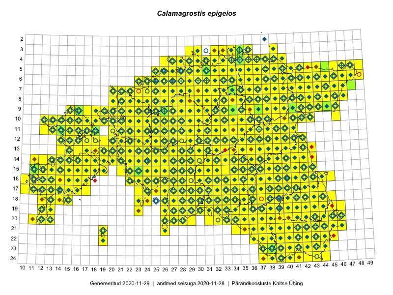

Calamagrostis epigeios — jäneskastik
Poaceae :: Calamagrostis epigeios (L.) Roth (3336); Calamagrostis epigeios subsp. epigeios (L.) Roth (106); Calamagrostis epigeios var. pubescens Rohlena (36); Calamagrostis epigejos (L.) Roth (17); Calamagrostis epigeios var. subapicalis (4)

Kaart põhineb 7808 kirjel:
vaatlusi 3021
herbaareksemplare 478
PKÜ kirjeid1 3484
ELFi kirjeid2 817
LVA kirjeid3 8
Taime kaasaegsed ja ajaloolised leiukohad asuvad 530 ruudus.
Tingmärgid ja leidudega ruutude arvud periooditi uues (u) ja 2005 andmestikus (v)
| █ | vahemik | u4 | v5 |
|---|---|---|---|
| █ | 2006–2020 | 527 | – |
| ◆/◇ | 1971–2005 | 482 | 482 |
| ○ | 1921–1970 | 251 | 9 |
| + | kuni 1920 | 20 | 0 |
| × | hävinud | – | 0 |
| ? | kaheldav | – | 0 |
| Ruut | Leidja(d) | Leiuaeg | Kirje |
|---|---|---|---|
| 20-40 | Toomas Kukk, Kersti Tambets, Sten Mander, Kristine Fenske | 2020-09-30 | ruut/ala: Calamagrostis epigeios (L.) Roth |
| 21-43 | Toomas Kukk, Kersti Tambets, Sten Mander, Kristine Fenske | 2020-09-30 | ruut/ala: Calamagrostis epigeios (L.) Roth |
| 21-43 | Toomas Kukk, Kersti Tambets, Sten Mander, Kristine Fenske | 2020-09-30 | ruut/ala: Calamagrostis epigeios (L.) Roth |
| 21-45 | Toomas Kukk, Kersti Tambets, Sten Mander, Kristine Fenske | 2020-09-30 | ruut/ala: Calamagrostis epigeios (L.) Roth |
| 20-45 | Toomas Kukk | 2020-09-30 | ruut/ala: Calamagrostis epigeios (L.) Roth |
| 14-16 | Mari Reitalu | 2020-09-27 | ruut/ala: Calamagrostis epigeios (L.) Roth |
| 10-22 | Kaili Kattai | 2020-09-25 | punkt: Calamagrostis epigeios (L.) Roth |
| 10-22 | Kaili Kattai | 2020-09-25 | punkt: Calamagrostis epigeios (L.) Roth |
| 10-22 | Kaili Kattai | 2020-09-25 | punkt: Calamagrostis epigeios (L.) Roth |
| 08-40 | Meeli Mesipuu | 2020-09-24 | punkt: Calamagrostis epigeios (L.) Roth |
| 06-34 | Meeli Mesipuu | 2020-09-24 | punkt: Calamagrostis epigeios (L.) Roth |
| 13-19 | Meeli Mesipuu | 2020-09-13 | ruut/ala: Calamagrostis epigeios (L.) Roth |
| 19-39 | Toomas Kukk | 2020-09-12 | ruut/ala: Calamagrostis epigeios (L.) Roth |
| 19-39 | Toomas Kukk | 2020-09-12 | PKÜ: 21028 |
| 19-39 | Toomas Kukk | 2020-09-12 | PKÜ: 21027 |
| 19-39 | Peedu Saar | 2020-09-12 | PKÜ: 21029 |
| 17-16 | Meeli Mesipuu, Ott Luuk | 2020-09-12 | PKÜ: 20536 |
| 15-18 | Toomas Kukk | 2020-09-11 | PKÜ: 20966 |
| 15-18 | Peedu Saar | 2020-09-11 | ruut/ala: Calamagrostis epigeios (L.) Roth |
| 15-18 | Peedu Saar | 2020-09-11 | PKÜ: 20979 |
| 17-16 | Ott Luuk, Meeli Mesipuu | 2020-09-11 | PKÜ: 21034 |
| 16-15 | Ott Luuk, Meeli Mesipuu | 2020-09-11 | PKÜ: 21040 |
| 16-15 | Ott Luuk, Meeli Mesipuu | 2020-09-11 | PKÜ: 21039 |
| 16-15 | Meeli Mesipuu, Ott Luuk | 2020-09-11 | PKÜ: 20660 |
| 16-15 | Meeli Mesipuu | 2020-09-11 | PKÜ: 20558 |
| 16-17 | Toomas Kukk | 2020-09-10 | ruut/ala: Calamagrostis epigeios (L.) Roth |
| 16-16 | Toomas Kukk | 2020-09-10 | ruut/ala: Calamagrostis epigeios (L.) Roth |
| 16-17 | Toomas Kukk | 2020-09-10 | PKÜ: 20961 |
| 16-17 | Toomas Kukk | 2020-09-10 | PKÜ: 20962 |
| 16-17 | Toomas Kukk | 2020-09-10 | PKÜ: 20960 |
| 14-32 | Tiit Hallikma | 2020-09-10 | ELF: 1104 |
| 16-16 | Meeli Mesipuu, Ott Luuk | 2020-09-10 | PKÜ: 21311 |
| 24-38 | Meeli Mesipuu | 2020-09-08 | PKÜ: 20696 |
| 24-38 | Meeli Mesipuu | 2020-09-07 | PKÜ: 20476 |
| 24-38 | Meeli Mesipuu | 2020-09-07 | PKÜ: 20478 |
| 24-37 | Meeli Mesipuu | 2020-09-07 | PKÜ: 20480 |
| 24-37;24-38 | Meeli Mesipuu | 2020-09-07 | PKÜ: 20482 |
| 24-37;24-38 | Meeli Mesipuu | 2020-09-07 | PKÜ: 20483 |
| 24-37;24-38 | Meeli Mesipuu | 2020-09-07 | PKÜ: 20484 |
| 11-27;11-28 | Toivo Sepp | 2020-09-06 | ELF: 20714 |
| 16-14 | Mari Reitalu, Sirje Azarov | 2020-09-03 | ruut/ala: Calamagrostis epigeios (L.) Roth |
| 08-32 | Peedu Saar | 2020-09-02 | PKÜ: 20908 |
| 16-23 | Toomas Kukk | 2020-09-01 | PKÜ: 20991 |
| 16-23 | Toomas Kukk | 2020-09-01 | PKÜ: 20993 |
| 16-23 | Toomas Kukk | 2020-09-01 | PKÜ: 20994 |
| 16-23 | Toomas Kukk | 2020-09-01 | PKÜ: 20992 |
| 16-23 | Toomas Kukk | 2020-09-01 | PKÜ: 21001 |
| 16-23 | Peedu Saar | 2020-09-01 | ruut/ala: Calamagrostis epigeios (L.) Roth |
| 16-23 | Peedu Saar | 2020-09-01 | PKÜ: 20897 |
| 16-23 | Peedu Saar | 2020-09-01 | PKÜ: 20902 |
| 16-30 | Ott Luuk, Meeli Mesipuu | 2020-09-01 | PKÜ: 20870 |
| 16-30 | Ott Luuk, Meeli Mesipuu | 2020-09-01 | PKÜ: 20871 |
| 16-30 | Ott Luuk, Meeli Mesipuu | 2020-09-01 | PKÜ: 20872 |
| 16-30 | Ott Luuk, Meeli Mesipuu | 2020-09-01 | PKÜ: 20875 |
| 17-30 | Ott Luuk, Meeli Mesipuu | 2020-09-01 | PKÜ: 20878 |
| 17-30 | Ott Luuk, Meeli Mesipuu | 2020-09-01 | PKÜ: 20879 |
| 16-30 | Meeli Mesipuu, Ott Luuk | 2020-09-01 | PKÜ: 21331 |
| 16-22 | Toomas Kukk | 2020-08-31 | PKÜ: 20705 |
| 16-22 | Peedu Saar | 2020-08-31 | ruut/ala: Calamagrostis epigeios (L.) Roth |
| 16-22 | Peedu Saar | 2020-08-31 | PKÜ: 20649 |
| 16-22 | Meeli Mesipuu, Toomas Kukk | 2020-08-31 | PKÜ: 20710 |
| 14-22 | Peedu Saar, Toomas Kukk | 2020-08-30 | ruut/ala: Calamagrostis epigeios (L.) Roth |
| 20-27 | Meeli Mesipuu | 2020-08-28 | PKÜ: 20718 |
| 20-27 | Meeli Mesipuu | 2020-08-28 | PKÜ: 20719 |
| 20-27 | Meeli Mesipuu | 2020-08-28 | PKÜ: 20741 |
| 19-29 | Meeli Mesipuu | 2020-08-28 | PKÜ: 20744 |
| 15-17 | Mari Reitalu, Sirje Azarov | 2020-08-27–2020-09-06 | ruut/ala: Calamagrostis epigeios (L.) Roth |
| 04-37 | Toomas Kukk | 2020-08-26 | PKÜ: 21004 |
| 04-37 | Toomas Kukk | 2020-08-26 | PKÜ: 21005 |
| 04-37 | Peedu Saar | 2020-08-26 | PKÜ: 20909 |
| 11-28 | Ott Luuk | 2020-08-26 | ruut/ala: Calamagrostis epigeios (L.) Roth |
| 10-36 | Peedu Saar | 2020-08-25 | ruut/ala: Calamagrostis epigeios (L.) Roth |
| 11-37 | Peedu Saar | 2020-08-25 | ruut/ala: Calamagrostis epigeios (L.) Roth |
| 11-31 | Ott Luuk | 2020-08-24 | ruut/ala: Calamagrostis epigeios (L.) Roth |
| 07-33 | Meeli Mesipuu | 2020-08-23 | PKÜ: 20390 |
| 17-33 | Peedu Saar | 2020-08-21 | ruut/ala: Calamagrostis epigeios (L.) Roth |
| 18-33 | Peedu Saar | 2020-08-21 | ruut/ala: Calamagrostis epigeios (L.) Roth |
| 18-33 | Peedu Saar | 2020-08-21 | PKÜ: 20924 |
| 18-33 | Ott Luuk, Jaak-Albert Metsoja | 2020-08-21 | PKÜ: 20885 |
| 14-16 | Mari Reitalu, Sirje Azarov | 2020-08-20 | ruut/ala: Calamagrostis epigeios (L.) Roth |
| 14-16 | Mari Reitalu, Sirje Azarov | 2020-08-19–2020-08-20 | ruut/ala: Calamagrostis epigeios (L.) Roth |
| 03-34 | Toomas Kukk, Ott Luuk, Kersti Tambets, Sten Mander, Kristine Fenske, Maie Itse | 2020-08-19 | ruut/ala: Calamagrostis epigeios (L.) Roth |
| 11-38 | Peedu Saar | 2020-08-19 | ruut/ala: Calamagrostis epigeios (L.) Roth |
| 12-39 | Peedu Saar | 2020-08-19 | ruut/ala: Calamagrostis epigeios (L.) Roth |
| 10-42 | Toomas Kukk, Ott Luuk, Kersti Tambets, Sten Mander, Kristine Fenske | 2020-08-18 | ruut/ala: Calamagrostis epigeios (L.) Roth |
| 07-43 | Toomas Kukk, Ott Luuk, Kersti Tambets, Sten Mander, Kristine Fenske | 2020-08-18 | ruut/ala: Calamagrostis epigeios (L.) Roth |
| 05-42 | Toomas Kukk, Ott Luuk, Kersti Tambets, Sten Mander, Kristine Fenske | 2020-08-18 | ruut/ala: Calamagrostis epigeios (L.) Roth |
| 14-17 | Mari Reitalu, Sirje Azarov | 2020-08-18 | ruut/ala: Calamagrostis epigeios (L.) Roth |
| 14-17 | Mari Reitalu, Sirje Azarov | 2020-08-18 | ruut/ala: Calamagrostis epigeios (L.) Roth |
| 14-17 | Mari Reitalu, Sirje Azarov | 2020-08-18 | ruut/ala: Calamagrostis epigeios (L.) Roth |
| 18-34 | Tiit Hallikma | 2020-08-17 | ELF: 24958 |
| 16-11 | Toomas Kukk | 2020-08-15 | PKÜ: 21213 |
| 16-11 | Meeli Mesipuu | 2020-08-14 | PKÜ: 20840 |
| 17-31 | Toomas Kukk, Martin Tikk | 2020-08-12 | ruut/ala: Calamagrostis epigeios (L.) Roth |
| 14-19 | Meeli Mesipuu | 2020-08-12 | ruut/ala: Calamagrostis epigeios (L.) Roth |
| 14-16 | Meeli Mesipuu | 2020-08-11 | PKÜ: 20285 |
| 16-17 | Mari Reitalu, Sirje Azarov | 2020-08-08–2020-08-29 | ruut/ala: Calamagrostis epigeios (L.) Roth |
| 15-43 | Peedu Saar | 2020-08-08 | ruut/ala: Calamagrostis epigeios (L.) Roth |
| 15-42 | Peedu Saar | 2020-08-08 | ruut/ala: Calamagrostis epigeios (L.) Roth |
| 12-15 | Peedu Saar, Ott Luuk | 2020-08-07 | ruut/ala: Calamagrostis epigeios (L.) Roth |
| 24-42 | Toomas Kukk, Eerik Leibak | 2020-08-06 | ruut/ala: Calamagrostis epigeios (L.) Roth |
| 22-40 | Toomas Kukk, Eerik Leibak | 2020-08-06 | ruut/ala: Calamagrostis epigeios (L.) Roth |
| 11-17 | Peedu Saar | 2020-08-06 | ruut/ala: Calamagrostis epigeios (L.) Roth |
| 11-17 | Peedu Saar | 2020-08-06 | PKÜ: 20616 |
| 10-17 | Peedu Saar | 2020-08-06 | PKÜ: 20609 |
| 11-17 | Peedu Saar | 2020-08-06 | PKÜ: 21306 |
| 11-17 | Peedu Saar | 2020-08-06 | PKÜ: 20618 |
| 11-17 | Peedu Saar | 2020-08-06 | PKÜ: 20617 |
| 12-14 | Ott Luuk, Peedu Saar | 2020-08-06 | PKÜ: 20736 |
| 13-15 | Ott Luuk, Peedu Saar | 2020-08-06 | PKÜ: 20745 |
| 13-15 | Ott Luuk, Peedu Saar | 2020-08-06 | PKÜ: 20746 |
| 22-41 | Toomas Kukk, Eerik Leibak | 2020-08-05 | ruut/ala: Calamagrostis epigeios (L.) Roth |
| 22-42 | Toomas Kukk, Eerik Leibak | 2020-08-05 | ruut/ala: Calamagrostis epigeios (L.) Roth |
| 22-42 | Toomas Kukk | 2020-08-05 | ELF: 9946 |
| 10-23 | Peedu Saar | 2020-08-05 | ruut/ala: Calamagrostis epigeios (L.) Roth |
| 10-23 | Ott Luuk | 2020-08-05 | ruut/ala: Calamagrostis epigeios (L.) Roth |
| 14-39 | Peedu Saar | 2020-08-03 | ruut/ala: Calamagrostis epigeios (L.) Roth |
| 14-40 | Peedu Saar | 2020-08-03 | ruut/ala: Calamagrostis epigeios (L.) Roth |
| 06-27 | Peedu Saar | 2020-07-30 | ruut/ala: Calamagrostis epigeios (L.) Roth |
| 07-45 | Toomas Kukk | 2020-07-29 | ruut/ala: Calamagrostis epigeios (L.) Roth |
| 09-45 | Toomas Kukk | 2020-07-29 | PKÜ: 21086 |
| 09-45 | Toomas Kukk | 2020-07-29 | PKÜ: 21087 |
| 08-45 | Peedu Saar | 2020-07-29 | PKÜ: 20503 |
| 08-43 | Toomas Kukk | 2020-07-28 | ruut/ala: Calamagrostis epigeios (L.) Roth |
| 09-43 | Toomas Kukk | 2020-07-28 | ruut/ala: Calamagrostis epigeios (L.) Roth |
| 09-42 | Toomas Kukk | 2020-07-28 | PKÜ: 21099 |
| 08-43 | Peedu Saar | 2020-07-28 | ruut/ala: Calamagrostis epigeios (L.) Roth |
| 14-38 | Peedu Saar | 2020-07-28 | ruut/ala: Calamagrostis epigeios (L.) Roth |
| 08-42 | Peedu Saar | 2020-07-28 | PKÜ: 20495 |
| 08-42 | Peedu Saar | 2020-07-28 | PKÜ: 20497 |
| 08-42 | Peedu Saar | 2020-07-28 | PKÜ: 20501 |
| 09-42 | Peedu Saar | 2020-07-28 | PKÜ: 20526 |
| 13-37 | Ulvi Selgis | 2020-07-27 | punkt: Calamagrostis epigeios (L.) Roth |
| 18-33 | Art Villem Adojaan | 2020-07-25 | punkt: Calamagrostis epigejos (L.) Roth |
| 09-26 | Peedu Saar | 2020-07-23 | punkt: Calamagrostis epigeios (L.) Roth |
| 08-25 | Ott Luuk | 2020-07-22–2020-07-23 | ruut/ala: Calamagrostis epigeios (L.) Roth |
| 15-36 | Karl Hendrik Tamkivi | 2020-07-22 | punkt: Calamagrostis epigejos (L.) Roth |
| 15-36 | Art Villem Adojaan | 2020-07-22 | punkt: Calamagrostis epigeios (L.) Roth |
| 09-26 | Ott Luuk | 2020-07-21–2020-07-23 | ruut/ala: Calamagrostis epigeios (L.) Roth |
| 19-39 | Meeli Mesipuu | 2020-07-21 | PKÜ: 20196 |
| 15-36 | Art Villem Adojaan | 2020-07-21 | punkt: Calamagrostis epigejos (L.) Roth |
| 14-21 | Meeli Mesipuu, Ott Luuk | 2020-07-18 | PKÜ: 21234 |
| 06-24 | Kaili Kattai | 2020-07-17 | punkt: Calamagrostis epigeios (L.) Roth |
| 06-24 | Kaili Kattai | 2020-07-17 | punkt: Calamagrostis epigeios (L.) Roth |
| 19-42 | Silvia Pihu | 2020-07-16 | ELF: 1015 |
| 14-38 | Meeli Mesipuu | 2020-07-16 | ruut/ala: Calamagrostis epigeios (L.) Roth |
| 16-39 | Toomas Kukk, Peedu Saar, Art Villem Adojaan | 2020-07-15 | ruut/ala: Calamagrostis epigeios (L.) Roth |
| 19-39 | Meeli Mesipuu | 2020-07-15 | PKÜ: 20176 |
| 16-39 | Art Villem Adojaan | 2020-07-15 | punkt: Calamagrostis epigejos (L.) Roth |
| 07-31 | Eerik Leibak | 2020-07-14 | ELF: 305 |
| 06-28 | Toomas Kukk | 2020-07-12 | ruut/ala: Calamagrostis epigeios (L.) Roth |
| 09-21 | Kaili Kattai | 2020-07-12 | punkt: Calamagrostis epigeios (L.) Roth |
| 08-23 | Thea Kull | 2020-07-11 | punkt: Calamagrostis epigeios (L.) Roth |
| 08-23 | Thea Kull | 2020-07-11 | punkt: Calamagrostis epigeios (L.) Roth |
| 19-41 | Külli Kalamees | 2020-07-08 | punkt: Calamagrostis epigeios (L.) Roth |
| 20-45 | Toomas Kukk, Eerik Leibak | 2020-07-07 | ruut/ala: Calamagrostis epigeios (L.) Roth |
| 16-15 | Mari Reitalu, Sirje Azarov, Anne Teigamägi | 2020-07-07 | ruut/ala: Calamagrostis epigeios (L.) Roth |
| 10-24 | Kaili Kattai | 2020-07-06 | punkt: Calamagrostis epigeios (L.) Roth |
| 13-21 | Kaili Kattai | 2020-07-04 | punkt: Calamagrostis epigeios (L.) Roth |
| 17-15 | Toomas Kukk | 2020-07-03 | punkt: Calamagrostis epigeios (L.) Roth |
| 17-15 | Toomas Kukk | 2020-07-03 | PKÜ: 21199 |
| 17-15 | Toomas Kukk | 2020-07-03 | PKÜ: 21201 |
| 17-15 | Toomas Kukk | 2020-07-03 | PKÜ: 21200 |
| 17-11 | Rein Kalamees, Ott Luuk | 2020-07-03 | PKÜ: 20449 |
| 17-11 | Rein Kalamees, Ott Luuk | 2020-07-03 | PKÜ: 20459 |
| 17-11 | Meeli Mesipuu | 2020-07-03 | PKÜ: 20190 |
| 20-12 | Peedu Saar | 2020-07-02 | PKÜ: 20546 |
| 20-12 | Peedu Saar | 2020-07-02 | PKÜ: 20552 |
| 20-12 | Peedu Saar | 2020-07-02 | PKÜ: 20553 |
| 17-11 | Toomas Kukk | 2020-07-01 | PKÜ: 20469 |
| 16-11 | Toomas Kukk | 2020-07-01 | PKÜ: 20499 |
| 16-11 | Toomas Kukk | 2020-07-01 | PKÜ: 20500 |
| 17-11 | Toomas Kukk | 2020-07-01 | PKÜ: 20510 |
| 17-11 | Toomas Kukk | 2020-07-01 | PKÜ: 20520 |
| 17-11 | Meeli Mesipuu | 2020-07-01 | PKÜ: 21050 |
| 17-11 | Meeli Mesipuu | 2020-07-01 | PKÜ: 21114 |
| 14-22 | Ott Luuk, Rein Kalamees | 2020-06-30 | PKÜ: 20585 |
| 13-26 | Peedu Saar, Toomas Kukk | 2020-06-28 | punkt: Calamagrostis epigeios (L.) Roth |
| 20-37 | Ott Luuk | 2020-06-27 | ruut/ala: Calamagrostis epigeios (L.) Roth |
| 04-33 | Rein Kalamees | 2020-06-26 | PKÜ: 20235 |
| 04-34 | Rein Kalamees | 2020-06-26 | PKÜ: 20236 |
| 04-33 | Rein Kalamees | 2020-06-26 | PKÜ: 20250 |
| 04-33 | Rein Kalamees | 2020-06-22 | PKÜ: 20241 |
| 04-33 | Rein Kalamees | 2020-06-22 | PKÜ: 20244 |
| 04-33 | Rein Kalamees | 2020-06-22 | PKÜ: 20245 |
| 04-33 | Rein Kalamees | 2020-06-22 | PKÜ: 20246 |
| 04-33 | Rein Kalamees | 2020-06-22 | PKÜ: 20251 |
| 04-33 | Rein Kalamees | 2020-06-22 | PKÜ: 20252 |
| 08-28 | Ott Luuk | 2020-06-21 | ruut/ala: Calamagrostis epigeios (L.) Roth |
| 07-28 | Ott Luuk | 2020-06-21 | ruut/ala: Calamagrostis epigeios (L.) Roth |
| 13-21 | Toomas Kukk, Martin Tikk | 2020-06-18 | PKÜ: 21104 |
| 13-21 | Rein Kalamees | 2020-06-18 | PKÜ: 21106 |
| 13-21 | Rein Kalamees | 2020-06-18 | PKÜ: 21107 |
| 12-23 | Meeli Mesipuu | 2020-06-18 | PKÜ: 21155 |
| 07-29 | Toomas Kukk, Martin Tikk, Rein Kalamees | 2020-06-17 | ruut/ala: Calamagrostis epigeios (L.) Roth |
| 06-26 | Toomas Kukk, Martin Tikk | 2020-06-17 | PKÜ: 20772 |
| 06-26 | Toomas Kukk, Martin Tikk | 2020-06-17 | PKÜ: 20783 |
| 06-26 | Rein Kalamees | 2020-06-17 | PKÜ: 20760 |
| 11-27 | Peedu Saar | 2020-06-17 | PKÜ: 21218 |
| 11-27 | Peedu Saar | 2020-06-17 | PKÜ: 21219 |
| 11-27 | Peedu Saar | 2020-06-17 | PKÜ: 21220 |
| 11-27 | Peedu Saar | 2020-06-17 | PKÜ: 21221 |
| 11-22;12-22 | Ott Luuk, Meeli Mesipuu | 2020-06-17 | PKÜ: 20863 |
| 12-22 | Ott Luuk, Meeli Mesipuu | 2020-06-17 | PKÜ: 20866 |
| 12-22 | Ott Luuk, Meeli Mesipuu | 2020-06-17 | PKÜ: 20867 |
| 12-22 | Ott Luuk, Meeli Mesipuu | 2020-06-17 | PKÜ: 20869 |
| 11-22 | Meeli Mesipuu, Ott Luuk | 2020-06-17 | PKÜ: 21119 |
| 06-27 | Toomas Kukk, Rein Kalamees, Martin Tikk | 2020-06-16 | PKÜ: 20853 |
| 06-27 | Toomas Kukk, Rein Kalamees, Martin Tikk | 2020-06-16 | PKÜ: 20852 |
| 05-26 | Toomas Kukk, Martin Tikk | 2020-06-16 | PKÜ: 20848 |
| 05-26 | Rein Kalamees | 2020-06-16 | PKÜ: 20849 |
| 10-30 | Peedu Saar | 2020-06-15 | PKÜ: 20397 |
| 10-30 | Peedu Saar | 2020-06-15 | PKÜ: 20398 |
| 10-30 | Peedu Saar | 2020-06-15 | PKÜ: 20399 |
| 11-32 | Peedu Saar | 2020-06-15 | PKÜ: 20417 |
| 04-32 | Peedu Saar, Ene Kook | 2020-06-11 | PKÜ: 20371 |
| 04-32 | Peedu Saar | 2020-06-11 | PKÜ: 20375 |
| 04-33 | Meeli Mesipuu | 2020-06-11 | PKÜ: 21064 |
| 04-33 | Meeli Mesipuu | 2020-06-11 | PKÜ: 21068 |
| 04-33 | Meeli Mesipuu | 2020-06-11 | PKÜ: 21071 |
| 04-33 | Meeli Mesipuu | 2020-06-11 | PKÜ: 21072 |
| 04-33 | Meeli Mesipuu | 2020-06-11 | PKÜ: 21073 |
| 04-33 | Meeli Mesipuu | 2020-06-11 | PKÜ: 21075 |
| 04-33 | Meeli Mesipuu | 2020-06-11 | PKÜ: 21077 |
| 04-33 | Meeli Mesipuu | 2020-06-11 | PKÜ: 21074 |
| 04-33 | Meeli Mesipuu | 2020-06-11 | PKÜ: 21300 |
| 03-33 | Toomas Kukk, Meeli Mesipuu | 2020-06-10 | ruut/ala: Calamagrostis epigeios (L.) Roth |
| 03-33 | Toomas Kukk | 2020-06-10 | PKÜ: 20800 |
| 03-32;03-33 | Toomas Kukk | 2020-06-10 | PKÜ: 20801 |
| 03-33 | Toomas Kukk | 2020-06-10 | PKÜ: 20794 |
| 05-34 | Rein Kalamees, Ott Luuk | 2020-06-10 | PKÜ: 20651 |
| 05-34 | Rein Kalamees, Ott Luuk | 2020-06-10 | PKÜ: 20664 |
| 05-34 | Rein Kalamees | 2020-06-10 | PKÜ: 20625 |
| 04-33 | Peedu Saar | 2020-06-10 | ruut/ala: Calamagrostis epigeios (L.) Roth |
| 04-33 | Peedu Saar | 2020-06-10 | PKÜ: 20352 |
| 04-33 | Peedu Saar | 2020-06-10 | PKÜ: 20360 |
| 03-32 | Meeli Mesipuu | 2020-06-10 | PKÜ: 20806 |
| 03-32 | Meeli Mesipuu | 2020-06-10 | PKÜ: 20808 |
| 04-33 | Meeli Mesipuu | 2020-06-10 | PKÜ: 21062 |
| 04-33 | Meeli Mesipuu | 2020-06-10 | PKÜ: 21065 |
| 04-33 | Meeli Mesipuu | 2020-06-10 | PKÜ: 21058 |
| 04-34 | Ene Kook, Peedu Saar | 2020-06-10 | PKÜ: 20348 |
| 04-33 | Toomas Kukk | 2020-06-09 | PKÜ: 20828 |
| 05-34 | Rein Kalamees, Ott Luuk | 2020-06-09 | PKÜ: 20264 |
| 05-33 | Rein Kalamees, Ott Luuk | 2020-06-09 | PKÜ: 20265 |
| 05-33 | Rein Kalamees, Ott Luuk | 2020-06-09 | PKÜ: 20266 |
| 05-34 | Rein Kalamees, Ott Luuk | 2020-06-09 | PKÜ: 20263 |
| 03-34 | Peedu Saar, Ene Kook | 2020-06-09 | PKÜ: 20321 |
| 03-34 | Peedu Saar, Ene Kook | 2020-06-09 | PKÜ: 20319 |
| 04-34 | Meeli Mesipuu, Toomas Kukk | 2020-06-09 | PKÜ: 20810 |
| 04-33 | Meeli Mesipuu, Toomas Kukk | 2020-06-09 | PKÜ: 20833 |
| 04-33 | Meeli Mesipuu | 2020-06-09 | PKÜ: 20829 |
| 04-33 | Meeli Mesipuu | 2020-06-09 | PKÜ: 20832 |
| 04-33 | Meeli Mesipuu | 2020-06-09 | PKÜ: 21054 |
| 03-34 | Ene Kook | 2020-06-09 | PKÜ: 20322 |
| 04-34 | Ene Kook | 2020-06-09 | PKÜ: 20323 |
| 08-36 | Toomas Kukk, Meeli Mesipuu | 2020-06-08 | ruut/ala: Calamagrostis epigeios (L.) Roth |
| 07-37 | Toomas Kukk, Meeli Mesipuu | 2020-06-08 | ruut/ala: Calamagrostis epigeios (L.) Roth |
| 08-36 | Toomas Kukk, Meeli Mesipuu | 2020-06-08 | PKÜ: 20789 |
| 06-36 | Toomas Kukk | 2020-06-08 | PKÜ: 20773 |
| 03-34 | Peedu Saar, Ene Kook | 2020-06-08 | PKÜ: 20295 |
| 03-34 | Peedu Saar, Ene Kook | 2020-06-08 | PKÜ: 20296 |
| 03-34 | Peedu Saar | 2020-06-08 | PKÜ: 20297 |
| 03-34 | Peedu Saar | 2020-06-08 | PKÜ: 20298 |
| 04-34 | Peedu Saar | 2020-06-08 | PKÜ: 20303 |
| 04-34 | Peedu Saar | 2020-06-08 | PKÜ: 20306 |
| 05-34 | Ott Luuk, Rein Kalamees | 2020-06-08 | PKÜ: 20272 |
| 05-34 | Ott Luuk, Rein Kalamees | 2020-06-08 | PKÜ: 20279 |
| 07-37 | Meeli Mesipuu, Toomas Kukk | 2020-06-08 | PKÜ: 20793 |
| 04-34 | Ene Kook, Peedu Saar | 2020-06-08 | PKÜ: 20286 |
| 03-34 | Ene Kook, Peedu Saar | 2020-06-08 | PKÜ: 20289 |
| 03-34 | Ene Kook, Peedu Saar | 2020-06-08 | PKÜ: 20290 |
| 03-34;04-34 | Ene Kook, Peedu Saar | 2020-06-08 | PKÜ: 20291 |
| 03-34 | Ene Kook, Peedu Saar | 2020-06-08 | PKÜ: 20292 |
| 03-34 | Ene Kook, Peedu Saar | 2020-06-08 | PKÜ: 20293 |
| 03-34 | Ene Kook | 2020-06-08 | PKÜ: 20301 |
| 04-34 | Ene Kook | 2020-06-08 | PKÜ: 20307 |
| 10-20 | Kaili Kattai | 2020-06-07 | punkt: Calamagrostis epigeios (L.) Roth |
| 16-40 | Jelle Devalez | 2020-06-07 | punkt: Calamagrostis epigejos (L.) Roth |
| 23-40 | Taavi Tatsi, Jaak-Albert Metsoja | 2020-06-06 | punkt: Calamagrostis epigeios (L.) Roth |
| 12-18 | Toomas Kukk, Ott Luuk, Peeter Pärn | 2020-05-29–2020-05-31 | ruut/ala: Calamagrostis epigeios (L.) Roth |
| 17-15 | Mari Reitalu, Sirje Azarov, Triin Reitalu | 2020-05-28 | ruut/ala: Calamagrostis epigeios (L.) Roth |
| 11-17 | Toomas Kukk, Rein Kalamees | 2019-10-05 | ruut/ala: Calamagrostis epigeios (L.) Roth |
| 05-29 | Vello Keppart | 2019-10-04 | punkt: Calamagrostis epigeios (L.) Roth |
| 05-29 | Vello Keppart | 2019-10-03 | punkt: Calamagrostis epigeios (L.) Roth |
| 15-14 | Peedu Saar, Toomas Kukk | 2019-09-27 | ruut/ala: Calamagrostis epigeios (L.) Roth |
| 09-45 | Ott Luuk | 2019-09-27 | ruut/ala: Calamagrostis epigeios (L.) Roth |
| 19-44 | Meeli Mesipuu | 2019-09-27 | punkt: Calamagrostis epigeios (L.) Roth |
| 15-18 | Peedu Saar, Toomas Kukk | 2019-09-26 | ruut/ala: Calamagrostis epigeios (L.) Roth |
| 22-44 | Meeli Mesipuu | 2019-09-26 | punkt: Calamagrostis epigeios (L.) Roth |
| 16-13 | Mari Reitalu, Sirje Azarov | 2019-09-26 | ruut/ala: Calamagrostis epigeios (L.) Roth |
| 16-14 | Mari Reitalu, Sirje Azarov | 2019-09-26 | ruut/ala: Calamagrostis epigeios (L.) Roth |
| 16-13;16-14 | Mari Reitalu, Sirje Azarov | 2019-09-26 | ELF: 81 |
| 13-21 | Toomas Kukk, Peedu Saar | 2019-09-25 | ruut/ala: Calamagrostis epigeios (L.) Roth |
| 18-28 | Peedu Saar, Toomas Kukk | 2019-09-25 | ruut/ala: Calamagrostis epigeios (L.) Roth |
| 18-41 | Peedu Saar, Ott Luuk | 2019-09-24 | ruut/ala: Calamagrostis epigeios (L.) Roth |
| 11-32 | Indrek Tammekänd | 2019-09-22 | ruut/ala: Calamagrostis epigeios (L.) Roth |
| 17-13 | Mari Reitalu, Triin Reitalu | 2019-09-20 | ruut/ala: Calamagrostis epigeios (L.) Roth |
| 10-22 | Toomas Kukk, Peedu Saar | 2019-09-19 | ruut/ala: Calamagrostis epigeios (L.) Roth |
| 11-22 | Peedu Saar, Toomas Kukk | 2019-09-19 | ruut/ala: Calamagrostis epigeios (L.) Roth |
| 10-21 | Ott Luuk | 2019-09-19 | ruut/ala: Calamagrostis epigeios (L.) Roth |
| 10-19 | Peedu Saar, Toomas Kukk | 2019-09-18 | ruut/ala: Calamagrostis epigeios (L.) Roth |
| 10-20 | Ott Luuk | 2019-09-18 | ruut/ala: Calamagrostis epigeios (L.) Roth |
| 09-20 | Ott Luuk | 2019-09-18 | ruut/ala: Calamagrostis epigeios (L.) Roth |
| 09-19 | Toomas Kukk, Peedu Saar | 2019-09-17 | ruut/ala: Calamagrostis epigeios (L.) Roth |
| 09-19 | Toomas Kukk, Peedu Saar | 2019-09-17 | ELF: 13732 |
| 10-18 | Ott Luuk | 2019-09-17 | ruut/ala: Calamagrostis epigeios (L.) Roth |
| 09-18 | Ott Luuk | 2019-09-17 | ruut/ala: Calamagrostis epigeios (L.) Roth |
| 08-45 | Toomas Kukk, Thea Kull | 2019-09-12 | ruut/ala: Calamagrostis epigeios (L.) Roth |
| 08-44 | Thea Kull, Toomas Kukk | 2019-09-12 | ruut/ala: Calamagrostis epigeios (L.) Roth |
| 07-45 | Thea Kull, Toomas Kukk | 2019-09-12 | ruut/ala: Calamagrostis epigeios (L.) Roth |
| 05-48 | Peedu Saar, Timo Luhamäe | 2019-09-12 | ruut/ala: Calamagrostis epigeios (L.) Roth |
| 06-46 | Toomas Kukk, Thea Kull | 2019-09-11 | ruut/ala: Calamagrostis epigeios (L.) Roth |
| 06-46 | Toomas Kukk, Thea Kull | 2019-09-11 | punkt: Calamagrostis epigeios (L.) Roth |
| 06-45 | Thea Kull, Toomas Kukk | 2019-09-11 | punkt: Calamagrostis epigeios (L.) Roth |
| 05-46 | Thea Kull, Toomas Kukk | 2019-09-11 | ruut/ala: Calamagrostis epigeios (L.) Roth |
| 09-46 | Peedu Saar, Timo Luhamäe | 2019-09-11 | ruut/ala: Calamagrostis epigeios (L.) Roth |
| 10-46 | Peedu Saar, Timo Luhamäe | 2019-09-11 | ruut/ala: Calamagrostis epigeios (L.) Roth |
| 06-44 | Ott Luuk, Meeli Mesipuu | 2019-09-11 | ruut/ala: Calamagrostis epigeios (L.) Roth |
| 05-43 | Ott Luuk, Meeli Mesipuu | 2019-09-11 | ruut/ala: Calamagrostis epigeios (L.) Roth |
| 05-44 | Meeli Mesipuu, Ott Luuk | 2019-09-11 | ruut/ala: Calamagrostis epigeios (L.) Roth |
| 10-39 | Toomas Kukk, Thea Kull | 2019-09-10 | ruut/ala: Calamagrostis epigeios (L.) Roth |
| 10-40 | Toomas Kukk, Thea Kull | 2019-09-10 | ruut/ala: Calamagrostis epigeios (L.) Roth |
| 08-41 | Peedu Saar, Timo Luhamäe | 2019-09-10 | ruut/ala: Calamagrostis epigeios (L.) Roth |
| 09-41 | Peedu Saar, Timo Luhamäe | 2019-09-10 | ruut/ala: Calamagrostis epigeios (L.) Roth |
| 08-43 | Ott Luuk, Meeli Mesipuu | 2019-09-10 | ruut/ala: Calamagrostis epigeios (L.) Roth |
| 10-23 | Tõnu Ploompuu | 2019-09-07 | ELF: 193 |
| 08-24 | Peedu Saar, Ott Luuk | 2019-09-05 | ruut/ala: Calamagrostis epigeios (L.) Roth |
| 08-25 | Ott Luuk, Peedu Saar | 2019-09-05 | ruut/ala: Calamagrostis epigeios (L.) Roth |
| 15-14 | Mari Reitalu, Sirje Azarov, Anne Teigamägi | 2019-09-04 | ruut/ala: Calamagrostis epigeios (L.) Roth |
| 09-22 | Ott Luuk | 2019-09-03–2019-09-04 | ruut/ala: Calamagrostis epigeios (L.) Roth |
| 09-23 | Ott Luuk | 2019-09-03 | ruut/ala: Calamagrostis epigeios (L.) Roth |
| 16-40 | Kaili Kattai | 2019-09-03 | punkt: Calamagrostis epigeios (L.) Roth |
| 05-26 | Ott Luuk, Peedu Saar | 2019-09-02 | ruut/ala: Calamagrostis epigeios (L.) Roth |
| 08-30 | Ott Luuk, Toivo Sepp | 2019-08-30 | ruut/ala: Calamagrostis epigeios (L.) Roth |
| 15-28 | Toomas Kukk, Peedu Saar | 2019-08-29 | ruut/ala: Calamagrostis epigeios (L.) Roth |
| 15-27 | Peedu Saar, Toomas Kukk | 2019-08-29 | ruut/ala: Calamagrostis epigeios (L.) Roth |
| 15-29 | Peedu Saar, Toomas Kukk | 2019-08-29 | ruut/ala: Calamagrostis epigeios (L.) Roth |
| 13-32 | Ott Luuk, Eerik Leibak | 2019-08-29 | ruut/ala: Calamagrostis epigeios (L.) Roth |
| 14-32 | Meeli Mesipuu, Timo Luhamäe | 2019-08-29 | ruut/ala: Calamagrostis epigeios (L.) Roth |
| 14-33 | Meeli Mesipuu, Timo Luhamäe | 2019-08-29 | ruut/ala: Calamagrostis epigeios (L.) Roth |
| 15-32 | Mari Reitalu, Thea Kull, Martin Tikk | 2019-08-29 | ruut/ala: Calamagrostis epigeios (L.) Roth |
| 16-32 | Mari Reitalu, Thea Kull, Martin Tikk | 2019-08-29 | ruut/ala: Calamagrostis epigeios (L.) Roth |
| 16-31 | Toomas Kukk, Peedu Saar, Martin Tikk | 2019-08-28 | ruut/ala: Calamagrostis epigeios (L.) Roth |
| 16-30 | Peedu Saar, Martin Tikk, Toomas Kukk | 2019-08-28 | ruut/ala: Calamagrostis epigeios (L.) Roth |
| 14-31 | Ott Luuk, Eerik Leibak | 2019-08-28 | ruut/ala: Calamagrostis epigeios (L.) Roth |
| 15-31 | Meeli Mesipuu, Timo Luhamäe | 2019-08-28 | ruut/ala: Calamagrostis epigeios (L.) Roth |
| 15-31 | Meeli Mesipuu, Timo Luhamäe | 2019-08-28 | punkt: Calamagrostis epigeios (L.) Roth |
| 15-31 | Meeli Mesipuu, Timo Luhamäe | 2019-08-28 | punkt: Calamagrostis epigeios (L.) Roth |
| 15-31 | Meeli Mesipuu, Timo Luhamäe | 2019-08-28 | punkt: Calamagrostis epigeios (L.) Roth |
| 15-30 | Meeli Mesipuu, Timo Luhamäe | 2019-08-28 | ruut/ala: Calamagrostis epigeios (L.) Roth |
| 13-30 | Mari Reitalu, Thea Kull | 2019-08-28 | ruut/ala: Calamagrostis epigeios (L.) Roth |
| 13-29 | Mari Reitalu, Thea Kull | 2019-08-28 | ruut/ala: Calamagrostis epigeios (L.) Roth |
| 14-29 | Mari Reitalu, Thea Kull | 2019-08-28 | ruut/ala: Calamagrostis epigeios (L.) Roth |
| 17-33 | Toomas Kukk, Peedu Saar, Martin Tikk | 2019-08-27 | ruut/ala: Calamagrostis epigeios (L.) Roth |
| 07-25 | Rein Kalamees | 2019-08-27 | ruut/ala: Calamagrostis epigeios (L.) Roth |
| 17-32 | Peedu Saar, Martin Tikk, Toomas Kukk | 2019-08-27 | ruut/ala: Calamagrostis epigeios (L.) Roth |
| 12-36 | Ott Luuk, Eerik Leibak | 2019-08-27 | ruut/ala: Calamagrostis epigeios (L.) Roth |
| 16-35 | Meeli Mesipuu, Timo Luhamäe | 2019-08-27 | ruut/ala: Calamagrostis epigeios (L.) Roth |
| 15-35 | Meeli Mesipuu, Timo Luhamäe | 2019-08-27 | ruut/ala: Calamagrostis epigeios (L.) Roth |
| 15-35 | Meeli Mesipuu, Timo Luhamäe | 2019-08-27 | punkt: Calamagrostis epigeios (L.) Roth |
| 16-33 | Mari Reitalu, Thea Kull | 2019-08-27 | ruut/ala: Calamagrostis epigeios (L.) Roth |
| 16-32 | Mari Reitalu, Thea Kull | 2019-08-27 | ruut/ala: Calamagrostis epigeios (L.) Roth |
| 16-40 | Kaili Kattai | 2019-08-27 | punkt: Calamagrostis epigeios (L.) Roth |
| 09-21 | Peedu Saar, Ott Luuk, Sten Mander, Kersti Tambets, Kristine Fenske | 2019-08-23 | ruut/ala: Calamagrostis epigeios (L.) Roth |
| 20-44 | Maili Lehtpuu | 2019-08-22 | punkt: Calamagrostis epigeios (L.) Roth |
| 10-22 | Tõnu Ploompuu | 2019-08-21 | ELF: 279 |
| 09-24 | Peedu Saar | 2019-08-17 | ELF: 267 |
| 07-45 | Maili Lehtpuu | 2019-08-17 | punkt: Calamagrostis epigeios (L.) Roth |
| 12-26 | Thea Kull | 2019-08-16 | ruut/ala: Calamagrostis epigeios (L.) Roth |
| 12-26 | Thea Kull | 2019-08-16 | ELF: 20727 |
| 16-13 | Mari Reitalu, Sirje Azarov | 2019-08-15 | ELF: 21 |
| 11-36 | Peedu Saar | 2019-08-10 | ruut/ala: Calamagrostis epigeios (L.) Roth |
| 08-39 | Rein Kalamees, Toomas Kukk | 2019-08-08 | ruut/ala: Calamagrostis epigeios (L.) Roth |
| 09-39 | Rein Kalamees, Toomas Kukk | 2019-08-08 | ruut/ala: Calamagrostis epigeios (L.) Roth |
| 10-34 | Peedu Saar, Timo Luhamäe | 2019-08-08 | ruut/ala: Calamagrostis epigeios (L.) Roth |
| 07-32 | Ott Luuk, Jaak-Albert Metsoja | 2019-08-08 | ruut/ala: Calamagrostis epigeios (L.) Roth |
| 07-33 | Ott Luuk, Jaak-Albert Metsoja | 2019-08-08 | ruut/ala: Calamagrostis epigeios (L.) Roth |
| 04-35 | Meeli Mesipuu | 2019-08-08 | ruut/ala: Calamagrostis epigeios (L.) Roth |
| 06-35 | Toomas Kukk, Rein Kalamees, Kaur Maran | 2019-08-07 | ruut/ala: Calamagrostis epigeios (L.) Roth |
| 07-34 | Toomas Kukk, Rein Kalamees, Kaur Maran | 2019-08-07 | ruut/ala: Calamagrostis epigeios (L.) Roth |
| 03-33 | Ott Luuk, Jaak-Albert Metsoja | 2019-08-07 | ruut/ala: Calamagrostis epigeios (L.) Roth |
| 04-33 | Ott Luuk, Jaak-Albert Metsoja | 2019-08-07 | ruut/ala: Calamagrostis epigeios (L.) Roth |
| 04-37 | Meeli Mesipuu | 2019-08-07 | ruut/ala: Calamagrostis epigeios (L.) Roth |
| 04-37 | Meeli Mesipuu | 2019-08-07 | punkt: Calamagrostis epigeios (L.) Roth |
| 03-34 | Rein Kalamees, Toomas Kukk | 2019-08-06 | ruut/ala: Calamagrostis epigeios (L.) Roth |
| 04-34 | Rein Kalamees, Toomas Kukk | 2019-08-06 | ruut/ala: Calamagrostis epigeios (L.) Roth |
| 04-30 | Peedu Saar, Timo Luhamäe | 2019-08-06 | ruut/ala: Calamagrostis epigeios (L.) Roth |
| 05-31 | Peedu Saar, Timo Luhamäe | 2019-08-06 | TAA0149180: Calamagrostis epigeios (L.) Roth |
| 05-38 | Ott Luuk, Jaak-Albert Metsoja | 2019-08-06 | ruut/ala: Calamagrostis epigeios (L.) Roth |
| 04-38 | Ott Luuk, Jaak-Albert Metsoja | 2019-08-06 | ruut/ala: Calamagrostis epigeios (L.) Roth |
| 04-39 | Ott Luuk, Jaak-Albert Metsoja | 2019-08-06 | ruut/ala: Calamagrostis epigeios (L.) Roth |
| 03-39 | Meeli Mesipuu | 2019-08-06 | ruut/ala: Calamagrostis epigeios (L.) Roth |
| 16-12 | Mari Reitalu, Sirje Azarov | 2019-08-06 | ELF: 60 |
| 12-24 | Tõnu Ploompuu, Arvo Talalaev | 2019-08-05 | ELF: 24792 |
| 06-32 | Toomas Kukk, Rein Kalamees | 2019-08-05 | ruut/ala: Calamagrostis epigeios (L.) Roth |
| 16-12 | Sirje Azarov, Mari Reitalu | 2019-08-05 | ELF: 56 |
| 05-32 | Rein Kalamees, Toomas Kukk | 2019-08-05 | ruut/ala: Calamagrostis epigeios (L.) Roth |
| 04-32 | Rein Kalamees, Toomas Kukk | 2019-08-05 | ruut/ala: Calamagrostis epigeios (L.) Roth |
| 08-36 | Ott Luuk, Jaak-Albert Metsoja | 2019-08-05 | ruut/ala: Calamagrostis epigeios (L.) Roth |
| 07-36 | Ott Luuk, Jaak-Albert Metsoja | 2019-08-05 | ruut/ala: Calamagrostis epigeios (L.) Roth |
| 06-37 | Meeli Mesipuu | 2019-08-05 | ruut/ala: Calamagrostis epigeios (L.) Roth |
| 21-45 | Kaili Kattai | 2019-08-05 | punkt: Calamagrostis epigeios (L.) Roth |
| 21-45 | Kaili Kattai | 2019-08-05 | punkt: Calamagrostis epigeios (L.) Roth |
| 21-45 | Kaili Kattai | 2019-08-05 | punkt: Calamagrostis epigeios (L.) Roth |
| 04-27 | Ott Luuk | 2019-08-02 | ruut/ala: Calamagrostis epigeios (L.) Roth |
| 22-39 | Toomas Kukk, Peedu Saar | 2019-08-01 | ruut/ala: Calamagrostis epigeios (L.) Roth |
| 10-32 | Ott Luuk | 2019-07-31 | ruut/ala: Calamagrostis epigeios (L.) Roth |
| 06-28 | Toomas Kukk | 2019-07-29 | ruut/ala: Calamagrostis epigeios (L.) Roth |
| 07-48 | Toomas Hirse, Rainar Kurbel | 2019-07-25 | TAA0148806: Calamagrostis epigeios (L.) Roth |
| 07-48 | Toomas Hirse, Rainar Kurbel | 2019-07-25 | TAA0148808: Calamagrostis epigeios (L.) Roth |
| 07-21 | Peedu Saar | 2019-07-25 | ELF: 21002 |
| 09-31 | Ott Luuk, Toivo Sepp | 2019-07-25 | ruut/ala: Calamagrostis epigeios (L.) Roth |
| 07-22 | Peedu Saar | 2019-07-24 | ruut/ala: Calamagrostis epigeios (L.) Roth |
| 07-22 | Peedu Saar | 2019-07-24 | ELF: 183 |
| 07-21 | Peedu Saar | 2019-07-24 | ELF: 2041 |
| 07-21;07-22 | Peedu Saar | 2019-07-24 | ELF: 2783 |
| 08-31 | Ott Luuk, Toivo Sepp | 2019-07-24 | ruut/ala: Calamagrostis epigeios (L.) Roth |
| 11-30 | Ott Luuk, Toivo Sepp | 2019-07-23 | ruut/ala: Calamagrostis epigeios (L.) Roth |
| 17-38 | Meeli Mesipuu | 2019-07-23 | ruut/ala: Calamagrostis epigeios (L.) Roth |
| 11-22 | Tõnu Ploompuu, Eliko Kõiv | 2019-07-21 | ELF: 238 |
| 11-22 | Tõnu Ploompuu, Eliko Kõiv | 2019-07-21 | ELF: 2220 |
| 14-27 | Meeli Mesipuu | 2019-07-19 | ruut/ala: Calamagrostis epigeios (L.) Roth |
| 16-40 | Meeli Mesipuu | 2019-07-17 | ruut/ala: Calamagrostis epigeios (L.) Roth |
| 16-40 | Meeli Mesipuu | 2019-07-17 | ruut/ala: Calamagrostis epigeios (L.) Roth |
| 19-36 | Ott Luuk, Peedu Saar | 2019-07-16 | ruut/ala: Calamagrostis epigeios (L.) Roth |
| 17-12 | Mari Reitalu | 2019-07-14 | ELF: 24782 |
| 23-41 | Toomas Kukk, Indrek Tammekänd | 2019-07-12 | ruut/ala: Calamagrostis epigeios (L.) Roth |
| 23-42 | Toomas Kukk, Indrek Tammekänd | 2019-07-12 | ruut/ala: Calamagrostis epigeios (L.) Roth |
| 24-39 | Peedu Saar, Timo Luhamäe | 2019-07-12 | ruut/ala: Calamagrostis epigeios (L.) Roth |
| 23-38 | Peedu Saar, Timo Luhamäe | 2019-07-12 | ruut/ala: Calamagrostis epigeios (L.) Roth |
| 23-38 | Peedu Saar, Timo Luhamäe | 2019-07-12 | TAA0149165: Calamagrostis epigeios (L.) Roth |
| 23-38 | Peedu Saar, Timo Luhamäe | 2019-07-12 | TAA0149166: Calamagrostis epigeios (L.) Roth |
| 22-44 | Ott Luuk, Tiit Hallikma | 2019-07-12 | ruut/ala: Calamagrostis epigeios (L.) Roth |
| 22-43 | Ott Luuk, Tiit Hallikma | 2019-07-12 | ruut/ala: Calamagrostis epigeios (L.) Roth |
| 18-42 | Meeli Mesipuu | 2019-07-12 | ruut/ala: Calamagrostis epigeios (L.) Roth |
| 22-40 | Toomas Kukk, Indrek Tammekänd | 2019-07-11 | ruut/ala: Calamagrostis epigeios (L.) Roth |
| 22-41 | Toomas Kukk, Indrek Tammekänd | 2019-07-11 | ruut/ala: Calamagrostis epigeios (L.) Roth |
| 19-38 | Thea Kull | 2019-07-11 | ruut/ala: Calamagrostis epigeios (L.) Roth |
| 23-37 | Peedu Saar, Timo Luhamäe | 2019-07-11 | ruut/ala: Calamagrostis epigeios (L.) Roth |
| 23-44 | Ott Luuk, Tiit Hallikma | 2019-07-11 | ruut/ala: Calamagrostis epigeios (L.) Roth |
| 24-44 | Ott Luuk, Tiit Hallikma | 2019-07-11 | ruut/ala: Calamagrostis epigeios (L.) Roth |
| 19-41 | Meeli Mesipuu | 2019-07-11 | ruut/ala: Calamagrostis epigeios (L.) Roth |
| 21-40 | Toomas Kukk, Indrek Tammekänd | 2019-07-10 | ruut/ala: Calamagrostis epigeios (L.) Roth |
| 21-41 | Toomas Kukk, Indrek Tammekänd | 2019-07-10 | ruut/ala: Calamagrostis epigeios (L.) Roth |
| 21-42 | Toomas Kukk, Indrek Tammekänd | 2019-07-10 | ruut/ala: Calamagrostis epigeios (L.) Roth |
| 22-38 | Peedu Saar, Timo Luhamäe | 2019-07-10 | ruut/ala: Calamagrostis epigeios (L.) Roth |
| 20-46 | Ott Luuk, Tiit Hallikma | 2019-07-10 | ruut/ala: Calamagrostis epigeios (L.) Roth |
| 20-45 | Ott Luuk, Tiit Hallikma | 2019-07-10 | ruut/ala: Calamagrostis epigeios (L.) Roth |
| 18-41 | Meeli Mesipuu | 2019-07-10 | ruut/ala: Calamagrostis epigeios (L.) Roth |
| 20-40 | Toomas Kukk, Indrek Tammekänd | 2019-07-09 | ruut/ala: Calamagrostis epigeios (L.) Roth |
| 20-41 | Toomas Kukk, Indrek Tammekänd | 2019-07-09 | ruut/ala: Calamagrostis epigeios (L.) Roth |
| 20-42 | Toomas Kukk, Indrek Tammekänd | 2019-07-09 | ruut/ala: Calamagrostis epigeios (L.) Roth |
| 18-42 | Thea Kull, Meeli Mesipuu | 2019-07-09 | ruut/ala: Calamagrostis epigeios (L.) Roth |
| 18-42 | Thea Kull | 2019-07-09 | punkt: Calamagrostis epigeios (L.) Roth |
| 20-37 | Peedu Saar, Timo Luhamäe | 2019-07-09 | ruut/ala: Calamagrostis epigeios (L.) Roth |
| 20-43 | Ott Luuk, Tiit Hallikma | 2019-07-09 | ruut/ala: Calamagrostis epigeios (L.) Roth |
| 20-44 | Ott Luuk, Tiit Hallikma | 2019-07-09 | ruut/ala: Calamagrostis epigeios (L.) Roth |
| 15-15 | Toomas Kukk, Eerik Leibak | 2019-07-05 | ruut/ala: Calamagrostis epigeios (L.) Roth |
| 06-39 | Peedu Saar, Ott Luuk | 2019-07-05 | ruut/ala: Calamagrostis epigeios (L.) Roth |
| 11-13 | Toomas Kukk | 2019-07-04 | ruut/ala: Calamagrostis epigeios (L.) Roth |
| 11-41 | Peedu Saar, Ott Luuk | 2019-07-04 | ruut/ala: Calamagrostis epigeios (L.) Roth |
| 10-15 | Toomas Kukk | 2019-07-03 | ruut/ala: Calamagrostis epigeios (L.) Roth |
| 10-16 | Toomas Kukk | 2019-07-03 | ruut/ala: Calamagrostis epigeios (L.) Roth |
| 10-15 | Toomas Kukk | 2019-07-03 | ELF: 24693 |
| 20-12 | Sirje Azarov, Mari Reitalu | 2019-07-03 | ELF: 13383 |
| 14-39 | Ott Luuk, Kaili Kattai | 2019-07-03 | ruut/ala: Calamagrostis epigeios (L.) Roth |
| 15-40 | Ott Luuk, Kaili Kattai | 2019-07-03 | ruut/ala: Calamagrostis epigeios (L.) Roth |
| 11-16 | Eerik Leibak | 2019-07-03 | ruut/ala: Calamagrostis epigeios (L.) Roth |
| 11-14 | Toomas Kukk | 2019-07-02 | ruut/ala: Calamagrostis epigeios (L.) Roth |
| 11-15 | Toomas Kukk | 2019-07-02 | ruut/ala: Calamagrostis epigeios (L.) Roth |
| 11-14 | Toomas Kukk | 2019-07-02 | TAA0152549: Calamagrostis epigeios (L.) Roth |
| 11-17 | Eerik Leibak, Toomas Kukk | 2019-07-01 | punkt: Calamagrostis epigeios (L.) Roth |
| 10-17 | Eerik Leibak, Toomas Kukk | 2019-07-01 | ruut/ala: Calamagrostis epigeios (L.) Roth |
| 05-28 | Meeli Mesipuu | 2019-06-30 | ruut/ala: Calamagrostis epigeios (L.) Roth |
| 05-28 | Meeli Mesipuu | 2019-06-30 | ruut/ala: Calamagrostis epigeios (L.) Roth |
| 05-28 | Meeli Mesipuu | 2019-06-30 | ruut/ala: Calamagrostis epigeios (L.) Roth |
| 05-28 | Meeli Mesipuu | 2019-06-30 | ruut/ala: Calamagrostis epigeios (L.) Roth |
| 05-28 | Meeli Mesipuu | 2019-06-30 | ruut/ala: Calamagrostis epigeios (L.) Roth |
| 05-28 | Meeli Mesipuu | 2019-06-30 | ruut/ala: Calamagrostis epigeios (L.) Roth |
| 05-28 | Meeli Mesipuu | 2019-06-30 | ruut/ala: Calamagrostis epigeios (L.) Roth |
| 15-12 | Mari Reitalu, Triin Reitalu | 2019-06-27 | ruut/ala: Calamagrostis epigeios (L.) Roth |
| 15-11 | Mari Reitalu | 2019-06-27 | ELF: 129 |
| 05-27 | Meeli Mesipuu | 2019-06-26 | ruut/ala: Calamagrostis epigeios (L.) Roth |
| 05-27 | Meeli Mesipuu | 2019-06-26 | ruut/ala: Calamagrostis epigeios (L.) Roth |
| 05-27 | Meeli Mesipuu | 2019-06-26 | ruut/ala: Calamagrostis epigeios (L.) Roth |
| 05-28 | Meeli Mesipuu | 2019-06-26 | ruut/ala: Calamagrostis epigeios (L.) Roth |
| 05-28 | Meeli Mesipuu | 2019-06-26 | ruut/ala: Calamagrostis epigeios (L.) Roth |
| 06-27 | Meeli Mesipuu | 2019-06-22 | ruut/ala: Calamagrostis epigeios (L.) Roth |
| 06-27 | Meeli Mesipuu | 2019-06-22 | ruut/ala: Calamagrostis epigeios (L.) Roth |
| 06-27 | Meeli Mesipuu | 2019-06-22 | ruut/ala: Calamagrostis epigeios (L.) Roth |
| 05-27 | Meeli Mesipuu | 2019-06-22 | ruut/ala: Calamagrostis epigeios (L.) Roth |
| 14-11 | Mari Reitalu | 2019-06-20 | ruut/ala: Calamagrostis epigeios (L.) Roth |
| 14-11 | Mari Reitalu | 2019-06-20 | ELF: 2894 |
| 06-27 | Meeli Mesipuu | 2019-06-16 | ruut/ala: Calamagrostis epigeios (L.) Roth |
| 06-27 | Meeli Mesipuu | 2019-06-16 | ruut/ala: Calamagrostis epigeios (L.) Roth |
| 14-36 | Margit Hirv, Anni Hirv, Martin Hirv | 2019-06-14 | punkt: Calamagrostis epigeios (L.) Roth |
| 05-28 | Thea Kull | 2019-06-13 | punkt: Calamagrostis epigeios (L.) Roth |
| 05-28 | Thea Kull | 2019-06-13 | ruut/ala: Calamagrostis epigeios (L.) Roth |
| 07-37 | Peedu Saar, Ott Luuk | 2019-06-12 | ruut/ala: Calamagrostis epigeios (L.) Roth |
| 08-38 | Ott Luuk, Peedu Saar | 2019-06-12 | punkt: Calamagrostis epigeios (L.) Roth |
| 04-33 | Peedu Saar, Ott Luuk | 2019-06-11 | ruut/ala: Calamagrostis epigeios (L.) Roth |
| 10-38 | Peedu Saar, Ott Luuk | 2019-06-10 | ruut/ala: Calamagrostis epigeios (L.) Roth |
| 16-45 | Ott Luuk | 2019-06-07 | ruut/ala: Calamagrostis epigeios (L.) Roth |
| 15-26 | Indrek Tammekänd | 2019-06-05 | ruut/ala: Calamagrostis epigeios (L.) Roth |
| 17-15 | Meeli Mesipuu | 2019-06-04 | ruut/ala: Calamagrostis epigeios (L.) Roth |
| 10-13 | Toomas Kukk, Indrek Tammekänd | 2019-06-02 | ruut/ala: Calamagrostis epigeios (L.) Roth |
| 10-14 | Toomas Kukk, Indrek Tammekänd | 2019-06-02 | ruut/ala: Calamagrostis epigeios (L.) Roth |
| 11-18 | Toomas Kukk, Indrek Tammekänd | 2019-06-01 | ruut/ala: Calamagrostis epigeios (L.) Roth |
| 16-28 | Indrek Tammekänd | 2019-05-29–2019-08-23 | ruut/ala: Calamagrostis epigeios (L.) Roth |
| 12-18 | Toomas Kukk | 2019-05-04 | ruut/ala: Calamagrostis epigeios (L.) Roth |
| 15-23 | Toomas Kukk, Peedu Saar | 2018-09-20 | TAA0146185: Calamagrostis epigeios (L.) Roth |
| 15-23 | Toomas Kukk, Peedu Saar | 2018-09-20 | TAA0146186: Calamagrostis epigeios (L.) Roth |
| 15-23 | Peedu Saar, Toomas Kukk | 2018-09-20 | ruut/ala: Calamagrostis epigeios (L.) Roth |
| 17-24 | Peedu Saar | 2018-09-20 | ruut/ala: Calamagrostis epigeios (L.) Roth |
| 12-37 | Ott Luuk, Meeli Mesipuu | 2018-09-20 | ruut/ala: Calamagrostis epigeios (L.) Roth |
| 19-38 | Ott Luuk, Meeli Mesipuu | 2018-09-20 | ruut/ala: Calamagrostis epigeios (L.) Roth |
| 17-38 | Ott Luuk, Meeli Mesipuu | 2018-09-20 | ruut/ala: Calamagrostis epigeios (L.) Roth |
| 14-20 | Toomas Kukk | 2018-09-19 | ruut/ala: Calamagrostis epigeios (L.) Roth |
| 15-42 | Ott Luuk, Meeli Mesipuu | 2018-09-19 | ruut/ala: Calamagrostis epigeios (L.) Roth |
| 15-21 | Peedu Saar | 2018-09-18 | ruut/ala: Calamagrostis epigeios (L.) Roth |
| 12-18 | Toomas Kukk, Peeter Pärn | 2018-09-15 | ruut/ala: Calamagrostis epigeios (L.) Roth |
| 10-25 | Tõnu Ploompuu, Marko Vainu | 2018-09-07 | ELF: 9896 |
| 09-37 | Rein Kalamees | 2018-09-07 | ruut/ala: Calamagrostis epigeios (L.) Roth |
| 04-28 | Ott Luuk | 2018-09-07 | ruut/ala: Calamagrostis epigeios (L.) Roth |
| 09-22 | Tõnu Ploompuu, Laura Paju, Helen Valts, Marko Vainu | 2018-09-06 | ELF: 21060 |
| 08-27 | Ott Luuk, Thea Kull | 2018-09-06 | ruut/ala: Calamagrostis epigeios (L.) Roth |
| 17-43 | Peedu Saar | 2018-09-05 | ruut/ala: Calamagrostis epigeios (L.) Roth |
| 09-42 | Peedu Saar, Toomas Kukk | 2018-09-04 | ruut/ala: Calamagrostis epigeios (L.) Roth |
| 08-38 | Peedu Saar, Toomas Kukk | 2018-09-03 | ruut/ala: Calamagrostis epigeios (L.) Roth |
| 05-41 | Peedu Saar, Toomas Kukk | 2018-09-03 | ruut/ala: Calamagrostis epigeios (L.) Roth |
| 12-25 | Indrek Tammekänd | 2018-09-02 | ELF: 2947 |
| 16-16 | Toomas Kukk, Tiit Hallikma | 2018-08-30 | ruut/ala: Calamagrostis epigeios (L.) Roth |
| 12-18 | Toomas Kukk, Tiit Hallikma | 2018-08-30 | ruut/ala: Calamagrostis epigeios (L.) Roth |
| 12-19 | Toomas Kukk, Tiit Hallikma | 2018-08-30 | ruut/ala: Calamagrostis epigeios (L.) Roth |
| 11-27 | Ott Luuk, Toivo Sepp | 2018-08-30 | ruut/ala: Calamagrostis epigeios (L.) Roth |
| 08-22 | Maili Lehtpuu | 2018-08-30 | punkt: Calamagrostis epigeios (L.) Roth |
| 10-31 | Ott Luuk | 2018-08-28 | ruut/ala: Calamagrostis epigeios (L.) Roth |
| 10-31;10-32 | Ott Luuk | 2018-08-28 | ELF: 1332 |
| 19-44 | Toomas Kukk, Eerik Leibak, Timo Luhamäe | 2018-08-27 | ruut/ala: Calamagrostis epigeios (L.) Roth |
| 19-44 | Toomas Kukk, Eerik Leibak, Timo Luhamäe | 2018-08-27 | ruut/ala: Calamagrostis epigeios (L.) Roth |
| 11-28 | Ott Luuk, Toivo Sepp | 2018-08-24–2018-08-30 | ruut/ala: Calamagrostis epigeios (L.) Roth |
| 14-38 | Peedu Saar | 2018-08-23 | ruut/ala: Calamagrostis epigeios (L.) Roth |
| 14-37 | Peedu Saar | 2018-08-23 | ruut/ala: Calamagrostis epigeios (L.) Roth |
| 11-31 | Ott Luuk | 2018-08-23 | ruut/ala: Calamagrostis epigeios (L.) Roth |
| 17-13 | Mari Reitalu, Sirje Azarov | 2018-08-23 | ELF: 2069 |
| 10-22 | Tõnu Ploompuu, Laura Paju | 2018-08-22 | ELF: 203 |
| 11-33 | Ott Luuk, Toivo Sepp | 2018-08-22 | ruut/ala: Calamagrostis epigeios (L.) Roth |
| 10-23 | Tõnu Ploompuu, Priit Kukk | 2018-08-21 | ELF: 24603 |
| 13-22 | Indrek Tammekänd, Silvia Lotman | 2018-08-21 | ELF: 1764 |
| 14-31 | Toomas Kukk | 2018-08-18 | ruut/ala: Calamagrostis epigeios (L.) Roth |
| 14-32 | Toomas Kukk | 2018-08-18 | ruut/ala: Calamagrostis epigeios (L.) Roth |
| 07-47 | Meeli Mesipuu | 2018-08-18 | ruut/ala: Calamagrostis epigeios (L.) Roth |
| 12-25 | Toomas Kukk, Ott Luuk, Peedu Saar | 2018-08-17 | ruut/ala: Calamagrostis epigeios (L.) Roth |
| 14-24 | Peedu Saar, Toomas Kukk, Ott Luuk, Kersti Tambets, Sten Mander | 2018-08-17 | ruut/ala: Calamagrostis epigeios (L.) Roth |
| 13-23 | Peedu Saar, Toomas Kukk, Ott Luuk, Kersti Tambets, Sten Mander | 2018-08-17 | ruut/ala: Calamagrostis epigeios (L.) Roth |
| 12-22 | Peedu Saar, Toomas Kukk, Ott Luuk, Kersti Tambets, Sten Mander | 2018-08-17 | ruut/ala: Calamagrostis epigeios (L.) Roth |
| 12-25 | Peedu Saar, Toomas Kukk, Ott Luuk, Kersti Tambets, Sten Mander | 2018-08-17 | ruut/ala: Calamagrostis epigeios (L.) Roth |
| 11-26 | Peedu Saar, Toomas Kukk, Ott Luuk, Kersti Tambets, Sten Mander | 2018-08-16 | ruut/ala: Calamagrostis epigeios (L.) Roth |
| 11-29 | Peedu Saar, Toomas Kukk, Ott Luuk, Kersti Tambets, Sten Mander | 2018-08-16 | ruut/ala: Calamagrostis epigeios (L.) Roth |
| 12-31 | Ott Luuk, Toomas Kukk, Peedu Saar, Sten Mander, Kersti Tambets | 2018-08-16 | ruut/ala: Calamagrostis epigeios (L.) Roth |
| 17-31 | Peedu Saar, Polina Degtjarenko | 2018-08-14 | ruut/ala: Calamagrostis epigeios (L.) Roth |
| 19-28 | Peedu Saar, Polina Degtjarenko | 2018-08-14 | ruut/ala: Calamagrostis epigeios (L.) Roth |
| 17-12 | Triin Reitalu, Mari Reitalu | 2018-08-11 | punkt: Calamagrostis epigeios (L.) Roth |
| 05-44 | Indrek Tammekänd | 2018-08-10–2018-08-11 | ruut/ala: Calamagrostis epigeios (L.) Roth |
| 16-28 | Toomas Kukk, Tiit Hallikma | 2018-08-10 | ruut/ala: Calamagrostis epigeios (L.) Roth |
| 17-12 | Triin Reitalu, Mari Lepik | 2018-08-08 | punkt: Calamagrostis epigeios (L.) Roth |
| 04-33 | Peedu Saar, Toomas Kukk | 2018-08-08 | ruut/ala: Calamagrostis epigeios (L.) Roth |
| 04-34 | Peedu Saar, Toomas Kukk | 2018-08-08 | ruut/ala: Calamagrostis epigeios (L.) Roth |
| 04-34 | Peedu Saar, Toomas Kukk | 2018-08-08 | ruut/ala: Calamagrostis epigeios (L.) Roth |
| 06-37 | Peedu Saar, Toomas Kukk | 2018-08-08 | ruut/ala: Calamagrostis epigeios (L.) Roth |
| 07-28 | Peedu Saar, Toomas Kukk | 2018-08-07 | ruut/ala: Calamagrostis epigeios (L.) Roth |
| 06-31 | Peedu Saar, Toomas Kukk | 2018-08-07 | ruut/ala: Calamagrostis epigeios (L.) Roth |
| 05-31 | Peedu Saar, Toomas Kukk | 2018-08-07 | ruut/ala: Calamagrostis epigeios (L.) Roth |
| 14-14 | Mari Reitalu, Sirje Azarov | 2018-08-07 | ELF: 1290 |
| 14-16;14-17 | Mari Reitalu, Sirje Azarov | 2018-08-07 | ELF: 2585 |
| 17-12 | Triin Reitalu, Mari Lepik | 2018-08-06 | punkt: Calamagrostis epigeios (L.) Roth |
| 17-12 | Triin Reitalu, Mari Lepik | 2018-08-06 | punkt: Calamagrostis epigeios (L.) Roth |
| 16-43 | Peedu Saar | 2018-08-06 | ruut/ala: Calamagrostis epigeios (L.) Roth |
| 19-31 | Peedu Saar | 2018-08-03 | ruut/ala: Calamagrostis epigeios (L.) Roth |
| 20-33 | Peedu Saar | 2018-08-03 | ruut/ala: Calamagrostis epigeios (L.) Roth |
| 19-34 | Peedu Saar | 2018-08-01 | ruut/ala: Calamagrostis epigeios (L.) Roth |
| 18-34 | Peedu Saar | 2018-08-01 | ruut/ala: Calamagrostis epigeios (L.) Roth |
| 16-34 | Peedu Saar | 2018-08-01 | ruut/ala: Calamagrostis epigeios (L.) Roth |
| 10-31 | Ott Luuk | 2018-08-01 | ruut/ala: Calamagrostis epigeios (L.) Roth |
| 14-25 | Indrek Tammekänd | 2018-07-30 | ELF: 24581 |
| 22-39 | Maili Lehtpuu | 2018-07-27 | punkt: Calamagrostis epigeios (L.) Roth |
| 20-12 | Mari Reitalu, Sirje Azarov | 2018-07-23 | ELF: 24038 |
| 14-40 | Peedu Saar | 2018-07-20 | ruut/ala: Calamagrostis epigeios (L.) Roth |
| 15-43 | Peedu Saar | 2018-07-20 | ruut/ala: Calamagrostis epigeios (L.) Roth |
| 09-45 | Peedu Saar | 2018-07-19 | ruut/ala: Calamagrostis epigeios (L.) Roth |
| 12-40 | Peedu Saar | 2018-07-19 | ruut/ala: Calamagrostis epigeios (L.) Roth |
| 12-40 | Peedu Saar | 2018-07-19 | ELF: 24650 |
| 23-42 | Toomas Kukk, Eerik Leibak | 2018-07-18 | ruut/ala: Calamagrostis epigeios (L.) Roth |
| 22-42 | Toomas Kukk | 2018-07-18 | ruut/ala: Calamagrostis epigeios (L.) Roth |
| 07-46 | Peedu Saar | 2018-07-18 | ruut/ala: Calamagrostis epigeios (L.) Roth |
| 10-22 | Meeli Mesipuu | 2018-07-18 | ruut/ala: Calamagrostis epigeios (L.) Roth |
| 10-22 | Meeli Mesipuu | 2018-07-18 | punkt: Calamagrostis epigeios (L.) Roth |
| 08-45 | Peedu Saar | 2018-07-17–2018-07-18 | ruut/ala: Calamagrostis epigeios (L.) Roth |
| 09-44 | Toomas Kukk | 2018-07-17 | ruut/ala: Calamagrostis epigeios (L.) Roth |
| 09-44 | Toomas Kukk | 2018-07-17 | ruut/ala: Calamagrostis epigeios (L.) Roth |
| 09-43 | Toomas Kukk | 2018-07-17 | ruut/ala: Calamagrostis epigeios (L.) Roth |
| 23-37 | Eerik Leibak | 2018-07-16 | ELF: 5155 |
| 18-30 | Indrek Tammekänd | 2018-07-15 | ELF: 23107 |
| 15-12 | Triin Reitalu, Ansis Blaus | 2018-07-12 | punkt: Calamagrostis epigeios (L.) Roth |
| 15-12 | Triin Reitalu, Ansis Blaus | 2018-07-12 | punkt: Calamagrostis epigeios (L.) Roth |
| 12-24 | Meeli Mesipuu | 2018-07-12 | ruut/ala: Calamagrostis epigeios (L.) Roth |
| 20-12 | Mari Reitalu, Sirje Azarov | 2018-07-12 | ELF: 936 |
| 15-13 | Triin Reitalu, Ansis Blaus | 2018-07-11 | punkt: Calamagrostis epigeios (L.) Roth |
| 10-18 | Toomas Kukk, Meeli Mesipuu | 2018-07-11 | ruut/ala: Calamagrostis epigeios (L.) Roth |
| 11-15 | Peedu Saar | 2018-07-11 | ruut/ala: Calamagrostis epigeios (L.) Roth |
| 14-13 | Triin Reitalu, Ansis Blaus | 2018-07-10 | punkt: Calamagrostis epigeios (L.) Roth |
| 14-13 | Triin Reitalu, Ansis Blaus | 2018-07-10 | punkt: Calamagrostis epigeios (L.) Roth |
| 10-17 | Peedu Saar | 2018-07-10 | ruut/ala: Calamagrostis epigeios (L.) Roth |
| 20-12 | Mari Reitalu, Sirje Azarov | 2018-07-10 | ELF: 2877 |
| 14-14 | Triin Reitalu, Ansis Blaus | 2018-07-09 | punkt: Calamagrostis epigeios (L.) Roth |
| 14-14 | Triin Reitalu, Ansis Blaus | 2018-07-09 | punkt: Calamagrostis epigeios (L.) Roth |
| 11-18 | Toomas Kukk | 2018-07-09 | ruut/ala: Calamagrostis epigeios (L.) Roth |
| 11-18 | Toomas Kukk | 2018-07-09 | TAA0146552: Calamagrostis epigeios (L.) Roth |
| 11-18 | Peedu Saar | 2018-07-09 | ruut/ala: Calamagrostis epigeios (L.) Roth |
| 11-18 | Meeli Mesipuu | 2018-07-09 | ruut/ala: Calamagrostis epigeios (L.) Roth |
| 21-45 | Toomas Kukk, Eerik Leibak | 2018-07-06 | ruut/ala: Calamagrostis epigeios (L.) Roth |
| 20-45 | Toomas Kukk, Eerik Leibak | 2018-07-06 | ruut/ala: Calamagrostis epigeios (L.) Roth |
| 05-27 | Rein Kalamees | 2018-07-06 | ruut/ala: Calamagrostis epigeios (L.) Roth |
| 06-27 | Rein Kalamees | 2018-07-06 | ruut/ala: Calamagrostis epigeios (L.) Roth |
| 06-23 | Peedu Saar | 2018-07-05 | ruut/ala: Calamagrostis epigeios (L.) Roth |
| 06-23 | Ott Luuk, Meeli Mesipuu, Jaak-Albert Metsoja, Mari Metsoja, Peedu Saar | 2018-07-05 | ruut/ala: Calamagrostis epigeios (L.) Roth |
| 06-23 | Ott Luuk, Meeli Mesipuu, Jaak-Albert Metsoja, Mari Metsoja | 2018-07-05 | ruut/ala: Calamagrostis epigeios (L.) Roth |
| 06-23 | Ott Luuk, Meeli Mesipuu, Jaak-Albert Metsoja, Mari Metsoja, Peedu Saar | 2018-07-04–2018-07-06 | ruut/ala: Calamagrostis epigeios (L.) Roth |
| 06-23 | Peedu Saar | 2018-07-04 | ruut/ala: Calamagrostis epigeios (L.) Roth |
| 08-27 | Mari Reitalu, Sirje Azarov | 2018-07-01 | ruut/ala: Calamagrostis epigeios (L.) Roth |
| 07-28 | Mari Reitalu, Sirje Azarov | 2018-06-30 | ruut/ala: Calamagrostis epigeios (L.) Roth |
| 18-30 | Liisa Rennel | 2018-06-27 | LVA: 122612642 |
| 20-46 | Rein Kalamees | 2018-06-19 | ruut/ala: Calamagrostis epigeios (L.) Roth |
| 21-46 | Rein Kalamees | 2018-06-19 | ruut/ala: Calamagrostis epigeios (L.) Roth |
| 13-42 | Toomas Kukk, Ilmar Uibopuu | 2018-06-17 | ruut/ala: Calamagrostis epigeios (L.) Roth |
| 14-43 | Toomas Kukk, Ilmar Uibopuu | 2018-06-17 | ruut/ala: Calamagrostis epigeios (L.) Roth |
| 11-41 | Toomas Kukk, Ilmar Uibopuu | 2018-06-17 | ruut/ala: Calamagrostis epigeios (L.) Roth |
| 19-26 | Liis Sisask | 2018-06-15 | punkt: Calamagrostis epigeios (L.) Roth |
| 20-39 | Ilmar Uibopuu | 2018-06-15 | LVA: -1416910608 |
| 08-41 | Mare Rennel | 2018-06-14 | LVA: -317579338 |
| 10-23 | Meeli Mesipuu | 2018-06-12 | punkt: Calamagrostis epigeios (L.) Roth |
| 07-33 | Indrek Tammekänd, Eike Tammekänd, Murel Truu | 2018-06-09–2018-06-10 | ruut/ala: Calamagrostis epigeios (L.) Roth |
| 17-30 | Indrek Tammekänd | 2018-06-06 | ruut/ala: Calamagrostis epigeios (L.) Roth |
| 16-31 | Indrek Tammekänd | 2018-06-04–2018-06-05 | ruut/ala: Calamagrostis epigeios (L.) Roth |
| 05-27 | Rein Kalamees | 2018-06-04 | ruut/ala: Calamagrostis epigeios (L.) Roth |
| 19-33 | Mari Reitalu, Elle Roosaluste | 2018-06-02–2018-06-03 | ruut/ala: Calamagrostis epigeios (L.) Roth |
| 17-43 | Peedu Saar, Thea Kull, Malle Leht | 2018-05-28–2018-05-30 | ruut/ala: Calamagrostis epigeios (L.) Roth |
| 16-14 | Toomas Kukk, Ilmar Uibopuu, Mari Reitalu | 2018-05-28 | ruut/ala: Calamagrostis epigeios (L.) Roth |
| 16-15 | Toomas Kukk, Ilmar Uibopuu, Mari Reitalu | 2018-05-27 | ruut/ala: Calamagrostis epigeios (L.) Roth |
| 12-19 | Toomas Kukk, Ilmar Uibopuu, Mari Reitalu | 2018-05-27 | ruut/ala: Calamagrostis epigeios (L.) Roth |
| 12-18 | Toomas Kukk, Ilmar Uibopuu, Mari Reitalu | 2018-05-27 | ruut/ala: Calamagrostis epigeios (L.) Roth |
| 16-15 | Toomas Kukk, Ilmar Uibopuu | 2018-05-27 | ruut/ala: Calamagrostis epigeios (L.) Roth |
| 15-19 | Mari Reitalu, Sirje Azarov, Maris Sepp | 2018-05-23 | ruut/ala: Calamagrostis epigeios (L.) Roth |
| 21-44 | Toomas Kukk, Peedu Saar | 2018-05-17 | punkt: Calamagrostis epigeios (L.) Roth |
| 05-34 | Rein Kalamees | 2017-10-23 | ruut/ala: Calamagrostis epigeios (L.) Roth |
| 16-23 | Indrek Tammekänd | 2017-10-19 | ruut/ala: Calamagrostis epigeios (L.) Roth |
| 03-29 | Toomas Kukk | 2017-09-29 | ruut/ala: Calamagrostis epigeios (L.) Roth |
| 03-30 | Peedu Saar | 2017-09-29 | ruut/ala: Calamagrostis epigeios (L.) Roth |
| 07-37 | Toomas Kukk, Peedu Saar | 2017-09-28 | ruut/ala: Calamagrostis epigeios (L.) Roth |
| 09-40 | Toomas Kukk, Peedu Saar | 2017-09-28 | ruut/ala: Calamagrostis epigeios (L.) Roth |
| 08-39 | Peedu Saar, Toomas Kukk | 2017-09-28 | ruut/ala: Calamagrostis epigeios (L.) Roth |
| 04-38 | Peedu Saar, Toomas Kukk | 2017-09-28 | ruut/ala: Calamagrostis epigeios (L.) Roth |
| 06-36 | Peedu Saar, Toomas Kukk | 2017-09-27 | ruut/ala: Calamagrostis epigeios (L.) Roth |
| 08-35 | Peedu Saar, Toomas Kukk | 2017-09-27 | ruut/ala: Calamagrostis epigeios (L.) Roth |
| 08-38 | Peedu Saar, Toomas Kukk | 2017-09-27 | ruut/ala: Calamagrostis epigeios (L.) Roth |
| 12-16 | Peedu Saar, Ott Luuk | 2017-09-15 | ruut/ala: Calamagrostis epigeios (L.) Roth |
| 09-15 | Peedu Saar, Ott Luuk | 2017-09-15 | ruut/ala: Calamagrostis epigeios (L.) Roth |
| 09-16 | Ott Luuk, Peedu Saar | 2017-09-14–2017-09-15 | ruut/ala: Calamagrostis epigeios (L.) Roth |
| 10-14 | Peedu Saar, Ott Luuk | 2017-09-14 | ruut/ala: Calamagrostis epigeios (L.) Roth |
| 10-15 | Ott Luuk, Peedu Saar | 2017-09-14 | ruut/ala: Calamagrostis epigeios (L.) Roth |
| 10-13 | Ott Luuk, Peedu Saar | 2017-09-14 | ruut/ala: Calamagrostis epigeios (L.) Roth |
| 12-14 | Toomas Kukk, Indrek Tammekänd | 2017-09-13 | ruut/ala: Calamagrostis epigeios (L.) Roth |
| 11-15 | Peedu Saar, Ott Luuk | 2017-09-13 | ruut/ala: Calamagrostis epigeios (L.) Roth |
| 11-14 | Ott Luuk, Peedu Saar | 2017-09-13 | ruut/ala: Calamagrostis epigeios (L.) Roth |
| 11-16 | Ott Luuk, Peedu Saar | 2017-09-13 | ruut/ala: Calamagrostis epigeios (L.) Roth |
| 11-12 | Toomas Kukk, Indrek Tammekänd | 2017-09-12 | ruut/ala: Calamagrostis epigeios (L.) Roth |
| 11-13 | Toomas Kukk, Indrek Tammekänd | 2017-09-12 | ruut/ala: Calamagrostis epigeios (L.) Roth |
| 10-12 | Toomas Kukk, Indrek Tammekänd | 2017-09-12 | ruut/ala: Calamagrostis epigeios (L.) Roth |
| 09-17 | Peedu Saar, Ott Luuk | 2017-09-12 | ruut/ala: Calamagrostis epigeios (L.) Roth |
| 10-18 | Ott Luuk, Peedu Saar | 2017-09-12 | ruut/ala: Calamagrostis epigeios (L.) Roth |
| 12-17 | Toomas Kukk, Indrek Tammekänd | 2017-09-11 | ruut/ala: Calamagrostis epigeios (L.) Roth |
| 11-17 | Toomas Kukk, Indrek Tammekänd | 2017-09-11 | ruut/ala: Calamagrostis epigeios (L.) Roth |
| 10-16 | Peedu Saar, Ott Luuk | 2017-09-11 | ruut/ala: Calamagrostis epigeios (L.) Roth |
| 10-17 | Ott Luuk, Peedu Saar | 2017-09-11 | ruut/ala: Calamagrostis epigeios (L.) Roth |
| 12-18 | Toomas Kukk, Peeter Pärn | 2017-09-09–2017-09-10 | ruut/ala: Calamagrostis epigeios (L.) Roth |
| 08-29 | Peedu Saar, Toomas Kukk | 2017-09-08 | ruut/ala: Calamagrostis epigeios (L.) Roth |
| 11-27 | Peedu Saar, Toomas Kukk | 2017-09-08 | ruut/ala: Calamagrostis epigeios (L.) Roth |
| 11-32 | Peedu Saar, Ott Luuk | 2017-09-08 | punkt: Calamagrostis epigeios (L.) Roth |
| 11-23 | Peedu Saar, Toomas Kukk | 2017-09-07 | ruut/ala: Calamagrostis epigeios (L.) Roth |
| 08-31 | Rein Kalamees | 2017-09-06 | ruut/ala: Calamagrostis epigeios (L.) Roth |
| 13-21 | Peedu Saar, Toomas Kukk | 2017-09-06 | ruut/ala: Calamagrostis epigeios (L.) Roth |
| 14-25 | Peedu Saar, Toomas Kukk | 2017-09-06 | ruut/ala: Calamagrostis epigeios (L.) Roth |
| 18-27 | Peedu Saar, Toomas Kukk | 2017-09-06 | ruut/ala: Calamagrostis epigeios (L.) Roth |
| 19-27 | Peedu Saar, Toomas Kukk | 2017-09-06 | ruut/ala: Calamagrostis epigeios (L.) Roth |
| 17-31 | Peedu Saar, Toomas Kukk | 2017-09-06 | ruut/ala: Calamagrostis epigeios (L.) Roth |
| 14-26 | Indrek Tammekänd | 2017-09-04 | ruut/ala: Calamagrostis epigeios (L.) Roth |
| 18-28 | Toomas Kukk, Ott Luuk, Kersti Tambets, Timo Luhamäe, Sten Mander | 2017-08-30 | ruut/ala: Calamagrostis epigeios (L.) Roth |
| 20-29 | Toomas Kukk, Ott Luuk, Kersti Tambets, Timo Luhamäe, Sten Mander | 2017-08-30 | ruut/ala: Calamagrostis epigeios (L.) Roth |
| 17-26 | Toomas Kukk, Ott Luuk, Kersti Tambets, Timo Luhamäe, Sten Mander | 2017-08-30 | ruut/ala: Calamagrostis epigeios (L.) Roth |
| 18-31 | Toomas Kukk, Ott Luuk, Kersti Tambets, Timo Luhamäe, Sten Mander | 2017-08-29 | ruut/ala: Calamagrostis epigeios (L.) Roth |
| 19-29 | Toomas Kukk, Ott Luuk, Kersti Tambets, Timo Luhamäe, Sten Mander | 2017-08-29 | ruut/ala: Calamagrostis epigeios (L.) Roth |
| 18-29 | Ott Luuk, Toomas Kukk, Sten Mander, Timo Luhamäe, Kersti Tambets | 2017-08-29 | ruut/ala: Calamagrostis epigeios (L.) Roth |
| 17-31 | Ott Luuk, Toomas Kukk, Sten Mander, Kersti Tambets, Timo Luhamäe | 2017-08-29 | ruut/ala: Calamagrostis epigeios (L.) Roth |
| 14-35 | Meeli Mesipuu, Ott Luuk, Helen Toom | 2017-08-28 | ruut/ala: Calamagrostis epigeios (L.) Roth |
| 11-40 | Peedu Saar, Ott Luuk | 2017-08-23 | ruut/ala: Calamagrostis epigeios (L.) Roth |
| 12-41 | Ott Luuk, Peedu Saar | 2017-08-23 | ruut/ala: Calamagrostis epigeios (L.) Roth |
| 14-43 | Peedu Saar, Ott Luuk | 2017-08-21 | ruut/ala: Calamagrostis epigeios (L.) Roth |
| 14-37 | Indrek Tammekänd | 2017-08-17–2017-08-18 | ruut/ala: Calamagrostis epigeios (L.) Roth |
| 20-44 | Maili Lehtpuu | 2017-08-17 | punkt: Calamagrostis epigeios (L.) Roth |
| 15-38 | Indrek Tammekänd | 2017-08-17 | ruut/ala: Calamagrostis epigeios (L.) Roth |
| 14-35 | Peedu Saar | 2017-08-15–2017-09-16 | ruut/ala: Calamagrostis epigeios (L.) Roth |
| 14-37 | Peedu Saar | 2017-08-14 | ruut/ala: Calamagrostis epigeios (L.) Roth |
| 14-37 | Meeli Mesipuu, Helen Toom | 2017-08-14 | punkt: Calamagrostis epigeios (L.) Roth |
| 14-37 | Meeli Mesipuu, Helen Toom | 2017-08-14 | ruut/ala: Calamagrostis epigeios (L.) Roth |
| 16-28 | Peedu Saar, Timo Luhamäe | 2017-08-11 | ruut/ala: Calamagrostis epigeios (L.) Roth |
| 15-28 | Peedu Saar, Timo Luhamäe | 2017-08-11 | ruut/ala: Calamagrostis epigeios (L.) Roth |
| 14-28 | Ott Luuk, Indrek Tammekänd | 2017-08-11 | ruut/ala: Calamagrostis epigeios (L.) Roth |
| 14-27 | Ott Luuk, Indrek Tammekänd | 2017-08-11 | ruut/ala: Calamagrostis epigeios (L.) Roth |
| 09-24 | Mari Reitalu, Eerik Leibak | 2017-08-11 | ruut/ala: Calamagrostis epigeios (L.) Roth |
| 09-24 | Mari Reitalu, Eerik Leibak | 2017-08-11 | ELF: 24041 |
| 14-29 | Ilmar Uibopuu, Toomas Kukk | 2017-08-11 | ruut/ala: Calamagrostis epigeios (L.) Roth |
| 15-29 | Ilmar Uibopuu, Toomas Kukk | 2017-08-11 | ruut/ala: Calamagrostis epigeios (L.) Roth |
| 11-25 | Toomas Kukk, Eerik Leibak | 2017-08-10 | ruut/ala: Calamagrostis epigeios (L.) Roth |
| 05-27 | Peedu Saar, Timo Luhamäe | 2017-08-10 | ruut/ala: Calamagrostis epigeios (L.) Roth |
| 05-26 | Peedu Saar, Timo Luhamäe | 2017-08-10 | ruut/ala: Calamagrostis epigeios (L.) Roth |
| 11-20 | Ott Luuk, Ilmar Uibopuu | 2017-08-10 | ruut/ala: Calamagrostis epigeios (L.) Roth |
| 07-25 | Mari Reitalu, Indrek Tammekänd | 2017-08-10 | ruut/ala: Calamagrostis epigeios (L.) Roth |
| 07-23 | Mari Reitalu, Indrek Tammekänd | 2017-08-10 | ruut/ala: Calamagrostis epigeios (L.) Roth |
| 11-21 | Ilmar Uibopuu, Ott Luuk | 2017-08-10 | ruut/ala: Calamagrostis epigeios (L.) Roth |
| 11-24 | Eerik Leibak, Toomas Kukk | 2017-08-10 | ruut/ala: Calamagrostis epigeios (L.) Roth |
| 09-29 | Toomas Kukk, Ilmar Uibopuu, Kadri Kuusksalu | 2017-08-09 | ruut/ala: Calamagrostis epigeios (L.) Roth |
| 08-30 | Thea Kull, Ott Luuk | 2017-08-09 | ruut/ala: Calamagrostis epigeios (L.) Roth |
| 12-24 | Peedu Saar, Timo Luhamäe | 2017-08-09 | ruut/ala: Calamagrostis epigeios (L.) Roth |
| 12-25 | Peedu Saar, Timo Luhamäe | 2017-08-09 | ruut/ala: Calamagrostis epigeios (L.) Roth |
| 08-29 | Ott Luuk, Thea Kull | 2017-08-09 | ruut/ala: Calamagrostis epigeios (L.) Roth |
| 12-29 | Meeli Mesipuu, Indrek Tammekänd | 2017-08-09 | ruut/ala: Calamagrostis epigeios (L.) Roth |
| 12-30 | Meeli Mesipuu, Indrek Tammekänd | 2017-08-09 | ruut/ala: Calamagrostis epigeios (L.) Roth |
| 12-27 | Mari Reitalu, Eerik Leibak | 2017-08-09 | ruut/ala: Calamagrostis epigeios (L.) Roth |
| 09-28 | Ilmar Uibopuu, Kadri Kuusksalu, Toomas Kukk, Ott Luuk | 2017-08-09 | ruut/ala: Calamagrostis epigeios (L.) Roth |
| 08-26 | Toomas Kukk, Ilmar Uibopuu, Kadri Kuusksalu | 2017-08-08 | ruut/ala: Calamagrostis epigeios (L.) Roth |
| 07-26 | Toomas Kukk, Ilmar Uibopuu, Kadri Kuusksalu | 2017-08-08 | ruut/ala: Calamagrostis epigeios (L.) Roth |
| 10-28 | Thea Kull, Ott Luuk | 2017-08-08 | ruut/ala: Calamagrostis epigeios (L.) Roth |
| 11-13 | Rein Kalamees | 2017-08-08 | ruut/ala: Calamagrostis epigeios (L.) Roth |
| 07-28 | Peedu Saar, Timo Luhamäe | 2017-08-08 | ruut/ala: Calamagrostis epigeios (L.) Roth |
| 07-27 | Peedu Saar, Timo Luhamäe | 2017-08-08 | ruut/ala: Calamagrostis epigeios (L.) Roth |
| 11-28 | Ott Luuk, Thea Kull | 2017-08-08 | ruut/ala: Calamagrostis epigeios (L.) Roth |
| 09-27 | Meeli Mesipuu, Indrek Tammekänd | 2017-08-08 | ruut/ala: Calamagrostis epigeios (L.) Roth |
| 09-26 | Meeli Mesipuu, Indrek Tammekänd | 2017-08-08 | ruut/ala: Calamagrostis epigeios (L.) Roth |
| 09-26 | Meeli Mesipuu, Indrek Tammekänd | 2017-08-08 | TAA0145027: Calamagrostis epigeios (L.) Roth |
| 08-27 | Mari Reitalu, Eerik Leibak | 2017-08-08 | ruut/ala: Calamagrostis epigeios (L.) Roth |
| 08-28 | Mari Reitalu, Eerik Leibak | 2017-08-08 | ruut/ala: Calamagrostis epigeios (L.) Roth |
| 13-37 | Toomas Kukk, Ilmar Uibopuu | 2017-08-07 | ruut/ala: Calamagrostis epigeios (L.) Roth |
| 13-33 | Toomas Kukk, Ilmar Uibopuu | 2017-08-07 | ruut/ala: Calamagrostis epigeios (L.) Roth |
| 12-33 | Thea Kull, Ott Luuk | 2017-08-07 | ruut/ala: Calamagrostis epigeios (L.) Roth |
| 05-30 | Rein Kalamees | 2017-08-07 | ruut/ala: Calamagrostis epigeios (L.) Roth |
| 14-34 | Peedu Saar, Timo Luhamäe | 2017-08-07 | ruut/ala: Calamagrostis epigeios (L.) Roth |
| 13-34 | Peedu Saar, Timo Luhamäe | 2017-08-07 | ruut/ala: Calamagrostis epigeios (L.) Roth |
| 12-32 | Ott Luuk, Thea Kull | 2017-08-07 | ruut/ala: Calamagrostis epigeios (L.) Roth |
| 14-20 | Meeli Mesipuu | 2017-08-07 | ruut/ala: Calamagrostis epigeios (L.) Roth |
| 14-21 | Mari Reitalu | 2017-08-07 | ruut/ala: Calamagrostis epigeios (L.) Roth |
| 13-18 | Meeli Mesipuu | 2017-08-06 | ruut/ala: Calamagrostis epigeios (L.) Roth |
| 18-27 | Peedu Saar, Polina Degtjarenko | 2017-08-05 | ruut/ala: Calamagrostis epigeios (L.) Roth |
| 15-37 | Peedu Saar | 2017-08-03–2017-08-04 | ruut/ala: Calamagrostis epigeios (L.) Roth |
| 07-35 | Toomas Kukk | 2017-08-03 | ruut/ala: Calamagrostis epigeios (L.) Roth |
| 07-20 | Toomas Kukk | 2017-08-03 | ruut/ala: Calamagrostis epigeios (L.) Roth |
| 11-34 | Thea Kull, Ott Luuk | 2017-08-03 | ruut/ala: Calamagrostis epigeios (L.) Roth |
| 12-34 | Ott Luuk, Thea Kull | 2017-08-03 | ruut/ala: Calamagrostis epigeios (L.) Roth |
| 16-39 | Thea Kull, Ott Luuk | 2017-08-01 | ruut/ala: Calamagrostis epigeios (L.) Roth |
| 16-37 | Ott Luuk, Thea Kull | 2017-08-01 | ruut/ala: Calamagrostis epigeios (L.) Roth |
| 22-43 | Helle Mäemets, Kadi Palmik | 2017-08-01 | ruut/ala: Calamagrostis epigeios (L.) Roth |
| 07-24 | Toomas Kukk, Ilmar Uibopuu | 2017-07-30 | ruut/ala: Calamagrostis epigeios (L.) Roth |
| 08-23 | Toomas Kukk, Ilmar Uibopuu | 2017-07-30 | ruut/ala: Calamagrostis epigeios (L.) Roth |
| 07-22 | Toomas Kukk, Ilmar Uibopuu | 2017-07-29 | ruut/ala: Calamagrostis epigeios (L.) Roth |
| 08-22 | Toomas Kukk, Ilmar Uibopuu | 2017-07-29 | ruut/ala: Calamagrostis epigeios (L.) Roth |
| 07-21 | Toomas Kukk, Ilmar Uibopuu | 2017-07-28 | ruut/ala: Calamagrostis epigeios (L.) Roth |
| 08-20 | Toomas Kukk, Ilmar Uibopuu | 2017-07-28 | ruut/ala: Calamagrostis epigeios (L.) Roth |
| 08-21 | Toomas Kukk, Ilmar Uibopuu | 2017-07-28 | ruut/ala: Calamagrostis epigeios (L.) Roth |
| 21-36 | Peedu Saar, Ott Luuk | 2017-07-28 | ruut/ala: Calamagrostis epigeios (L.) Roth |
| 22-36 | Ott Luuk, Peedu Saar | 2017-07-28 | ruut/ala: Calamagrostis epigeios (L.) Roth |
| 18-36 | Meeli Mesipuu | 2017-07-28 | ruut/ala: Calamagrostis epigeios (L.) Roth |
| 06-23 | Toomas Kukk | 2017-07-27 | ruut/ala: Calamagrostis epigeios (L.) Roth |
| 06-23 | Toomas Kukk | 2017-07-27 | ruut/ala: Calamagrostis epigeios (L.) Roth |
| 23-39 | Peedu Saar, Ott Luuk | 2017-07-27 | ruut/ala: Calamagrostis epigeios (L.) Roth |
| 22-39 | Ott Luuk, Peedu Saar | 2017-07-27 | ruut/ala: Calamagrostis epigeios (L.) Roth |
| 16-37 | Meeli Mesipuu | 2017-07-27 | ruut/ala: Calamagrostis epigeios (L.) Roth |
| 06-23 | Ilmar Uibopuu, Kadri Kuusksalu | 2017-07-27 | ruut/ala: Calamagrostis epigeios (L.) Roth |
| 06-23 | Toomas Kukk, Ilmar Uibopuu, Kadri Kuusksalu | 2017-07-26 | ruut/ala: Calamagrostis epigeios (L.) Roth |
| 14-39 | Peedu Saar | 2017-07-26 | ruut/ala: Calamagrostis epigeios (L.) Roth |
| 19-38 | Peedu Saar, Ott Luuk | 2017-07-25 | ruut/ala: Calamagrostis epigeios (L.) Roth |
| 20-38 | Ott Luuk, Peedu Saar | 2017-07-25 | ruut/ala: Calamagrostis epigeios (L.) Roth |
| 07-45 | Meeli Mesipuu | 2017-07-25 | ruut/ala: Calamagrostis epigeios (L.) Roth |
| 12-42 | Peedu Saar | 2017-07-24 | ruut/ala: Calamagrostis epigeios (L.) Roth |
| 13-43 | Peedu Saar | 2017-07-24 | ruut/ala: Calamagrostis epigeios (L.) Roth |
| 16-42 | Peedu Saar | 2017-07-23 | ruut/ala: Calamagrostis epigeios (L.) Roth |
| 17-26 | Indrek Tammekänd | 2017-07-23 | ruut/ala: Calamagrostis epigeios (L.) Roth |
| 16-40 | Meeli Mesipuu | 2017-07-22–2017-07-30 | ruut/ala: Calamagrostis epigeios (L.) Roth |
| 16-40 | Meeli Mesipuu | 2017-07-22–2017-07-30 | punkt: Calamagrostis epigeios (L.) Roth |
| 20-39 | Ilmar Uibopuu | 2017-07-21–2017-07-24 | ruut/ala: Calamagrostis epigeios (L.) Roth |
| 06-48 | Toomas Kukk | 2017-07-21 | ruut/ala: Calamagrostis epigeios (L.) Roth |
| 06-49 | Toomas Kukk | 2017-07-21 | ruut/ala: Calamagrostis epigeios (L.) Roth |
| 06-48 | Toomas Kukk | 2017-07-21 | punkt: Calamagrostis epigeios (L.) Roth |
| 06-31 | Peedu Saar, Ott Luuk | 2017-07-21 | ruut/ala: Calamagrostis epigeios (L.) Roth |
| 06-33 | Ott Luuk, Peedu Saar | 2017-07-21 | ruut/ala: Calamagrostis epigeios (L.) Roth |
| 19-38 | Triin Reitalu, Ansis Blaus | 2017-07-20 | punkt: Calamagrostis epigeios (L.) Roth |
| 04-27 | Peedu Saar | 2017-07-20 | ruut/ala: Calamagrostis epigeios (L.) Roth |
| 17-23 | Indrek Tammekänd, Eike Tammekänd | 2017-07-20 | ruut/ala: Calamagrostis epigeios (L.) Roth |
| 16-23 | Indrek Tammekänd, Eike Tammekänd | 2017-07-20 | ruut/ala: Calamagrostis epigeios (L.) Roth |
| 23-39 | Triin Reitalu, Ansis Blaus | 2017-07-19 | punkt: Calamagrostis epigeios (L.) Roth |
| 06-34 | Peedu Saar, Ott Luuk | 2017-07-19 | ruut/ala: Calamagrostis epigeios (L.) Roth |
| 06-35 | Ott Luuk, Peedu Saar | 2017-07-19 | ruut/ala: Calamagrostis epigeios (L.) Roth |
| 08-40 | Peedu Saar, Ott Luuk | 2017-07-18 | ruut/ala: Calamagrostis epigeios (L.) Roth |
| 08-38 | Ott Luuk, Peedu Saar | 2017-07-18 | ruut/ala: Calamagrostis epigeios (L.) Roth |
| 20-46 | Meeli Mesipuu | 2017-07-18 | ruut/ala: Calamagrostis epigeios (L.) Roth |
| 06-28 | Evelin Laanest, Ilmar Uibopuu | 2017-07-18 | LVA: 1405748904 |
| 21-44 | Meeli Mesipuu | 2017-07-17–2017-07-20 | ruut/ala: Calamagrostis epigeios (L.) Roth |
| 08-26 | Helle Mäemets, Kadi Palmik-Das | 2017-07-16 | punkt: Calamagrostis epigeios (L.) Roth |
| 08-25 | Helle Mäemets, Kadi Palmik | 2017-07-16 | ruut/ala: Calamagrostis epigeios (L.) Roth |
| 20-45 | Meeli Mesipuu | 2017-07-12–2017-07-18 | ruut/ala: Calamagrostis epigeios (L.) Roth |
| 21-45 | Meeli Mesipuu | 2017-07-12–2017-07-13 | ruut/ala: Calamagrostis epigeios (L.) Roth |
| 18-24 | Mari Reitalu, Sirje Azarov, Ester Valdvee, Triin Reitalu | 2017-07-11–2017-07-13 | ruut/ala: Calamagrostis epigeios (L.) Roth |
| 16-40 | Peedu Saar | 2017-07-10–2017-07-11 | ruut/ala: Calamagrostis epigeios (L.) Roth |
| 18-39 | Maili Lehtpuu | 2017-07-07 | punkt: Calamagrostis epigeios (L.) Roth |
| 15-18 | Heete Ausmeel, Triin Edovald, Evelin Laanest, Ilmar Uibopuu, Marko Vainu | 2017-07-06 | LVA: -1428903200 |
| 18-29 | Indrek Tammekänd | 2017-07-05 | ruut/ala: Calamagrostis epigeios (L.) Roth |
| 15-19 | Heete Ausmeel, Triin Edovald, Evelin Laanest, Ilmar Uibopuu, Marko Vainu | 2017-07-05 | LVA: 250788678 |
| 15-41 | Ott Luuk, Peedu Saar | 2017-07-04 | ruut/ala: Calamagrostis epigeios (L.) Roth |
| 16-41 | Peedu Saar, Ott Luuk | 2017-07-03–2017-07-04 | ruut/ala: Calamagrostis epigeios (L.) Roth |
| 11-15 | Ott Luuk, Toomas Kukk, Peedu Saar, Sander Laherand | 2017-06-30 | ruut/ala: Calamagrostis epigeios (L.) Roth |
| 16-26 | Helle Mäemets, Kadi Palmik | 2017-06-28 | ruut/ala: Calamagrostis epigeios (L.) Roth |
| 18-28 | Helle Mäemets, Kadi Palmik | 2017-06-28 | ruut/ala: Calamagrostis epigeios (L.) Roth |
| 18-39 | Peedu Saar | 2017-06-25 | punkt: Calamagrostis epigeios (L.) Roth |
| 11-15 | Sander Laherand | 2017-06-23 | punkt: Calamagrostis epigeios (L.) Roth |
| 16-35 | Ott Luuk, Thea Kull | 2017-06-22 | ruut/ala: Calamagrostis epigeios (L.) Roth |
| 15-40 | Peedu Saar | 2017-06-21–2017-06-22 | ruut/ala: Calamagrostis epigeios (L.) Roth |
| 17-37 | Thea Kull, Ott Luuk | 2017-06-21 | ruut/ala: Calamagrostis epigeios (L.) Roth |
| 16-36 | Ott Luuk, Thea Kull | 2017-06-21 | ruut/ala: Calamagrostis epigeios (L.) Roth |
| 15-37 | Meeli Mesipuu | 2017-06-21 | punkt: Calamagrostis epigeios (L.) Roth |
| 15-37 | Meeli Mesipuu | 2017-06-21 | punkt: Calamagrostis epigeios (L.) Roth |
| 14-35 | Peedu Saar, Ott Luuk | 2017-06-20 | ruut/ala: Calamagrostis epigeios (L.) Roth |
| 15-35 | Ott Luuk, Peedu Saar | 2017-06-20 | ruut/ala: Calamagrostis epigeios (L.) Roth |
| 12-18 | Toomas Kukk, Peeter Pärn | 2017-06-15 | ruut/ala: Calamagrostis epigeios (L.) Roth |
| 12-18 | Peedu Saar, Ilmar Uibopuu | 2017-06-15 | ruut/ala: Calamagrostis epigeios (L.) Roth |
| 12-18 | Peedu Saar, Ilmar Uibopuu | 2017-06-15 | ruut/ala: Calamagrostis epigeios (L.) Roth |
| 12-18 | Peedu Saar, Ilmar Uibopuu | 2017-06-15 | ruut/ala: Calamagrostis epigeios (L.) Roth |
| 13-27 | Ott Luuk | 2017-05-28 | ruut/ala: Calamagrostis epigeios (L.) Roth |
| 13-32 | Ott Luuk | 2017-05-27 | ruut/ala: Calamagrostis epigeios (L.) Roth |
| 13-31 | Ott Luuk | 2017-05-27 | ruut/ala: Calamagrostis epigeios (L.) Roth |
| 12-18 | Toomas Kukk | 2017-05-06 | ruut/ala: Calamagrostis epigeios (L.) Roth |
| 17-38 | Meeli Mesipuu | 2016-10-15 | punkt: Calamagrostis epigeios (L.) Roth |
| 15-12 | Toomas Kukk, Meeli Mesipuu | 2016-10-08 | ruut/ala: Calamagrostis epigeios (L.) Roth |
| 17-13 | Ott Luuk, Peedu Saar | 2016-10-08 | ruut/ala: Calamagrostis epigeios (L.) Roth |
| 18-12 | Toomas Kukk, Meeli Mesipuu, Mari Reitalu | 2016-10-07 | ruut/ala: Calamagrostis epigeios (L.) Roth |
| 14-11 | Peedu Saar, Ott Luuk | 2016-10-07 | ruut/ala: Calamagrostis epigeios (L.) Roth |
| 19-12 | Ott Luuk, Peedu Saar | 2016-10-07 | ruut/ala: Calamagrostis epigeios (L.) Roth |
| 15-11 | Meeli Mesipuu, Toomas Kukk, Mari Reitalu | 2016-10-07 | ruut/ala: Calamagrostis epigeios (L.) Roth |
| 14-13 | Toomas Kukk, Meeli Mesipuu, Mari Reitalu | 2016-10-06 | ruut/ala: Calamagrostis epigeios (L.) Roth |
| 19-30 | Peedu Saar, Ott Luuk | 2016-10-06 | ruut/ala: Calamagrostis epigeios (L.) Roth |
| 20-31 | Ott Luuk, Peedu Saar | 2016-10-06 | ruut/ala: Calamagrostis epigeios (L.) Roth |
| 19-31 | Ott Luuk, Peedu Saar | 2016-10-06 | ruut/ala: Calamagrostis epigeios (L.) Roth |
| 15-13 | Meeli Mesipuu, Toomas Kukk, Mari Reitalu | 2016-10-06 | ruut/ala: Calamagrostis epigeios (L.) Roth |
| 16-13 | Toomas Kukk, Meeli Mesipuu | 2016-10-05 | ruut/ala: Calamagrostis epigeios (L.) Roth |
| 07-32 | Peedu Saar, Ott Luuk | 2016-09-28 | ruut/ala: Calamagrostis epigeios (L.) Roth |
| 08-32 | Ott Luuk, Peedu Saar | 2016-09-28 | ruut/ala: Calamagrostis epigeios (L.) Roth |
| 16-14 | Meeli Mesipuu | 2016-09-26 | ruut/ala: Calamagrostis epigeios (L.) Roth |
| 16-16 | Meeli Mesipuu | 2016-09-24 | ruut/ala: Calamagrostis epigeios (L.) Roth |
| 15-15 | Meeli Mesipuu | 2016-09-23 | ruut/ala: Calamagrostis epigeios (L.) Roth |
| 17-27 | Indrek Tammekänd | 2016-09-23 | ruut/ala: Calamagrostis epigeios (L.) Roth |
| 21-34 | Peedu Saar, Ott Luuk | 2016-09-22 | ruut/ala: Calamagrostis epigeios (L.) Roth |
| 21-35 | Ott Luuk, Peedu Saar | 2016-09-22 | ruut/ala: Calamagrostis epigeios (L.) Roth |
| 18-24 | Peedu Saar, Ott Luuk | 2016-09-21 | ruut/ala: Calamagrostis epigeios (L.) Roth |
| 19-23 | Ott Luuk, Peedu Saar | 2016-09-21 | ruut/ala: Calamagrostis epigeios (L.) Roth |
| 18-23 | Ott Luuk, Peedu Saar | 2016-09-21 | ruut/ala: Calamagrostis epigeios (L.) Roth |
| 19-36 | Sander Laherand | 2016-09-20 | punkt: Calamagrostis epigeios (L.) Roth |
| 19-36 | Ott Luuk, Meeli Mesipuu | 2016-09-18 | ruut/ala: Calamagrostis epigeios (L.) Roth |
| 20-32 | Meeli Mesipuu, Ott Luuk | 2016-09-18 | ruut/ala: Calamagrostis epigeios (L.) Roth |
| 09-32 | Toomas Kukk, Peedu Saar | 2016-09-16 | ruut/ala: Calamagrostis epigeios (L.) Roth |
| 09-18 | Ott Luuk, Meeli Mesipuu | 2016-09-16 | ruut/ala: Calamagrostis epigeios (L.) Roth |
| 09-19 | Meeli Mesipuu, Ott Luuk | 2016-09-16 | ruut/ala: Calamagrostis epigeios (L.) Roth |
| 08-33 | Peedu Saar, Toomas Kukk | 2016-09-15 | ruut/ala: Calamagrostis epigeios (L.) Roth |
| 10-19 | Ott Luuk, Meeli Mesipuu | 2016-09-15 | ruut/ala: Calamagrostis epigeios (L.) Roth |
| 06-33 | Peedu Saar, Toomas Kukk | 2016-09-14 | ruut/ala: Calamagrostis epigeios (L.) Roth |
| 05-43 | Peedu Saar, Toomas Kukk | 2016-09-13 | ruut/ala: Calamagrostis epigeios (L.) Roth |
| 07-33 | Peedu Saar, Toomas Kukk | 2016-09-13 | ruut/ala: Calamagrostis epigeios (L.) Roth |
| 05-44 | Peedu Saar, Toomas Kukk | 2016-09-13 | ruut/ala: Calamagrostis epigeios (L.) Roth |
| 22-19 | Ott Luuk, Meeli Mesipuu | 2016-09-10–2016-09-11 | ruut/ala: Calamagrostis epigeios (L.) Roth |
| 21-19 | Meeli Mesipuu, Ott Luuk | 2016-09-10 | ruut/ala: Calamagrostis epigeios (L.) Roth |
| 07-30 | Toomas Kukk, Peedu Saar | 2016-09-09 | ruut/ala: Calamagrostis epigeios (L.) Roth |
| 08-30 | Peedu Saar, Toomas Kukk | 2016-09-09 | ruut/ala: Calamagrostis epigeios (L.) Roth |
| 06-32 | Toomas Kukk, Peedu Saar | 2016-09-08 | ruut/ala: Calamagrostis epigeios (L.) Roth |
| 06-31 | Peedu Saar, Toomas Kukk | 2016-09-08 | ruut/ala: Calamagrostis epigeios (L.) Roth |
| 20-44 | Meeli Mesipuu | 2016-09-08 | ruut/ala: Calamagrostis epigeios (L.) Roth |
| 09-31 | Peedu Saar, Ott Luuk | 2016-09-07 | ruut/ala: Calamagrostis epigeios (L.) Roth |
| 08-28 | Peedu Saar, Ott Luuk | 2016-09-07 | ruut/ala: Calamagrostis epigeios (L.) Roth |
| 09-30 | Ott Luuk, Peedu Saar | 2016-09-06–2016-09-07 | ruut/ala: Calamagrostis epigeios (L.) Roth |
| 05-38 | Thea Kull, Toomas Kukk | 2016-09-06 | ruut/ala: Calamagrostis epigeios (L.) Roth |
| 06-24 | Peedu Saar, Ott Luuk | 2016-09-06 | ruut/ala: Calamagrostis epigeios (L.) Roth |
| 06-25 | Peedu Saar, Ott Luuk | 2016-09-06 | ruut/ala: Calamagrostis epigeios (L.) Roth |
| 04-39 | Thea Kull, Toomas Kukk | 2016-09-05 | ruut/ala: Calamagrostis epigeios (L.) Roth |
| 05-38 | Thea Kull, Toomas Kukk | 2016-09-05 | ruut/ala: Calamagrostis epigeios (L.) Roth |
| 10-25 | Peedu Saar, Ott Luuk | 2016-09-05 | ruut/ala: Calamagrostis epigeios (L.) Roth |
| 19-13 | Karin Kaljund | 2016-09-03 | punkt: Calamagrostis epigeios (L.) Roth |
| 16-17 | Peedu Saar, Ott Luuk | 2016-09-01 | ruut/ala: Calamagrostis epigeios (L.) Roth |
| 05-32 | Toomas Kukk, Sander Laherand | 2016-08-31 | ruut/ala: Calamagrostis epigeios (L.) Roth |
| 04-31 | Sander Laherand, Toomas Kukk | 2016-08-31 | ruut/ala: Calamagrostis epigeios (L.) Roth |
| 13-16 | Peedu Saar, Ott Luuk | 2016-08-31 | ruut/ala: Calamagrostis epigeios (L.) Roth |
| 14-16 | Ott Luuk, Peedu Saar | 2016-08-31 | ruut/ala: Calamagrostis epigeios (L.) Roth |
| 09-46 | Meeli Mesipuu, Karin Kikas | 2016-08-31 | ruut/ala: Calamagrostis epigeios (L.) Roth |
| 10-46 | Meeli Mesipuu, Karin Kikas | 2016-08-31 | ruut/ala: Calamagrostis epigeios (L.) Roth |
| 06-30 | Toomas Kukk, Sander Laherand | 2016-08-30 | ruut/ala: Calamagrostis epigeios (L.) Roth |
| 05-31 | Sander Laherand, Toomas Kukk | 2016-08-30 | ruut/ala: Calamagrostis epigeios (L.) Roth |
| 18-15 | Peedu Saar | 2016-08-30 | ruut/ala: Calamagrostis epigeios (L.) Roth |
| 18-14 | Ott Luuk | 2016-08-30 | ruut/ala: Calamagrostis epigeios (L.) Roth |
| 05-29 | Toomas Kukk, Sander Laherand | 2016-08-29 | ruut/ala: Calamagrostis epigeios (L.) Roth |
| 06-29 | Sander Laherand, Toomas Kukk | 2016-08-29 | ruut/ala: Calamagrostis epigeios (L.) Roth |
| 14-17 | Ott Luuk, Peedu Saar | 2016-08-29 | ruut/ala: Calamagrostis epigeios (L.) Roth |
| 17-44 | Peedu Saar | 2016-08-24 | ruut/ala: Calamagrostis epigeios (L.) Roth |
| 17-12 | Mari Reitalu | 2016-08-24 | punkt: Calamagrostis epigejos (L.) Roth |
| 17-12 | Mari Reitalu | 2016-08-24 | punkt: Calamagrostis epigejos (L.) Roth |
| 20-36 | Thea Kull, Ott Luuk | 2016-08-23 | ruut/ala: Calamagrostis epigeios (L.) Roth |
| 18-38 | Ott Luuk, Thea Kull | 2016-08-23 | ruut/ala: Calamagrostis epigeios (L.) Roth |
| 10-22 | Maris Rattur, Mari Tilk | 2016-08-23 | punkt: Calamagrostis epigejos (L.) Roth |
| 17-12 | Mari Reitalu | 2016-08-21 | punkt: Calamagrostis epigejos (L.) Roth |
| 10-29 | Indrek Tammekänd, Janno Tammekänd, Üllar Tammekänd, Andreas Tammekänd, Tene Johanson | 2016-08-20–2016-08-21 | ruut/ala: Calamagrostis epigeios (L.) Roth |
| 22-44 | Peedu Saar, Karin Kikas | 2016-08-19 | ruut/ala: Calamagrostis epigeios (L.) Roth |
| 23-44 | Peedu Saar, Karin Kikas | 2016-08-19 | ruut/ala: Calamagrostis epigeios (L.) Roth |
| 22-42 | Kaili Kattai | 2016-08-19 | punkt: Calamagrostis epigejos (L.) Roth |
| 22-45 | Peedu Saar, Karin Kikas | 2016-08-18 | ruut/ala: Calamagrostis epigeios (L.) Roth |
| 21-44 | Peedu Saar, Karin Kikas | 2016-08-18 | ruut/ala: Calamagrostis epigeios (L.) Roth |
| 14-19 | Mari Reitalu, Sirje Azarov | 2016-08-18 | ruut/ala: Calamagrostis epigeios (L.) Roth |
| 14-20 | Mari Reitalu, Sirje Azarov | 2016-08-17 | ruut/ala: Calamagrostis epigeios (L.) Roth |
| 13-19 | Mari Reitalu, Sirje Azarov | 2016-08-16 | ruut/ala: Calamagrostis epigeios (L.) Roth |
| 19-27 | Ott Luuk, Meeli Mesipuu | 2016-08-15 | ruut/ala: Calamagrostis epigeios (L.) Roth |
| 19-27 | Meeli Mesipuu, Ott Luuk | 2016-08-15 | punkt: Calamagrostis epigeios (L.) Roth |
| 19-27 | Meeli Mesipuu, Ott Luuk | 2016-08-15 | punkt: Calamagrostis epigeios (L.) Roth |
| 13-18 | Mari Reitalu, Triin Reitalu | 2016-08-15 | ruut/ala: Calamagrostis epigeios (L.) Roth |
| 16-33 | Kaili Kattai | 2016-08-15 | punkt: Calamagrostis epigeios (L.) Roth |
| 15-19 | Mari Reitalu, Triin Reitalu | 2016-08-14 | ruut/ala: Calamagrostis epigeios (L.) Roth |
| 15-17 | Peedu Saar, Toomas Kukk | 2016-08-13 | ruut/ala: Calamagrostis epigeios (L.) Roth |
| 15-16 | Meeli Mesipuu, Maret Gerz | 2016-08-13 | ruut/ala: Calamagrostis epigeios (L.) Roth |
| 17-17 | Toomas Kukk, Meeli Mesipuu | 2016-08-12 | ruut/ala: Calamagrostis epigeios (L.) Roth |
| 17-16 | Toomas Kukk, Meeli Mesipuu | 2016-08-12 | ruut/ala: Calamagrostis epigeios (L.) Roth |
| 14-14 | Peedu Saar, Maret Gerz | 2016-08-12 | ruut/ala: Calamagrostis epigeios (L.) Roth |
| 15-14 | Maret Gerz, Peedu Saar | 2016-08-12 | ruut/ala: Calamagrostis epigeios (L.) Roth |
| 08-22 | Maili Lehtpuu | 2016-08-12 | punkt: Calamagrostis epigeios (L.) Roth |
| 17-14 | Toomas Kukk, Meeli Mesipuu, Johannes Kõdar | 2016-08-11 | ruut/ala: Calamagrostis epigeios (L.) Roth |
| 12-17 | Thea Kull, Sander Laherand | 2016-08-11 | ruut/ala: Calamagrostis epigeios (L.) Roth |
| 12-16 | Sander Laherand, Thea Kull, Nele Jõessar | 2016-08-11 | ruut/ala: Calamagrostis epigeios (L.) Roth |
| 14-15 | Peedu Saar, Maret Gerz | 2016-08-11 | ruut/ala: Calamagrostis epigeios (L.) Roth |
| 04-39 | Ott Luuk, Kersti Tambets, Ülle Jõgar, Janika Sammasto, Sten Mander | 2016-08-11 | ruut/ala: Calamagrostis epigeios (L.) Roth |
| 08-36 | Ott Luuk, Kersti Tambets, Janika Sammasto, Ülle Jõgar, Sten Mander | 2016-08-11 | ruut/ala: Calamagrostis epigeios (L.) Roth |
| 09-36 | Ott Luuk | 2016-08-11 | ruut/ala: Calamagrostis epigeios (L.) Roth |
| 17-15 | Meeli Mesipuu, Toomas Kukk, Johannes Kõdar | 2016-08-11 | ruut/ala: Calamagrostis epigeios (L.) Roth |
| 13-15 | Maret Gerz, Peedu Saar | 2016-08-11 | ruut/ala: Calamagrostis epigeios (L.) Roth |
| 12-15 | Toomas Kukk, Meeli Mesipuu | 2016-08-10 | ruut/ala: Calamagrostis epigeios (L.) Roth |
| 12-14 | Toomas Kukk, Meeli Mesipuu | 2016-08-10 | ruut/ala: Calamagrostis epigeios (L.) Roth |
| 11-13 | Thea Kull, Peedu Saar | 2016-08-10 | ruut/ala: Calamagrostis epigeios (L.) Roth |
| 10-12 | Sander Laherand, Maret Gerz, Nele Jõessar | 2016-08-10 | ruut/ala: Calamagrostis epigeios (L.) Roth |
| 11-12 | Peedu Saar, Thea Kull | 2016-08-10 | ruut/ala: Calamagrostis epigeios (L.) Roth |
| 06-47 | Ott Luuk, Kersti Tambets, Janika Sammasto, Ülle Jõgar, Sten Mander | 2016-08-10 | ruut/ala: Calamagrostis epigeios (L.) Roth |
| 10-13 | Maret Gerz, Sander Laherand | 2016-08-10 | ruut/ala: Calamagrostis epigeios (L.) Roth |
| 14-18 | Mari Reitalu, Sirje Azarov | 2016-08-09–2016-08-10 | ruut/ala: Calamagrostis epigeios (L.) Roth |
| 10-15 | Toomas Kukk, Sander Laherand, Nele Jõessar | 2016-08-09 | ruut/ala: Calamagrostis epigeios (L.) Roth |
| 11-15 | Thea Kull, Peedu Saar | 2016-08-09 | ruut/ala: Calamagrostis epigeios (L.) Roth |
| 10-14 | Sander Laherand, Toomas Kukk, Nele Jõessar | 2016-08-09 | ruut/ala: Calamagrostis epigeios (L.) Roth |
| 11-14 | Peedu Saar, Thea Kull | 2016-08-09 | ruut/ala: Calamagrostis epigeios (L.) Roth |
| 09-40 | Ott Luuk, Eerik Leibak | 2016-08-09 | ruut/ala: Calamagrostis epigeios (L.) Roth |
| 09-39 | Ott Luuk, Eerik Leibak | 2016-08-09 | ruut/ala: Calamagrostis epigeios (L.) Roth |
| 10-16 | Meeli Mesipuu, Maret Gerz | 2016-08-09 | ruut/ala: Calamagrostis epigeios (L.) Roth |
| 14-15 | Mari Reitalu, Sirje Azarov | 2016-08-09 | ruut/ala: Calamagrostis epigeios (L.) Roth |
| 11-16 | Toomas Kukk, Thea Kull | 2016-08-08 | ruut/ala: Calamagrostis epigeios (L.) Roth |
| 10-38 | Ott Luuk, Eerik Leibak | 2016-08-08 | ruut/ala: Calamagrostis epigeios (L.) Roth |
| 09-38 | Ott Luuk, Eerik Leibak | 2016-08-08 | ruut/ala: Calamagrostis epigeios (L.) Roth |
| 20-12 | Mari Reitalu, Sirje Azarov | 2016-08-08 | ruut/ala: Calamagrostis epigeios (L.) Roth |
| 20-13 | Mari Reitalu, Sirje Azarov | 2016-08-08 | ruut/ala: Calamagrostis epigeios (L.) Roth |
| 11-17 | Maret Gerz, Meeli Mesipuu | 2016-08-08 | ruut/ala: Calamagrostis epigeios (L.) Roth |
| 21-43 | Thea Kull, Peedu Saar | 2016-08-05 | ruut/ala: Calamagrostis epigeios (L.) Roth |
| 20-43 | Peedu Saar, Thea Kull | 2016-08-05 | ruut/ala: Calamagrostis epigeios (L.) Roth |
| 09-42 | Ott Luuk, Eerik Leibak | 2016-08-05 | ruut/ala: Calamagrostis epigeios (L.) Roth |
| 09-41 | Ott Luuk, Eerik Leibak | 2016-08-05 | ruut/ala: Calamagrostis epigeios (L.) Roth |
| 09-41 | Ott Luuk, Eerik Leibak | 2016-08-05 | TAA0152505: Calamagrostis epigeios (L.) Roth |
| 22-42 | Thea Kull, Peedu Saar | 2016-08-04 | ruut/ala: Calamagrostis epigeios (L.) Roth |
| 22-43 | Peedu Saar, Thea Kull | 2016-08-04 | ruut/ala: Calamagrostis epigeios (L.) Roth |
| 10-41 | Ott Luuk, Eerik Leibak | 2016-08-04 | ruut/ala: Calamagrostis epigeios (L.) Roth |
| 10-42 | Ott Luuk, Eerik Leibak | 2016-08-04 | ruut/ala: Calamagrostis epigeios (L.) Roth |
| 05-28 | Toomas Kukk, Peedu Saar | 2016-08-03 | ruut/ala: Calamagrostis epigeios (L.) Roth |
| 10-39 | Ott Luuk, Eerik Leibak | 2016-08-03 | ruut/ala: Calamagrostis epigeios (L.) Roth |
| 10-40 | Ott Luuk, Eerik Leibak | 2016-08-03 | ruut/ala: Calamagrostis epigeios (L.) Roth |
| 13-42 | Helle Mäemets, Kadi Palmik-Das | 2016-08-02 | punkt: Calamagrostis epigeios (L.) Roth |
| 18-13 | Mari Reitalu, Sirje Azarov | 2016-07-31 | ruut/ala: Calamagrostis epigeios (L.) Roth |
| 19-13 | Mari Reitalu, Sirje Azarov | 2016-07-31 | ruut/ala: Calamagrostis epigeios (L.) Roth |
| 08-40 | Toomas Kukk, Tiit Hallikma | 2016-07-29 | ruut/ala: Calamagrostis epigeios (L.) Roth |
| 07-40 | Toomas Kukk, Tiit Hallikma | 2016-07-29 | ruut/ala: Calamagrostis epigeios (L.) Roth |
| 04-30 | Sander Laherand, Eerik Leibak | 2016-07-29 | ruut/ala: Calamagrostis epigeios (L.) Roth |
| 05-30 | Sander Laherand, Eerik Leibak | 2016-07-29 | ruut/ala: Calamagrostis epigeios (L.) Roth |
| 08-42 | Peedu Saar, Timo Luhamäe | 2016-07-29 | ruut/ala: Calamagrostis epigeios (L.) Roth |
| 08-41 | Peedu Saar, Timo Luhamäe | 2016-07-29 | ruut/ala: Calamagrostis epigeios (L.) Roth |
| 08-39 | Meeli Mesipuu, Liina Oja | 2016-07-29 | ruut/ala: Calamagrostis epigeios (L.) Roth |
| 07-39 | Meeli Mesipuu, Liina Oja | 2016-07-29 | ruut/ala: Calamagrostis epigeios (L.) Roth |
| 17-41 | Kersti Püssa, Rein Kalamees | 2016-07-29 | ruut/ala: Calamagrostis epigeios (L.) Roth |
| 15-36 | Karin Kaljund, Kaire Lanno | 2016-07-29 | ruut/ala: Calamagrostis epigeios (L.) Roth |
| 09-43 | Hannes Pehlak, Ott Luuk | 2016-07-29 | ruut/ala: Calamagrostis epigeios (L.) Roth |
| 10-43 | Hannes Pehlak, Ott Luuk | 2016-07-29 | ruut/ala: Calamagrostis epigeios (L.) Roth |
| 16-31 | Ülle Kukk | 2016-07-28 | punkt: Calamagrostis epigeios (L.) Roth |
| 16-32 | Ülle Kukk | 2016-07-28 | punkt: Calamagrostis epigeios (L.) Roth |
| 04-40 | Tiit Hallikma, Ott Luuk | 2016-07-28 | ruut/ala: Calamagrostis epigeios (L.) Roth |
| 06-40 | Sander Laherand, Peedu Saar | 2016-07-28 | ruut/ala: Calamagrostis epigeios (L.) Roth |
| 05-40 | Peedu Saar, Sander Laherand | 2016-07-28 | ruut/ala: Calamagrostis epigeios (L.) Roth |
| 05-39 | Ott Luuk, Tiit Hallikma | 2016-07-28 | ruut/ala: Calamagrostis epigeios (L.) Roth |
| 04-33 | Meeli Mesipuu, Timo Luhamäe | 2016-07-28 | ruut/ala: Calamagrostis epigeios (L.) Roth |
| 07-38 | Liina Oja, Eerik Leibak | 2016-07-28 | ruut/ala: Calamagrostis epigeios (L.) Roth |
| 08-38 | Liina Oja, Eerik Leibak | 2016-07-28 | ruut/ala: Calamagrostis epigeios (L.) Roth |
| 17-40 | Kersti Püssa, Rein Kalamees | 2016-07-28 | ruut/ala: Calamagrostis epigeios (L.) Roth |
| 05-38 | Hannes Pehlak, Toomas Kukk, Susanna Vain | 2016-07-28 | ruut/ala: Calamagrostis epigeios (L.) Roth |
| 04-39 | Hannes Pehlak, Toomas Kukk, Susanna Vain | 2016-07-28 | ruut/ala: Calamagrostis epigeios (L.) Roth |
| 05-36 | Tõnu Ploompuu, Eerik Leibak | 2016-07-27 | ruut/ala: Calamagrostis epigeios (L.) Roth |
| 05-37 | Tõnu Ploompuu, Eerik Leibak | 2016-07-27 | ruut/ala: Calamagrostis epigeios (L.) Roth |
| 07-35 | Toomas Kukk, Sander Laherand, Nele Jõessar | 2016-07-27 | ruut/ala: Calamagrostis epigeios (L.) Roth |
| 08-36 | Thea Kull, Timo Luhamäe | 2016-07-27 | ruut/ala: Calamagrostis epigeios (L.) Roth |
| 07-36 | Thea Kull, Timo Luhamäe | 2016-07-27 | ruut/ala: Calamagrostis epigeios (L.) Roth |
| 05-35 | Peedu Saar, Liina Oja, Susanna Vain | 2016-07-27 | ruut/ala: Calamagrostis epigeios (L.) Roth |
| 05-33 | Ott Luuk, Hannes Pehlak | 2016-07-27 | ruut/ala: Calamagrostis epigeios (L.) Roth |
| 05-34 | Ott Luuk, Hannes Pehlak | 2016-07-27 | ruut/ala: Calamagrostis epigeios (L.) Roth |
| 07-37 | Meeli Mesipuu, Tiit Hallikma | 2016-07-27 | ruut/ala: Calamagrostis epigeios (L.) Roth |
| 16-41 | Kersti Püssa, Rein Kalamees | 2016-07-27 | ruut/ala: Calamagrostis epigeios (L.) Roth |
| 18-23 | Karin Kaljund, Kaire Lanno, Indrek Melts | 2016-07-27 | ruut/ala: Calamagrostis epigeios (L.) Roth |
| 08-27 | Erkki Otsman, Sergei Smirnov | 2016-07-27 | ruut/ala: Calamagrostis epigeios (L.) Roth |
| 05-42 | Tiit Hallikma, Tõnu Ploompuu | 2016-07-26 | ruut/ala: Calamagrostis epigeios (L.) Roth |
| 05-41 | Tiit Hallikma, Tõnu Ploompuu | 2016-07-26 | ruut/ala: Calamagrostis epigeios (L.) Roth |
| 04-38 | Thea Kull, Susanna Vain, Eerik Leibak | 2016-07-26 | ruut/ala: Calamagrostis epigeios (L.) Roth |
| 04-37 | Thea Kull, Eerik Leibak, Susanna Vain | 2016-07-26 | ruut/ala: Calamagrostis epigeios (L.) Roth |
| 04-35 | Sander Laherand, Ott Luuk, Nele Jõessar | 2016-07-26 | ruut/ala: Calamagrostis epigeios (L.) Roth |
| 04-32 | Peedu Saar, Timo Luhamäe | 2016-07-26 | ruut/ala: Calamagrostis epigeios (L.) Roth |
| 03-33 | Peedu Saar, Timo Luhamäe | 2016-07-26 | ruut/ala: Calamagrostis epigeios (L.) Roth |
| 03-35 | Ott Luuk, Sander Laherand, Nele Jõessar | 2016-07-26 | ruut/ala: Calamagrostis epigeios (L.) Roth |
| 03-36 | Meeli Mesipuu, Liina Oja | 2016-07-26 | ruut/ala: Calamagrostis epigeios (L.) Roth |
| 14-14 | Mari Reitalu, Sirje Azarov | 2016-07-26 | ruut/ala: Calamagrostis epigeios (L.) Roth |
| 18-24 | Karin Kaljund, Kaire Lanno, Indrek Melts | 2016-07-26 | ruut/ala: Calamagrostis epigeios (L.) Roth |
| 03-34 | Hannes Pehlak, Toomas Kukk | 2016-07-26 | ruut/ala: Calamagrostis epigeios (L.) Roth |
| 04-34 | Hannes Pehlak, Toomas Kukk | 2016-07-26 | ruut/ala: Calamagrostis epigeios (L.) Roth |
| 10-35 | Toomas Kukk, Tiit Hallikma | 2016-07-25 | ruut/ala: Calamagrostis epigeios (L.) Roth |
| 09-35 | Toomas Kukk, Tiit Hallikma | 2016-07-25 | ruut/ala: Calamagrostis epigeios (L.) Roth |
| 06-39 | Thea Kull, Hannes Pehlak | 2016-07-25 | ruut/ala: Calamagrostis epigeios (L.) Roth |
| 04-29 | Sander Laherand, Tõnu Ploompuu, Nele Jõessar | 2016-07-25 | ruut/ala: Calamagrostis epigeios (L.) Roth |
| 04-28 | Sander Laherand, Tõnu Ploompuu, Nele Jõessar | 2016-07-25 | ruut/ala: Calamagrostis epigeios (L.) Roth |
| 09-36 | Peedu Saar, Liina Oja, Susanna Vain | 2016-07-25 | ruut/ala: Calamagrostis epigeios (L.) Roth |
| 10-37 | Peedu Saar, Liina Oja, Susanna Vain | 2016-07-25 | ruut/ala: Calamagrostis epigeios (L.) Roth |
| 09-34 | Ott Luuk, Eerik Leibak | 2016-07-25 | ruut/ala: Calamagrostis epigeios (L.) Roth |
| 09-33 | Ott Luuk, Eerik Leibak | 2016-07-25 | ruut/ala: Calamagrostis epigeios (L.) Roth |
| 11-36 | Meeli Mesipuu, Timo Luhamäe | 2016-07-25 | ruut/ala: Calamagrostis epigeios (L.) Roth |
| 10-36 | Meeli Mesipuu, Timo Luhamäe | 2016-07-25 | ruut/ala: Calamagrostis epigeios (L.) Roth |
| 17-38 | Kersti Püssa, Rein Kalamees | 2016-07-25 | ruut/ala: Calamagrostis epigeios (L.) Roth |
| 15-37 | Karin Kaljund, Kaire Lanno | 2016-07-25 | ruut/ala: Calamagrostis epigeios (L.) Roth |
| 06-38 | Hannes Pehlak, Thea Kull | 2016-07-25 | ruut/ala: Calamagrostis epigeios (L.) Roth |
| 10-30 | Erkki Otsman, Sergei Smirnov | 2016-07-25 | ruut/ala: Calamagrostis epigeios (L.) Roth |
| 08-31 | Erkki Otsman, Sergei Smirnov | 2016-07-24 | ruut/ala: Calamagrostis epigeios (L.) Roth |
| 06-49 | Toomas Kukk | 2016-07-23 | ruut/ala: Calamagrostis epigeios (L.) Roth |
| 13-38 | Eeva-Maria Jeletsky, Tarmo Niitla | 2016-07-23 | ruut/ala: Calamagrostis epigeios (L.) Roth |
| 12-33 | Tõnu Ploompuu, Marko Veinbergs, Eerik Leibak | 2016-07-22 | ruut/ala: Calamagrostis epigeios (L.) Roth |
| 11-33 | Tõnu Ploompuu, Marko Veinbergs, Eerik Leibak | 2016-07-22 | ruut/ala: Calamagrostis epigeios (L.) Roth |
| 12-36 | Toomas Kukk, Raivo Kalle | 2016-07-22 | ruut/ala: Calamagrostis epigeios (L.) Roth |
| 13-36 | Toomas Kukk, Raivo Kalle | 2016-07-22 | ruut/ala: Calamagrostis epigeios (L.) Roth |
| 10-31 | Toivo Sepp, Peedu Saar | 2016-07-22 | ruut/ala: Calamagrostis epigeios (L.) Roth |
| 15-34 | Thea Kull, Tiit Hallikma | 2016-07-22 | ruut/ala: Calamagrostis epigeios (L.) Roth |
| 14-34 | Thea Kull, Tiit Hallikma | 2016-07-22 | ruut/ala: Calamagrostis epigeios (L.) Roth |
| 13-29 | Sirje Azarov, Oliver Parrest | 2016-07-22 | ruut/ala: Calamagrostis epigeios (L.) Roth |
| 14-29 | Sirje Azarov, Oliver Parrest | 2016-07-22 | ruut/ala: Calamagrostis epigeios (L.) Roth |
| 11-31 | Peedu Saar, Toivo Sepp | 2016-07-22 | ruut/ala: Calamagrostis epigeios (L.) Roth |
| 12-35 | Ott Luuk, Hannes Pehlak | 2016-07-22 | ruut/ala: Calamagrostis epigeios (L.) Roth |
| 13-35 | Ott Luuk, Hannes Pehlak | 2016-07-22 | ruut/ala: Calamagrostis epigeios (L.) Roth |
| 12-34 | Meeli Mesipuu, Timo Luhamäe | 2016-07-22 | ruut/ala: Calamagrostis epigeios (L.) Roth |
| 13-34 | Meeli Mesipuu, Timo Luhamäe | 2016-07-22 | ruut/ala: Calamagrostis epigeios (L.) Roth |
| 15-35 | Liina Oja, Susanna Vain, Elle Rajandu | 2016-07-22 | ruut/ala: Calamagrostis epigeios (L.) Roth |
| 14-35 | Liina Oja, Elle Rajandu, Susanna Vain | 2016-07-22 | ruut/ala: Calamagrostis epigeios (L.) Roth |
| 16-42 | Kaire Lanno, Karin Kaljund | 2016-07-22 | ruut/ala: Calamagrostis epigeios (L.) Roth |
| 16-33 | Jaak-Albert Metsoja, Mari Metsoja | 2016-07-22 | ruut/ala: Calamagrostis epigeios (L.) Roth |
| 07-31 | Erkki Otsman, Sergei Smirnov | 2016-07-22 | ruut/ala: Calamagrostis epigeios (L.) Roth |
| 08-31 | Erkki Otsman, Sergei Smirnov | 2016-07-22 | ruut/ala: Calamagrostis epigeios (L.) Roth |
| 12-37 | Eeva-Maria Jeletsky, Tarmo Niitla | 2016-07-22 | ruut/ala: Calamagrostis epigeios (L.) Roth |
| 13-37 | Eeva-Maria Jeletsky, Tarmo Niitla | 2016-07-22 | ruut/ala: Calamagrostis epigeios (L.) Roth |
| 12-31 | Aat Sarv, Indrek Tammekänd | 2016-07-22 | ruut/ala: Calamagrostis epigeios (L.) Roth |
| 12-30 | Aat Sarv, Indrek Tammekänd | 2016-07-22 | ruut/ala: Calamagrostis epigeios (L.) Roth |
| 13-30 | Tõnu Ploompuu, Hannes Pehlak, Marko Veinbergs | 2016-07-21 | ruut/ala: Calamagrostis epigeios (L.) Roth |
| 14-32 | Toomas Kukk, Liina Oja | 2016-07-21 | ruut/ala: Calamagrostis epigeios (L.) Roth |
| 15-32 | Toomas Kukk, Liina Oja | 2016-07-21 | ruut/ala: Calamagrostis epigeios (L.) Roth |
| 14-31 | Toivo Sepp, Oliver Parrest | 2016-07-21 | ruut/ala: Calamagrostis epigeios (L.) Roth |
| 12-32 | Thea Kull, Raivo Kalle, Susanna Vain | 2016-07-21 | ruut/ala: Calamagrostis epigeios (L.) Roth |
| 15-30 | Sirje Azarov, Meeli Mesipuu | 2016-07-21 | ruut/ala: Calamagrostis epigeios (L.) Roth |
| 17-39 | Rein Kalamees, Kersti Püssa | 2016-07-21 | ruut/ala: Calamagrostis epigeios (L.) Roth |
| 18-37 | Rein Kalamees, Kersti Püssa | 2016-07-21 | ruut/ala: Calamagrostis epigeios (L.) Roth |
| 11-34 | Peedu Saar, Timo Luhamäe | 2016-07-21 | ruut/ala: Calamagrostis epigeios (L.) Roth |
| 11-35 | Peedu Saar, Timo Luhamäe | 2016-07-21 | ruut/ala: Calamagrostis epigeios (L.) Roth |
| 13-33 | Ott Luuk, Indrek Tammekänd | 2016-07-21 | ruut/ala: Calamagrostis epigeios (L.) Roth |
| 14-33 | Ott Luuk, Indrek Tammekänd | 2016-07-21 | ruut/ala: Calamagrostis epigeios (L.) Roth |
| 13-31 | Oliver Parrest, Toivo Sepp | 2016-07-21 | ruut/ala: Calamagrostis epigeios (L.) Roth |
| 15-31 | Meeli Mesipuu, Sirje Azarov | 2016-07-21 | ruut/ala: Calamagrostis epigeios (L.) Roth |
| 10-33 | Mari Metsoja, Eerik Leibak | 2016-07-21 | ruut/ala: Calamagrostis epigeios (L.) Roth |
| 15-41 | Kaire Lanno, Karin Kaljund | 2016-07-21 | ruut/ala: Calamagrostis epigeios (L.) Roth |
| 14-30 | Hannes Pehlak, Tõnu Ploompuu, Marko Veinbergs | 2016-07-21 | ruut/ala: Calamagrostis epigeios (L.) Roth |
| 07-27 | Erkki Otsman, Sergei Smirnov | 2016-07-21 | ruut/ala: Calamagrostis epigeios (L.) Roth |
| 15-28 | Elle Rajandu, Tiit Hallikma | 2016-07-21 | ruut/ala: Calamagrostis epigeios (L.) Roth |
| 15-29 | Elle Rajandu, Tiit Hallikma | 2016-07-21 | ruut/ala: Calamagrostis epigeios (L.) Roth |
| 14-42 | Eeva-Maria Jeletsky, Tarmo Niitla | 2016-07-21 | ruut/ala: Calamagrostis epigeios (L.) Roth |
| 14-41 | Eeva-Maria Jeletsky, Tarmo Niitla | 2016-07-21 | ruut/ala: Calamagrostis epigeios (L.) Roth |
| 11-32 | Aat Sarv, Jaak-Albert Metsoja | 2016-07-21 | ruut/ala: Calamagrostis epigeios (L.) Roth |
| 10-32 | Aat Sarv, Jaak-Albert Metsoja | 2016-07-21 | ruut/ala: Calamagrostis epigeios (L.) Roth |
| 17-32 | Toomas Kukk, Eerik Leibak | 2016-07-20 | ruut/ala: Calamagrostis epigeios (L.) Roth |
| 17-33 | Toomas Kukk, Eerik Leibak | 2016-07-20 | ruut/ala: Calamagrostis epigeios (L.) Roth |
| 17-34 | Toivo Sepp, Meeli Mesipuu, Susanna Vain | 2016-07-20 | ruut/ala: Calamagrostis epigeios (L.) Roth |
| 15-27 | Tiit Hallikma, Tõnu Ploompuu | 2016-07-20 | ruut/ala: Calamagrostis epigeios (L.) Roth |
| 16-29 | Thea Kull, Hannes Pehlak | 2016-07-20 | ruut/ala: Calamagrostis epigeios (L.) Roth |
| 17-36 | Rein Kalamees, Kersti Püssa | 2016-07-20 | ruut/ala: Calamagrostis epigeios (L.) Roth |
| 17-37 | Rein Kalamees, Kersti Püssa | 2016-07-20 | ruut/ala: Calamagrostis epigeios (L.) Roth |
| 17-28 | Ott Luuk, Liina Oja | 2016-07-20 | ruut/ala: Calamagrostis epigeios (L.) Roth |
| 16-28 | Ott Luuk, Liina Oja | 2016-07-20 | ruut/ala: Calamagrostis epigeios (L.) Roth |
| 17-30 | Oliver Parrest, Timo Luhamäe | 2016-07-20 | ruut/ala: Calamagrostis epigeios (L.) Roth |
| 17-31 | Oliver Parrest, Timo Luhamäe | 2016-07-20 | ruut/ala: Calamagrostis epigeios (L.) Roth |
| 17-35 | Meeli Mesipuu, Toivo Sepp, Susanna Vain | 2016-07-20 | ruut/ala: Calamagrostis epigeios (L.) Roth |
| 18-36 | Mari Metsoja, Peedu Saar | 2016-07-20 | ruut/ala: Calamagrostis epigeios (L.) Roth |
| 15-38 | Kaire Lanno, Karin Kaljund | 2016-07-20 | ruut/ala: Calamagrostis epigeios (L.) Roth |
| 16-34 | Jaak-Albert Metsoja, Lena Neuenkamp, Sirje Azarov | 2016-07-20 | ruut/ala: Calamagrostis epigeios (L.) Roth |
| 16-35 | Jaak-Albert Metsoja, Lena Neuenkamp, Sirje Azarov | 2016-07-20 | ruut/ala: Calamagrostis epigeios (L.) Roth |
| 16-30 | Hannes Pehlak, Thea Kull | 2016-07-20 | ruut/ala: Calamagrostis epigeios (L.) Roth |
| 16-31 | Elle Rajandu, Indrek Tammekänd | 2016-07-20 | ruut/ala: Calamagrostis epigeios (L.) Roth |
| 16-32 | Elle Rajandu, Indrek Tammekänd | 2016-07-20 | ruut/ala: Calamagrostis epigeios (L.) Roth |
| 17-29 | Aat Sarv, Raivo Kalle | 2016-07-20 | ruut/ala: Calamagrostis epigeios (L.) Roth |
| 18-29 | Aat Sarv, Raivo Kalle | 2016-07-20 | ruut/ala: Calamagrostis epigeios (L.) Roth |
| 18-31 | Toomas Kukk, Hannes Pehlak | 2016-07-19 | ruut/ala: Calamagrostis epigeios (L.) Roth |
| 18-31 | Toomas Kukk, Hannes Pehlak | 2016-07-19 | ruut/ala: Calamagrostis epigeios (L.) Roth |
| 18-32 | Toomas Kukk, Hannes Pehlak | 2016-07-19 | ruut/ala: Calamagrostis epigeios (L.) Roth |
| 18-28 | Toivo Sepp, Liina Oja | 2016-07-19 | ruut/ala: Calamagrostis epigeios (L.) Roth |
| 19-28 | Toivo Sepp, Liina Oja | 2016-07-19 | ruut/ala: Calamagrostis epigeios (L.) Roth |
| 18-34 | Thea Kull, Indrek Tammekänd | 2016-07-19 | ruut/ala: Calamagrostis epigeios (L.) Roth |
| 18-33 | Thea Kull, Indrek Tammekänd | 2016-07-19 | ruut/ala: Calamagrostis epigeios (L.) Roth |
| 19-35 | Sirje Azarov, Peedu Saar | 2016-07-19 | ruut/ala: Calamagrostis epigeios (L.) Roth |
| 16-38 | Rein Kalamees, Kersti Püssa | 2016-07-19 | ruut/ala: Calamagrostis epigeios (L.) Roth |
| 19-34 | Peedu Saar, Sirje Azarov | 2016-07-19 | ruut/ala: Calamagrostis epigeios (L.) Roth |
| 18-30 | Ott Luuk, Raivo Kalle, Susanna Vain | 2016-07-19 | ruut/ala: Calamagrostis epigeios (L.) Roth |
| 19-30 | Ott Luuk, Raivo Kalle, Susanna Vain | 2016-07-19 | ruut/ala: Calamagrostis epigeios (L.) Roth |
| 17-27 | Oliver Parrest, Elle Rajandu | 2016-07-19 | ruut/ala: Calamagrostis epigeios (L.) Roth |
| 18-27 | Oliver Parrest, Elle Rajandu | 2016-07-19 | ruut/ala: Calamagrostis epigeios (L.) Roth |
| 19-31 | Meeli Mesipuu, Mari Metsoja | 2016-07-19 | ruut/ala: Calamagrostis epigeios (L.) Roth |
| 20-31 | Mari Metsoja, Meeli Mesipuu | 2016-07-19 | ruut/ala: Calamagrostis epigeios (L.) Roth |
| 20-29 | Lena Neuenkamp, Jaak-Albert Metsoja, Timo Luhamäe | 2016-07-19 | ruut/ala: Calamagrostis epigeios (L.) Roth |
| 15-39 | Kaire Lanno, Karin Kaljund | 2016-07-19 | ruut/ala: Calamagrostis epigeios (L.) Roth |
| 20-28 | Aat Sarv, Eerik Leibak | 2016-07-19 | ruut/ala: Calamagrostis epigeios (L.) Roth |
| 20-27 | Aat Sarv, Eerik Leibak | 2016-07-19 | ruut/ala: Calamagrostis epigeios (L.) Roth |
| 11-30 | Erkki Otsman, Sergei Smirnov | 2016-07-18–2016-07-25 | ruut/ala: Calamagrostis epigeios (L.) Roth |
| 21-35 | Toomas Kukk, Susanna Vain, Raivo Kalle | 2016-07-18 | ruut/ala: Calamagrostis epigeios (L.) Roth |
| 08-31 | Toivo Sepp, Peedu Saar | 2016-07-18 | ruut/ala: Calamagrostis epigeios (L.) Roth |
| 20-35 | Thea Kull, Eerik Leibak | 2016-07-18 | ruut/ala: Calamagrostis epigeios (L.) Roth |
| 20-34 | Thea Kull, Eerik Leibak | 2016-07-18 | ruut/ala: Calamagrostis epigeios (L.) Roth |
| 20-26 | Sirje Azarov, Indrek Tammekänd | 2016-07-18 | ruut/ala: Calamagrostis epigeios (L.) Roth |
| 21-26 | Sirje Azarov, Indrek Tammekänd | 2016-07-18 | ruut/ala: Calamagrostis epigeios (L.) Roth |
| 07-31 | Peedu Saar, Toivo Sepp | 2016-07-18 | ruut/ala: Calamagrostis epigeios (L.) Roth |
| 19-27 | Ott Luuk, Hannes Pehlak | 2016-07-18 | ruut/ala: Calamagrostis epigeios (L.) Roth |
| 19-26 | Ott Luuk, Hannes Pehlak | 2016-07-18 | ruut/ala: Calamagrostis epigeios (L.) Roth |
| 17-26 | Meeli Mesipuu, Timo Luhamäe | 2016-07-18 | ruut/ala: Calamagrostis epigeios (L.) Roth |
| 18-26 | Meeli Mesipuu, Timo Luhamäe | 2016-07-18 | ruut/ala: Calamagrostis epigeios (L.) Roth |
| 19-33 | Liina Oja, Elle Rajandu | 2016-07-18 | ruut/ala: Calamagrostis epigeios (L.) Roth |
| 20-33 | Liina Oja, Elle Rajandu | 2016-07-18 | ruut/ala: Calamagrostis epigeios (L.) Roth |
| 15-40 | Kaire Lanno, Karin Kaljund | 2016-07-18 | ruut/ala: Calamagrostis epigeios (L.) Roth |
| 20-32 | Jaak-Albert Metsoja, Mari Metsoja, Lena Neuenkamp | 2016-07-18 | ruut/ala: Calamagrostis epigeios (L.) Roth |
| 19-32 | Jaak-Albert Metsoja, Mari Metsoja, Lena Neuenkamp | 2016-07-18 | ruut/ala: Calamagrostis epigeios (L.) Roth |
| 14-24 | Aat Sarv, Oliver Parrest | 2016-07-18 | ruut/ala: Calamagrostis epigeios (L.) Roth |
| 15-24 | Aat Sarv, Oliver Parrest | 2016-07-18 | ruut/ala: Calamagrostis epigeios (L.) Roth |
| 06-38 | Tõnu Ploompuu | 2016-07-17 | ruut/ala: Calamagrostis epigeios (L.) Roth |
| 08-28 | Erkki Otsman, Sergei Smirnov | 2016-07-17 | ruut/ala: Calamagrostis epigeios (L.) Roth |
| 04-35 | Tõnu Ploompuu | 2016-07-16 | ruut/ala: Calamagrostis epigeios (L.) Roth |
| 07-28 | Erkki Otsman, Sergei Smirnov | 2016-07-15 | ruut/ala: Calamagrostis epigeios (L.) Roth |
| 16-40 | Meeli Mesipuu | 2016-07-14 | punkt: Calamagrostis epigeios (L.) Roth |
| 06-28 | Erkki Otsman, Sergei Smirnov | 2016-07-14 | ruut/ala: Calamagrostis epigeios (L.) Roth |
| 10-17 | Eeva-Maria Jeletsky, Tarmo Niitla | 2016-07-14 | ruut/ala: Calamagrostis epigeios (L.) Roth |
| 10-18 | Eeva-Maria Jeletsky, Tarmo Niitla | 2016-07-14 | ruut/ala: Calamagrostis epigeios (L.) Roth |
| 07-46 | Mare Leis | 2016-07-13 | punkt: Calamagrostis epigeios (L.) Roth |
| 07-46 | Mare Leis | 2016-07-13 | punkt: Calamagrostis epigeios (L.) Roth |
| 07-46 | Mare Leis | 2016-07-13 | punkt: Calamagrostis epigeios (L.) Roth |
| 07-46 | Mare Leis | 2016-07-13 | punkt: Calamagrostis epigeios (L.) Roth |
| 16-39 | Kersti Püssa, Rein Kalamees | 2016-07-13 | ruut/ala: Calamagrostis epigeios (L.) Roth |
| 09-15 | Eeva-Maria Jeletsky, Tarmo Niitla | 2016-07-13 | ruut/ala: Calamagrostis epigeios (L.) Roth |
| 09-16 | Eeva-Maria Jeletsky, Tarmo Niitla | 2016-07-13 | ruut/ala: Calamagrostis epigeios (L.) Roth |
| 08-37 | Mari Reitalu, Triin Reitalu | 2016-07-12 | ruut/ala: Calamagrostis epigeios (L.) Roth |
| 06-45 | Mare Leis | 2016-07-12 | punkt: Calamagrostis epigeios (L.) Roth |
| 06-45 | Mare Leis | 2016-07-12 | punkt: Calamagrostis epigeios (L.) Roth |
| 06-45 | Mare Leis | 2016-07-12 | punkt: Calamagrostis epigeios (L.) Roth |
| 06-45 | Mare Leis | 2016-07-12 | punkt: Calamagrostis epigeios (L.) Roth |
| 06-45 | Mare Leis | 2016-07-12 | punkt: Calamagrostis epigeios (L.) Roth |
| 06-45 | Mare Leis | 2016-07-12 | punkt: Calamagrostis epigeios (L.) Roth |
| 17-27 | Indrek Tammekänd | 2016-07-12 | ruut/ala: Calamagrostis epigeios (L.) Roth |
| 06-27 | Erkki Otsman, Sergei Smirnov | 2016-07-12 | ruut/ala: Calamagrostis epigeios (L.) Roth |
| 09-37 | Mari Reitalu, Triin Reitalu | 2016-07-11 | ruut/ala: Calamagrostis epigeios (L.) Roth |
| 06-42 | Mare Leis | 2016-07-11 | punkt: Calamagrostis epigeios (L.) Roth |
| 06-42 | Mare Leis | 2016-07-11 | punkt: Calamagrostis epigeios (L.) Roth |
| 06-42 | Mare Leis | 2016-07-11 | punkt: Calamagrostis epigeios (L.) Roth |
| 06-42 | Mare Leis | 2016-07-11 | punkt: Calamagrostis epigeios (L.) Roth |
| 06-42 | Mare Leis | 2016-07-11 | punkt: Calamagrostis epigeios (L.) Roth |
| 06-42 | Mare Leis | 2016-07-11 | punkt: Calamagrostis epigeios (L.) Roth |
| 14-25 | Toomas Kukk, Oliver Parrest | 2016-07-08 | ruut/ala: Calamagrostis epigeios (L.) Roth |
| 15-25 | Toomas Kukk, Oliver Parrest | 2016-07-08 | ruut/ala: Calamagrostis epigeios (L.) Roth |
| 14-28 | Thea Kull, Tiit Hallikma | 2016-07-08 | ruut/ala: Calamagrostis epigeios (L.) Roth |
| 13-28 | Thea Kull, Tiit Hallikma | 2016-07-08 | ruut/ala: Calamagrostis epigeios (L.) Roth |
| 08-29 | Sander Laherand, Rein Kalamees | 2016-07-08 | ruut/ala: Calamagrostis epigeios (L.) Roth |
| 07-29 | Rein Kalamees, Sander Laherand | 2016-07-08 | ruut/ala: Calamagrostis epigeios (L.) Roth |
| 12-21 | Rein Kalamees, Liina Oja | 2016-07-08 | ruut/ala: Calamagrostis epigeios (L.) Roth |
| 12-20 | Rein Kalamees, Liina Oja | 2016-07-08 | ruut/ala: Calamagrostis epigeios (L.) Roth |
| 13-27 | Peedu Saar, Timo Luhamäe | 2016-07-08 | ruut/ala: Calamagrostis epigeios (L.) Roth |
| 14-27 | Peedu Saar, Timo Luhamäe | 2016-07-08 | ruut/ala: Calamagrostis epigeios (L.) Roth |
| 11-27 | Meeli Mesipuu | 2016-07-08 | ruut/ala: Calamagrostis epigeios (L.) Roth |
| 14-26 | Maret Gerz, Liina Oja | 2016-07-08 | ruut/ala: Calamagrostis epigeios (L.) Roth |
| 13-26 | Maret Gerz, Liina Oja | 2016-07-08 | ruut/ala: Calamagrostis epigeios (L.) Roth |
| 08-24 | Jaak-Albert Metsoja, Mari Metsoja | 2016-07-08 | ruut/ala: Calamagrostis epigeios (L.) Roth |
| 09-24 | Jaak-Albert Metsoja, Mari Metsoja | 2016-07-08 | ruut/ala: Calamagrostis epigeios (L.) Roth |
| 15-26 | Indrek Tammekänd | 2016-07-08 | ruut/ala: Calamagrostis epigeios (L.) Roth |
| 07-23 | Aat Sarv, Helle Mäemets, Mari Reitalu, Sirje Azarov | 2016-07-08 | ruut/ala: Calamagrostis epigeios (L.) Roth |
| 08-23 | Aat Sarv, Helle Mäemets | 2016-07-08 | ruut/ala: Calamagrostis epigeios (L.) Roth |
| 07-22 | Mari Reitalu, Eerik Leibak | 2016-07-07–2016-07-10 | ruut/ala: Calamagrostis epigeios (L.) Roth |
| 09-18 | Toomas Kukk, Sander Laherand | 2016-07-07 | ruut/ala: Calamagrostis epigeios (L.) Roth |
| 08-20 | Tiit Hallikma, Tõnu Ploompuu | 2016-07-07 | ruut/ala: Calamagrostis epigeios (L.) Roth |
| 08-21 | Tiit Hallikma, Tõnu Ploompuu | 2016-07-07 | ruut/ala: Calamagrostis epigeios (L.) Roth |
| 06-24 | Thea Kull, Helle Mäemets | 2016-07-07 | ruut/ala: Calamagrostis epigeios (L.) Roth |
| 07-24 | Thea Kull, Helle Mäemets | 2016-07-07 | ruut/ala: Calamagrostis epigeios (L.) Roth |
| 10-22 | Sirje Azarov, Oliver Parrest | 2016-07-07 | ruut/ala: Calamagrostis epigeios (L.) Roth |
| 11-22 | Sirje Azarov, Oliver Parrest | 2016-07-07 | ruut/ala: Calamagrostis epigeios (L.) Roth |
| 09-19 | Rein Kalamees, Liina Oja | 2016-07-07 | ruut/ala: Calamagrostis epigeios (L.) Roth |
| 10-19 | Rein Kalamees, Liina Oja | 2016-07-07 | ruut/ala: Calamagrostis epigeios (L.) Roth |
| 09-20 | Peedu Saar, Timo Luhamäe | 2016-07-07 | ruut/ala: Calamagrostis epigeios (L.) Roth |
| 07-21 | Meeli Mesipuu | 2016-07-07 | ruut/ala: Calamagrostis epigeios (L.) Roth |
| 08-22 | Mari Reitalu, Eerik Leibak | 2016-07-07 | ruut/ala: Calamagrostis epigeios (L.) Roth |
| 06-42 | Mare Leis | 2016-07-07 | punkt: Calamagrostis epigeios (L.) Roth |
| 06-42 | Mare Leis | 2016-07-07 | punkt: Calamagrostis epigeios (L.) Roth |
| 06-42 | Mare Leis | 2016-07-07 | punkt: Calamagrostis epigeios (L.) Roth |
| 09-21 | Jaak-Albert Metsoja, Mari Metsoja | 2016-07-07 | ruut/ala: Calamagrostis epigeios (L.) Roth |
| 10-21 | Jaak-Albert Metsoja, Mari Metsoja | 2016-07-07 | ruut/ala: Calamagrostis epigeios (L.) Roth |
| 11-20 | Aat Sarv, Maret Gerz | 2016-07-07 | ruut/ala: Calamagrostis epigeios (L.) Roth |
| 11-21 | Aat Sarv, Maret Gerz | 2016-07-07 | ruut/ala: Calamagrostis epigeios (L.) Roth |
| 09-29 | Toomas Kukk, Sander Laherand | 2016-07-06 | ruut/ala: Calamagrostis epigeios (L.) Roth |
| 17-24 | Tiit Hallikma, Tõnu Ploompuu | 2016-07-06 | ruut/ala: Calamagrostis epigeios (L.) Roth |
| 17-25 | Tiit Hallikma, Tõnu Ploompuu | 2016-07-06 | ruut/ala: Calamagrostis epigeios (L.) Roth |
| 09-25 | Thea Kull, Oliver Parrest | 2016-07-06 | ruut/ala: Calamagrostis epigeios (L.) Roth |
| 09-26 | Thea Kull, Oliver Parrest | 2016-07-06 | ruut/ala: Calamagrostis epigeios (L.) Roth |
| 10-25 | Sirje Azarov, Meeli Mesipuu | 2016-07-06 | ruut/ala: Calamagrostis epigeios (L.) Roth |
| 09-30 | Sander Laherand, Toomas Kukk | 2016-07-06 | ruut/ala: Calamagrostis epigeios (L.) Roth |
| 09-28 | Rein Kalamees, Liina Oja | 2016-07-06 | ruut/ala: Calamagrostis epigeios (L.) Roth |
| 10-27 | Peedu Saar, Timo Luhamäe, Johannes Kõdar | 2016-07-06 | ruut/ala: Calamagrostis epigeios (L.) Roth |
| 10-28 | Peedu Saar, Timo Luhamäe, Johannes Kõdar | 2016-07-06 | ruut/ala: Calamagrostis epigeios (L.) Roth |
| 10-26 | Meeli Mesipuu, Sirje Azarov | 2016-07-06 | ruut/ala: Calamagrostis epigeios (L.) Roth |
| 12-28 | Mari Reitalu, Eerik Leibak | 2016-07-06 | ruut/ala: Calamagrostis epigeios (L.) Roth |
| 12-29 | Mari Reitalu, Eerik Leibak | 2016-07-06 | ruut/ala: Calamagrostis epigeios (L.) Roth |
| 06-42 | Mare Leis | 2016-07-06 | punkt: Calamagrostis epigeios (L.) Roth |
| 06-42 | Mare Leis | 2016-07-06 | punkt: Calamagrostis epigeios (L.) Roth |
| 06-42 | Mare Leis | 2016-07-06 | punkt: Calamagrostis epigeios (L.) Roth |
| 09-23 | Jaak-Albert Metsoja, Mari Metsoja | 2016-07-06 | ruut/ala: Calamagrostis epigeios (L.) Roth |
| 09-22 | Jaak-Albert Metsoja, Mari Metsoja | 2016-07-06 | ruut/ala: Calamagrostis epigeios (L.) Roth |
| 10-24 | Helle Mäemets, Tiina Elvisto | 2016-07-06 | ruut/ala: Calamagrostis epigeios (L.) Roth |
| 11-24 | Helle Mäemets, Tiina Elvisto | 2016-07-06 | ruut/ala: Calamagrostis epigeios (L.) Roth |
| 11-23 | Aat Sarv, Maret Gerz | 2016-07-06 | ruut/ala: Calamagrostis epigeios (L.) Roth |
| 10-23 | Aat Sarv, Maret Gerz | 2016-07-06 | ruut/ala: Calamagrostis epigeios (L.) Roth |
| 06-25 | Toomas Kukk, Sander Laherand | 2016-07-05 | ruut/ala: Calamagrostis epigeios (L.) Roth |
| 14-23 | Thea Kull, Eerik Leibak | 2016-07-05 | ruut/ala: Calamagrostis epigeios (L.) Roth |
| 13-23 | Thea Kull, Eerik Leibak | 2016-07-05 | ruut/ala: Calamagrostis epigeios (L.) Roth |
| 12-24 | Sirje Azarov, Meeli Mesipuu | 2016-07-05 | ruut/ala: Calamagrostis epigeios (L.) Roth |
| 05-25 | Sander Laherand, Toomas Kukk | 2016-07-05 | ruut/ala: Calamagrostis epigeios (L.) Roth |
| 13-24 | Peedu Saar, Timo Luhamäe, Johannes Kõdar | 2016-07-05 | ruut/ala: Calamagrostis epigeios (L.) Roth |
| 12-25 | Meeli Mesipuu, Sirje Azarov | 2016-07-05 | ruut/ala: Calamagrostis epigeios (L.) Roth |
| 12-22 | Mari Reitalu, Oliver Parrest | 2016-07-05 | ruut/ala: Calamagrostis epigeios (L.) Roth |
| 12-23 | Mari Reitalu, Oliver Parrest | 2016-07-05 | ruut/ala: Calamagrostis epigeios (L.) Roth |
| 06-42 | Mare Leis | 2016-07-05 | punkt: Calamagrostis epigeios (L.) Roth |
| 06-42 | Mare Leis | 2016-07-05 | punkt: Calamagrostis epigeios (L.) Roth |
| 12-27 | Jaak-Albert Metsoja, Mari Metsoja | 2016-07-05 | ruut/ala: Calamagrostis epigeios (L.) Roth |
| 12-26 | Jaak-Albert Metsoja, Mari Metsoja | 2016-07-05 | ruut/ala: Calamagrostis epigeios (L.) Roth |
| 17-28 | Indrek Tammekänd | 2016-07-05 | ruut/ala: Calamagrostis epigeios (L.) Roth |
| 19-28 | Indrek Tammekänd | 2016-07-05 | ruut/ala: Calamagrostis epigeios (L.) Roth |
| 18-28 | Indrek Tammekänd | 2016-07-05 | ruut/ala: Calamagrostis epigeios (L.) Roth |
| 08-25 | Helle Mäemets, Tiina Elvisto | 2016-07-05 | ruut/ala: Calamagrostis epigeios (L.) Roth |
| 07-25 | Helle Mäemets, Tiina Elvisto | 2016-07-05 | ruut/ala: Calamagrostis epigeios (L.) Roth |
| 13-22 | Aat Sarv, Maret Gerz | 2016-07-05 | ruut/ala: Calamagrostis epigeios (L.) Roth |
| 13-21 | Aat Sarv, Maret Gerz | 2016-07-05 | ruut/ala: Calamagrostis epigeios (L.) Roth |
| 06-28 | Toomas Kukk | 2016-07-04 | ruut/ala: Calamagrostis epigeios (L.) Roth |
| 05-26 | Tiina Elvisto, Eerik Leibak | 2016-07-04 | ruut/ala: Calamagrostis epigeios (L.) Roth |
| 06-26 | Tiina Elvisto, Eerik Leibak | 2016-07-04 | ruut/ala: Calamagrostis epigeios (L.) Roth |
| 16-25 | Thea Kull, Helle Mäemets | 2016-07-04 | ruut/ala: Calamagrostis epigeios (L.) Roth |
| 15-23 | Sirje Azarov, Meeli Mesipuu | 2016-07-04 | ruut/ala: Calamagrostis epigeios (L.) Roth |
| 07-30 | Rein Kalamees, Liina Oja | 2016-07-04 | ruut/ala: Calamagrostis epigeios (L.) Roth |
| 08-30 | Rein Kalamees, Liina Oja | 2016-07-04 | ruut/ala: Calamagrostis epigeios (L.) Roth |
| 16-23 | Peedu Saar, Timo Luhamäe, Johannes Kõdar | 2016-07-04 | ruut/ala: Calamagrostis epigeios (L.) Roth |
| 16-22 | Peedu Saar, Timo Luhamäe, Johannes Kõdar | 2016-07-04 | ruut/ala: Calamagrostis epigeios (L.) Roth |
| 15-22 | Meeli Mesipuu, Sirje Azarov | 2016-07-04 | ruut/ala: Calamagrostis epigeios (L.) Roth |
| 14-21 | Mari Reitalu, Oliver Parrest | 2016-07-04 | ruut/ala: Calamagrostis epigeios (L.) Roth |
| 14-22 | Mari Reitalu, Oliver Parrest | 2016-07-04 | ruut/ala: Calamagrostis epigeios (L.) Roth |
| 06-42 | Mare Leis | 2016-07-04 | punkt: Calamagrostis epigeios (L.) Roth |
| 06-42 | Mare Leis | 2016-07-04 | punkt: Calamagrostis epigeios (L.) Roth |
| 07-26 | Jaak-Albert Metsoja, Mari Metsoja | 2016-07-04 | ruut/ala: Calamagrostis epigeios (L.) Roth |
| 16-24 | Helle Mäemets, Thea Kull | 2016-07-04 | ruut/ala: Calamagrostis epigeios (L.) Roth |
| 15-26 | Aat Sarv, Maret Gerz | 2016-07-04 | ruut/ala: Calamagrostis epigeios (L.) Roth |
| 16-26 | Aat Sarv, Maret Gerz | 2016-07-04 | ruut/ala: Calamagrostis epigeios (L.) Roth |
| 08-23 | Jaak-Albert Metsoja, Mari Metsoja | 2016-07-02 | ruut/ala: Calamagrostis epigeios (L.) Roth |
| 19-28 | Indrek Tammekänd | 2016-07-02 | ruut/ala: Calamagrostis epigeios (L.) Roth |
| 19-28 | Indrek Tammekänd | 2016-07-02 | ruut/ala: Calamagrostis epigeios (L.) Roth |
| 08-32 | Rein Kalamees, Kersti Püssa | 2016-07-01 | ruut/ala: Calamagrostis epigeios (L.) Roth |
| 14-40 | Karin Kikas, Elle Rajandu | 2016-07-01 | ruut/ala: Calamagrostis epigeios (L.) Roth |
| 14-39 | Karin Kikas, Elle Rajandu | 2016-07-01 | ruut/ala: Calamagrostis epigeios (L.) Roth |
| 15-19 | Mari Reitalu, Triin Reitalu | 2016-06-30 | ruut/ala: Calamagrostis epigeios (L.) Roth |
| 10-36 | Karin Kikas, Elle Rajandu | 2016-06-30 | ruut/ala: Calamagrostis epigeios (L.) Roth |
| 15-42 | Karin Kikas, Elle Rajandu | 2016-06-30 | punkt: Calamagrostis epigeios (L.) Roth |
| 07-23 | Jaak-Albert Metsoja, Mari Metsoja | 2016-06-30 | ruut/ala: Calamagrostis epigeios (L.) Roth |
| 19-34 | Ilmar Uibopuu | 2016-06-30 | LVA: -1508458606 |
| 09-45 | Eerik Leibak | 2016-06-30 | ruut/ala: Calamagrostis epigeios (L.) Roth |
| 10-43 | Rein Kalamees, Kersti Püssa | 2016-06-29 | ruut/ala: Calamagrostis epigeios (L.) Roth |
| 09-43 | Rein Kalamees, Kersti Püssa | 2016-06-29 | ruut/ala: Calamagrostis epigeios (L.) Roth |
| 14-19 | Meeli Mesipuu | 2016-06-29 | ruut/ala: Calamagrostis epigeios (L.) Roth |
| 06-35 | Karin Kikas, Elle Rajandu | 2016-06-29 | ruut/ala: Calamagrostis epigeios (L.) Roth |
| 07-35 | Karin Kikas, Elle Rajandu | 2016-06-29 | ruut/ala: Calamagrostis epigeios (L.) Roth |
| 19-26 | Indrek Tammekänd | 2016-06-29 | ruut/ala: Calamagrostis epigeios (L.) Roth |
| 05-26 | Erkki Otsman, Sergei Smirnov | 2016-06-29 | ruut/ala: Calamagrostis epigeios (L.) Roth |
| 10-46 | Rein Kalamees, Kersti Püssa | 2016-06-28 | ruut/ala: Calamagrostis epigeios (L.) Roth |
| 09-46 | Rein Kalamees, Kersti Püssa | 2016-06-28 | ruut/ala: Calamagrostis epigeios (L.) Roth |
| 16-15 | Meeli Mesipuu | 2016-06-28 | ruut/ala: Calamagrostis epigeios (L.) Roth |
| 06-36 | Karin Kikas, Elle Rajandu | 2016-06-28 | ruut/ala: Calamagrostis epigeios (L.) Roth |
| 08-36 | Karin Kikas, Elle Rajandu | 2016-06-27 | ruut/ala: Calamagrostis epigeios (L.) Roth |
| 07-36 | Karin Kikas, Elle Rajandu | 2016-06-27 | ruut/ala: Calamagrostis epigeios (L.) Roth |
| 12-39 | Eeva-Maria Jeletsky, Tarmo Niitla | 2016-06-26 | ruut/ala: Calamagrostis epigeios (L.) Roth |
| 12-40 | Eeva-Maria Jeletsky, Tarmo Niitla | 2016-06-26 | ruut/ala: Calamagrostis epigeios (L.) Roth |
| 16-40 | Kersti Püssa, Rein Kalamees | 2016-06-25 | ruut/ala: Calamagrostis epigeios (L.) Roth |
| 15-23 | Indrek Tammekänd | 2016-06-25 | ruut/ala: Calamagrostis epigeios (L.) Roth |
| 21-44 | Toomas Kukk | 2016-06-24 | ruut/ala: Calamagrostis epigeios (L.) Roth |
| 14-21 | Erkki Otsman, Sergei Smirnov | 2016-06-24 | ruut/ala: Calamagrostis epigeios (L.) Roth |
| 07-32 | Rein Kalamees, Kersti Püssa | 2016-06-23 | ruut/ala: Calamagrostis epigeios (L.) Roth |
| 14-22 | Erkki Otsman, Sergei Smirnov | 2016-06-23 | ruut/ala: Calamagrostis epigeios (L.) Roth |
| 13-26 | Thea Kull | 2016-06-22 | ruut/ala: Calamagrostis epigeios (L.) Roth |
| 13-25 | Thea Kull | 2016-06-22 | ruut/ala: Calamagrostis epigeios (L.) Roth |
| 16-10 | Sirje Azarov | 2016-06-22 | ruut/ala: Calamagrostis epigeios (L.) Roth |
| 20-29 | Indrek Tammekänd | 2016-06-22 | ruut/ala: Calamagrostis epigeios (L.) Roth |
| 14-23 | Erkki Otsman, Sergei Smirnov | 2016-06-22 | ruut/ala: Calamagrostis epigeios (L.) Roth |
| 14-24 | Thea Kull | 2016-06-21 | ruut/ala: Calamagrostis epigeios (L.) Roth |
| 16-27 | Tiit Hallikma, Tõnu Ploompuu | 2016-06-20 | ruut/ala: Calamagrostis epigeios (L.) Roth |
| 14-38 | Kai Rünk, Ülle Jõgar, Illi Tarmu | 2016-06-20 | ruut/ala: Calamagrostis epigeios (L.) Roth |
| 05-46 | Erkki Otsman, Sergei Smirnov | 2016-06-17–2016-06-18 | ruut/ala: Calamagrostis epigeios (L.) Roth |
| 06-46 | Erkki Otsman, Sergei Smirnov | 2016-06-17–2016-06-18 | ruut/ala: Calamagrostis epigeios (L.) Roth |
| 19-45 | Toomas Kukk, Tiit Hallikma | 2016-06-17 | ruut/ala: Calamagrostis epigeios (L.) Roth |
| 18-45 | Toomas Kukk, Tiit Hallikma | 2016-06-17 | ruut/ala: Calamagrostis epigeios (L.) Roth |
| 21-40 | Tarmo Niitla, Peedu Saar | 2016-06-17 | ruut/ala: Calamagrostis epigeios (L.) Roth |
| 19-43 | Sander Laherand, Ott Luuk | 2016-06-17 | ruut/ala: Calamagrostis epigeios (L.) Roth |
| 21-39 | Rein Kalamees, Eerik Leibak | 2016-06-17 | ruut/ala: Calamagrostis epigeios (L.) Roth |
| 20-39 | Rein Kalamees, Eerik Leibak | 2016-06-17 | ruut/ala: Calamagrostis epigeios (L.) Roth |
| 20-40 | Peedu Saar, Tarmo Niitla | 2016-06-17 | ruut/ala: Calamagrostis epigeios (L.) Roth |
| 19-42 | Ott Luuk, Sander Laherand | 2016-06-17 | ruut/ala: Calamagrostis epigeios (L.) Roth |
| 21-43 | Meeli Mesipuu, Timo Luhamäe | 2016-06-17 | ruut/ala: Calamagrostis epigeios (L.) Roth |
| 20-43 | Meeli Mesipuu, Timo Luhamäe | 2016-06-17 | ruut/ala: Calamagrostis epigeios (L.) Roth |
| 18-44 | Maret Gerz, Liina Oja | 2016-06-17 | ruut/ala: Calamagrostis epigeios (L.) Roth |
| 18-43 | Maret Gerz, Liina Oja | 2016-06-17 | ruut/ala: Calamagrostis epigeios (L.) Roth |
| 21-38 | Jaak-Albert Metsoja, Mari Metsoja | 2016-06-17 | ruut/ala: Calamagrostis epigeios (L.) Roth |
| 20-38 | Jaak-Albert Metsoja, Mari Metsoja | 2016-06-17 | ruut/ala: Calamagrostis epigeios (L.) Roth |
| 05-43 | Erkki Otsman, Sergei Smirnov | 2016-06-17 | ruut/ala: Calamagrostis epigeios (L.) Roth |
| 22-40 | Toomas Kukk, Tiit Hallikma | 2016-06-16 | ruut/ala: Calamagrostis epigeios (L.) Roth |
| 22-41 | Toomas Kukk, Tiit Hallikma | 2016-06-16 | ruut/ala: Calamagrostis epigeios (L.) Roth |
| 20-42 | Tarmo Niitla, Peedu Saar | 2016-06-16 | ruut/ala: Calamagrostis epigeios (L.) Roth |
| 21-42 | Sander Laherand, Ott Luuk | 2016-06-16 | ruut/ala: Calamagrostis epigeios (L.) Roth |
| 22-38 | Rein Kalamees, Eerik Leibak | 2016-06-16 | ruut/ala: Calamagrostis epigeios (L.) Roth |
| 23-38 | Rein Kalamees, Eerik Leibak | 2016-06-16 | ruut/ala: Calamagrostis epigeios (L.) Roth |
| 20-41 | Peedu Saar, Tarmo Niitla | 2016-06-16 | ruut/ala: Calamagrostis epigeios (L.) Roth |
| 21-41 | Ott Luuk, Sander Laherand | 2016-06-16 | ruut/ala: Calamagrostis epigeios (L.) Roth |
| 22-39 | Meeli Mesipuu, Timo Luhamäe | 2016-06-16 | ruut/ala: Calamagrostis epigeios (L.) Roth |
| 23-39 | Meeli Mesipuu, Timo Luhamäe | 2016-06-16 | ruut/ala: Calamagrostis epigeios (L.) Roth |
| 23-39 | Meeli Mesipuu, Timo Luhamäe | 2016-06-16 | punkt: Calamagrostis epigeios (L.) Roth |
| 19-37 | Maret Gerz, Liina Oja | 2016-06-16 | ruut/ala: Calamagrostis epigeios (L.) Roth |
| 20-37 | Maret Gerz, Liina Oja | 2016-06-16 | ruut/ala: Calamagrostis epigeios (L.) Roth |
| 22-37 | Jaak-Albert Metsoja, Mari Metsoja | 2016-06-16 | ruut/ala: Calamagrostis epigeios (L.) Roth |
| 21-37 | Jaak-Albert Metsoja, Mari Metsoja | 2016-06-16 | ruut/ala: Calamagrostis epigeios (L.) Roth |
| 05-47 | Erkki Otsman, Sergei Smirnov | 2016-06-16 | ruut/ala: Calamagrostis epigeios (L.) Roth |
| 22-42 | Toomas Kukk, Tiit Hallikma, Johannes Kõdar | 2016-06-15 | ruut/ala: Calamagrostis epigeios (L.) Roth |
| 22-43 | Toomas Kukk, Tiit Hallikma, Johannes Kõdar | 2016-06-15 | ruut/ala: Calamagrostis epigeios (L.) Roth |
| 19-44 | Tarmo Niitla, Peedu Saar | 2016-06-15 | ruut/ala: Calamagrostis epigeios (L.) Roth |
| 23-41 | Sander Laherand, Ott Luuk, Susanna Vain | 2016-06-15 | ruut/ala: Calamagrostis epigeios (L.) Roth |
| 24-44 | Rein Kalamees, Eerik Leibak | 2016-06-15 | ruut/ala: Calamagrostis epigeios (L.) Roth |
| 20-44 | Peedu Saar, Tarmo Niitla | 2016-06-15 | ruut/ala: Calamagrostis epigeios (L.) Roth |
| 24-41 | Ott Luuk, Sander Laherand, Susanna Vain | 2016-06-15 | ruut/ala: Calamagrostis epigeios (L.) Roth |
| 24-43 | Meeli Mesipuu, Timo Luhamäe | 2016-06-15 | ruut/ala: Calamagrostis epigeios (L.) Roth |
| 23-43 | Meeli Mesipuu, Timo Luhamäe | 2016-06-15 | ruut/ala: Calamagrostis epigeios (L.) Roth |
| 23-37 | Maret Gerz, Liina Oja | 2016-06-15 | ruut/ala: Calamagrostis epigeios (L.) Roth |
| 24-37 | Maret Gerz, Liina Oja | 2016-06-15 | ruut/ala: Calamagrostis epigeios (L.) Roth |
| 09-40 | Kersti Püssa, Rein Kalamees | 2016-06-15 | ruut/ala: Calamagrostis epigeios (L.) Roth |
| 09-41 | Kersti Püssa, Rein Kalamees | 2016-06-15 | ruut/ala: Calamagrostis epigeios (L.) Roth |
| 22-36 | Kai Rünk, Ülle Jõgar, Illi Tarmu | 2016-06-15 | ruut/ala: Calamagrostis epigeios (L.) Roth |
| 19-29 | Indrek Tammekänd, Eike Vunk | 2016-06-15 | ruut/ala: Calamagrostis epigeios (L.) Roth |
| 06-49 | Erkki Otsman, Sergei Smirnov | 2016-06-15 | ruut/ala: Calamagrostis epigeios (L.) Roth |
| 21-44 | Toomas Kukk, Tiit Hallikma, Johannes Kõdar | 2016-06-14 | ruut/ala: Calamagrostis epigeios (L.) Roth |
| 21-45 | Toomas Kukk, Tiit Hallikma, Johannes Kõdar | 2016-06-14 | ruut/ala: Calamagrostis epigeios (L.) Roth |
| 20-46 | Timo Luhamäe, Meeli Mesipuu | 2016-06-14 | ruut/ala: Calamagrostis epigeios (L.) Roth |
| 21-46 | Timo Luhamäe, Meeli Mesipuu | 2016-06-14 | ruut/ala: Calamagrostis epigeios (L.) Roth |
| 20-36 | Tarmo Niitla, Peedu Saar | 2016-06-14 | ruut/ala: Calamagrostis epigeios (L.) Roth |
| 23-40 | Sander Laherand, Ott Luuk, Susanna Vain | 2016-06-14 | ruut/ala: Calamagrostis epigeios (L.) Roth |
| 23-42 | Rein Kalamees, Eerik Leibak | 2016-06-14 | ruut/ala: Calamagrostis epigeios (L.) Roth |
| 24-42 | Rein Kalamees, Eerik Leibak | 2016-06-14 | ruut/ala: Calamagrostis epigeios (L.) Roth |
| 19-36 | Peedu Saar, Tarmo Niitla | 2016-06-14 | ruut/ala: Calamagrostis epigeios (L.) Roth |
| 24-40 | Ott Luuk, Sander Laherand, Susanna Vain | 2016-06-14 | ruut/ala: Calamagrostis epigeios (L.) Roth |
| 24-38 | Maret Gerz, Liina Oja | 2016-06-14 | ruut/ala: Calamagrostis epigeios (L.) Roth |
| 24-39 | Maret Gerz, Liina Oja | 2016-06-14 | ruut/ala: Calamagrostis epigeios (L.) Roth |
| 20-45 | Jaak-Albert Metsoja, Mari Metsoja | 2016-06-14 | ruut/ala: Calamagrostis epigeios (L.) Roth |
| 18-40 | Toomas Kukk, Tiit Hallikma, Johannes Kõdar | 2016-06-13 | ruut/ala: Calamagrostis epigeios (L.) Roth |
| 19-40 | Toomas Kukk, Tiit Hallikma, Johannes Kõdar | 2016-06-13 | ruut/ala: Calamagrostis epigeios (L.) Roth |
| 18-39 | Tarmo Niitla, Peedu Saar | 2016-06-13 | ruut/ala: Calamagrostis epigeios (L.) Roth |
| 17-43 | Rein Kalamees, Eerik Leibak | 2016-06-13 | ruut/ala: Calamagrostis epigeios (L.) Roth |
| 19-39 | Peedu Saar, Tarmo Niitla | 2016-06-13 | ruut/ala: Calamagrostis epigeios (L.) Roth |
| 18-41 | Ott Luuk, Sander Laherand, Susanna Vain | 2016-06-13 | ruut/ala: Calamagrostis epigeios (L.) Roth |
| 19-41 | Ott Luuk, Sander Laherand, Susanna Vain | 2016-06-13 | ruut/ala: Calamagrostis epigeios (L.) Roth |
| 19-38 | Meeli Mesipuu, Timo Luhamäe | 2016-06-13 | ruut/ala: Calamagrostis epigeios (L.) Roth |
| 18-38 | Meeli Mesipuu, Timo Luhamäe | 2016-06-13 | ruut/ala: Calamagrostis epigeios (L.) Roth |
| 16-44 | Maret Gerz, Liina Oja | 2016-06-13 | ruut/ala: Calamagrostis epigeios (L.) Roth |
| 17-44 | Maret Gerz, Liina Oja | 2016-06-13 | ruut/ala: Calamagrostis epigeios (L.) Roth |
| 17-42 | Jaak-Albert Metsoja, Mari Metsoja | 2016-06-13 | ruut/ala: Calamagrostis epigeios (L.) Roth |
| 18-42 | Jaak-Albert Metsoja, Mari Metsoja | 2016-06-13 | ruut/ala: Calamagrostis epigeios (L.) Roth |
| 18-27 | Peedu Saar, Ott Luuk | 2016-06-10 | ruut/ala: Calamagrostis epigeios (L.) Roth |
| 18-26 | Ott Luuk, Peedu Saar | 2016-06-10 | ruut/ala: Calamagrostis epigeios (L.) Roth |
| 20-28 | Peedu Saar, Ott Luuk | 2016-06-09 | ruut/ala: Calamagrostis epigeios (L.) Roth |
| 19-28 | Ott Luuk, Peedu Saar | 2016-06-09 | ruut/ala: Calamagrostis epigeios (L.) Roth |
| 11-38 | Eeva-Maria Jeletsky, Tarmo Niitla | 2016-06-09 | ruut/ala: Calamagrostis epigeios (L.) Roth |
| 13-40 | Kai Rünk, Ülle Jõgar, Illi Tarmu | 2016-06-08 | ruut/ala: Calamagrostis epigeios (L.) Roth |
| 16-30 | Indrek Tammekänd | 2016-06-08 | ruut/ala: Calamagrostis epigeios (L.) Roth |
| 21-26 | Thea Kull, Peedu Saar | 2016-06-07 | ruut/ala: Calamagrostis epigeios (L.) Roth |
| 08-42 | Rein Kalamees, Kersti Püssa | 2016-06-07 | ruut/ala: Calamagrostis epigeios (L.) Roth |
| 19-26 | Peedu Saar, Thea Kull | 2016-06-07 | ruut/ala: Calamagrostis epigeios (L.) Roth |
| 16-29 | Indrek Tammekänd | 2016-06-07 | ruut/ala: Calamagrostis epigeios (L.) Roth |
| 06-28 | Toomas Kukk | 2016-06-06 | ruut/ala: Calamagrostis epigeios (L.) Roth |
| 06-27 | Toomas Kukk | 2016-06-06 | ruut/ala: Calamagrostis epigeios (L.) Roth |
| 20-27 | Thea Kull, Peedu Saar | 2016-06-06 | ruut/ala: Calamagrostis epigeios (L.) Roth |
| 20-26 | Peedu Saar, Thea Kull | 2016-06-06 | ruut/ala: Calamagrostis epigeios (L.) Roth |
| 11-41 | Eeva-Maria Jeletsky, Tarmo Niitla | 2016-06-05 | ruut/ala: Calamagrostis epigeios (L.) Roth |
| 12-41 | Eeva-Maria Jeletsky, Tarmo Niitla | 2016-06-04 | ruut/ala: Calamagrostis epigeios (L.) Roth |
| 18-29 | Toomas Kukk, Tiit Hallikma | 2016-06-03 | ruut/ala: Calamagrostis epigeios (L.) Roth |
| 19-29 | Toomas Kukk, Tiit Hallikma | 2016-06-03 | ruut/ala: Calamagrostis epigeios (L.) Roth |
| 07-27 | Thea Kull, Meeli Mesipuu | 2016-06-03 | ruut/ala: Calamagrostis epigeios (L.) Roth |
| 07-26 | Meeli Mesipuu, Thea Kull | 2016-06-03 | ruut/ala: Calamagrostis epigeios (L.) Roth |
| 07-29 | Thea Kull, Meeli Mesipuu | 2016-06-02 | ruut/ala: Calamagrostis epigeios (L.) Roth |
| 07-28 | Meeli Mesipuu, Thea Kull | 2016-06-02 | ruut/ala: Calamagrostis epigeios (L.) Roth |
| 16-27 | Indrek Tammekänd | 2016-06-01 | ruut/ala: Calamagrostis epigeios (L.) Roth |
| 07-46 | Indrek Tammekänd | 2016-05-30 | ruut/ala: Calamagrostis epigeios (L.) Roth |
| 05-38 | Toomas Kukk, Thea Kull | 2016-05-26 | ruut/ala: Calamagrostis epigeios (L.) Roth |
| 05-38 | Toomas Kukk, Thea Kull | 2016-05-26 | ruut/ala: Calamagrostis epigeios (L.) Roth |
| 04-39 | Toomas Kukk, Thea Kull | 2016-05-26 | ruut/ala: Calamagrostis epigeios (L.) Roth |
| 04-27 | Toomas Kukk | 2016-05-25 | ruut/ala: Calamagrostis epigeios (L.) Roth |
| 04-26 | Peedu Saar, Thea Kull | 2016-05-25 | ruut/ala: Calamagrostis epigeios (L.) Roth |
| 16-40 | Peedu Saar | 2016-05-22 | ruut/ala: Calamagrostis epigeios (L.) Roth |
| 09-44 | Eerik Leibak | 2016-05-18 | ruut/ala: Calamagrostis epigeios (L.) Roth |
| 09-45 | Eerik Leibak | 2016-05-18 | ruut/ala: Calamagrostis epigeios (L.) Roth |
| 14-22 | Toomas Kukk, Peedu Saar | 2016-05-14 | ruut/ala: Calamagrostis epigeios (L.) Roth |
| 15-22 | Toomas Kukk, Peedu Saar | 2016-05-14 | ruut/ala: Calamagrostis epigeios (L.) Roth |
| 16-22 | Toomas Kukk, Peedu Saar | 2016-05-14 | ruut/ala: Calamagrostis epigeios (L.) Roth |
| 09-19 | Toomas Kukk, Peedu Saar | 2016-05-13 | ruut/ala: Calamagrostis epigeios (L.) Roth |
| 09-20 | Toomas Kukk, Peedu Saar | 2016-05-13 | ruut/ala: Calamagrostis epigeios (L.) Roth |
| 07-28 | Thea Kull, Meeli Mesipuu | 2016-05-13 | ruut/ala: Calamagrostis epigeios (L.) Roth |
| 08-42 | Eerik Leibak | 2016-05-13 | ruut/ala: Calamagrostis epigeios (L.) Roth |
| 08-47 | Eerik Leibak | 2016-05-12 | ruut/ala: Calamagrostis epigeios (L.) Roth |
| 20-26 | Indrek Tammekänd | 2016-05-10 | ruut/ala: Calamagrostis epigeios (L.) Roth |
| 10-17 | Toomas Kukk, Peedu Saar | 2016-05-08 | ruut/ala: Calamagrostis epigeios (L.) Roth |
| 11-14 | Toomas Kukk, Peedu Saar | 2016-05-07 | ruut/ala: Calamagrostis epigeios (L.) Roth |
| 10-13 | Toomas Kukk, Peedu Saar | 2016-05-07 | ruut/ala: Calamagrostis epigeios (L.) Roth |
| 10-14 | Toomas Kukk, Peedu Saar | 2016-05-07 | ruut/ala: Calamagrostis epigeios (L.) Roth |
| 15-43 | Thea Kull, Peedu Saar | 2016-05-05 | ruut/ala: Calamagrostis epigeios (L.) Roth |
| 21-38 | Kaili Kattai | 2016-05-01 | ruut/ala: Calamagrostis epigeios (L.) Roth |
| 14-23 | Toomas Kukk, Indrek Tammekänd | 2016-04-29 | ruut/ala: Calamagrostis epigeios (L.) Roth |
| 15-31 | Toomas Kukk, Eerik Leibak | 2016-04-28 | ruut/ala: Calamagrostis epigeios (L.) Roth |
| 24-38 | Toomas Kukk, Eerik Leibak | 2016-04-27 | ruut/ala: Calamagrostis epigeios (L.) Roth |
| 23-38 | Toomas Kukk, Eerik Leibak | 2016-04-27 | ruut/ala: Calamagrostis epigeios (L.) Roth |
| 24-37 | Toomas Kukk, Eerik Leibak | 2016-04-27 | ruut/ala: Calamagrostis epigeios (L.) Roth |
| 23-37 | Toomas Kukk, Eerik Leibak | 2016-04-27 | ruut/ala: Calamagrostis epigeios (L.) Roth |
| 21-36 | Ott Luuk, Tiit Hallikma | 2016-04-27 | ruut/ala: Calamagrostis epigeios (L.) Roth |
| 24-44 | Toomas Kukk, Eerik Leibak | 2016-04-26 | ruut/ala: Calamagrostis epigeios (L.) Roth |
| 20-39 | Toomas Kukk, Eerik Leibak | 2016-04-25 | ruut/ala: Calamagrostis epigeios (L.) Roth |
| 20-40 | Toomas Kukk, Eerik Leibak | 2016-04-25 | ruut/ala: Calamagrostis epigeios (L.) Roth |
| 11-25 | Peedu Saar | 2015-11-06 | PKÜ: 19528 |
| 11-25 | Meeli Mesipuu | 2015-11-06 | PKÜ: 19902 |
| 11-25 | Meeli Mesipuu | 2015-11-06 | PKÜ: 19974 |
| 11-25 | Meeli Mesipuu | 2015-11-06 | PKÜ: 19973 |
| 10-26 | Eerik Leibak | 2015-11-06 | PKÜ: 19360 |
| 11-27 | Peedu Saar | 2015-11-05 | PKÜ: 19503 |
| 11-27 | Peedu Saar | 2015-11-05 | PKÜ: 19502 |
| 11-25 | Peedu Saar | 2015-11-05 | PKÜ: 19521 |
| 11-25 | Peedu Saar | 2015-11-05 | PKÜ: 19522 |
| 11-25 | Peedu Saar | 2015-11-05 | PKÜ: 19534 |
| 11-27 | Ott Luuk | 2015-11-05 | PKÜ: 19498 |
| 11-25 | Meeli Mesipuu | 2015-11-05 | PKÜ: 19838 |
| 11-25 | Meeli Mesipuu | 2015-11-05 | PKÜ: 19839 |
| 11-25 | Meeli Mesipuu | 2015-11-05 | PKÜ: 19840 |
| 11-25 | Meeli Mesipuu | 2015-11-05 | PKÜ: 19847 |
| 10-25;11-25 | Eerik Leibak, Meeli Mesipuu | 2015-11-05 | PKÜ: 19889 |
| 11-27 | Peedu Saar | 2015-11-04 | PKÜ: 19480 |
| 11-27 | Peedu Saar | 2015-11-04 | PKÜ: 19481 |
| 11-27 | Peedu Saar | 2015-11-04 | PKÜ: 19482 |
| 11-27 | Peedu Saar | 2015-11-04 | PKÜ: 19483 |
| 11-27 | Peedu Saar | 2015-11-04 | PKÜ: 19488 |
| 11-27 | Peedu Saar | 2015-11-04 | PKÜ: 19491 |
| 11-27 | Peedu Saar | 2015-11-04 | PKÜ: 19490 |
| 11-27 | Peedu Saar | 2015-11-04 | PKÜ: 19500 |
| 11-27 | Peedu Saar | 2015-11-04 | PKÜ: 19501 |
| 11-27 | Peedu Saar | 2015-11-04 | PKÜ: 19505 |
| 11-27 | Peedu Saar | 2015-11-04 | PKÜ: 19485 |
| 11-27 | Ott Luuk | 2015-11-04 | PKÜ: 19506 |
| 11-27 | Ott Luuk | 2015-11-04 | PKÜ: 19508 |
| 11-27 | Ott Luuk | 2015-11-04 | PKÜ: 19511 |
| 11-27 | Ott Luuk | 2015-11-04 | PKÜ: 19516 |
| 11-27 | Ott Luuk | 2015-11-04 | PKÜ: 19517 |
| 11-27 | Ott Luuk | 2015-11-04 | PKÜ: 19518 |
| 11-25 | Meeli Mesipuu | 2015-11-04 | PKÜ: 19968 |
| 11-25 | Meeli Mesipuu | 2015-11-04 | PKÜ: 19969 |
| 11-27 | Jaak-Albert Metsoja | 2015-11-04 | PKÜ: 19623 |
| 12-31 | Peedu Saar | 2015-11-03 | PKÜ: 19310 |
| 09-30;10-30 | Peedu Saar | 2015-11-03 | PKÜ: 19535 |
| 12-31 | Ott Luuk | 2015-11-03 | PKÜ: 19305 |
| 12-31 | Ott Luuk | 2015-11-03 | PKÜ: 19306 |
| 12-31 | Ott Luuk | 2015-11-03 | PKÜ: 19307 |
| 10-31 | Ott Luuk | 2015-11-03 | PKÜ: 19586 |
| 10-31 | Ott Luuk | 2015-11-03 | PKÜ: 19577 |
| 10-31 | Ott Luuk | 2015-11-03 | PKÜ: 19597 |
| 12-31 | Ott Luuk | 2015-11-03 | PKÜ: 19304 |
| 10-27 | Jaak-Albert Metsoja | 2015-11-03 | PKÜ: 19607 |
| 10-27 | Jaak-Albert Metsoja | 2015-11-03 | PKÜ: 19606 |
| 10-27 | Jaak-Albert Metsoja | 2015-11-03 | PKÜ: 19608 |
| 10-28 | Jaak-Albert Metsoja | 2015-11-03 | PKÜ: 19616 |
| 10-28 | Jaak-Albert Metsoja | 2015-11-03 | PKÜ: 19612 |
| 16-16 | Peedu Saar | 2015-10-30 | PKÜ: 19325 |
| 16-16 | Peedu Saar | 2015-10-30 | PKÜ: 19326 |
| 16-16 | Peedu Saar | 2015-10-30 | PKÜ: 19327 |
| 16-16 | Peedu Saar | 2015-10-30 | PKÜ: 19330 |
| 16-16 | Ott Luuk, Jaak-Albert Metsoja | 2015-10-30 | PKÜ: 19453 |
| 16-16 | Ott Luuk, Jaak-Albert Metsoja | 2015-10-30 | PKÜ: 19454 |
| 16-16 | Ott Luuk, Jaak-Albert Metsoja | 2015-10-30 | PKÜ: 19455 |
| 16-16 | Jaak-Albert Metsoja | 2015-10-30 | PKÜ: 19446 |
| 16-16 | Jaak-Albert Metsoja | 2015-10-30 | PKÜ: 19448 |
| 15-17 | Peedu Saar | 2015-10-29 | PKÜ: 19317 |
| 15-17 | Peedu Saar | 2015-10-29 | PKÜ: 19324 |
| 15-17 | Peedu Saar | 2015-10-29 | PKÜ: 19329 |
| 15-17 | Peedu Saar | 2015-10-29 | PKÜ: 19332 |
| 15-17 | Peedu Saar | 2015-10-29 | PKÜ: 19336 |
| 15-17 | Peedu Saar | 2015-10-29 | PKÜ: 19338 |
| 15-17 | Peedu Saar | 2015-10-29 | PKÜ: 19340 |
| 17-15 | Jaak-Albert Metsoja | 2015-10-29 | PKÜ: 19113 |
| 17-15 | Jaak-Albert Metsoja | 2015-10-29 | PKÜ: 19118 |
| 16-16 | Jaak-Albert Metsoja | 2015-10-29 | PKÜ: 19441 |
| 16-17 | Peedu Saar | 2015-10-28 | PKÜ: 19055 |
| 16-17 | Peedu Saar | 2015-10-28 | PKÜ: 19056 |
| 16-17 | Ott Luuk | 2015-10-28 | PKÜ: 19080 |
| 16-17 | Ott Luuk | 2015-10-28 | PKÜ: 19088 |
| 16-16 | Meeli Mesipuu | 2015-10-28 | PKÜ: 19318 |
| 16-22 | Peedu Saar | 2015-10-27 | PKÜ: 19301 |
| 16-22 | Peedu Saar | 2015-10-27 | PKÜ: 19302 |
| 16-22 | Ott Luuk, Peedu Saar | 2015-10-27 | PKÜ: 19299 |
| 16-22 | Ott Luuk, Peedu Saar | 2015-10-27 | PKÜ: 19300 |
| 16-22 | Ott Luuk | 2015-10-27 | PKÜ: 19283 |
| 16-22 | Ott Luuk | 2015-10-27 | PKÜ: 19289 |
| 16-22 | Ott Luuk | 2015-10-27 | PKÜ: 19292 |
| 16-22 | Ott Luuk | 2015-10-27 | PKÜ: 19291 |
| 16-22 | Ott Luuk | 2015-10-27 | PKÜ: 19294 |
| 15-30 | Meeli Mesipuu, Jaak-Albert Metsoja | 2015-10-27 | PKÜ: 19134 |
| 15-30 | Meeli Mesipuu, Jaak-Albert Metsoja | 2015-10-27 | PKÜ: 20079 |
| 15-30 | Meeli Mesipuu, Jaak-Albert Metsoja | 2015-10-27 | PKÜ: 19135 |
| 13-21 | Jaak-Albert Metsoja | 2015-10-27 | PKÜ: 19138 |
| 10-35 | Meeli Mesipuu | 2015-10-24 | PKÜ: 18999 |
| 04-38 | Peedu Saar, Ott Luuk | 2015-10-22 | PKÜ: 18984 |
| 04-38 | Peedu Saar, Ott Luuk | 2015-10-22 | PKÜ: 18985 |
| 05-40 | Peedu Saar | 2015-10-22 | PKÜ: 18981 |
| 05-40 | Peedu Saar | 2015-10-22 | PKÜ: 18980 |
| 05-40 | Peedu Saar | 2015-10-22 | PKÜ: 18982 |
| 04-38 | Ott Luuk, Peedu Saar | 2015-10-22 | PKÜ: 18986 |
| 04-38 | Ott Luuk, Peedu Saar | 2015-10-22 | PKÜ: 18988 |
| 08-42 | Ott Luuk, Peedu Saar | 2015-10-22 | PKÜ: 18983 |
| 05-40 | Ott Luuk | 2015-10-22 | PKÜ: 18978 |
| 05-40 | Ott Luuk | 2015-10-22 | PKÜ: 18977 |
| 05-40 | Ott Luuk | 2015-10-22 | PKÜ: 18979 |
| 20-33 | Meeli Mesipuu | 2015-10-22 | PKÜ: 19652 |
| 20-33 | Meeli Mesipuu | 2015-10-22 | PKÜ: 19651 |
| 21-26 | Meeli Mesipuu | 2015-10-22 | PKÜ: 19663 |
| 21-26 | Meeli Mesipuu | 2015-10-22 | PKÜ: 19664 |
| 21-26 | Meeli Mesipuu | 2015-10-22 | PKÜ: 19668 |
| 04-35 | Peedu Saar, Elle Roosaluste | 2015-10-21 | PKÜ: 19245 |
| 04-34 | Peedu Saar | 2015-10-21 | PKÜ: 19237 |
| 04-34 | Peedu Saar | 2015-10-21 | PKÜ: 19238 |
| 04-35 | Peedu Saar | 2015-10-21 | PKÜ: 19246 |
| 04-34 | Peedu Saar | 2015-10-21 | PKÜ: 19239 |
| 04-34 | Ott Luuk | 2015-10-21 | PKÜ: 19005 |
| 04-35 | Ott Luuk | 2015-10-21 | PKÜ: 19020 |
| 04-35 | Ott Luuk | 2015-10-21 | PKÜ: 19021 |
| 04-35 | Ott Luuk | 2015-10-21 | PKÜ: 19024 |
| 04-35 | Ott Luuk | 2015-10-21 | PKÜ: 19030 |
| 04-35 | Ott Luuk | 2015-10-21 | PKÜ: 19032 |
| 04-35 | Ott Luuk | 2015-10-21 | PKÜ: 19038 |
| 04-35 | Ott Luuk | 2015-10-21 | PKÜ: 19037 |
| 03-34;04-34 | Peedu Saar | 2015-10-20 | PKÜ: 19275 |
| 03-34;04-34 | Peedu Saar | 2015-10-20 | PKÜ: 19274 |
| 03-34;04-34 | Peedu Saar | 2015-10-20 | PKÜ: 19278 |
| 06-35 | Ott Luuk | 2015-10-20 | PKÜ: 18938 |
| 04-34 | Ott Luuk | 2015-10-20 | PKÜ: 18990 |
| 04-34 | Ott Luuk | 2015-10-20 | PKÜ: 18993 |
| 04-34 | Ott Luuk | 2015-10-20 | PKÜ: 18994 |
| 04-34 | Ott Luuk | 2015-10-20 | PKÜ: 18998 |
| 04-34 | Ott Luuk | 2015-10-20 | PKÜ: 18996 |
| 04-34 | Ott Luuk | 2015-10-20 | PKÜ: 19001 |
| 04-34 | Ott Luuk | 2015-10-20 | PKÜ: 19000 |
| 04-34 | Ott Luuk | 2015-10-20 | PKÜ: 19002 |
| 04-34 | Ott Luuk | 2015-10-20 | PKÜ: 18992 |
| 16-16 | Toomas Kukk, Eerik Leibak | 2015-10-16 | PKÜ: 19203 |
| 10-15 | Peedu Saar | 2015-10-16 | PKÜ: 19107 |
| 10-15 | Peedu Saar | 2015-10-16 | PKÜ: 19108 |
| 10-15 | Peedu Saar | 2015-10-16 | PKÜ: 19109 |
| 10-14;10-15 | Ott Luuk | 2015-10-16 | PKÜ: 18838 |
| 11-13 | Ott Luuk | 2015-10-16 | PKÜ: 18840 |
| 11-13 | Ott Luuk | 2015-10-16 | PKÜ: 18841 |
| 11-13 | Ott Luuk | 2015-10-16 | PKÜ: 18843 |
| 11-13 | Ott Luuk | 2015-10-16 | PKÜ: 18845 |
| 11-13 | Ott Luuk | 2015-10-16 | PKÜ: 18839 |
| 16-16 | Meeli Mesipuu | 2015-10-16 | PKÜ: 20020 |
| 16-15 | Toomas Kukk, Eerik Leibak | 2015-10-15 | PKÜ: 19160 |
| 23-38 | Thea Kull, Jaak-Albert Metsoja | 2015-10-15 | PKÜ: 19412 |
| 23-38 | Thea Kull, Jaak-Albert Metsoja | 2015-10-15 | PKÜ: 19413 |
| 22-38 | Thea Kull, Jaak-Albert Metsoja | 2015-10-15 | PKÜ: 19420 |
| 22-38 | Thea Kull, Jaak-Albert Metsoja | 2015-10-15 | PKÜ: 19426 |
| 22-38 | Thea Kull, Jaak-Albert Metsoja | 2015-10-15 | PKÜ: 19431 |
| 22-38 | Thea Kull, Jaak-Albert Metsoja | 2015-10-15 | PKÜ: 19433 |
| 23-38 | Thea Kull, Jaak-Albert Metsoja | 2015-10-15 | PKÜ: 19411 |
| 22-38 | Thea Kull, Jaak-Albert Metsoja | 2015-10-15 | PKÜ: 19425 |
| 17-16 | Ott Luuk | 2015-10-15 | PKÜ: 18824 |
| 17-16 | Ott Luuk | 2015-10-15 | PKÜ: 18832 |
| 10-25 | Ott Luuk | 2015-10-15 | PKÜ: 19588 |
| 17-12 | Meeli Mesipuu | 2015-10-15 | PKÜ: 19676 |
| 17-14 | Meeli Mesipuu | 2015-10-15 | PKÜ: 19913 |
| 16-12 | Toomas Kukk, Eerik Leibak | 2015-10-14 | PKÜ: 19199 |
| 16-12 | Toomas Kukk, Eerik Leibak | 2015-10-14 | PKÜ: 19200 |
| 15-13 | Toomas Kukk | 2015-10-14 | PKÜ: 19174 |
| 14-13 | Toomas Kukk | 2015-10-14 | PKÜ: 19192 |
| 16-11 | Peedu Saar, Ott Luuk | 2015-10-14 | ruut/ala: Calamagrostis epigeios (L.) Roth |
| 18-12 | Peedu Saar | 2015-10-14 | PKÜ: 18775 |
| 16-11 | Ott Luuk, Peedu Saar | 2015-10-14 | PKÜ: 18975 |
| 17-12;18-12 | Ott Luuk | 2015-10-14 | PKÜ: 18971 |
| 17-12;18-12 | Ott Luuk | 2015-10-14 | PKÜ: 18972 |
| 17-12;18-12 | Ott Luuk | 2015-10-14 | PKÜ: 18960 |
| 17-12;18-12 | Ott Luuk | 2015-10-14 | PKÜ: 18961 |
| 17-11 | Meeli Mesipuu, Ott Luuk | 2015-10-14 | PKÜ: 18755 |
| 17-11 | Meeli Mesipuu | 2015-10-14 | PKÜ: 18753 |
| 16-11;17-11 | Meeli Mesipuu | 2015-10-14 | PKÜ: 19894 |
| 17-16 | Toomas Kukk, Eerik Leibak | 2015-10-13 | PKÜ: 19171 |
| 17-12 | Peedu Saar | 2015-10-13 | PKÜ: 18973 |
| 17-16 | Ott Luuk | 2015-10-13 | PKÜ: 18816 |
| 17-16 | Eerik Leibak | 2015-10-13 | PKÜ: 19173 |
| 10-25 | Peedu Saar | 2015-10-09 | PKÜ: 18711 |
| 10-25 | Peedu Saar | 2015-10-09 | PKÜ: 18712 |
| 10-25 | Peedu Saar | 2015-10-09 | PKÜ: 18713 |
| 05-30 | Meeli Mesipuu, Jaak-Albert Metsoja | 2015-10-09 | PKÜ: 18495 |
| 05-30 | Meeli Mesipuu, Jaak-Albert Metsoja | 2015-10-09 | PKÜ: 18502 |
| 06-26 | Peedu Saar | 2015-10-08 | PKÜ: 18719 |
| 06-26 | Peedu Saar | 2015-10-08 | PKÜ: 18718 |
| 06-26 | Peedu Saar | 2015-10-08 | PKÜ: 18731 |
| 06-26 | Peedu Saar | 2015-10-08 | PKÜ: 18733 |
| 06-26 | Peedu Saar | 2015-10-08 | PKÜ: 18732 |
| 06-26 | Peedu Saar | 2015-10-08 | PKÜ: 18734 |
| 06-26 | Peedu Saar | 2015-10-08 | PKÜ: 18738 |
| 06-26 | Ott Luuk | 2015-10-08 | PKÜ: 19725 |
| 06-26 | Ott Luuk | 2015-10-08 | PKÜ: 19726 |
| 06-26 | Ott Luuk | 2015-10-08 | PKÜ: 19742 |
| 06-26 | Ott Luuk | 2015-10-08 | PKÜ: 19744 |
| 06-25;06-26 | Ott Luuk | 2015-10-08 | PKÜ: 19746 |
| 06-25;06-26 | Ott Luuk | 2015-10-08 | PKÜ: 19747 |
| 06-25;06-26 | Ott Luuk | 2015-10-08 | PKÜ: 19730 |
| 06-25;06-26 | Ott Luuk | 2015-10-08 | PKÜ: 19727 |
| 06-26 | Meeli Mesipuu | 2015-10-08 | PKÜ: 18780 |
| 06-26 | Meeli Mesipuu | 2015-10-08 | PKÜ: 18786 |
| 06-26 | Meeli Mesipuu | 2015-10-08 | PKÜ: 18787 |
| 06-26 | Meeli Mesipuu | 2015-10-08 | PKÜ: 18795 |
| 06-25;06-26 | Jaak-Albert Metsoja | 2015-10-08 | PKÜ: 18952 |
| 06-25;06-26 | Jaak-Albert Metsoja | 2015-10-08 | PKÜ: 18954 |
| 06-26 | Peedu Saar | 2015-10-07 | PKÜ: 18714 |
| 06-26 | Peedu Saar | 2015-10-07 | PKÜ: 18723 |
| 06-26 | Peedu Saar | 2015-10-07 | PKÜ: 18726 |
| 06-26 | Peedu Saar | 2015-10-07 | PKÜ: 18728 |
| 06-26 | Peedu Saar | 2015-10-07 | PKÜ: 18730 |
| 06-26 | Peedu Saar | 2015-10-07 | PKÜ: 18724 |
| 06-25;06-26 | Ott Luuk, Peedu Saar, Meeli Mesipuu, Jaak-Albert Metsoja | 2015-10-07 | PKÜ: 19692 |
| 06-26 | Ott Luuk, Peedu Saar | 2015-10-07 | PKÜ: 19698 |
| 06-26 | Ott Luuk, Peedu Saar | 2015-10-07 | PKÜ: 19700 |
| 06-26 | Ott Luuk | 2015-10-07 | PKÜ: 19702 |
| 06-26 | Ott Luuk | 2015-10-07 | PKÜ: 19720 |
| 06-26 | Ott Luuk | 2015-10-07 | PKÜ: 19721 |
| 06-26 | Meeli Mesipuu | 2015-10-07 | PKÜ: 18305 |
| 06-26 | Meeli Mesipuu | 2015-10-07 | PKÜ: 18309 |
| 06-26 | Meeli Mesipuu | 2015-10-07 | PKÜ: 18326 |
| 06-26 | Jaak-Albert Metsoja | 2015-10-07 | PKÜ: 18944 |
| 06-26 | Jaak-Albert Metsoja | 2015-10-07 | PKÜ: 18945 |
| 06-26 | Jaak-Albert Metsoja | 2015-10-07 | PKÜ: 18946 |
| 10-25 | Peedu Saar | 2015-10-06 | PKÜ: 18447 |
| 09-26 | Peedu Saar | 2015-10-06 | PKÜ: 18462 |
| 09-26 | Peedu Saar | 2015-10-06 | PKÜ: 18463 |
| 10-25 | Peedu Saar | 2015-10-06 | PKÜ: 18446 |
| 09-26 | Ott Luuk | 2015-10-06 | PKÜ: 18426 |
| 09-26 | Ott Luuk | 2015-10-06 | PKÜ: 18433 |
| 09-26 | Peedu Saar | 2015-10-05 | PKÜ: 18456 |
| 09-26 | Peedu Saar | 2015-10-05 | PKÜ: 18465 |
| 09-26 | Ott Luuk | 2015-10-05 | PKÜ: 18440 |
| 09-26 | Ott Luuk | 2015-10-05 | PKÜ: 18444 |
| 22-39 | Peedu Saar | 2015-10-02 | PKÜ: 18379 |
| 22-38 | Peedu Saar | 2015-10-02 | PKÜ: 18389 |
| 22-38 | Peedu Saar | 2015-10-01–2015-10-02 | ruut/ala: Calamagrostis epigeios (L.) Roth |
| 22-38 | Peedu Saar | 2015-10-01 | PKÜ: 18365 |
| 22-38 | Peedu Saar | 2015-10-01 | PKÜ: 18373 |
| 16-16 | Meeli Mesipuu | 2015-09-30 | PKÜ: 18249 |
| 17-24 | Indrek Tammekänd, Ly Tammekänd | 2015-09-29 | ruut/ala: Calamagrostis epigeios (L.) Roth |
| 14-18 | Meeli Mesipuu | 2015-09-28 | PKÜ: 19884 |
| 19-13 | Toomas Kukk | 2015-09-27 | ruut/ala: Calamagrostis epigeios (L.) Roth |
| 05-30 | Rein Kalamees, Kersti Püssa | 2015-09-27 | ruut/ala: Calamagrostis epigeios (L.) Roth |
| 19-12 | Meeli Mesipuu | 2015-09-27 | PKÜ: 19918 |
| 19-12;19-13 | Meeli Mesipuu | 2015-09-27 | PKÜ: 19917 |
| 19-13 | Meeli Mesipuu | 2015-09-27 | PKÜ: 19923 |
| 19-13 | Meeli Mesipuu | 2015-09-27 | PKÜ: 19921 |
| 19-12 | Meeli Mesipuu | 2015-09-27 | PKÜ: 19920 |
| 19-12 | Meeli Mesipuu | 2015-09-27 | PKÜ: 19924 |
| 06-27 | Toomas Kukk, Rein Kalamees | 2015-09-24 | PKÜ: 19562 |
| 04-32 | Toomas Kukk, Rein Kalamees | 2015-09-24 | PKÜ: 19569 |
| 04-38 | Rein Kalamees, Kersti Püssa | 2015-09-24 | ruut/ala: Calamagrostis epigeios (L.) Roth |
| 23-42 | Peedu Saar, Ott Luuk | 2015-09-24 | PKÜ: 18418 |
| 23-42 | Peedu Saar, Ott Luuk | 2015-09-24 | PKÜ: 18419 |
| 23-42 | Peedu Saar, Ott Luuk | 2015-09-24 | PKÜ: 18422 |
| 23-42 | Peedu Saar, Ott Luuk | 2015-09-24 | PKÜ: 18420 |
| 24-39 | Ott Luuk, Peedu Saar | 2015-09-24 | PKÜ: 19786 |
| 24-39 | Ott Luuk, Peedu Saar | 2015-09-24 | PKÜ: 19788 |
| 24-39 | Ott Luuk, Peedu Saar | 2015-09-24 | PKÜ: 19794 |
| 23-38 | Ott Luuk, Peedu Saar | 2015-09-24 | PKÜ: 19799 |
| 14-26 | Indrek Tammekänd, Eike Tammekänd | 2015-09-24 | ruut/ala: Calamagrostis epigeios (L.) Roth |
| 22-44 | Peedu Saar, Ott Luuk | 2015-09-23 | PKÜ: 18397 |
| 23-42 | Peedu Saar, Ott Luuk | 2015-09-23 | PKÜ: 18413 |
| 22-42;23-42 | Peedu Saar | 2015-09-23 | PKÜ: 18393 |
| 23-42 | Ott Luuk, Peedu Saar | 2015-09-23 | PKÜ: 18415 |
| 23-42 | Ott Luuk, Peedu Saar | 2015-09-23 | PKÜ: 18416 |
| 22-42 | Ott Luuk | 2015-09-23 | PKÜ: 18392 |
| 09-23 | Tõnu Ploompuu | 2015-09-19 | ruut/ala: Calamagrostis epigeios (L.) Roth |
| 16-16 | Meeli Mesipuu | 2015-09-18 | PKÜ: 19390 |
| 16-25 | Indrek Tammekänd | 2015-09-18 | ruut/ala: Calamagrostis epigeios (L.) Roth |
| 16-16 | Eerik Leibak | 2015-09-18 | PKÜ: 19704 |
| 16-16 | Eerik Leibak | 2015-09-18 | PKÜ: 19705 |
| 16-16 | Eerik Leibak | 2015-09-18 | PKÜ: 19706 |
| 15-12 | Peedu Saar | 2015-09-17 | PKÜ: 18485 |
| 15-12 | Peedu Saar | 2015-09-17 | PKÜ: 18486 |
| 15-12 | Peedu Saar | 2015-09-17 | PKÜ: 18487 |
| 15-12 | Peedu Saar | 2015-09-17 | PKÜ: 18483 |
| 16-11 | Ott Luuk | 2015-09-17 | PKÜ: 18491 |
| 16-11 | Ott Luuk | 2015-09-17 | PKÜ: 18490 |
| 15-11 | Ott Luuk | 2015-09-17 | PKÜ: 19814 |
| 15-11 | Ott Luuk | 2015-09-17 | PKÜ: 19816 |
| 15-11 | Ott Luuk | 2015-09-17 | PKÜ: 19819 |
| 15-11 | Ott Luuk | 2015-09-17 | PKÜ: 19837 |
| 15-11 | Ott Luuk | 2015-09-17 | PKÜ: 19811 |
| 16-12 | Meeli Mesipuu | 2015-09-17 | PKÜ: 18898 |
| 17-11;17-12 | Peedu Saar | 2015-09-16 | PKÜ: 18508 |
| 17-11 | Peedu Saar | 2015-09-16 | PKÜ: 18504 |
| 17-11 | Ott Luuk | 2015-09-16 | PKÜ: 18516 |
| 17-11 | Ott Luuk | 2015-09-16 | PKÜ: 18514 |
| 15-11 | Meeli Mesipuu, Eerik Leibak | 2015-09-16 | PKÜ: 18904 |
| 15-11 | Meeli Mesipuu | 2015-09-16 | PKÜ: 18887 |
| 15-11 | Meeli Mesipuu | 2015-09-16 | PKÜ: 18905 |
| 15-11 | Eerik Leibak | 2015-09-16 | TAA0147404: Calamagrostis epigeios subsp. epigeios (L.) Roth |
| 15-11 | Eerik Leibak | 2015-09-16 | PKÜ: 18892 |
| 15-11 | Eerik Leibak | 2015-09-16 | PKÜ: 18903 |
| 15-11 | Ott Luuk | 2015-09-15 | PKÜ: 19848 |
| 15-11 | Ott Luuk | 2015-09-15 | PKÜ: 19849 |
| 15-11 | Ott Luuk | 2015-09-15 | PKÜ: 19850 |
| 15-11 | Meeli Mesipuu | 2015-09-15 | PKÜ: 18935 |
| 17-12 | Eerik Leibak | 2015-09-15 | PKÜ: 18364 |
| 16-17 | Peedu Saar, Ott Luuk | 2015-09-14 | PKÜ: 18281 |
| 16-16 | Meeli Mesipuu | 2015-09-14 | PKÜ: 19436 |
| 16-16 | Meeli Mesipuu | 2015-09-14 | PKÜ: 19439 |
| 16-16 | Meeli Mesipuu | 2015-09-14 | PKÜ: 19444 |
| 16-16 | Meeli Mesipuu | 2015-09-14 | PKÜ: 19476 |
| 16-16 | Eerik Leibak | 2015-09-14 | PKÜ: 19710 |
| 16-16 | Eerik Leibak | 2015-09-14 | PKÜ: 19719 |
| 06-31 | Rein Kalamees, Kersti Püssa | 2015-09-13 | ruut/ala: Calamagrostis epigeios (L.) Roth |
| 06-32 | Rein Kalamees, Kersti Püssa | 2015-09-13 | ruut/ala: Calamagrostis epigeios (L.) Roth |
| 04-33 | Rein Kalamees, Kersti Püssa | 2015-09-12 | ruut/ala: Calamagrostis epigeios (L.) Roth |
| 05-33 | Rein Kalamees, Kersti Püssa | 2015-09-12 | ruut/ala: Calamagrostis epigeios (L.) Roth |
| 06-34 | Rein Kalamees, Kersti Püssa | 2015-09-11 | ruut/ala: Calamagrostis epigeios (L.) Roth |
| 06-33 | Rein Kalamees, Kersti Püssa | 2015-09-11 | ruut/ala: Calamagrostis epigeios (L.) Roth |
| 16-17 | Peedu Saar | 2015-09-11 | PKÜ: 18292 |
| 15-18 | Ott Luuk, Tiit Hallikma | 2015-09-11 | PKÜ: 18537 |
| 07-41 | Thea Kull, Eerik Leibak | 2015-09-10 | ruut/ala: Calamagrostis epigeios (L.) Roth |
| 16-17 | Peedu Saar | 2015-09-10 | PKÜ: 18318 |
| 16-17 | Peedu Saar | 2015-09-10 | PKÜ: 18317 |
| 15-18 | Ott Luuk, Tiit Hallikma | 2015-09-10 | PKÜ: 18545 |
| 14-18 | Meeli Mesipuu | 2015-09-10 | PKÜ: 20045 |
| 14-18 | Meeli Mesipuu | 2015-09-10 | PKÜ: 20046 |
| 15-18 | Tiit Hallikma, Ott Luuk | 2015-09-09 | PKÜ: 18584 |
| 15-18 | Tiit Hallikma, Ott Luuk | 2015-09-09 | PKÜ: 18589 |
| 15-18 | Tiit Hallikma, Ott Luuk | 2015-09-09 | PKÜ: 18587 |
| 16-17 | Peedu Saar | 2015-09-09 | PKÜ: 18319 |
| 16-17 | Peedu Saar | 2015-09-09 | PKÜ: 18321 |
| 14-18 | Meeli Mesipuu | 2015-09-09 | PKÜ: 20030 |
| 14-18 | Meeli Mesipuu | 2015-09-09 | PKÜ: 20038 |
| 14-18 | Meeli Mesipuu | 2015-09-09 | PKÜ: 20040 |
| 14-34 | Aat Sarv | 2015-09-09 | ruut/ala: Calamagrostis epigeios (L.) Roth |
| 15-18 | Tiit Hallikma, Ott Luuk | 2015-09-08 | PKÜ: 18568 |
| 15-18 | Tiit Hallikma, Ott Luuk | 2015-09-08 | PKÜ: 18569 |
| 15-18 | Tiit Hallikma, Ott Luuk | 2015-09-08 | PKÜ: 18573 |
| 16-17 | Peedu Saar | 2015-09-08 | PKÜ: 18337 |
| 16-17 | Peedu Saar | 2015-09-08 | PKÜ: 18345 |
| 14-18 | Meeli Mesipuu | 2015-09-08 | PKÜ: 19544 |
| 14-17;14-18 | Meeli Mesipuu | 2015-09-08 | PKÜ: 20029 |
| 16-17 | Peedu Saar | 2015-09-07–2015-09-11 | ruut/ala: Calamagrostis epigeios (L.) Roth |
| 15-18 | Tiit Hallikma, Ott Luuk | 2015-09-07 | PKÜ: 18564 |
| 15-18 | Tiit Hallikma, Ott Luuk | 2015-09-07 | PKÜ: 18565 |
| 03-32 | Rein Kalamees, Kersti Püssa | 2015-09-06 | ruut/ala: Calamagrostis epigeios (L.) Roth |
| 05-30 | Peedu Saar, Ott Luuk | 2015-09-04 | PKÜ: 18674 |
| 05-30 | Peedu Saar, Ott Luuk | 2015-09-04 | PKÜ: 18673 |
| 05-30 | Ott Luuk, Peedu Saar | 2015-09-04 | PKÜ: 18672 |
| 04-30 | Ott Luuk, Peedu Saar | 2015-09-04 | PKÜ: 19951 |
| 04-30 | Ott Luuk, Peedu Saar | 2015-09-04 | PKÜ: 19953 |
| 16-12 | Mari Reitalu | 2015-09-04 | ruut/ala: Calamagrostis epigeios (L.) Roth |
| 05-32 | Rein Kalamees | 2015-09-03 | ruut/ala: Calamagrostis epigeios (L.) Roth |
| 04-30 | Peedu Saar, Ott Luuk | 2015-09-03 | ruut/ala: Calamagrostis epigeios (L.) Roth |
| 03-30;04-30 | Peedu Saar, Ott Luuk | 2015-09-03 | PKÜ: 19981 |
| 03-30 | Peedu Saar, Ott Luuk | 2015-09-03 | PKÜ: 19985 |
| 03-30 | Ott Luuk, Peedu Saar | 2015-09-03 | ruut/ala: Calamagrostis epigeios (L.) Roth |
| 04-30 | Ott Luuk, Peedu Saar | 2015-09-03 | PKÜ: 19960 |
| 04-30 | Ott Luuk, Peedu Saar | 2015-09-03 | PKÜ: 19979 |
| 04-30 | Ott Luuk, Peedu Saar | 2015-09-03 | PKÜ: 19978 |
| 03-36 | Rein Kalamees, Kersti Püssa | 2015-09-02 | ruut/ala: Calamagrostis epigeios (L.) Roth |
| 04-36 | Rein Kalamees, Kersti Püssa | 2015-09-02 | ruut/ala: Calamagrostis epigeios (L.) Roth |
| 16-38 | Ott Luuk, Peedu Saar | 2015-09-02 | PKÜ: 18662 |
| 19-38 | Ott Luuk, Peedu Saar | 2015-09-02 | PKÜ: 18665 |
| 19-38 | Ott Luuk, Peedu Saar | 2015-09-02 | PKÜ: 18667 |
| 18-38 | Ott Luuk, Peedu Saar | 2015-09-02 | PKÜ: 18668 |
| 04-30 | Rein Kalamees, Kersti Püssa | 2015-09-01 | ruut/ala: Calamagrostis epigeios (L.) Roth |
| 05-30 | Rein Kalamees, Kersti Püssa | 2015-09-01 | ruut/ala: Calamagrostis epigeios (L.) Roth |
| 04-32 | Rein Kalamees, Kersti Püssa | 2015-08-31 | ruut/ala: Calamagrostis epigeios (L.) Roth |
| 16-22 | Indrek Tammekänd, Vilma Kuusk | 2015-08-30 | ruut/ala: Calamagrostis epigeios (L.) Roth |
| 16-13 | Mari Reitalu | 2015-08-29 | ruut/ala: Calamagrostis epigeios (L.) Roth |
| 13-21 | Thea Kull, Eerik Leibak | 2015-08-28 | PKÜ: 19554 |
| 12-21;13-21 | Ott Luuk, Peedu Saar | 2015-08-28 | PKÜ: 19770 |
| 12-21 | Tiit Hallikma, Toomas Kukk | 2015-08-27 | ruut/ala: Calamagrostis epigeios (L.) Roth |
| 12-22 | Thea Kull, Eerik Leibak | 2015-08-27 | ruut/ala: Calamagrostis epigeios (L.) Roth |
| 12-22 | Thea Kull, Eerik Leibak | 2015-08-27 | PKÜ: 19815 |
| 12-22 | Thea Kull, Eerik Leibak | 2015-08-27 | PKÜ: 19822 |
| 17-12 | Mari Reitalu | 2015-08-27 | ruut/ala: Calamagrostis epigeios (L.) Roth |
| 09-28 | Aat Sarv | 2015-08-27 | ruut/ala: Calamagrostis epigeios (L.) Roth |
| 09-42 | Tõnu Ploompuu | 2015-08-26–2015-08-29 | ruut/ala: Calamagrostis epigeios (L.) Roth |
| 12-23 | Thea Kull, Eerik Leibak | 2015-08-26 | ruut/ala: Calamagrostis epigeios (L.) Roth |
| 12-23 | Thea Kull, Eerik Leibak | 2015-08-26 | PKÜ: 19808 |
| 12-23 | Thea Kull, Eerik Leibak | 2015-08-26 | PKÜ: 19810 |
| 09-21 | Peedu Saar, Ott Luuk | 2015-08-26 | PKÜ: 19835 |
| 09-21 | Ott Luuk, Peedu Saar | 2015-08-26 | ruut/ala: Calamagrostis epigeios (L.) Roth |
| 09-21 | Ott Luuk, Peedu Saar | 2015-08-26 | PKÜ: 19824 |
| 12-20 | Meeli Mesipuu, Maret Gerz | 2015-08-26 | PKÜ: 18652 |
| 12-20 | Meeli Mesipuu, Maret Gerz | 2015-08-26 | PKÜ: 19802 |
| 12-21 | Tiit Hallikma, Toomas Kukk | 2015-08-25 | PKÜ: 18700 |
| 12-21 | Tiit Hallikma, Toomas Kukk | 2015-08-25 | PKÜ: 18701 |
| 12-21 | Tiit Hallikma, Toomas Kukk | 2015-08-25 | PKÜ: 18702 |
| 12-21 | Tiit Hallikma, Toomas Kukk | 2015-08-25 | PKÜ: 18704 |
| 04-35 | Rein Kalamees, Kersti Püssa | 2015-08-25 | ruut/ala: Calamagrostis epigeios (L.) Roth |
| 12-20 | Meeli Mesipuu, Maret Gerz | 2015-08-25 | ruut/ala: Calamagrostis epigeios (L.) Roth |
| 12-20 | Meeli Mesipuu, Maret Gerz | 2015-08-25 | PKÜ: 18622 |
| 12-20 | Meeli Mesipuu, Maret Gerz | 2015-08-25 | PKÜ: 18648 |
| 11-23 | Toomas Kukk, Tiit Hallikma | 2015-08-24 | PKÜ: 18234 |
| 12-24 | Tiit Hallikma, Toomas Kukk | 2015-08-24 | ruut/ala: Calamagrostis epigeios (L.) Roth |
| 12-22 | Ott Luuk, Peedu Saar | 2015-08-24 | ruut/ala: Calamagrostis epigeios (L.) Roth |
| 12-23 | Meeli Mesipuu, Maret Gerz | 2015-08-24 | ruut/ala: Calamagrostis epigeios (L.) Roth |
| 12-23 | Meeli Mesipuu, Maret Gerz | 2015-08-24 | PKÜ: 18656 |
| 12-23 | Meeli Mesipuu, Maret Gerz | 2015-08-24 | PKÜ: 18654 |
| 12-23 | Meeli Mesipuu, Maret Gerz | 2015-08-24 | PKÜ: 18229 |
| 12-23 | Meeli Mesipuu, Maret Gerz | 2015-08-24 | PKÜ: 18230 |
| 03-34 | Rein Kalamees, Kersti Püssa | 2015-08-23 | ruut/ala: Calamagrostis epigeios (L.) Roth |
| 04-34 | Rein Kalamees, Kersti Püssa | 2015-08-23 | ruut/ala: Calamagrostis epigeios (L.) Roth |
| 16-12 | Mari Reitalu | 2015-08-23 | ruut/ala: Calamagrostis epigeios (L.) Roth |
| 11-41 | Peedu Saar | 2015-08-22 | ruut/ala: Calamagrostis epigeios (L.) Roth |
| 20-27 | Indrek Tammekänd | 2015-08-22 | ruut/ala: Calamagrostis epigeios (L.) Roth |
| 11-22 | Tõnu Ploompuu | 2015-08-21–2015-08-23 | ruut/ala: Calamagrostis epigeios (L.) Roth |
| 10-21 | Tõnu Ploompuu | 2015-08-21–2015-08-23 | ruut/ala: Calamagrostis epigeios (L.) Roth |
| 10-22 | Tõnu Ploompuu | 2015-08-21 | ruut/ala: Calamagrostis epigeios (L.) Roth |
| 10-29 | Ott Luuk, Toivo Sepp | 2015-08-21 | ruut/ala: Calamagrostis epigeios (L.) Roth |
| 04-35 | Maili Lehtpuu | 2015-08-21 | punkt: Calamagrostis epigeios (L.) Roth |
| 11-30 | Toivo Sepp, Ott Luuk | 2015-08-20 | ruut/ala: Calamagrostis epigeios (L.) Roth |
| 11-29 | Ott Luuk, Toivo Sepp | 2015-08-20 | ruut/ala: Calamagrostis epigeios (L.) Roth |
| 06-28 | Maili Lehtpuu | 2015-08-20 | punkt: Calamagrostis epigeios (L.) Roth |
| 19-45 | Thea Kull, Meeli Mesipuu | 2015-08-19 | ruut/ala: Calamagrostis epigeios (L.) Roth |
| 19-46 | Meeli Mesipuu, Thea Kull | 2015-08-19 | ruut/ala: Calamagrostis epigeios (L.) Roth |
| 13-23 | Kirsi Loide, Marje Loide | 2015-08-18–2015-08-20 | ruut/ala: Calamagrostis epigeios (L.) Roth |
| 11-32 | Ott Luuk, Toivo Sepp | 2015-08-18–2015-08-19 | ruut/ala: Calamagrostis epigeios (L.) Roth |
| 09-24 | Tõnu Ploompuu, Sirje Lagle | 2015-08-18 | ruut/ala: Calamagrostis epigeios (L.) Roth |
| 08-24 | Sirje Lagle, Tõnu Ploompuu | 2015-08-18 | ruut/ala: Calamagrostis epigeios (L.) Roth |
| 11-39 | Peedu Saar, Eerik Leibak | 2015-08-18 | ruut/ala: Calamagrostis epigeios (L.) Roth |
| 11-38 | Peedu Saar, Eerik Leibak | 2015-08-18 | ruut/ala: Calamagrostis epigeios (L.) Roth |
| 09-32 | Ott Luuk, Toivo Sepp | 2015-08-18 | ruut/ala: Calamagrostis epigeios (L.) Roth |
| 19-12 | Oliver Parrest | 2015-08-18 | ruut/ala: Calamagrostis epigeios (L.) Roth |
| 14-32 | Karin Kaljund, Kaili Kattai | 2015-08-18 | punkt: Calamagrostis epigeios (L.) Roth |
| 17-16 | Sirje Azarov, Aira Alasi | 2015-08-17 | ruut/ala: Calamagrostis epigeios (L.) Roth |
| 09-25 | Meelis Muuga, Tõnu Ploompuu | 2015-08-17 | ruut/ala: Calamagrostis epigeios (L.) Roth |
| 08-25 | Meelis Muuga, Tõnu Ploompuu | 2015-08-17 | ruut/ala: Calamagrostis epigeios (L.) Roth |
| 05-35 | Rein Kalamees, Kersti Püssa | 2015-08-16 | ruut/ala: Calamagrostis epigeios (L.) Roth |
| 12-40 | Peedu Saar, Eerik Leibak | 2015-08-16 | ruut/ala: Calamagrostis epigeios (L.) Roth |
| 12-39 | Peedu Saar, Eerik Leibak | 2015-08-16 | ruut/ala: Calamagrostis epigeios (L.) Roth |
| 16-23 | Maret Gerz, Leena Gerz | 2015-08-16 | ruut/ala: Calamagrostis epigeios (L.) Roth |
| 16-22 | Maret Gerz, Leena Gerz | 2015-08-16 | ruut/ala: Calamagrostis epigeios (L.) Roth |
| 19-36 | Kaili Kattai | 2015-08-16 | ruut/ala: Calamagrostis epigeios (L.) Roth |
| 16-33 | Kaili Kattai | 2015-08-16 | punkt: Calamagrostis epigeios (L.) Roth |
| 05-36 | Rein Kalamees, Kersti Püssa | 2015-08-15 | ruut/ala: Calamagrostis epigeios (L.) Roth |
| 05-37 | Rein Kalamees, Kersti Püssa | 2015-08-15 | ruut/ala: Calamagrostis epigeios (L.) Roth |
| 20-12 | Oliver Parrest | 2015-08-15 | ruut/ala: Calamagrostis epigeios (L.) Roth |
| 20-13 | Oliver Parrest | 2015-08-15 | ruut/ala: Calamagrostis epigeios (L.) Roth |
| 15-23 | Maret Gerz, Leena Gerz | 2015-08-15 | ruut/ala: Calamagrostis epigeios (L.) Roth |
| 15-22 | Maret Gerz, Leena Gerz | 2015-08-15 | ruut/ala: Calamagrostis epigeios (L.) Roth |
| 21-45 | Kaili Kattai | 2015-08-15 | punkt: Calamagrostis epigeios (L.) Roth |
| 09-36 | Jana-Maria Habicht, Ester Valdvee | 2015-08-15 | ruut/ala: Calamagrostis epigeios (L.) Roth |
| 13-42 | Meeli Mesipuu, Thea Kull | 2015-08-14 | ruut/ala: Calamagrostis epigeios (L.) Roth |
| 14-13 | Mari Reitalu, Triin Reitalu | 2015-08-14 | ruut/ala: Calamagrostis epigeios (L.) Roth |
| 24-42 | Peedu Saar, Ott Luuk | 2015-08-13 | ruut/ala: Calamagrostis epigeios (L.) Roth |
| 24-44 | Ott Luuk, Peedu Saar | 2015-08-13 | ruut/ala: Calamagrostis epigeios (L.) Roth |
| 24-43 | Ott Luuk, Peedu Saar | 2015-08-13 | ruut/ala: Calamagrostis epigeios (L.) Roth |
| 19-41 | Kadi Palmik, Helle Mäemets | 2015-08-13 | ruut/ala: Calamagrostis epigeios (L.) Roth |
| 11-21 | Hanna-Eliisa Luts, Tõnu Ploompuu | 2015-08-13 | ruut/ala: Calamagrostis epigeios (L.) Roth |
| 11-20 | Hanna-Eliisa Luts, Tõnu Ploompuu | 2015-08-13 | ruut/ala: Calamagrostis epigeios (L.) Roth |
| 08-26 | Aat Sarv | 2015-08-13 | ruut/ala: Calamagrostis epigeios (L.) Roth |
| 10-17 | Toomas Kukk, Eerik Leibak | 2015-08-12 | ruut/ala: Calamagrostis epigeios (L.) Roth |
| 19-44 | Thea Kull, Meeli Mesipuu | 2015-08-12 | ruut/ala: Calamagrostis epigeios (L.) Roth |
| 16-43 | Thea Kull, Meeli Mesipuu | 2015-08-12 | ruut/ala: Calamagrostis epigeios (L.) Roth |
| 16-16 | Sirje Azarov, Aira Alasi | 2015-08-12 | ruut/ala: Calamagrostis epigeios (L.) Roth |
| 17-16 | Sirje Azarov, Aira Alasi | 2015-08-12 | ruut/ala: Calamagrostis epigeios (L.) Roth |
| 23-42 | Peedu Saar, Ott Luuk | 2015-08-12 | ruut/ala: Calamagrostis epigeios (L.) Roth |
| 23-43 | Ott Luuk, Peedu Saar | 2015-08-12 | ruut/ala: Calamagrostis epigeios (L.) Roth |
| 17-13 | Mari Reitalu, Oliver Parrest | 2015-08-12 | ruut/ala: Calamagrostis epigeios (L.) Roth |
| 17-24 | Maret Gerz, Leena Gerz | 2015-08-12 | ruut/ala: Calamagrostis epigeios (L.) Roth |
| 17-24 | Maret Gerz, Leena Gerz | 2015-08-12 | ruut/ala: Calamagrostis epigeios (L.) Roth |
| 04-29 | Kadi-Liis Kesler, Tiina Elvisto | 2015-08-12 | ruut/ala: Calamagrostis epigeios (L.) Roth |
| 19-38 | Eeva-Maria Jeletsky, Tarmo Niitla | 2015-08-12 | ruut/ala: Calamagrostis epigeios (L.) Roth |
| 21-38 | Eeva-Maria Jeletsky, Tarmo Niitla | 2015-08-12 | ruut/ala: Calamagrostis epigeios (L.) Roth |
| 10-26 | Aat Sarv | 2015-08-12 | ruut/ala: Calamagrostis epigeios (L.) Roth |
| 06-27 | Tõnu Ploompuu | 2015-08-11 | ruut/ala: Calamagrostis epigeios (L.) Roth |
| 09-15 | Toomas Kukk, Eerik Leibak | 2015-08-11 | ruut/ala: Calamagrostis epigeios (L.) Roth |
| 09-16 | Toomas Kukk, Eerik Leibak | 2015-08-11 | ruut/ala: Calamagrostis epigeios (L.) Roth |
| 09-16 | Toomas Kukk, Eerik Leibak | 2015-08-11 | TAA0135530: Calamagrostis epigeios (L.) Roth |
| 09-16 | Toomas Kukk, Eerik Leibak | 2015-08-11 | TAA0135531: Calamagrostis epigeios (L.) Roth |
| 13-41 | Peedu Saar | 2015-08-11 | ruut/ala: Calamagrostis epigeios (L.) Roth |
| 05-38 | Kersti Püssa, Rein Kalamees | 2015-08-11 | ruut/ala: Calamagrostis epigeios (L.) Roth |
| 20-37 | Eeva-Maria Jeletsky, Tarmo Niitla | 2015-08-11 | ruut/ala: Calamagrostis epigeios (L.) Roth |
| 20-38 | Eeva-Maria Jeletsky, Tarmo Niitla | 2015-08-11 | ruut/ala: Calamagrostis epigeios (L.) Roth |
| 21-38 | Eeva-Maria Jeletsky, Tarmo Niitla | 2015-08-11 | ruut/ala: Calamagrostis epigeios (L.) Roth |
| 13-22 | Kirsi Loide, Marje Loide | 2015-08-10–2015-08-13 | ruut/ala: Calamagrostis epigeios (L.) Roth |
| 13-14 | Toomas Kukk, Eerik Leibak | 2015-08-10 | ruut/ala: Calamagrostis epigeios (L.) Roth |
| 13-15 | Toomas Kukk, Eerik Leibak | 2015-08-10 | ruut/ala: Calamagrostis epigeios (L.) Roth |
| 05-32 | Rein Kalamees, Kersti Püssa | 2015-08-10 | ruut/ala: Calamagrostis epigeios (L.) Roth |
| 13-40 | Peedu Saar | 2015-08-10 | ruut/ala: Calamagrostis epigeios (L.) Roth |
| 15-24 | Maret Gerz, Leena Gerz | 2015-08-10 | ruut/ala: Calamagrostis epigeios (L.) Roth |
| 19-37 | Eeva-Maria Jeletsky, Tarmo Niitla | 2015-08-10 | ruut/ala: Calamagrostis epigeios (L.) Roth |
| 20-37 | Eeva-Maria Jeletsky, Tarmo Niitla | 2015-08-10 | ruut/ala: Calamagrostis epigeios (L.) Roth |
| 16-11 | Triin Reitalu, Mari Reitalu | 2015-08-09–2015-08-10 | ruut/ala: Calamagrostis epigeios (L.) Roth |
| 16-11 | Mari Reitalu, Triin Reitalu | 2015-08-09–2015-08-10 | ruut/ala: Calamagrostis epigeios (L.) Roth |
| 13-15 | Toomas Kukk, Eerik Leibak | 2015-08-09 | ruut/ala: Calamagrostis epigeios (L.) Roth |
| 14-15 | Toomas Kukk, Eerik Leibak | 2015-08-09 | ruut/ala: Calamagrostis epigeios (L.) Roth |
| 05-31 | Rein Kalamees, Kersti Püssa | 2015-08-09 | ruut/ala: Calamagrostis epigeios (L.) Roth |
| 05-31 | Rein Kalamees | 2015-08-09 | ruut/ala: Calamagrostis epigeios (L.) Roth |
| 16-24 | Maret Gerz, Leena Gerz | 2015-08-09 | ruut/ala: Calamagrostis epigeios (L.) Roth |
| 16-25 | Maret Gerz, Leena Gerz | 2015-08-09 | ruut/ala: Calamagrostis epigeios (L.) Roth |
| 15-18 | Toomas Kukk, Eerik Leibak | 2015-08-08 | ruut/ala: Calamagrostis epigeios (L.) Roth |
| 15-25 | Maret Gerz, Leena Gerz | 2015-08-08 | ruut/ala: Calamagrostis epigeios (L.) Roth |
| 17-25 | Maret Gerz, Leena Gerz | 2015-08-08 | ruut/ala: Calamagrostis epigeios (L.) Roth |
| 14-38 | Thea Kull | 2015-08-07 | ruut/ala: Calamagrostis epigeios (L.) Roth |
| 19-43 | Vivika Väli, Ülo Väli | 2015-08-05 | ruut/ala: Calamagrostis epigeios (L.) Roth |
| 17-11 | Mari Reitalu, Triin Reitalu | 2015-08-05 | ruut/ala: Calamagrostis epigeios (L.) Roth |
| 21-45 | Kersti Püssa, Rein Kalamees | 2015-08-05 | ruut/ala: Calamagrostis epigeios (L.) Roth |
| 21-46 | Kersti Püssa, Rein Kalamees | 2015-08-05 | ruut/ala: Calamagrostis epigeios (L.) Roth |
| 22-40 | Eeva-Maria Jeletsky, Tarmo Niitla | 2015-08-05 | ruut/ala: Calamagrostis epigeios (L.) Roth |
| 23-40 | Eeva-Maria Jeletsky, Tarmo Niitla | 2015-08-05 | ruut/ala: Calamagrostis epigeios (L.) Roth |
| 03-33 | Rein Kalamees, Kersti Püssa | 2015-08-04 | ruut/ala: Calamagrostis epigeios (L.) Roth |
| 14-36 | Peedu Saar | 2015-08-04 | ruut/ala: Calamagrostis epigeios (L.) Roth |
| 17-13 | Mari Reitalu, Oliver Parrest | 2015-08-04 | ruut/ala: Calamagrostis epigeios (L.) Roth |
| 17-10 | Mari Reitalu, Oliver Parrest | 2015-08-04 | ruut/ala: Calamagrostis epigeios (L.) Roth |
| 20-44 | Herdis Fridolin | 2015-08-04 | ruut/ala: Calamagrostis epigeios (L.) Roth |
| 11-23 | Hanna-Eliisa Luts, Marian Hiie, Tõnu Ploompuu | 2015-08-04 | ruut/ala: Calamagrostis epigeios (L.) Roth |
| 23-40 | Eeva-Maria Jeletsky, Tarmo Niitla | 2015-08-04 | ruut/ala: Calamagrostis epigeios (L.) Roth |
| 24-41 | Eeva-Maria Jeletsky, Tarmo Niitla | 2015-08-04 | ruut/ala: Calamagrostis epigeios (L.) Roth |
| 22-41 | Eeva-Maria Jeletsky, Tarmo Niitla | 2015-08-04 | ruut/ala: Calamagrostis epigeios (L.) Roth |
| 10-32 | Ott Luuk | 2015-08-03–2015-08-10 | ruut/ala: Calamagrostis epigeios (L.) Roth |
| 13-39 | Thea Kull | 2015-08-03 | ruut/ala: Calamagrostis epigeios (L.) Roth |
| 23-41 | Eeva-Maria Jeletsky, Tarmo Niitla | 2015-08-03 | ruut/ala: Calamagrostis epigeios (L.) Roth |
| 08-28 | Aat Sarv | 2015-08-03 | ruut/ala: Calamagrostis epigeios (L.) Roth |
| 18-12 | Mari Reitalu, Sirje Azarov, Oliver Parrest | 2015-08-02 | ruut/ala: Calamagrostis epigeios (L.) Roth |
| 21-40 | Malle Leht | 2015-08-02 | ruut/ala: Calamagrostis epigeios (L.) Roth |
| 14-34 | Aat Sarv | 2015-08-01 | ruut/ala: Calamagrostis epigeios (L.) Roth |
| 18-41 | Vivika Väli, Ülo Väli | 2015-07-31 | ruut/ala: Calamagrostis epigeios (L.) Roth |
| 08-34 | Jana-Maria Habicht, Ester Valdvee | 2015-07-31 | ruut/ala: Calamagrostis epigeios (L.) Roth |
| 16-29 | Indrek Tammekänd | 2015-07-31 | ruut/ala: Calamagrostis epigeios (L.) Roth |
| 15-32 | Aat Sarv | 2015-07-31 | ruut/ala: Calamagrostis epigeios (L.) Roth |
| 15-42 | Peedu Saar, Eerik Leibak | 2015-07-30 | ruut/ala: Calamagrostis epigeios (L.) Roth |
| 16-41 | Peedu Saar, Eerik Leibak | 2015-07-30 | ruut/ala: Calamagrostis epigeios (L.) Roth |
| 15-34 | Maria Abakumova, Helle Mäemets | 2015-07-30 | ruut/ala: Calamagrostis epigeios (L.) Roth |
| 05-25 | Mari Metsoja, Jaak-Albert Metsoja | 2015-07-30 | ruut/ala: Calamagrostis epigeios (L.) Roth |
| 05-46 | Kadi-Liis Kesler, Tiina Elvisto | 2015-07-30 | ruut/ala: Calamagrostis epigeios (L.) Roth |
| 06-46 | Kadi-Liis Kesler, Tiina Elvisto | 2015-07-30 | ruut/ala: Calamagrostis epigeios (L.) Roth |
| 09-35 | Jana-Maria Habicht, Ester Valdvee, Kirke Pilvik, Anu Nurk | 2015-07-30 | ruut/ala: Calamagrostis epigeios (L.) Roth |
| 12-25 | Aat Sarv | 2015-07-30 | ruut/ala: Calamagrostis epigeios (L.) Roth |
| 12-27 | Aat Sarv | 2015-07-30 | ruut/ala: Calamagrostis epigeios (L.) Roth |
| 11-25 | Aat Sarv | 2015-07-30 | ruut/ala: Calamagrostis epigeios (L.) Roth |
| 19-42 | Kirsi Loide, Marje Loide | 2015-07-29–2015-07-30 | ruut/ala: Calamagrostis epigeios (L.) Roth |
| 16-45 | Toomas Kukk, Eerik Leibak | 2015-07-29 | ruut/ala: Calamagrostis epigeios (L.) Roth |
| 16-44 | Toomas Kukk, Eerik Leibak | 2015-07-29 | ruut/ala: Calamagrostis epigeios (L.) Roth |
| 09-32 | Ott Luuk, Toivo Sepp | 2015-07-29 | ruut/ala: Calamagrostis epigeios (L.) Roth |
| 09-31 | Ott Luuk, Toivo Sepp | 2015-07-29 | ruut/ala: Calamagrostis epigeios (L.) Roth |
| 06-26 | Mari Metsoja, Jaak-Albert Metsoja | 2015-07-29 | ruut/ala: Calamagrostis epigeios (L.) Roth |
| 10-42 | Kai Rünk, Ülle Jõgar, Illi Tarmu | 2015-07-29 | ruut/ala: Calamagrostis epigeios (L.) Roth |
| 16-16 | Sirje Azarov, Aira Alasi | 2015-07-28 | ruut/ala: Calamagrostis epigeios (L.) Roth |
| 20-39 | Malle Leht, Raivo Leht | 2015-07-28 | ruut/ala: Calamagrostis epigeios (L.) Roth |
| 18-42 | Kirsi Loide, Marje Loide | 2015-07-28 | ruut/ala: Calamagrostis epigeios (L.) Roth |
| 15-26 | Kadi-Liis Kesler, Tiina Elvisto | 2015-07-28 | ruut/ala: Calamagrostis epigeios (L.) Roth |
| 15-27 | Kadi-Liis Kesler, Tiina Elvisto | 2015-07-28 | ruut/ala: Calamagrostis epigeios (L.) Roth |
| 18-26 | Indrek Tammekänd | 2015-07-28 | ruut/ala: Calamagrostis epigeios (L.) Roth |
| 11-25 | Hanna-Eliisa Luts, Tõnu Ploompuu | 2015-07-28 | ruut/ala: Calamagrostis epigeios (L.) Roth |
| 11-26 | Hanna-Eliisa Luts, Tõnu Ploompuu | 2015-07-28 | ruut/ala: Calamagrostis epigeios (L.) Roth |
| 20-40 | Malle Leht, Raivo Leht | 2015-07-27–2015-07-30 | ruut/ala: Calamagrostis epigeios (L.) Roth |
| 17-42 | Kirsi Loide, Marje Loide | 2015-07-27–2015-07-28 | ruut/ala: Calamagrostis epigeios (L.) Roth |
| 16-40 | Ülle Kukk | 2015-07-27 | punkt: Calamagrostis epigeios (L.) Roth |
| 16-40 | Ülle Kukk | 2015-07-27 | punkt: Calamagrostis epigeios (L.) Roth |
| 20-42 | Vivika Väli, Ülo Väli | 2015-07-27 | ruut/ala: Calamagrostis epigeios (L.) Roth |
| 20-41 | Vivika Väli, Ülo Väli | 2015-07-27 | ruut/ala: Calamagrostis epigeios (L.) Roth |
| 16-40 | Thea Kull | 2015-07-27 | punkt: Calamagrostis epigeios (L.) Roth |
| 16-40 | Thea Kull | 2015-07-27 | punkt: Calamagrostis epigeios (L.) Roth |
| 10-35 | Peedu Saar, Ott Luuk | 2015-07-27 | ruut/ala: Calamagrostis epigeios (L.) Roth |
| 11-35 | Ott Luuk, Peedu Saar | 2015-07-27 | ruut/ala: Calamagrostis epigeios (L.) Roth |
| 16-13 | Mari Reitalu, Oliver Parrest | 2015-07-27 | ruut/ala: Calamagrostis epigeios (L.) Roth |
| 16-12 | Mari Reitalu | 2015-07-27 | ruut/ala: Calamagrostis epigeios (L.) Roth |
| 10-39 | Kai Rünk, Ülle Jõgar, Illi Tarmu | 2015-07-27 | ruut/ala: Calamagrostis epigeios (L.) Roth |
| 10-40 | Kai Rünk, Ülle Jõgar, Illi Tarmu | 2015-07-27 | ruut/ala: Calamagrostis epigeios (L.) Roth |
| 21-42 | Vivika Väli, Ülo Väli | 2015-07-26 | ruut/ala: Calamagrostis epigeios (L.) Roth |
| 09-34 | Jana-Maria Habicht | 2015-07-26 | TAM0117241: Calamagrostis epigeios (L.) Roth |
| 21-39 | Eeva-Maria Jeletsky, Tarmo Niitla | 2015-07-26 | ruut/ala: Calamagrostis epigeios (L.) Roth |
| 24-40 | Eeva-Maria Jeletsky, Tarmo Niitla | 2015-07-26 | ruut/ala: Calamagrostis epigeios (L.) Roth |
| 09-34 | Jana-Maria Habicht, Ester Valdvee, Kirke Pilvik | 2015-07-25–2015-07-26 | ruut/ala: Calamagrostis epigeios (L.) Roth |
| 16-40 | Thea Kull | 2015-07-25 | punkt: Calamagrostis epigeios (L.) Roth |
| 16-40 | Thea Kull | 2015-07-25 | punkt: Calamagrostis epigeios (L.) Roth |
| 16-40 | Thea Kull | 2015-07-25 | punkt: Calamagrostis epigeios (L.) Roth |
| 16-40 | Thea Kull | 2015-07-25 | punkt: Calamagrostis epigeios (L.) Roth |
| 06-25 | Mari Metsoja, Jaak-Albert Metsoja | 2015-07-25 | ruut/ala: Calamagrostis epigeios (L.) Roth |
| 18-40 | Malle Leht | 2015-07-25 | ruut/ala: Calamagrostis epigeios (L.) Roth |
| 22-39 | Eeva-Maria Jeletsky, Tarmo Niitla | 2015-07-25 | ruut/ala: Calamagrostis epigeios (L.) Roth |
| 23-39 | Eeva-Maria Jeletsky, Tarmo Niitla | 2015-07-25 | ruut/ala: Calamagrostis epigeios (L.) Roth |
| 24-39 | Eeva-Maria Jeletsky, Tarmo Niitla | 2015-07-25 | ruut/ala: Calamagrostis epigeios (L.) Roth |
| 24-40 | Eeva-Maria Jeletsky, Tarmo Niitla | 2015-07-25 | ruut/ala: Calamagrostis epigeios (L.) Roth |
| 11-28 | Aat Sarv | 2015-07-25 | ruut/ala: Calamagrostis epigeios (L.) Roth |
| 11-36 | Ülle Jõgar, Illi Tarmu, Kai Rünk | 2015-07-24 | ruut/ala: Calamagrostis epigeios (L.) Roth |
| 11-37 | Ülle Jõgar, Illi Tarmu, K. Rünk | 2015-07-24 | ruut/ala: Calamagrostis epigeios (L.) Roth |
| 06-41 | Toomas Kukk, Tiit Hallikma | 2015-07-24 | ruut/ala: Calamagrostis epigeios (L.) Roth |
| 08-43 | Thea Kull, Eerik Leibak | 2015-07-24 | ruut/ala: Calamagrostis epigeios (L.) Roth |
| 09-45 | Peedu Saar, Liina Oja | 2015-07-24 | ruut/ala: Calamagrostis epigeios (L.) Roth |
| 09-44 | Ott Luuk, Hannes Pehlak | 2015-07-24 | ruut/ala: Calamagrostis epigeios (L.) Roth |
| 05-41 | Meeli Mesipuu, Timo Luhamäe | 2015-07-24 | ruut/ala: Calamagrostis epigeios (L.) Roth |
| 18-34 | Maria Abakumova | 2015-07-24 | ruut/ala: Calamagrostis epigeios (L.) Roth |
| 14-13 | Mari Reitalu, Oliver Parrest | 2015-07-24 | ruut/ala: Calamagrostis epigeios (L.) Roth |
| 15-13 | Mari Reitalu, Oliver Parrest | 2015-07-24 | ruut/ala: Calamagrostis epigeios (L.) Roth |
| 06-40 | Mari Metsoja, Jaak-Albert Metsoja | 2015-07-24 | ruut/ala: Calamagrostis epigeios (L.) Roth |
| 15-18 | Karin Kikas, Elle Rajandu | 2015-07-24 | ruut/ala: Calamagrostis epigeios (L.) Roth |
| 21-39 | Eeva-Maria Jeletsky, Tarmo Niitla | 2015-07-24 | ruut/ala: Calamagrostis epigeios (L.) Roth |
| 22-39 | Eeva-Maria Jeletsky, Tarmo Niitla | 2015-07-24 | ruut/ala: Calamagrostis epigeios (L.) Roth |
| 23-39 | Eeva-Maria Jeletsky, Tarmo Niitla | 2015-07-24 | ruut/ala: Calamagrostis epigeios (L.) Roth |
| 09-27 | Aat Sarv | 2015-07-24 | ruut/ala: Calamagrostis epigeios (L.) Roth |
| 08-26 | Aat Sarv | 2015-07-24 | ruut/ala: Calamagrostis epigeios (L.) Roth |
| 12-37 | Ülle Jõgar, Illi Tarmu, K. Rünk | 2015-07-23 | ruut/ala: Calamagrostis epigeios (L.) Roth |
| 07-41 | Tiit Hallikma, Toomas Kukk | 2015-07-23 | ruut/ala: Calamagrostis epigeios (L.) Roth |
| 08-46 | Thea Kull, Eerik Leibak | 2015-07-23 | ruut/ala: Calamagrostis epigeios (L.) Roth |
| 07-40 | Ott Luuk, Hannes Pehlak | 2015-07-23 | ruut/ala: Calamagrostis epigeios (L.) Roth |
| 05-48 | Meeli Mesipuu, Timo Luhamäe | 2015-07-23 | ruut/ala: Calamagrostis epigeios (L.) Roth |
| 15-33 | Maria Abakumova | 2015-07-23 | ruut/ala: Calamagrostis epigeios (L.) Roth |
| 07-42 | Mari Metsoja, Jaak-Albert Metsoja | 2015-07-23 | ruut/ala: Calamagrostis epigeios (L.) Roth |
| 15-14 | Karin Kikas, Elle Rajandu | 2015-07-23 | ruut/ala: Calamagrostis epigeios (L.) Roth |
| 15-15 | Karin Kikas, Elle Rajandu | 2015-07-23 | ruut/ala: Calamagrostis epigeios (L.) Roth |
| 15-16 | Karin Kikas, Elle Rajandu | 2015-07-23 | ruut/ala: Calamagrostis epigeios (L.) Roth |
| 17-12 | Mari Reitalu, Triin Reitalu | 2015-07-22–2015-07-31 | ruut/ala: Calamagrostis epigeios (L.) Roth |
| 14-40 | Erkki Otsman, Sergei Smirnov | 2015-07-22–2015-07-23 | ruut/ala: Calamagrostis epigeios (L.) Roth |
| 05-47 | Tiit Hallikma, Toomas Kukk | 2015-07-22 | ruut/ala: Calamagrostis epigeios (L.) Roth |
| 05-49 | Tiit Hallikma, Toomas Kukk | 2015-07-22 | ruut/ala: Calamagrostis epigeios (L.) Roth |
| 05-42 | Thea Kull, Eerik Leibak | 2015-07-22 | ruut/ala: Calamagrostis epigeios (L.) Roth |
| 08-45 | Peedu Saar, Liina Oja | 2015-07-22 | ruut/ala: Calamagrostis epigeios (L.) Roth |
| 07-45 | Ott Luuk, Hannes Pehlak | 2015-07-22 | ruut/ala: Calamagrostis epigeios (L.) Roth |
| 07-43 | Meeli Mesipuu, Timo Luhamäe | 2015-07-22 | ruut/ala: Calamagrostis epigeios (L.) Roth |
| 07-43 | Meeli Mesipuu | 2015-07-22 | punkt: Calamagrostis epigeios (L.) Roth |
| 17-14 | Karin Kikas, Elle Rajandu | 2015-07-22 | ruut/ala: Calamagrostis epigeios (L.) Roth |
| 17-15 | Karin Kikas, Elle Rajandu | 2015-07-22 | ruut/ala: Calamagrostis epigeios (L.) Roth |
| 13-28 | Indrek Tammekänd, Kadri Hänni, Tuuli Teppo | 2015-07-22 | ruut/ala: Calamagrostis epigeios (L.) Roth |
| 10-26 | Aat Sarv | 2015-07-22 | ruut/ala: Calamagrostis epigeios (L.) Roth |
| 18-28 | Indrek Tammekänd, Raivo Endrekson | 2015-07-21–2015-09-10 | ruut/ala: Calamagrostis epigeios (L.) Roth |
| 15-17 | Karin Kikas, Elle Rajandu | 2015-07-21–2015-07-24 | ruut/ala: Calamagrostis epigeios (L.) Roth |
| 14-39 | Erkki Otsman, Sergei Smirnov | 2015-07-21–2015-07-23 | ruut/ala: Calamagrostis epigeios (L.) Roth |
| 05-45 | Toomas Kukk, Tiit Hallikma | 2015-07-21 | TAA0134287: Calamagrostis epigejos (L.) Roth |
| 05-45 | Tiit Hallikma, Toomas Kukk | 2015-07-21 | ruut/ala: Calamagrostis epigeios (L.) Roth |
| 07-47 | Thea Kull, Eerik Leibak | 2015-07-21 | ruut/ala: Calamagrostis epigeios (L.) Roth |
| 07-46 | Thea Kull, Eerik Leibak | 2015-07-21 | ruut/ala: Calamagrostis epigeios (L.) Roth |
| 06-44 | Peedu Saar, Liina Oja | 2015-07-21 | ruut/ala: Calamagrostis epigeios (L.) Roth |
| 06-48 | Ott Luuk, Hannes Pehlak | 2015-07-21 | ruut/ala: Calamagrostis epigeios (L.) Roth |
| 06-49 | Ott Luuk, Hannes Pehlak | 2015-07-21 | ruut/ala: Calamagrostis epigeios (L.) Roth |
| 08-46 | Meeli Mesipuu, Timo Luhamäe | 2015-07-21 | ruut/ala: Calamagrostis epigeios (L.) Roth |
| 08-47 | Meeli Mesipuu, Timo Luhamäe | 2015-07-21 | ruut/ala: Calamagrostis epigeios (L.) Roth |
| 14-12 | Mari Reitalu, Oliver Parrest | 2015-07-21 | ruut/ala: Calamagrostis epigeios (L.) Roth |
| 15-13 | Mari Reitalu, Oliver Parrest | 2015-07-21 | ruut/ala: Calamagrostis epigeios (L.) Roth |
| 06-42 | Mari Metsoja, Jaak-Albert Metsoja | 2015-07-21 | ruut/ala: Calamagrostis epigeios (L.) Roth |
| 04-40 | Kaili Orav, Silvia Pihu | 2015-07-21 | ruut/ala: Calamagrostis epigeios (L.) Roth |
| 05-40 | Kaili Orav, Silvia Pihu | 2015-07-21 | ruut/ala: Calamagrostis epigeios (L.) Roth |
| 11-28 | Hanna-Eliisa Luts, Tõnu Ploompuu | 2015-07-21 | ruut/ala: Calamagrostis epigeios (L.) Roth |
| 11-26 | Aat Sarv | 2015-07-21 | ruut/ala: Calamagrostis epigeios (L.) Roth |
| 03-30 | Kadi-Liis Kesler, Maria Ksenofontov | 2015-07-20–2015-07-21 | ruut/ala: Calamagrostis epigeios (L.) Roth |
| 10-20 | Tõnu Ploompuu, Anna-Grete Rebane, Hanna-Eliisa Luts | 2015-07-20 | ruut/ala: Calamagrostis epigeios (L.) Roth |
| 07-44 | Tiit Hallikma, Toomas Kukk | 2015-07-20 | ruut/ala: Calamagrostis epigeios (L.) Roth |
| 06-45 | Thea Kull, Eerik Leibak | 2015-07-20 | ruut/ala: Calamagrostis epigeios (L.) Roth |
| 16-13 | Sirje Azarov, Aira Alasi | 2015-07-20 | ruut/ala: Calamagrostis epigeios (L.) Roth |
| 08-44 | Peedu Saar, Liina Oja | 2015-07-20 | ruut/ala: Calamagrostis epigeios (L.) Roth |
| 09-41 | Ott Luuk, Meeli Mesipuu | 2015-07-20 | ruut/ala: Calamagrostis epigeios (L.) Roth |
| 10-31 | Ott Luuk, Meeli Mesipuu | 2015-07-20 | ruut/ala: Calamagrostis epigeios (L.) Roth |
| 08-41 | Ott Luuk, Meeli Mesipuu | 2015-07-20 | ruut/ala: Calamagrostis epigeios (L.) Roth |
| 16-12 | Mari Reitalu, Triin Reitalu | 2015-07-20 | ruut/ala: Calamagrostis epigeios (L.) Roth |
| 06-43 | Mari Metsoja, Jaak-Albert Metsoja | 2015-07-20 | ruut/ala: Calamagrostis epigeios (L.) Roth |
| 16-14 | Karin Kikas, Elle Rajandu | 2015-07-20 | ruut/ala: Calamagrostis epigeios (L.) Roth |
| 16-15 | Karin Kikas, Elle Rajandu | 2015-07-20 | ruut/ala: Calamagrostis epigeios (L.) Roth |
| 06-39 | Kaili Orav, Silvia Pihu | 2015-07-20 | ruut/ala: Calamagrostis epigeios (L.) Roth |
| 07-34 | Jana-Maria Habicht, Ester Valdvee | 2015-07-20 | ruut/ala: Calamagrostis epigeios (L.) Roth |
| 07-34 | Jana-Maria Habicht | 2015-07-20 | TAM0118851: Calamagrostis epigeios (L.) Roth |
| 11-23 | Hanna-Eliisa Luts, Anna-Grete Rebane, Tõnu Ploompuu | 2015-07-20 | ruut/ala: Calamagrostis epigeios (L.) Roth |
| 18-27 | Indrek Tammekänd | 2015-07-19–2015-09-10 | ruut/ala: Calamagrostis epigeios (L.) Roth |
| 20-11 | Mari Reitalu, Triin Reitalu | 2015-07-19 | ruut/ala: Calamagrostis epigeios (L.) Roth |
| 10-24 | Hanna-Eliisa Luts, Tõnu Ploompuu, Anna-Grete Rebane | 2015-07-19 | ruut/ala: Calamagrostis epigeios (L.) Roth |
| 19-40 | Malle Leht | 2015-07-18–2015-07-21 | ruut/ala: Calamagrostis epigeios (L.) Roth |
| 10-28 | Aat Sarv | 2015-07-18 | ruut/ala: Calamagrostis epigeios (L.) Roth |
| 07-25 | Erkki Otsman, Sergei Smirnov | 2015-07-17–2015-07-19 | ruut/ala: Calamagrostis epigeios (L.) Roth |
| 22-38 | Eeva-Maria Jeletsky, Tarmo Niitla | 2015-07-17 | ruut/ala: Calamagrostis epigeios (L.) Roth |
| 23-38 | Eeva-Maria Jeletsky, Tarmo Niitla | 2015-07-17 | ruut/ala: Calamagrostis epigeios (L.) Roth |
| 20-46 | Rein Kalamees, Kersti Püssa | 2015-07-16 | ruut/ala: Calamagrostis epigeios (L.) Roth |
| 20-45 | Rein Kalamees, Kersti Püssa | 2015-07-16 | ruut/ala: Calamagrostis epigeios (L.) Roth |
| 15-11 | Mari Reitalu, Oliver Parrest | 2015-07-16 | ruut/ala: Calamagrostis epigeios (L.) Roth |
| 10-23 | Hanna-Eliisa Luts, Tõnu Ploompuu | 2015-07-16 | ruut/ala: Calamagrostis epigeios (L.) Roth |
| 09-23 | Hanna-Eliisa Luts, Tõnu Ploompuu | 2015-07-16 | ruut/ala: Calamagrostis epigeios (L.) Roth |
| 23-37 | Eeva-Maria Jeletsky, Tarmo Niitla | 2015-07-16 | ruut/ala: Calamagrostis epigeios (L.) Roth |
| 24-37 | Eeva-Maria Jeletsky, Tarmo Niitla | 2015-07-16 | ruut/ala: Calamagrostis epigeios (L.) Roth |
| 24-38 | Eeva-Maria Jeletsky, Tarmo Niitla | 2015-07-16 | ruut/ala: Calamagrostis epigeios (L.) Roth |
| 09-27 | Aat Sarv | 2015-07-16 | ruut/ala: Calamagrostis epigeios (L.) Roth |
| 21-41 | Vivika Väli, Ülo Väli | 2015-07-15 | ruut/ala: Calamagrostis epigeios (L.) Roth |
| 19-41 | Vivika Väli, Ülo Väli | 2015-07-15 | ruut/ala: Calamagrostis epigeios (L.) Roth |
| 21-45 | Rein Kalamees, Kersti Püssa | 2015-07-15 | ruut/ala: Calamagrostis epigeios (L.) Roth |
| 15-39 | Peedu Saar | 2015-07-15 | ruut/ala: Calamagrostis epigeios (L.) Roth |
| 18-13 | Oliver Parrest | 2015-07-15 | ruut/ala: Calamagrostis epigeios (L.) Roth |
| 22-38 | Eeva-Maria Jeletsky, Tarmo Niitla | 2015-07-15 | ruut/ala: Calamagrostis epigeios (L.) Roth |
| 23-37 | Eeva-Maria Jeletsky, Tarmo Niitla | 2015-07-15 | ruut/ala: Calamagrostis epigeios (L.) Roth |
| 23-38 | Eeva-Maria Jeletsky, Tarmo Niitla | 2015-07-15 | ruut/ala: Calamagrostis epigeios (L.) Roth |
| 08-35 | Jana-Maria Habicht, Ester Valdvee, Kirke Pilvik | 2015-07-14–2015-07-26 | ruut/ala: Calamagrostis epigeios (L.) Roth |
| 18-43 | Vivika Väli, Ülo Väli | 2015-07-14 | ruut/ala: Calamagrostis epigeios (L.) Roth |
| 15-38 | Peedu Saar | 2015-07-14 | ruut/ala: Calamagrostis epigeios (L.) Roth |
| 19-27 | Meeli Mesipuu, Indrek Tammekänd | 2015-07-14 | ruut/ala: Calamagrostis epigeios (L.) Roth |
| 19-27 | Meeli Mesipuu, Indrek Tammekänd | 2015-07-14 | punkt: Calamagrostis epigeios (L.) Roth |
| 14-27 | Meeli Mesipuu | 2015-07-14 | punkt: Calamagrostis epigeios (L.) Roth |
| 14-11 | Mari Reitalu, Oliver Parrest | 2015-07-14 | ruut/ala: Calamagrostis epigeios (L.) Roth |
| 15-12 | Mari Reitalu, Oliver Parrest | 2015-07-14 | ruut/ala: Calamagrostis epigeios (L.) Roth |
| 09-21 | Kadi-Liis Kesler, Tõnu Ploompuu | 2015-07-14 | ruut/ala: Calamagrostis epigeios (L.) Roth |
| 20-34 | Silvia Pihu, Illi Tarmu | 2015-07-13 | ruut/ala: Calamagrostis epigeios (L.) Roth |
| 13-20 | Meeli Mesipuu | 2015-07-13 | ruut/ala: Calamagrostis epigeios (L.) Roth |
| 05-29 | Erkki Otsman, Sergei Smirnov | 2015-07-12–2015-07-13 | ruut/ala: Calamagrostis epigeios (L.) Roth |
| 20-33 | Silvia Pihu, Illi Tarmu | 2015-07-12 | ruut/ala: Calamagrostis epigeios (L.) Roth |
| 10-31 | Ott Luuk, Toivo Sepp | 2015-07-12 | ruut/ala: Calamagrostis epigeios (L.) Roth |
| 11-31 | Ott Luuk, Toivo Sepp | 2015-07-12 | ruut/ala: Calamagrostis epigeios (L.) Roth |
| 19-34 | Silvia Pihu, Illi Tarmu | 2015-07-11 | punkt: Calamagrostis epigeios (L.) Roth |
| 14-19 | Meeli Mesipuu | 2015-07-11 | ruut/ala: Calamagrostis epigeios (L.) Roth |
| 18-33 | Maria Abakumova, Tiit Hallikma | 2015-07-11 | ruut/ala: Calamagrostis epigeios (L.) Roth |
| 19-32 | Maria Abakumova, Tiit Hallikma | 2015-07-11 | ruut/ala: Calamagrostis epigeios (L.) Roth |
| 19-33 | Silvia Pihu | 2015-07-10–2016-06-22 | ruut/ala: Calamagrostis epigeios (L.) Roth |
| 14-16 | Meeli Mesipuu | 2015-07-10 | ruut/ala: Calamagrostis epigeios (L.) Roth |
| 18-39 | Malle Leht | 2015-07-09–2015-07-19 | ruut/ala: Calamagrostis epigeios (L.) Roth |
| 13-16 | Meeli Mesipuu | 2015-07-09 | ruut/ala: Calamagrostis epigeios (L.) Roth |
| 17-32 | Maria Abakumova, Tiit Hallikma | 2015-07-09 | ruut/ala: Calamagrostis epigeios (L.) Roth |
| 18-32 | Maria Abakumova, Tiit Hallikma | 2015-07-09 | ruut/ala: Calamagrostis epigeios (L.) Roth |
| 19-29 | Indrek Tammekänd | 2015-07-09 | ruut/ala: Calamagrostis epigeios (L.) Roth |
| 07-46 | Eerik Leibak, Uudo Timm | 2015-07-09 | ruut/ala: Calamagrostis epigeios (L.) Roth |
| 07-47 | Eerik Leibak, Uudo Timm | 2015-07-09 | ruut/ala: Calamagrostis epigeios (L.) Roth |
| 06-45 | Eerik Leibak, Uudo Timm | 2015-07-09 | ruut/ala: Calamagrostis epigeios (L.) Roth |
| 06-46 | Eerik Leibak, Jaanus Paal, Uudo Timm | 2015-07-09 | ruut/ala: Calamagrostis epigeios (L.) Roth |
| 13-17 | Meeli Mesipuu, Kadri Tali | 2015-07-08 | ruut/ala: Calamagrostis epigeios (L.) Roth |
| 14-17 | Meeli Mesipuu, Kadri Tali | 2015-07-08 | ruut/ala: Calamagrostis epigeios (L.) Roth |
| 16-12 | Mari Reitalu | 2015-07-08 | ruut/ala: Calamagrostis epigeios (L.) Roth |
| 19-39 | Malle Leht | 2015-07-08 | ruut/ala: Calamagrostis epigeios (L.) Roth |
| 05-27 | Erkki Otsman, Sergei Smirnov | 2015-07-08 | ruut/ala: Calamagrostis epigeios (L.) Roth |
| 06-42 | Eerik Leibak, Jaanus Paal, Uudo Timm | 2015-07-08 | ruut/ala: Calamagrostis epigeios (L.) Roth |
| 16-40 | Thea Kull | 2015-07-07 | ruut/ala: Calamagrostis epigeios (L.) Roth |
| 16-32 | Maria Abakumova | 2015-07-07 | ruut/ala: Calamagrostis epigeios (L.) Roth |
| 09-36 | Jana-Maria Habicht, Ester Valdvee, Tiiu Liimets | 2015-07-07 | ruut/ala: Calamagrostis epigeios (L.) Roth |
| 14-43 | Thea Kull, Eerik Leibak | 2015-07-06 | ruut/ala: Calamagrostis epigeios (L.) Roth |
| 15-43 | Thea Kull, Eerik Leibak | 2015-07-06 | ruut/ala: Calamagrostis epigeios (L.) Roth |
| 16-17 | Meeli Mesipuu, Kadri Tali | 2015-07-06 | ruut/ala: Calamagrostis epigeios (L.) Roth |
| 17-24 | Indrek Tammekänd, Ly Tammekänd | 2015-07-06 | ruut/ala: Calamagrostis epigeios (L.) Roth |
| 15-36 | Helle Mäemets, Mare Leis | 2015-07-06 | ruut/ala: Calamagrostis epigeios (L.) Roth |
| 16-42 | Thea Kull, Eerik Leibak | 2015-07-05 | ruut/ala: Calamagrostis epigeios (L.) Roth |
| 17-43 | Thea Kull, Eerik Leibak | 2015-07-05 | ruut/ala: Calamagrostis epigeios (L.) Roth |
| 15-37 | Helle Mäemets, Mare Leis, Jaak-Albert Metsoja | 2015-07-05 | ruut/ala: Calamagrostis epigeios (L.) Roth |
| 16-36 | Helle Mäemets, Mare Leis, Jaak-Albert Metsoja | 2015-07-05 | ruut/ala: Calamagrostis epigeios (L.) Roth |
| 12-38 | Ülle Jõgar, Illi Tarmu, K. Rünk | 2015-07-04 | ruut/ala: Calamagrostis epigeios (L.) Roth |
| 11-30 | Toivo Sepp, Elle Roosaluste | 2015-07-04 | ruut/ala: Calamagrostis epigeios (L.) Roth |
| 18-45 | Peedu Saar | 2015-07-04 | ruut/ala: Calamagrostis epigeios (L.) Roth |
| 18-44 | Peedu Saar | 2015-07-04 | ruut/ala: Calamagrostis epigeios (L.) Roth |
| 23-39 | Meeli Mesipuu | 2015-07-04 | punkt: Calamagrostis epigeios (L.) Roth |
| 23-39 | Meeli Mesipuu | 2015-07-04 | punkt: Calamagrostis epigeios (L.) Roth |
| 13-38 | Ülle Jõgar, Illi Tarmu, Kai Rünk | 2015-07-03 | ruut/ala: Calamagrostis epigeios (L.) Roth |
| 16-39 | Thea Kull, Eerik Leibak | 2015-07-03 | ruut/ala: Calamagrostis epigeios (L.) Roth |
| 16-38 | Thea Kull, Eerik Leibak | 2015-07-03 | ruut/ala: Calamagrostis epigeios (L.) Roth |
| 22-19 | Silvia Pihu | 2015-07-03 | ruut/ala: Calamagrostis epigeios (L.) Roth |
| 17-34 | Maria Abakumova, Helle Mäemets | 2015-07-03 | ruut/ala: Calamagrostis epigeios (L.) Roth |
| 16-12 | Mari Reitalu, Triin Reitalu | 2015-07-03 | ruut/ala: Calamagrostis epigeios (L.) Roth |
| 17-12 | Mari Reitalu | 2015-07-02 | ruut/ala: Calamagrostis epigeios (L.) Roth |
| 10-27 | Aat Sarv | 2015-07-02 | ruut/ala: Calamagrostis epigeios (L.) Roth |
| 16-35 | Aat Sarv | 2015-07-01–2015-07-08 | ruut/ala: Calamagrostis epigeios (L.) Roth |
| 21-19 | Silvia Pihu | 2015-07-01 | ruut/ala: Calamagrostis epigeios (L.) Roth |
| 19-13 | Oliver Parrest | 2015-07-01 | ruut/ala: Calamagrostis epigeios (L.) Roth |
| 14-32 | Maria Abakumova, Helle Mäemets | 2015-07-01 | ruut/ala: Calamagrostis epigeios (L.) Roth |
| 17-12 | Mari Reitalu | 2015-07-01 | ruut/ala: Calamagrostis epigeios (L.) Roth |
| 09-33 | Erkki Otsman, Sergei Smirnov | 2015-07-01 | ruut/ala: Calamagrostis epigeios (L.) Roth |
| 15-22 | Vilma Kuusk, Indrek Tammekänd | 2015-06-30 | ruut/ala: Calamagrostis epigeios (L.) Roth |
| 04-31 | Rein Kalamees, Kersti Püssa | 2015-06-30 | ruut/ala: Calamagrostis epigeios (L.) Roth |
| 14-17 | Toomas Kukk, Thea Kull, Timo Luhamäe, Ott Luuk, Peedu Saar | 2015-06-29 | ruut/ala: Calamagrostis epigeios (L.) Roth |
| 13-24 | Rein Kalamees, Kersti Püssa | 2015-06-29 | ruut/ala: Calamagrostis epigeios (L.) Roth |
| 07-33 | Meeli Mesipuu | 2015-06-29 | ruut/ala: Calamagrostis epigeios (L.) Roth |
| 17-33 | Maria Abakumova | 2015-06-29 | ruut/ala: Calamagrostis epigeios (L.) Roth |
| 13-26 | Toomas Kukk, Thea Kull, Timo Luhamäe, Ott Luuk, Peedu Saar | 2015-06-28 | ruut/ala: Calamagrostis epigeios (L.) Roth |
| 13-26 | Toomas Kukk, Thea Kull, Timo Luhamäe, Ott Luuk, Peedu Saar | 2015-06-28 | ruut/ala: Calamagrostis epigeios (L.) Roth |
| 21-36 | Silvia Pihu | 2015-06-28 | ruut/ala: Calamagrostis epigeios (L.) Roth |
| 21-37 | Silvia Pihu | 2015-06-28 | ruut/ala: Calamagrostis epigeios (L.) Roth |
| 16-12 | Mari Reitalu | 2015-06-28 | ruut/ala: Calamagrostis epigeios (L.) Roth |
| 22-36 | Silvia Pihu | 2015-06-27 | ruut/ala: Calamagrostis epigeios (L.) Roth |
| 22-37 | Silvia Pihu | 2015-06-27 | ruut/ala: Calamagrostis epigeios (L.) Roth |
| 16-26 | Meeli Mesipuu | 2015-06-27 | ruut/ala: Calamagrostis epigeios (L.) Roth |
| 06-29 | Kadi-Liis Kesler, Tiina Elvisto, Maria Ksenofontov | 2015-06-27 | ruut/ala: Calamagrostis epigeios (L.) Roth |
| 11-15 | Eeva-Maria Jeletsky, Tarmo Niitla | 2015-06-27 | ruut/ala: Calamagrostis epigeios (L.) Roth |
| 05-28 | Erkki Otsman, Sergei Smirnov | 2015-06-26–2015-06-30 | ruut/ala: Calamagrostis epigeios (L.) Roth |
| 17-12 | Mari Reitalu | 2015-06-26 | ruut/ala: Calamagrostis epigeios (L.) Roth |
| 10-12 | Eeva-Maria Jeletsky, Tarmo Niitla | 2015-06-26 | ruut/ala: Calamagrostis epigeios (L.) Roth |
| 09-20 | Kadi-Liis Kesler | 2015-06-25–2015-10-11 | ruut/ala: Calamagrostis epigeios (L.) Roth |
| 17-29 | Indrek Tammekänd | 2015-06-25–2015-06-28 | ruut/ala: Calamagrostis epigeios (L.) Roth |
| 13-18 | Meeli Mesipuu, Kadri Tali | 2015-06-25 | ruut/ala: Calamagrostis epigeios (L.) Roth |
| 17-36 | Helle Mäemets, Mare Leis, Malle Timm | 2015-06-25 | ruut/ala: Calamagrostis epigeios (L.) Roth |
| 12-15 | Eeva-Maria Jeletsky, Tarmo Niitla | 2015-06-25 | ruut/ala: Calamagrostis epigeios (L.) Roth |
| 11-24 | Aat Sarv | 2015-06-24–2015-06-29 | ruut/ala: Calamagrostis epigeios (L.) Roth |
| 17-11 | Mari Reitalu, Triin Reitalu | 2015-06-24 | ruut/ala: Calamagrostis epigeios (L.) Roth |
| 18-35 | Helle Mäemets, Mare Leis | 2015-06-24 | ruut/ala: Calamagrostis epigeios (L.) Roth |
| 18-36 | Helle Mäemets, Mare Leis | 2015-06-24 | ruut/ala: Calamagrostis epigeios (L.) Roth |
| 21-45 | Toomas Kukk | 2015-06-23 | ruut/ala: Calamagrostis epigeios (L.) Roth |
| 18-37 | Helle Mäemets, Mare Leis | 2015-06-22 | ruut/ala: Calamagrostis epigeios (L.) Roth |
| 16-37 | Helle Mäemets, Mare Leis | 2015-06-22 | ruut/ala: Calamagrostis epigeios (L.) Roth |
| 07-24 | Erkki Otsman, Sergei Smirnov | 2015-06-22 | ruut/ala: Calamagrostis epigeios (L.) Roth |
| 11-16 | Eeva-Maria Jeletsky, Tarmo Niitla | 2015-06-22 | ruut/ala: Calamagrostis epigeios (L.) Roth |
| 15-41 | Thea Kull | 2015-06-21–2015-07-28 | ruut/ala: Calamagrostis epigeios (L.) Roth |
| 14-41 | Peedu Saar, Ott Luuk | 2015-06-21 | ruut/ala: Calamagrostis epigeios (L.) Roth |
| 14-42 | Peedu Saar, Ott Luuk | 2015-06-21 | ruut/ala: Calamagrostis epigeios (L.) Roth |
| 16-33 | Maria Abakumova | 2015-06-21 | ruut/ala: Calamagrostis epigeios (L.) Roth |
| 17-28 | Indrek Tammekänd | 2015-06-20–2015-08-24 | ruut/ala: Calamagrostis epigeios (L.) Roth |
| 14-19 | Meeli Mesipuu | 2015-06-20 | ruut/ala: Calamagrostis epigeios (L.) Roth |
| 06-27 | Toomas Kukk | 2015-06-19–2015-07-13 | ruut/ala: Calamagrostis epigeios (L.) Roth |
| 17-40 | Thea Kull, Peedu Saar | 2015-06-19 | ruut/ala: Calamagrostis epigeios (L.) Roth |
| 17-41 | Thea Kull, Peedu Saar | 2015-06-19 | ruut/ala: Calamagrostis epigeios (L.) Roth |
| 16-26 | Meeli Mesipuu | 2015-06-19 | ruut/ala: Calamagrostis epigeios (L.) Roth |
| 04-39 | Kaili Orav, Silvia Pihu | 2015-06-19 | ruut/ala: Calamagrostis epigeios (L.) Roth |
| 11-16 | Eeva-Maria Jeletsky, Tarmo Niitla | 2015-06-19 | ruut/ala: Calamagrostis epigeios (L.) Roth |
| 05-42 | Kaili Orav, Silvia Pihu | 2015-06-18 | ruut/ala: Calamagrostis epigeios (L.) Roth |
| 05-41 | Kaili Orav, Silvia Pihu | 2015-06-18 | ruut/ala: Calamagrostis epigeios (L.) Roth |
| 17-39 | Thea Kull, Peedu Saar | 2015-06-17 | ruut/ala: Calamagrostis epigeios (L.) Roth |
| 17-38 | Thea Kull, Peedu Saar | 2015-06-17 | ruut/ala: Calamagrostis epigeios (L.) Roth |
| 16-32 | Maria Abakumova | 2015-06-17 | ruut/ala: Calamagrostis epigeios (L.) Roth |
| 07-38 | Kaili Orav, Silvia Pihu | 2015-06-17 | ruut/ala: Calamagrostis epigeios (L.) Roth |
| 16-12 | Mari Reitalu | 2015-06-16 | ruut/ala: Calamagrostis epigeios (L.) Roth |
| 10-16 | Thea Kull | 2015-06-15 | ruut/ala: Calamagrostis epigeios (L.) Roth |
| 10-15 | Thea Kull | 2015-06-15 | ruut/ala: Calamagrostis epigeios (L.) Roth |
| 15-40 | Thea Kull | 2015-06-15 | ruut/ala: Calamagrostis epigeios (L.) Roth |
| 16-16 | Ott Luuk, Elle Roosaluste, Jaak-Albert Metsoja | 2015-06-15 | ruut/ala: Calamagrostis epigeios (L.) Roth |
| 14-16 | Ott Luuk, Elle Roosaluste, Jaak-Albert Metsoja | 2015-06-15 | ruut/ala: Calamagrostis epigeios (L.) Roth |
| 10-14 | Thea Kull | 2015-06-14 | ruut/ala: Calamagrostis epigeios (L.) Roth |
| 10-13 | Thea Kull | 2015-06-14 | ruut/ala: Calamagrostis epigeios (L.) Roth |
| 12-34 | Toomas Kukk, Tiit Hallikma | 2015-06-12 | ruut/ala: Calamagrostis epigeios (L.) Roth |
| 12-35 | Toomas Kukk, Tiit Hallikma | 2015-06-12 | ruut/ala: Calamagrostis epigeios (L.) Roth |
| 04-30 | Rein Kalamees, Kersti Püssa | 2015-06-12 | ruut/ala: Calamagrostis epigeios (L.) Roth |
| 04-31 | Rein Kalamees, Kersti Püssa | 2015-06-12 | ruut/ala: Calamagrostis epigeios (L.) Roth |
| 13-35 | Peedu Saar, Liina Oja | 2015-06-12 | ruut/ala: Calamagrostis epigeios (L.) Roth |
| 12-36 | Peedu Saar, Liina Oja | 2015-06-12 | ruut/ala: Calamagrostis epigeios (L.) Roth |
| 20-35 | Ott Luuk, Hannes Pehlak | 2015-06-12 | ruut/ala: Calamagrostis epigeios (L.) Roth |
| 14-37 | Meeli Mesipuu, Timo Luhamäe | 2015-06-12 | ruut/ala: Calamagrostis epigeios (L.) Roth |
| 15-28 | Mari Metsoja, Jaak-Albert Metsoja | 2015-06-12 | ruut/ala: Calamagrostis epigeios (L.) Roth |
| 11-29 | Toomas Kukk, Tiit Hallikma | 2015-06-11 | ruut/ala: Calamagrostis epigeios (L.) Roth |
| 10-29 | Tiit Hallikma, Toomas Kukk | 2015-06-11 | ruut/ala: Calamagrostis epigeios (L.) Roth |
| 15-29 | Peedu Saar, Liina Oja | 2015-06-11 | ruut/ala: Calamagrostis epigeios (L.) Roth |
| 16-29 | Peedu Saar, Liina Oja | 2015-06-11 | ruut/ala: Calamagrostis epigeios (L.) Roth |
| 17-31 | Ott Luuk, Hannes Pehlak | 2015-06-11 | ruut/ala: Calamagrostis epigeios (L.) Roth |
| 17-30 | Ott Luuk, Hannes Pehlak | 2015-06-11 | ruut/ala: Calamagrostis epigeios (L.) Roth |
| 12-32 | Meeli Mesipuu, Timo Luhamäe | 2015-06-11 | ruut/ala: Calamagrostis epigeios (L.) Roth |
| 12-33 | Meeli Mesipuu, Timo Luhamäe | 2015-06-11 | ruut/ala: Calamagrostis epigeios (L.) Roth |
| 13-34 | Mari Metsoja, Jaak-Albert Metsoja | 2015-06-11 | ruut/ala: Calamagrostis epigeios (L.) Roth |
| 13-33 | Mari Metsoja, Jaak-Albert Metsoja | 2015-06-11 | ruut/ala: Calamagrostis epigeios (L.) Roth |
| 17-27 | Indrek Tammekänd, Eike Tammekänd, Raivo Endrekson | 2015-06-10–2015-09-01 | ruut/ala: Calamagrostis epigeios (L.) Roth |
| 15-31 | Toomas Kukk, Tiit Hallikma | 2015-06-10 | ruut/ala: Calamagrostis epigeios (L.) Roth |
| 14-30 | Peedu Saar, Liina Oja | 2015-06-10 | ruut/ala: Calamagrostis epigeios (L.) Roth |
| 14-31 | Peedu Saar, Liina Oja | 2015-06-10 | ruut/ala: Calamagrostis epigeios (L.) Roth |
| 14-28 | Ott Luuk, Hannes Pehlak | 2015-06-10 | ruut/ala: Calamagrostis epigeios (L.) Roth |
| 14-29 | Ott Luuk, Hannes Pehlak | 2015-06-10 | ruut/ala: Calamagrostis epigeios (L.) Roth |
| 13-30 | Meeli Mesipuu, Timo Luhamäe | 2015-06-10 | ruut/ala: Calamagrostis epigeios (L.) Roth |
| 13-27 | Mari Metsoja, Jaak-Albert Metsoja | 2015-06-10 | ruut/ala: Calamagrostis epigeios (L.) Roth |
| 13-28 | Jaak-Albert Metsoja, Mari Metsoja | 2015-06-10 | ruut/ala: Calamagrostis epigeios (L.) Roth |
| 12-28 | Tiit Hallikma, Toomas Kukk, Indrek Tammekänd | 2015-06-09 | ruut/ala: Calamagrostis epigeios (L.) Roth |
| 12-29 | Tiit Hallikma, Indrek Tammekänd, Toomas Kukk | 2015-06-09 | ruut/ala: Calamagrostis epigeios (L.) Roth |
| 17-27 | Peedu Saar, Liina Oja | 2015-06-09 | ruut/ala: Calamagrostis epigeios (L.) Roth |
| 17-28 | Peedu Saar, Liina Oja | 2015-06-09 | ruut/ala: Calamagrostis epigeios (L.) Roth |
| 12-30 | Ott Luuk, Hannes Pehlak | 2015-06-09 | ruut/ala: Calamagrostis epigeios (L.) Roth |
| 12-31 | Ott Luuk, Hannes Pehlak | 2015-06-09 | ruut/ala: Calamagrostis epigeios (L.) Roth |
| 18-28 | Meeli Mesipuu, Timo Luhamäe | 2015-06-09 | ruut/ala: Calamagrostis epigeios (L.) Roth |
| 14-27 | Tiit Hallikma, Toomas Kukk, Indrek Tammekänd | 2015-06-08 | ruut/ala: Calamagrostis epigeios (L.) Roth |
| 14-26 | Tiit Hallikma, Indrek Tammekänd, Toomas Kukk | 2015-06-08 | ruut/ala: Calamagrostis epigeios (L.) Roth |
| 10-33 | Peedu Saar, Liina Oja | 2015-06-08 | ruut/ala: Calamagrostis epigeios (L.) Roth |
| 11-33 | Ott Luuk, Hannes Pehlak | 2015-06-08 | ruut/ala: Calamagrostis epigeios (L.) Roth |
| 11-34 | Ott Luuk, Hannes Pehlak | 2015-06-08 | ruut/ala: Calamagrostis epigeios (L.) Roth |
| 13-32 | Meeli Mesipuu, Timo Luhamäe | 2015-06-08 | ruut/ala: Calamagrostis epigeios (L.) Roth |
| 13-31 | Meeli Mesipuu, Timo Luhamäe | 2015-06-08 | ruut/ala: Calamagrostis epigeios (L.) Roth |
| 13-31 | Meeli Mesipuu, Timo Luhamäe | 2015-06-08 | punkt: Calamagrostis epigeios (L.) Roth |
| 18-30 | Mari Metsoja, Jaak-Albert Metsoja | 2015-06-08 | ruut/ala: Calamagrostis epigeios (L.) Roth |
| 04-30 | Rein Kalamees, Kersti Püssa | 2015-06-07 | ruut/ala: Calamagrostis epigeios (L.) Roth |
| 06-33 | Rein Kalamees, Kersti Püssa | 2015-06-07 | ruut/ala: Calamagrostis epigeios (L.) Roth |
| 17-12 | Mari Reitalu | 2015-06-07 | ruut/ala: Calamagrostis epigeios (L.) Roth |
| 06-28 | Tõnu Ploompuu | 2015-06-06 | ruut/ala: Calamagrostis epigeios (L.) Roth |
| 05-34 | Rein Kalamees, Kersti Püssa | 2015-06-06 | ruut/ala: Calamagrostis epigeios (L.) Roth |
| 04-33 | Rein Kalamees, Kersti Püssa | 2015-06-06 | ruut/ala: Calamagrostis epigeios (L.) Roth |
| 08-39 | Karin Kikas, Elle Rajandu | 2015-06-05–2015-08-14 | ruut/ala: Calamagrostis epigeios (L.) Roth |
| 13-20 | Kadri Tali | 2015-06-05–2015-07-30 | ruut/ala: Calamagrostis epigeios (L.) Roth |
| 05-32 | Rein Kalamees | 2015-06-05 | ruut/ala: Calamagrostis epigeios (L.) Roth |
| 08-40 | Karin Kikas, Elle Rajandu | 2015-06-05 | ruut/ala: Calamagrostis epigeios (L.) Roth |
| 06-23 | Jaak-Albert Metsoja, Mari Metsoja, Ott Luuk | 2015-06-05 | ruut/ala: Calamagrostis epigeios (L.) Roth |
| 06-23 | Mari Metsoja, Jaak-Albert Metsoja, Ott Luuk | 2015-06-04 | ruut/ala: Calamagrostis epigeios (L.) Roth |
| 13-19 | Kadri Tali | 2015-06-03–2015-07-06 | ruut/ala: Calamagrostis epigeios (L.) Roth |
| 10-38 | Karin Kikas, Elle Rajandu | 2015-06-02–2015-08-14 | ruut/ala: Calamagrostis epigeios (L.) Roth |
| 07-37 | Karin Kikas, Elle Rajandu | 2015-06-02–2015-06-05 | ruut/ala: Calamagrostis epigeios (L.) Roth |
| 08-38 | Karin Kikas, Elle Rajandu | 2015-06-02–2015-06-03 | ruut/ala: Calamagrostis epigeios (L.) Roth |
| 04-34 | Rein Kalamees, Kersti Püssa | 2015-06-02 | ruut/ala: Calamagrostis epigeios (L.) Roth |
| 09-39 | Karin Kikas, Elle Rajandu | 2015-06-01–2015-08-14 | ruut/ala: Calamagrostis epigeios (L.) Roth |
| 09-37 | Karin Kikas, Elle Rajandu | 2015-06-01–2015-08-13 | ruut/ala: Calamagrostis epigeios (L.) Roth |
| 10-37 | Karin Kikas, Elle Rajandu | 2015-06-01–2015-07-13 | ruut/ala: Calamagrostis epigeios (L.) Roth |
| 07-45 | Toomas Kukk, Tiit Hallikma | 2015-06-01 | ruut/ala: Calamagrostis epigeios (L.) Roth |
| 08-44 | Toomas Kukk, Tiit Hallikma | 2015-06-01 | ruut/ala: Calamagrostis epigeios (L.) Roth |
| 08-45 | Toomas Kukk, Tiit Hallikma | 2015-06-01 | ruut/ala: Calamagrostis epigeios (L.) Roth |
| 06-47 | Timo Luhamäe, Eerik Leibak | 2015-06-01 | ruut/ala: Calamagrostis epigeios (L.) Roth |
| 07-42 | Peedu Saar, Sander Laherand | 2015-06-01 | ruut/ala: Calamagrostis epigeios (L.) Roth |
| 06-41 | Peedu Saar, Sander Laherand | 2015-06-01 | ruut/ala: Calamagrostis epigeios (L.) Roth |
| 06-46 | Toomas Kukk, Tiit Hallikma, Meeli Mesipuu | 2015-05-31 | ruut/ala: Calamagrostis epigeios (L.) Roth |
| 06-45 | Timo Luhamäe, Eerik Leibak | 2015-05-31 | ruut/ala: Calamagrostis epigeios (L.) Roth |
| 07-45 | Timo Luhamäe, Eerik Leibak | 2015-05-31 | ruut/ala: Calamagrostis epigeios (L.) Roth |
| 07-46 | Timo Luhamäe, Eerik Leibak | 2015-05-31 | ruut/ala: Calamagrostis epigeios (L.) Roth |
| 07-46 | Tiit Hallikma, Toomas Kukk, Meeli Mesipuu | 2015-05-31 | ruut/ala: Calamagrostis epigeios (L.) Roth |
| 04-37 | Rein Kalamees, Kersti Püssa | 2015-05-31 | ruut/ala: Calamagrostis epigeios (L.) Roth |
| 04-35 | Rein Kalamees, Kersti Püssa | 2015-05-31 | ruut/ala: Calamagrostis epigeios (L.) Roth |
| 07-47 | Peedu Saar, Sander Laherand | 2015-05-31 | ruut/ala: Calamagrostis epigeios (L.) Roth |
| 07-46 | Peedu Saar, Sander Laherand | 2015-05-31 | ruut/ala: Calamagrostis epigeios (L.) Roth |
| 08-25 | Mari Metsoja, Jaak-Albert Metsoja | 2015-05-31 | ruut/ala: Calamagrostis epigeios (L.) Roth |
| 07-43 | Toomas Kukk, Tiit Hallikma | 2015-05-30 | ruut/ala: Calamagrostis epigeios (L.) Roth |
| 06-43 | Tiit Hallikma, Toomas Kukk | 2015-05-30 | ruut/ala: Calamagrostis epigeios (L.) Roth |
| 06-42 | Peedu Saar, Sander Laherand | 2015-05-30 | ruut/ala: Calamagrostis epigeios (L.) Roth |
| 21-19 | Oliver Parrest | 2015-05-29–2015-05-31 | ruut/ala: Calamagrostis epigeios (L.) Roth |
| 22-19 | Oliver Parrest | 2015-05-29–2015-05-31 | ruut/ala: Calamagrostis epigeios (L.) Roth |
| 04-38 | Rein Kalamees, Kersti Püssa | 2015-05-29 | ruut/ala: Calamagrostis epigeios (L.) Roth |
| 05-37 | Rein Kalamees, Kersti Püssa | 2015-05-29 | ruut/ala: Calamagrostis epigeios (L.) Roth |
| 20-46 | Rein Kalamees, Kersti Püssa | 2015-05-28 | ruut/ala: Calamagrostis epigeios (L.) Roth |
| 21-46 | Rein Kalamees, Kersti Püssa | 2015-05-28 | ruut/ala: Calamagrostis epigeios (L.) Roth |
| 10-15 | Peedu Saar, Toomas Kukk | 2015-05-28 | ruut/ala: Calamagrostis epigeios (L.) Roth |
| 05-30 | Rein Kalamees, Kersti Püssa | 2015-05-27 | ruut/ala: Calamagrostis epigeios (L.) Roth |
| 10-16 | Peedu Saar, Toomas Kukk | 2015-05-26–2017-05-27 | ruut/ala: Calamagrostis epigeios (L.) Roth |
| 10-17 | Peedu Saar, Toomas Kukk | 2015-05-26 | ruut/ala: Calamagrostis epigeios (L.) Roth |
| 20-12 | Mari Reitalu, Oliver Parrest | 2015-05-26 | ruut/ala: Calamagrostis epigeios (L.) Roth |
| 19-28 | Indrek Tammekänd | 2015-05-25–2015-07-13 | ruut/ala: Calamagrostis epigeios (L.) Roth |
| 08-22 | Marju Erit | 2015-05-24–2015-07-29 | ruut/ala: Calamagrostis epigeios (L.) Roth |
| 08-22 | Marju Erit | 2015-05-24–2015-07-29 | ruut/ala: Calamagrostis epigeios (L.) Roth |
| 15-12 | Mari Reitalu, Triin Reitalu | 2015-05-24 | ruut/ala: Calamagrostis epigeios (L.) Roth |
| 06-26 | Mari Metsoja, Jaak-Albert Metsoja | 2015-05-24 | ruut/ala: Calamagrostis epigeios (L.) Roth |
| 18-15 | Oliver Parrest | 2015-05-23–2015-05-24 | ruut/ala: Calamagrostis epigeios (L.) Roth |
| 08-24 | Mari Metsoja, Jaak-Albert Metsoja | 2015-05-23 | ruut/ala: Calamagrostis epigeios (L.) Roth |
| 18-31 | Ott Luuk, Indrek Tammekänd | 2015-05-22 | ruut/ala: Calamagrostis epigeios (L.) Roth |
| 18-41 | Malle Leht | 2015-05-22 | ruut/ala: Calamagrostis epigeios (L.) Roth |
| 21-39 | Kaili Kattai | 2015-05-22 | ruut/ala: Calamagrostis epigeios (L.) Roth |
| 06-34 | Kai Rünk, Ülle Jõgar, Illi Tarmu | 2015-05-22 | ruut/ala: Calamagrostis epigeios (L.) Roth |
| 18-34 | Maria Abakumova, Helle Mäemets | 2015-05-21 | ruut/ala: Calamagrostis epigeios (L.) Roth |
| 19-13 | Oliver Parrest | 2015-05-20–2015-05-21 | ruut/ala: Calamagrostis epigeios (L.) Roth |
| 09-26 | Tõnu Ploompuu | 2015-05-20 | ruut/ala: Calamagrostis epigeios (L.) Roth |
| 20-28 | Ott Luuk, Eerik Leibak, Liisa Rennel | 2015-05-20 | ruut/ala: Calamagrostis epigeios (L.) Roth |
| 20-27 | Ott Luuk, Eerik Leibak, Liisa Rennel | 2015-05-20 | ruut/ala: Calamagrostis epigeios (L.) Roth |
| 17-32 | Maria Abakumova | 2015-05-20 | ruut/ala: Calamagrostis epigeios (L.) Roth |
| 18-43 | Maret Gerz, Jaak-Albert Metsoja | 2015-05-20 | ruut/ala: Calamagrostis epigeios (L.) Roth |
| 11-30 | Ott Luuk, Toivo Sepp | 2015-05-18 | ruut/ala: Calamagrostis epigeios (L.) Roth |
| 14-42 | Karin Kikas, Elle Rajandu | 2015-05-18 | ruut/ala: Calamagrostis epigeios (L.) Roth |
| 06-25 | Mari Metsoja, Jaak-Albert Metsoja | 2015-05-17 | ruut/ala: Calamagrostis epigeios (L.) Roth |
| 13-37 | Eeva-Maria Jeletsky, Tarmo Niitla | 2015-05-17 | ruut/ala: Calamagrostis epigeios (L.) Roth |
| 12-26 | Andrus Jair, Tõnu Ploompuu | 2015-05-17 | ruut/ala: Calamagrostis epigeios (L.) Roth |
| 11-27 | Andrus Jair, Tõnu Ploompuu | 2015-05-17 | ruut/ala: Calamagrostis epigeios (L.) Roth |
| 19-27 | Indrek Tammekänd, Raivo Endrekson | 2015-05-16–2015-07-14 | ruut/ala: Calamagrostis epigeios (L.) Roth |
| 19-40 | Malle Leht | 2015-05-16–2015-05-22 | ruut/ala: Calamagrostis epigeios (L.) Roth |
| 06-25 | Mari Metsoja, Jaak-Albert Metsoja | 2015-05-16 | ruut/ala: Calamagrostis epigeios (L.) Roth |
| 07-23 | Mari Metsoja, Jaak-Albert Metsoja | 2015-05-16 | ruut/ala: Calamagrostis epigeios (L.) Roth |
| 20-35 | Kai Rünk, Ülle Jõgar, Illi Tarmu | 2015-05-16 | ruut/ala: Calamagrostis epigeios (L.) Roth |
| 19-41 | Vivika Väli, Ülo Väli | 2015-05-15 | ruut/ala: Calamagrostis epigeios (L.) Roth |
| 09-22 | Sirje Lagle, Tõnu Ploompuu | 2015-05-15 | ruut/ala: Calamagrostis epigeios (L.) Roth |
| 10-23 | Sirje Lagle, Tõnu Ploompuu | 2015-05-15 | ruut/ala: Calamagrostis epigeios (L.) Roth |
| 09-40 | Toomas Kukk, Raivo Kalle | 2015-05-14 | ruut/ala: Calamagrostis epigeios (L.) Roth |
| 09-41 | Toomas Kukk, Raivo Kalle | 2015-05-14 | ruut/ala: Calamagrostis epigeios (L.) Roth |
| 10-41 | Toomas Kukk, Raivo Kalle | 2015-05-14 | ruut/ala: Calamagrostis epigeios (L.) Roth |
| 15-13 | Mari Reitalu, Oliver Parrest | 2015-05-14 | ruut/ala: Calamagrostis epigeios (L.) Roth |
| 16-40 | Karin Kikas, Elle Rajandu | 2015-05-14 | ruut/ala: Calamagrostis epigeios (L.) Roth |
| 16-27 | Indrek Tammekänd | 2015-05-13–2015-09-15 | ruut/ala: Calamagrostis epigeios (L.) Roth |
| 07-38 | Toomas Kukk, Raivo Kalle | 2015-05-13 | ruut/ala: Calamagrostis epigeios (L.) Roth |
| 18-40 | Malle Leht | 2015-05-12–2015-05-26 | ruut/ala: Calamagrostis epigeios (L.) Roth |
| 10-40 | Toomas Kukk, Raivo Kalle | 2015-05-12 | ruut/ala: Calamagrostis epigeios (L.) Roth |
| 17-14 | Mari Reitalu, Sirje Azarov | 2015-05-12 | ruut/ala: Calamagrostis epigeios (L.) Roth |
| 16-26 | Indrek Tammekänd | 2015-05-11–2015-07-27 | ruut/ala: Calamagrostis epigeios (L.) Roth |
| 09-37 | Toomas Kukk, Raivo Kalle | 2015-05-11 | ruut/ala: Calamagrostis epigeios (L.) Roth |
| 15-34 | Maria Abakumova | 2015-05-11 | ruut/ala: Calamagrostis epigeios (L.) Roth |
| 12-33 | Toomas Kukk, Indrek Tammekänd | 2015-05-10 | ruut/ala: Calamagrostis epigeios (L.) Roth |
| 13-34 | Toomas Kukk, Indrek Tammekänd | 2015-05-10 | ruut/ala: Calamagrostis epigeios (L.) Roth |
| 10-33 | Thea Kull, Hannes Pehlak | 2015-05-10 | ruut/ala: Calamagrostis epigeios (L.) Roth |
| 12-31 | Peedu Saar, Timo Luhamäe | 2015-05-10 | ruut/ala: Calamagrostis epigeios (L.) Roth |
| 14-27 | Toomas Kukk, Indrek Tammekänd | 2015-05-09 | ruut/ala: Calamagrostis epigeios (L.) Roth |
| 14-28 | Toomas Kukk, Indrek Tammekänd | 2015-05-09 | ruut/ala: Calamagrostis epigeios (L.) Roth |
| 14-16 | Mari Reitalu, Sirje Azarov | 2015-05-09 | ruut/ala: Calamagrostis epigeios (L.) Roth |
| 13-29 | Liina Oja, Ott Luuk | 2015-05-09 | ruut/ala: Calamagrostis epigeios (L.) Roth |
| 17-11 | Mari Reitalu, Triin Reitalu | 2015-05-08 | ruut/ala: Calamagrostis epigeios (L.) Roth |
| 17-13 | Mari Reitalu | 2015-05-06 | ruut/ala: Calamagrostis epigeios (L.) Roth |
| 17-15 | Sirje Azarov, Aira Alasi | 2015-05-05–2015-05-10 | ruut/ala: Calamagrostis epigeios (L.) Roth |
| 17-12 | Mari Reitalu, Triin Reitalu | 2015-05-05 | ruut/ala: Calamagrostis epigeios (L.) Roth |
| 17-33 | Maria Abakumova | 2015-05-04 | ruut/ala: Calamagrostis epigeios (L.) Roth |
| 17-37 | Helle Mäemets | 2015-05-03–2015-07-14 | ruut/ala: Calamagrostis epigeios (L.) Roth |
| 10-21 | Tõnu Ploompuu | 2015-05-02 | ruut/ala: Calamagrostis epigeios (L.) Roth |
| 16-14 | Sirje Azarov, Aira Alasi | 2015-05-01 | ruut/ala: Calamagrostis epigeios (L.) Roth |
| 16-12 | Mari Reitalu, Triin Reitalu | 2015-04-30 | ruut/ala: Calamagrostis epigeios (L.) Roth |
| 15-24 | Indrek Tammekänd, Liisa Rennel, Agu Leivits, Hannes Pehlak, Irja Tammekänd | 2015-04-27–2015-08-02 | ruut/ala: Calamagrostis epigeios (L.) Roth |
| 06-42 | Toomas Kukk, Eerik Leibak | 2015-04-27 | ruut/ala: Calamagrostis epigeios (L.) Roth |
| 07-45 | Thea Kull | 2015-04-27 | punkt: Calamagrostis epigeios (L.) Roth |
| 05-47 | Toomas Kukk, Eerik Leibak | 2015-04-26 | ruut/ala: Calamagrostis epigeios (L.) Roth |
| 05-48 | Toomas Kukk, Eerik Leibak | 2015-04-26 | ruut/ala: Calamagrostis epigeios (L.) Roth |
| 09-31 | Ott Luuk, Toivo Sepp | 2015-04-26 | punkt: Calamagrostis epigeios (L.) Roth |
| 08-21 | Marju Erit | 2015-04-25–2015-07-27 | ruut/ala: Calamagrostis epigeios (L.) Roth |
| 05-45 | Toomas Kukk, Eerik Leibak | 2015-04-25 | ruut/ala: Calamagrostis epigeios (L.) Roth |
| 05-41 | Thea Kull | 2015-04-25 | ruut/ala: Calamagrostis epigeios (L.) Roth |
| 15-11 | Mari Reitalu, Triin Reitalu | 2015-04-25 | ruut/ala: Calamagrostis epigeios (L.) Roth |
| 16-41 | Karin Kikas, Elle Rajandu | 2015-04-23 | ruut/ala: Calamagrostis epigeios (L.) Roth |
| 17-13 | Triin Reitalu, Mari Reitalu | 2015-04-19 | ruut/ala: Calamagrostis epigeios (L.) Roth |
| 15-23 | Indrek Tammekänd | 2015-04-06–2015-07-15 | ruut/ala: Calamagrostis epigeios (L.) Roth |
| 15-27 | Indrek Tammekänd | 2015-04-04–2015-07-03 | ruut/ala: Calamagrostis epigeios (L.) Roth |
| 10-16 | Ott Luuk, Peedu Saar | 2014-10-31 | ruut/ala: Calamagrostis epigeios (L.) Roth |
| 12-21;13-21 | Meeli Mesipuu | 2014-10-13 | PKÜ: 17708 |
| 15-11 | Meeli Mesipuu | 2014-10-12 | PKÜ: 18084 |
| 14-11;15-11 | Meeli Mesipuu | 2014-10-12 | PKÜ: 18087 |
| 15-11 | Meeli Mesipuu | 2014-10-12 | PKÜ: 18085 |
| 17-12 | Meeli Mesipuu | 2014-10-10 | PKÜ: 17678 |
| 17-12 | Meeli Mesipuu | 2014-10-10 | PKÜ: 17679 |
| 07-37 | Peedu Saar, Ott Luuk | 2014-10-08 | ruut/ala: Calamagrostis epigeios (L.) Roth |
| 07-37 | Ott Luuk, Peedu Saar | 2014-10-08 | PKÜ: 17682 |
| 07-37 | Ott Luuk, Peedu Saar | 2014-10-08 | PKÜ: 17687 |
| 07-37 | Ott Luuk, Peedu Saar | 2014-10-08 | PKÜ: 17694 |
| 15-13 | Meeli Mesipuu | 2014-10-08 | PKÜ: 17847 |
| 15-11 | Meeli Mesipuu | 2014-10-01 | PKÜ: 18069 |
| 07-42 | Toomas Kukk, Peedu Saar | 2014-09-25 | ruut/ala: Calamagrostis epigeios (L.) Roth |
| 07-42 | Thea Kull, Meeli Mesipuu | 2014-09-25 | ELF: 24145 |
| 06-40 | Toomas Kukk, Peedu Saar | 2014-09-24 | ruut/ala: Calamagrostis epigeios (L.) Roth |
| 07-42 | Toomas Kukk, Peedu Saar | 2014-09-23 | ruut/ala: Calamagrostis epigeios (L.) Roth |
| 18-13 | Elle Roosaluste | 2014-09-23 | punkt: Calamagrostis epigeios (L.) Roth |
| 11-13 | Meeli Mesipuu | 2014-09-16 | PKÜ: 17801 |
| 16-16 | Meeli Mesipuu | 2014-09-14 | PKÜ: 18063 |
| 16-16 | Meeli Mesipuu | 2014-09-14 | PKÜ: 18060 |
| 16-16 | Meeli Mesipuu | 2014-09-14 | PKÜ: 18062 |
| 15-18 | Meeli Mesipuu | 2014-09-13 | PKÜ: 17926 |
| 15-18 | Meeli Mesipuu | 2014-09-13 | PKÜ: 17919 |
| 07-41 | Toomas Kukk, Peedu Saar | 2014-09-12 | ruut/ala: Calamagrostis epigeios (L.) Roth |
| 06-41 | Toomas Kukk, Peedu Saar | 2014-09-12 | ruut/ala: Calamagrostis epigeios (L.) Roth |
| 06-41;06-42 | Toomas Kukk, Peedu Saar | 2014-09-12 | ELF: 24130 |
| 07-40 | Thea Kull, Eerik Leibak | 2014-09-12 | ELF: 5043 |
| 06-44 | Toomas Kukk, Peedu Saar | 2014-09-11 | ruut/ala: Calamagrostis epigeios (L.) Roth |
| 06-43 | Toomas Kukk, Peedu Saar | 2014-09-11 | ruut/ala: Calamagrostis epigeios (L.) Roth |
| 06-43 | Thea Kull, Eerik Leibak | 2014-09-11 | ELF: 24156 |
| 06-43 | Thea Kull, Eerik Leibak | 2014-09-11 | ELF: 24163 |
| 06-43 | Eerik Leibak, Thea Kull | 2014-09-11 | ruut/ala: Calamagrostis epigeios (L.) Roth |
| 07-43 | Toomas Kukk, Peedu Saar | 2014-09-10 | ruut/ala: Calamagrostis epigeios (L.) Roth |
| 07-43 | Toomas Kukk, Peedu Saar | 2014-09-10 | ELF: 24215 |
| 07-43 | Toomas Kukk, Peedu Saar | 2014-09-10 | ELF: 24217 |
| 20-11 | Meeli Mesipuu | 2014-09-07 | PKÜ: 17653 |
| 20-11;20-12 | Meeli Mesipuu | 2014-09-07 | PKÜ: 17646 |
| 20-11 | Meeli Mesipuu | 2014-09-07 | PKÜ: 17652 |
| 13-41 | Kaili Kattai | 2014-09-05 | punkt: Calamagrostis epigejos (L.) Roth |
| 13-41 | Kaili Kattai | 2014-09-05 | punkt: Calamagrostis epigejos (L.) Roth |
| 17-24 | Meeli Mesipuu | 2014-09-04 | PKÜ: 18144 |
| 17-24 | Meeli Mesipuu | 2014-09-04 | PKÜ: 18142 |
| 17-24 | Meeli Mesipuu | 2014-09-04 | PKÜ: 18140 |
| 17-24 | Meeli Mesipuu | 2014-09-04 | PKÜ: 18129 |
| 17-24 | Meeli Mesipuu | 2014-09-04 | PKÜ: 18133 |
| 17-24 | Meeli Mesipuu | 2014-09-04 | PKÜ: 18155 |
| 06-26 | Peedu Saar, Ott Luuk | 2014-09-03 | ruut/ala: Calamagrostis epigeios (L.) Roth |
| 17-24 | Meeli Mesipuu | 2014-09-03 | PKÜ: 18153 |
| 17-24 | Meeli Mesipuu | 2014-09-03 | PKÜ: 18150 |
| 17-24 | Meeli Mesipuu | 2014-09-03 | PKÜ: 18145 |
| 17-24 | Meeli Mesipuu | 2014-09-03 | PKÜ: 18146 |
| 09-26 | Maris Rattur, Sille Janson | 2014-09-03 | punkt: Calamagrostis epigeios (L.) Roth |
| 08-35 | Peedu Saar, Ott Luuk | 2014-09-02 | ruut/ala: Calamagrostis epigeios (L.) Roth |
| 17-12 | Mari Reitalu | 2014-09-02 | ruut/ala: Calamagrostis epigeios (L.) Roth |
| 17-12 | Mari Reitalu | 2014-08-31 | ruut/ala: Calamagrostis epigeios (L.) Roth |
| 13-23 | Ott Luuk, Peedu Saar | 2014-08-29 | ruut/ala: Calamagrostis epigeios (L.) Roth |
| 19-27 | Thea Kull | 2014-08-28 | ruut/ala: Calamagrostis epigeios (L.) Roth |
| 11-15 | Peedu Saar | 2014-08-28 | ruut/ala: Calamagrostis epigeios (L.) Roth |
| 10-16 | Ott Luuk | 2014-08-28 | ruut/ala: Calamagrostis epigeios (L.) Roth |
| 14-24 | Toomas Kukk, Ott Luuk, Sander Laherand | 2014-08-24 | ruut/ala: Calamagrostis epigeios (L.) Roth |
| 14-22 | Toomas Kukk, Ott Luuk, Sander Laherand | 2014-08-24 | ruut/ala: Calamagrostis epigeios (L.) Roth |
| 15-13 | Meeli Mesipuu | 2014-08-24 | PKÜ: 17604 |
| 15-13 | Meeli Mesipuu | 2014-08-24 | PKÜ: 17610 |
| 10-23 | Toomas Kukk, Thea Kull | 2014-08-22 | ruut/ala: Calamagrostis epigeios (L.) Roth |
| 09-22 | Ott Luuk, Peedu Saar, Maret Gerz | 2014-08-21–2014-08-22 | ruut/ala: Calamagrostis epigeios (L.) Roth |
| 10-22 | Toomas Kukk, Thea Kull | 2014-08-21 | ruut/ala: Calamagrostis epigeios (L.) Roth |
| 11-22 | Toomas Kukk, Thea Kull | 2014-08-21 | ruut/ala: Calamagrostis epigeios (L.) Roth |
| 07-29 | Toomas Kukk, Thea Kull | 2014-08-20 | ruut/ala: Calamagrostis epigeios (L.) Roth |
| 07-44 | Elle Rajandu | 2014-08-19 | ELF: 24256 |
| 20-11 | Mari Reitalu, Triin Reitalu | 2014-08-15–2014-08-17 | ruut/ala: Calamagrostis epigeios (L.) Roth |
| 10-30 | Ott Luuk, Peedu Saar | 2014-08-14 | ruut/ala: Calamagrostis epigeios (L.) Roth |
| 13-43 | Meeli Mesipuu, Thea Kull | 2014-08-14 | ruut/ala: Calamagrostis epigeios (L.) Roth |
| 14-37 | Meeli Mesipuu, Peedu Saar | 2014-08-14 | ruut/ala: Calamagrostis epigeios (L.) Roth |
| 16-12 | Mari Reitalu | 2014-08-11 | punkt: Calamagrostis epigeios (L.) Roth |
| 19-12 | Aat Sarv | 2014-08-10 | punkt: Calamagrostis epigeios (L.) Roth |
| 15-13 | Meeli Mesipuu | 2014-08-08 | PKÜ: 17624 |
| 08-44 | Elle Rajandu | 2014-08-07 | ELF: 24324 |
| 08-44 | Elle Rajandu | 2014-08-07 | ELF: 24327 |
| 15-11 | Mari Reitalu | 2014-08-06 | ruut/ala: Calamagrostis epigeios (L.) Roth |
| 15-11 | Mari Reitalu | 2014-08-06 | punkt: Calamagrostis epigeios (L.) Roth |
| 08-44 | Elle Rajandu | 2014-08-06 | ELF: 24317 |
| 09-33 | Peedu Saar, Ott Luuk | 2014-08-05 | ruut/ala: Calamagrostis epigeios (L.) Roth |
| 07-44 | Elle Rajandu | 2014-08-05 | ELF: 24355 |
| 24-38 | Meeli Mesipuu, Jaak-Albert Metsoja | 2014-08-02 | punkt: Calamagrostis epigeios (L.) Roth |
| 19-27 | Meeli Mesipuu | 2014-08-01 | punkt: Calamagrostis epigeios (L.) Roth |
| 14-23 | Toomas Kukk | 2014-07-31 | ruut/ala: Calamagrostis epigeios (L.) Roth |
| 15-12 | Mari Reitalu | 2014-07-31 | ruut/ala: Calamagrostis epigeios (L.) Roth |
| 20-45 | Toomas Kukk, Timo Luhamäe, Kersti Tambets, Sten Mander, Janika Sammasto | 2014-07-30 | ruut/ala: Calamagrostis epigeios (L.) Roth |
| 21-45 | Toomas Kukk, Timo Luhamäe, Kersti Tambets, Sten Mander, Janika Sammasto | 2014-07-30 | ruut/ala: Calamagrostis epigeios (L.) Roth |
| 21-45 | Toomas Kukk, Kersti Tambets, Sten Mander, Janika Sammasto, Timo Luhamäe | 2014-07-30 | ruut/ala: Calamagrostis epigeios (L.) Roth |
| 21-46 | Toomas Kukk | 2014-07-30 | ruut/ala: Calamagrostis epigeios (L.) Roth |
| 19-45 | Toomas Kukk, Timo Luhamäe, Kersti Tambets, Sten Mander, Janika Sammasto | 2014-07-29 | ruut/ala: Calamagrostis epigeios (L.) Roth |
| 18-42 | Toomas Kukk, Kersti Tambets, Timo Luhamäe, Janika Sammasto, Sten Mander | 2014-07-29 | ruut/ala: Calamagrostis epigeios (L.) Roth |
| 10-20 | Ott Luuk, Peedu Saar | 2014-07-29 | ruut/ala: Calamagrostis epigeios (L.) Roth |
| 10-20 | Ott Luuk, Peedu Saar | 2014-07-29 | PKÜ: 18110 |
| 10-20 | Ott Luuk, Peedu Saar | 2014-07-29 | PKÜ: 18111 |
| 10-20 | Ott Luuk, Peedu Saar | 2014-07-29 | PKÜ: 18112 |
| 10-20 | Ott Luuk, Peedu Saar | 2014-07-29 | PKÜ: 18113 |
| 10-20 | Ott Luuk, Peedu Saar | 2014-07-29 | PKÜ: 18101 |
| 10-20 | Ott Luuk, Peedu Saar | 2014-07-29 | PKÜ: 18104 |
| 10-20 | Ott Luuk, Peedu Saar | 2014-07-29 | PKÜ: 18109 |
| 18-38 | Toomas Kukk, Peedu Saar, Mall Värva, Sander Laherand | 2014-07-27 | ruut/ala: Calamagrostis epigeios (L.) Roth |
| 16-12 | Mari Reitalu | 2014-07-27 | punkt: Calamagrostis epigeios (L.) Roth |
| 19-41 | Ülle Kukk | 2014-07-26 | punkt: Calamagrostis epigeios (L.) Roth |
| 08-47 | Thea Kull, Peedu Saar | 2014-07-26 | ruut/ala: Calamagrostis epigeios (L.) Roth |
| 17-12 | Mari Reitalu | 2014-07-26 | punkt: Calamagrostis epigeios (L.) Roth |
| 06-47 | Thea Kull, Peedu Saar | 2014-07-25 | ruut/ala: Calamagrostis epigeios (L.) Roth |
| 07-44;07-45 | Elle Rajandu | 2014-07-25 | ELF: 24391 |
| 12-20 | Ott Luuk | 2014-07-24–2014-07-28 | ruut/ala: Calamagrostis epigeios (L.) Roth |
| 07-47 | Peedu Saar, Thea Kull | 2014-07-24–2014-07-25 | ruut/ala: Calamagrostis epigeios (L.) Roth |
| 17-24 | Meeli Mesipuu | 2014-07-23 | PKÜ: 18195 |
| 17-24 | Meeli Mesipuu | 2014-07-23 | PKÜ: 18124 |
| 17-24 | Meeli Mesipuu | 2014-07-23 | PKÜ: 18128 |
| 17-24 | Meeli Mesipuu | 2014-07-23 | PKÜ: 18131 |
| 17-24 | Meeli Mesipuu | 2014-07-23 | PKÜ: 18139 |
| 17-24 | Meeli Mesipuu | 2014-07-23 | PKÜ: 18130 |
| 17-24 | Meeli Mesipuu | 2014-07-23 | PKÜ: 18132 |
| 17-24 | Meeli Mesipuu | 2014-07-23 | PKÜ: 18192 |
| 17-24 | Meeli Mesipuu | 2014-07-22 | PKÜ: 18168 |
| 17-24 | Meeli Mesipuu | 2014-07-22 | PKÜ: 18194 |
| 17-24 | Meeli Mesipuu | 2014-07-22 | PKÜ: 18165 |
| 17-24 | Meeli Mesipuu | 2014-07-22 | PKÜ: 18176 |
| 17-24 | Meeli Mesipuu | 2014-07-22 | PKÜ: 18173 |
| 16-14 | Mari Reitalu | 2014-07-21 | ruut/ala: Calamagrostis epigeios (L.) Roth |
| 17-14 | Mari Reitalu | 2014-07-21 | ruut/ala: Calamagrostis epigeios (L.) Roth |
| 10-23 | Aat Sarv | 2014-07-19 | punkt: Calamagrostis epigeios (L.) Roth |
| 07-35 | Thea Kull | 2014-07-18 | punkt: Calamagrostis epigeios (L.) Roth |
| 07-35 | Thea Kull | 2014-07-18 | punkt: Calamagrostis epigeios (L.) Roth |
| 18-14 | Mari Reitalu, Triin Reitalu | 2014-07-17–2014-07-18 | ruut/ala: Calamagrostis epigeios (L.) Roth |
| 18-15 | Mari Reitalu | 2014-07-17 | ruut/ala: Calamagrostis epigeios (L.) Roth |
| 09-33 | Thea Kull | 2014-07-14 | ruut/ala: Calamagrostis epigeios (L.) Roth |
| 23-39 | Meeli Mesipuu | 2014-07-13 | punkt: Calamagrostis epigeios (L.) Roth |
| 09-44 | Toomas Kukk | 2014-07-12 | ruut/ala: Calamagrostis epigeios (L.) Roth |
| 06-40 | Thea Kull, Meeli Mesipuu, Eerik Leibak | 2014-07-11 | ruut/ala: Calamagrostis epigeios (L.) Roth |
| 07-40 | Thea Kull, Eerik Leibak | 2014-07-11 | ruut/ala: Calamagrostis epigeios (L.) Roth |
| 06-40 | Eerik Leibak | 2014-07-11 | ELF: 24077 |
| 07-41 | Toomas Kukk, Peedu Saar | 2014-07-10 | ruut/ala: Calamagrostis epigeios (L.) Roth |
| 06-41 | Toomas Kukk, Peedu Saar | 2014-07-10 | ELF: 24115 |
| 06-41 | Toomas Kukk, Peedu Saar | 2014-07-10 | ELF: 24116 |
| 06-41 | Toomas Kukk, Peedu Saar | 2014-07-10 | ELF: 24117 |
| 06-41 | Toomas Kukk, Peedu Saar | 2014-07-10 | ELF: 24118 |
| 06-41 | Toomas Kukk, Peedu Saar | 2014-07-10 | ELF: 24120 |
| 06-41 | Toomas Kukk, Peedu Saar | 2014-07-10 | ELF: 24120 |
| 07-41 | Toomas Kukk, Peedu Saar | 2014-07-10 | ELF: 24121 |
| 06-43 | Meeli Mesipuu, Thea Kull, Eerik Leibak | 2014-07-10 | ELF: 24152 |
| 06-43 | Meeli Mesipuu, Thea Kull, Eerik Leibak | 2014-07-10 | ELF: 24186 |
| 07-43 | Toomas Kukk, Peedu Saar | 2014-07-09–2014-07-11 | ruut/ala: Calamagrostis epigeios (L.) Roth |
| 08-44 | Toomas Kukk, Peedu Saar | 2014-07-09–2014-07-11 | ruut/ala: Calamagrostis epigeios (L.) Roth |
| 06-43 | Thea Kull, Meeli Mesipuu, Eerik Leibak | 2014-07-09–2014-07-10 | ruut/ala: Calamagrostis epigeios (L.) Roth |
| 08-43 | Toomas Kukk, Peedu Saar | 2014-07-09 | ruut/ala: Calamagrostis epigeios (L.) Roth |
| 07-43 | Jaanus Paal | 2014-07-09 | ELF: 24265 |
| 13-21 | Ott Luuk, Maret Gerz | 2014-07-03 | ruut/ala: Calamagrostis epigeios (L.) Roth |
| 17-11 | Peedu Saar, Toomas Kukk, Ott Luuk, Thea Kull, Mari Reitalu | 2014-06-28 | ruut/ala: Calamagrostis epigeios (L.) Roth |
| 16-12 | Peedu Saar, Toomas Kukk, Mari Reitalu, Thea Kull | 2014-06-28 | ruut/ala: Calamagrostis epigeios (L.) Roth |
| 14-16 | Toomas Kukk, Thea Kull, Ott Luuk, Peedu Saar | 2014-06-27 | ruut/ala: Calamagrostis epigeios (L.) Roth |
| 07-42 | Jaanus Paal, Elle Rajandu | 2014-06-27 | ELF: 24223 |
| 16-40 | Maret Gerz, Ott Luuk | 2014-06-25 | ruut/ala: Calamagrostis epigeios (L.) Roth |
| 16-12 | Toomas Kukk, Mari Reitalu | 2014-06-20 | ruut/ala: Calamagrostis epigeios (L.) Roth |
| 17-12 | Toomas Kukk, Mari Reitalu | 2014-06-20 | ruut/ala: Calamagrostis epigeios (L.) Roth |
| 18-15 | Toomas Kukk | 2014-06-18 | ruut/ala: Calamagrostis epigeios (L.) Roth |
| 18-14 | Toomas Kukk | 2014-06-18 | ruut/ala: Calamagrostis epigeios (L.) Roth |
| 10-26 | Thea Kull, Meeli Mesipuu | 2014-06-12 | ruut/ala: Calamagrostis epigeios (L.) Roth |
| 10-26 | Peedu Saar, Rein Kalamees, Kersti Püssa | 2014-06-12 | ruut/ala: Calamagrostis epigeios (L.) Roth |
| 09-26 | Thea Kull, Meeli Mesipuu, Eerik Leibak | 2014-06-11 | ruut/ala: Calamagrostis epigeios (L.) Roth |
| 09-25 | Thea Kull, Meeli Mesipuu, Eerik Leibak | 2014-06-11 | ruut/ala: Calamagrostis epigeios (L.) Roth |
| 11-26 | Thea Kull, Meeli Mesipuu, Eerik Leibak | 2014-06-11 | ruut/ala: Calamagrostis epigeios (L.) Roth |
| 09-26 | Peedu Saar, Kersti Püssa, Rein Kalamees, Toomas Kukk | 2014-06-11 | ruut/ala: Calamagrostis epigeios (L.) Roth |
| 10-25 | Ott Luuk, Jaak-Albert Metsoja, Maret Gerz | 2014-06-11 | ruut/ala: Calamagrostis epigeios (L.) Roth |
| 10-30 | Ott Luuk, Jaak-Albert Metsoja, Maret Gerz | 2014-06-10 | ruut/ala: Calamagrostis epigeios (L.) Roth |
| 03-29 | Ott Luuk, Mari Reitalu, Tõnu Ploompuu | 2014-06-01 | ruut/ala: Calamagrostis epigeios (L.) Roth |
| 14-19 | Meeli Mesipuu | 2014-06-01 | punkt: Calamagrostis epigeios (L.) Roth |
| 03-30 | Mari Reitalu, Tõnu Ploompuu, Ott Luuk, Peedu Saar | 2014-06-01 | ruut/ala: Calamagrostis epigeios (L.) Roth |
| 03-30 | Elle Roosaluste, Peedu Saar, Ott Luuk, Mari Reitalu | 2014-05-31 | ruut/ala: Calamagrostis epigeios (L.) Roth |
| 13-41 | Kaili Kattai | 2014-05-26 | punkt: Calamagrostis epigejos (L.) Roth |
| 13-41 | Kaili Kattai | 2014-05-26 | punkt: Calamagrostis epigejos (L.) Roth |
| 15-18 | Mari Reitalu | 2014-05-24 | ruut/ala: Calamagrostis epigeios (L.) Roth |
| 15-11 | Mari Reitalu | 2014-05-18 | ruut/ala: Calamagrostis epigeios (L.) Roth |
| 16-27 | Meeli Mesipuu | 2013-10-11 | PKÜ: 20153 |
| 16-26 | Meeli Mesipuu | 2013-09-14 | PKÜ: 20134 |
| 16-27 | Meeli Mesipuu | 2013-09-14 | PKÜ: 20137 |
| 16-27 | Meeli Mesipuu | 2013-09-14 | PKÜ: 20142 |
| 16-26 | Meeli Mesipuu | 2013-09-14 | PKÜ: 20133 |
| 17-14 | Elle Roosaluste | 2013-09-07 | punkt: Calamagrostis epigeios (L.) Roth |
| 17-12 | Mari Reitalu | 2013-09-03 | punkt: Calamagrostis epigeios (L.) Roth |
| 16-27 | Meeli Mesipuu | 2013-08-30 | PKÜ: 20128 |
| 16-22 | Elle Roosaluste | 2013-08-29 | punkt: Calamagrostis epigeios (L.) Roth |
| 16-32 | Thea Kull | 2013-08-28 | punkt: Calamagrostis epigeios (L.) Roth |
| 15-13 | Mari Reitalu | 2013-08-18 | punkt: Calamagrostis epigeios (L.) Roth |
| 16-16 | Aat Sarv | 2013-08-15 | punkt: Calamagrostis epigeios (L.) Roth |
| 07-43 | Meeli Mesipuu | 2013-08-12 | punkt: Calamagrostis epigeios (L.) Roth |
| 21-45 | Ülle Kukk | 2013-08-09 | punkt: Calamagrostis epigeios (L.) Roth |
| 21-45 | Ülle Kukk | 2013-08-09 | punkt: Calamagrostis epigeios (L.) Roth |
| 21-45 | Ülle Kukk | 2013-08-09 | punkt: Calamagrostis epigeios (L.) Roth |
| 21-45 | Ülle Kukk | 2013-08-09 | punkt: Calamagrostis epigeios (L.) Roth |
| 21-45 | Ülle Kukk | 2013-08-09 | punkt: Calamagrostis epigeios (L.) Roth |
| 24-37 | Meeli Mesipuu, Thea Kull | 2013-08-08 | punkt: Calamagrostis epigeios (L.) Roth |
| 24-38 | Meeli Mesipuu, Thea Kull | 2013-08-07 | punkt: Calamagrostis epigeios (L.) Roth |
| 10-26 | Lauri Lutsar, Kaarin Parts | 2013-08-07 | ELF: 4959 |
| 19-27 | Meeli Mesipuu | 2013-08-06 | punkt: Calamagrostis epigeios (L.) Roth |
| 16-27 | Meeli Mesipuu | 2013-08-06 | PKÜ: 17460 |
| 16-27 | Meeli Mesipuu | 2013-08-06 | PKÜ: 20088 |
| 16-27 | Meeli Mesipuu | 2013-08-06 | PKÜ: 20095 |
| 16-27 | Meeli Mesipuu | 2013-07-25 | PKÜ: 20101 |
| 23-39 | Meeli Mesipuu | 2013-07-24 | punkt: Calamagrostis epigeios (L.) Roth |
| 24-38 | Meeli Mesipuu, Thea Kull | 2013-07-20 | punkt: Calamagrostis epigeios (L.) Roth |
| 24-38 | Meeli Mesipuu, Thea Kull | 2013-07-20 | punkt: Calamagrostis epigeios (L.) Roth |
| 24-38 | Meeli Mesipuu, Thea Kull | 2013-07-18 | punkt: Calamagrostis epigeios (L.) Roth |
| 05-29 | Peedu Saar, Sander Laherand | 2013-07-07 | ruut/ala: Calamagrostis epigeios (L.) Roth |
| 20-44 | Katrit Karus, Tõnu Feldmann | 2013-07-06 | punkt: Calamagrostis epigeios (L.) Roth |
| 24-38 | Meeli Mesipuu | 2013-07-04 | punkt: Calamagrostis epigeios (L.) Roth |
| 07-29 | Ott Luuk, Maret Gerz | 2013-06-18 | punkt: Calamagrostis epigeios (L.) Roth |
| 07-29 | Ott Luuk, Maret Gerz | 2013-06-18 | punkt: Calamagrostis epigeios (L.) Roth |
| 07-29 | Ott Luuk, Maret Gerz | 2013-06-18 | punkt: Calamagrostis epigeios (L.) Roth |
| 07-29 | Ott Luuk, Maret Gerz | 2013-06-18 | punkt: Calamagrostis epigeios (L.) Roth |
| 07-29 | Ott Luuk, Maret Gerz | 2013-06-18 | punkt: Calamagrostis epigeios (L.) Roth |
| 22-38 | Helen Toom, Eerik Leibak | 2012-11-16 | ELF: 23879 |
| 15-12 | Toomas Kukk, Peedu Saar | 2012-09-18 | ruut/ala: Calamagrostis epigeios (L.) Roth |
| 09-22 | Tõnu Ploompuu, Annely Pruel, Mart Tartlan | 2012-09-02 | ELF: 23528 |
| 14-33 | Peedu Saar | 2012-08-29 | ELF: 23907 |
| 15-14 | Mari Reitalu | 2012-08-25 | ELF: 23993 |
| 15-14 | Mari Reitalu | 2012-08-25 | ELF: 23036 |
| 14-13 | Toomas Kukk, Timo Luhamäe, Peedu Saar | 2012-08-23 | punkt: Calamagrostis epigeios (L.) Roth |
| 15-12 | Toomas Kukk, Peedu Saar, Timo Luhamäe | 2012-08-23 | punkt: Calamagrostis epigeios (L.) Roth |
| 15-12 | Toomas Kukk, Timo Luhamäe | 2012-08-22 | punkt: Calamagrostis epigeios (L.) Roth |
| 15-13 | Mari Reitalu | 2012-08-21 | ruut/ala: Calamagrostis epigeios (L.) Roth |
| 17-13 | Sirje Azarov | 2012-08-19 | ELF: 23024 |
| 09-27 | Eerik Leibak | 2012-08-18 | ELF: 23824 |
| 19-33 | Peedu Saar | 2012-08-08 | ELF: 23123 |
| 13-21 | Eerik Leibak | 2012-08-07 | ELF: 23069 |
| 13-22 | Eerik Leibak | 2012-08-07 | ELF: 2250 |
| 18-13 | Eerik Leibak | 2012-08-05 | ELF: 23809 |
| 11-14 | Eerik Leibak | 2012-08-03 | ELF: 23794 |
| 16-11 | Mari Reitalu | 2012-08-02 | ELF: 23030 |
| 19-38 | Peedu Saar | 2012-07-30 | ELF: 23345 |
| 18-38 | Peedu Saar | 2012-07-30 | ELF: 23209 |
| 18-38 | Peedu Saar | 2012-07-30 | ELF: 23208 |
| 18-38 | Peedu Saar | 2012-07-30 | ELF: 23891 |
| 20-44 | Eerik Leibak | 2012-07-24 | ELF: 23403 |
| 13-17;14-17 | Sirje Azarov | 2012-07-23 | ELF: 23043 |
| 14-17 | Sirje Azarov | 2012-07-22 | ELF: 23053 |
| 14-17 | Sirje Azarov | 2012-07-22 | ELF: 23056 |
| 04-35 | Katrit Karus, Tõnu Feldmann | 2012-07-20 | punkt: Calamagrostis epigeios (L.) Roth |
| 10-23 | Peedu Saar, Timo Luhamäe | 2012-07-19 | punkt: Calamagrostis epigeios (L.) Roth |
| 10-21 | Elin Soomets, Silja Kana, Karin Kaljund | 2012-07-16 | punkt: Calamagrostis epigeios (L.) Roth |
| 11-22 | Tõnu Ploompuu | 2012-07-12 | ELF: 23255 |
| 03-35 | Helle Mäemets | 2012-07-12 | TAA2004587: Calamagrostis epigeios (L.) Roth |
| 08-23 | Toomas Kukk, Timo Luhamäe | 2012-07-09 | punkt: Calamagrostis epigeios (L.) Roth |
| 14-17 | Sirje Azarov | 2012-06-28 | ELF: 23050 |
| 14-17 | Sirje Azarov | 2012-06-27 | ELF: 1282 |
| 14-21 | Toomas Kukk | 2012-06-25 | ruut/ala: Calamagrostis epigeios (L.) Roth |
| 14-21 | Toomas Kukk | 2012-06-25 | ruut/ala: Calamagrostis epigeios (L.) Roth |
| 21-37 | Eerik Leibak | 2012-06-20 | ELF: 23775 |
| 21-37 | Eerik Leibak | 2012-06-20 | ELF: 23130 |
| 11-23 | Ott Luuk, Triin Tanilas, Geron Perens | 2012-06-15 | punkt: Calamagrostis epigeios (L.) Roth |
| 16-15 | Meeli Mesipuu, Virve Sõber | 2012-06-08 | punkt: Calamagrostis epigeios (L.) Roth |
| 10-23 | Thea Kull | 2012-06-03 | punkt: Calamagrostis epigeios (L.) Roth |
| 18-36 | Ott Luuk, Peedu Saar | 2011-10-12 | ELF: 23733 |
| 18-36 | Ott Luuk, Peedu Saar | 2011-10-12 | ELF: 23738 |
| 18-36 | Ott Luuk, Peedu Saar | 2011-10-12 | ELF: 23742 |
| 18-36 | Ott Luuk, Peedu Saar | 2011-10-12 | ELF: 23747 |
| 18-36 | Ott Luuk, Peedu Saar | 2011-10-12 | ELF: 23751 |
| 18-36 | Ott Luuk, Peedu Saar | 2011-10-12 | ELF: 23752 |
| 03-34 | Meeli Mesipuu, Thea Kull | 2011-09-29 | PKÜ: 17007 |
| 03-34 | Meeli Mesipuu, Thea Kull | 2011-09-28 | PKÜ: 17005 |
| 03-34 | Meeli Mesipuu, Thea Kull | 2011-09-28 | PKÜ: 17004 |
| 18-36 | Ott Luuk, Peedu Saar | 2011-09-27 | ELF: 23703 |
| 17-36 | Peedu Saar, Ott Luuk | 2011-09-21 | ELF: 23690 |
| 17-36 | Peedu Saar, Ott Luuk | 2011-09-21 | ELF: 23691 |
| 17-36 | Peedu Saar, Ott Luuk | 2011-09-21 | ELF: 23692 |
| 19-35 | Toomas Kukk, Eerik Leibak | 2011-09-20 | ELF: 23623 |
| 17-36 | Peedu Saar, Ott Luuk | 2011-09-20 | ELF: 23673 |
| 17-36 | Peedu Saar, Ott Luuk | 2011-09-20 | ELF: 23683 |
| 15-41 | Eerik Leibak | 2011-09-18 | ELF: 23606 |
| 03-34 | Ott Luuk, Peedu Saar | 2011-09-16 | PKÜ: 17282 |
| 03-34 | Ott Luuk, Peedu Saar | 2011-09-16 | PKÜ: 17302 |
| 03-35;03-36 | Ott Luuk, Peedu Saar | 2011-09-16 | PKÜ: 17333 |
| 03-36 | Ott Luuk, Peedu Saar | 2011-09-16 | PKÜ: 17323 |
| 03-35;03-36 | Ott Luuk, Peedu Saar | 2011-09-16 | PKÜ: 17332 |
| 03-34 | Ott Luuk, Peedu Saar | 2011-09-16 | PKÜ: 17290 |
| 03-36 | Ott Luuk, Peedu Saar | 2011-09-16 | PKÜ: 17330 |
| 03-36 | Ott Luuk, Peedu Saar | 2011-09-16 | PKÜ: 17324 |
| 03-34 | Ott Luuk, Peedu Saar | 2011-09-16 | PKÜ: 17288 |
| 03-36 | Ott Luuk, Peedu Saar | 2011-09-16 | PKÜ: 17328 |
| 03-35 | Ott Luuk, Peedu Saar | 2011-09-16 | PKÜ: 17329 |
| 03-36 | Ott Luuk, Peedu Saar | 2011-09-16 | PKÜ: 17331 |
| 03-34 | Ott Luuk, Peedu Saar | 2011-09-16 | PKÜ: 17298 |
| 03-34 | Ott Luuk, Peedu Saar | 2011-09-16 | PKÜ: 17297 |
| 03-34 | Ott Luuk, Peedu Saar | 2011-09-16 | PKÜ: 17289 |
| 03-34 | Ott Luuk, Peedu Saar | 2011-09-16 | PKÜ: 17301 |
| 03-34 | Ott Luuk, Peedu Saar | 2011-09-16 | PKÜ: 17296 |
| 03-35 | Peedu Saar, Ott Luuk | 2011-09-15 | PKÜ: 17315 |
| 03-35;03-36 | Ott Luuk, Peedu Saar | 2011-09-15 | PKÜ: 17319 |
| 03-35 | Ott Luuk, Peedu Saar | 2011-09-15 | PKÜ: 17318 |
| 03-35 | Ott Luuk, Peedu Saar | 2011-09-15 | PKÜ: 17320 |
| 03-35 | Ott Luuk, Peedu Saar | 2011-09-15 | PKÜ: 17304 |
| 03-35 | Ott Luuk, Peedu Saar | 2011-09-15 | PKÜ: 17303 |
| 03-35 | Ott Luuk, Peedu Saar | 2011-09-15 | PKÜ: 17312 |
| 04-34 | Meeli Mesipuu | 2011-09-15 | PKÜ: 16943 |
| 17-36 | Ott Luuk, Peedu Saar | 2011-09-12 | ELF: 23651 |
| 17-36;17-37 | Ott Luuk, Peedu Saar | 2011-09-12 | ELF: 23662 |
| 17-36 | Ott Luuk, Peedu Saar | 2011-09-12 | ELF: 23664 |
| 17-36 | Ott Luuk, Peedu Saar | 2011-09-12 | ELF: 23665 |
| 17-36 | Ott Luuk, Peedu Saar | 2011-09-12 | ELF: 23666 |
| 15-41 | Thea Kull, Eerik Leibak | 2011-09-11 | ELF: 23594 |
| 19-38 | Eerik Leibak | 2011-09-10 | ELF: 5968 |
| 19-38 | Eerik Leibak | 2011-09-10 | ELF: 23358 |
| 04-34 | Peedu Saar, Ott Luuk | 2011-09-07 | PKÜ: 17231 |
| 04-34 | Peedu Saar, Ott Luuk | 2011-09-07 | PKÜ: 17234 |
| 04-34 | Peedu Saar, Ott Luuk | 2011-09-07 | PKÜ: 17233 |
| 03-34 | Ott Luuk, Peedu Saar | 2011-09-07 | PKÜ: 17279 |
| 03-34 | Ott Luuk, Peedu Saar | 2011-09-07 | PKÜ: 17243 |
| 03-34 | Ott Luuk, Peedu Saar | 2011-09-07 | PKÜ: 17240 |
| 03-34 | Ott Luuk, Peedu Saar | 2011-09-07 | PKÜ: 17280 |
| 03-34 | Meeli Mesipuu | 2011-09-07 | PKÜ: 16980 |
| 03-34 | Meeli Mesipuu | 2011-09-07 | PKÜ: 16971 |
| 03-34 | Meeli Mesipuu | 2011-09-07 | PKÜ: 16985 |
| 03-34 | Meeli Mesipuu | 2011-09-07 | PKÜ: 16979 |
| 03-34 | Meeli Mesipuu | 2011-09-07 | PKÜ: 16981 |
| 04-34 | Meeli Mesipuu | 2011-09-07 | PKÜ: 16996 |
| 03-34 | Meeli Mesipuu | 2011-09-07 | PKÜ: 16982 |
| 03-34 | Meeli Mesipuu | 2011-09-07 | PKÜ: 16972 |
| 03-34 | Meeli Mesipuu | 2011-09-07 | PKÜ: 16990 |
| 03-34 | Meeli Mesipuu | 2011-09-07 | PKÜ: 16983 |
| 04-34 | Meeli Mesipuu | 2011-09-07 | PKÜ: 16991 |
| 03-34 | Meeli Mesipuu | 2011-09-07 | PKÜ: 16976 |
| 03-34 | Meeli Mesipuu | 2011-09-07 | PKÜ: 16984 |
| 03-34 | Meeli Mesipuu | 2011-09-07 | PKÜ: 16989 |
| 03-34 | Meeli Mesipuu | 2011-09-07 | PKÜ: 16973 |
| 04-34 | Meeli Mesipuu | 2011-09-07 | PKÜ: 16995 |
| 15-41 | Eerik Leibak | 2011-09-07 | ELF: 23583 |
| 04-34 | Peedu Saar, Ott Luuk | 2011-09-06 | PKÜ: 17266 |
| 04-34 | Peedu Saar, Ott Luuk | 2011-09-06 | PKÜ: 17219 |
| 04-34 | Peedu Saar, Ott Luuk | 2011-09-06 | PKÜ: 17272 |
| 04-34 | Peedu Saar, Ott Luuk | 2011-09-06 | PKÜ: 17271 |
| 04-34 | Peedu Saar, Ott Luuk | 2011-09-06 | PKÜ: 17223 |
| 04-34 | Peedu Saar, Ott Luuk | 2011-09-06 | PKÜ: 17260 |
| 04-34 | Peedu Saar, Ott Luuk | 2011-09-06 | PKÜ: 17265 |
| 04-34 | Peedu Saar, Ott Luuk | 2011-09-06 | PKÜ: 17220 |
| 04-34 | Peedu Saar, Ott Luuk | 2011-09-06 | PKÜ: 17264 |
| 03-34 | Meeli Mesipuu | 2011-09-06 | PKÜ: 16968 |
| 04-34 | Meeli Mesipuu | 2011-09-06 | PKÜ: 16948 |
| 03-34 | Meeli Mesipuu | 2011-09-06 | PKÜ: 16953 |
| 03-34 | Meeli Mesipuu | 2011-09-06 | PKÜ: 16963 |
| 03-34 | Meeli Mesipuu | 2011-09-06 | PKÜ: 16955 |
| 03-34 | Meeli Mesipuu | 2011-09-06 | PKÜ: 16961 |
| 03-34 | Meeli Mesipuu | 2011-09-06 | PKÜ: 16965 |
| 04-34 | Meeli Mesipuu | 2011-09-06 | PKÜ: 16950 |
| 04-34 | Meeli Mesipuu | 2011-09-06 | PKÜ: 16947 |
| 03-34 | Meeli Mesipuu | 2011-09-06 | PKÜ: 16967 |
| 04-34 | Meeli Mesipuu | 2011-09-06 | PKÜ: 16952 |
| 04-34 | Peedu Saar, Ott Luuk | 2011-09-05 | PKÜ: 17255 |
| 04-34 | Peedu Saar, Ott Luuk | 2011-09-05 | PKÜ: 17258 |
| 04-34 | Peedu Saar, Ott Luuk | 2011-09-05 | PKÜ: 17257 |
| 05-35 | Peedu Saar, Ott Luuk | 2011-09-05 | PKÜ: 17254 |
| 05-35 | Ott Luuk, Peedu Saar | 2011-09-05 | PKÜ: 17244 |
| 04-35 | Meeli Mesipuu | 2011-09-05 | PKÜ: 16931 |
| 04-35 | Meeli Mesipuu | 2011-09-05 | PKÜ: 16928 |
| 04-35 | Meeli Mesipuu | 2011-09-05 | PKÜ: 16927 |
| 04-34 | Meeli Mesipuu | 2011-09-05 | PKÜ: 16946 |
| 04-34 | Meeli Mesipuu | 2011-09-05 | PKÜ: 16936 |
| 04-34;04-35 | Meeli Mesipuu | 2011-09-05 | PKÜ: 16930 |
| 04-34 | Meeli Mesipuu | 2011-09-05 | PKÜ: 16932 |
| 04-34 | Meeli Mesipuu | 2011-09-05 | PKÜ: 16942 |
| 04-34 | Meeli Mesipuu | 2011-09-05 | PKÜ: 16945 |
| 15-41 | Toomas Kukk, Eerik Leibak | 2011-09-04 | ELF: 23578 |
| 04-35 | Meeli Mesipuu | 2011-08-31 | PKÜ: 17045 |
| 04-35 | Meeli Mesipuu | 2011-08-31 | PKÜ: 17044 |
| 04-35;04-36 | Meeli Mesipuu | 2011-08-31 | PKÜ: 17039 |
| 04-35 | Meeli Mesipuu | 2011-08-31 | PKÜ: 17047 |
| 04-35 | Meeli Mesipuu | 2011-08-31 | PKÜ: 17041 |
| 04-36 | Meeli Mesipuu, Thea Kull | 2011-08-30 | PKÜ: 17035 |
| 03-36 | Meeli Mesipuu, Thea Kull | 2011-08-30 | PKÜ: 17068 |
| 04-36 | Meeli Mesipuu, Thea Kull | 2011-08-30 | PKÜ: 17036 |
| 03-36 | Meeli Mesipuu, Thea Kull | 2011-08-30 | PKÜ: 17079 |
| 04-36 | Meeli Mesipuu, Thea Kull | 2011-08-30 | PKÜ: 17032 |
| 03-36 | Meeli Mesipuu, Thea Kull | 2011-08-30 | PKÜ: 17077 |
| 03-36 | Meeli Mesipuu, Thea Kull | 2011-08-30 | PKÜ: 17067 |
| 04-36 | Meeli Mesipuu, Thea Kull | 2011-08-30 | PKÜ: 17033 |
| 03-34 | Meeli Mesipuu, Tõnu Laasi | 2011-08-29 | PKÜ: 17015 |
| 04-34 | Meeli Mesipuu, Thea Kull | 2011-08-29 | PKÜ: 16999 |
| 03-34;04-34 | Meeli Mesipuu, Thea Kull | 2011-08-29 | PKÜ: 17012 |
| 03-34 | Meeli Mesipuu, Thea Kull | 2011-08-29 | PKÜ: 17010 |
| 04-34 | Meeli Mesipuu, Thea Kull | 2011-08-29 | PKÜ: 17002 |
| 04-34 | Meeli Mesipuu, Thea Kull | 2011-08-29 | PKÜ: 17003 |
| 03-34;04-34 | Meeli Mesipuu, Thea Kull | 2011-08-29 | PKÜ: 17014 |
| 03-34 | Meeli Mesipuu, Thea Kull | 2011-08-29 | PKÜ: 17008 |
| 03-34 | Meeli Mesipuu, Thea Kull | 2011-08-29 | PKÜ: 17011 |
| 03-34 | Meeli Mesipuu, Thea Kull | 2011-08-29 | PKÜ: 17017 |
| 04-34 | Meeli Mesipuu, Thea Kull | 2011-08-29 | PKÜ: 17000 |
| 03-34 | Meeli Mesipuu, Thea Kull | 2011-08-29 | PKÜ: 17006 |
| 03-34 | Meeli Mesipuu, Thea Kull | 2011-08-28 | PKÜ: 17023 |
| 03-34 | Meeli Mesipuu, Thea Kull | 2011-08-28 | PKÜ: 17025 |
| 03-34 | Meeli Mesipuu, Thea Kull | 2011-08-28 | PKÜ: 17030 |
| 18-38 | Eerik Leibak, Vilge Lahtmets | 2011-08-26 | ELF: 23211 |
| 18-39 | Eerik Leibak | 2011-08-19 | ELF: 23291 |
| 03-36 | Meeli Mesipuu | 2011-08-17 | PKÜ: 17092 |
| 03-36 | Meeli Mesipuu | 2011-08-16 | PKÜ: 17083 |
| 04-37 | Meeli Mesipuu | 2011-08-16 | PKÜ: 17064 |
| 04-37 | Meeli Mesipuu | 2011-08-15 | PKÜ: 17049 |
| 04-37 | Meeli Mesipuu | 2011-08-15 | PKÜ: 17061 |
| 04-37 | Meeli Mesipuu | 2011-08-15 | PKÜ: 17052 |
| 04-37 | Meeli Mesipuu | 2011-08-15 | PKÜ: 17063 |
| 04-34 | Peedu Saar, Ott Luuk | 2011-08-06 | PKÜ: 16918 |
| 04-34 | Peedu Saar, Ott Luuk | 2011-08-05 | PKÜ: 16888 |
| 04-34 | Peedu Saar, Ott Luuk | 2011-08-05 | PKÜ: 16891 |
| 04-34 | Peedu Saar, Ott Luuk | 2011-08-05 | PKÜ: 16914 |
| 04-34;04-35 | Peedu Saar, Ott Luuk | 2011-08-05 | PKÜ: 16895 |
| 04-34 | Peedu Saar, Ott Luuk | 2011-08-05 | PKÜ: 16890 |
| 04-34 | Peedu Saar, Ott Luuk | 2011-08-05 | PKÜ: 16892 |
| 04-34;04-35 | Peedu Saar, Ott Luuk | 2011-08-05 | PKÜ: 16894 |
| 04-34 | Peedu Saar, Ott Luuk | 2011-08-05 | PKÜ: 16911 |
| 04-35 | Peedu Saar, Ott Luuk | 2011-08-04 | PKÜ: 16870 |
| 04-35 | Peedu Saar, Ott Luuk | 2011-08-04 | PKÜ: 16868 |
| 04-36 | Peedu Saar, Ott Luuk | 2011-08-04 | PKÜ: 16877 |
| 04-36 | Peedu Saar, Ott Luuk | 2011-08-04 | PKÜ: 16884 |
| 04-35 | Peedu Saar, Ott Luuk | 2011-08-04 | PKÜ: 16872 |
| 04-36 | Peedu Saar, Ott Luuk | 2011-08-04 | PKÜ: 16876 |
| 04-35 | Peedu Saar, Ott Luuk | 2011-08-04 | PKÜ: 16871 |
| 04-36 | Peedu Saar, Ott Luuk | 2011-08-04 | PKÜ: 16878 |
| 04-36 | Peedu Saar, Ott Luuk | 2011-08-04 | PKÜ: 16880 |
| 04-36 | Peedu Saar, Ott Luuk | 2011-08-04 | PKÜ: 16874 |
| 04-36 | Peedu Saar, Ott Luuk | 2011-08-04 | PKÜ: 16882 |
| 04-36 | Ott Luuk, Peedu Saar | 2011-08-04 | PKÜ: 16885 |
| 04-35 | Ott Luuk, Peedu Saar | 2011-08-03 | PKÜ: 16865 |
| 04-35 | Ott Luuk, Peedu Saar | 2011-08-03 | PKÜ: 16866 |
| 04-35 | Ott Luuk, Peedu Saar | 2011-08-03 | PKÜ: 16862 |
| 04-35 | Ott Luuk, Peedu Saar | 2011-08-03 | PKÜ: 16857 |
| 04-34 | Ott Luuk, Peedu Saar | 2011-08-03 | PKÜ: 16909 |
| 04-34 | Ott Luuk, Peedu Saar | 2011-08-03 | PKÜ: 16926 |
| 04-35 | Meeli Mesipuu | 2011-07-28 | PKÜ: 17158 |
| 04-35 | Meeli Mesipuu | 2011-07-28 | PKÜ: 17156 |
| 04-35 | Meeli Mesipuu | 2011-07-28 | PKÜ: 17157 |
| 04-35 | Meeli Mesipuu | 2011-07-28 | PKÜ: 17164 |
| 04-35 | Meeli Mesipuu | 2011-07-28 | PKÜ: 17165 |
| 04-35 | Meeli Mesipuu | 2011-07-28 | PKÜ: 17155 |
| 04-34 | Ott Luuk, Peedu Saar | 2011-07-25 | PKÜ: 16844 |
| 04-34 | Ott Luuk, Peedu Saar | 2011-07-25 | PKÜ: 16843 |
| 04-34 | Ott Luuk, Peedu Saar | 2011-07-25 | PKÜ: 16855 |
| 04-34 | Ott Luuk, Peedu Saar | 2011-07-25 | PKÜ: 16856 |
| 04-34 | Ott Luuk, Peedu Saar | 2011-07-25 | PKÜ: 16845 |
| 04-34 | Ott Luuk, Peedu Saar | 2011-07-25 | PKÜ: 16848 |
| 04-34 | Ott Luuk, Peedu Saar | 2011-07-24 | PKÜ: 16834 |
| 04-34 | Ott Luuk, Peedu Saar | 2011-07-24 | PKÜ: 16829 |
| 04-34 | Ott Luuk, Peedu Saar | 2011-07-24 | PKÜ: 16821 |
| 04-34 | Ott Luuk, Peedu Saar | 2011-07-24 | PKÜ: 16830 |
| 04-34 | Ott Luuk, Peedu Saar | 2011-07-23 | PKÜ: 16841 |
| 04-34 | Ott Luuk, Peedu Saar | 2011-07-23 | PKÜ: 16838 |
| 04-35 | Ott Luuk, Peedu Saar | 2011-07-23 | PKÜ: 16823 |
| 04-35 | Ott Luuk, Peedu Saar | 2011-07-23 | PKÜ: 16825 |
| 22-42 | Helle Mäemets | 2011-07-21 | punkt: Calamagrostis epigeios (L.) Roth |
| 08-22 | Helle Mäemets, Heino Lepik | 2011-07-19 | punkt: Calamagrostis epigeios (L.) Roth |
| 18-39 | Katrit Karus, Tõnu Feldmann | 2011-07-15 | punkt: Calamagrostis epigeios (L.) Roth |
| 04-35 | Meeli Mesipuu | 2011-07-14 | PKÜ: 17187 |
| 04-35 | Meeli Mesipuu | 2011-07-14 | PKÜ: 17182 |
| 04-35 | Meeli Mesipuu | 2011-07-14 | PKÜ: 17186 |
| 04-35 | Meeli Mesipuu | 2011-07-14 | PKÜ: 17184 |
| 04-35 | Meeli Mesipuu | 2011-07-14 | PKÜ: 17098 |
| 04-35 | Meeli Mesipuu | 2011-07-14 | PKÜ: 17178 |
| 04-35 | Meeli Mesipuu | 2011-07-14 | PKÜ: 17180 |
| 04-35 | Meeli Mesipuu | 2011-07-14 | PKÜ: 17181 |
| 04-35 | Meeli Mesipuu | 2011-07-14 | PKÜ: 17099 |
| 04-35 | Meeli Mesipuu | 2011-07-14 | PKÜ: 17179 |
| 04-35 | Meeli Mesipuu | 2011-07-12 | PKÜ: 17095 |
| 04-35 | Meeli Mesipuu | 2011-07-12 | PKÜ: 17175 |
| 04-35 | Meeli Mesipuu | 2011-07-12 | PKÜ: 17173 |
| 04-35 | Meeli Mesipuu | 2011-07-12 | PKÜ: 17217 |
| 04-35 | Meeli Mesipuu | 2011-07-12 | PKÜ: 17097 |
| 04-35 | Meeli Mesipuu | 2011-07-12 | PKÜ: 17215 |
| 04-35 | Meeli Mesipuu | 2011-07-12 | PKÜ: 17096 |
| 04-35 | Meeli Mesipuu | 2011-07-12 | PKÜ: 17218 |
| 04-35 | Meeli Mesipuu | 2011-07-11 | PKÜ: 17146 |
| 04-35 | Meeli Mesipuu | 2011-07-11 | PKÜ: 17209 |
| 04-35 | Meeli Mesipuu | 2011-07-11 | PKÜ: 17150 |
| 04-35 | Meeli Mesipuu | 2011-07-11 | PKÜ: 17212 |
| 04-35 | Meeli Mesipuu | 2011-07-11 | PKÜ: 17210 |
| 04-35 | Meeli Mesipuu | 2011-07-11 | PKÜ: 17214 |
| 04-35 | Meeli Mesipuu | 2011-07-11 | PKÜ: 17211 |
| 04-35 | Meeli Mesipuu | 2011-07-08 | PKÜ: 17199 |
| 04-35 | Meeli Mesipuu | 2011-07-08 | PKÜ: 17201 |
| 04-36 | Meeli Mesipuu | 2011-07-07 | PKÜ: 17123 |
| 04-36 | Meeli Mesipuu | 2011-07-07 | PKÜ: 17122 |
| 04-35 | Meeli Mesipuu | 2011-07-07 | PKÜ: 17138 |
| 04-35 | Meeli Mesipuu | 2011-07-07 | PKÜ: 17142 |
| 09-37 | Helle Mäemets | 2011-07-07 | TAA2004116: Calamagrostis epigeios (L.) Roth |
| 04-34 | Peedu Saar, Ott Luuk | 2011-07-06 | PKÜ: 16916 |
| 04-35 | Meeli Mesipuu | 2011-07-06 | PKÜ: 17135 |
| 04-35 | Meeli Mesipuu | 2011-07-06 | PKÜ: 17132 |
| 04-35 | Meeli Mesipuu | 2011-07-06 | PKÜ: 17133 |
| 04-35 | Meeli Mesipuu | 2011-07-06 | PKÜ: 17136 |
| 04-35 | Meeli Mesipuu | 2011-07-06 | PKÜ: 17131 |
| 04-35 | Meeli Mesipuu | 2011-07-06 | PKÜ: 17134 |
| 04-35 | Meeli Mesipuu | 2011-07-06 | PKÜ: 17129 |
| 04-35 | Meeli Mesipuu | 2011-07-06 | PKÜ: 17130 |
| 04-34 | Peedu Saar, Ott Luuk | 2011-07-05 | PKÜ: 16889 |
| 04-34 | Peedu Saar, Ott Luuk | 2011-07-05 | PKÜ: 16893 |
| 04-35 | Helle Mäemets | 2011-07-03 | TAA2004107: Calamagrostis epigeios (L.) Roth |
| 14-21 | Toomas Kukk, Meeli Mesipuu | 2011-07-01 | ruut/ala: Calamagrostis epigeios (L.) Roth |
| 19-39 | Eerik Leibak | 2011-06-29 | ELF: 13893 |
| 19-39 | Eerik Leibak | 2011-06-29 | ELF: 13919 |
| 04-36 | Meeli Mesipuu | 2011-06-28 | PKÜ: 17114 |
| 04-36 | Meeli Mesipuu | 2011-06-28 | PKÜ: 17116 |
| 04-36 | Meeli Mesipuu | 2011-06-28 | PKÜ: 17115 |
| 04-37 | Meeli Mesipuu | 2011-06-27 | PKÜ: 17191 |
| 04-37 | Meeli Mesipuu | 2011-06-16 | PKÜ: 17108 |
| 20-39 | Ilmar Uibopuu | 2011-06-01 | LVA: -71351403 |
| 21-45 | Toomas Kukk, Eerik Leibak, Ott Luuk | 2011-05-09 | ruut/ala: Calamagrostis epigeios (L.) Roth |
| 10-22;10-23 | Tõnu Ploompuu | 2010-11-02 | ELF: 2926 |
| 13-29 | Toomas Kukk | 2010-11-01 | ELF: 2531 |
| 13-29 | Meelis Sepp | 2010-11-01 | ELF: 19093 |
| 13-27 | Toomas Kukk, Eerik Leibak | 2010-10-31 | ELF: 19027 |
| 13-28 | Peedu Saar | 2010-10-31 | ELF: 19109 |
| 13-28 | Peedu Saar | 2010-10-31 | ELF: 19113 |
| 13-28 | Peedu Saar | 2010-10-31 | ELF: 2221 |
| 13-27 | Ott Luuk, Karin Kaja | 2010-10-31 | ELF: 19033 |
| 13-27 | Ott Luuk, Karin Kaja | 2010-10-31 | ELF: 2014 |
| 14-27 | Kuldar Pärn | 2010-10-31 | ELF: 19070 |
| 14-29 | Ott Luuk, Karin Kaja | 2010-10-30 | ELF: 19090 |
| 13-28 | Meelis Sepp, Meeli Mesipuu | 2010-10-30 | ELF: 19041 |
| 13-28 | Meelis Sepp, Meeli Mesipuu | 2010-10-30 | ELF: 19042 |
| 15-23 | Marika Kose, Marten Kose | 2010-10-30 | ELF: 21662 |
| 14-27 | Kuldar Pärn | 2010-10-30 | ELF: 19066 |
| 07-22 | Kaupo Kohv | 2010-10-29 | ELF: 20009 |
| 10-22 | Tõnu Ploompuu | 2010-10-27 | ELF: 17873 |
| 17-39 | Silvia Pihu | 2010-10-09 | ELF: 17230 |
| 10-23 | Tõnu Ploompuu | 2010-10-05 | ELF: 17877 |
| 10-23 | Tõnu Ploompuu | 2010-10-05 | ELF: 17881 |
| 04-36 | Jaan Spiegel | 2010-10-04 | ELF: 17597 |
| 17-33 | Toivo Sepp | 2010-10-03 | ELF: 22364 |
| 17-33 | Toivo Sepp | 2010-10-03 | ELF: 22365 |
| 16-13 | Sirje Azarov | 2010-10-03 | ELF: 15914 |
| 17-38 | Silvia Pihu | 2010-10-03 | ELF: 17226 |
| 15-37 | Ülo Väli, Vivika Meltsov | 2010-10-02 | ELF: 22107 |
| 16-13 | Sirje Azarov | 2010-10-02 | ELF: 15899 |
| 14-19 | Meeli Mesipuu | 2010-10-02 | ELF: 18245 |
| 14-19 | Meeli Mesipuu | 2010-10-02 | ELF: 18246 |
| 16-13 | Mari Reitalu | 2010-10-01 | ELF: 17135 |
| 16-13 | Mari Reitalu | 2010-10-01 | ELF: 17137 |
| 16-13 | Mari Reitalu | 2010-10-01 | ELF: 17138 |
| 16-13 | Mari Reitalu | 2010-10-01 | ELF: 17139 |
| 16-13 | Mari Reitalu | 2010-10-01 | ELF: 17142 |
| 16-13 | Mari Reitalu | 2010-10-01 | ELF: 17143 |
| 07-21 | Kaupo Kohv | 2010-10-01 | ELF: 20003 |
| 14-19 | Meeli Mesipuu | 2010-09-30 | ELF: 18268 |
| 16-12 | Mari Reitalu | 2010-09-30 | ELF: 17085 |
| 15-12 | Mari Reitalu | 2010-09-28 | ELF: 17067 |
| 16-12 | Mari Reitalu | 2010-09-28 | ELF: 17072 |
| 06-34 | Vallo Valdmann, Ene Valdmann | 2010-09-27 | ELF: 22283 |
| 16-12 | Mari Reitalu | 2010-09-26 | ELF: 17107 |
| 18-39 | Silvia Pihu | 2010-09-25 | ELF: 18166 |
| 16-13 | Mari Reitalu | 2010-09-25 | ELF: 17132 |
| 13-23 | Kaja Lotman | 2010-09-25 | ELF: 20276 |
| 17-33;18-33 | Toivo Sepp | 2010-09-24 | ELF: 22322 |
| 19-37 | Peedu Saar | 2010-09-24 | ELF: 18093 |
| 19-37 | Peedu Saar | 2010-09-24 | ELF: 18094 |
| 23-38 | Eerik Leibak | 2010-09-24 | ELF: 19853 |
| 23-38 | Eerik Leibak | 2010-09-24 | ELF: 19856 |
| 22-39 | Eerik Leibak | 2010-09-24 | ELF: 19912 |
| 16-15 | Sirje Azarov | 2010-09-23 | ELF: 16689 |
| 16-15 | Sirje Azarov | 2010-09-23 | ELF: 16692 |
| 15-13 | Mari Reitalu, Elo Hermann | 2010-09-23 | ELF: 17165 |
| 14-19 | Meeli Mesipuu | 2010-09-22 | ELF: 18255 |
| 22-39 | Toomas Kukk, Eerik Leibak | 2010-09-21 | ELF: 19890 |
| 22-39 | Toomas Kukk, Eerik Leibak | 2010-09-21 | ELF: 19891 |
| 22-39 | Toomas Kukk, Eerik Leibak | 2010-09-21 | ELF: 19903 |
| 16-12 | Mari Reitalu | 2010-09-20 | ELF: 17119 |
| 15-17 | Sirje Azarov | 2010-09-18 | ELF: 16681 |
| 15-17 | Sirje Azarov | 2010-09-17 | ELF: 16672 |
| 15-17 | Sirje Azarov | 2010-09-16 | ELF: 16663 |
| 15-17 | Sirje Azarov | 2010-09-16 | ELF: 16665 |
| 15-16 | Sirje Azarov | 2010-09-16 | ELF: 16667 |
| 20-32 | Margit Turb, Tarmo Evestus | 2010-09-16 | ELF: 20110 |
| 20-32 | Margit Turb, Tarmo Evestus | 2010-09-16 | ELF: 20114 |
| 10-33;11-33 | Daniel Savka, Ardo Aamer | 2010-09-16 | ELF: 19763 |
| 15-41 | Ott Luuk, Peedu Saar | 2010-09-15 | ELF: 19808 |
| 15-12 | Mari Reitalu | 2010-09-14 | ELF: 19525 |
| 15-12 | Mari Reitalu | 2010-09-14 | ELF: 19528 |
| 10-22 | Toomas Kukk, Ott Luuk, Peedu Saar | 2010-09-12 | punkt: Calamagrostis epigeios (L.) Roth |
| 07-27 | Arne Kivistik | 2010-09-12 | ELF: 15886 |
| 07-27;08-27 | Arne Kivistik | 2010-09-12 | ELF: 15890 |
| 19-33 | Kertu Lõhmus, Maarja Kukk | 2010-09-11 | ELF: 16521 |
| 14-15 | Daniel Savka, Ardo Aamer | 2010-09-11 | ELF: 19655 |
| 14-15 | Daniel Savka, Ardo Aamer | 2010-09-11 | ELF: 19661 |
| 14-15 | Daniel Savka, Ardo Aamer | 2010-09-11 | ELF: 19663 |
| 16-40 | Ott Luuk, Peedu Saar | 2010-09-09 | ELF: 19801 |
| 15-40 | Ott Luuk, Peedu Saar | 2010-09-09 | ELF: 19805 |
| 16-12 | Mari Reitalu | 2010-09-09 | ELF: 16485 |
| 23-39 | Eerik Leibak | 2010-09-09 | ELF: 19861 |
| 23-39 | Eerik Leibak | 2010-09-09 | ELF: 19864 |
| 16-11;16-12 | Mari Reitalu | 2010-09-08 | ELF: 16483 |
| 15-14 | Daniel Savka, Ardo Aamer | 2010-09-07 | ELF: 19607 |
| 23-42 | Raili Hansen, Eva-Stina Kerner | 2010-09-06 | ELF: 15685 |
| 16-41 | Ott Luuk, Peedu Saar | 2010-09-06 | ELF: 19798 |
| 15-41;16-41 | Ott Luuk, Peedu Saar | 2010-09-06 | ELF: 19800 |
| 15-11 | Mari Reitalu | 2010-09-06 | ELF: 16475 |
| 15-14 | Daniel Savka, Ardo Aamer | 2010-09-06 | ELF: 19587 |
| 19-36 | Peedu Saar | 2010-09-04 | ELF: 18087 |
| 19-36 | Peedu Saar | 2010-09-04 | ELF: 18091 |
| 14-22 | Heidi Öövel, Tiit Hallikma | 2010-09-04 | ELF: 15977 |
| 14-35 | Eerik Leibak | 2010-09-04 | ELF: 16894 |
| 15-13;15-14 | Daniel Savka, Ardo Aamer | 2010-09-04 | ELF: 19545 |
| 14-22 | Heidi Öövel, Tiit Hallikma | 2010-09-02 | ELF: 15966 |
| 15-11 | Mari Reitalu | 2010-09-01 | ELF: 16463 |
| 11-28 | Toivo Sepp | 2010-08-29 | ELF: 20513 |
| 15-17 | Sirje Azarov | 2010-08-29 | ELF: 16625 |
| 15-17 | Sirje Azarov | 2010-08-29 | ELF: 16629 |
| 15-17 | Sirje Azarov | 2010-08-29 | ELF: 16634 |
| 14-39 | Raili Hansen, Eva-Stina Kerner | 2010-08-28 | ELF: 15644 |
| 11-27 | Toivo Sepp | 2010-08-26 | ELF: 2764 |
| 16-41 | Ott Luuk, Peedu Saar | 2010-08-26 | ELF: 19829 |
| 16-41 | Ott Luuk, Peedu Saar | 2010-08-26 | ELF: 19830 |
| 06-45 | Triin Tekko | 2010-08-23 | ELF: 15406 |
| 05-48 | Triin Tekko | 2010-08-22 | ELF: 15427 |
| 05-48 | Triin Tekko | 2010-08-22 | ELF: 15428 |
| 19-12 | Eerik Leibak | 2010-08-22 | ELF: 16880 |
| 10-21;11-21 | Tõnu Ploompuu | 2010-08-21 | ELF: 17865 |
| 05-48 | Triin Tekko | 2010-08-21 | ELF: 15415 |
| 05-48 | Triin Tekko | 2010-08-21 | ELF: 15419 |
| 09-33 | Indrek Hiiesalu | 2010-08-20 | ELF: 18947 |
| 20-36 | Riinu Ots | 2010-08-17 | ELF: 20132 |
| 16-40;16-41 | Ott Luuk, Peedu Saar | 2010-08-17 | ELF: 19817 |
| 15-11 | Mari Reitalu | 2010-08-17 | ELF: 16418 |
| 07-22 | Liis Multer, Kuldar Pärn | 2010-08-17 | ELF: 21136 |
| 20-12 | Eerik Leibak | 2010-08-17 | ELF: 16812 |
| 16-33 | Triin Tekko | 2010-08-16 | ELF: 19434 |
| 15-11 | Mari Reitalu | 2010-08-16 | ELF: 16405 |
| 15-12 | Mari Reitalu | 2010-08-16 | ELF: 16408 |
| 15-32 | Triin Tekko | 2010-08-13 | ELF: 19413 |
| 15-32 | Triin Tekko | 2010-08-13 | ELF: 19420 |
| 15-34 | Triin Tekko | 2010-08-12 | ELF: 19403 |
| 17-13 | Oliver Parrest | 2010-08-12 | ELF: 16721 |
| 08-35 | Anne Palm | 2010-08-12 | ELF: 1351 |
| 08-24 | Eerik Leibak | 2010-08-11 | ELF: 15770 |
| 14-34 | Triin Tekko | 2010-08-10 | ELF: 19390 |
| 15-34 | Triin Tekko | 2010-08-10 | ELF: 19401 |
| 17-11 | Mari Reitalu | 2010-08-10 | ELF: 16306 |
| 17-11 | Mari Reitalu | 2010-08-10 | ELF: 16310 |
| 14-36 | Eerik Leibak | 2010-08-10 | ELF: 16882 |
| 14-34 | Triin Tekko | 2010-08-08 | ELF: 19384 |
| 15-14 | Sirje Azarov | 2010-08-07 | ELF: 16597 |
| 06-33 | Vallo Valdmann, Ene Valdmann | 2010-08-06 | ELF: 22176 |
| 04-34 | Ott Luuk, Peedu Saar | 2010-08-03 | PKÜ: 16478 |
| 04-34 | Ott Luuk, Peedu Saar | 2010-08-03 | PKÜ: 16477 |
| 04-34 | Ott Luuk, Peedu Saar | 2010-08-03 | PKÜ: 16481 |
| 04-34 | Ott Luuk, Peedu Saar | 2010-08-03 | PKÜ: 16476 |
| 04-32 | Ott Luuk, Peedu Saar | 2010-08-03 | PKÜ: 16490 |
| 04-34 | Ott Luuk, Peedu Saar | 2010-08-03 | PKÜ: 16482 |
| 04-33 | Meeli Mesipuu, Thea Kull | 2010-08-03 | PKÜ: 16545 |
| 04-33 | Meeli Mesipuu, Thea Kull | 2010-08-03 | PKÜ: 16544 |
| 04-33 | Meeli Mesipuu, Thea Kull | 2010-08-03 | PKÜ: 16542 |
| 04-33 | Meeli Mesipuu, Thea Kull | 2010-08-03 | PKÜ: 16548 |
| 03-32;03-33 | Maarja Kukk, Kertu Lõhmus | 2010-08-03 | PKÜ: 16473 |
| 03-33 | Maarja Kukk, Kertu Lõhmus | 2010-08-03 | PKÜ: 16470 |
| 03-33 | Maarja Kukk, Kertu Lõhmus | 2010-08-03 | PKÜ: 16471 |
| 03-33 | Maarja Kukk, Kertu Lõhmus | 2010-08-03 | PKÜ: 16472 |
| 04-34 | Jaak-Albert Metsoja, Mari Metsoja | 2010-08-03 | PKÜ: 16535 |
| 04-33;04-34 | Jaak-Albert Metsoja, Mari Metsoja | 2010-08-03 | PKÜ: 16534 |
| 04-32 | Jaak-Albert Metsoja, Mari Metsoja | 2010-08-03 | PKÜ: 16500 |
| 04-33 | Jaak-Albert Metsoja, Mari Metsoja | 2010-08-03 | PKÜ: 16533 |
| 04-32 | Jaak-Albert Metsoja, Mari Metsoja | 2010-08-03 | PKÜ: 16498 |
| 04-32 | Jaak-Albert Metsoja, Mari Metsoja | 2010-08-03 | PKÜ: 16495 |
| 04-34 | Ott Luuk, Peedu Saar | 2010-08-02 | PKÜ: 16455 |
| 04-34 | Ott Luuk, Peedu Saar | 2010-08-02 | PKÜ: 16451 |
| 04-34 | Ott Luuk, Peedu Saar | 2010-08-02 | PKÜ: 16474 |
| 04-33 | Ott Luuk, Peedu Saar | 2010-08-02 | PKÜ: 16452 |
| 04-34 | Ott Luuk, Peedu Saar | 2010-08-02 | PKÜ: 16448 |
| 04-34 | Ott Luuk, Peedu Saar | 2010-08-02 | PKÜ: 16456 |
| 04-34 | Ott Luuk, Peedu Saar | 2010-08-02 | PKÜ: 16444 |
| 04-34 | Ott Luuk, Peedu Saar | 2010-08-02 | PKÜ: 16449 |
| 04-34 | Ott Luuk, Peedu Saar | 2010-08-02 | PKÜ: 16445 |
| 04-34 | Ott Luuk, Peedu Saar | 2010-08-02 | PKÜ: 16447 |
| 04-34 | Ott Luuk, Peedu Saar | 2010-08-02 | PKÜ: 16450 |
| 04-34 | Ott Luuk, Peedu Saar | 2010-08-02 | PKÜ: 16475 |
| 04-34 | Meeli Mesipuu, Thea Kull | 2010-08-02 | PKÜ: 16526 |
| 04-34 | Meeli Mesipuu, Thea Kull | 2010-08-02 | PKÜ: 16515 |
| 04-34 | Meeli Mesipuu, Thea Kull | 2010-08-02 | PKÜ: 16517 |
| 04-34 | Meeli Mesipuu, Thea Kull | 2010-08-02 | PKÜ: 16520 |
| 04-33 | Meeli Mesipuu, Thea Kull | 2010-08-02 | PKÜ: 16541 |
| 04-34 | Meeli Mesipuu, Thea Kull | 2010-08-02 | PKÜ: 16518 |
| 04-34 | Meeli Mesipuu, Thea Kull | 2010-08-02 | PKÜ: 16519 |
| 04-34 | Meeli Mesipuu, Thea Kull | 2010-08-02 | PKÜ: 16524 |
| 04-34 | Meeli Mesipuu, Thea Kull | 2010-08-02 | PKÜ: 16522 |
| 04-33 | Meeli Mesipuu, Thea Kull | 2010-08-02 | PKÜ: 16540 |
| 03-33 | Maarja Kukk, Kertu Lõhmus | 2010-08-02 | PKÜ: 16459 |
| 04-33 | Maarja Kukk, Kertu Lõhmus | 2010-08-02 | PKÜ: 16464 |
| 03-33 | Maarja Kukk, Kertu Lõhmus | 2010-08-02 | PKÜ: 16460 |
| 04-33 | Maarja Kukk, Kertu Lõhmus | 2010-08-02 | PKÜ: 16463 |
| 04-33 | Maarja Kukk, Kertu Lõhmus | 2010-08-02 | PKÜ: 16462 |
| 04-33 | Maarja Kukk, Kertu Lõhmus | 2010-08-02 | PKÜ: 16468 |
| 04-33 | Maarja Kukk, Kertu Lõhmus | 2010-08-02 | PKÜ: 16467 |
| 04-34 | Jaak-Albert Metsoja, Mari Metsoja | 2010-08-02 | PKÜ: 16513 |
| 04-34 | Jaak-Albert Metsoja, Mari Metsoja | 2010-08-02 | PKÜ: 16509 |
| 04-33 | Jaak-Albert Metsoja, Mari Metsoja | 2010-08-02 | PKÜ: 16531 |
| 04-34 | Jaak-Albert Metsoja, Mari Metsoja | 2010-08-02 | PKÜ: 16514 |
| 04-33 | Jaak-Albert Metsoja, Mari Metsoja | 2010-08-02 | PKÜ: 16528 |
| 04-34 | Jaak-Albert Metsoja, Mari Metsoja | 2010-08-02 | PKÜ: 16505 |
| 04-34 | Jaak-Albert Metsoja, Mari Metsoja | 2010-08-02 | PKÜ: 16510 |
| 04-33 | Jaak-Albert Metsoja, Mari Metsoja | 2010-08-02 | PKÜ: 16504 |
| 09-32 | Indrek Hiiesalu | 2010-08-01 | ELF: 18906 |
| 15-42 | Peedu Saar | 2010-07-31 | ELF: 18070 |
| 08-33 | Indrek Hiiesalu | 2010-07-31 | ELF: 18896 |
| 15-15 | Sirje Azarov | 2010-07-29 | ELF: 16570 |
| 15-40 | Ott Luuk, Peedu Saar | 2010-07-28 | ELF: 19781 |
| 20-40 | Maris Kelner, Allar Annusver | 2010-07-27 | ELF: 15553 |
| 06-25 | Liis Multer | 2010-07-27 | ELF: 21345 |
| 19-45 | Kairi Sepp, Sille Tammik | 2010-07-27 | ELF: 19229 |
| 22-42 | Kai Koppel, Jaana Luik | 2010-07-27 | ELF: 20067 |
| 14-14 | Eerik Leibak, Katre Halliko | 2010-07-27 | ELF: 15787 |
| 15-34 | Triin Tekko | 2010-07-25 | ELF: 19367 |
| 13-32 | Mari Uudelt, Helen Liiva | 2010-07-24 | ELF: 22387 |
| 07-24;08-24 | Eerik Leibak | 2010-07-23 | ELF: 15757 |
| 18-32 | Meelis Leivits | 2010-07-22 | ELF: 1151 |
| 18-32 | Meelis Leivits | 2010-07-22 | ELF: 22506 |
| 18-40 | Kairi Sepp, Sille Tammik | 2010-07-22 | ELF: 14943 |
| 17-33 | Maria Knüpffer | 2010-07-21 | ELF: 22557 |
| 09-46 | Helle Kaasik, Laila Kaasik | 2010-07-21 | ELF: 20865 |
| 06-29 | Kuldar Pärn, Liis Multer | 2010-07-20 | ELF: 15298 |
| 17-12 | Mari Reitalu | 2010-07-19 | ELF: 16334 |
| 17-12 | Mari Reitalu | 2010-07-19 | ELF: 16339 |
| 07-33 | Indrek Hiiesalu | 2010-07-19 | ELF: 18858 |
| 04-37 | Meeli Mesipuu | 2010-07-18 | PKÜ: 17341 |
| 22-42 | Kai Koppel, Jaana Luik | 2010-07-17 | ELF: 20051 |
| 06-26 | Eerik Leibak | 2010-07-17 | ELF: 15742 |
| 07-25 | Eerik Leibak | 2010-07-16 | ELF: 15747 |
| 07-25 | Eerik Leibak | 2010-07-16 | ELF: 15748 |
| 07-25 | Eerik Leibak | 2010-07-16 | ELF: 15750 |
| 10-12 | Daniel Savka, Ardo Aamer | 2010-07-16 | ELF: 18669 |
| 10-12 | Daniel Savka, Ardo Aamer | 2010-07-16 | ELF: 18677 |
| 22-39 | Gerda Ratasepp | 2010-07-15 | punkt: Calamagrostis epigeios (L.) Roth |
| 06-26 | Eerik Leibak | 2010-07-15 | ELF: 15737 |
| 13-18 | Meeli Mesipuu | 2010-07-14 | ELF: 18207 |
| 10-13 | Liis Keerberg | 2010-07-14 | ELF: 15438 |
| 11-13 | Liis Keerberg | 2010-07-14 | ELF: 15440 |
| 09-26 | Reet Merenäkk, Talvi Jusilo | 2010-07-13 | ELF: 19493 |
| 03-32 | Peedu Saar, Maarja Kukk | 2010-07-12 | PKÜ: 16127 |
| 03-32;03-33 | Peedu Saar, Maarja Kukk | 2010-07-12 | PKÜ: 16128 |
| 05-34 | Peedu Saar, Maarja Kukk | 2010-07-12 | PKÜ: 16261 |
| 05-34 | Peedu Saar, Maarja Kukk | 2010-07-12 | PKÜ: 16257 |
| 04-33 | Ott Luuk, Jaak-Albert Metsoja | 2010-07-12 | PKÜ: 16262 |
| 04-33 | Ott Luuk, Jaak-Albert Metsoja | 2010-07-12 | PKÜ: 16265 |
| 04-33 | Ott Luuk, Jaak-Albert Metsoja | 2010-07-12 | PKÜ: 16263 |
| 04-33 | Ott Luuk, Jaak-Albert Metsoja | 2010-07-12 | PKÜ: 16273 |
| 04-33 | Ott Luuk, Jaak-Albert Metsoja | 2010-07-12 | PKÜ: 16272 |
| 04-33;04-34 | Ott Luuk, Jaak-Albert Metsoja | 2010-07-12 | PKÜ: 16502 |
| 04-33 | Ott Luuk, Jaak-Albert Metsoja | 2010-07-12 | PKÜ: 16268 |
| 04-33 | Ott Luuk, Jaak-Albert Metsoja | 2010-07-12 | PKÜ: 16269 |
| 04-33 | Ott Luuk, Jaak-Albert Metsoja | 2010-07-12 | PKÜ: 16267 |
| 04-33 | Ott Luuk, Jaak-Albert Metsoja | 2010-07-12 | PKÜ: 16274 |
| 04-33 | Ott Luuk, Jaak-Albert Metsoja | 2010-07-12 | PKÜ: 16264 |
| 04-33 | Ott Luuk, Jaak-Albert Metsoja | 2010-07-12 | PKÜ: 16266 |
| 04-33 | Ott Luuk, Jaak-Albert Metsoja | 2010-07-12 | PKÜ: 16270 |
| 04-34 | Ott Luuk, Jaak-Albert Metsoja | 2010-07-12 | PKÜ: 16503 |
| 04-33 | Meeli Mesipuu, Thea Kull | 2010-07-12 | PKÜ: 16238 |
| 04-33 | Meeli Mesipuu, Thea Kull | 2010-07-12 | PKÜ: 16253 |
| 04-33 | Meeli Mesipuu, Thea Kull | 2010-07-12 | PKÜ: 16237 |
| 12-32 | Helen Liiva, Mari Uudelt | 2010-07-12 | ELF: 22383 |
| 04-34 | Peedu Saar, Maarja Kukk | 2010-07-11 | PKÜ: 16217 |
| 04-34 | Peedu Saar, Maarja Kukk | 2010-07-11 | PKÜ: 16218 |
| 04-34 | Peedu Saar, Maarja Kukk | 2010-07-11 | PKÜ: 16214 |
| 04-34 | Peedu Saar, Maarja Kukk | 2010-07-11 | PKÜ: 16210 |
| 04-34 | Peedu Saar, Maarja Kukk | 2010-07-11 | PKÜ: 16208 |
| 04-34 | Peedu Saar, Maarja Kukk | 2010-07-11 | PKÜ: 16212 |
| 04-34 | Peedu Saar, Maarja Kukk | 2010-07-11 | PKÜ: 16220 |
| 04-34 | Peedu Saar, Maarja Kukk | 2010-07-11 | PKÜ: 16216 |
| 04-34 | Peedu Saar, Maarja Kukk | 2010-07-11 | PKÜ: 16236 |
| 04-34 | Peedu Saar, Maarja Kukk | 2010-07-11 | PKÜ: 16209 |
| 04-34 | Peedu Saar, Maarja Kukk | 2010-07-11 | PKÜ: 16213 |
| 04-33 | Ott Luuk, Thea Kull | 2010-07-11 | PKÜ: 16206 |
| 05-34 | Ott Luuk, Thea Kull | 2010-07-11 | PKÜ: 16129 |
| 04-34 | Ott Luuk, Thea Kull | 2010-07-11 | PKÜ: 16139 |
| 05-34 | Ott Luuk, Thea Kull | 2010-07-11 | PKÜ: 16134 |
| 05-34 | Ott Luuk, Thea Kull | 2010-07-11 | PKÜ: 16135 |
| 04-33 | Ott Luuk, Thea Kull | 2010-07-11 | PKÜ: 16204 |
| 05-34 | Ott Luuk, Thea Kull | 2010-07-11 | PKÜ: 16133 |
| 04-33 | Ott Luuk, Thea Kull | 2010-07-11 | PKÜ: 16205 |
| 04-34 | Meeli Mesipuu, Thea Kull | 2010-07-11 | PKÜ: 16801 |
| 04-34 | Meeli Mesipuu, Thea Kull | 2010-07-11 | PKÜ: 16798 |
| 04-34 | Meeli Mesipuu, Thea Kull | 2010-07-11 | PKÜ: 16804 |
| 04-34 | Meeli Mesipuu, Thea Kull | 2010-07-11 | PKÜ: 16802 |
| 04-33 | Meeli Mesipuu, Ott Luuk, Thea Kull | 2010-07-11 | PKÜ: 16207 |
| 04-33 | Meeli Mesipuu | 2010-07-11 | PKÜ: 16201 |
| 04-34 | Meeli Mesipuu | 2010-07-11 | PKÜ: 16147 |
| 04-34 | Meeli Mesipuu | 2010-07-11 | PKÜ: 16141 |
| 04-33 | Meeli Mesipuu | 2010-07-11 | PKÜ: 16203 |
| 04-33 | Meeli Mesipuu | 2010-07-11 | PKÜ: 16202 |
| 09-15 | Liina Remm | 2010-07-11 | ELF: 17258 |
| 04-34 | Jaak-Albert Metsoja, Mari Metsoja | 2010-07-11 | PKÜ: 16353 |
| 04-34 | Jaak-Albert Metsoja, Mari Metsoja | 2010-07-11 | PKÜ: 16357 |
| 04-34 | Jaak-Albert Metsoja, Mari Metsoja | 2010-07-11 | PKÜ: 16360 |
| 04-34 | Jaak-Albert Metsoja, Mari Metsoja | 2010-07-11 | PKÜ: 16356 |
| 04-34 | Peedu Saar, Maarja Kukk | 2010-07-10 | PKÜ: 16229 |
| 04-34 | Peedu Saar, Maarja Kukk | 2010-07-10 | PKÜ: 16227 |
| 04-34 | Peedu Saar, Maarja Kukk | 2010-07-10 | PKÜ: 16230 |
| 04-34 | Peedu Saar, Maarja Kukk | 2010-07-10 | PKÜ: 16228 |
| 04-34 | Peedu Saar, Maarja Kukk | 2010-07-10 | PKÜ: 16224 |
| 04-34 | Peedu Saar, Maarja Kukk | 2010-07-10 | PKÜ: 16223 |
| 04-34 | Peedu Saar, Maarja Kukk | 2010-07-10 | PKÜ: 16234 |
| 05-34 | Ott Luuk, Thea Kull | 2010-07-10 | PKÜ: 16183 |
| 05-34 | Ott Luuk, Thea Kull | 2010-07-10 | PKÜ: 16188 |
| 05-34 | Ott Luuk, Thea Kull | 2010-07-10 | PKÜ: 16187 |
| 05-34 | Meeli Mesipuu | 2010-07-10 | PKÜ: 16171 |
| 05-34 | Meeli Mesipuu | 2010-07-10 | PKÜ: 16155 |
| 05-34 | Meeli Mesipuu | 2010-07-10 | PKÜ: 16178 |
| 05-34 | Meeli Mesipuu | 2010-07-10 | PKÜ: 16167 |
| 05-34 | Meeli Mesipuu | 2010-07-10 | PKÜ: 16174 |
| 05-34 | Meeli Mesipuu | 2010-07-10 | PKÜ: 16163 |
| 05-34 | Meeli Mesipuu | 2010-07-10 | PKÜ: 16179 |
| 05-33 | Jaak-Albert Metsoja, Mari Metsoja | 2010-07-10 | PKÜ: 16376 |
| 05-34 | Jaak-Albert Metsoja, Mari Metsoja | 2010-07-10 | PKÜ: 16429 |
| 04-33 | Jaak-Albert Metsoja, Mari Metsoja | 2010-07-10 | PKÜ: 16373 |
| 05-33 | Jaak-Albert Metsoja, Mari Metsoja | 2010-07-10 | PKÜ: 16374 |
| 05-33 | Jaak-Albert Metsoja, Mari Metsoja | 2010-07-10 | PKÜ: 16377 |
| 18-40;19-40 | Kairi Sepp, Sille Tammik | 2010-07-09 | ELF: 14888 |
| 18-40 | Kairi Sepp, Sille Tammik | 2010-07-09 | ELF: 14897 |
| 09-26 | Reet Merenäkk, Talvi Jusilo | 2010-07-08 | ELF: 20629 |
| 09-26 | Reet Merenäkk, Talvi Jusilo | 2010-07-08 | ELF: 20630 |
| 18-40 | Kairi Sepp, Sille Tammik | 2010-07-07 | ELF: 14872 |
| 07-33;08-33 | Indrek Hiiesalu | 2010-07-07 | ELF: 14436 |
| 24-43 | Daniel Savka, Ardo Aamer | 2010-07-07 | ELF: 17464 |
| 08-35 | Anne Palm | 2010-07-05 | ELF: 19460 |
| 04-34 | Virve Sõber | 2010-07-04 | PKÜ: 16289 |
| 04-34 | Virve Sõber | 2010-07-04 | PKÜ: 16290 |
| 04-34 | Virve Sõber | 2010-07-04 | PKÜ: 16296 |
| 05-34 | Virve Sõber | 2010-07-04 | PKÜ: 16288 |
| 04-34 | Virve Sõber | 2010-07-04 | PKÜ: 16291 |
| 04-34 | Virve Sõber | 2010-07-04 | PKÜ: 16297 |
| 05-34 | Ott Luuk, Peedu Saar | 2010-07-04 | PKÜ: 16350 |
| 05-34 | Ott Luuk, Peedu Saar | 2010-07-04 | PKÜ: 16346 |
| 05-34 | Ott Luuk, Peedu Saar | 2010-07-04 | PKÜ: 16342 |
| 05-34 | Meeli Mesipuu, Thea Kull | 2010-07-04 | PKÜ: 16438 |
| 05-34 | Meeli Mesipuu, Thea Kull | 2010-07-04 | PKÜ: 16435 |
| 05-34 | Meeli Mesipuu, Thea Kull | 2010-07-04 | PKÜ: 16437 |
| 05-34 | Meeli Mesipuu, Thea Kull | 2010-07-04 | PKÜ: 16442 |
| 05-34 | Meeli Mesipuu, Thea Kull | 2010-07-04 | PKÜ: 16794 |
| 04-33 | Jaak-Albert Metsoja, Mari Metsoja, Ott Luuk | 2010-07-04 | PKÜ: 16369 |
| 04-33 | Jaak-Albert Metsoja, Mari Metsoja, Ott Luuk | 2010-07-04 | PKÜ: 16371 |
| 04-33 | Jaak-Albert Metsoja, Mari Metsoja | 2010-07-04 | PKÜ: 16365 |
| 05-34 | Virve Sõber, Inga Hiiesalu | 2010-07-03 | PKÜ: 16284 |
| 05-34 | Virve Sõber, Inga Hiiesalu | 2010-07-03 | PKÜ: 16287 |
| 05-34 | Virve Sõber, Inga Hiiesalu | 2010-07-03 | PKÜ: 16285 |
| 04-34;05-34 | Virve Sõber, Inga Hiiesalu | 2010-07-03 | PKÜ: 16281 |
| 04-34;05-34 | Virve Sõber, Inga Hiiesalu | 2010-07-03 | PKÜ: 16279 |
| 05-32 | Ott Luuk, Peedu Saar | 2010-07-03 | PKÜ: 16407 |
| 05-32 | Meeli Mesipuu, Thea Kull, Ott Luuk | 2010-07-03 | PKÜ: 16403 |
| 05-34 | Meeli Mesipuu, Thea Kull | 2010-07-03 | PKÜ: 16411 |
| 05-32 | Meeli Mesipuu, Thea Kull | 2010-07-03 | PKÜ: 16404 |
| 04-33 | Jaak-Albert Metsoja, Mari Metsoja | 2010-07-03 | PKÜ: 16397 |
| 04-33 | Jaak-Albert Metsoja, Mari Metsoja | 2010-07-03 | PKÜ: 16395 |
| 04-33 | Jaak-Albert Metsoja, Mari Metsoja | 2010-07-03 | PKÜ: 16398 |
| 23-42 | Daniel Savka, Ardo Aamer | 2010-07-03 | ELF: 14739 |
| 04-33 | Virve Sõber, Inga Hiiesalu | 2010-07-02 | PKÜ: 16316 |
| 05-33 | Virve Sõber, Inga Hiiesalu | 2010-07-02 | PKÜ: 16301 |
| 05-33 | Virve Sõber, Inga Hiiesalu | 2010-07-02 | PKÜ: 16299 |
| 04-33 | Virve Sõber, Inga Hiiesalu | 2010-07-02 | PKÜ: 16317 |
| 04-33 | Virve Sõber, Inga Hiiesalu | 2010-07-02 | PKÜ: 16313 |
| 04-33 | Virve Sõber, Inga Hiiesalu | 2010-07-02 | PKÜ: 16312 |
| 05-34 | Meeli Mesipuu, Thea Kull | 2010-07-02 | PKÜ: 16381 |
| 20-44 | Katrit Karus, Tõnu Feldmann | 2010-07-02 | punkt: Calamagrostis epigeios (L.) Roth |
| 09-35 | Indrek Hiiesalu | 2010-06-30 | ELF: 14422 |
| 14-19 | Meeli Mesipuu | 2010-06-29 | ELF: 18229 |
| 14-19 | Meeli Mesipuu | 2010-06-29 | PKÜ: 20163 |
| 07-28 | Silver Sisask, Robert Laanpere | 2010-06-28 | ELF: 21946 |
| 13-31 | Hannes Sirkel | 2010-06-28 | ELF: 14656 |
| 13-31 | Hannes Sirkel | 2010-06-28 | ELF: 14659 |
| 13-31 | Hannes Sirkel | 2010-06-28 | ELF: 14664 |
| 13-31 | Hannes Sirkel | 2010-06-28 | ELF: 14665 |
| 18-33 | Toivo Sepp | 2010-06-27 | ELF: 22309 |
| 12-31 | Hannes Sirkel | 2010-06-27 | ELF: 14652 |
| 13-31 | Hannes Sirkel | 2010-06-27 | ELF: 14655 |
| 09-29 | Toivo Sepp | 2010-06-25 | ELF: 20427 |
| 16-42;17-42 | Thea Kull | 2010-06-25 | ELF: 15116 |
| 11-16 | Ülo Väli | 2010-06-24 | ELF: 10468 |
| 11-16 | Ülo Väli | 2010-06-24 | ELF: 10471 |
| 14-19 | Meeli Mesipuu | 2010-06-24 | ELF: 18222 |
| 04-33 | Kalle Sõber, Virve Sõber | 2010-06-24 | PKÜ: 16310 |
| 04-33 | Kalle Sõber, Virve Sõber | 2010-06-24 | PKÜ: 16311 |
| 04-33 | Kalle Sõber, Virve Sõber | 2010-06-23 | PKÜ: 16304 |
| 04-33 | Kalle Sõber, Virve Sõber | 2010-06-23 | PKÜ: 16306 |
| 04-33 | Kalle Sõber, Virve Sõber | 2010-06-23 | PKÜ: 16305 |
| 18-38 | Helle Kaasik, Marko Kaasik | 2010-06-19 | ELF: 22978 |
| 07-29 | Silver Sisask, Robert Laanpere | 2010-06-18 | ELF: 21947 |
| 13-32 | Hannes Sirkel | 2010-06-18 | ELF: 14646 |
| 13-33 | Hannes Sirkel | 2010-06-18 | ELF: 14649 |
| 18-41 | Silvia Pihu, Raul Pihu | 2010-06-05 | ELF: 15060 |
| 06-27 | Liina Remm | 2010-06-04 | ELF: 10479 |
| 23-38 | Eerik Leibak | 2010-06-04 | ELF: 13978 |
| 12-41 | Peedu Saar | 2010-06-01 | ELF: 18527 |
| 07-24 | Eerik Leibak | 2010-05-31 | ELF: 13950 |
| 13-40 | Peedu Saar | 2010-05-30 | ELF: 18516 |
| 14-40 | Peedu Saar | 2010-05-27 | ELF: 18505 |
| 15-19 | Kadri Tali | 2010-05-23 | ELF: 18599 |
| 23-38 | Karin Kikas, Martti Rohusaar | 2009-11-11 | ELF: 13678 |
| 23-38 | Karin Kikas, Martti Rohusaar | 2009-11-10 | ELF: 13710 |
| 23-38 | Karin Kikas, Martti Rohusaar | 2009-11-10 | ELF: 13711 |
| 23-38 | Karin Kikas, Martti Rohusaar | 2009-11-10 | ELF: 13714 |
| 23-38 | Karin Kikas, Martti Rohusaar | 2009-11-10 | ELF: 13715 |
| 23-37 | Karin Kikas, Martti Rohusaar | 2009-11-10 | ELF: 13718 |
| 23-38 | Karin Kikas, Martti Rohusaar | 2009-11-10 | ELF: 13719 |
| 23-37 | Karin Kikas, Martti Rohusaar | 2009-11-10 | ELF: 13729 |
| 22-38 | Karin Kikas, Martti Rohusaar | 2009-10-6 | ELF: 10083 |
| 22-37 | Karin Kikas, Martti Rohusaar | 2009-10-30 | ELF: 11818 |
| 23-38 | Karin Kikas, Martti Rohusaar | 2009-10-25 | ELF: 13671 |
| 22-38 | Karin Kikas, Martti Rohusaar | 2009-10-25 | ELF: 13673 |
| 23-38 | Karin Kikas, Martti Rohusaar | 2009-10-24 | ELF: 13667 |
| 23-38 | Karin Kikas, Martti Rohusaar | 2009-10-24 | ELF: 13668 |
| 22-37;22-38 | Karin Kikas | 2009-10-22 | ELF: 896 |
| 07-33 | Kadri Koorem, Virve Sõber | 2009-10-22 | PKÜ: 15814 |
| 07-33 | Kadri Koorem, Virve Sõber | 2009-10-22 | PKÜ: 15802 |
| 07-33 | Kadri Koorem, Virve Sõber | 2009-10-22 | PKÜ: 15803 |
| 22-38 | Karin Kikas, Martti Rohusaar | 2009-10-21 | ELF: 13692 |
| 22-38 | Karin Kikas, Martti Rohusaar | 2009-10-21 | ELF: 13695 |
| 07-33 | Kadri Koorem, Virve Sõber | 2009-10-21 | PKÜ: 15798 |
| 07-33 | Kadri Koorem, Virve Sõber | 2009-10-21 | PKÜ: 15801 |
| 22-37 | Karin Kikas | 2009-10-18 | ELF: 11850 |
| 22-37 | Karin Kikas | 2009-10-17 | ELF: 11838 |
| 22-37 | Karin Kikas | 2009-10-17 | ELF: 11839 |
| 22-37 | Karin Kikas | 2009-10-17 | ELF: 11842 |
| 22-38 | Karin Kikas | 2009-10-15 | ELF: 11897 |
| 22-38 | Karin Kikas | 2009-10-14 | ELF: 11891 |
| 22-38 | Karin Kikas | 2009-10-14 | ELF: 11892 |
| 08-33 | Meeli Mesipuu | 2009-10-13 | PKÜ: 15737 |
| 07-33 | Meeli Mesipuu | 2009-10-13 | PKÜ: 15740 |
| 22-38 | Karin Kikas | 2009-10-13 | ELF: 11896 |
| 23-37 | Karin Kikas | 2009-10-12 | ELF: 13636 |
| 23-37 | Karin Kikas | 2009-10-12 | ELF: 13637 |
| 23-37;23-38 | Karin Kikas | 2009-10-12 | ELF: 13655 |
| 23-38 | Karin Kikas | 2009-10-12 | ELF: 13656 |
| 08-32 | Meeli Mesipuu, Ott Luuk | 2009-10-11 | PKÜ: 15874 |
| 08-32 | Meeli Mesipuu, Ott Luuk | 2009-10-11 | PKÜ: 15864 |
| 08-32 | Meeli Mesipuu, Ott Luuk | 2009-10-11 | PKÜ: 16025 |
| 08-32 | Meeli Mesipuu, Ott Luuk | 2009-10-11 | PKÜ: 15866 |
| 22-37 | Karin Kikas | 2009-10-11 | ELF: 11814 |
| 22-37 | Karin Kikas | 2009-10-11 | ELF: 11817 |
| 22-38 | Karin Kikas | 2009-10-11 | ELF: 13681 |
| 08-33;09-33 | Meeli Mesipuu, Thea Kull | 2009-10-10 | PKÜ: 15735 |
| 08-32 | Meeli Mesipuu, Ott Luuk | 2009-10-10 | PKÜ: 15868 |
| 08-32 | Meeli Mesipuu, Ott Luuk | 2009-10-10 | PKÜ: 15870 |
| 14-21 | Meeli Mesipuu | 2009-10-09 | PKÜ: 15730 |
| 14-21 | Meeli Mesipuu | 2009-10-09 | PKÜ: 15645 |
| 07-35 | Vallo Valdmann | 2009-10-08 | ELF: 10534 |
| 07-35 | Vallo Valdmann | 2009-10-08 | ELF: 10535 |
| 07-35 | Vallo Valdmann | 2009-10-07 | ELF: 10540 |
| 07-35 | Vallo Valdmann | 2009-10-07 | ELF: 10545 |
| 22-38 | Karin Kikas, Martti Rohusaar | 2009-10-07 | ELF: 10091 |
| 22-38 | Karin Kikas, Martti Rohusaar | 2009-10-06 | ELF: 10081 |
| 22-37;22-38 | Karin Kikas | 2009-10-05 | ELF: 13685 |
| 22-37 | Karin Kikas | 2009-10-05 | ELF: 13690 |
| 06-35 | Vallo Valdmann | 2009-10-04 | ELF: 10527 |
| 06-35 | Vallo Valdmann | 2009-10-03 | ELF: 10519 |
| 06-35 | Vallo Valdmann | 2009-10-03 | ELF: 10522 |
| 22-37 | Karin Kikas, Martti Rohumaa | 2009-10-03 | ELF: 12852 |
| 15-23 | Meeli Mesipuu | 2009-10-02 | PKÜ: 15517 |
| 15-24 | Meeli Mesipuu | 2009-10-02 | PKÜ: 15520 |
| 22-38 | Karin Kikas, Martti Rohusaar | 2009-10-02 | ELF: 12844 |
| 04-35 | Vallo Valdmann | 2009-10-01 | ELF: 11960 |
| 15-22 | Meeli Mesipuu | 2009-10-01 | PKÜ: 15495 |
| 18-26;18-27 | Meeli Mesipuu | 2009-09-30 | PKÜ: 15496 |
| 22-36 | Karin Kikas, Martti Rohusaar | 2009-09-30 | ELF: 11831 |
| 23-37 | Karin Kikas | 2009-09-29 | ELF: 12860 |
| 05-29 | Meeli Mesipuu, Virve Sõber | 2009-09-28 | PKÜ: 15406 |
| 05-29 | Meeli Mesipuu, Virve Sõber | 2009-09-28 | PKÜ: 15409 |
| 05-29 | Meeli Mesipuu, Virve Sõber | 2009-09-28 | PKÜ: 15405 |
| 05-29 | Meeli Mesipuu, Virve Sõber | 2009-09-28 | PKÜ: 15407 |
| 11-37 | Meeli Mesipuu | 2009-09-28 | PKÜ: 15421 |
| 23-37 | Karin Kikas, Martti Rohusaar | 2009-09-28 | ELF: 13663 |
| 08-32 | Meeli Mesipuu, Virve Sõber | 2009-09-27 | PKÜ: 15854 |
| 08-32 | Meeli Mesipuu | 2009-09-27 | PKÜ: 15851 |
| 22-38 | Karin Kikas, Martti Rohusaar | 2009-09-27 | ELF: 13642 |
| 21-41 | Kairi Sepp, Sille Tammik | 2009-09-27 | ELF: 12140 |
| 22-38 | Karin Kikas, Martti Rohusaar | 2009-09-26 | ELF: 10070 |
| 07-33 | Meeli Mesipuu | 2009-09-25 | PKÜ: 15815 |
| 07-34 | Meeli Mesipuu | 2009-09-25 | PKÜ: 15750 |
| 07-34 | Meeli Mesipuu | 2009-09-25 | PKÜ: 15753 |
| 07-33 | Meeli Mesipuu | 2009-09-25 | PKÜ: 15757 |
| 23-37 | Karin Kikas, Martti Rohusaar | 2009-09-25 | ELF: 13627 |
| 23-37 | Karin Kikas, Martti Rohusaar | 2009-09-25 | ELF: 13628 |
| 22-38 | Karin Kikas, Martti Rohusaar | 2009-09-24 | ELF: 11865 |
| 22-38 | Karin Kikas, Martti Rohusaar | 2009-09-24 | ELF: 11867 |
| 15-36 | Meeli Mesipuu, Jaak-Albert Metsoja | 2009-09-23 | PKÜ: 15424 |
| 16-13 | Mari Reitalu | 2009-09-23 | ELF: 11133 |
| 05-35 | Vallo Valdmann | 2009-09-22 | ELF: 11971 |
| 11-36 | Meeli Mesipuu | 2009-09-21 | PKÜ: 15401 |
| 11-36 | Meeli Mesipuu | 2009-09-21 | PKÜ: 15431 |
| 11-36 | Meeli Mesipuu | 2009-09-21 | PKÜ: 15403 |
| 12-37 | Meeli Mesipuu | 2009-09-21 | PKÜ: 15399 |
| 12-37 | Meeli Mesipuu | 2009-09-21 | PKÜ: 15967 |
| 21-37 | Karin Kikas, Martti Rohumaa | 2009-09-21 | ELF: 12857 |
| 07-25 | Eerik Leibak | 2009-09-21 | ELF: 11695 |
| 07-25 | Eerik Leibak | 2009-09-21 | ELF: 11698 |
| 05-34 | Vallo Valdmann | 2009-09-20 | ELF: 11938 |
| 22-37 | Karin Kikas | 2009-09-20 | ELF: 11837 |
| 22-37 | Karin Kikas | 2009-09-20 | ELF: 11841 |
| 22-37 | Karin Kikas | 2009-09-20 | ELF: 11845 |
| 07-25 | Eerik Leibak | 2009-09-20 | ELF: 11712 |
| 07-25 | Eerik Leibak | 2009-09-20 | ELF: 11715 |
| 22-38 | Karin Kikas, Martti Rohusaar | 2009-09-19 | ELF: 10058 |
| 22-38 | Karin Kikas, Martti Rohusaar | 2009-09-19 | ELF: 10059 |
| 22-38 | Karin Kikas, Martti Rohusaar | 2009-09-19 | ELF: 10078 |
| 07-33 | Meeli Mesipuu | 2009-09-18 | PKÜ: 15841 |
| 07-33 | Meeli Mesipuu | 2009-09-18 | PKÜ: 15844 |
| 07-32 | Meeli Mesipuu | 2009-09-18 | PKÜ: 15838 |
| 07-32 | Meeli Mesipuu | 2009-09-18 | PKÜ: 15836 |
| 22-38 | Karin Kikas, Martti Rohusaar | 2009-09-18 | ELF: 10048 |
| 05-35 | Vallo Valdmann | 2009-09-15 | ELF: 11946 |
| 18-24 | Toomas Kukk, Ott Luuk, Jaak-Albert Metsoja, Meeli Mesipuu | 2009-09-15 | PKÜ: 15549 |
| 18-23 | Toomas Kukk, Ott Luuk | 2009-09-15 | PKÜ: 15567 |
| 18-23 | Toomas Kukk, Ott Luuk | 2009-09-15 | PKÜ: 15573 |
| 18-23;18-24 | Toomas Kukk, Ott Luuk | 2009-09-15 | PKÜ: 15572 |
| 18-23 | Toomas Kukk, Ott Luuk | 2009-09-15 | PKÜ: 15574 |
| 18-23 | Toomas Kukk, Ott Luuk | 2009-09-15 | PKÜ: 15565 |
| 18-23;19-23 | Meeli Mesipuu, Jaak-Albert Metsoja | 2009-09-15 | PKÜ: 15654 |
| 18-23;18-24 | Meeli Mesipuu | 2009-09-15 | PKÜ: 15547 |
| 18-24 | Meeli Mesipuu | 2009-09-15 | PKÜ: 15548 |
| 13-34 | Eerik Leibak | 2009-09-15 | ELF: 12816 |
| 18-23 | Toomas Kukk, Ott Luuk | 2009-09-14 | PKÜ: 15580 |
| 18-23 | Toomas Kukk, Ott Luuk | 2009-09-14 | PKÜ: 15563 |
| 18-23 | Toomas Kukk, Ott Luuk | 2009-09-14 | PKÜ: 15585 |
| 18-23 | Toomas Kukk, Ott Luuk | 2009-09-14 | PKÜ: 15561 |
| 18-23 | Toomas Kukk, Ott Luuk | 2009-09-14 | PKÜ: 15590 |
| 18-23 | Toomas Kukk, Ott Luuk | 2009-09-14 | PKÜ: 15586 |
| 18-23 | Toomas Kukk, Ott Luuk | 2009-09-14 | PKÜ: 15562 |
| 18-23 | Toomas Kukk, Ott Luuk | 2009-09-14 | PKÜ: 15560 |
| 18-23 | Meeli Mesipuu, Jaak-Albert Metsoja | 2009-09-14 | PKÜ: 15632 |
| 18-23 | Meeli Mesipuu, Jaak-Albert Metsoja | 2009-09-14 | PKÜ: 15631 |
| 18-23 | Meeli Mesipuu, Jaak-Albert Metsoja | 2009-09-14 | PKÜ: 15638 |
| 18-23 | Meeli Mesipuu, Jaak-Albert Metsoja | 2009-09-14 | PKÜ: 15659 |
| 18-23 | Meeli Mesipuu, Jaak-Albert Metsoja | 2009-09-14 | PKÜ: 15634 |
| 18-23 | Meeli Mesipuu, Jaak-Albert Metsoja | 2009-09-14 | PKÜ: 15671 |
| 18-23 | Meeli Mesipuu, Jaak-Albert Metsoja | 2009-09-14 | PKÜ: 15662 |
| 18-23 | Meeli Mesipuu, Jaak-Albert Metsoja | 2009-09-14 | PKÜ: 15666 |
| 18-24 | Vivika Meltsov, Thea Kull | 2009-09-13 | PKÜ: 15538 |
| 18-23 | Toomas Kukk, Ott Luuk | 2009-09-13 | PKÜ: 15611 |
| 18-23 | Toomas Kukk, Ott Luuk | 2009-09-13 | PKÜ: 15606 |
| 18-23 | Toomas Kukk, Ott Luuk | 2009-09-13 | PKÜ: 15608 |
| 18-23 | Toomas Kukk, Ott Luuk | 2009-09-13 | PKÜ: 15558 |
| 08-28;08-29 | Toivo Sepp | 2009-09-13 | ELF: 10355 |
| 18-24 | Meeli Mesipuu, Jaak-Albert Metsoja | 2009-09-13 | PKÜ: 15691 |
| 18-23 | Meeli Mesipuu, Jaak-Albert Metsoja | 2009-09-13 | PKÜ: 15623 |
| 18-24 | Meeli Mesipuu, Jaak-Albert Metsoja | 2009-09-13 | PKÜ: 15694 |
| 18-24 | Meeli Mesipuu, Jaak-Albert Metsoja | 2009-09-13 | PKÜ: 15692 |
| 18-23 | Meeli Mesipuu, Jaak-Albert Metsoja | 2009-09-13 | PKÜ: 15629 |
| 18-24 | Meeli Mesipuu, Jaak-Albert Metsoja | 2009-09-13 | PKÜ: 15690 |
| 18-24 | Vivika Meltsov, Thea Kull | 2009-09-12 | PKÜ: 15526 |
| 18-23 | Vivika Meltsov, Thea Kull | 2009-09-12 | PKÜ: 15727 |
| 18-23 | Vivika Meltsov, Thea Kull | 2009-09-12 | PKÜ: 15717 |
| 18-23 | Vivika Meltsov, Thea Kull | 2009-09-12 | PKÜ: 15725 |
| 18-23 | Vivika Meltsov, Thea Kull | 2009-09-12 | PKÜ: 15718 |
| 18-23 | Vivika Meltsov, Thea Kull | 2009-09-12 | PKÜ: 15724 |
| 18-23 | Toomas Kukk, Ott Luuk | 2009-09-12 | PKÜ: 15592 |
| 18-23 | Toomas Kukk, Ott Luuk | 2009-09-12 | PKÜ: 15596 |
| 18-23 | Toomas Kukk, Ott Luuk | 2009-09-12 | PKÜ: 15595 |
| 18-23 | Toomas Kukk, Ott Luuk | 2009-09-12 | PKÜ: 15593 |
| 18-23 | Toomas Kukk, Ott Luuk | 2009-09-12 | PKÜ: 15594 |
| 18-23 | Toomas Kukk, Ott Luuk | 2009-09-12 | PKÜ: 15971 |
| 18-23 | Toomas Kukk, Ott Luuk | 2009-09-12 | PKÜ: 15597 |
| 18-23 | Toomas Kukk, Ott Luuk | 2009-09-12 | PKÜ: 15591 |
| 18-23 | Thea Kull, Vivika Meltsov | 2009-09-12 | PKÜ: 15716 |
| 18-24 | Meeli Mesipuu, Jaak-Albert Metsoja | 2009-09-12 | PKÜ: 15681 |
| 18-24 | Meeli Mesipuu, Jaak-Albert Metsoja | 2009-09-12 | PKÜ: 15673 |
| 18-24 | Meeli Mesipuu, Jaak-Albert Metsoja | 2009-09-12 | PKÜ: 15682 |
| 18-24 | Meeli Mesipuu, Jaak-Albert Metsoja | 2009-09-12 | PKÜ: 15674 |
| 11-36 | Kertu Lõhmus, Maarja Kukk | 2009-09-12 | ELF: 12117 |
| 11-36 | Kertu Lõhmus, Maarja Kukk | 2009-09-12 | ELF: 12119 |
| 15-24;15-25 | Toomas Kukk, Ott Luuk | 2009-09-11 | PKÜ: 15514 |
| 15-24;15-25 | Toomas Kukk, Ott Luuk | 2009-09-11 | PKÜ: 15515 |
| 15-24 | Toomas Kukk, Ott Luuk | 2009-09-11 | PKÜ: 15516 |
| 18-23 | Thea Kull, Vivika Meltsov | 2009-09-11 | PKÜ: 15709 |
| 18-23 | Thea Kull, Vivika Meltsov | 2009-09-11 | PKÜ: 15708 |
| 18-24 | Thea Kull, Vivika Meltsov | 2009-09-11 | PKÜ: 15696 |
| 17-12 | Mari Reitalu | 2009-09-11 | ELF: 11214 |
| 10-35 | Kertu Lõhmus, Maarja Kukk | 2009-09-11 | ELF: 12109 |
| 10-28 | Toivo Sepp | 2009-09-09 | ELF: 10347 |
| 15-24 | Meeli Mesipuu, Jaak-Albert Metsoja | 2009-09-09 | PKÜ: 15519 |
| 12-35 | Kertu Lõhmus, Maarja Kukk | 2009-09-06 | ELF: 2445 |
| 04-33 | Triin Tekko, Eleriin Tekko | 2009-09-04 | ELF: 13753 |
| 11-30 | Toivo Sepp | 2009-09-04 | ELF: 10317 |
| 09-27 | Meeli Mesipuu, Karin Kaljund | 2009-09-03 | PKÜ: 15417 |
| 10-30 | Meeli Mesipuu, Karin Kaljund | 2009-09-03 | PKÜ: 15412 |
| 10-30 | Meeli Mesipuu, Karin Kaljund | 2009-09-03 | PKÜ: 15411 |
| 20-44 | Tõnu Laasi, Mihkel Tiido, Heidi Öövel | 2009-09-02 | ELF: 12584 |
| 20-44 | Tõnu Laasi, Mihkel Tiido, Heidi Öövel | 2009-09-02 | ELF: 12591 |
| 11-29 | Toivo Sepp | 2009-09-02 | ELF: 10330 |
| 04-33 | Meeli Mesipuu, Karin Kaljund | 2009-09-02 | PKÜ: 15480 |
| 21-44 | Heidi Öövel, Tõnu Laasi, Mihkel Tiido | 2009-09-02 | ELF: 12585 |
| 08-24 | Eerik Leibak | 2009-09-02 | ELF: 11771 |
| 05-34 | Vallo Valdmann | 2009-09-01 | ELF: 11929 |
| 21-45 | Tõnu Laasi, Mihkel Tiido, Heidi Öövel | 2009-09-01 | ELF: 12575 |
| 03-36 | Meeli Mesipuu, Karin Kaljund | 2009-09-01 | PKÜ: 15475 |
| 03-36 | Meeli Mesipuu, Karin Kaljund | 2009-09-01 | PKÜ: 15473 |
| 03-36 | Meeli Mesipuu, Karin Kaljund | 2009-09-01 | PKÜ: 15470 |
| 03-36 | Meeli Mesipuu, Karin Kaljund | 2009-09-01 | PKÜ: 15472 |
| 11-29 | Toivo Sepp | 2009-08-30 | ELF: 10328 |
| 12-35 | Kertu Lõhmus, Maarja Kukk | 2009-08-30 | ELF: 12970 |
| 04-33 | Meeli Mesipuu, Thea Kull | 2009-08-29 | PKÜ: 15456 |
| 04-33 | Meeli Mesipuu, Thea Kull | 2009-08-29 | PKÜ: 15438 |
| 04-33 | Meeli Mesipuu, Thea Kull | 2009-08-29 | PKÜ: 15437 |
| 04-33 | Meeli Mesipuu, Thea Kull | 2009-08-29 | PKÜ: 15457 |
| 04-33 | Meeli Mesipuu, Thea Kull | 2009-08-29 | PKÜ: 15454 |
| 09-46 | R. Tischler | 2009-08-28 | punkt: Calamagrostis epigeios (L.) Roth |
| 09-46 | R. Tischler | 2009-08-28 | punkt: Calamagrostis epigeios (L.) Roth |
| 09-46 | R. Tischler | 2009-08-28 | punkt: Calamagrostis epigeios (L.) Roth |
| 09-46 | R. Tischler | 2009-08-28 | punkt: Calamagrostis epigeios (L.) Roth |
| 04-34 | Meeli Mesipuu, Thea Kull | 2009-08-28 | PKÜ: 15459 |
| 04-33 | Meeli Mesipuu, Thea Kull | 2009-08-28 | PKÜ: 15447 |
| 04-34 | Meeli Mesipuu, Thea Kull | 2009-08-28 | PKÜ: 15486 |
| 04-33;05-33 | Meeli Mesipuu, Thea Kull | 2009-08-28 | PKÜ: 15444 |
| 04-33 | Meeli Mesipuu, Thea Kull | 2009-08-28 | PKÜ: 15446 |
| 04-33;05-33 | Meeli Mesipuu, Thea Kull | 2009-08-28 | PKÜ: 15443 |
| 05-33 | Meeli Mesipuu, Thea Kull | 2009-08-28 | PKÜ: 15450 |
| 05-33 | Meeli Mesipuu, Thea Kull | 2009-08-28 | PKÜ: 15441 |
| 04-33 | Meeli Mesipuu, Thea Kull | 2009-08-27 | PKÜ: 16011 |
| 22-38 | Karin Kikas, Martti Rohusaar | 2009-08-25 | ELF: 10047 |
| 22-38 | Karin Kikas, Martti Rohusaar | 2009-08-25 | ELF: 10052 |
| 06-45 | R. Tischler | 2009-08-24 | punkt: Calamagrostis epigeios (L.) Roth |
| 06-45 | R. Tischler | 2009-08-24 | punkt: Calamagrostis epigeios (L.) Roth |
| 12-36 | Kertu Lõhmus, Maarja Kukk | 2009-08-24 | ELF: 633 |
| 21-38 | Karin Kikas, Martti Rohusaar | 2009-08-24 | ELF: 10028 |
| 19-13 | Toomas Kukk | 2009-08-23 | ruut/ala: Calamagrostis epigeios (L.) Roth |
| 12-38 | Reeli Hansen, Raili Hansen | 2009-08-23 | ELF: 11019 |
| 09-20 | Meeli Mesipuu, Vivika Meltsov | 2009-08-23 | PKÜ: 15255 |
| 09-19 | Meeli Mesipuu | 2009-08-23 | PKÜ: 15250 |
| 12-37 | Kertu Lõhmus, Maarja Kukk | 2009-08-23 | ELF: 12906 |
| 12-37 | Reeli Hansen, Raili Hansen | 2009-08-22 | ELF: 11015 |
| 12-37 | Reeli Hansen, Raili Hansen | 2009-08-22 | ELF: 11016 |
| 08-24 | Eerik Leibak | 2009-08-22 | ELF: 11745 |
| 11-28 | Toivo Sepp | 2009-08-21 | ELF: 10309 |
| 13-37 | Reeli Hansen, Raili Hansen | 2009-08-21 | ELF: 11036 |
| 04-33 | R. Tischler | 2009-08-21 | punkt: Calamagrostis epigeios (L.) Roth |
| 10-14 | Meeli Mesipuu | 2009-08-21 | PKÜ: 15893 |
| 16-12 | Mari Reitalu | 2009-08-21 | ELF: 11206 |
| 16-12 | Mari Reitalu | 2009-08-21 | ELF: 11207 |
| 09-15 | Meeli Mesipuu | 2009-08-20 | PKÜ: 15381 |
| 09-15 | Meeli Mesipuu | 2009-08-20 | PKÜ: 15379 |
| 16-12;17-12 | Mari Reitalu | 2009-08-20 | ELF: 11197 |
| 11-29 | Toivo Sepp | 2009-08-19 | ELF: 10301 |
| 17-12 | Mari Reitalu | 2009-08-19 | ELF: 11188 |
| 16-12 | Mari Reitalu | 2009-08-19 | ELF: 11191 |
| 18-13 | Meeli Mesipuu | 2009-08-18 | PKÜ: 15344 |
| 18-13 | Meeli Mesipuu | 2009-08-18 | PKÜ: 15345 |
| 14-13;14-14 | Meeli Mesipuu | 2009-08-17 | PKÜ: 15365 |
| 18-12 | Meeli Mesipuu | 2009-08-17 | PKÜ: 15324 |
| 14-14 | Meeli Mesipuu | 2009-08-17 | PKÜ: 15918 |
| 17-12 | Mari Reitalu | 2009-08-17 | ELF: 11182 |
| 17-12 | Mari Reitalu | 2009-08-17 | ELF: 11184 |
| 13-37 | Reeli Hansen, Raili Hansen | 2009-08-15 | ELF: 11032 |
| 18-13 | Meeli Mesipuu | 2009-08-15 | PKÜ: 15341 |
| 19-12 | Meeli Mesipuu | 2009-08-15 | PKÜ: 15353 |
| 19-12 | Meeli Mesipuu | 2009-08-15 | PKÜ: 15356 |
| 13-37 | Reeli Hansen, Raili Hansen | 2009-08-14 | ELF: 11030 |
| 16-15 | Meeli Mesipuu | 2009-08-14 | PKÜ: 15335 |
| 20-39 | Kairi Sepp, Sille Tammik | 2009-08-10 | ELF: 12213 |
| 06-48 | Eerik Leibak | 2009-08-10 | ELF: 13615 |
| 06-48 | Eerik Leibak | 2009-08-10 | ELF: 13620 |
| 06-48;07-48 | Eerik Leibak | 2009-08-10 | ELF: 13623 |
| 17-41 | Maarja Kukk, Kertu Lõhmus | 2009-08-09 | ELF: 10985 |
| 17-42 | Maarja Kukk, Kertu Lõhmus | 2009-08-09 | ELF: 10989 |
| 06-48 | Eerik Leibak | 2009-08-09 | ELF: 13612 |
| 06-48 | Eerik Leibak | 2009-08-09 | ELF: 13613 |
| 08-22 | R. Tischler | 2009-08-08 | punkt: Calamagrostis epigeios (L.) Roth |
| 08-43 | Marko Kaasik, Laila Kaasik, Helle Kaasik | 2009-08-07 | ELF: 10572 |
| 06-31 | Jane Toomla | 2009-08-06 | ELF: 10298 |
| 05-31 | Jane Toomla | 2009-08-05 | ELF: 10291 |
| 17-41 | Maarja Kukk, Kertu Lõhmus | 2009-08-04 | ELF: 10975 |
| 04-37 | Triin Tekko, Eleriin Tekko | 2009-08-03 | ELF: 13805 |
| 04-36 | Triin Tekko, Eleriin Tekko | 2009-08-01 | ELF: 13799 |
| 15-40 | Toomas Kukk, Jaak-Albert Metsoja | 2009-07-31 | ELF: 10953 |
| 18-12 | Meeli Mesipuu | 2009-07-31 | PKÜ: 15304 |
| 17-14 | Meeli Mesipuu | 2009-07-31 | PKÜ: 16013 |
| 04-32 | Tanel Kosk, Toomas Kukk | 2009-07-30 | PKÜ: 14836 |
| 18-15 | Meeli Mesipuu | 2009-07-30 | PKÜ: 15935 |
| 18-15 | Meeli Mesipuu | 2009-07-30 | PKÜ: 15510 |
| 18-15 | Meeli Mesipuu | 2009-07-30 | PKÜ: 15513 |
| 18-15 | Meeli Mesipuu | 2009-07-30 | PKÜ: 15512 |
| 21-39 | Kairi Sepp, Sille Tammik | 2009-07-30 | ELF: 12176 |
| 04-34 | Triin Tekko, Eleriin Tekko | 2009-07-29 | ELF: 2438 |
| 15-40 | Toomas Kukk, Jaak-Albert Metsoja | 2009-07-29 | ELF: 10952 |
| 22-39 | Madli Linder, Eerik Absalon | 2009-07-29 | ELF: 19944 |
| 21-39 | Karin Kikas | 2009-07-29 | ELF: 10013 |
| 09-45 | J.-M. Habicht | 2009-07-29 | TAM0015574: Calamagrostis epigeios subsp. epigeios (L.) Roth |
| 09-45 | J.-M. Habicht | 2009-07-29 | TAM0015575: Calamagrostis epigeios subsp. epigeios (L.) Roth |
| 07-24 | Eerik Leibak | 2009-07-28 | ELF: 11717 |
| 06-24 | Thea Kull | 2009-07-27 | punkt: Calamagrostis epigeios (L.) Roth |
| 21-39 | Karin Kikas | 2009-07-27 | ELF: 10010 |
| 17-12 | Mari Reitalu | 2009-07-26 | ELF: 11160 |
| 17-12 | Mari Reitalu | 2009-07-26 | ELF: 11161 |
| 21-37 | Karin Kikas | 2009-07-26 | ELF: 10019 |
| 10-23 | Meeli Mesipuu, Virve Sõber | 2009-07-25 | PKÜ: 15884 |
| 10-23 | Meeli Mesipuu, Virve Sõber | 2009-07-25 | PKÜ: 15290 |
| 10-23 | Meeli Mesipuu, Virve Sõber | 2009-07-25 | PKÜ: 15282 |
| 11-22 | Meeli Mesipuu, Virve Sõber | 2009-07-25 | PKÜ: 16054 |
| 21-38 | Karin Kikas | 2009-07-25 | ELF: 10004 |
| 09-25;10-25 | Thea Kull | 2009-07-24 | ELF: 11102 |
| 22-39 | Karin Kikas | 2009-07-24 | ELF: 10007 |
| 13-21 | Meeli Mesipuu | 2009-07-23 | PKÜ: 15291 |
| 13-21 | Meeli Mesipuu | 2009-07-23 | PKÜ: 15297 |
| 13-21 | Meeli Mesipuu | 2009-07-23 | PKÜ: 15292 |
| 13-21 | Meeli Mesipuu | 2009-07-23 | PKÜ: 15293 |
| 10-22 | Meeli Mesipuu | 2009-07-22 | PKÜ: 15285 |
| 10-22 | Meeli Mesipuu | 2009-07-22 | PKÜ: 15284 |
| 10-22 | Meeli Mesipuu | 2009-07-22 | PKÜ: 15287 |
| 11-22 | Meeli Mesipuu | 2009-07-22 | PKÜ: 15268 |
| 10-22 | Meeli Mesipuu | 2009-07-22 | PKÜ: 15289 |
| 11-22 | Meeli Mesipuu | 2009-07-22 | PKÜ: 15262 |
| 10-22 | Meeli Mesipuu | 2009-07-22 | PKÜ: 15286 |
| 10-22 | Meeli Mesipuu | 2009-07-22 | PKÜ: 15288 |
| 18-31 | Heidi Öövel, Mihkel Tiido | 2009-07-21 | ELF: 12660 |
| 18-31 | Heidi Öövel, Mihkel Tiido | 2009-07-21 | ELF: 12661 |
| 12-22 | Meeli Mesipuu | 2009-07-20 | PKÜ: 15281 |
| 12-22 | Meeli Mesipuu | 2009-07-20 | PKÜ: 15277 |
| 12-22 | Meeli Mesipuu | 2009-07-20 | PKÜ: 15280 |
| 11-20 | Meeli Mesipuu | 2009-07-20 | PKÜ: 15272 |
| 10-13 | Elle Roosaluste | 2009-07-18 | ELF: 12032 |
| 10-13 | Elle Roosaluste | 2009-07-18 | ELF: 12034 |
| 14-33 | Eike Vunk, Indrek Tammekänd | 2009-07-18 | ELF: 13092 |
| 17-38 | Maarja Kukk, Kertu Lõhmus | 2009-07-17 | ELF: 10967 |
| 17-38 | Maarja Kukk, Kertu Lõhmus | 2009-07-17 | ELF: 10970 |
| 17-38 | Maarja Kukk, Kertu Lõhmus | 2009-07-17 | ELF: 10973 |
| 06-28 | Gerda Ratasepp, Katrit Karus, Tõnu Feldmann | 2009-07-17 | punkt: Calamagrostis epigeios (L.) Roth |
| 12-24 | Thea Kull, Vivika Meltsov | 2009-07-14 | PKÜ: 15183 |
| 12-24 | Thea Kull, Vivika Meltsov | 2009-07-14 | PKÜ: 15181 |
| 14-16 | Meeli Mesipuu | 2009-07-14 | PKÜ: 15955 |
| 12-24 | Mare Leis, Meeli Mesipuu | 2009-07-14 | PKÜ: 15221 |
| 12-24 | Mare Leis, Meeli Mesipuu | 2009-07-14 | PKÜ: 15222 |
| 12-24 | Kaili Kattai, Karin Kaljund | 2009-07-14 | PKÜ: 15216 |
| 12-24 | Kaili Kattai, Karin Kaljund | 2009-07-14 | PKÜ: 15215 |
| 07-31 | Arne Kivistik | 2009-07-14 | ELF: 11472 |
| 04-35 | Katrit Karus, Tõnu Feldmann | 2009-07-13 | punkt: Calamagrostis epigeios (L.) Roth |
| 03-33 | Triin Tekko, Sirje Tekko, Eleriin Tekko | 2009-07-12 | ELF: 13759 |
| 03-33 | Triin Tekko, Eleriin Tekko, Sirje Tekko | 2009-07-12 | ELF: 2946 |
| 10-25 | Thea Kull | 2009-07-12 | ELF: 11065 |
| 11-25 | Thea Kull | 2009-07-12 | ELF: 11071 |
| 07-32 | Ott Luuk, Karin Kaljund | 2009-07-12 | PKÜ: 15780 |
| 07-32 | Ott Luuk, Karin Kaljund | 2009-07-12 | PKÜ: 15786 |
| 07-32 | Ott Luuk, Karin Kaljund | 2009-07-12 | PKÜ: 15782 |
| 07-32 | Ott Luuk, Karin Kaljund | 2009-07-12 | PKÜ: 15787 |
| 07-32 | Meeli Mesipuu | 2009-07-12 | PKÜ: 15809 |
| 07-33 | Meeli Mesipuu | 2009-07-12 | PKÜ: 16049 |
| 07-32 | Meeli Mesipuu | 2009-07-12 | PKÜ: 15810 |
| 07-32 | Meeli Mesipuu | 2009-07-12 | PKÜ: 15827 |
| 16-12 | Mari Reitalu | 2009-07-12 | ELF: 11279 |
| 09-25;10-25 | Thea Kull | 2009-07-11 | ELF: 11056 |
| 07-32 | Ott Luuk, Karin Kaljund | 2009-07-11 | PKÜ: 15763 |
| 07-32 | Meeli Mesipuu | 2009-07-11 | PKÜ: 15772 |
| 07-32 | Meeli Mesipuu | 2009-07-11 | PKÜ: 15770 |
| 07-33 | Meeli Mesipuu | 2009-07-11 | PKÜ: 15768 |
| 07-32 | Meeli Mesipuu | 2009-07-11 | PKÜ: 15759 |
| 07-33 | Ott Luuk, Karin Kaljund | 2009-07-10 | PKÜ: 15790 |
| 07-33 | Ott Luuk, Karin Kaljund | 2009-07-10 | PKÜ: 15789 |
| 07-33 | Meeli Mesipuu, Karin Kaljund, Ott Luuk | 2009-07-10 | PKÜ: 16047 |
| 20-41 | Kai Koppel | 2009-07-09 | ELF: 11362 |
| 07-20 | Toomas Kukk | 2009-07-07–2009-07-08 | ruut/ala: Calamagrostis epigeios (L.) Roth |
| 16-40 | Maarja Kukk, Kertu Lõhmus | 2009-07-06 | ELF: 10957 |
| 08-23 | Eerik Leibak | 2009-07-05 | ELF: 11787 |
| 12-24 | Meeli Mesipuu, Thea Kull | 2009-07-02 | PKÜ: 15236 |
| 12-24 | Meeli Mesipuu, Thea Kull | 2009-07-01 | PKÜ: 15235 |
| 12-24 | Meeli Mesipuu, Thea Kull | 2009-06-30 | PKÜ: 15231 |
| 14-21 | Toomas Kukk, Ott Luuk | 2009-06-29 | ruut/ala: Calamagrostis epigeios (L.) Roth |
| 14-21 | Toomas Kukk, Ott Luuk | 2009-06-29 | ruut/ala: Calamagrostis epigeios (L.) Roth |
| 14-21 | Toomas Kukk | 2009-06-29 | ruut/ala: Calamagrostis epigeios (L.) Roth |
| 12-24 | Meeli Mesipuu, Thea Kull | 2009-06-29 | PKÜ: 15238 |
| 12-24 | Meeli Mesipuu, Thea Kull | 2009-06-29 | PKÜ: 15239 |
| 08-37 | Gerda Ratasepp, Katrit Karus, Tõnu Feldmann | 2009-06-29 | punkt: Calamagrostis epigeios (L.) Roth |
| 19-34 | Aglis Part, Mare Toom | 2009-06-28–2009-07-03 | punkt: Calamagrostis epigeios (L.) Roth |
| 19-41 | Kai Koppel | 2009-06-28 | ELF: 11357 |
| 17-15 | Mari Reitalu | 2009-06-27 | ELF: 11224 |
| 07-30 | Arne Kivistik | 2009-06-27 | ELF: 1054 |
| 05-30;05-31 | Eerik Leibak | 2009-06-23 | ELF: 13587 |
| 05-30 | Eerik Leibak | 2009-06-23 | ELF: 13591 |
| 17-38 | Marko Kaasik, Helle Kaasik | 2009-06-20 | ELF: 10621 |
| 04-29 | Jane Toomla | 2009-06-20 | ELF: 10786 |
| 04-28 | Jane Toomla | 2009-06-20 | ELF: 10789 |
| 05-29 | Jane Toomla | 2009-06-20 | ELF: 10791 |
| 17-38 | Marko Kaasik, Helle Kaasik | 2009-06-18 | ELF: 10619 |
| 14-21 | Toomas Kukk, Ott Luuk | 2009-06-09 | ruut/ala: Calamagrostis epigeios (L.) Roth |
| 14-21 | Toomas Kukk, Ott Luuk | 2009-06-07 | ruut/ala: Calamagrostis epigeios (L.) Roth |
| 14-21 | Toomas Kukk | 2009-06-06 | ruut/ala: Calamagrostis epigeios (L.) Roth |
| 21-37 | Karin Kikas | 2009-06-06 | ELF: 10022 |
| 15-37 | Ülle Jõgar, Kai Koppel, Raili Hansen | 2009-06-04 | ELF: 13929 |
| 24-40 | Ave Sadam, Kersti Riibak | 2008-11-07 | punkt: Calamagrostis epigeios (L.) Roth |
| 22-39 | Meeli Mesipuu, Bert Holm | 2008-10-11 | PKÜ: 14829 |
| 24-37;24-38 | Meeli Mesipuu, Bert Holm | 2008-10-11 | PKÜ: 14827 |
| 16-12 | Mari Reitalu, Eerik Leibak | 2008-10-04 | ELF: 9855 |
| 16-12 | Mari Reitalu, Eerik Leibak | 2008-10-04 | ELF: 9857 |
| 16-12 | Mari Reitalu, Eerik Leibak | 2008-10-04 | ELF: 9859 |
| 18-13 | Mari Reitalu, Eerik Leibak | 2008-10-02 | ELF: 9834 |
| 18-13 | Mari Reitalu, Eerik Leibak | 2008-10-02 | ELF: 9838 |
| 18-13 | Mari Reitalu, Eerik Leibak | 2008-10-02 | ELF: 9839 |
| 14-13 | Mari Reitalu | 2008-09-24 | ruut/ala: Calamagrostis epigeios (L.) Roth |
| 20-45;20-46 | Meeli Mesipuu, Toomas Kukk | 2008-09-16 | PKÜ: 14814 |
| 10-27 | Toomas Kukk, Eerik Leibak, Marko Vaino | 2008-09-14 | PKÜ: 14795 |
| 10-27 | Toomas Kukk, Eerik Leibak, Marko Vaino | 2008-09-14 | PKÜ: 14791 |
| 10-27 | Toomas Kukk, Eerik Leibak, Marko Vaino | 2008-09-14 | PKÜ: 14792 |
| 10-27 | Toomas Kukk, Eerik Leibak, Marko Vaino | 2008-09-14 | PKÜ: 14793 |
| 11-26 | Ott Luuk, Tanel Kosk | 2008-09-14 | PKÜ: 14767 |
| 11-25 | Meeli Mesipuu, Helen Toom | 2008-09-14 | PKÜ: 14774 |
| 10-27 | Meeli Mesipuu, Helen Toom | 2008-09-14 | PKÜ: 14796 |
| 11-25 | Meeli Mesipuu, Helen Toom | 2008-09-14 | PKÜ: 14777 |
| 11-25 | Meeli Mesipuu, Helen Toom | 2008-09-14 | PKÜ: 14778 |
| 10-28 | Toomas Kukk, Eerik Leibak, Marko Vaino | 2008-09-13 | PKÜ: 14790 |
| 10-28 | Toomas Kukk, Eerik Leibak, Marko Vaino | 2008-09-13 | PKÜ: 14780 |
| 10-28 | Toomas Kukk, Eerik Leibak, Marko Vaino | 2008-09-13 | PKÜ: 14779 |
| 10-25 | Meeli Mesipuu, Helen Toom | 2008-09-13 | PKÜ: 14748 |
| 10-25 | Meeli Mesipuu, Helen Toom | 2008-09-13 | PKÜ: 14835 |
| 10-25 | Meeli Mesipuu, Helen Toom | 2008-09-13 | PKÜ: 14800 |
| 10-25 | Meeli Mesipuu, Helen Toom | 2008-09-13 | PKÜ: 14804 |
| 10-25 | Meeli Mesipuu, Helen Toom | 2008-09-13 | PKÜ: 14806 |
| 10-25 | Meeli Mesipuu, Helen Toom | 2008-09-13 | PKÜ: 14801 |
| 23-38 | R. Tischler | 2008-09-12 | punkt: Calamagrostis epigeios (L.) Roth |
| 22-38 | R. Tischler | 2008-09-12 | punkt: Calamagrostis epigeios (L.) Roth |
| 23-37 | Meeli Mesipuu, Ott Luuk | 2008-09-08 | PKÜ: 14812 |
| 23-37 | Meeli Mesipuu, Ott Luuk | 2008-09-08 | PKÜ: 14813 |
| 06-45 | R. Tischler | 2008-09-06 | punkt: Calamagrostis epigeios (L.) Roth |
| 06-45 | R. Tischler | 2008-09-06 | punkt: Calamagrostis epigeios (L.) Roth |
| 09-46 | R. Tischler | 2008-09-06 | punkt: Calamagrostis epigeios (L.) Roth |
| 17-14 | Mari Reitalu | 2008-09-05 | ruut/ala: Calamagrostis epigeios (L.) Roth |
| 13-24 | Elle Roosaluste | 2008-08-30 | PKÜ: 15179 |
| 16-16 | Mari Reitalu | 2008-08-29 | ruut/ala: Calamagrostis epigeios (L.) Roth |
| 13-16 | Mari Reitalu | 2008-08-26 | ruut/ala: Calamagrostis epigeios (L.) Roth |
| 04-33 | R. Tischler | 2008-08-25 | punkt: Calamagrostis epigeios (L.) Roth |
| 12-22 | Meeli Mesipuu, Bert Holm | 2008-08-23 | PKÜ: 14832 |
| 12-22 | Meeli Mesipuu, Bert Holm | 2008-08-23 | PKÜ: 14766 |
| 12-22 | Meeli Mesipuu, Bert Holm | 2008-08-23 | PKÜ: 14764 |
| 12-21 | Meeli Mesipuu, Ott Luuk | 2008-08-20 | PKÜ: 14722 |
| 12-22 | Meeli Mesipuu, Ott Luuk | 2008-08-20 | PKÜ: 14724 |
| 12-22 | Meeli Mesipuu, Ott Luuk | 2008-08-20 | PKÜ: 14725 |
| 04-34;05-34 | Meeli Mesipuu | 2008-08-20 | PKÜ: 14962 |
| 05-34 | Meeli Mesipuu | 2008-08-20 | PKÜ: 14968 |
| 05-34 | Meeli Mesipuu | 2008-08-20 | PKÜ: 14964 |
| 05-34 | Meeli Mesipuu | 2008-08-20 | PKÜ: 14966 |
| 13-21 | Meeli Mesipuu, Ott Luuk | 2008-08-19 | PKÜ: 14750 |
| 12-22 | Meeli Mesipuu, Ott Luuk | 2008-08-19 | PKÜ: 14731 |
| 13-21 | Meeli Mesipuu, Ott Luuk | 2008-08-19 | PKÜ: 14749 |
| 13-21 | 2008-08-19 | PKÜ: 14751 | |
| 19-33 | Meeli Mesipuu, Jaak-Albert Metsoja | 2008-08-15 | PKÜ: 14824 |
| 15-30 | Meeli Mesipuu, Jaak-Albert Metsoja | 2008-08-15 | PKÜ: 14818 |
| 15-39 | Meeli Mesipuu, Jaak-Albert Metsoja | 2008-08-08 | PKÜ: 14680 |
| 04-34 | Tanel Kosk, Toomas Kukk | 2008-08-01 | PKÜ: 14923 |
| 04-34 | Tanel Kosk, Toomas Kukk | 2008-08-01 | PKÜ: 14949 |
| 04-34 | Tanel Kosk, Toomas Kukk | 2008-08-01 | PKÜ: 14943 |
| 04-34 | Tanel Kosk, Toomas Kukk | 2008-08-01 | PKÜ: 14945 |
| 04-34 | Tanel Kosk, Toomas Kukk | 2008-08-01 | PKÜ: 14942 |
| 03-34 | Tanel Kosk, Toomas Kukk | 2008-08-01 | PKÜ: 14951 |
| 04-34 | Tanel Kosk, Toomas Kukk | 2008-08-01 | PKÜ: 14950 |
| 04-34 | Tanel Kosk, Toomas Kukk | 2008-08-01 | PKÜ: 14947 |
| 03-34 | Tanel Kosk, Toomas Kukk | 2008-07-31 | PKÜ: 14899 |
| 03-34 | Tanel Kosk, Toomas Kukk | 2008-07-31 | PKÜ: 14907 |
| 03-34 | Tanel Kosk, Toomas Kukk | 2008-07-31 | PKÜ: 14914 |
| 03-34 | Tanel Kosk, Toomas Kukk | 2008-07-31 | PKÜ: 14915 |
| 03-34 | Tanel Kosk, Toomas Kukk | 2008-07-31 | PKÜ: 14897 |
| 03-34 | Tanel Kosk, Toomas Kukk | 2008-07-31 | PKÜ: 14901 |
| 03-34 | Tanel Kosk, Toomas Kukk | 2008-07-31 | PKÜ: 14895 |
| 03-34 | Tanel Kosk, Toomas Kukk | 2008-07-31 | PKÜ: 14913 |
| 03-34 | Tanel Kosk, Toomas Kukk | 2008-07-31 | PKÜ: 14911 |
| 03-34 | Tanel Kosk, Toomas Kukk | 2008-07-31 | PKÜ: 14908 |
| 03-34 | 2008-07-31 | PKÜ: 14912 | |
| 04-32 | Tanel Kosk, Toomas Kukk | 2008-07-30 | PKÜ: 14886 |
| 04-32;05-32 | Tanel Kosk, Toomas Kukk | 2008-07-30 | PKÜ: 14875 |
| 04-32;05-32 | Tanel Kosk, Toomas Kukk | 2008-07-30 | PKÜ: 14857 |
| 04-32 | Tanel Kosk, Toomas Kukk | 2008-07-30 | PKÜ: 14840 |
| 04-32 | Tanel Kosk, Toomas Kukk | 2008-07-30 | PKÜ: 14854 |
| 04-32 | Tanel Kosk, Toomas Kukk | 2008-07-30 | PKÜ: 14851 |
| 04-32;04-33 | Tanel Kosk, Toomas Kukk | 2008-07-30 | PKÜ: 14878 |
| 04-32 | Tanel Kosk, Toomas Kukk | 2008-07-30 | PKÜ: 14883 |
| 04-32 | Tanel Kosk, Toomas Kukk | 2008-07-30 | PKÜ: 14877 |
| 04-32 | Tanel Kosk, Toomas Kukk | 2008-07-30 | PKÜ: 14841 |
| 04-32 | Tanel Kosk, Toomas Kukk | 2008-07-30 | PKÜ: 14856 |
| 04-32;05-32 | Tanel Kosk, Toomas Kukk | 2008-07-30 | PKÜ: 14855 |
| 04-32 | Tanel Kosk, Toomas Kukk | 2008-07-30 | PKÜ: 14881 |
| 05-32;05-33 | Tanel Kosk, Toomas Kukk | 2008-07-30 | PKÜ: 14889 |
| 04-32 | Tanel Kosk, Toomas Kukk | 2008-07-30 | PKÜ: 14853 |
| 04-32 | Tanel Kosk, Toomas Kukk | 2008-07-30 | PKÜ: 14882 |
| 04-32 | Tanel Kosk, Toomas Kukk | 2008-07-30 | PKÜ: 14839 |
| 04-32 | Tanel Kosk, Toomas Kukk | 2008-07-30 | PKÜ: 14879 |
| 03-34 | Ott Luuk, Jaak-Albert Metsoja | 2008-07-30 | PKÜ: 15002 |
| 03-34 | Ott Luuk, Jaak-Albert Metsoja | 2008-07-30 | PKÜ: 15062 |
| 03-34 | Ott Luuk, Jaak-Albert Metsoja | 2008-07-30 | PKÜ: 15063 |
| 03-34 | Meeli Mesipuu | 2008-07-30 | PKÜ: 15016 |
| 03-34 | Meeli Mesipuu | 2008-07-30 | PKÜ: 15060 |
| 03-34 | Meeli Mesipuu | 2008-07-30 | PKÜ: 15057 |
| 03-34 | Meeli Mesipuu | 2008-07-30 | PKÜ: 15023 |
| 03-34 | Meeli Mesipuu | 2008-07-30 | PKÜ: 15024 |
| 03-34 | Meeli Mesipuu | 2008-07-30 | PKÜ: 15025 |
| 03-34 | Meeli Mesipuu | 2008-07-30 | PKÜ: 15028 |
| 03-34 | Meeli Mesipuu | 2008-07-30 | PKÜ: 15055 |
| 03-34 | Meeli Mesipuu | 2008-07-30 | PKÜ: 15061 |
| 03-34 | Meeli Mesipuu | 2008-07-30 | PKÜ: 15022 |
| 04-33 | Meeli Mesipuu, Jaak-Albert Metsoja | 2008-07-29 | PKÜ: 15012 |
| 04-33 | Meeli Mesipuu, Jaak-Albert Metsoja | 2008-07-29 | PKÜ: 15011 |
| 15-13 | Mari Reitalu | 2008-07-28 | ruut/ala: Calamagrostis epigeios (L.) Roth |
| 23-40 | Teele Sildvee, Karin Lassmann, Kadri Ligi, Silver Olesk, Kätlin Alasepp, Gristin Rohula, Laura Seedre, Silvia Pihu, Madis Jullinen, Ü. Reier | 2008-07-11 | punkt: Calamagrostis epigeios (L.) Roth |
| 15-14 | Mari Reitalu | 2008-07-10 | ruut/ala: Calamagrostis epigeios (L.) Roth |
| 14-21 | Toomas Kukk | 2008-07-09 | ruut/ala: Calamagrostis epigeios (L.) Roth |
| 14-21 | Toomas Kukk | 2008-07-09 | ruut/ala: Calamagrostis epigeios (L.) Roth |
| 14-21 | Toomas Kukk | 2008-07-09 | PKÜ: 15170 |
| 14-21 | 2008-07-09 | punkt: Calamagrostis epigeios (L.) Roth | |
| 16-17 | Mari Reitalu | 2008-07-08–2008-07-11 | ruut/ala: Calamagrostis epigeios (L.) Roth |
| 14-21 | Toomas Kukk | 2008-07-03 | ruut/ala: Calamagrostis epigeios (L.) Roth |
| 14-21 | Toomas Kukk | 2008-07-03 | ruut/ala: Calamagrostis epigeios (L.) Roth |
| 14-21 | Toomas Kukk | 2008-07-03 | PKÜ: 15167 |
| 14-21 | Toomas Kukk | 2008-07-03 | PKÜ: 15169 |
| 15-17 | Mari Reitalu | 2008-07-03 | ruut/ala: Calamagrostis epigeios (L.) Roth |
| 03-34 | Meeli Mesipuu | 2008-06-30 | PKÜ: 15059 |
| 19-28 | 2008-06-27 | punkt: Calamagrostis epigeios (L.) Roth | |
| 04-33 | Maarja Kukk, Ott Luuk | 2008-06-20 | PKÜ: 14660 |
| 04-33 | Maarja Kukk, Ott Luuk | 2008-06-20 | PKÜ: 14664 |
| 04-33 | Maarja Kukk, Ott Luuk | 2008-06-20 | PKÜ: 14665 |
| 03-33 | Vivika Meltsov, Ott Luuk | 2008-06-19 | PKÜ: 14997 |
| 03-33 | Vivika Meltsov, Ott Luuk | 2008-06-19 | PKÜ: 14979 |
| 03-33 | Vivika Meltsov, Ott Luuk | 2008-06-19 | PKÜ: 14976 |
| 03-33 | Vivika Meltsov, Ott Luuk | 2008-06-19 | PKÜ: 14998 |
| 03-33 | Vivika Meltsov, Ott Luuk | 2008-06-19 | PKÜ: 14977 |
| 03-33 | Vivika Meltsov, Ott Luuk | 2008-06-19 | PKÜ: 14980 |
| 03-33 | Meeli Mesipuu, Ott Luuk | 2008-06-19 | PKÜ: 14981 |
| 03-32 | Meeli Mesipuu, Mare Leis, Maarja Kukk | 2008-06-19 | PKÜ: 14932 |
| 03-32 | Meeli Mesipuu | 2008-06-19 | PKÜ: 14935 |
| 03-32 | Mare Leis, Maarja Kukk | 2008-06-19 | PKÜ: 14885 |
| 03-33 | Vivika Meltsov, Ott Luuk | 2008-06-18 | PKÜ: 14999 |
| 03-32 | Vivika Meltsov, Ott Luuk | 2008-06-18 | PKÜ: 15001 |
| 03-32 | Vivika Meltsov, Ott Luuk | 2008-06-18 | PKÜ: 14974 |
| 03-32 | Vivika Meltsov, Ott Luuk | 2008-06-18 | PKÜ: 14975 |
| 03-33 | Meeli Mesipuu | 2008-06-18 | PKÜ: 15047 |
| 03-33 | Maarja Kukk, Mare Leis | 2008-06-18 | PKÜ: 15030 |
| 03-33 | Maarja Kukk, Mare Leis | 2008-06-18 | PKÜ: 15036 |
| 03-33 | Maarja Kukk, Mare Leis | 2008-06-18 | PKÜ: 15031 |
| 03-33 | Maarja Kukk, Mare Leis | 2008-06-18 | PKÜ: 15035 |
| 03-33 | Maarja Kukk, Mare Leis | 2008-06-18 | PKÜ: 15029 |
| 03-33 | Maarja Kukk, Mare Leis | 2008-06-18 | PKÜ: 15037 |
| 03-33 | Maarja Kukk, Mare Leis | 2008-06-18 | PKÜ: 15038 |
| 03-33 | 2008-06-18 | PKÜ: 15040 | |
| 04-33 | Thea Kull, Mare Leis | 2008-06-17 | PKÜ: 15081 |
| 04-33 | Thea Kull, Mare Leis | 2008-06-17 | PKÜ: 14673 |
| 04-33 | Thea Kull, Mare Leis | 2008-06-17 | PKÜ: 14674 |
| 04-33 | Thea Kull, Mare Leis | 2008-06-17 | PKÜ: 15080 |
| 04-33 | Thea Kull, Mare Leis | 2008-06-17 | PKÜ: 14669 |
| 04-33 | Thea Kull, Mare Leis | 2008-06-17 | PKÜ: 15083 |
| 04-33 | Meeli Mesipuu, Maarja Kukk | 2008-06-17 | PKÜ: 14985 |
| 03-33 | Vivika Meltsov, Ott Luuk | 2008-06-16 | PKÜ: 14650 |
| 03-33 | Vivika Meltsov, Ott Luuk | 2008-06-16 | PKÜ: 14651 |
| 04-33 | Thea Kull, Mare Leis | 2008-06-16 | PKÜ: 14670 |
| 04-33 | Thea Kull, Mare Leis | 2008-06-16 | PKÜ: 15075 |
| 04-33 | Thea Kull, Mare Leis | 2008-06-16 | PKÜ: 15079 |
| 04-33 | Thea Kull, Mare Leis | 2008-06-16 | PKÜ: 15065 |
| 04-33 | Thea Kull, Mare Leis | 2008-06-16 | PKÜ: 15076 |
| 04-33 | Thea Kull, Mare Leis | 2008-06-16 | PKÜ: 15069 |
| 04-33 | Thea Kull, Mare Leis | 2008-06-16 | PKÜ: 15074 |
| 04-33 | Thea Kull, Mare Leis | 2008-06-16 | PKÜ: 15077 |
| 04-33 | Thea Kull, Mare Leis | 2008-06-16 | PKÜ: 15073 |
| 04-33 | Thea Kull, Mare Leis | 2008-06-16 | PKÜ: 15072 |
| 04-33 | Thea Kull, Mare Leis | 2008-06-10 | PKÜ: 15070 |
| 03-33 | Meeli Mesipuu | 2008-06-10 | PKÜ: 15049 |
| 15-42 | Mare Toom | 2008 | ruut/ala: Calamagrostis epigeios (L.) Roth |
| 13-41 | Mare Toom | 2008 | ruut/ala: Calamagrostis epigeios (L.) Roth |
| 18-39 | Mare Toom | 2008 | ruut/ala: Calamagrostis epigeios (L.) Roth |
| 09-44 | Toomas Kukk, Eerik Leibak | 2007-10-14 | PKÜ: 14072 |
| 08-43 | Toomas Kukk, Eerik Leibak | 2007-10-14 | PKÜ: 14101 |
| 09-44 | Toomas Kukk, Eerik Leibak | 2007-10-14 | PKÜ: 14080 |
| 08-43 | Toomas Kukk, Eerik Leibak | 2007-10-14 | PKÜ: 14103 |
| 08-43 | Toomas Kukk, Eerik Leibak | 2007-10-14 | PKÜ: 14102 |
| 09-44 | Toomas Kukk, Eerik Leibak | 2007-10-14 | PKÜ: 14605 |
| 07-42 | Meeli Mesipuu | 2007-10-14 | PKÜ: 14641 |
| 07-42 | Meeli Mesipuu | 2007-10-14 | PKÜ: 14636 |
| 07-42 | Meeli Mesipuu | 2007-10-14 | PKÜ: 14642 |
| 06-43 | Meeli Mesipuu | 2007-10-14 | PKÜ: 14646 |
| 06-44 | Meeli Mesipuu | 2007-10-14 | PKÜ: 14635 |
| 06-43 | Meeli Mesipuu | 2007-10-14 | PKÜ: 14614 |
| 07-42 | Meeli Mesipuu | 2007-10-14 | PKÜ: 14608 |
| 07-42 | Meeli Mesipuu | 2007-10-14 | PKÜ: 14640 |
| 06-43 | Meeli Mesipuu | 2007-10-14 | PKÜ: 14612 |
| 06-41 | Toomas Kukk, Eerik Leibak | 2007-10-13 | PKÜ: 14058 |
| 06-41 | Toomas Kukk, Eerik Leibak | 2007-10-13 | PKÜ: 14060 |
| 06-41 | Toomas Kukk, Eerik Leibak | 2007-10-13 | PKÜ: 14061 |
| 06-41 | Toomas Kukk, Eerik Leibak | 2007-10-13 | PKÜ: 14066 |
| 06-41 | Toomas Kukk, Eerik Leibak | 2007-10-13 | PKÜ: 14059 |
| 06-41 | Toomas Kukk, Eerik Leibak | 2007-10-13 | PKÜ: 14062 |
| 08-41 | Meeli Mesipuu, Helen Toom | 2007-10-13 | PKÜ: 14617 |
| 08-41 | Meeli Mesipuu, Helen Toom | 2007-10-13 | PKÜ: 14628 |
| 08-41 | Meeli Mesipuu, Helen Toom | 2007-10-13 | PKÜ: 14692 |
| 08-41 | Meeli Mesipuu, Helen Toom | 2007-10-13 | PKÜ: 14630 |
| 08-41 | Meeli Mesipuu, Helen Toom | 2007-10-13 | PKÜ: 14619 |
| 08-41 | Meeli Mesipuu, Helen Toom | 2007-10-13 | PKÜ: 14616 |
| 08-41 | Meeli Mesipuu, Helen Toom | 2007-10-13 | PKÜ: 14620 |
| 09-40 | Kaili Kattai, Kaire Lanno | 2007-10-13 | PKÜ: 14253 |
| 09-40 | Kaili Kattai, Kaire Lanno | 2007-10-13 | PKÜ: 14254 |
| 09-40 | Kaili Kattai, Kaire Lanno | 2007-10-13 | PKÜ: 14256 |
| 09-40 | Kaili Kattai, Kaire Lanno | 2007-10-13 | PKÜ: 14259 |
| 10-40 | Kaili Kattai, Kaire Lanno | 2007-10-12 | PKÜ: 14244 |
| 23-39 | Meeli Mesipuu, Thea Kull | 2007-10-11 | PKÜ: 14086 |
| 08-42;09-42 | Helen Toom, Eerik Leibak | 2007-09-30 | PKÜ: 14632 |
| 08-44 | Helen Toom, Eerik Leibak | 2007-09-30 | PKÜ: 15115 |
| 08-44 | Helen Toom, Eerik Leibak | 2007-09-30 | PKÜ: 14694 |
| 22-38 | Meeli Mesipuu, Thea Kull | 2007-09-26 | PKÜ: 14196 |
| 22-38;22-39 | Meeli Mesipuu, Thea Kull | 2007-09-26 | PKÜ: 14197 |
| 22-39 | Meeli Mesipuu, Thea Kull | 2007-09-26 | PKÜ: 14099 |
| 22-39 | Meeli Mesipuu, Thea Kull | 2007-09-26 | PKÜ: 14173 |
| 22-39 | Meeli Mesipuu, Thea Kull | 2007-09-26 | PKÜ: 14171 |
| 08-45 | Toomas Kukk, Eerik Leibak | 2007-09-23 | PKÜ: 13975 |
| 08-44 | Toomas Kukk, Eerik Leibak | 2007-09-23 | PKÜ: 13965 |
| 08-44 | Toomas Kukk, Eerik Leibak | 2007-09-23 | PKÜ: 13966 |
| 08-44 | Toomas Kukk, Eerik Leibak | 2007-09-23 | PKÜ: 13970 |
| 08-44 | Toomas Kukk, Eerik Leibak | 2007-09-23 | PKÜ: 13926 |
| 08-45 | Toomas Kukk, Eerik Leibak | 2007-09-23 | PKÜ: 13973 |
| 09-42 | Meeli Mesipuu, Mare Leis | 2007-09-23 | PKÜ: 13811 |
| 09-42 | Meeli Mesipuu, Mare Leis | 2007-09-23 | PKÜ: 13812 |
| 08-41 | Meeli Mesipuu, Mare Leis | 2007-09-23 | PKÜ: 13809 |
| 09-42 | Meeli Mesipuu | 2007-09-23 | PKÜ: 13813 |
| 06-47 | Toomas Kukk, Eerik Leibak | 2007-09-22 | PKÜ: 13950 |
| 06-47 | Toomas Kukk, Eerik Leibak | 2007-09-22 | PKÜ: 13941 |
| 06-47 | Toomas Kukk, Eerik Leibak | 2007-09-22 | PKÜ: 13949 |
| 06-47 | Toomas Kukk, Eerik Leibak | 2007-09-22 | PKÜ: 13940 |
| 06-46 | Toomas Kukk, Eerik Leibak | 2007-09-22 | PKÜ: 13958 |
| 06-46 | Toomas Kukk, Eerik Leibak | 2007-09-22 | PKÜ: 13957 |
| 06-47 | Toomas Kukk, Eerik Leibak | 2007-09-22 | PKÜ: 13947 |
| 08-41 | Mare Leis, Vivika Meltsov | 2007-09-22 | PKÜ: 13800 |
| 08-41 | Mare Leis, Vivika Meltsov | 2007-09-22 | PKÜ: 13799 |
| 08-41 | Mare Leis, Vivika Meltsov | 2007-09-22 | PKÜ: 13780 |
| 08-45;09-45 | Meeli Mesipuu, Pille Urbas | 2007-09-21 | PKÜ: 13814 |
| 09-45 | Meeli Mesipuu, Pille Urbas | 2007-09-21 | PKÜ: 13816 |
| 09-45 | Meeli Mesipuu, Pille Urbas | 2007-09-21 | PKÜ: 13825 |
| 08-46 | Meeli Mesipuu, Pille Urbas | 2007-09-21 | PKÜ: 13818 |
| 08-41 | Meeli Mesipuu | 2007-09-21 | PKÜ: 13804 |
| 08-41 | Mare Leis, Vivika Meltsov | 2007-09-21 | PKÜ: 13793 |
| 07-41 | Mare Leis, Vivika Meltsov | 2007-09-21 | PKÜ: 13779 |
| 08-41 | Mare Leis, Vivika Meltsov | 2007-09-21 | PKÜ: 13797 |
| 08-41 | Mare Leis, Vivika Meltsov | 2007-09-21 | PKÜ: 13792 |
| 08-41 | Mare Leis, Vivika Meltsov | 2007-09-21 | PKÜ: 13791 |
| 08-41 | Mare Leis, Vivika Meltsov | 2007-09-21 | PKÜ: 13798 |
| 08-41 | Mare Leis, Vivika Meltsov | 2007-09-21 | PKÜ: 13796 |
| 22-39 | Meeli Mesipuu | 2007-09-12 | PKÜ: 14185 |
| 22-39 | Meeli Mesipuu | 2007-09-12 | PKÜ: 14044 |
| 22-39 | Meeli Mesipuu | 2007-09-12 | PKÜ: 14184 |
| 15-11 | Mari Reitalu | 2007-09-12 | ruut/ala: Calamagrostis epigeios (L.) Roth |
| 17-11 | Mari Reitalu | 2007-09-07 | ruut/ala: Calamagrostis epigeios (L.) Roth |
| 22-38 | Meeli Mesipuu | 2007-09-01 | PKÜ: 14212 |
| 22-38 | Meeli Mesipuu | 2007-09-01 | PKÜ: 14215 |
| 22-38 | Meeli Mesipuu | 2007-09-01 | PKÜ: 14214 |
| 23-42 | Kaili Kattai, Vivika Meltsov | 2007-08-25 | PKÜ: 14434 |
| 22-42 | Kaili Kattai, Vivika Meltsov | 2007-08-25 | PKÜ: 14428 |
| 22-42 | Kaili Kattai, Vivika Meltsov | 2007-08-25 | PKÜ: 14431 |
| 22-42 | Kaili Kattai, Vivika Meltsov | 2007-08-25 | PKÜ: 14429 |
| 23-42 | Kaili Kattai, Vivika Meltsov | 2007-08-25 | PKÜ: 14436 |
| 22-42 | Kaili Kattai, Vivika Meltsov | 2007-08-25 | PKÜ: 14426 |
| 06-43 | Toomas Kukk, Tanel Kosk | 2007-08-24 | PKÜ: 13829 |
| 06-43 | Toomas Kukk, Tanel Kosk | 2007-08-24 | PKÜ: 13835 |
| 06-43 | Toomas Kukk, Tanel Kosk | 2007-08-24 | PKÜ: 13830 |
| 06-43 | Toomas Kukk, Tanel Kosk | 2007-08-24 | PKÜ: 13833 |
| 06-43 | Toomas Kukk, Tanel Kosk | 2007-08-24 | PKÜ: 13831 |
| 06-43 | Toomas Kukk, Tanel Kosk | 2007-08-24 | PKÜ: 13834 |
| 06-43 | Toomas Kukk, Tanel Kosk | 2007-08-24 | PKÜ: 13836 |
| 05-40 | Meeli Mesipuu, Tsipe Aavik | 2007-08-24 | PKÜ: 14034 |
| 05-40 | Meeli Mesipuu, Tsipe Aavik | 2007-08-24 | PKÜ: 14018 |
| 05-40 | Meeli Mesipuu, Tsipe Aavik | 2007-08-24 | PKÜ: 14033 |
| 05-44 | Toomas Kukk, Tanel Kosk | 2007-08-23 | PKÜ: 13843 |
| 05-45 | Toomas Kukk, Tanel Kosk | 2007-08-23 | PKÜ: 13991 |
| 05-44 | Toomas Kukk, Tanel Kosk | 2007-08-23 | PKÜ: 13844 |
| 08-41 | Meeli Mesipuu, Tsipe Aavik | 2007-08-23 | PKÜ: 14014 |
| 08-41 | Meeli Mesipuu, Tsipe Aavik | 2007-08-23 | PKÜ: 14009 |
| 08-41 | Meeli Mesipuu, Tsipe Aavik | 2007-08-23 | PKÜ: 14015 |
| 08-41 | Meeli Mesipuu, Tsipe Aavik | 2007-08-23 | PKÜ: 14016 |
| 05-46 | Toomas Kukk, Tanel Kosk | 2007-08-22 | PKÜ: 13997 |
| 05-46 | Toomas Kukk, Tanel Kosk | 2007-08-22 | PKÜ: 14007 |
| 08-41 | Meeli Mesipuu, Katrin Jürgens | 2007-08-20 | PKÜ: 13922 |
| 23-42 | Kaili Kattai, Vivika Meltsov | 2007-08-20 | PKÜ: 14449 |
| 23-42 | Kaili Kattai, Vivika Meltsov | 2007-08-20 | PKÜ: 14474 |
| 23-42 | Kaili Kattai, Vivika Meltsov | 2007-08-20 | PKÜ: 14478 |
| 23-42 | Kaili Kattai, Vivika Meltsov | 2007-08-20 | PKÜ: 14477 |
| 23-42 | Kaili Kattai, Vivika Meltsov | 2007-08-20 | PKÜ: 14450 |
| 23-42 | Kaili Kattai, Vivika Meltsov | 2007-08-20 | PKÜ: 14479 |
| 23-42 | Kaili Kattai, Vivika Meltsov | 2007-08-20 | PKÜ: 14460 |
| 05-42 | Meeli Mesipuu, Kadri Tali | 2007-08-18 | PKÜ: 14118 |
| 05-41 | Meeli Mesipuu, Thea Kull | 2007-08-17 | PKÜ: 14017 |
| 05-41 | Meeli Mesipuu, Kadri Tali | 2007-08-17 | PKÜ: 14596 |
| 23-42 | Kaili Kattai, Vivika Meltsov | 2007-08-17 | PKÜ: 14521 |
| 22-42 | Kaili Kattai, Vivika Meltsov | 2007-08-17 | PKÜ: 14391 |
| 23-42 | Kaili Kattai, Vivika Meltsov | 2007-08-17 | PKÜ: 14518 |
| 08-43 | Meeli Mesipuu, Kadri Tali | 2007-08-16 | PKÜ: 14133 |
| 08-42 | Meeli Mesipuu, Kadri Tali | 2007-08-16 | PKÜ: 14144 |
| 08-42 | Meeli Mesipuu, Kadri Tali | 2007-08-16 | PKÜ: 14145 |
| 08-43 | Meeli Mesipuu, Kadri Tali | 2007-08-16 | PKÜ: 14138 |
| 08-42 | Meeli Mesipuu, Kadri Tali | 2007-08-16 | PKÜ: 14143 |
| 08-43 | Meeli Mesipuu, Kadri Tali | 2007-08-16 | PKÜ: 14127 |
| 08-42 | Meeli Mesipuu, Kadri Tali | 2007-08-16 | PKÜ: 14139 |
| 08-42 | Meeli Mesipuu, Kadri Tali | 2007-08-16 | PKÜ: 14142 |
| 15-11 | Mari Reitalu | 2007-08-16 | ruut/ala: Calamagrostis epigeios (L.) Roth |
| 23-41 | Kaili Kattai, Vivika Meltsov | 2007-08-16 | PKÜ: 14531 |
| 23-41 | Kaili Kattai, Vivika Meltsov | 2007-08-16 | PKÜ: 14535 |
| 23-41 | Kaili Kattai, Vivika Meltsov | 2007-08-16 | PKÜ: 14525 |
| 23-42 | Kaili Kattai, Vivika Meltsov | 2007-08-16 | PKÜ: 14524 |
| 23-41 | Kaili Kattai, Vivika Meltsov | 2007-08-16 | PKÜ: 14528 |
| 23-41 | Kaili Kattai, Vivika Meltsov | 2007-08-16 | PKÜ: 14534 |
| 23-41 | Kaili Kattai, Vivika Meltsov | 2007-08-16 | PKÜ: 14532 |
| 23-41 | Kaili Kattai, Vivika Meltsov | 2007-08-16 | PKÜ: 14533 |
| 22-42 | Kaili Kattai, Vivika Meltsov | 2007-08-15 | PKÜ: 14403 |
| 22-42 | Kaili Kattai, Vivika Meltsov | 2007-08-15 | PKÜ: 14407 |
| 22-42 | Kaili Kattai, Vivika Meltsov | 2007-08-15 | PKÜ: 14404 |
| 22-42 | Kaili Kattai, Vivika Meltsov | 2007-08-15 | PKÜ: 14417 |
| 22-42 | Kaili Kattai, Vivika Meltsov | 2007-08-14 | PKÜ: 14385 |
| 22-42 | Kaili Kattai, Vivika Meltsov | 2007-08-14 | PKÜ: 14398 |
| 22-42 | Kaili Kattai, Vivika Meltsov | 2007-08-14 | PKÜ: 14399 |
| 22-42 | Kaili Kattai, Vivika Meltsov | 2007-08-14 | PKÜ: 14561 |
| 22-42 | Kaili Kattai, Vivika Meltsov | 2007-08-13 | PKÜ: 14551 |
| 22-42 | Kaili Kattai, Vivika Meltsov | 2007-08-13 | PKÜ: 14537 |
| 22-42 | Kaili Kattai, Vivika Meltsov | 2007-08-13 | PKÜ: 14550 |
| 22-42 | Kaili Kattai, Vivika Meltsov | 2007-08-13 | PKÜ: 14549 |
| 22-42 | Kaili Kattai, Vivika Meltsov | 2007-08-13 | PKÜ: 14542 |
| 12-20 | Toomas Kukk, Katrin Jürgens | 2007-08-10–2007-08-12 | ruut/ala: Calamagrostis epigeios (L.) Roth |
| 22-42 | Kaili Kattai, Vivika Meltsov | 2007-08-10 | PKÜ: 14384 |
| 16-11 | Mari Reitalu | 2007-08-09–2007-09-25 | ruut/ala: Calamagrostis epigeios (L.) Roth |
| 05-41 | Thea Kull, Jaak-Albert Metsoja | 2007-08-09 | PKÜ: 14289 |
| 05-41 | Thea Kull, Jaak-Albert Metsoja | 2007-08-09 | PKÜ: 14287 |
| 05-41 | Thea Kull, Jaak-Albert Metsoja | 2007-08-09 | PKÜ: 14293 |
| 06-47 | Meeli Mesipuu, Jaak-Albert Metsoja | 2007-08-05 | PKÜ: 14163 |
| 06-46 | Meeli Mesipuu, Jaak-Albert Metsoja | 2007-08-05 | PKÜ: 14158 |
| 06-47 | Meeli Mesipuu, Jaak-Albert Metsoja | 2007-08-05 | PKÜ: 14164 |
| 06-47 | Meeli Mesipuu, Jaak-Albert Metsoja | 2007-08-05 | PKÜ: 14162 |
| 06-46 | Meeli Mesipuu, Jaak-Albert Metsoja | 2007-08-05 | PKÜ: 14154 |
| 06-46 | Meeli Mesipuu, Jaak-Albert Metsoja | 2007-08-05 | PKÜ: 14153 |
| 06-47 | Meeli Mesipuu, Jaak-Albert Metsoja | 2007-08-05 | PKÜ: 14597 |
| 06-47 | Meeli Mesipuu, Jaak-Albert Metsoja | 2007-08-05 | PKÜ: 14598 |
| 06-46 | Meeli Mesipuu, Jaak-Albert Metsoja | 2007-08-05 | PKÜ: 14159 |
| 06-48 | Meeli Mesipuu, Jaak-Albert Metsoja | 2007-08-04 | PKÜ: 14601 |
| 05-47 | Meeli Mesipuu, Jaak-Albert Metsoja | 2007-08-04 | PKÜ: 14150 |
| 05-47 | Meeli Mesipuu, Jaak-Albert Metsoja | 2007-08-04 | PKÜ: 14149 |
| 05-48;06-48 | Meeli Mesipuu, Jaak-Albert Metsoja | 2007-08-04 | PKÜ: 14146 |
| 05-48;06-48 | Meeli Mesipuu, Jaak-Albert Metsoja | 2007-08-03 | PKÜ: 14603 |
| 06-48 | Meeli Mesipuu, Jaak-Albert Metsoja | 2007-08-03 | PKÜ: 14602 |
| 04-33 | Meeli Mesipuu | 2007-07-29 | PKÜ: 13755 |
| 04-33 | Meeli Mesipuu | 2007-07-29 | PKÜ: 13754 |
| 04-33 | Meeli Mesipuu | 2007-07-29 | PKÜ: 13743 |
| 04-33 | Meeli Mesipuu | 2007-07-29 | PKÜ: 13745 |
| 04-33 | Meeli Mesipuu | 2007-07-29 | PKÜ: 13759 |
| 04-33 | Meeli Mesipuu | 2007-07-29 | PKÜ: 13741 |
| 04-33 | Meeli Mesipuu | 2007-07-29 | PKÜ: 13752 |
| 04-33 | Meeli Mesipuu | 2007-07-29 | PKÜ: 13742 |
| 04-33 | Meeli Mesipuu | 2007-07-29 | PKÜ: 13746 |
| 04-33 | Meeli Mesipuu | 2007-07-29 | PKÜ: 13757 |
| 04-33 | Meeli Mesipuu | 2007-07-29 | PKÜ: 13756 |
| 04-33 | Meeli Mesipuu | 2007-07-29 | PKÜ: 13758 |
| 04-32;04-33 | Meeli Mesipuu | 2007-07-28 | PKÜ: 14461 |
| 04-32 | Meeli Mesipuu | 2007-07-28 | PKÜ: 14462 |
| 10-19 | Toomas Kukk, Mari Reitalu, Mare Leis | 2007-07-25 | ruut/ala: Calamagrostis epigeios (L.) Roth |
| 10-19 | Toomas Kukk, Mari Reitalu, Mare Leis | 2007-07-25 | ruut/ala: Calamagrostis epigeios (L.) Roth |
| 17-14 | Mari Reitalu | 2007-07-17 | ruut/ala: Calamagrostis epigeios (L.) Roth |
| 17-13 | Mari Reitalu | 2007-07-17 | ruut/ala: Calamagrostis epigeios (L.) Roth |
| 05-41 | Thea Kull, Jaak-Albert Metsoja | 2007-07-11 | PKÜ: 14056 |
| 05-40 | Meeli Mesipuu, Helen Toom | 2007-07-11 | PKÜ: 14589 |
| 05-40 | Meeli Mesipuu, Helen Toom | 2007-07-11 | PKÜ: 14276 |
| 05-40;05-41 | Meeli Mesipuu, Helen Toom | 2007-07-11 | PKÜ: 14586 |
| 05-40;05-41 | Meeli Mesipuu, Helen Toom | 2007-07-11 | PKÜ: 14592 |
| 05-40 | Meeli Mesipuu, Helen Toom | 2007-07-11 | PKÜ: 14274 |
| 05-40 | Meeli Mesipuu, Helen Toom | 2007-07-10 | PKÜ: 14181 |
| 05-40 | Meeli Mesipuu, Helen Toom | 2007-07-10 | PKÜ: 14261 |
| 05-40 | Meeli Mesipuu, Helen Toom | 2007-07-10 | PKÜ: 14263 |
| 05-40 | Meeli Mesipuu, Helen Toom | 2007-07-10 | PKÜ: 14262 |
| 05-40 | Meeli Mesipuu, Helen Toom | 2007-07-10 | PKÜ: 14219 |
| 05-40 | Meeli Mesipuu, Helen Toom | 2007-07-10 | PKÜ: 14182 |
| 05-40 | Meeli Mesipuu, Helen Toom | 2007-07-10 | PKÜ: 14269 |
| 04-33 | Meeli Mesipuu | 2007-07-10 | PKÜ: 13723 |
| 05-40 | Meeli Mesipuu, Helen Toom | 2007-07-09 | PKÜ: 14083 |
| 05-40 | Meeli Mesipuu, Helen Toom | 2007-07-09 | PKÜ: 14028 |
| 05-40 | Meeli Mesipuu, Helen Toom | 2007-07-09 | PKÜ: 14085 |
| 05-40 | Meeli Mesipuu, Helen Toom | 2007-07-09 | PKÜ: 14084 |
| 05-40 | Meeli Mesipuu, Helen Toom | 2007-07-09 | PKÜ: 14082 |
| 05-40 | Meeli Mesipuu, Helen Toom | 2007-07-09 | PKÜ: 14582 |
| 05-40 | Meeli Mesipuu, Helen Toom | 2007-07-09 | PKÜ: 14026 |
| 05-40 | Meeli Mesipuu, Helen Toom | 2007-07-09 | PKÜ: 14027 |
| 24-38 | Eerik Leibak | 2007-07-09 | ELF: 9778 |
| 17-11 | Mari Reitalu | 2007-07-05 | ruut/ala: Calamagrostis epigeios (L.) Roth |
| 08-44 | Toomas Kukk, Eerik Leibak | 2007-06-23 | PKÜ: 13969 |
| 22-41 | Kaili Kattai, Vivika Meltsov | 2007-06-22 | PKÜ: 14469 |
| 23-42 | Kaili Kattai, Vivika Meltsov | 2007-06-22 | PKÜ: 14372 |
| 22-41 | Kaili Kattai, Vivika Meltsov | 2007-06-21 | PKÜ: 13904 |
| 22-41 | Kaili Kattai, Vivika Meltsov | 2007-06-20 | PKÜ: 13909 |
| 22-41 | Kaili Kattai, Vivika Meltsov | 2007-06-20 | PKÜ: 13913 |
| 09-46 | Toomas Kukk | 2007-06-19 | PKÜ: 13695 |
| 22-42 | Kaili Kattai, Vivika Meltsov | 2007-06-16 | PKÜ: 14333 |
| 22-42 | Kaili Kattai, Vivika Meltsov | 2007-06-16 | PKÜ: 14359 |
| 22-42 | Kaili Kattai, Vivika Meltsov | 2007-06-16 | PKÜ: 14354 |
| 22-42 | Kaili Kattai, Vivika Meltsov | 2007-06-16 | PKÜ: 14350 |
| 22-42 | Kaili Kattai, Vivika Meltsov | 2007-06-16 | PKÜ: 14330 |
| 22-42 | Kaili Kattai, Vivika Meltsov | 2007-06-16 | PKÜ: 14331 |
| 22-42 | Kaili Kattai, Vivika Meltsov | 2007-06-16 | PKÜ: 14352 |
| 22-42 | Kaili Kattai, Vivika Meltsov | 2007-06-15 | PKÜ: 14315 |
| 22-42 | Kaili Kattai, Vivika Meltsov | 2007-06-15 | PKÜ: 14322 |
| 22-42 | Kaili Kattai, Vivika Meltsov | 2007-06-15 | PKÜ: 14299 |
| 22-42 | Kaili Kattai, Vivika Meltsov | 2007-06-15 | PKÜ: 14296 |
| 22-42 | Kaili Kattai, Vivika Meltsov | 2007-06-14 | PKÜ: 13892 |
| 22-42 | Kaili Kattai, Vivika Meltsov | 2007-06-14 | PKÜ: 13878 |
| 22-42 | Kaili Kattai, Vivika Meltsov | 2007-06-14 | PKÜ: 13895 |
| 03-33 | Meeli Mesipuu, Katrin Jürgens | 2007-06-13 | PKÜ: 14503 |
| 04-33 | Meeli Mesipuu, Katrin Jürgens | 2007-06-12 | PKÜ: 13763 |
| 04-33 | Meeli Mesipuu, Katrin Jürgens | 2007-06-12 | PKÜ: 13762 |
| 04-33 | Meeli Mesipuu | 2007-06-12 | PKÜ: 13737 |
| 04-33 | Meeli Mesipuu | 2007-06-12 | PKÜ: 13733 |
| 22-42 | Kaili Kattai, Vivika Meltsov | 2007-06-12 | PKÜ: 13868 |
| 22-42 | Kaili Kattai, Vivika Meltsov | 2007-06-12 | PKÜ: 13871 |
| 22-42 | Kaili Kattai, Vivika Meltsov | 2007-06-12 | PKÜ: 13870 |
| 04-33 | Meeli Mesipuu, Katrin Jürgens | 2007-06-11 | PKÜ: 13920 |
| 04-33 | Meeli Mesipuu, Katrin Jürgens | 2007-06-11 | PKÜ: 13919 |
| 04-33 | Meeli Mesipuu, Katrin Jürgens | 2007-06-11 | PKÜ: 13936 |
| 03-33;04-33 | Meeli Mesipuu, Katrin Jürgens | 2007-06-11 | PKÜ: 13931 |
| 04-33 | Meeli Mesipuu, Katrin Jürgens | 2007-06-11 | PKÜ: 13766 |
| 03-33;04-33 | Meeli Mesipuu, Katrin Jürgens | 2007-06-11 | PKÜ: 13930 |
| 22-42 | Kaili Kattai, Vivika Meltsov | 2007-06-11 | PKÜ: 13859 |
| 16-11 | Mari Reitalu | 2007-06-10–2007-07-02 | ruut/ala: Calamagrostis epigeios (L.) Roth |
| 15-11 | Mari Reitalu | 2007-05-31–2007-09-14 | ruut/ala: Calamagrostis epigeios (L.) Roth |
| 15-11 | Mari Reitalu, Eerik Leibak | 2007-05-31 | ELF: 9775 |
| 20-12 | Mari Reitalu | 2007-05-10–2007-07-03 | ruut/ala: Calamagrostis epigeios (L.) Roth |
| 15-18 | Mari Reitalu | 2007-05-03–2007-08-23 | ruut/ala: Calamagrostis epigeios (L.) Roth |
| 14-18 | Mari Reitalu | 2007-05-03–2007-08-23 | ruut/ala: Calamagrostis epigeios (L.) Roth |
| 15-16 | Mari Reitalu | 2007-05-03–2007-08-03 | ruut/ala: Calamagrostis epigeios (L.) Roth |
| 16-13 | Mari Reitalu | 2007-04-26–2007-07-12 | ruut/ala: Calamagrostis epigeios (L.) Roth |
| 15-12 | Mari Reitalu | 2007-04-26–2007-07-10 | ruut/ala: Calamagrostis epigeios (L.) Roth |
| 13-30 | Kaili Kattai, Vivika Meltsov | 2006-10-15 | PKÜ: 13280 |
| 13-31 | Kaili Kattai, Vivika Meltsov | 2006-10-15 | PKÜ: 13284 |
| 13-28;13-29 | Kaili Kattai, Vivika Meltsov | 2006-10-15 | PKÜ: 13274 |
| 13-28 | Kaili Kattai, Vivika Meltsov | 2006-10-15 | PKÜ: 13275 |
| 13-28;13-29 | Kaili Kattai, Vivika Meltsov | 2006-10-15 | PKÜ: 13269 |
| 13-28 | Kaili Kattai, Vivika Meltsov | 2006-10-15 | PKÜ: 13272 |
| 13-31 | Kaili Kattai, Vivika Meltsov | 2006-10-14 | PKÜ: 13261 |
| 14-30 | Kaili Kattai, Vivika Meltsov | 2006-10-14 | PKÜ: 13264 |
| 05-39 | Toomas Kukk, Eerik Leibak | 2006-10-08 | PKÜ: 13239 |
| 05-38 | Toomas Kukk, Eerik Leibak | 2006-10-08 | PKÜ: 13240 |
| 07-38 | Toomas Kukk, Eerik Leibak | 2006-10-08 | PKÜ: 13206 |
| 07-36 | Toomas Kukk, Eerik Leibak | 2006-10-08 | PKÜ: 13202 |
| 05-39 | Toomas Kukk, Eerik Leibak | 2006-10-07 | PKÜ: 13244 |
| 05-40 | Toomas Kukk, Eerik Leibak | 2006-10-07 | PKÜ: 13345 |
| 05-40 | Toomas Kukk, Eerik Leibak | 2006-10-07 | PKÜ: 13344 |
| 05-40 | Toomas Kukk, Eerik Leibak | 2006-10-07 | PKÜ: 13349 |
| 05-39 | Toomas Kukk, Eerik Leibak | 2006-10-07 | PKÜ: 13247 |
| 05-40 | Toomas Kukk, Eerik Leibak | 2006-10-07 | PKÜ: 13347 |
| 05-39 | Toomas Kukk, Eerik Leibak | 2006-10-07 | PKÜ: 13246 |
| 05-40 | Toomas Kukk, Eerik Leibak | 2006-10-07 | PKÜ: 13350 |
| 05-39 | Toomas Kukk, Eerik Leibak | 2006-10-07 | PKÜ: 13252 |
| 05-39 | Toomas Kukk, Eerik Leibak | 2006-10-07 | PKÜ: 13248 |
| 05-40 | Toomas Kukk, Eerik Leibak | 2006-10-06 | PKÜ: 13416 |
| 04-40 | Toomas Kukk, Eerik Leibak | 2006-10-06 | PKÜ: 13353 |
| 04-40 | Toomas Kukk, Eerik Leibak | 2006-10-06 | PKÜ: 13357 |
| 04-40 | Toomas Kukk, Eerik Leibak | 2006-10-06 | PKÜ: 13352 |
| 05-40 | Toomas Kukk, Eerik Leibak | 2006-10-06 | PKÜ: 13338 |
| 04-40 | Toomas Kukk, Eerik Leibak | 2006-10-06 | PKÜ: 13358 |
| 05-40 | Toomas Kukk, Eerik Leibak | 2006-10-06 | PKÜ: 13411 |
| 08-40 | Toomas Kukk, Eerik Leibak | 2006-10-05 | PKÜ: 13405 |
| 08-41 | Toomas Kukk, Eerik Leibak | 2006-10-05 | PKÜ: 13403 |
| 08-39 | Toomas Kukk, Eerik Leibak | 2006-10-05 | PKÜ: 13407 |
| 22-39 | Meeli Mesipuu, Thea Kull | 2006-09-28 | PKÜ: 12920 |
| 22-39 | Meeli Mesipuu, Thea Kull | 2006-09-28 | PKÜ: 12928 |
| 22-39 | Meeli Mesipuu, Thea Kull | 2006-09-28 | PKÜ: 12912 |
| 04-37;05-37 | Meeli Mesipuu, Margit Reintal | 2006-09-21 | PKÜ: 15160 |
| 05-38 | Meeli Mesipuu, Margit Reintal | 2006-09-21 | PKÜ: 15113 |
| 06-39 | Meeli Mesipuu, Margit Reintal | 2006-09-20 | PKÜ: 15140 |
| 06-40 | Meeli Mesipuu, Margit Reintal | 2006-09-20 | PKÜ: 15139 |
| 05-38;05-39 | Meeli Mesipuu, Margit Reintal | 2006-09-20 | PKÜ: 15144 |
| 06-39 | Meeli Mesipuu, Margit Reintal | 2006-09-20 | PKÜ: 15147 |
| 06-39 | Meeli Mesipuu, Margit Reintal | 2006-09-20 | PKÜ: 15152 |
| 15-11 | Mari Reitalu | 2006-09-19–2006-10-16 | ruut/ala: Calamagrostis epigeios (L.) Roth |
| 15-12 | Mari Reitalu | 2006-09-13–2006-09-21 | ruut/ala: Calamagrostis epigeios (L.) Roth |
| 17-15 | Mari Reitalu | 2006-09-12 | ruut/ala: Calamagrostis epigeios (L.) Roth |
| 17-15 | Mari Reitalu | 2006-09-12 | ruut/ala: Calamagrostis epigeios (L.) Roth |
| 09-40 | Vivika Meltsov, Kaili Kattai | 2006-09-11 | PKÜ: 13057 |
| 09-38;09-39 | Kaili Kattai, Vivika Meltsov | 2006-09-11 | PKÜ: 13055 |
| 09-40 | Kaili Kattai, Vivika Meltsov | 2006-09-11 | PKÜ: 13052 |
| 09-40 | Kaili Kattai, Vivika Meltsov | 2006-09-11 | PKÜ: 13079 |
| 16-28 | Meeli Mesipuu, Helen Toom | 2006-09-10 | PKÜ: 13376 |
| 16-28;16-29 | Meeli Mesipuu, Helen Toom | 2006-09-10 | PKÜ: 13370 |
| 16-28;16-29 | Meeli Mesipuu, Helen Toom | 2006-09-10 | PKÜ: 13369 |
| 10-40 | Kaili Kattai, Vivika Meltsov | 2006-09-10 | PKÜ: 13124 |
| 10-40 | Kaili Kattai, Vivika Meltsov | 2006-09-10 | PKÜ: 13123 |
| 10-40 | Kaili Kattai, Vivika Meltsov | 2006-09-10 | PKÜ: 13134 |
| 10-40 | Kaili Kattai, Vivika Meltsov | 2006-09-10 | PKÜ: 13080 |
| 10-40 | Kaili Kattai, Vivika Meltsov | 2006-09-10 | PKÜ: 13122 |
| 10-39 | Kaili Kattai, Vivika Meltsov | 2006-09-09 | PKÜ: 13152 |
| 10-38 | Kaili Kattai, Vivika Meltsov | 2006-09-09 | PKÜ: 13147 |
| 10-38 | Kaili Kattai, Vivika Meltsov | 2006-09-09 | PKÜ: 13150 |
| 10-38 | Kaili Kattai, Vivika Meltsov | 2006-09-09 | PKÜ: 13142 |
| 10-38 | Kaili Kattai, Vivika Meltsov | 2006-09-09 | PKÜ: 13141 |
| 16-28 | Toomas Kukk, Thea Kull | 2006-09-08 | ruut/ala: Calamagrostis epigeios (L.) Roth |
| 19-38 | Madli Linder, Anneli Palo | 2006-08-30 | ELF: 23216 |
| 14-22 | Toomas Kukk, Tanel Kosk | 2006-08-25 | PKÜ: 12623 |
| 14-22 | Toomas Kukk, Tanel Kosk | 2006-08-25 | PKÜ: 12626 |
| 14-22 | Toomas Kukk, Tanel Kosk | 2006-08-25 | PKÜ: 12631 |
| 14-22 | Toomas Kukk, Tanel Kosk | 2006-08-25 | PKÜ: 12619 |
| 14-22 | Toomas Kukk, Tanel Kosk | 2006-08-25 | PKÜ: 12630 |
| 14-22 | Toomas Kukk, Tanel Kosk | 2006-08-25 | PKÜ: 12627 |
| 13-26 | Kaili Kattai, Helen Toom | 2006-08-25 | PKÜ: 12612 |
| 13-26 | Kaili Kattai, Helen Toom | 2006-08-25 | PKÜ: 12615 |
| 13-26 | Kaili Kattai, Helen Toom | 2006-08-25 | PKÜ: 12613 |
| 13-26 | Kaili Kattai, Helen Toom | 2006-08-25 | PKÜ: 12616 |
| 13-26 | Kaili Kattai, Helen Toom | 2006-08-25 | PKÜ: 12614 |
| 13-25 | Meeli Mesipuu, Erki Uustalu | 2006-08-24 | PKÜ: 12676 |
| 13-25 | Margit Reintal, Ott Luuk | 2006-08-24 | PKÜ: 12665 |
| 13-25 | Kaili Kattai, Helen Toom | 2006-08-24 | PKÜ: 12593 |
| 13-25 | Kaili Kattai, Helen Toom | 2006-08-24 | PKÜ: 12596 |
| 16-22 | Margit Reintal, Ott Luuk | 2006-08-23 | PKÜ: 12643 |
| 18-26 | Meeli Mesipuu, Ott Luuk, Erki Uustalu | 2006-08-22 | PKÜ: 12661 |
| 18-26;19-26 | Meeli Mesipuu, Ott Luuk, Erki Uustalu | 2006-08-22 | PKÜ: 12663 |
| 17-26;18-26 | Kaili Kattai, Helen Toom | 2006-08-22 | PKÜ: 12579 |
| 18-26 | Kaili Kattai, Helen Toom | 2006-08-22 | PKÜ: 12581 |
| 06-25 | Toomas Kukk, Eerik Leibak | 2006-08-21 | ELF: 9746 |
| 06-28 | Toomas Kukk, Eerik Leibak | 2006-08-21 | ELF: 9748 |
| 03-36 | Katrin Jürgens | 2006-08-21 | PKÜ: 13512 |
| 03-36 | Katrin Jürgens | 2006-08-21 | PKÜ: 13505 |
| 03-36 | Katrin Jürgens | 2006-08-21 | PKÜ: 13507 |
| 03-36 | Meeli Mesipuu, Katrin Jürgens | 2006-08-20 | PKÜ: 13518 |
| 03-36 | Meeli Mesipuu, Katrin Jürgens | 2006-08-20 | PKÜ: 13532 |
| 03-36 | Meeli Mesipuu, Katrin Jürgens | 2006-08-20 | PKÜ: 13515 |
| 03-36 | Meeli Mesipuu, Katrin Jürgens | 2006-08-20 | PKÜ: 13530 |
| 04-35 | Tsipe Aavik, Helen Toom | 2006-08-19 | PKÜ: 13160 |
| 04-35 | Tsipe Aavik, Helen Toom | 2006-08-19 | PKÜ: 13157 |
| 04-35 | Meeli Mesipuu, Tsipe Aavik | 2006-08-19 | PKÜ: 13159 |
| 04-35 | Tsipe Aavik, Helen Toom | 2006-08-18 | PKÜ: 13115 |
| 04-35 | Tsipe Aavik, Helen Toom | 2006-08-18 | PKÜ: 13113 |
| 04-35 | Tsipe Aavik, Helen Toom | 2006-08-18 | PKÜ: 13118 |
| 08-22 | Toomas Kukk | 2006-08-18 | PKÜ: 12617 |
| 08-21 | Mari Reitalu, Mare Leis | 2006-08-18 | ruut/ala: Calamagrostis epigeios (L.) Roth |
| 04-35 | Tsipe Aavik, Helen Toom | 2006-08-17 | PKÜ: 13099 |
| 06-38 | Meeli Mesipuu, Katrin Jürgens | 2006-08-17 | PKÜ: 12819 |
| 15-27 | Jaan Liira | 2006-08-17 | PKÜ: 3404 |
| 15-27 | Jaan Liira | 2006-08-17 | PKÜ: 3402 |
| 09-22 | Mari Reitalu | 2006-08-16–2006-08-17 | ruut/ala: Calamagrostis epigeios (L.) Roth |
| 04-36 | Meeli Mesipuu, Katrin Jürgens | 2006-08-16 | PKÜ: 12891 |
| 04-36 | Meeli Mesipuu, Katrin Jürgens | 2006-08-14 | PKÜ: 12823 |
| 03-35 | Meeli Mesipuu, Katrin Jürgens | 2006-08-14 | PKÜ: 12837 |
| 14-25 | Marje Loide, Marja-Liisa Meriste | 2006-08-14 | ELF: 9992 |
| 14-25 | Marje Loide, Marja-Liisa Meriste | 2006-08-14 | PKÜ: 12723 |
| 04-35 | Silvia Pihu, Raul Pihu | 2006-08-10 | PKÜ: 13599 |
| 05-35 | Silvia Pihu, Raul Pihu | 2006-08-10 | PKÜ: 13605 |
| 04-35 | Silvia Pihu, Raul Pihu | 2006-08-10 | PKÜ: 13598 |
| 04-36 | Silvia Pihu, Raul Pihu | 2006-08-10 | PKÜ: 13596 |
| 04-35 | Silvia Pihu, Raul Pihu | 2006-08-10 | PKÜ: 13600 |
| 04-35 | Silvia Pihu, Raul Pihu | 2006-08-10 | PKÜ: 13603 |
| 05-35 | Silvia Pihu, Raul Pihu | 2006-08-10 | PKÜ: 13609 |
| 05-35 | Silvia Pihu, Raul Pihu | 2006-08-09 | PKÜ: 13582 |
| 05-35 | Silvia Pihu, Raul Pihu | 2006-08-09 | PKÜ: 13583 |
| 05-35 | Silvia Pihu, Raul Pihu | 2006-08-09 | PKÜ: 13585 |
| 04-36 | Silvia Pihu, Raul Pihu | 2006-08-09 | PKÜ: 13580 |
| 05-35 | Silvia Pihu, Raul Pihu | 2006-08-09 | PKÜ: 13587 |
| 05-36 | Silvia Pihu, Raul Pihu | 2006-08-09 | PKÜ: 13592 |
| 05-35;05-36 | Silvia Pihu, Raul Pihu | 2006-08-09 | PKÜ: 13589 |
| 05-35 | Silvia Pihu, Raul Pihu | 2006-08-09 | PKÜ: 13586 |
| 10-39 | Kaili Kattai, Vivika Meltsov | 2006-08-09 | PKÜ: 13085 |
| 22-38 | Kadri Tali, Meeli Mesipuu | 2006-08-09 | PKÜ: 12987 |
| 22-38 | Kadri Tali, Meeli Mesipuu | 2006-08-09 | PKÜ: 12990 |
| 22-38 | Kadri Tali, Meeli Mesipuu | 2006-08-09 | PKÜ: 12986 |
| 22-38 | Kadri Tali, Meeli Mesipuu | 2006-08-09 | PKÜ: 12991 |
| 04-36 | Silvia Pihu, Raul Pihu | 2006-08-08 | PKÜ: 13575 |
| 22-38 | Meeli Mesipuu, Kadri Tali | 2006-08-08 | PKÜ: 12979 |
| 23-38 | Meeli Mesipuu, Kadri Tali | 2006-08-08 | PKÜ: 12977 |
| 22-38 | Meeli Mesipuu, Kadri Tali | 2006-08-08 | PKÜ: 12973 |
| 22-38 | Meeli Mesipuu, Kadri Tali | 2006-08-08 | PKÜ: 12687 |
| 15-23 | Virve Sõber, Helen Toom | 2006-08-04 | PKÜ: 12787 |
| 15-23 | Meeli Mesipuu | 2006-08-04 | PKÜ: 12782 |
| 17-24 | Meeli Mesipuu | 2006-08-04 | PKÜ: 13676 |
| 15-23 | Meeli Mesipuu | 2006-08-04 | PKÜ: 12783 |
| 17-24 | Meeli Mesipuu | 2006-08-04 | PKÜ: 13680 |
| 15-23 | Meeli Mesipuu | 2006-08-04 | PKÜ: 12780 |
| 15-23 | Meeli Mesipuu | 2006-08-04 | PKÜ: 12779 |
| 17-24 | Meeli Mesipuu | 2006-08-04 | PKÜ: 13679 |
| 17-24 | Helen Toom, Virve Sõber | 2006-08-04 | PKÜ: 13668 |
| 15-22 | Elle Meier, Aive Rahula | 2006-08-04 | PKÜ: 13619 |
| 14-23 | Elle Meier, Aive Rahula | 2006-08-04 | PKÜ: 13620 |
| 15-22;15-23 | Elle Meier, Aive Rahula | 2006-08-03 | PKÜ: 13611 |
| 15-22 | Elle Meier, Aive Rahula | 2006-08-03 | PKÜ: 12901 |
| 15-22 | Elle Meier, Aive Rahula | 2006-08-03 | PKÜ: 13613 |
| 15-22 | Elle Meier, Aive Rahula | 2006-08-03 | PKÜ: 13618 |
| 14-27 | Virve Sõber, Helen Toom, Meeli Mesipuu | 2006-08-02 | PKÜ: 13656 |
| 14-27 | Virve Sõber, Helen Toom, Meeli Mesipuu | 2006-08-02 | PKÜ: 13655 |
| 14-27 | Virve Sõber, Helen Toom, Meeli Mesipuu | 2006-08-02 | PKÜ: 13660 |
| 14-27 | Virve Sõber, Helen Toom, Meeli Mesipuu | 2006-08-02 | PKÜ: 13652 |
| 14-27 | Virve Sõber, Helen Toom, Meeli Mesipuu | 2006-08-02 | PKÜ: 13654 |
| 14-27 | Meeli Mesipuu | 2006-08-02 | PKÜ: 13651 |
| 17-24 | Virve Sõber, Helen Toom, Meeli Mesipuu | 2006-08-01 | PKÜ: 12788 |
| 15-22;16-22 | Virve Sõber, Helen Toom | 2006-08-01 | PKÜ: 12764 |
| 15-22 | Virve Sõber, Helen Toom | 2006-08-01 | PKÜ: 12766 |
| 15-22 | Meeli Mesipuu | 2006-08-01 | PKÜ: 12774 |
| 13-24 | Marje Loide, Marja-Liisa Meriste | 2006-08-01 | ELF: 2217 |
| 13-24 | Marje Loide, Marja-Liisa Meriste | 2006-08-01 | PKÜ: 12711 |
| 14-23 | Elle Meier, Aive Rahula | 2006-08-01 | PKÜ: 13642 |
| 14-23 | Elle Meier, Aive Rahula | 2006-08-01 | PKÜ: 13621 |
| 14-23 | Elle Meier, Aive Rahula | 2006-08-01 | PKÜ: 13623 |
| 14-23 | Elle Meier, Aive Rahula | 2006-08-01 | PKÜ: 13644 |
| 16-23 | Meeli Mesipuu, Helen Toom, Virve Sõber | 2006-07-31 | PKÜ: 12745 |
| 16-23 | Meeli Mesipuu, Helen Toom, Virve Sõber | 2006-07-31 | PKÜ: 12760 |
| 16-23 | Meeli Mesipuu, Helen Toom, Virve Sõber | 2006-07-31 | PKÜ: 12755 |
| 16-23 | Meeli Mesipuu, Helen Toom, Virve Sõber | 2006-07-31 | PKÜ: 12746 |
| 16-22 | Meeli Mesipuu, Helen Toom | 2006-07-31 | PKÜ: 12743 |
| 16-22 | Meeli Mesipuu, Helen Toom | 2006-07-31 | PKÜ: 12742 |
| 14-23 | Elle Meier, Aive Rahula | 2006-07-31 | PKÜ: 13649 |
| 14-23 | Elle Meier, Aive Rahula | 2006-07-31 | PKÜ: 13648 |
| 14-22 | Toomas Kukk, Tõnu Feldmann | 2006-07-24 | PKÜ: 13636 |
| 15-22 | Toomas Kukk, Tõnu Feldmann | 2006-07-23 | PKÜ: 13554 |
| 15-22 | Toomas Kukk, Tõnu Feldmann | 2006-07-23 | PKÜ: 13549 |
| 15-22 | Toomas Kukk, Tõnu Feldmann | 2006-07-23 | PKÜ: 13560 |
| 15-22 | Toomas Kukk, Tõnu Feldmann | 2006-07-23 | PKÜ: 13556 |
| 04-37 | Silvia Pihu, Raul Pihu | 2006-07-23 | PKÜ: 13045 |
| 07-37 | Silvia Pihu, Raul Pihu | 2006-07-22 | PKÜ: 13065 |
| 08-36 | Silvia Pihu, Raul Pihu | 2006-07-22 | PKÜ: 13062 |
| 08-36 | Silvia Pihu, Raul Pihu | 2006-07-22 | PKÜ: 13063 |
| 10-38 | Silvia Pihu, Raul Pihu | 2006-07-21 | PKÜ: 13066 |
| 10-38 | Silvia Pihu, Raul Pihu | 2006-07-21 | PKÜ: 13067 |
| 07-39 | Meeli Mesipuu, Helen Toom | 2006-07-21 | PKÜ: 12905 |
| 04-36 | Meeli Mesipuu, Helen Toom | 2006-07-20 | PKÜ: 13194 |
| 04-35 | Meeli Mesipuu, Helen Toom | 2006-07-20 | PKÜ: 13023 |
| 04-35 | Meeli Mesipuu, Helen Toom | 2006-07-20 | PKÜ: 13016 |
| 04-35 | Meeli Mesipuu, Helen Toom | 2006-07-20 | PKÜ: 13019 |
| 04-35 | Meeli Mesipuu, Helen Toom | 2006-07-20 | PKÜ: 13024 |
| 04-36 | Meeli Mesipuu, Helen Toom | 2006-07-20 | PKÜ: 13191 |
| 06-36 | Toomas Kukk, Rein Kalamees | 2006-07-19 | PKÜ: 13228 |
| 04-39;05-39 | Toomas Kukk, Rein Kalamees | 2006-07-19 | PKÜ: 13224 |
| 04-35 | Meeli Mesipuu, Helen Toom | 2006-07-19 | PKÜ: 13007 |
| 04-36 | Margit Reintal, Thea Kull | 2006-07-19 | ELF: 9994 |
| 04-36 | Margit Reintal, Thea Kull | 2006-07-19 | PKÜ: 13295 |
| 04-35 | Margit Reintal, Thea Kull | 2006-07-19 | PKÜ: 13300 |
| 04-39 | Toomas Kukk, Rein Kalamees | 2006-07-18 | PKÜ: 13212 |
| 04-39 | Toomas Kukk, Rein Kalamees | 2006-07-18 | PKÜ: 13215 |
| 05-39 | Toomas Kukk, Rein Kalamees | 2006-07-18 | PKÜ: 13219 |
| 04-39 | Toomas Kukk, Rein Kalamees | 2006-07-18 | PKÜ: 13217 |
| 04-39 | Toomas Kukk, Rein Kalamees | 2006-07-18 | PKÜ: 13216 |
| 04-35 | Meeli Mesipuu, Helen Toom | 2006-07-18 | PKÜ: 12906 |
| 04-35 | Margit Reintal, Thea Kull | 2006-07-18 | PKÜ: 13309 |
| 04-35 | Margit Reintal, Thea Kull | 2006-07-18 | PKÜ: 13328 |
| 04-35 | Margit Reintal, Thea Kull | 2006-07-18 | PKÜ: 13308 |
| 04-35 | Margit Reintal, Thea Kull | 2006-07-18 | PKÜ: 13327 |
| 04-35 | Margit Reintal, Thea Kull | 2006-07-18 | PKÜ: 13303 |
| 04-34;04-35 | Margit Reintal, Thea Kull | 2006-07-18 | PKÜ: 13317 |
| 04-35 | Margit Reintal, Thea Kull | 2006-07-18 | PKÜ: 13310 |
| 04-35 | Margit Reintal, Thea Kull | 2006-07-18 | PKÜ: 13329 |
| 04-35 | Margit Reintal, Thea Kull | 2006-07-18 | PKÜ: 13306 |
| 04-35 | Margit Reintal, Thea Kull | 2006-07-18 | PKÜ: 13330 |
| 04-34;04-35 | Margit Reintal, Thea Kull | 2006-07-18 | PKÜ: 13323 |
| 08-37 | Toomas Kukk, Rein Kalamees | 2006-07-17 | PKÜ: 13162 |
| 09-37 | Toomas Kukk, Rein Kalamees | 2006-07-17 | PKÜ: 13163 |
| 04-37 | Meeli Mesipuu, Helen Toom | 2006-07-17 | PKÜ: 13181 |
| 04-35 | Meeli Mesipuu, Helen Toom | 2006-07-17 | PKÜ: 13200 |
| 07-39 | Meeli Mesipuu, Helen Toom | 2006-07-17 | PKÜ: 12814 |
| 04-35 | Margit Reintal, Thea Kull | 2006-07-17 | PKÜ: 13324 |
| 03-35 | Margit Reintal, Thea Kull | 2006-07-17 | PKÜ: 13334 |
| 04-35 | Margit Reintal, Thea Kull | 2006-07-17 | PKÜ: 13365 |
| 03-35 | Margit Reintal, Thea Kull | 2006-07-17 | PKÜ: 13333 |
| 04-35 | Margit Reintal, Thea Kull | 2006-07-17 | PKÜ: 13335 |
| 16-16 | Mari Reitalu | 2006-07-13 | ruut/ala: Calamagrostis epigeios (L.) Roth |
| 14-15 | Mari Reitalu | 2006-07-07 | ruut/ala: Calamagrostis epigeios (L.) Roth |
| 16-11 | Mari Reitalu | 2006-07-06 | ruut/ala: Calamagrostis epigeios (L.) Roth |
| 15-22 | Meeli Mesipuu, Karin Kikas | 2006-06-22 | PKÜ: 13462 |
| 16-22 | Helen Toom, Katrin Jürgens | 2006-06-22 | PKÜ: 13493 |
| 15-22 | Meeli Mesipuu, Karin Kikas | 2006-06-21 | PKÜ: 13452 |
| 15-22 | Meeli Mesipuu, Karin Kikas | 2006-06-21 | PKÜ: 13453 |
| 16-22 | Helen Toom, Katrin Jürgens | 2006-06-21 | PKÜ: 13478 |
| 15-22 | Helen Toom, Katrin Jürgens | 2006-06-21 | PKÜ: 13472 |
| 16-22 | Helen Toom, Katrin Jürgens | 2006-06-21 | PKÜ: 13480 |
| 15-22 | Helen Toom, Katrin Jürgens | 2006-06-21 | PKÜ: 13473 |
| 16-22 | Helen Toom, Katrin Jürgens | 2006-06-21 | PKÜ: 13477 |
| 14-21 | Meeli Mesipuu, Karin Kikas | 2006-06-20 | PKÜ: 13562 |
| 15-22 | Helen Toom, Katrin Jürgens | 2006-06-20 | PKÜ: 13468 |
| 15-22 | Helen Toom, Katrin Jürgens | 2006-06-20 | PKÜ: 13255 |
| 15-22 | Helen Toom, Katrin Jürgens | 2006-06-20 | PKÜ: 13463 |
| 15-22 | Helen Toom, Katrin Jürgens | 2006-06-20 | PKÜ: 13258 |
| 15-22 | Helen Toom, Katrin Jürgens | 2006-06-20 | PKÜ: 13254 |
| 09-22 | Toomas Kukk | 2006-06-19–2006-06-21 | ruut/ala: Calamagrostis epigeios (L.) Roth |
| 04-36 | Meeli Mesipuu, Helen Toom | 2006-06-17 | PKÜ: 13193 |
| 17-24 | Elle Roosaluste, Heikki Luhamaa | 2006-06-14 | PKÜ: 13291 |
| 16-24 | Heikki Luhamaa, Elle Roosaluste | 2006-06-13 | PKÜ: 12861 |
| 16-24 | Heikki Luhamaa, Elle Roosaluste | 2006-06-13 | PKÜ: 12867 |
| 16-24 | Heikki Luhamaa, Elle Roosaluste | 2006-06-13 | PKÜ: 12862 |
| 17-24 | Elle Roosaluste, Heikki Luhamaa | 2006-06-13 | PKÜ: 13388 |
| 16-23 | Heikki Luhamaa, Elle Roosaluste | 2006-06-12 | PKÜ: 12869 |
| 16-23 | Heikki Luhamaa, Elle Roosaluste | 2006-06-11 | PKÜ: 12794 |
| 13-25 | Toomas Kukk, Tõnu Feldmann | 2006-06-09 | PKÜ: 12570 |
| 13-24 | Toomas Kukk, Tõnu Feldmann | 2006-06-09 | PKÜ: 12577 |
| 13-25 | Toomas Kukk, Tõnu Feldmann | 2006-06-09 | PKÜ: 12565 |
| 14-24 | Toomas Kukk, Tõnu Feldmann | 2006-06-09 | PKÜ: 12578 |
| 14-23 | Meeli Mesipuu, Helen Toom | 2006-06-09 | PKÜ: 12375 |
| 14-23 | Vivika Meltsov, Kaili Kattai, Margit Reintal | 2006-06-08 | PKÜ: 12435 |
| 13-24 | Toomas Kukk, Tõnu Feldmann | 2006-06-08 | ELF: 2313 |
| 13-25 | Toomas Kukk, Tõnu Feldmann | 2006-06-08 | PKÜ: 12560 |
| 13-24 | Toomas Kukk, Tõnu Feldmann | 2006-06-08 | PKÜ: 12572 |
| 13-24 | Meeli Mesipuu, Helen Toom | 2006-06-08 | PKÜ: 12341 |
| 13-24 | Vivika Meltsov, Kaili Kattai | 2006-06-07 | PKÜ: 12407 |
| 14-24 | Vivika Meltsov, Kaili Kattai | 2006-06-07 | PKÜ: 12420 |
| 13-24 | Vivika Meltsov, Kaili Kattai | 2006-06-07 | PKÜ: 12414 |
| 14-24 | Vivika Meltsov, Kaili Kattai | 2006-06-07 | PKÜ: 12425 |
| 14-24 | Toomas Kukk, Tõnu Feldmann | 2006-06-07 | PKÜ: 12553 |
| 14-25 | Toomas Kukk, Tõnu Feldmann | 2006-06-07 | PKÜ: 12544 |
| 14-24 | Toomas Kukk, Tõnu Feldmann | 2006-06-07 | PKÜ: 12533 |
| 14-24 | Toomas Kukk, Tõnu Feldmann | 2006-06-07 | PKÜ: 12545 |
| 14-24;14-25 | Toomas Kukk, Tõnu Feldmann | 2006-06-07 | PKÜ: 12530 |
| 13-24 | Meeli Mesipuu, Helen Toom, Margit Reintal | 2006-06-07 | PKÜ: 12328 |
| 13-24 | Meeli Mesipuu, Helen Toom, Margit Reintal | 2006-06-07 | PKÜ: 12327 |
| 13-24 | Meeli Mesipuu, Helen Toom, Margit Reintal | 2006-06-07 | PKÜ: 12333 |
| 14-24 | Vivika Meltsov, Kaili Kattai | 2006-06-06 | PKÜ: 12383 |
| 13-24 | Vivika Meltsov, Kaili Kattai | 2006-06-06 | PKÜ: 12416 |
| 14-24 | Vivika Meltsov, Kaili Kattai | 2006-06-06 | PKÜ: 12385 |
| 13-24;14-24 | Vivika Meltsov, Kaili Kattai | 2006-06-06 | PKÜ: 12415 |
| 14-24 | Toomas Kukk, Tõnu Feldmann | 2006-06-06 | PKÜ: 12499 |
| 14-25 | Thea Kull, Jaak-Albert Metsoja | 2006-06-06 | PKÜ: 12442 |
| 15-25 | Thea Kull, Jaak-Albert Metsoja | 2006-06-06 | PKÜ: 12453 |
| 14-25 | Thea Kull, Jaak-Albert Metsoja | 2006-06-06 | PKÜ: 12457 |
| 14-25 | Thea Kull, Jaak-Albert Metsoja | 2006-06-06 | PKÜ: 12443 |
| 15-25 | Thea Kull, Jaak-Albert Metsoja | 2006-06-06 | PKÜ: 12454 |
| 13-24 | Meeli Mesipuu, Helen Toom | 2006-06-06 | PKÜ: 12313 |
| 14-23 | Meeli Mesipuu, Helen Toom | 2006-06-06 | PKÜ: 12370 |
| 14-23 | Meeli Mesipuu, Helen Toom | 2006-06-06 | PKÜ: 12371 |
| 14-23 | Meeli Mesipuu, Helen Toom | 2006-06-06 | PKÜ: 12373 |
| 14-23 | Meeli Mesipuu, Helen Toom | 2006-06-06 | PKÜ: 12374 |
| 14-24 | Kaili Kattai, Vivika Meltsov | 2006-06-06 | PKÜ: 12423 |
| 14-24 | Vivika Meltsov, Kaili Kattai | 2006-06-05 | PKÜ: 12392 |
| 14-24 | Toomas Kukk, Tõnu Feldmann | 2006-06-05 | PKÜ: 12481 |
| 14-25 | Toomas Kukk, Tõnu Feldmann | 2006-06-05 | PKÜ: 12488 |
| 14-24 | Thea Kull, Jaak-Albert Metsoja | 2006-06-05 | PKÜ: 12449 |
| 14-24 | Thea Kull, Jaak-Albert Metsoja | 2006-06-05 | PKÜ: 12446 |
| 14-25 | Thea Kull, Jaak-Albert Metsoja | 2006-06-05 | PKÜ: 12444 |
| 20-13 | Mari Reitalu | 2006-05-27 | ruut/ala: Calamagrostis epigeios (L.) Roth |
| 16-40 | Toomas Kukk | 2006-05-15–2006-07-09 | ruut/ala: Calamagrostis epigeios (L.) Roth |
| 11-41 | Helle Mäemets, Kadi Palmik-Das | 2006–2010 | punkt: Calamagrostis epigeios (L.) Roth |
| 17-42 | Toomas Kukk, Eerik Leibak | 2005-11-15 | ruut/ala: Calamagrostis epigeios (L.) Roth |
| 21-43 | Toomas Kukk, Eerik Leibak | 2005-10-12 | ruut/ala: Calamagrostis epigeios (L.) Roth |
| 19-42 | Toomas Kukk, Eerik Leibak | 2005-10-12 | ruut/ala: Calamagrostis epigeios (L.) Roth |
| 18-13 | Mari Reitalu | 2005-08-29 | ruut/ala: Calamagrostis epigeios (L.) Roth |
| 10-32 | Tõnu Ploompuu | 2005-08-23–2005-08-27 | ruut/ala: Calamagrostis epigeios (L.) Roth |
| 15-36 | Meeli Mesipuu, Helen Toom | 2005-08-20 | PKÜ: 12020 |
| 17-38 | Toomas Kukk | 2005-08-19 | ruut/ala: Calamagrostis epigeios (L.) Roth |
| 15-36 | Meeli Mesipuu, Helen Toom | 2005-08-19 | PKÜ: 12006 |
| 12-21 | Marje Loide, Marja-Liisa Meriste | 2005-08-12 | PKÜ: 12132 |
| 13-21 | Meeli Mesipuu, Helen Toom | 2005-08-05 | PKÜ: 12190 |
| 12-21 | Marje Loide, Marja-Liisa Meriste | 2005-07-26 | PKÜ: 12120 |
| 17-15 | Toomas Kukk | 2005-07-25 | ruut/ala: Calamagrostis epigeios (L.) Roth |
| 18-25 | Vilma Kuusk | 2005-07-22 | ruut/ala: Calamagrostis epigeios (L.) Roth |
| 14-36 | Meeli Mesipuu, Katrin Jürgens | 2005-07-20 | PKÜ: 12047 |
| 14-37 | Meeli Mesipuu, Katrin Jürgens | 2005-07-20 | PKÜ: 12034 |
| 11-18 | Toomas Kukk, Aleksander Sennikov, Rein Kalamees, Raul Sulbi | 2005-07-15 | ruut/ala: Calamagrostis epigeios (L.) Roth |
| 11-16 | Toomas Kukk, Rein Kalamees, Aleksander Sennikov, Raul Sulbi | 2005-07-14–2005-07-15 | ruut/ala: Calamagrostis epigeios (L.) Roth |
| 11-14 | Toomas Kukk, Aleksander Sennikov, Rein Kalamees, Raul Sulbi | 2005-07-14 | ruut/ala: Calamagrostis epigeios (L.) Roth |
| 11-15 | Toomas Kukk, Aleksander Sennikov, Rein Kalamees, Raul Sulbi | 2005-07-14 | ruut/ala: Calamagrostis epigeios (L.) Roth |
| 09-15 | Toomas Kukk, Rein Kalamees, Aleksander Sennikov, Raul Sulbi | 2005-07-13 | ruut/ala: Calamagrostis epigeios (L.) Roth |
| 10-16 | Toomas Kukk, Aleksander Sennikov, Rein Kalamees, Raul Sulbi | 2005-07-13 | ruut/ala: Calamagrostis epigeios (L.) Roth |
| 12-14 | Toomas Kukk, Aleksander Sennikov, Rein Kalamees, Raul Sulbi | 2005-07-13 | ruut/ala: Calamagrostis epigeios (L.) Roth |
| 09-16 | Toomas Kukk, Aleksander Sennikov, Raul Sulbi, Rein Kalamees | 2005-07-13 | ruut/ala: Calamagrostis epigeios (L.) Roth |
| 15-37;15-38 | Meeli Mesipuu, Katrin Jürgens | 2005-07-13 | PKÜ: 12099 |
| 10-14 | Toomas Kukk, Aleksander Sennikov, Rein Kalamees, Raul Sulbi | 2005-07-12 | ruut/ala: Calamagrostis epigeios (L.) Roth |
| 15-37 | Meeli Mesipuu, Katrin Jürgens | 2005-07-12 | PKÜ: 12085 |
| 15-37 | Meeli Mesipuu, Katrin Jürgens | 2005-07-12 | PKÜ: 12083 |
| 10-13 | Aleksander Sennikov, Rein Kalamees, Raul Sulbi, Toomas Kukk | 2005-07-11–2005-07-12 | ruut/ala: Calamagrostis epigeios (L.) Roth |
| 07-40 | Toomas Kukk, Thea Kull | 2005-07-06 | ruut/ala: Calamagrostis epigeios (L.) Roth |
| 09-40 | Toomas Kukk, Thea Kull | 2005-07-06 | ruut/ala: Calamagrostis epigeios (L.) Roth |
| 09-41 | Toomas Kukk, Thea Kull | 2005-07-06 | ruut/ala: Calamagrostis epigeios (L.) Roth |
| 06-45 | Eerik Leibak | 2005-07-04 | ruut/ala: Calamagrostis epigeios (L.) Roth |
| 11-22;12-22 | Meeli Mesipuu, Katrin Jürgens | 2005-06-17 | PKÜ: 12251 |
| 12-22 | Meeli Mesipuu, Katrin Jürgens | 2005-06-17 | PKÜ: 12253 |
| 12-23 | Kaili Kattai, Helen Toom, Toivo Sepp | 2005-06-15 | PKÜ: 12174 |
| 12-23 | Meeli Mesipuu, Kadri Tali, Toivo Sepp | 2005-06-14 | PKÜ: 12222 |
| 07-46 | Tiiu Kull, Vivika Meltsov, Meeli Mesipuu, Katrin Jürgens, Kadri Tali, Thea Kull, Merit Otsus, Kai Vellak, Eerik Leibak | 2005-05-20–2005-07-03 | ruut/ala: Calamagrostis epigeios (L.) Roth |
| 09-27 | Tõnu Ploompuu | 2005 | ruut/ala: Calamagrostis epigeios (L.) Roth |
| 08-20 | Tõnu Ploompuu | 2005 | ruut/ala: Calamagrostis epigeios (L.) Roth |
| 14-32 | Tõnu Ploompuu | 2005 | ruut/ala: Calamagrostis epigeios (L.) Roth |
| 12-39 | Toomas Kukk, Eerik Leibak | 2005 | ruut/ala: Calamagrostis epigeios (L.) Roth |
| 15-39 | Toomas Kukk, Eerik Leibak | 2004-09-26 | ruut/ala: Calamagrostis epigeios (L.) Roth |
| 14-39 | Toomas Kukk, Eerik Leibak | 2004-09-26 | ruut/ala: Calamagrostis epigeios (L.) Roth |
| 16-37 | Toomas Kukk, Eerik Leibak | 2004-09-12 | ruut/ala: Calamagrostis epigeios (L.) Roth |
| 10-20 | Meeli Mesipuu | 2004-09-05 | PKÜ: 11843 |
| 11-24 | Toomas Kukk | 2004-07-29 | ruut/ala: Calamagrostis epigeios (L.) Roth |
| 06-40 | Toomas Kukk | 2004-07-28 | ruut/ala: Calamagrostis epigeios (L.) Roth |
| 23-41 | Tõnu Ploompuu | 2004-07-27–2004-07-28 | punkt: Calamagrostis epigeios (L.) Roth |
| 06-46 | Toomas Kukk | 2004-07-27–2004-07-28 | ruut/ala: Calamagrostis epigeios (L.) Roth |
| 06-47 | Toomas Kukk | 2004-07-27 | ruut/ala: Calamagrostis epigeios (L.) Roth |
| 05-41 | Toomas Kukk | 2004-07-27 | ruut/ala: Calamagrostis epigeios (L.) Roth |
| 18-34 | Helle Mäemets, Kadi Palmik | 2004-07-19 | punkt: Calamagrostis epigeios (L.) Roth |
| 06-34 | Helle Mäemets, Kadi Palmik | 2004-07-16 | punkt: Calamagrostis epigeios (L.) Roth |
| 16-26 | Toomas Kukk | 2004-07-14 | TAA0065526: Calamagrostis epigeios (L.) Roth |
| 16-26 | Toomas Kukk | 2004-07-14 | TAA0065527: Calamagrostis epigeios (L.) Roth |
| 22-38 | Meeli Mesipuu, Tsipe Aavik | 2004-07-06 | PKÜ: 11821 |
| 11-24 | Tõnu Ploompuu | 2004-06-30–2004-07-06 | ruut/ala: Calamagrostis epigeios (L.) Roth |
| 04-38 | Tõnu Ploompuu | 2004-06-28 | punkt: Calamagrostis epigeios (L.) Roth |
| 12-29 | Tõnu Ploompuu | 2004-06-04–2004-06-08 | ruut/ala: Calamagrostis epigeios (L.) Roth |
| 12-22 | Meeli Mesipuu, Katrin Jürgens | 2004-06-01 | PKÜ: 12261 |
| 12-22 | Meeli Mesipuu, Katrin Jürgens | 2004-06-01 | PKÜ: 12262 |
| 11-13 | Meeli Mesipuu, Katrin Jürgens | 2003-10-09 | PKÜ: 11745 |
| 10-13 | Meeli Mesipuu, Katrin Jürgens | 2003-10-09 | PKÜ: 11775 |
| 10-13;10-14;11-14 | Meeli Mesipuu, Katrin Jürgens | 2003-10-09 | PKÜ: 11777 |
| 10-13;10-14;11-13;11-14 | Meeli Mesipuu, Katrin Jürgens | 2003-10-09 | PKÜ: 11773 |
| 11-13 | Meeli Mesipuu, Katrin Jürgens | 2003-10-08 | PKÜ: 11730 |
| 11-13 | Meeli Mesipuu, Katrin Jürgens | 2003-10-08 | PKÜ: 11734 |
| 11-13 | Meeli Mesipuu, Katrin Jürgens | 2003-10-08 | PKÜ: 11737 |
| 11-13 | Meeli Mesipuu, Katrin Jürgens | 2003-10-08 | PKÜ: 11729 |
| 10-13;11-13 | Meeli Mesipuu, Katrin Jürgens | 2003-10-08 | PKÜ: 11725 |
| 11-13 | Meeli Mesipuu, Katrin Jürgens | 2003-10-07 | PKÜ: 11697 |
| 10-13 | Meeli Mesipuu, Katrin Jürgens | 2003-10-07 | PKÜ: 11723 |
| 10-13;11-13 | Meeli Mesipuu, Katrin Jürgens | 2003-10-06 | PKÜ: 11690 |
| 10-13;11-13 | Meeli Mesipuu, Katrin Jürgens | 2003-10-06 | PKÜ: 11688 |
| 10-12 | Meeli Mesipuu, Katrin Jürgens | 2003-10-05 | PKÜ: 11660 |
| 10-12 | Meeli Mesipuu, Katrin Jürgens | 2003-10-05 | PKÜ: 11664 |
| 10-12 | Meeli Mesipuu, Katrin Jürgens | 2003-10-05 | PKÜ: 11661 |
| 10-12 | Meeli Mesipuu, Katrin Jürgens | 2003-10-04 | PKÜ: 11648 |
| 10-12 | Meeli Mesipuu, Katrin Jürgens | 2003-10-04 | PKÜ: 11646 |
| 14-27 | Meeli Mesipuu, Katrin Jürgens | 2003-10-02 | PKÜ: 10712 |
| 19-39 | Meeli Mesipuu, Kadri Tali | 2003-09-17 | PKÜ: 11569 |
| 19-39 | Meeli Mesipuu, Kadri Tali | 2003-09-17 | PKÜ: 11577 |
| 19-41 | Thea Kull, Eerik Leibak | 2003-09-06 | ELF: 8400 |
| 19-39 | Meeli Mesipuu, Kadri Tali | 2003-09-03 | PKÜ: 11537 |
| 15-18 | Meeli Mesipuu, Katrin Jürgens | 2003-08-26 | PKÜ: 11642 |
| 16-15 | Meeli Mesipuu, Katrin Jürgens | 2003-08-25 | PKÜ: 11627 |
| 15-17 | Meeli Mesipuu, Katrin Jürgens | 2003-08-25 | PKÜ: 1432 |
| 15-17 | Meeli Mesipuu, Katrin Jürgens | 2003-08-25 | PKÜ: 11632 |
| 16-16 | Meeli Mesipuu, Katrin Jürgens | 2003-08-25 | PKÜ: 11654 |
| 15-17 | Meeli Mesipuu, Katrin Jürgens | 2003-08-25 | PKÜ: 1436 |
| 17-12 | Meeli Mesipuu, Katrin Jürgens | 2003-08-24 | PKÜ: 11643 |
| 15-17 | Meeli Mesipuu, Katrin Jürgens | 2003-08-23 | PKÜ: 11598 |
| 19-27 | Vivika Meltsov, Katrin Jürgens | 2003-08-18 | PKÜ: 11346 |
| 19-27 | Vivika Meltsov, Katrin Jürgens | 2003-08-18 | PKÜ: 11345 |
| 14-24 | Vivika Meltsov, Katrin Jürgens | 2003-08-18 | PKÜ: 11460 |
| 19-27 | Vivika Meltsov, Katrin Jürgens | 2003-08-17 | PKÜ: 11357 |
| 19-27 | Vivika Meltsov, Katrin Jürgens | 2003-08-17 | PKÜ: 11358 |
| 19-27 | Vivika Meltsov, Katrin Jürgens | 2003-08-17 | PKÜ: 11347 |
| 20-27 | Vivika Meltsov, Katrin Jürgens | 2003-08-17 | PKÜ: 11324 |
| 19-27 | Vivika Meltsov, Katrin Jürgens | 2003-08-17 | PKÜ: 11356 |
| 20-27 | Vivika Meltsov, Katrin Jürgens | 2003-08-17 | PKÜ: 11331 |
| 20-27 | Vivika Meltsov, Katrin Jürgens | 2003-08-17 | PKÜ: 11318 |
| 20-27 | Vivika Meltsov, Katrin Jürgens | 2003-08-17 | PKÜ: 11330 |
| 19-27 | Vivika Meltsov, Katrin Jürgens | 2003-08-17 | PKÜ: 11348 |
| 20-27 | Vivika Meltsov, Katrin Jürgens | 2003-08-17 | PKÜ: 11325 |
| 20-27 | Vivika Meltsov, Katrin Jürgens | 2003-08-17 | PKÜ: 11321 |
| 19-27 | Vivika Meltsov, Katrin Jürgens | 2003-08-17 | PKÜ: 11349 |
| 20-27 | Vivika Meltsov | 2003-08-17 | PKÜ: 11327 |
| 19-28 | Vivika Meltsov, Katrin Jürgens | 2003-08-16 | PKÜ: 11333 |
| 07-29;07-30 | Meeli Mesipuu, Katrin Jürgens | 2003-08-12 | PKÜ: 11491 |
| 04-33 | Meeli Mesipuu, Katrin Jürgens | 2003-08-12 | PKÜ: 11505 |
| 04-33 | Meeli Mesipuu, Katrin Jürgens | 2003-08-12 | PKÜ: 11504 |
| 07-45 | Helle Mäemets | 2003-08-12 | punkt: Calamagrostis epigeios (L.) Roth |
| 14-37 | Tõnu Ploompuu | 2003-08-06–2003-08-09 | ruut/ala: Calamagrostis epigeios (L.) Roth |
| 10-20 | Tõnu Ploompuu | 2003-08-06–2003-08-09 | ruut/ala: Calamagrostis epigeios (L.) Roth |
| 15-23 | Meeli Mesipuu, Katrin Jürgens | 2003-08-04 | PKÜ: 11446 |
| 14-25 | Meeli Mesipuu, Katrin Jürgens | 2003-08-04 | PKÜ: 11450 |
| 14-25 | Meeli Mesipuu, Katrin Jürgens | 2003-08-04 | PKÜ: 11449 |
| 14-24 | Meeli Mesipuu, Katrin Jürgens | 2003-08-04 | PKÜ: 11447 |
| 14-24 | Meeli Mesipuu, Katrin Jürgens | 2003-08-03 | PKÜ: 11444 |
| 13-24 | Meeli Mesipuu, Katrin Jürgens | 2003-08-03 | PKÜ: 11443 |
| 14-24 | Meeli Mesipuu, Katrin Jürgens | 2003-08-03 | PKÜ: 11445 |
| 13-26 | Meeli Mesipuu, Katrin Jürgens | 2003-08-02 | PKÜ: 11439 |
| 13-26 | Meeli Mesipuu, Katrin Jürgens | 2003-08-02 | PKÜ: 11438 |
| 13-26 | Meeli Mesipuu, Katrin Jürgens | 2003-08-02 | PKÜ: 11434 |
| 14-27 | Meeli Mesipuu, Katrin Jürgens | 2003-08-02 | PKÜ: 11431 |
| 14-27 | Meeli Mesipuu, Katrin Jürgens | 2003-08-02 | PKÜ: 11432 |
| 19-38 | Malle Leht, Raivo Leht | 2003-07-30 | PKÜ: 11252 |
| 19-38 | Malle Leht, Raivo Leht | 2003-07-30 | PKÜ: 11270 |
| 19-38 | Malle Leht, Raivo Leht | 2003-07-30 | PKÜ: 11254 |
| 20-37;20-38 | Vivika Meltsov, Kaili Kattai | 2003-07-29 | PKÜ: 11104 |
| 20-37 | Vivika Meltsov, Kaili Kattai | 2003-07-29 | PKÜ: 11099 |
| 20-37 | Vivika Meltsov, Kaili Kattai | 2003-07-29 | PKÜ: 11102 |
| 19-38 | Vivika Meltsov, Kaili Kattai | 2003-07-28 | PKÜ: 11074 |
| 20-38 | Vivika Meltsov, Kaili Kattai | 2003-07-27 | PKÜ: 11040 |
| 20-38 | Vivika Meltsov, Kaili Kattai | 2003-07-26 | PKÜ: 11015 |
| 08-46 | Thea Kull, Toomas Kukk | 2003-07-26 | ruut/ala: Calamagrostis epigeios (L.) Roth |
| 19-38 | Malle Leht, Raivo Leht | 2003-07-25 | PKÜ: 11214 |
| 19-38 | Malle Leht, Raivo Leht | 2003-07-25 | PKÜ: 11250 |
| 19-38 | Malle Leht, Raivo Leht | 2003-07-25 | PKÜ: 11217 |
| 19-38 | Malle Leht, Raivo Leht | 2003-07-25 | PKÜ: 11218 |
| 19-38 | Malle Leht, Raivo Leht | 2003-07-24 | PKÜ: 11208 |
| 19-39 | Malle Leht, Raivo Leht | 2003-07-23 | PKÜ: 11246 |
| 19-39 | Malle Leht, Raivo Leht | 2003-07-23 | PKÜ: 11229 |
| 19-39 | Malle Leht, Raivo Leht | 2003-07-23 | PKÜ: 11245 |
| 18-41 | Katrin Jürgens, Kaili Kattai | 2003-07-23 | PKÜ: 11414 |
| 04-34 | Aveliina Helm, Katrin Jürgens | 2003-07-14 | PKÜ: 10910 |
| 03-34 | Aveliina Helm, Katrin Jürgens | 2003-07-14 | PKÜ: 10914 |
| 03-34 | Aveliina Helm, Katrin Jürgens | 2003-07-14 | PKÜ: 10918 |
| 03-34 | Aveliina Helm, Katrin Jürgens | 2003-07-14 | PKÜ: 10917 |
| 04-34 | Aveliina Helm, Katrin Jürgens | 2003-07-14 | PKÜ: 10909 |
| 03-34;04-34 | Aveliina Helm, Katrin Jürgens | 2003-07-14 | PKÜ: 10911 |
| 04-35 | Aveliina Helm, Katrin Jürgens, Andres Kortel | 2003-07-13 | PKÜ: 10878 |
| 12-31 | Aveliina Helm, Katrin Jürgens | 2003-07-11 | PKÜ: 11402 |
| 12-31 | Aveliina Helm, Katrin Jürgens | 2003-07-11 | PKÜ: 11392 |
| 12-31 | Aveliina Helm, Katrin Jürgens | 2003-07-11 | PKÜ: 11390 |
| 19-33 | Toomas Kukk, Tõnu Feldmann, Vivika Meltsov, Alexandr Sennikov | 2003-07-10 | PKÜ: 11427 |
| 22-42 | Vivika Meltsov, Remek Meel | 2003-07-07 | PKÜ: 11312 |
| 07-40 | Tõnu Ploompuu | 2003-07-07 | ruut/ala: Calamagrostis epigeios (L.) Roth |
| 15-17;16-17 | Meeli Mesipuu, Kadri Tali | 2003-07-06 | PKÜ: 11607 |
| 16-16 | Meeli Mesipuu, Kadri Tali | 2003-07-06 | PKÜ: 11381 |
| 16-16 | Meeli Mesipuu, Kadri Tali | 2003-07-06 | PKÜ: 11610 |
| 16-14 | Meeli Mesipuu, Kadri Tali | 2003-07-04 | PKÜ: 11378 |
| 16-14 | Meeli Mesipuu, Kadri Tali | 2003-07-04 | PKÜ: 11359 |
| 06-39 | Tõnu Ploompuu | 2003-07-03–2003-07-09 | ruut/ala: Calamagrostis epigeios (L.) Roth |
| 07-43 | Tõnu Ploompuu | 2003-07–2003-08 | ruut/ala: Calamagrostis epigeios (L.) Roth |
| 07-39 | Tõnu Ploompuu | 2003-07 | ruut/ala: Calamagrostis epigeios (L.) Roth |
| 19-28 | Meeli Mesipuu, Bert Holm | 2003-06-26 | PKÜ: 11786 |
| 19-28 | Meeli Mesipuu, Bert Holm | 2003-06-26 | PKÜ: 11787 |
| 19-28 | Meeli Mesipuu, Bert Holm | 2003-06-26 | PKÜ: 11422 |
| 21-37 | Toomas Kukk, Tõnu Feldmann, Tsipe Aavik | 2003-06-22 | PKÜ: 11423 |
| 17-12 | Vivika Meltsov, Kaili Kattai | 2003-06-17 | PKÜ: 11005 |
| 24-39 | Meeli Mesipuu, Helen Toom | 2003-06-07 | PKÜ: 11469 |
| 22-38 | Malle Leht, Raivo Leht | 2002-11-06 | PKÜ: 10376 |
| 22-39 | Meeli Mesipuu, Katrin Jürgens | 2002-11-05 | PKÜ: 10208 |
| 22-39 | Meeli Mesipuu, Katrin Jürgens | 2002-11-05 | PKÜ: 10207 |
| 22-39 | Meeli Mesipuu, Katrin Jürgens | 2002-11-05 | PKÜ: 10206 |
| 22-39 | Meeli Mesipuu, Katrin Jürgens | 2002-11-05 | PKÜ: 10210 |
| 22-39 | Meeli Mesipuu, Katrin Jürgens | 2002-11-05 | PKÜ: 10205 |
| 22-39 | Meeli Mesipuu, Katrin Jürgens | 2002-11-05 | PKÜ: 10223 |
| 08-27 | Toomas Kukk, Bert Holm | 2002-10-30 | PKÜ: 10118 |
| 09-26 | Toomas Kukk, Bert Holm | 2002-10-30 | PKÜ: 10138 |
| 07-34 | Meeli Mesipuu, Katrin Jürgens | 2002-10-30 | PKÜ: 10161 |
| 07-34 | Meeli Mesipuu, Katrin Jürgens | 2002-10-30 | PKÜ: 10163 |
| 07-35 | Meeli Mesipuu, Katrin Jürgens | 2002-10-30 | PKÜ: 10165 |
| 11-18 | Meeli Mesipuu, Katrin Jürgens | 2002-10-12 | PKÜ: 10616 |
| 11-17 | Meeli Mesipuu, Katrin Jürgens | 2002-10-12 | PKÜ: 10582 |
| 10-17 | Meeli Mesipuu, Katrin Jürgens | 2002-10-12 | PKÜ: 10630 |
| 10-17 | Meeli Mesipuu, Katrin Jürgens | 2002-10-12 | PKÜ: 10635 |
| 11-17 | Meeli Mesipuu, Katrin Jürgens | 2002-10-12 | PKÜ: 10577 |
| 11-17 | Meeli Mesipuu, Katrin Jürgens | 2002-10-12 | PKÜ: 10579 |
| 10-17 | Meeli Mesipuu, Katrin Jürgens | 2002-10-12 | PKÜ: 10634 |
| 12-16 | Meeli Mesipuu, Katrin Jürgens | 2002-10-11 | PKÜ: 10540 |
| 11-16 | Meeli Mesipuu, Katrin Jürgens | 2002-10-11 | PKÜ: 10574 |
| 12-16 | Meeli Mesipuu, Katrin Jürgens | 2002-10-11 | PKÜ: 10541 |
| 10-15 | Meeli Mesipuu, Katrin Jürgens | 2002-10-10 | PKÜ: 10033 |
| 10-15 | Meeli Mesipuu, Katrin Jürgens | 2002-10-10 | PKÜ: 10647 |
| 10-15 | Meeli Mesipuu, Katrin Jürgens | 2002-10-10 | PKÜ: 10035 |
| 10-15 | Meeli Mesipuu, Katrin Jürgens | 2002-10-10 | PKÜ: 10029 |
| 10-15 | Meeli Mesipuu, Katrin Jürgens | 2002-10-10 | PKÜ: 10026 |
| 10-15 | Meeli Mesipuu, Katrin Jürgens | 2002-10-10 | PKÜ: 10028 |
| 10-14 | Meeli Mesipuu, Katrin Jürgens | 2002-10-10 | PKÜ: 10534 |
| 10-14 | Meeli Mesipuu, Katrin Jürgens | 2002-10-10 | PKÜ: 10038 |
| 10-14 | Meeli Mesipuu, Katrin Jürgens | 2002-10-10 | PKÜ: 10525 |
| 10-14 | Meeli Mesipuu, Katrin Jürgens | 2002-10-10 | PKÜ: 10037 |
| 10-15 | Meeli Mesipuu, Katrin Jürgens | 2002-10-10 | PKÜ: 10646 |
| 14-18 | Meeli Mesipuu, Katrin Jürgens | 2002-10-09 | PKÜ: 9628 |
| 14-18 | Toomas Kukk, Tõnu Feldmann | 2002-10-06 | PKÜ: 10069 |
| 14-18 | Toomas Kukk, Tõnu Feldmann | 2002-10-06 | PKÜ: 10072 |
| 14-17 | Toomas Kukk, Tõnu Feldmann | 2002-10-06 | PKÜ: 10078 |
| 14-18 | Toomas Kukk, Tõnu Feldmann | 2002-10-06 | PKÜ: 10070 |
| 14-16 | Toomas Kukk, Tõnu Feldmann | 2002-10-06 | PKÜ: 10092 |
| 13-17;14-17 | Toomas Kukk, Tõnu Feldmann | 2002-10-06 | PKÜ: 10077 |
| 14-16 | Toomas Kukk, Tõnu Feldmann | 2002-10-06 | PKÜ: 10086 |
| 14-18 | Toomas Kukk, Tõnu Feldmann | 2002-10-06 | PKÜ: 10068 |
| 16-16 | Toomas Kukk, Tõnu Feldmann | 2002-10-05 | PKÜ: 10050 |
| 16-16 | Toomas Kukk, Tõnu Feldmann | 2002-10-05 | PKÜ: 10048 |
| 16-17 | Toomas Kukk, Tõnu Feldmann | 2002-10-05 | PKÜ: 10065 |
| 16-16 | Toomas Kukk, Tõnu Feldmann | 2002-10-05 | PKÜ: 10053 |
| 16-16 | Toomas Kukk, Tõnu Feldmann | 2002-10-05 | PKÜ: 10052 |
| 09-25 | Eerik Leibak | 2002-09-28 | ELF: 6612 |
| 16-22 | Meeli Mesipuu, Tõnu Feldmann | 2002-09-27 | PKÜ: 9743 |
| 10-22 | Meeli Mesipuu, Tõnu Feldmann | 2002-09-27 | PKÜ: 9869 |
| 15-23 | Toomas Kukk, Aivo Lepp | 2002-09-26 | PKÜ: 1950 |
| 15-23 | Meeli Mesipuu, Tõnu Feldmann | 2002-09-26 | PKÜ: 9838 |
| 15-23 | Meeli Mesipuu, Tõnu Feldmann | 2002-09-26 | PKÜ: 9756 |
| 15-23 | Meeli Mesipuu, Tõnu Feldmann | 2002-09-26 | PKÜ: 9755 |
| 16-16 | Toomas Kukk, Tõnu Feldmann | 2002-09-22 | PKÜ: 9375 |
| 15-16;15-17 | Toomas Kukk, Tõnu Feldmann | 2002-09-22 | PKÜ: 9394 |
| 18-13 | Toomas Kukk, Tõnu Feldmann | 2002-09-22 | PKÜ: 9366 |
| 15-16;15-17 | Toomas Kukk, Tõnu Feldmann | 2002-09-22 | PKÜ: 9393 |
| 18-13 | Toomas Kukk, Tõnu Feldmann | 2002-09-22 | PKÜ: 9371 |
| 18-13 | Toomas Kukk, Tõnu Feldmann | 2002-09-22 | PKÜ: 9370 |
| 15-16 | Toomas Kukk, Eerik Leibak | 2002-09-22 | PKÜ: 532 |
| 18-12 | Toomas Kukk, Tõnu Feldmann | 2002-09-21 | PKÜ: 9447 |
| 14-13 | Toomas Kukk, Tõnu Feldmann | 2002-09-21 | PKÜ: 9446 |
| 15-13 | Toomas Kukk, Tõnu Feldmann | 2002-09-21 | PKÜ: 9411 |
| 15-13 | Toomas Kukk, Tõnu Feldmann | 2002-09-21 | PKÜ: 9441 |
| 15-13 | Toomas Kukk, Tõnu Feldmann | 2002-09-21 | PKÜ: 9442 |
| 15-13 | Toomas Kukk, Tõnu Feldmann | 2002-09-21 | PKÜ: 9412 |
| 23-37 | Meeli Mesipuu, Katrin Jürgens | 2002-09-21 | PKÜ: 9925 |
| 22-39 | Elle Meier, Katrin Jürgens | 2002-09-19 | PKÜ: 9263 |
| 22-39 | Elle Meier, Katrin Jürgens | 2002-09-19 | PKÜ: 9270 |
| 22-39 | Elle Meier, Katrin Jürgens | 2002-09-19 | PKÜ: 9277 |
| 19-39 | Helle Mäemets, Tiiu Koff | 2002-09-18 | punkt: Calamagrostis epigeios (L.) Roth |
| 17-33 | Tõnu Feldmann, Elle Roosaluste | 2002-09-14 | PKÜ: 10704 |
| 24-40 | Vivika Meltsov, Kaili Kattai | 2002-09-08 | PKÜ: 9175 |
| 24-40 | Vivika Meltsov, Kaili Kattai | 2002-09-08 | PKÜ: 9173 |
| 24-41 | Vivika Meltsov, Kaili Kattai | 2002-09-08 | PKÜ: 9177 |
| 24-40 | Vivika Meltsov, Kaili Kattai | 2002-09-08 | PKÜ: 9190 |
| 14-25 | Meeli Mesipuu, Bert Holm | 2002-09-08 | PKÜ: 9422 |
| 19-28 | Meeli Mesipuu, Bert Holm | 2002-09-08 | PKÜ: 9199 |
| 24-40 | Vivika Meltsov, Kaili Kattai | 2002-09-07 | PKÜ: 9167 |
| 24-40 | Vivika Meltsov, Kaili Kattai | 2002-09-07 | PKÜ: 9168 |
| 24-40 | Vivika Meltsov, Kaili Kattai | 2002-09-07 | PKÜ: 9164 |
| 14-22 | Meeli Mesipuu, Bert Holm | 2002-09-07 | PKÜ: 9430 |
| 14-22 | Meeli Mesipuu, Bert Holm | 2002-09-07 | PKÜ: 9431 |
| 14-24 | Meeli Mesipuu, Bert Holm | 2002-09-07 | PKÜ: 9424 |
| 23-39 | Vivika Meltsov, Kaili Kattai | 2002-09-06 | PKÜ: 9052 |
| 24-39 | Vivika Meltsov, Kaili Kattai | 2002-09-06 | PKÜ: 9138 |
| 18-23 | Meeli Mesipuu, Bert Holm | 2002-09-06 | PKÜ: 9563 |
| 18-23 | Meeli Mesipuu, Bert Holm | 2002-09-06 | PKÜ: 9567 |
| 18-24 | Meeli Mesipuu, Bert Holm | 2002-09-06 | PKÜ: 9562 |
| 18-23 | Meeli Mesipuu, Bert Holm | 2002-09-06 | PKÜ: 9576 |
| 18-23 | Meeli Mesipuu, Bert Holm | 2002-09-06 | PKÜ: 9572 |
| 14-37 | Elle Meier, Katrin Jürgens | 2002-09-05 | PKÜ: 9281 |
| 15-31;16-31 | Elle Meier, Katrin Jürgens | 2002-09-04 | PKÜ: 9072 |
| 10-24 | Eerik Leibak | 2002-09-03 | ELF: 7796 |
| 23-37 | Meeli Mesipuu, Katrin Jürgens | 2002-09-02 | PKÜ: 9912 |
| 23-37 | Meeli Mesipuu, Katrin Jürgens | 2002-09-02 | PKÜ: 9922 |
| 23-37 | Meeli Mesipuu, Katrin Jürgens | 2002-09-01 | PKÜ: 9903 |
| 23-37 | Meeli Mesipuu, Katrin Jürgens | 2002-08-31 | ELF: 9960 |
| 23-37 | Meeli Mesipuu, Katrin Jürgens | 2002-08-31 | ELF: 9961 |
| 23-37 | Meeli Mesipuu, Katrin Jürgens | 2002-08-31 | PKÜ: 9898 |
| 23-37 | Meeli Mesipuu, Katrin Jürgens | 2002-08-31 | PKÜ: 9892 |
| 23-37 | Meeli Mesipuu, Katrin Jürgens | 2002-08-31 | PKÜ: 9888 |
| 23-37 | Meeli Mesipuu, Katrin Jürgens | 2002-08-31 | PKÜ: 9896 |
| 23-37 | Meeli Mesipuu, Katrin Jürgens | 2002-08-31 | PKÜ: 9897 |
| 23-37 | Meeli Mesipuu, Katrin Jürgens | 2002-08-31 | PKÜ: 9890 |
| 23-37 | Meeli Mesipuu, Katrin Jürgens | 2002-08-31 | PKÜ: 9895 |
| 19-38 | Malle Leht, Raivo Leht | 2002-08-31 | PKÜ: 9771 |
| 14-37 | Mare Leis, Tõnu Feldmann | 2002-08-30 | PKÜ: 10368 |
| 19-38 | Malle Leht, Raivo Leht | 2002-08-30 | PKÜ: 9766 |
| 19-38 | Malle Leht, Raivo Leht | 2002-08-30 | PKÜ: 9767 |
| 19-38 | Malle Leht, Raivo Leht | 2002-08-30 | PKÜ: 9763 |
| 20-38 | Malle Leht, Raivo Leht | 2002-08-29 | PKÜ: 9720 |
| 19-38 | Malle Leht, Raivo Leht | 2002-08-29 | PKÜ: 9758 |
| 19-38 | Malle Leht, Raivo Leht | 2002-08-29 | PKÜ: 9732 |
| 20-38 | Malle Leht, Raivo Leht | 2002-08-29 | PKÜ: 9719 |
| 19-38 | Malle Leht, Raivo Leht | 2002-08-29 | PKÜ: 9726 |
| 11-36 | Vivika Meltsov, Kaili Kattai | 2002-08-28 | PKÜ: 8905 |
| 20-38 | Malle Leht, Raivo Leht | 2002-08-28 | PKÜ: 9710 |
| 20-38 | Malle Leht, Raivo Leht | 2002-08-28 | PKÜ: 9709 |
| 20-38 | Malle Leht, Raivo Leht | 2002-08-28 | PKÜ: 9713 |
| 11-36 | Heli Laarmann, Katrin Jürgens | 2002-08-28 | PKÜ: 8334 |
| 13-37 | Mare Leis, Tõnu Feldmann | 2002-08-27 | PKÜ: 10355 |
| 19-38 | Malle Leht, Raivo Leht | 2002-08-27 | PKÜ: 9697 |
| 05-33 | Vivika Meltsov, Katrin Jürgens | 2002-08-26 | PKÜ: 9958 |
| 04-33;05-33 | Katrin Jürgens, Vivika Meltsov | 2002-08-26 | PKÜ: 10257 |
| 04-33 | Katrin Jürgens, Vivika Meltsov | 2002-08-26 | PKÜ: 10506 |
| 04-33 | Katrin Jürgens, Vivika Meltsov | 2002-08-26 | PKÜ: 10502 |
| 15-18 | Kaili Kattai, Tõnu Feldmann | 2002-08-26 | PKÜ: 10610 |
| 03-34;04-34 | Vivika Meltsov, Katrin Jürgens | 2002-08-25 | PKÜ: 10509 |
| 04-34 | Vivika Meltsov, Katrin Jürgens | 2002-08-25 | PKÜ: 10387 |
| 04-34 | Vivika Meltsov, Katrin Jürgens | 2002-08-25 | PKÜ: 10388 |
| 04-33;04-34 | Vivika Meltsov, Katrin Jürgens | 2002-08-25 | PKÜ: 9947 |
| 19-12 | Toomas Kukk, Bert Holm | 2002-08-25 | PKÜ: 10598 |
| 19-12 | Toomas Kukk, Bert Holm | 2002-08-25 | PKÜ: 10594 |
| 19-13 | Toomas Kukk, Bert Holm | 2002-08-25 | PKÜ: 10597 |
| 20-12 | Toomas Kukk, Bert Holm | 2002-08-25 | PKÜ: 10592 |
| 04-35 | Vivika Meltsov, Katrin Jürgens | 2002-08-24 | PKÜ: 10484 |
| 04-34 | Vivika Meltsov, Katrin Jürgens | 2002-08-24 | PKÜ: 10457 |
| 04-34 | Vivika Meltsov, Katrin Jürgens | 2002-08-24 | PKÜ: 10461 |
| 03-36 | Vivika Meltsov, Katrin Jürgens | 2002-08-23 | PKÜ: 9997 |
| 04-35 | Vivika Meltsov, Katrin Jürgens | 2002-08-23 | PKÜ: 10476 |
| 04-35 | Vivika Meltsov, Katrin Jürgens | 2002-08-23 | PKÜ: 10474 |
| 13-37 | Mare Leis, Tõnu Feldmann | 2002-08-23 | PKÜ: 10345 |
| 11-25 | Vivika Meltsov, Kaili Kattai | 2002-08-22 | PKÜ: 9939 |
| 11-25 | Vivika Meltsov, Kaili Kattai | 2002-08-22 | PKÜ: 9684 |
| 11-25 | Vivika Meltsov, Kaili Kattai | 2002-08-22 | PKÜ: 9940 |
| 18-13 | Toomas Kukk, Tõnu Feldmann | 2002-08-22 | PKÜ: 9368 |
| 10-25 | Vivika Meltsov, Kaili Kattai | 2002-08-21 | PKÜ: 9030 |
| 10-25 | Vivika Meltsov, Kaili Kattai | 2002-08-21 | PKÜ: 9032 |
| 10-40 | Mare Leis, Tõnu Feldmann | 2002-08-21 | PKÜ: 10282 |
| 09-27 | Vivika Meltsov, Kaili Kattai | 2002-08-20 | PKÜ: 9549 |
| 09-27 | Vivika Meltsov, Kaili Kattai | 2002-08-20 | PKÜ: 9548 |
| 08-28 | Vivika Meltsov, Kaili Kattai | 2002-08-20 | PKÜ: 9087 |
| 13-19 | Meeli Mesipuu, Katrin Jürgens | 2002-08-20 | PKÜ: 8887 |
| 10-27 | Vivika Meltsov, Kaili Kattai | 2002-08-19 | PKÜ: 9056 |
| 14-19 | Meeli Mesipuu, Katrin Jürgens | 2002-08-19 | PKÜ: 8866 |
| 17-16 | Toomas Kukk, Bert Holm | 2002-08-18 | PKÜ: 9253 |
| 17-14 | Toomas Kukk, Bert Holm | 2002-08-18 | PKÜ: 9232 |
| 16-14 | Toomas Kukk, Bert Holm | 2002-08-17 | PKÜ: 9207 |
| 17-14 | Toomas Kukk, Bert Holm | 2002-08-17 | PKÜ: 9235 |
| 16-15 | Toomas Kukk, Bert Holm | 2002-08-17 | PKÜ: 9211 |
| 16-15 | Toomas Kukk, Bert Holm | 2002-08-17 | PKÜ: 9212 |
| 16-12;16-13 | Toomas Kukk, Bert Holm, Urmas Lambut | 2002-08-16 | PKÜ: 9202 |
| 15-11 | Toomas Kukk, Bert Holm, Urmas Lambut | 2002-08-16 | PKÜ: 9111 |
| 14-11;15-11 | Toomas Kukk, Bert Holm, Urmas Lambut | 2002-08-16 | PKÜ: 9110 |
| 15-11 | Toomas Kukk, Bert Holm, Urmas Lambut | 2002-08-16 | PKÜ: 9092 |
| 15-12 | Toomas Kukk, Bert Holm, Urmas Lambut | 2002-08-16 | PKÜ: 9119 |
| 16-12 | Toomas Kukk, Bert Holm, Urmas Lambut | 2002-08-16 | PKÜ: 9135 |
| 15-11 | Toomas Kukk, Bert Holm, Urmas Lambut | 2002-08-16 | PKÜ: 9096 |
| 15-11 | Toomas Kukk, Bert Holm, Urmas Lambut | 2002-08-16 | PKÜ: 9100 |
| 16-12 | Toomas Kukk, Bert Holm | 2002-08-16 | PKÜ: 9131 |
| 10-25 | Vivika Meltsov, Katrin Jürgens | 2002-08-15 | PKÜ: 9499 |
| 10-25;10-26 | Vivika Meltsov, Katrin Jürgens | 2002-08-15 | PKÜ: 9503 |
| 11-27;11-28 | Vivika Meltsov, Katrin Jürgens | 2002-08-14 | PKÜ: 9489 |
| 22-42 | Toomas Kukk, Martin Aim | 2002-08-14 | PKÜ: 9307 |
| 19-38 | Malle Leht, Raivo Leht | 2002-08-14 | PKÜ: 9656 |
| 19-38 | Malle Leht, Raivo Leht | 2002-08-14 | PKÜ: 9668 |
| 19-38 | Malle Leht, Raivo Leht | 2002-08-14 | PKÜ: 9657 |
| 19-38 | Malle Leht, Raivo Leht | 2002-08-14 | PKÜ: 9663 |
| 19-38 | Malle Leht, Raivo Leht | 2002-08-14 | PKÜ: 9660 |
| 10-27 | Vivika Meltsov, Katrin Jürgens | 2002-08-13 | PKÜ: 9472 |
| 10-28 | Vivika Meltsov, Katrin Jürgens | 2002-08-13 | PKÜ: 9465 |
| 19-39 | Malle Leht, Raivo Leht | 2002-08-13 | PKÜ: 9649 |
| 18-39 | Malle Leht, Raivo Leht | 2002-08-12 | PKÜ: 9643 |
| 04-36 | Meeli Mesipuu, Katrin Jürgens | 2002-08-11 | PKÜ: 10003 |
| 03-36 | Meeli Mesipuu, Katrin Jürgens | 2002-08-11 | PKÜ: 9995 |
| 07-36 | Meeli Mesipuu, Katrin Jürgens | 2002-08-10 | PKÜ: 9063 |
| 22-42;22-43 | Vivika Meltsov, Kaili Kattai | 2002-08-07 | PKÜ: 8916 |
| 22-42;22-43 | Vivika Meltsov, Kaili Kattai | 2002-08-07 | PKÜ: 8917 |
| 22-41 | Vivika Meltsov, Kaili Kattai | 2002-08-07 | PKÜ: 8927 |
| 22-43 | Vivika Meltsov, Kaili Kattai | 2002-08-07 | PKÜ: 8918 |
| 05-30 | Meeli Mesipuu, Thea Kull | 2002-08-07 | PKÜ: 9544 |
| 07-31 | Meeli Mesipuu, Thea Kull | 2002-08-06 | PKÜ: 9525 |
| 07-31 | Meeli Mesipuu, Thea Kull | 2002-08-06 | PKÜ: 9526 |
| 06-29 | Meeli Mesipuu, Thea Kull | 2002-08-05 | PKÜ: 9515 |
| 06-27 | Meeli Mesipuu, Thea Kull | 2002-08-05 | PKÜ: 9523 |
| 06-27 | Meeli Mesipuu, Thea Kull | 2002-08-05 | PKÜ: 9522 |
| 09-45 | Tõnu Ploompuu | 2002-08-01–2002-08-02 | ruut/ala: Calamagrostis epigeios (L.) Roth |
| 22-42 | Ülle Reier, Raivo Leht | 2002-07-26 | PKÜ: 8791 |
| 22-42 | Ülle Reier, Raivo Leht | 2002-07-26 | PKÜ: 8792 |
| 10-24 | Eerik Leibak | 2002-07-26 | ELF: 2802 |
| 23-42 | Ülle Reier, Jaan Liira | 2002-07-24 | PKÜ: 8811 |
| 10-42 | Meeli Mesipuu, Thea Kull | 2002-07-24 | PKÜ: 8846 |
| 07-43 | Meeli Mesipuu, Thea Kull | 2002-07-23 | PKÜ: 8833 |
| 07-43 | Meeli Mesipuu, Thea Kull | 2002-07-23 | PKÜ: 8828 |
| 23-42 | Malle Leht, Raivo Leht | 2002-07-20 | PKÜ: 9978 |
| 23-38;23-39 | Eerik Leibak | 2002-07-20 | ELF: 2635 |
| 23-42 | Malle Leht, Raivo Leht | 2002-07-19 | PKÜ: 9873 |
| 23-42 | Malle Leht, Raivo Leht | 2002-07-19 | PKÜ: 9964 |
| 22-42 | Malle Leht, Raivo Leht | 2002-07-18 | PKÜ: 9984 |
| 15-28 | Grete Kögel | 2002-07-17 | TAM0135636: Calamagrostis epigeios (L.) Roth |
| 22-42 | Toomas Kukk, Martin Aim | 2002-07-14 | PKÜ: 9331 |
| 22-42 | Toomas Kukk, Martin Aim | 2002-07-14 | PKÜ: 9343 |
| 22-42 | Toomas Kukk, Martin Aim | 2002-07-14 | PKÜ: 9320 |
| 22-42 | Toomas Kukk, Martin Aim | 2002-07-14 | PKÜ: 9306 |
| 22-39 | Meeli Mesipuu, Katrin Jürgens | 2002-07-14 | PKÜ: 8746 |
| 12-31 | Silvia Pihu, Raul Pihu | 2002-07-12 | PKÜ: 9803 |
| 23-42 | Malle Leht, Raivo Leht | 2002-07-09 | PKÜ: 10315 |
| 10-22;11-22 | Eerik Leibak | 2002-07-06 | ELF: 1741 |
| 23-41 | Malle Leht, Raivo Leht | 2002-07-05 | PKÜ: 10327 |
| 22-41 | Malle Leht, Raivo Leht | 2002-07-04 | PKÜ: 10316 |
| 12-25 | Tõnu Ploompuu | 2002-06-28–2002-06-29 | ruut/ala: Calamagrostis epigeios (L.) Roth |
| 22-42 | Elle Meier, Martin Aim | 2002-06-27 | PKÜ: 8600 |
| 22-42 | Elle Meier, Martin Aim | 2002-06-27 | PKÜ: 8590 |
| 22-42 | Elle Meier, Martin Aim | 2002-06-27 | PKÜ: 8597 |
| 23-42 | Elle Meier, Martin Aim | 2002-06-27 | PKÜ: 8581 |
| 22-41 | Toomas Kukk, Martin Aim | 2002-06-23 | PKÜ: 8672 |
| 23-42 | Toomas Kukk, Martin Aim | 2002-06-23 | PKÜ: 8680 |
| 22-41 | Toomas Kukk, Martin Aim | 2002-06-23 | PKÜ: 8656 |
| 23-42 | Toomas Kukk, Martin Aim | 2002-06-23 | PKÜ: 8679 |
| 14-22 | Meeli Mesipuu, Katrin Jürgens | 2002-06-23 | PKÜ: 10017 |
| 23-41;23-42 | Elle Meier, Katrin Jürgens | 2002-06-19 | PKÜ: 8503 |
| 08-43 | Thea Kull, Toomas Kukk, Marek Sammul | 2002-06-18 | ruut/ala: Calamagrostis epigeios (L.) Roth |
| 22-42 | Elle Meier, Katrin Jürgens | 2002-06-18 | PKÜ: 8491 |
| 22-42 | Elle Meier, Katrin Jürgens | 2002-06-18 | PKÜ: 8496 |
| 22-42 | Toomas Kukk, Martin Aim | 2002-06-16 | PKÜ: 8653 |
| 22-42 | Toomas Kukk, Martin Aim | 2002-06-16 | PKÜ: 8646 |
| 22-41 | Toomas Kukk, Martin Aim | 2002-06-16 | PKÜ: 8645 |
| 23-42 | Meeli Mesipuu, Katrin Jürgens | 2002-06-16 | PKÜ: 8576 |
| 23-42 | Meeli Mesipuu, Katrin Jürgens | 2002-06-15 | PKÜ: 8569 |
| 14-16 | Elle Meier, Katrin Jürgens | 2002-06-12 | PKÜ: 8535 |
| 16-15 | Elle Meier, Katrin Jürgens | 2002-06-11 | PKÜ: 8527 |
| 12-29 | Malle Leht, Raivo Leht | 2002-06-07 | PKÜ: 8721 |
| 11-29 | Malle Leht, Raivo Leht | 2002-06-06 | PKÜ: 8719 |
| 12-27 | Malle Leht, Raivo Leht | 2002-06-04 | PKÜ: 8701 |
| 10-26 | Malle Leht, Raivo Leht | 2002-06-03 | PKÜ: 8692 |
| 10-38 | Tõnu Ploompuu | 2002-06 | ruut/ala: Calamagrostis epigeios (L.) Roth |
| 05-27 | Eerik Leibak | 2002-05-14 | ELF: 3088 |
| 09-30 | Elle Meier, Eerik Leibak | 2001-11-15 | PKÜ: 7365 |
| 23-42 | Silvia Sepp, Erki Uustalu | 2001-11-14 | PKÜ: 8166 |
| 22-42 | Silvia Sepp, Erki Uustalu | 2001-11-07 | PKÜ: 8153 |
| 23-42 | Silvia Sepp, Erki Uustalu | 2001-11-07 | PKÜ: 8144 |
| 22-42 | Silvia Sepp, Erki Uustalu | 2001-11-07 | PKÜ: 8162 |
| 22-42 | Silvia Sepp, Erki Uustalu | 2001-11-07 | PKÜ: 8145 |
| 22-42 | Silvia Sepp, Erki Uustalu | 2001-11-07 | PKÜ: 8160 |
| 16-15;17-15 | Toomas Kukk, Kaupo Kohv | 2001-10-28 | PKÜ: 7607 |
| 16-13 | Toomas Kukk, Kaupo Kohv | 2001-10-27 | PKÜ: 7576 |
| 16-13 | Toomas Kukk, Kaupo Kohv | 2001-10-27 | PKÜ: 7584 |
| 16-15 | Toomas Kukk, Kaupo Kohv | 2001-10-27 | PKÜ: 7599 |
| 16-13 | Toomas Kukk, Kaupo Kohv | 2001-10-27 | PKÜ: 7571 |
| 14-16 | Toomas Kukk, Kaupo Kohv | 2001-10-26 | PKÜ: 7557 |
| 15-18 | Toomas Kukk, Kaupo Kohv | 2001-10-25 | PKÜ: 7529 |
| 15-18 | Toomas Kukk, Kaupo Kohv | 2001-10-25 | PKÜ: 7530 |
| 15-18 | Toomas Kukk, Kaupo Kohv | 2001-10-25 | PKÜ: 7519 |
| 09-29 | Heli Laarmann, Marko Kohv | 2001-10-21 | PKÜ: 8370 |
| 10-34 | Meeli Mesipuu, Erki Uustalu | 2001-10-18 | PKÜ: 6433 |
| 11-36 | Heli Laarmann, Katrin Jürgens | 2001-10-18 | PKÜ: 8333 |
| 10-33 | Bert Holm, Virve Sõber | 2001-10-17 | PKÜ: 3644 |
| 11-34 | Toomas Kukk, Marko Kohv | 2001-10-14 | PKÜ: 8204 |
| 11-34 | Toomas Kukk, Marko Kohv | 2001-10-14 | PKÜ: 8201 |
| 11-34 | Toomas Kukk, Marko Kohv | 2001-10-14 | PKÜ: 8203 |
| 11-33 | Toomas Kukk, Marko Kohv | 2001-10-14 | PKÜ: 8195 |
| 11-32;12-32 | Toomas Kukk, Marko Kohv | 2001-10-13 | PKÜ: 8173 |
| 23-42 | Silvia Sepp, Marek Sammul | 2001-10-12 | PKÜ: 8069 |
| 22-41 | Silvia Sepp, Marek Sammul | 2001-10-12 | PKÜ: 8054 |
| 14-17 | Meeli Mesipuu, Bert Holm | 2001-10-11 | PKÜ: 10773 |
| 14-17 | Meeli Mesipuu, Bert Holm | 2001-10-10 | PKÜ: 10764 |
| 22-38 | Virve Sõber, Marko Kohv | 2001-10-07 | PKÜ: 7878 |
| 22-41 | Virve Sõber, Marko Kohv | 2001-10-07 | PKÜ: 7871 |
| 22-38 | Virve Sõber, Marko Kohv | 2001-10-07 | PKÜ: 7879 |
| 22-38 | Virve Sõber, Marko Kohv | 2001-10-06 | PKÜ: 7864 |
| 22-38 | Virve Sõber, Marko Kohv | 2001-10-06 | PKÜ: 7865 |
| 11-30 | Marek Sammul | 2001-10-06 | PKÜ: 10693 |
| 11-31 | Marek Sammul | 2001-10-06 | PKÜ: 10700 |
| 12-30 | Marek Sammul | 2001-10-06 | PKÜ: 10691 |
| 23-38 | Silvia Sepp, Bert Holm | 2001-10-05 | PKÜ: 7927 |
| 22-38 | Silvia Sepp, Bert Holm | 2001-10-05 | PKÜ: 7939 |
| 22-38 | Silvia Sepp, Bert Holm | 2001-10-05 | PKÜ: 7945 |
| 23-39 | Silvia Sepp, Bert Holm | 2001-10-05 | PKÜ: 7925 |
| 22-39 | Silvia Sepp, Bert Holm | 2001-10-03 | PKÜ: 7915 |
| 22-39 | Silvia Sepp, Bert Holm | 2001-10-03 | PKÜ: 7909 |
| 22-19 | Elle Roosaluste | 2001-10-03 | PKÜ: 7797 |
| 22-39 | Silvia Sepp, Bert Holm | 2001-10-02 | PKÜ: 7895 |
| 22-39 | Toomas Kukk, Bert Holm | 2001-10-01 | PKÜ: 7990 |
| 22-38 | Toomas Kukk, Bert Holm | 2001-10-01 | PKÜ: 8021 |
| 22-39 | Toomas Kukk, Bert Holm | 2001-10-01 | PKÜ: 7991 |
| 22-38 | Toomas Kukk, Bert Holm | 2001-10-01 | PKÜ: 8026 |
| 22-39 | Toomas Kukk, Bert Holm | 2001-10-01 | PKÜ: 7992 |
| 12-30 | Marek Sammul | 2001-10-01 | PKÜ: 10687 |
| 22-39 | Toomas Kukk, Bert Holm | 2001-09-30 | PKÜ: 7989 |
| 22-39 | Toomas Kukk, Bert Holm | 2001-09-30 | PKÜ: 7965 |
| 12-30 | Marek Sammul | 2001-09-30 | PKÜ: 10690 |
| 12-30 | Marek Sammul | 2001-09-30 | PKÜ: 10686 |
| 21-19 | Elle Roosaluste | 2001-09-30 | PKÜ: 7794 |
| 10-29 | Marek Sammul | 2001-09-29 | PKÜ: 10684 |
| 13-15 | Meeli Mesipuu, Triin Veber | 2001-09-25 | PKÜ: 8206 |
| 13-15 | Meeli Mesipuu, Triin Veber | 2001-09-25 | PKÜ: 8208 |
| 16-11;16-12;17-11;17-12 | Toomas Kukk, Kaupo Kohv | 2001-09-06 | PKÜ: 7322 |
| 17-12 | Toomas Kukk, Kaupo Kohv | 2001-09-06 | PKÜ: 7325 |
| 17-12 | Toomas Kukk, Kaupo Kohv | 2001-09-06 | PKÜ: 7308 |
| 17-12 | Toomas Kukk, Kaupo Kohv | 2001-09-06 | PKÜ: 7317 |
| 17-12 | Toomas Kukk, Kaupo Kohv | 2001-09-06 | PKÜ: 7326 |
| 17-12 | Toomas Kukk, Kaupo Kohv | 2001-09-06 | PKÜ: 7327 |
| 07-21 | Eerik Leibak | 2001-09-06 | ELF: 2042 |
| 07-21 | Eerik Leibak | 2001-09-06 | ELF: 2041 |
| 17-12 | Toomas Kukk, Kaupo Kohv | 2001-09-05 | PKÜ: 7299 |
| 18-12 | Toomas Kukk, Kaupo Kohv | 2001-09-05 | PKÜ: 7294 |
| 18-12 | Toomas Kukk, Kaupo Kohv | 2001-09-05 | PKÜ: 7303 |
| 18-12 | Toomas Kukk, Kaupo Kohv | 2001-09-05 | PKÜ: 7348 |
| 18-12 | Toomas Kukk, Kaupo Kohv | 2001-09-05 | PKÜ: 7349 |
| 18-12 | Toomas Kukk, Kaupo Kohv | 2001-09-05 | PKÜ: 7353 |
| 09-29 | Urmas Laansoo, Eerik Leibak | 2001-09-04 | PKÜ: 7443 |
| 09-29 | Urmas Laansoo, Eerik Leibak | 2001-09-04 | PKÜ: 7442 |
| 08-29 | Urmas Laansoo, Eerik Leibak | 2001-09-04 | PKÜ: 7426 |
| 09-30;10-30 | Urmas Laansoo, Eerik Leibak | 2001-09-04 | PKÜ: 7438 |
| 10-31 | Urmas Laansoo, Eerik Leibak | 2001-09-03 | PKÜ: 7406 |
| 10-31 | Urmas Laansoo, Eerik Leibak | 2001-09-03 | PKÜ: 7414 |
| 10-31 | Urmas Laansoo, Eerik Leibak | 2001-09-03 | PKÜ: 7413 |
| 10-31 | Urmas Laansoo, Eerik Leibak | 2001-09-03 | PKÜ: 7408 |
| 10-17 | Märt Kesküla, Virve Sõber | 2001-08-31 | PKÜ: 8471 |
| 10-15 | Meeli Mesipuu, Hannes Pehlak | 2001-08-31 | PKÜ: 8486 |
| 10-15 | Meeli Mesipuu, Hannes Pehlak | 2001-08-31 | PKÜ: 8487 |
| 10-15 | Meeli Mesipuu, Hannes Pehlak | 2001-08-31 | PKÜ: 10670 |
| 10-15 | Meeli Mesipuu, Hannes Pehlak | 2001-08-31 | PKÜ: 10666 |
| 10-15 | Meeli Mesipuu, Hannes Pehlak | 2001-08-31 | PKÜ: 8484 |
| 10-15 | Meeli Mesipuu, Hannes Pehlak | 2001-08-31 | PKÜ: 8482 |
| 10-15 | Meeli Mesipuu, Hannes Pehlak | 2001-08-31 | PKÜ: 8485 |
| 10-15 | Meeli Mesipuu, Hannes Pehlak | 2001-08-31 | PKÜ: 8483 |
| 10-15 | Meeli Mesipuu, Hannes Pehlak | 2001-08-31 | PKÜ: 10667 |
| 10-15 | Meeli Mesipuu, Hannes Pehlak | 2001-08-31 | PKÜ: 8477 |
| 10-15 | Meeli Mesipuu, Hannes Pehlak | 2001-08-31 | PKÜ: 10664 |
| 16-13 | Mari Reitalu | 2001-08-31 | ruut/ala: Calamagrostis epigeios (L.) Roth |
| 12-15 | Toomas Kukk, Kaupo Kohv, Maie Jeeser | 2001-08-30 | PKÜ: 8462 |
| 10-17 | Toomas Kukk, Kaupo Kohv, Maie Jeeser | 2001-08-30 | PKÜ: 8466 |
| 10-15 | Toomas Kukk, Kaupo Kohv, Maie Jeeser | 2001-08-30 | PKÜ: 8460 |
| 10-17 | Toomas Kukk, Kaupo Kohv, Maie Jeeser | 2001-08-30 | PKÜ: 8470 |
| 11-16 | Toomas Kukk, Kaupo Kohv, Maie Jeeser | 2001-08-30 | PKÜ: 8463 |
| 10-15 | Toomas Kukk, Kaupo Kohv, Maie Jeeser | 2001-08-30 | PKÜ: 8458 |
| 08-28 | Elle Meier, Eerik Leibak | 2001-08-30 | PKÜ: 7389 |
| 13-15 | Meeli Mesipuu, Hannes Pehlak | 2001-08-29 | PKÜ: 10675 |
| 09-30 | Elle Meier, Eerik Leibak | 2001-08-29 | PKÜ: 7381 |
| 08-29 | Elle Meier, Eerik Leibak | 2001-08-29 | PKÜ: 7378 |
| 09-30 | Elle Meier, Eerik Leibak | 2001-08-29 | PKÜ: 7382 |
| 09-29 | Elle Meier, Eerik Leibak | 2001-08-29 | PKÜ: 7387 |
| 09-30 | Elle Meier, Eerik Leibak | 2001-08-28 | ELF: 6634 |
| 09-30 | Elle Meier, Eerik Leibak | 2001-08-28 | PKÜ: 7370 |
| 09-30 | Elle Meier, Eerik Leibak | 2001-08-28 | PKÜ: 7361 |
| 09-30 | Elle Meier, Eerik Leibak | 2001-08-28 | PKÜ: 7363 |
| 09-30 | Eerik Leibak | 2001-08-28 | PKÜ: 7366 |
| 09-43 | Ü. Reier | 2001-08-26 | ruut/ala: Calamagrostis epigeios (L.) Roth |
| 23-41 | Marek Sammul | 2001-08-25 | PKÜ: 8378 |
| 23-42 | Marek Sammul | 2001-08-25 | PKÜ: 8379 |
| 05-29 | Toomas Kukk | 2001-08-23 | PKÜ: 8389 |
| 05-29 | Toomas Kukk | 2001-08-23 | PKÜ: 8392 |
| 05-29 | Toomas Kukk | 2001-08-23 | PKÜ: 8394 |
| 05-29 | Toomas Kukk | 2001-08-23 | PKÜ: 8386 |
| 05-29 | Toomas Kukk | 2001-08-23 | PKÜ: 8410 |
| 08-45 | Toomas Kukk, Bert Holm | 2001-08-19 | PKÜ: 8275 |
| 12-29 | Meeli Mesipuu, Katrin Jürgens | 2001-08-19 | PKÜ: 7240 |
| 13-29 | Meeli Mesipuu, Katrin Jürgens | 2001-08-19 | PKÜ: 7179 |
| 12-29 | Meeli Mesipuu, Katrin Jürgens | 2001-08-19 | PKÜ: 7190 |
| 11-29 | Meeli Mesipuu, Katrin Jürgens | 2001-08-18 | PKÜ: 7245 |
| 12-30 | Meeli Mesipuu, Katrin Jürgens | 2001-08-18 | PKÜ: 7188 |
| 12-30 | Meeli Mesipuu, Katrin Jürgens | 2001-08-18 | PKÜ: 7187 |
| 06-47 | Toomas Kukk, Bert Holm | 2001-08-17 | PKÜ: 8274 |
| 10-29 | Meeli Mesipuu, Katrin Jürgens | 2001-08-17 | PKÜ: 7252 |
| 10-27 | Toomas Kukk, Bert Holm | 2001-08-15 | PKÜ: 7167 |
| 09-28 | Toomas Kukk, Bert Holm | 2001-08-15 | PKÜ: 7172 |
| 09-26 | Toomas Kukk, Bert Holm | 2001-08-15 | PKÜ: 7158 |
| 10-28 | Toomas Kukk, Bert Holm | 2001-08-15 | PKÜ: 7135 |
| 11-25 | Toomas Kukk, Bert Holm | 2001-08-14 | PKÜ: 7150 |
| 12-24;12-25 | Toomas Kukk, Bert Holm | 2001-08-14 | PKÜ: 7143 |
| 11-25 | Toomas Kukk, Bert Holm | 2001-08-14 | PKÜ: 7092 |
| 11-25 | Toomas Kukk, Bert Holm | 2001-08-14 | PKÜ: 7091 |
| 11-25 | Toomas Kukk, Bert Holm | 2001-08-14 | PKÜ: 7147 |
| 11-25 | Toomas Kukk, Bert Holm | 2001-08-14 | PKÜ: 7285 |
| 10-26 | Thea Kull, Eerik Leibak | 2001-08-14 | PKÜ: 7199 |
| 10-26 | Thea Kull, Eerik Leibak | 2001-08-14 | PKÜ: 7202 |
| 10-25 | Toomas Kukk, Bert Holm | 2001-08-13 | PKÜ: 7076 |
| 11-25 | Toomas Kukk, Bert Holm | 2001-08-13 | PKÜ: 7079 |
| 11-25 | Toomas Kukk, Bert Holm | 2001-08-13 | PKÜ: 7087 |
| 11-25 | Toomas Kukk, Bert Holm | 2001-08-13 | PKÜ: 7089 |
| 11-25 | Toomas Kukk, Bert Holm | 2001-08-13 | PKÜ: 7081 |
| 11-25 | Toomas Kukk, Bert Holm | 2001-08-13 | PKÜ: 7085 |
| 11-25 | Toomas Kukk, Bert Holm | 2001-08-13 | PKÜ: 7080 |
| 10-25 | Toomas Kukk, Bert Holm | 2001-08-13 | PKÜ: 7077 |
| 11-25 | Toomas Kukk, Bert Holm | 2001-08-13 | PKÜ: 7082 |
| 09-25;09-26 | Thea Kull, Eerik Leibak | 2001-08-13 | ELF: 2298 |
| 10-26 | Thea Kull, Eerik Leibak | 2001-08-13 | ELF: 2997 |
| 09-26;10-26 | Thea Kull, Eerik Leibak | 2001-08-13 | PKÜ: 7210 |
| 08-27;09-27 | Toomas Kukk, Bert Holm | 2001-08-12 | ELF: 9919 |
| 09-27 | Toomas Kukk, Bert Holm | 2001-08-12 | PKÜ: 7113 |
| 09-26 | Toomas Kukk, Bert Holm | 2001-08-12 | PKÜ: 7116 |
| 08-27;09-27 | Toomas Kukk, Bert Holm | 2001-08-12 | PKÜ: 7132 |
| 09-27 | Toomas Kukk, Bert Holm | 2001-08-12 | PKÜ: 7114 |
| 09-26 | Toomas Kukk, Bert Holm | 2001-08-12 | PKÜ: 7121 |
| 09-27 | Toomas Kukk, Bert Holm | 2001-08-12 | PKÜ: 7115 |
| 10-25;11-25 | Thea Kull, Eerik Leibak | 2001-08-12 | ELF: 2446 |
| 11-24 | Thea Kull, Eerik Leibak | 2001-08-12 | PKÜ: 7213 |
| 11-24 | Thea Kull, Eerik Leibak | 2001-08-12 | PKÜ: 7214 |
| 11-24 | Thea Kull, Eerik Leibak | 2001-08-12 | PKÜ: 7215 |
| 12-25;12-26 | Meeli Mesipuu, Hannes Pehlak | 2001-08-12 | PKÜ: 7687 |
| 11-25 | Meeli Mesipuu, Hannes Pehlak | 2001-08-12 | PKÜ: 7642 |
| 11-25 | Meeli Mesipuu, Hannes Pehlak | 2001-08-12 | PKÜ: 7643 |
| 08-29 | Toomas Kukk, Bert Holm | 2001-08-11 | PKÜ: 7374 |
| 08-29 | Toomas Kukk, Bert Holm | 2001-08-11 | PKÜ: 7098 |
| 08-29 | Toomas Kukk, Bert Holm | 2001-08-11 | PKÜ: 7099 |
| 08-29 | Toomas Kukk, Bert Holm | 2001-08-11 | PKÜ: 7103 |
| 10-25 | Thea Kull, Eerik Leibak | 2001-08-11 | PKÜ: 7232 |
| 10-25 | Thea Kull, Eerik Leibak | 2001-08-11 | PKÜ: 7238 |
| 10-25 | Thea Kull, Eerik Leibak | 2001-08-11 | PKÜ: 7231 |
| 11-26 | Meeli Mesipuu, Hannes Pehlak | 2001-08-11 | PKÜ: 7283 |
| 12-25 | Meeli Mesipuu, Hannes Pehlak | 2001-08-11 | PKÜ: 7281 |
| 11-28 | Meeli Mesipuu, Hannes Pehlak | 2001-08-11 | PKÜ: 7656 |
| 12-27 | Meeli Mesipuu, Hannes Pehlak | 2001-08-10 | PKÜ: 7272 |
| 12-27 | Meeli Mesipuu, Hannes Pehlak | 2001-08-10 | PKÜ: 7273 |
| 12-26 | Meeli Mesipuu, Hannes Pehlak | 2001-08-10 | PKÜ: 7674 |
| 12-27 | Meeli Mesipuu, Hannes Pehlak | 2001-08-10 | PKÜ: 7270 |
| 12-26 | Meeli Mesipuu, Hannes Pehlak | 2001-08-09 | PKÜ: 7288 |
| 12-26 | Meeli Mesipuu, Hannes Pehlak | 2001-08-09 | PKÜ: 7614 |
| 12-26 | Meeli Mesipuu, Hannes Pehlak | 2001-08-09 | PKÜ: 7618 |
| 12-26 | Meeli Mesipuu, Hannes Pehlak | 2001-08-09 | PKÜ: 7622 |
| 12-26 | Meeli Mesipuu, Hannes Pehlak | 2001-08-09 | PKÜ: 7621 |
| 12-26 | Meeli Mesipuu, Hannes Pehlak | 2001-08-09 | PKÜ: 7620 |
| 13-26 | Meeli Mesipuu, Hannes Pehlak | 2001-08-08 | PKÜ: 7662 |
| 16-12 | Toomas Kukk, Eerik Leibak | 2001-07-27 | PKÜ: 7450 |
| 16-12 | Toomas Kukk, Eerik Leibak | 2001-07-27 | PKÜ: 7456 |
| 19-12 | Toomas Kukk, Eerik Leibak | 2001-07-27 | PKÜ: 7504 |
| 19-12 | Toomas Kukk, Eerik Leibak | 2001-07-27 | PKÜ: 7449 |
| 20-12 | Toomas Kukk, Eerik Leibak | 2001-07-26 | PKÜ: 7488 |
| 19-12 | Toomas Kukk, Eerik Leibak | 2001-07-26 | PKÜ: 7493 |
| 19-12 | Toomas Kukk, Eerik Leibak | 2001-07-26 | PKÜ: 7489 |
| 20-12 | Toomas Kukk, Eerik Leibak | 2001-07-26 | PKÜ: 7483 |
| 20-12 | Toomas Kukk, Eerik Leibak | 2001-07-26 | PKÜ: 7487 |
| 19-12 | Toomas Kukk, Eerik Leibak | 2001-07-26 | PKÜ: 1070 |
| 19-12 | Toomas Kukk, Eerik Leibak | 2001-07-26 | PKÜ: 7490 |
| 19-12 | Toomas Kukk, Eerik Leibak | 2001-07-26 | PKÜ: 7491 |
| 18-13 | Toomas Kukk, Eerik Leibak | 2001-07-25 | PKÜ: 7472 |
| 18-13 | Toomas Kukk, Eerik Leibak | 2001-07-25 | PKÜ: 7471 |
| 19-13 | Toomas Kukk, Eerik Leibak | 2001-07-25 | PKÜ: 7482 |
| 18-13 | Toomas Kukk, Eerik Leibak | 2001-07-25 | PKÜ: 7473 |
| 20-12 | Toomas Kukk, Eerik Leibak | 2001-07-24 | PKÜ: 7469 |
| 20-12 | Toomas Kukk, Eerik Leibak | 2001-07-24 | PKÜ: 7458 |
| 20-11 | Toomas Kukk, Eerik Leibak | 2001-07-24 | PKÜ: 7467 |
| 20-12 | Toomas Kukk, Eerik Leibak | 2001-07-24 | PKÜ: 7461 |
| 20-12 | Toomas Kukk, Eerik Leibak | 2001-07-24 | PKÜ: 7462 |
| 20-12 | Toomas Kukk, Eerik Leibak | 2001-07-24 | PKÜ: 7463 |
| 18-33 | Marek Sammul | 2001-07-21 | PKÜ: 8381 |
| 09-27 | Tõnu Ploompuu, Katrin Jürgens | 2001-07-20 | PKÜ: 7068 |
| 09-27 | Tõnu Ploompuu, Katrin Jürgens | 2001-07-20 | PKÜ: 7069 |
| 09-27 | Tõnu Ploompuu, Katrin Jürgens | 2001-07-20 | PKÜ: 7067 |
| 09-27 | Tõnu Ploompuu, Katrin Jürgens | 2001-07-20 | PKÜ: 7071 |
| 08-27 | Tõnu Ploompuu, Katrin Jürgens | 2001-07-19 | PKÜ: 7057 |
| 08-27 | Tõnu Ploompuu, Katrin Jürgens | 2001-07-19 | PKÜ: 7059 |
| 09-27 | Tõnu Ploompuu, Katrin Jürgens | 2001-07-19 | PKÜ: 7063 |
| 16-17 | Toomas Kukk, Hannes Pehlak | 2001-07-18 | PKÜ: 7811 |
| 16-16 | Toomas Kukk, Hannes Pehlak | 2001-07-18 | PKÜ: 7818 |
| 16-16 | Toomas Kukk, Hannes Pehlak | 2001-07-18 | PKÜ: 7817 |
| 07-43 | Marek Sammul, Thea Kull | 2001-07-18 | PKÜ: 8241 |
| 16-16 | Toomas Kukk, Hannes Pehlak, Veiko Maripuu | 2001-07-17 | PKÜ: 7826 |
| 16-16 | Toomas Kukk, Hannes Pehlak | 2001-07-17 | PKÜ: 7807 |
| 15-17 | Toomas Kukk, Hannes Pehlak | 2001-07-17 | PKÜ: 7839 |
| 16-16 | Toomas Kukk, Hannes Pehlak | 2001-07-17 | PKÜ: 7806 |
| 13-18 | Toomas Kukk, Eerik Leibak | 2001-07-16 | ELF: 1761 |
| 14-14 | Toomas Kukk, Eerik Leibak | 2001-07-15 | PKÜ: 8243 |
| 16-15 | Toomas Kukk, Eerik Leibak | 2001-07-13 | PKÜ: 8269 |
| 11-26 | Silvia Sepp, Katrin Jürgens | 2001-07-12 | PKÜ: 7046 |
| 10-26 | Silvia Sepp, Katrin Jürgens | 2001-07-12 | PKÜ: 7044 |
| 07-45 | Helle Mäemets | 2001-07-12 | TAA2001851: Calamagrostis epigeios (L.) Roth |
| 11-27 | Silvia Sepp, Katrin Jürgens | 2001-07-11 | PKÜ: 7035 |
| 12-27 | Silvia Sepp, Katrin Jürgens | 2001-07-10 | PKÜ: 7016 |
| 12-27 | Silvia Sepp, Katrin Jürgens | 2001-07-10 | PKÜ: 7025 |
| 12-27 | Silvia Sepp, Katrin Jürgens | 2001-07-10 | PKÜ: 7027 |
| 12-27 | Silvia Sepp, Katrin Jürgens | 2001-07-09 | PKÜ: 7013 |
| 12-26 | Tõnu Ploompuu | 2001-07 | ruut/ala: Calamagrostis epigeios (L.) Roth |
| 12-38 | Toomas Kukk, Marek Sammul, Roman Djomin | 2001-06-22 | PKÜ: 8293 |
| 13-34 | Toomas Kukk, Marek Sammul, Roman Djomin | 2001-06-22 | PKÜ: 8296 |
| 19-27 | Toomas Kukk, Bert Holm | 2001-06-20 | PKÜ: 7002 |
| 19-28 | Toomas Kukk, Bert Holm | 2001-06-20 | PKÜ: 6997 |
| 19-28 | Toomas Kukk, Bert Holm | 2001-06-20 | PKÜ: 6995 |
| 19-27 | Toomas Kukk, Bert Holm | 2001-06-20 | PKÜ: 7000 |
| 19-27 | Toomas Kukk, Bert Holm | 2001-06-20 | PKÜ: 6999 |
| 19-28 | Toomas Kukk, Bert Holm | 2001-06-20 | PKÜ: 6976 |
| 19-27 | Toomas Kukk, Bert Holm | 2001-06-20 | PKÜ: 7001 |
| 19-27 | Toomas Kukk, Bert Holm | 2001-06-20 | PKÜ: 6998 |
| 20-27 | Toomas Kukk, Bert Holm | 2001-06-19 | PKÜ: 6979 |
| 20-27 | Toomas Kukk, Bert Holm | 2001-06-19 | PKÜ: 6982 |
| 20-27 | Toomas Kukk, Bert Holm | 2001-06-19 | PKÜ: 6983 |
| 20-28 | Toomas Kukk, Bert Holm | 2001-06-19 | PKÜ: 6987 |
| 20-27;20-28 | Toomas Kukk, Bert Holm | 2001-06-19 | PKÜ: 6986 |
| 19-28 | Toomas Kukk, Bert Holm | 2001-06-19 | PKÜ: 6994 |
| 19-28;20-28 | Toomas Kukk, Bert Holm | 2001-06-19 | PKÜ: 6992 |
| 15-28 | Tõnu Ploompuu | 2001-06-10 | ruut/ala: Calamagrostis epigeios (L.) Roth |
| 15-29 | Tõnu Ploompuu | 2001-06-10 | ruut/ala: Calamagrostis epigeios (L.) Roth |
| 10-20 | Toomas Kukk | 2001-06-07 | ruut/ala: Calamagrostis epigeios (L.) Roth |
| 06-26 | Elle Meier, Eerik Leibak | 2001-06-01 | PKÜ: 4622 |
| 14-28 | Tõnu Ploompuu | 2001-06 | ruut/ala: Calamagrostis epigeios (L.) Roth |
| 05-26;06-26 | Elle Meier, Eerik Leibak | 2001-05-09 | PKÜ: 4621 |
| 14-21 | Toomas Kukk | 2001-01-29 | PKÜ: 3517 |
| 06-27 | Tõnu Ploompuu | 2001–2005 | punkt: Calamagrostis epigeios (L.) Roth |
| 09-26 | Tõnu Ploompuu | 2001–2005 | punkt: Calamagrostis epigeios (L.) Roth |
| 10-23 | Tõnu Ploompuu | 2001 | ruut/ala: Calamagrostis epigeios (L.) Roth |
| 08-31 | Tõnu Ploompuu | 2001 | punkt: Calamagrostis epigeios (L.) Roth |
| 08-32 | Tõnu Ploompuu | 2001 | ruut/ala: Calamagrostis epigeios (L.) Roth |
| 17-16 | Tõnu Ploompuu | 2001 | punkt: Calamagrostis epigeios (L.) Roth |
| 10-24 | Tõnu Ploompuu | 2001 | punkt: Calamagrostis epigeios (L.) Roth |
| 11-22 | Toomas Kukk, Bert Holm | 2000-12-10 | PKÜ: 3280 |
| 11-22 | Toomas Kukk, Bert Holm | 2000-12-10 | PKÜ: 3282 |
| 11-22 | Toomas Kukk, Bert Holm | 2000-12-10 | PKÜ: 3281 |
| 13-21 | Toomas Kukk, Bert Holm | 2000-12-10 | PKÜ: 3278 |
| 11-22;12-22 | Toomas Kukk, Bert Holm | 2000-12-10 | PKÜ: 3284 |
| 14-13;14-14 | Toomas Kukk, Bert Holm, Kaido Eigo | 2000-12-09 | PKÜ: 4134 |
| 17-15 | Toomas Kukk, Bert Holm, Veiko Maripuu | 2000-12-08 | PKÜ: 4129 |
| 07-26 | Jaak Sultson, Eerik Leibak | 2000-11-24 | PKÜ: 4698 |
| 05-32 | Jaak Sultson, Eerik Leibak | 2000-11-23 | PKÜ: 4673 |
| 05-31 | Jaak Sultson, Eerik Leibak | 2000-11-23 | PKÜ: 4668 |
| 05-32 | Jaak Sultson, Eerik Leibak | 2000-11-23 | PKÜ: 4675 |
| 05-31 | Jaak Sultson, Eerik Leibak | 2000-11-23 | PKÜ: 4667 |
| 14-29 | Toomas Kukk, Eerik Leibak | 2000-11-20 | PKÜ: 3244 |
| 16-32 | Silvia Sepp, Kadri Tali | 2000-11-17 | PKÜ: 6591 |
| 17-32 | Silvia Sepp, Kadri Tali | 2000-11-17 | PKÜ: 6588 |
| 08-35 | Ülle Reier, Erki Uustalu | 2000-11-16 | PKÜ: 6549 |
| 09-35 | Ülle Reier, Erki Uustalu | 2000-11-15 | PKÜ: 6540 |
| 09-36 | Ülle Reier, Erki Uustalu | 2000-11-15 | PKÜ: 6536 |
| 18-31 | Silvia Sepp, Kadri Tali | 2000-11-15 | PKÜ: 3375 |
| 17-31;18-31 | Silvia Sepp, Kadri Tali | 2000-11-15 | PKÜ: 3387 |
| 09-35 | Bert Holm, Virve Sõber | 2000-11-15 | PKÜ: 3663 |
| 09-34 | Ülle Reier, Erki Uustalu | 2000-11-14 | PKÜ: 6558 |
| 06-25 | Urmas Laansoo, Eerik Leibak | 2000-11-12 | PKÜ: 4632 |
| 06-25 | Urmas Laansoo, Eerik Leibak | 2000-11-12 | PKÜ: 4518 |
| 05-26 | Urmas Laansoo, Eerik Leibak | 2000-11-12 | PKÜ: 4551 |
| 06-26 | Urmas Laansoo, Eerik Leibak | 2000-11-09 | PKÜ: 4604 |
| 06-26 | Urmas Laansoo, Eerik Leibak | 2000-11-09 | PKÜ: 4605 |
| 06-26 | Urmas Laansoo, Eerik Leibak | 2000-11-09 | PKÜ: 4613 |
| 06-26 | Urmas Laansoo, Eerik Leibak | 2000-11-09 | PKÜ: 4611 |
| 06-26 | Urmas Laansoo, Eerik Leibak | 2000-11-09 | PKÜ: 4609 |
| 06-26 | Urmas Laansoo, Eerik Leibak | 2000-11-09 | PKÜ: 4612 |
| 05-26 | Urmas Laansoo, Eerik Leibak | 2000-11-09 | PKÜ: 4557 |
| 08-35 | Ülle Reier, Erki Uustalu | 2000-11-06 | PKÜ: 4838 |
| 08-35 | Ülle Reier, Erki Uustalu | 2000-11-06 | PKÜ: 4840 |
| 08-35 | Ülle Reier, Erki Uustalu | 2000-11-06 | PKÜ: 4811 |
| 08-35 | Ülle Reier, Erki Uustalu | 2000-11-06 | PKÜ: 4837 |
| 09-21 | Toomas Kukk, Heikki Luhamaa | 2000-11-06 | PKÜ: 3069 |
| 14-22 | Toomas Kukk, Heikki Luhamaa | 2000-11-06 | PKÜ: 3098 |
| 07-37 | Ülle Reier, Erki Uustalu | 2000-11-05 | PKÜ: 4808 |
| 14-22 | Toomas Kukk, Heikki Luhamaa | 2000-11-05 | PKÜ: 3100 |
| 24-39 | Meeli Mesipuu, Bert Holm | 2000-11-05 | PKÜ: 6525 |
| 24-39 | Meeli Mesipuu, Bert Holm | 2000-11-05 | PKÜ: 6527 |
| 12-22;12-23 | Mari Reitalu, Marje Loide, Eerik Leibak | 2000-11-05 | PKÜ: 3101 |
| 23-39;24-39 | Anneli Tamm, Andres Kuresoo, Leho Luigujõe | 2000-11-05 | PKÜ: 2051 |
| 09-38 | Ülle Reier, Erki Uustalu | 2000-11-04 | PKÜ: 4825 |
| 09-39 | Ülle Reier, Erki Uustalu | 2000-11-04 | PKÜ: 4818 |
| 22-40 | Silvia Sepp, Bert Holm | 2000-11-04 | PKÜ: 3942 |
| 24-38 | Silvia Sepp, Bert Holm | 2000-11-04 | PKÜ: 3935 |
| 11-41 | Kersti Püssa, Merit Otsus | 2000-11-04 | PKÜ: 5482 |
| 21-40 | Meeli Mesipuu, Katrin Jürgens | 2000-11-03 | PKÜ: 6507 |
| 08-31 | Marju Erit, Eerik Leibak | 2000-11-03 | PKÜ: 4520 |
| 21-37 | Silvia Sepp, Bert Holm | 2000-11-02 | PKÜ: 3945 |
| 21-37 | Silvia Sepp, Bert Holm | 2000-11-02 | PKÜ: 3949 |
| 21-37 | Silvia Sepp, Bert Holm | 2000-11-02 | PKÜ: 3953 |
| 21-37 | Silvia Sepp, Bert Holm | 2000-11-02 | PKÜ: 3956 |
| 20-35 | Marju Erit, Kadri Tali | 2000-11-02 | PKÜ: 5465 |
| 21-44 | Silvia Sepp, Kadri Tali | 2000-10-25 | PKÜ: 5529 |
| 21-43;21-44 | Silvia Sepp, Kadri Tali | 2000-10-25 | PKÜ: 5528 |
| 21-43;21-44 | Silvia Sepp, Kadri Tali | 2000-10-25 | PKÜ: 5527 |
| 21-45 | Silvia Sepp, Kadri Tali | 2000-10-25 | PKÜ: 5517 |
| 21-44 | Silvia Sepp, Kadri Tali | 2000-10-25 | PKÜ: 5522 |
| 06-31 | Laimi Truus, Andres Tõnisson | 2000-10-25 | PKÜ: 5598 |
| 06-31 | Laimi Truus, Andres Tõnisson | 2000-10-25 | PKÜ: 5604 |
| 06-31 | Laimi Truus, Andres Tõnisson | 2000-10-25 | PKÜ: 5597 |
| 07-32 | Laimi Truus, Andres Tõnisson | 2000-10-25 | PKÜ: 5630 |
| 06-31 | Laimi Truus, Andres Tõnisson | 2000-10-25 | PKÜ: 5603 |
| 07-32 | Laimi Truus, Andres Tõnisson | 2000-10-25 | PKÜ: 5631 |
| 07-32 | Laimi Truus, Andres Tõnisson | 2000-10-25 | PKÜ: 5635 |
| 21-45 | Silvia Sepp, Kadri Tali | 2000-10-24 | PKÜ: 5514 |
| 06-36 | Merit Otsus, Katrin Jürgens | 2000-10-24 | PKÜ: 5370 |
| 07-37 | Ülle Reier, Bert Holm | 2000-10-23 | PKÜ: 4727 |
| 07-36 | Ülle Reier, Bert Holm | 2000-10-23 | PKÜ: 4754 |
| 21-46 | Silvia Sepp, Kadri Tali | 2000-10-23 | PKÜ: 5504 |
| 05-37 | Ülle Reier, Bert Holm | 2000-10-22 | PKÜ: 4705 |
| 13-34 | Meeli Mesipuu, Erki Uustalu | 2000-10-22 | PKÜ: 6406 |
| 05-25;05-26;06-25;06-26 | Elle Meier, Eerik Leibak | 2000-10-22 | PKÜ: 4602 |
| 06-25 | Elle Meier, Eerik Leibak | 2000-10-22 | PKÜ: 4512 |
| 05-25 | Elle Meier, Eerik Leibak | 2000-10-22 | PKÜ: 4545 |
| 07-38 | Ülle Reier, Bert Holm | 2000-10-21 | PKÜ: 4728 |
| 06-38 | Ülle Reier, Bert Holm | 2000-10-21 | PKÜ: 4715 |
| 05-38 | Ülle Reier, Bert Holm | 2000-10-21 | PKÜ: 4730 |
| 06-38 | Ülle Reier, Bert Holm | 2000-10-21 | PKÜ: 4753 |
| 04-37;05-37 | Merit Otsus, Katrin Jürgens | 2000-10-21 | PKÜ: 5391 |
| 06-26 | Elle Meier, Eerik Leibak | 2000-10-21 | PKÜ: 4618 |
| 06-25;06-26 | Elle Meier, Eerik Leibak | 2000-10-21 | PKÜ: 4505 |
| 06-26 | Elle Meier, Eerik Leibak | 2000-10-21 | PKÜ: 4507 |
| 06-26 | Elle Meier, Eerik Leibak | 2000-10-21 | PKÜ: 4631 |
| 07-38 | Anneli Tamm | 2000-10-21 | PKÜ: 6884 |
| 06-39 | Ülle Reier, Bert Holm | 2000-10-20 | PKÜ: 4725 |
| 07-39 | Ülle Reier, Bert Holm | 2000-10-20 | PKÜ: 4757 |
| 06-40 | Ülle Reier, Bert Holm | 2000-10-20 | PKÜ: 4749 |
| 06-40 | Ülle Reier, Bert Holm | 2000-10-20 | PKÜ: 4718 |
| 06-27 | Tõnu Ploompuu, Eerik Leibak | 2000-10-20 | PKÜ: 4581 |
| 06-26 | Tõnu Ploompuu, Eerik Leibak | 2000-10-20 | PKÜ: 4548 |
| 06-26 | Tõnu Ploompuu, Eerik Leibak | 2000-10-20 | PKÜ: 4600 |
| 07-27 | Tõnu Ploompuu, Eerik Leibak | 2000-10-20 | PKÜ: 4589 |
| 11-35;12-35 | Bert Holm, Virve Sõber | 2000-10-20 | PKÜ: 3633 |
| 11-35 | Bert Holm, Virve Sõber | 2000-10-20 | PKÜ: 3636 |
| 06-39 | Ülle Reier, Bert Holm | 2000-10-19 | PKÜ: 4737 |
| 06-39 | Ülle Reier, Bert Holm | 2000-10-19 | PKÜ: 4736 |
| 06-39 | Ülle Reier, Bert Holm | 2000-10-19 | PKÜ: 4739 |
| 04-38 | Merit Otsus, Katrin Jürgens | 2000-10-19 | PKÜ: 5378 |
| 04-37 | Merit Otsus, Katrin Jürgens | 2000-10-19 | PKÜ: 5380 |
| 12-37 | Mare Leis, Erki Uustalu | 2000-10-19 | PKÜ: 3414 |
| 12-37 | Mare Leis, Erki Uustalu | 2000-10-19 | PKÜ: 3415 |
| 13-41 | Mare Leis, Erki Uustalu | 2000-10-18 | PKÜ: 3412 |
| 13-41 | Mare Leis, Erki Uustalu | 2000-10-18 | PKÜ: 3413 |
| 13-29;14-29 | Meeli Mesipuu, Bert Holm | 2000-10-16 | PKÜ: 3715 |
| 09-27 | Erki Uustalu, Ülle Reier | 2000-10-15 | PKÜ: 3352 |
| 09-27 | Erki Uustalu, Ülle Reier | 2000-10-15 | PKÜ: 3355 |
| 09-27 | Erki Uustalu, Ülle Reier | 2000-10-15 | PKÜ: 3350 |
| 15-25 | Silvia Sepp, Katrin Jürgens | 2000-10-14 | PKÜ: 5432 |
| 12-27 | Erki Uustalu, Ülle Reier | 2000-10-14 | PKÜ: 3287 |
| 09-26 | Erki Uustalu, Ülle Reier | 2000-10-14 | PKÜ: 3358 |
| 09-26 | Erki Uustalu, Ülle Reier | 2000-10-14 | PKÜ: 3361 |
| 12-27 | Erki Uustalu, Ülle Reier | 2000-10-14 | PKÜ: 3291 |
| 15-25 | Silvia Sepp, Katrin Jürgens | 2000-10-13 | PKÜ: 5427 |
| 16-26 | Silvia Sepp, Katrin Jürgens | 2000-10-13 | PKÜ: 5423 |
| 11-27 | Erki Uustalu, Ülle Reier | 2000-10-13 | PKÜ: 3301 |
| 12-27 | Erki Uustalu, Ülle Reier | 2000-10-13 | PKÜ: 3294 |
| 10-26 | Erki Uustalu, Ülle Reier | 2000-10-12 | PKÜ: 3320 |
| 10-26 | Erki Uustalu, Ülle Reier | 2000-10-12 | PKÜ: 3326 |
| 09-26 | Erki Uustalu, Ülle Reier | 2000-10-12 | PKÜ: 3365 |
| 10-26 | Erki Uustalu, Ülle Reier | 2000-10-12 | PKÜ: 3328 |
| 11-28 | Bert Holm, Marju Erit | 2000-10-12 | PKÜ: 3148 |
| 11-28 | Bert Holm, Marju Erit | 2000-10-12 | PKÜ: 3170 |
| 10-27 | Bert Holm, Marju Erit | 2000-10-12 | PKÜ: 3167 |
| 10-27 | Erki Uustalu, Ülle Reier | 2000-10-11 | PKÜ: 3318 |
| 10-27 | Erki Uustalu, Ülle Reier | 2000-10-11 | PKÜ: 3313 |
| 10-28 | Bert Holm, Marju Erit | 2000-10-11 | PKÜ: 3151 |
| 10-28 | Bert Holm, Marju Erit | 2000-10-10 | PKÜ: 3159 |
| 17-24 | Elle Roosaluste, Urmas Vahur | 2000-10-09 | PKÜ: 4254 |
| 15-23 | Elle Roosaluste, Urmas Vahur | 2000-10-09 | PKÜ: 4249 |
| 15-23 | Elle Roosaluste, Urmas Vahur | 2000-10-09 | PKÜ: 4250 |
| 14-23;15-23 | Elle Roosaluste, Urmas Vahur | 2000-10-09 | PKÜ: 4251 |
| 20-35 | Erki Uustalu, Tarmo Niitla | 2000-10-08 | PKÜ: 5318 |
| 20-35 | Erki Uustalu, Tarmo Niitla | 2000-10-08 | PKÜ: 5313 |
| 20-35 | Erki Uustalu, Tarmo Niitla | 2000-10-08 | PKÜ: 5311 |
| 05-26 | Elle Meier, Eerik Leibak | 2000-10-07 | PKÜ: 4644 |
| 05-26 | Elle Meier, Eerik Leibak | 2000-10-07 | PKÜ: 4614 |
| 05-26 | Elle Meier, Eerik Leibak | 2000-10-07 | PKÜ: 4643 |
| 05-27 | Elle Meier, Eerik Leibak | 2000-10-06 | PKÜ: 4662 |
| 05-27 | Elle Meier, Eerik Leibak | 2000-10-06 | PKÜ: 4664 |
| 05-26 | Elle Meier, Eerik Leibak | 2000-10-06 | PKÜ: 4640 |
| 05-27 | Elle Meier, Eerik Leibak | 2000-10-06 | PKÜ: 4663 |
| 12-40;12-41 | Kersti Püssa, Merit Otsus | 2000-10-05 | PKÜ: 5469 |
| 05-41;06-41;06-42 | Ülle Reier, Bert Holm | 2000-10-03 | PKÜ: 3444 |
| 05-40;05-41 | Ülle Reier, Bert Holm | 2000-10-03 | PKÜ: 3441 |
| 05-41 | Ülle Reier, Bert Holm | 2000-10-03 | PKÜ: 3447 |
| 05-40 | Toomas Kukk, Eerik Leibak | 2000-10-03 | PKÜ: 3779 |
| 15-25 | Silvia Sepp, Erki Uustalu | 2000-10-03 | PKÜ: 5229 |
| 15-25 | Silvia Sepp, Erki Uustalu | 2000-10-03 | PKÜ: 5227 |
| 15-25 | Silvia Sepp, Erki Uustalu | 2000-10-03 | PKÜ: 5220 |
| 15-25 | Silvia Sepp, Erki Uustalu | 2000-10-03 | PKÜ: 5228 |
| 15-25 | Silvia Sepp, Erki Uustalu | 2000-10-03 | PKÜ: 5233 |
| 06-41 | Ülle Reier, Bert Holm | 2000-10-02 | PKÜ: 3469 |
| 06-41 | Ülle Reier, Bert Holm | 2000-10-02 | PKÜ: 3473 |
| 06-41 | Ülle Reier, Bert Holm | 2000-10-02 | PKÜ: 3474 |
| 06-41 | Ülle Reier, Bert Holm | 2000-10-02 | PKÜ: 3471 |
| 07-41 | Toomas Kukk, Eerik Leibak | 2000-10-02 | PKÜ: 3769 |
| 15-25 | Silvia Sepp, Erki Uustalu | 2000-10-02 | PKÜ: 5231 |
| 06-43 | Ülle Reier, Bert Holm | 2000-10-01 | PKÜ: 3482 |
| 06-43 | Ülle Reier, Bert Holm | 2000-10-01 | PKÜ: 3486 |
| 06-43 | Ülle Reier, Bert Holm | 2000-10-01 | PKÜ: 3483 |
| 05-44 | Toomas Kukk, Eerik Leibak | 2000-10-01 | PKÜ: 3808 |
| 05-44 | Toomas Kukk, Eerik Leibak | 2000-10-01 | PKÜ: 3806 |
| 05-44 | Toomas Kukk, Eerik Leibak | 2000-10-01 | PKÜ: 3802 |
| 05-42 | Toomas Kukk, Eerik Leibak | 2000-10-01 | PKÜ: 3793 |
| 05-44 | Toomas Kukk, Eerik Leibak | 2000-10-01 | PKÜ: 3803 |
| 05-44 | Toomas Kukk, Eerik Leibak | 2000-10-01 | PKÜ: 3807 |
| 05-44 | Toomas Kukk, Eerik Leibak | 2000-10-01 | PKÜ: 3804 |
| 05-44 | Toomas Kukk | 2000-10-01 | PKÜ: 3809 |
| 16-25 | Silvia Sepp, Erki Uustalu | 2000-10-01 | PKÜ: 5251 |
| 15-24 | Silvia Sepp, Erki Uustalu | 2000-10-01 | PKÜ: 5235 |
| 15-24 | Silvia Sepp, Erki Uustalu | 2000-10-01 | PKÜ: 5234 |
| 16-25 | Silvia Sepp, Erki Uustalu | 2000-10-01 | PKÜ: 5247 |
| 16-25 | Silvia Sepp, Erki Uustalu | 2000-10-01 | PKÜ: 5252 |
| 13-25 | Elle Roosaluste, Urmas Vahur | 2000-10-01 | PKÜ: 4237 |
| 13-25 | Elle Roosaluste, Urmas Vahur | 2000-10-01 | PKÜ: 4224 |
| 09-21 | Elle Meier, Meelis Muuga | 2000-10-01 | PKÜ: 2837 |
| 09-21 | Elle Meier, Meelis Muuga | 2000-10-01 | PKÜ: 2838 |
| 09-21 | Elle Meier, Meelis Muuga | 2000-10-01 | PKÜ: 2839 |
| 06-47 | Ülle Reier, Bert Holm | 2000-09-30 | PKÜ: 3433 |
| 09-22 | Tõnu Ploompuu | 2000-09-30 | PKÜ: 2762 |
| 09-22 | Tõnu Ploompuu | 2000-09-30 | PKÜ: 2787 |
| 09-22;09-23 | Tõnu Ploompuu | 2000-09-30 | PKÜ: 2785 |
| 09-22 | Tõnu Ploompuu | 2000-09-30 | PKÜ: 2819 |
| 09-22 | Tõnu Ploompuu | 2000-09-30 | PKÜ: 2818 |
| 09-23 | Tõnu Ploompuu | 2000-09-30 | PKÜ: 2786 |
| 17-31 | Silvia Sepp, Erki Uustalu | 2000-09-30 | PKÜ: 5258 |
| 17-30 | Silvia Sepp, Erki Uustalu | 2000-09-30 | PKÜ: 5264 |
| 07-30 | Laimi Truus, Mati Ilomets | 2000-09-30 | PKÜ: 4309 |
| 14-24 | Elle Roosaluste, Urmas Vahur | 2000-09-30 | PKÜ: 4218 |
| 14-25 | Elle Roosaluste, Urmas Vahur | 2000-09-30 | PKÜ: 4214 |
| 14-25;15-25 | Elle Roosaluste, Urmas Vahur | 2000-09-30 | PKÜ: 4213 |
| 14-24 | Elle Roosaluste, Urmas Vahur | 2000-09-30 | PKÜ: 4217 |
| 14-24 | Elle Roosaluste, Urmas Vahur | 2000-09-30 | PKÜ: 4219 |
| 14-25 | Elle Roosaluste, Urmas Vahur | 2000-09-30 | PKÜ: 4215 |
| 09-22 | Elle Meier, Meelis Muuga | 2000-09-30 | PKÜ: 2822 |
| 06-48 | Ülle Reier, Bert Holm | 2000-09-29 | PKÜ: 3499 |
| 06-47 | Ülle Reier, Bert Holm | 2000-09-29 | PKÜ: 3493 |
| 06-48 | Ülle Reier, Bert Holm | 2000-09-29 | PKÜ: 3502 |
| 06-47 | Ülle Reier, Bert Holm | 2000-09-29 | PKÜ: 3497 |
| 10-22 | Tõnu Ploompuu | 2000-09-29 | PKÜ: 2759 |
| 08-45 | Toomas Kukk, Eerik Leibak | 2000-09-29 | PKÜ: 3753 |
| 08-45 | Toomas Kukk, Eerik Leibak | 2000-09-29 | PKÜ: 3752 |
| 07-30;08-30 | Laimi Truus, Mati Ilomets | 2000-09-29 | PKÜ: 4306 |
| 05-31 | Laimi Truus, Andres Tõnisson | 2000-09-29 | PKÜ: 5596 |
| 05-31 | Laimi Truus, Andres Tõnisson | 2000-09-29 | PKÜ: 5594 |
| 05-31;06-31 | Laimi Truus, Andres Tõnisson | 2000-09-29 | PKÜ: 5593 |
| 06-31 | Laimi Truus, Andres Tõnisson | 2000-09-29 | PKÜ: 5602 |
| 06-32 | Laimi Truus, Andres Tõnisson | 2000-09-29 | PKÜ: 5624 |
| 20-34 | Erki Uustalu, Tarmo Niitla | 2000-09-29 | PKÜ: 4380 |
| 19-34 | Erki Uustalu, Tarmo Niitla | 2000-09-29 | PKÜ: 4376 |
| 10-38 | Ülle Reier, Bert Holm | 2000-09-28 | PKÜ: 3505 |
| 10-22 | Tõnu Ploompuu | 2000-09-28 | PKÜ: 2756 |
| 10-22 | Tõnu Ploompuu | 2000-09-28 | PKÜ: 2754 |
| 10-22 | Tõnu Ploompuu | 2000-09-28 | PKÜ: 2755 |
| 08-32 | Laimi Truus, Andres Tõnisson | 2000-09-28 | PKÜ: 5644 |
| 08-32 | Laimi Truus, Andres Tõnisson | 2000-09-28 | PKÜ: 5645 |
| 07-31 | Laimi Truus, Andres Tõnisson | 2000-09-28 | PKÜ: 5629 |
| 18-41 | Malle Leht, Raivo Leht | 2000-09-27 | PKÜ: 2079 |
| 06-32 | Laimi Truus, Andres Tõnisson | 2000-09-27 | PKÜ: 5611 |
| 06-32 | Laimi Truus, Andres Tõnisson | 2000-09-27 | PKÜ: 5613 |
| 06-31 | Laimi Truus, Andres Tõnisson | 2000-09-27 | PKÜ: 5610 |
| 19-35 | Erki Uustalu, Tarmo Niitla | 2000-09-27 | PKÜ: 5340 |
| 18-41 | Malle Leht, Raivo Leht | 2000-09-26 | PKÜ: 2082 |
| 18-41 | Malle Leht, Raivo Leht | 2000-09-26 | PKÜ: 2080 |
| 19-35 | Erki Uustalu, Tarmo Niitla | 2000-09-24 | PKÜ: 5344 |
| 19-35 | Erki Uustalu, Tarmo Niitla | 2000-09-24 | PKÜ: 5346 |
| 05-39 | Bert Holm, Marju Erit | 2000-09-23 | PKÜ: 5945 |
| 04-40 | Bert Holm, Marju Erit | 2000-09-23 | PKÜ: 5907 |
| 08-23 | Laimi Truus, Angelika Portsmuth | 2000-09-22 | PKÜ: 5784 |
| 08-24 | Laimi Truus, Angelika Portsmuth | 2000-09-22 | PKÜ: 5785 |
| 08-24 | Laimi Truus, Angelika Portsmuth | 2000-09-22 | PKÜ: 5789 |
| 05-40 | Bert Holm, Marju Erit | 2000-09-22 | PKÜ: 5963 |
| 05-40 | Bert Holm, Marju Erit | 2000-09-22 | PKÜ: 5962 |
| 05-40 | Bert Holm, Marju Erit | 2000-09-22 | PKÜ: 5953 |
| 05-39 | Bert Holm, Marju Erit | 2000-09-22 | PKÜ: 5966 |
| 05-39 | Bert Holm, Marju Erit | 2000-09-22 | PKÜ: 5965 |
| 04-38 | Bert Holm, Marju Erit | 2000-09-21 | PKÜ: 5901 |
| 05-38 | Bert Holm, Marju Erit | 2000-09-21 | PKÜ: 5915 |
| 05-38 | Bert Holm, Marju Erit | 2000-09-21 | PKÜ: 5919 |
| 05-38 | Bert Holm, Marju Erit | 2000-09-21 | PKÜ: 5922 |
| 05-39 | Bert Holm, Marju Erit | 2000-09-21 | PKÜ: 5949 |
| 04-38 | Bert Holm, Marju Erit | 2000-09-21 | PKÜ: 5899 |
| 08-27 | Eerik Leibak | 2000-09-20 | PKÜ: 3215 |
| 08-27 | Eerik Leibak | 2000-09-20 | PKÜ: 3208 |
| 08-27 | Eerik Leibak | 2000-09-20 | PKÜ: 3222 |
| 05-38 | Bert Holm, Marju Erit | 2000-09-20 | PKÜ: 5942 |
| 05-38 | Bert Holm, Marju Erit | 2000-09-20 | PKÜ: 5940 |
| 05-38 | Bert Holm, Marju Erit | 2000-09-20 | PKÜ: 5909 |
| 05-38;05-39 | Bert Holm, Marju Erit | 2000-09-20 | PKÜ: 5935 |
| 05-38 | Bert Holm, Marju Erit | 2000-09-20 | PKÜ: 5911 |
| 05-38;05-39 | Bert Holm, Marju Erit | 2000-09-20 | PKÜ: 5934 |
| 05-38 | Bert Holm, Marju Erit | 2000-09-20 | PKÜ: 5908 |
| 08-27 | Eerik Leibak | 2000-09-19 | PKÜ: 3206 |
| 08-27 | Eerik Leibak | 2000-09-19 | PKÜ: 4525 |
| 08-27 | Eerik Leibak | 2000-09-19 | PKÜ: 3205 |
| 05-38 | Bert Holm, Marju Erit | 2000-09-19 | PKÜ: 5928 |
| 05-38 | Bert Holm, Marju Erit | 2000-09-19 | PKÜ: 5929 |
| 05-38 | Bert Holm, Marju Erit | 2000-09-19 | PKÜ: 5927 |
| 05-38 | Bert Holm, Marju Erit | 2000-09-19 | PKÜ: 5930 |
| 09-28 | Eerik Leibak | 2000-09-18 | PKÜ: 3187 |
| 09-27 | Eerik Leibak | 2000-09-18 | PKÜ: 3199 |
| 06-27 | Mari Tobias, Kersti Oras | 2000-09-17 | PKÜ: 6263 |
| 06-27 | Mari Tobias, Kersti Oras | 2000-09-17 | PKÜ: 6269 |
| 06-27 | Mari Tobias, Kersti Oras | 2000-09-17 | PKÜ: 6265 |
| 23-42 | Kai Vellak, Ain Vellak | 2000-09-17 | PKÜ: 5724 |
| 09-28;09-29 | Eerik Leibak | 2000-09-17 | PKÜ: 3185 |
| 09-22 | Tõnu Ploompuu, Mats Ploompuu | 2000-09-16 | PKÜ: 2816 |
| 09-22 | Tõnu Ploompuu | 2000-09-16 | PKÜ: 2812 |
| 09-22 | Tõnu Ploompuu | 2000-09-16 | PKÜ: 2811 |
| 20-38;21-38 | Mare Leis, Erki Uustalu | 2000-09-16 | PKÜ: 5276 |
| 09-22 | Elle Meier, Mats Ploompuu | 2000-09-16 | PKÜ: 2802 |
| 09-22 | Elle Meier, Mats Ploompuu | 2000-09-16 | PKÜ: 2804 |
| 09-22 | Elle Meier, Ingmar Kokk | 2000-09-16 | PKÜ: 2810 |
| 09-29 | Eerik Leibak | 2000-09-16 | PKÜ: 3174 |
| 09-27;09-28 | Eerik Leibak | 2000-09-16 | PKÜ: 3195 |
| 21-37 | Erki Uustalu, Tarmo Niitla | 2000-09-15 | PKÜ: 5274 |
| 20-37 | Erki Uustalu, Tarmo Niitla | 2000-09-15 | PKÜ: 5286 |
| 21-37;21-38 | Erki Uustalu, Tarmo Niitla | 2000-09-15 | PKÜ: 5272 |
| 09-22;09-23 | Tõnu Ploompuu, Elle Meier | 2000-09-14 | PKÜ: 2529 |
| 20-38;21-38 | Erki Uustalu, Tarmo Niitla | 2000-09-14 | PKÜ: 5279 |
| 09-23 | Elle Meier, Tõnu Ploompuu | 2000-09-14 | PKÜ: 2530 |
| 09-23 | Elle Meier, Tõnu Ploompuu | 2000-09-14 | PKÜ: 2527 |
| 20-37 | Mare Leis, Erki Uustalu | 2000-09-13 | PKÜ: 5307 |
| 20-38 | Mare Leis, Erki Uustalu | 2000-09-13 | PKÜ: 5303 |
| 04-34 | Kadri Tali, Lauri Lutsar | 2000-09-13 | PKÜ: 6061 |
| 16-17 | Anneli Tamm | 2000-09-13 | PKÜ: 6861 |
| 16-17 | Anneli Tamm | 2000-09-13 | PKÜ: 6863 |
| 16-17 | Anneli Tamm | 2000-09-13 | PKÜ: 6862 |
| 07-27 | Mari Tobias, Kersti Oras | 2000-09-12 | PKÜ: 6288 |
| 07-27 | Mari Tobias, Kersti Oras | 2000-09-12 | PKÜ: 6289 |
| 07-27 | Mari Tobias, Kersti Oras | 2000-09-12 | PKÜ: 6282 |
| 07-27 | Mari Tobias, Kersti Oras | 2000-09-12 | PKÜ: 6285 |
| 07-27 | Mari Tobias, Kersti Oras | 2000-09-12 | PKÜ: 6294 |
| 04-35 | Kadri Tali, Lauri Lutsar | 2000-09-12 | PKÜ: 6054 |
| 16-17 | Anneli Tamm | 2000-09-12 | PKÜ: 6855 |
| 11-17 | Toomas Kukk, Bert Holm | 2000-09-11 | PKÜ: 3918 |
| 11-17;11-18 | Toomas Kukk, Bert Holm | 2000-09-11 | PKÜ: 3923 |
| 11-15 | Toomas Kukk, Bert Holm | 2000-09-11 | PKÜ: 3911 |
| 07-27 | Mari Tobias, Kersti Oras | 2000-09-11 | PKÜ: 6231 |
| 07-27 | Mari Tobias, Kersti Oras | 2000-09-11 | PKÜ: 6229 |
| 07-27 | Mari Tobias, Kersti Oras | 2000-09-11 | PKÜ: 6232 |
| 07-27 | Mari Tobias, Kersti Oras | 2000-09-11 | PKÜ: 6235 |
| 12-15 | Toomas Kukk, Bert Holm | 2000-09-10 | PKÜ: 3845 |
| 12-15 | Toomas Kukk, Bert Holm | 2000-09-10 | PKÜ: 3902 |
| 12-15;13-15 | Toomas Kukk, Bert Holm | 2000-09-10 | PKÜ: 3901 |
| 07-27 | Mari Tobias, Kersti Oras | 2000-09-10 | PKÜ: 6223 |
| 10-17 | Toomas Kukk, Bert Holm | 2000-09-09 | PKÜ: 3821 |
| 10-16 | Toomas Kukk, Bert Holm | 2000-09-09 | PKÜ: 3890 |
| 11-17 | Toomas Kukk, Bert Holm | 2000-09-09 | PKÜ: 3896 |
| 11-17 | Toomas Kukk, Bert Holm | 2000-09-09 | PKÜ: 3894 |
| 11-16 | Toomas Kukk, Bert Holm | 2000-09-09 | PKÜ: 3886 |
| 11-17 | Toomas Kukk, Bert Holm | 2000-09-09 | PKÜ: 3891 |
| 07-39;07-40 | Anneli Tamm | 2000-09-09 | PKÜ: 6873 |
| 06-39 | Anneli Tamm | 2000-09-09 | PKÜ: 6885 |
| 19-36 | Ülle Reier, Erki Uustalu | 2000-09-08 | PKÜ: 6935 |
| 19-36 | Ülle Reier, Erki Uustalu | 2000-09-08 | PKÜ: 6934 |
| 19-36 | Ülle Reier, Erki Uustalu | 2000-09-08 | PKÜ: 6933 |
| 19-36 | Ülle Reier, Erki Uustalu | 2000-09-08 | PKÜ: 6936 |
| 10-16 | Toomas Kukk, Bert Holm | 2000-09-08 | PKÜ: 3865 |
| 19-36 | Ülle Reier, Erki Uustalu | 2000-09-07 | PKÜ: 6940 |
| 19-36 | Ülle Reier, Erki Uustalu | 2000-09-07 | PKÜ: 6939 |
| 19-37 | Ülle Reier, Erki Uustalu | 2000-09-07 | PKÜ: 6923 |
| 09-16;10-16 | Toomas Kukk, Bert Holm | 2000-09-07 | PKÜ: 3866 |
| 09-15 | Toomas Kukk, Bert Holm | 2000-09-07 | PKÜ: 3870 |
| 08-29 | Laimi Truus, Mati Ilomets | 2000-09-07 | PKÜ: 4299 |
| 08-38 | Anneli Tamm | 2000-09-07 | PKÜ: 6868 |
| 08-38 | Anneli Tamm | 2000-09-07 | PKÜ: 6869 |
| 19-38 | Ülle Reier, Erki Uustalu | 2000-09-06 | PKÜ: 6914 |
| 11-14 | Toomas Kukk, Bert Holm | 2000-09-06 | PKÜ: 3823 |
| 13-40 | Mare Leis, Aivo Lepp | 2000-09-06 | PKÜ: 4120 |
| 07-29;07-30 | Laimi Truus, Mati Ilomets | 2000-09-06 | PKÜ: 4304 |
| 07-29;07-30 | Laimi Truus, Mati Ilomets | 2000-09-06 | PKÜ: 4305 |
| 08-29 | Laimi Truus, Mati Ilomets | 2000-09-06 | PKÜ: 4298 |
| 18-38 | Ülle Reier, Erki Uustalu | 2000-09-05 | PKÜ: 6896 |
| 18-39 | Ülle Reier, Erki Uustalu | 2000-09-05 | PKÜ: 6892 |
| 10-15 | Toomas Kukk, Bert Holm | 2000-09-05 | PKÜ: 3838 |
| 09-15 | Toomas Kukk, Bert Holm | 2000-09-05 | PKÜ: 3834 |
| 09-15 | Toomas Kukk, Bert Holm | 2000-09-05 | PKÜ: 3833 |
| 10-15 | Toomas Kukk, Bert Holm | 2000-09-05 | PKÜ: 3843 |
| 10-15 | Toomas Kukk, Bert Holm | 2000-09-05 | PKÜ: 3839 |
| 24-39 | Eerik Leibak | 2000-09-03 | PKÜ: 5534 |
| 23-38;24-38 | Eerik Leibak, Pille Tomson | 2000-09-02 | PKÜ: 5538 |
| 18-38 | Ülle Reier, Marek Sammul | 2000-09-01 | PKÜ: 6902 |
| 24-37;24-38 | Eerik Leibak, Pille Tomson | 2000-09-01 | PKÜ: 5562 |
| 24-38 | Eerik Leibak, Pille Tomson | 2000-09-01 | PKÜ: 5566 |
| 24-37 | Eerik Leibak, Pille Tomson | 2000-09-01 | PKÜ: 5564 |
| 24-37 | Eerik Leibak, Pille Tomson | 2000-09-01 | PKÜ: 5563 |
| 24-37 | Eerik Leibak, Pille Tomson | 2000-09-01 | PKÜ: 5559 |
| 24-37;24-38 | Eerik Leibak, Pille Tomson | 2000-09-01 | PKÜ: 5560 |
| 18-38 | Ülle Reier, Marek Sammul | 2000-08-31 | PKÜ: 6822 |
| 18-38 | Ülle Reier, Marek Sammul | 2000-08-31 | PKÜ: 6823 |
| 08-27 | Mari Tobias, Kersti Oras | 2000-08-31 | PKÜ: 6219 |
| 08-27 | Mari Tobias, Kersti Oras | 2000-08-31 | PKÜ: 6218 |
| 24-37 | Eerik Leibak, Pille Tomson | 2000-08-31 | PKÜ: 5551 |
| 23-37 | Eerik Leibak, Pille Tomson | 2000-08-31 | PKÜ: 5573 |
| 18-38 | Ülle Reier, Marek Sammul | 2000-08-30 | PKÜ: 6819 |
| 18-38 | Ülle Reier, Marek Sammul | 2000-08-30 | PKÜ: 6826 |
| 07-27 | Mari Tobias, Kersti Oras | 2000-08-30 | PKÜ: 6278 |
| 07-26 | Mari Tobias, Kersti Oras | 2000-08-29 | PKÜ: 6275 |
| 07-26 | Mari Tobias, Kersti Oras | 2000-08-29 | PKÜ: 6273 |
| 07-26 | Mari Tobias, Kersti Oras | 2000-08-29 | PKÜ: 6276 |
| 07-26 | Mari Tobias, Kersti Oras | 2000-08-29 | PKÜ: 6271 |
| 19-44 | Malle Leht, Heikki Luhamaa | 2000-08-29 | PKÜ: 2118 |
| 06-25 | Laimi Truus, Angelika Portsmuth | 2000-08-29 | PKÜ: 5710 |
| 06-25 | Laimi Truus, Angelika Portsmuth | 2000-08-29 | PKÜ: 5708 |
| 06-25 | Laimi Truus, Angelika Portsmuth | 2000-08-29 | PKÜ: 5716 |
| 06-25 | Laimi Truus, Angelika Portsmuth | 2000-08-29 | PKÜ: 5717 |
| 06-25;06-26 | Laimi Truus, Angelika Portsmuth | 2000-08-29 | PKÜ: 5707 |
| 18-44 | Heikki Luhamaa, Malle Leht | 2000-08-29 | PKÜ: 2133 |
| 18-44 | Heikki Luhamaa, Malle Leht | 2000-08-29 | PKÜ: 2135 |
| 22-37 | Eerik Leibak, Pille Tomson | 2000-08-29 | PKÜ: 5587 |
| 07-25 | Laimi Truus, Angelika Portsmuth | 2000-08-28 | PKÜ: 5702 |
| 06-25 | Laimi Truus, Angelika Portsmuth | 2000-08-28 | PKÜ: 5713 |
| 11-26 | Eerik Leibak | 2000-08-28 | PKÜ: 2996 |
| 06-26 | Mari Tobias, Kersti Oras | 2000-08-27 | PKÜ: 6253 |
| 06-27 | Mari Tobias, Kersti Oras | 2000-08-27 | PKÜ: 6259 |
| 06-26;06-27 | Mari Tobias, Kersti Oras | 2000-08-27 | PKÜ: 6255 |
| 07-25 | Laimi Truus, Angelika Portsmuth | 2000-08-27 | PKÜ: 5690 |
| 07-25 | Laimi Truus, Angelika Portsmuth | 2000-08-27 | PKÜ: 5694 |
| 12-26 | Toomas Kukk, Eerik Leibak | 2000-08-26 | PKÜ: 3025 |
| 12-26 | Toomas Kukk, Eerik Leibak | 2000-08-26 | PKÜ: 3027 |
| 06-27 | Mari Tobias, Kersti Oras | 2000-08-26 | PKÜ: 6249 |
| 11-25 | Aivi Raak, Bert Holm | 2000-08-26 | PKÜ: 2718 |
| 11-25 | Aivi Raak, Bert Holm | 2000-08-26 | PKÜ: 2716 |
| 11-26 | Toomas Kukk, Bert Holm | 2000-08-25 | PKÜ: 2645 |
| 11-28 | Toomas Kukk, Bert Holm | 2000-08-25 | PKÜ: 2647 |
| 11-27 | Toomas Kukk, Bert Holm | 2000-08-25 | PKÜ: 2633 |
| 06-27 | Mari Tobias, Kersti Oras | 2000-08-25 | PKÜ: 6241 |
| 05-27;06-27 | Mari Tobias, Kersti Oras | 2000-08-25 | PKÜ: 6236 |
| 05-27 | Mari Tobias, Kersti Oras | 2000-08-25 | PKÜ: 6239 |
| 05-27 | Mari Tobias, Kersti Oras | 2000-08-25 | PKÜ: 6237 |
| 03-32;03-33 | Priit Holtsmann, Marju Erit | 2000-08-24 | PKÜ: 5896 |
| 05-31 | Priit Holtsmann, Marju Erit | 2000-08-24 | PKÜ: 5812 |
| 04-33 | Priit Holtsmann, Marju Erit | 2000-08-24 | PKÜ: 5868 |
| 03-33 | Priit Holtsmann, Marju Erit | 2000-08-24 | PKÜ: 5895 |
| 05-31 | Priit Holtsmann, Marju Erit | 2000-08-24 | PKÜ: 5813 |
| 04-33 | Priit Holtsmann, Marju Erit | 2000-08-24 | PKÜ: 5867 |
| 05-32 | Priit Holtsmann, Marju Erit | 2000-08-24 | PKÜ: 5811 |
| 05-31 | Priit Holtsmann, Marju Erit | 2000-08-24 | PKÜ: 5815 |
| 11-27 | Aivi Raak, Toomas Kukk, Bert Holm | 2000-08-24 | PKÜ: 2622 |
| 11-25;11-26 | Toomas Kukk, Bert Holm | 2000-08-23 | PKÜ: 2661 |
| 10-25;10-26;11-25;11-26 | Toomas Kukk, Bert Holm | 2000-08-23 | PKÜ: 2657 |
| 11-25 | Toomas Kukk, Bert Holm | 2000-08-23 | PKÜ: 2660 |
| 04-34 | Priit Holtsmann, Marju Erit | 2000-08-23 | PKÜ: 5825 |
| 04-34 | Priit Holtsmann, Marju Erit | 2000-08-23 | PKÜ: 5860 |
| 04-34 | Priit Holtsmann, Marju Erit | 2000-08-23 | PKÜ: 5866 |
| 04-34 | Priit Holtsmann, Marju Erit | 2000-08-23 | PKÜ: 5822 |
| 04-34 | Priit Holtsmann, Marju Erit | 2000-08-23 | PKÜ: 5826 |
| 18-42 | Malle Leht, Raivo Leht | 2000-08-23 | PKÜ: 3563 |
| 10-25 | Aivi Raak, Eerik Leibak | 2000-08-23 | PKÜ: 2962 |
| 10-25 | Aivi Raak, Eerik Leibak | 2000-08-23 | PKÜ: 2963 |
| 10-25;10-26 | Toomas Kukk, Bert Holm, Kalevi Kull | 2000-08-22 | PKÜ: 2667 |
| 10-25 | Toomas Kukk, Bert Holm | 2000-08-22 | PKÜ: 2652 |
| 10-25 | Toomas Kukk, Bert Holm | 2000-08-22 | PKÜ: 2666 |
| 09-21 | Elle Meier, Kaja Luks | 2000-08-22 | PKÜ: 2550 |
| 10-25 | Aivi Raak, Eerik Leibak | 2000-08-22 | PKÜ: 2961 |
| 09-22 | Tõnu Ploompuu, Hannu Ploompuu, Mats Ploompuu | 2000-08-21 | ELF: 3039 |
| 09-22 | Tõnu Ploompuu, Hannu Ploompuu, Mats Ploompuu | 2000-08-21 | PKÜ: 2565 |
| 09-22 | Tõnu Ploompuu, Hannu Ploompuu, Mats Ploompuu | 2000-08-21 | PKÜ: 2561 |
| 11-26 | Toomas Kukk, Kalevi Kull | 2000-08-21 | PKÜ: 2616 |
| 10-26;11-26 | Toomas Kukk, Kalevi Kull | 2000-08-21 | PKÜ: 2613 |
| 10-26 | Toomas Kukk, Kalevi Kull | 2000-08-21 | PKÜ: 2615 |
| 15-39 | Mare Leis, Marek Sammul | 2000-08-21 | PKÜ: 6944 |
| 09-22 | Tõnu Ploompuu, Mats Ploompuu, Hannu Ploompuu | 2000-08-20 | PKÜ: 2814 |
| 09-22 | Tõnu Ploompuu, Mats Ploompuu, Hannu Ploompuu | 2000-08-20 | PKÜ: 2815 |
| 07-32 | Laimi Truus | 2000-08-20 | PKÜ: 6754 |
| 09-22 | Elle Meier, Kaja Luks | 2000-08-20 | PKÜ: 2800 |
| 09-22 | Elle Meier, Kaja Luks | 2000-08-20 | PKÜ: 2798 |
| 09-22 | Tõnu Ploompuu, Hannu Ploompuu, Mats Ploompuu | 2000-08-19 | PKÜ: 2539 |
| 04-34 | Priit Holtsmann, Marju Erit | 2000-08-18 | PKÜ: 5859 |
| 04-34 | Priit Holtsmann, Marju Erit | 2000-08-18 | PKÜ: 5856 |
| 04-34 | Priit Holtsmann, Marju Erit | 2000-08-18 | PKÜ: 5858 |
| 14-18 | Kadri Tali | 2000-08-18 | PKÜ: 4182 |
| 13-23 | Erki Uustalu, Reelika Rohtla, Malle Leht | 2000-08-18 | PKÜ: 3043 |
| 09-22;10-22 | Elle Meier, Kaja Luks | 2000-08-18 | PKÜ: 2774 |
| 13-24 | Aivo Lepp, Elle Roosaluste | 2000-08-18 | PKÜ: 2145 |
| 14-24 | Aivo Lepp, Elle Roosaluste | 2000-08-18 | PKÜ: 2138 |
| 14-24 | Aivo Lepp, Elle Roosaluste | 2000-08-18 | PKÜ: 2148 |
| 14-24 | Aivo Lepp, Elle Roosaluste | 2000-08-18 | PKÜ: 2136 |
| 14-24 | Aivo Lepp, Elle Roosaluste | 2000-08-18 | PKÜ: 2137 |
| 13-24;14-24 | Aivo Lepp, Elle Roosaluste | 2000-08-18 | PKÜ: 2144 |
| 22-40 | Ülle Reier, Bert Holm | 2000-08-17 | PKÜ: 6790 |
| 11-39 | Thea Kull, Virve Sõber | 2000-08-17 | PKÜ: 3669 |
| 04-34 | Priit Holtsmann, Marju Erit | 2000-08-17 | PKÜ: 5832 |
| 04-34 | Priit Holtsmann, Marju Erit | 2000-08-17 | PKÜ: 5839 |
| 18-40 | Nele Ingerpuu, Silvia Sepp | 2000-08-17 | PKÜ: 2100 |
| 18-41 | Nele Ingerpuu, Silvia Sepp | 2000-08-17 | PKÜ: 2113 |
| 08-27 | Eerik Leibak | 2000-08-17 | PKÜ: 2738 |
| 14-23 | Aivo Lepp, Elle Roosaluste | 2000-08-17 | PKÜ: 2164 |
| 14-23 | Aivo Lepp, Elle Roosaluste | 2000-08-17 | PKÜ: 2165 |
| 14-23 | Aivo Lepp, Elle Roosaluste | 2000-08-17 | PKÜ: 2162 |
| 14-23 | Aivo Lepp, Elle Roosaluste | 2000-08-17 | PKÜ: 2161 |
| 23-40 | Ülle Reier, Bert Holm | 2000-08-16 | PKÜ: 6805 |
| 24-40 | Ülle Reier, Bert Holm | 2000-08-16 | PKÜ: 6801 |
| 23-40 | Ülle Reier, Bert Holm | 2000-08-16 | PKÜ: 6803 |
| 23-40 | Ülle Reier, Bert Holm | 2000-08-16 | PKÜ: 6804 |
| 10-37 | Thea Kull, Virve Sõber | 2000-08-16 | PKÜ: 3685 |
| 04-34 | Priit Holtsmann, Marju Erit | 2000-08-16 | PKÜ: 5851 |
| 04-34 | Priit Holtsmann, Marju Erit | 2000-08-16 | PKÜ: 5848 |
| 04-34 | Priit Holtsmann, Marju Erit | 2000-08-16 | PKÜ: 5853 |
| 04-34 | Priit Holtsmann, Marju Erit | 2000-08-16 | PKÜ: 5850 |
| 04-34 | Priit Holtsmann, Marju Erit | 2000-08-16 | PKÜ: 5854 |
| 04-34 | Priit Holtsmann, Marju Erit | 2000-08-16 | PKÜ: 5855 |
| 04-34 | Priit Holtsmann, Marju Erit | 2000-08-16 | PKÜ: 5841 |
| 04-34 | Priit Holtsmann, Marju Erit | 2000-08-16 | PKÜ: 5849 |
| 04-34 | Priit Holtsmann, Marju Erit | 2000-08-16 | PKÜ: 5846 |
| 04-34 | Priit Holtsmann, Marju Erit | 2000-08-16 | PKÜ: 5852 |
| 04-34 | Priit Holtsmann, Marju Erit | 2000-08-16 | PKÜ: 5842 |
| 04-34 | Priit Holtsmann, Marju Erit | 2000-08-16 | PKÜ: 5843 |
| 03-30;04-30 | Mari Tobias, Laimi Truus | 2000-08-16 | PKÜ: 3691 |
| 18-42 | Malle Leht, Raivo Leht | 2000-08-16 | PKÜ: 3561 |
| 18-42 | Malle Leht, Raivo Leht | 2000-08-16 | PKÜ: 3562 |
| 18-42 | Malle Leht, Raivo Leht | 2000-08-16 | PKÜ: 3560 |
| 15-23 | Aivo Lepp, Elle Roosaluste | 2000-08-16 | PKÜ: 2174 |
| 15-24 | Aivo Lepp, Elle Roosaluste | 2000-08-16 | PKÜ: 2178 |
| 15-23 | Aivo Lepp, Elle Roosaluste | 2000-08-16 | PKÜ: 2172 |
| 15-23 | Aivo Lepp, Elle Roosaluste | 2000-08-16 | PKÜ: 2169 |
| 15-23 | Aivo Lepp, Elle Roosaluste | 2000-08-16 | PKÜ: 2173 |
| 23-42 | Ülle Reier, Bert Holm | 2000-08-15 | PKÜ: 6810 |
| 23-42 | Ülle Reier, Bert Holm | 2000-08-15 | PKÜ: 6808 |
| 11-38 | Thea Kull, Virve Sõber | 2000-08-15 | PKÜ: 3672 |
| 11-38 | Thea Kull, Virve Sõber | 2000-08-15 | PKÜ: 3671 |
| 11-38 | Thea Kull, Virve Sõber | 2000-08-15 | PKÜ: 3673 |
| 16-24 | Aivo Lepp, Elle Roosaluste | 2000-08-15 | PKÜ: 2184 |
| 16-23 | Aivo Lepp, Elle Roosaluste | 2000-08-15 | PKÜ: 2192 |
| 16-23 | Aivo Lepp, Elle Roosaluste | 2000-08-15 | PKÜ: 2193 |
| 03-33 | Priit Holtsmann, Marju Erit | 2000-08-14 | PKÜ: 5892 |
| 16-23 | Aivo Lepp, Elle Roosaluste | 2000-08-14 | PKÜ: 2201 |
| 14-38 | Mare Leis, Katrin Heinsoo | 2000-08-13 | PKÜ: 4093 |
| 15-38 | Mare Leis, Katrin Heinsoo | 2000-08-13 | PKÜ: 4091 |
| 22-42 | Ülle Reier, Priit Holtsmann | 2000-08-11 | PKÜ: 6850 |
| 20-41 | Malle Leht, Raivo Leht | 2000-08-11 | PKÜ: 3529 |
| 23-41 | Ülle Reier, Priit Holtsmann | 2000-08-10 | PKÜ: 6833 |
| 23-42 | Ülle Reier, Priit Holtsmann | 2000-08-10 | PKÜ: 6835 |
| 23-42 | Ülle Reier, Bert Holm | 2000-08-10 | PKÜ: 6812 |
| 17-13;17-14 | Toomas Kukk, Aigar Sirel | 2000-08-10 | PKÜ: 4122 |
| 18-36 | Mare Leis, Katrin Heinsoo | 2000-08-10 | PKÜ: 4037 |
| 20-39 | Malle Leht, Raivo Leht | 2000-08-10 | PKÜ: 3556 |
| 09-28 | Eerik Leibak | 2000-08-10 | PKÜ: 2883 |
| 23-41 | Ülle Reier, Priit Holtsmann | 2000-08-09 | PKÜ: 6846 |
| 23-41 | Ülle Reier, Priit Holtsmann | 2000-08-09 | PKÜ: 6845 |
| 23-41;23-42 | Ülle Reier, Priit Holtsmann | 2000-08-09 | PKÜ: 6843 |
| 23-41 | Ülle Reier, Priit Holtsmann | 2000-08-09 | PKÜ: 6847 |
| 23-41 | Ülle Reier, Priit Holtsmann | 2000-08-09 | PKÜ: 6844 |
| 23-42 | Ülle Reier, Priit Holtsmann | 2000-08-09 | PKÜ: 6842 |
| 11-29;12-29 | Eerik Leibak | 2000-08-09 | PKÜ: 3031 |
| 23-42 | Ülle Reier, Priit Holtsmann | 2000-08-08 | PKÜ: 6828 |
| 07-27 | Uve Ramst, Loore Ehrlich | 2000-08-08 | PKÜ: 4774 |
| 07-27 | Uve Ramst, Loore Ehrlich | 2000-08-08 | PKÜ: 4770 |
| 04-31 | Mari Tobias, Laimi Truus | 2000-08-08 | PKÜ: 3688 |
| 17-38 | Mare Leis, Katrin Heinsoo | 2000-08-08 | PKÜ: 4052 |
| 20-40 | Malle Leht, Raivo Leht | 2000-08-08 | PKÜ: 3540 |
| 07-25 | Laimi Truus, Angelika Portsmuth | 2000-08-08 | PKÜ: 6760 |
| 04-31 | Mari Tobias, Laimi Truus | 2000-08-07 | PKÜ: 3693 |
| 17-39;18-39 | Mare Leis, Katrin Heinsoo | 2000-08-07 | PKÜ: 4044 |
| 18-38 | Mare Leis, Katrin Heinsoo | 2000-08-07 | PKÜ: 4029 |
| 18-38 | Mare Leis, Katrin Heinsoo | 2000-08-07 | PKÜ: 4027 |
| 15-27 | Jaan Liira | 2000-08-05 | PKÜ: 3398 |
| 14-27 | Jaan Liira | 2000-08-05 | PKÜ: 3407 |
| 15-28 | Jaan Liira | 2000-08-05 | PKÜ: 3401 |
| 15-27;16-27 | Jaan Liira | 2000-08-05 | PKÜ: 3410 |
| 08-43;09-43 | Anneli Tamm, Kaia Paabo | 2000-08-05 | PKÜ: 6133 |
| 08-44 | Anneli Tamm, Kaia Paabo | 2000-08-05 | PKÜ: 6150 |
| 08-43 | Anneli Tamm, Kaia Paabo | 2000-08-05 | PKÜ: 6152 |
| 08-43 | Anneli Tamm, Kaia Paabo | 2000-08-05 | PKÜ: 6154 |
| 09-43 | Anneli Tamm, Kaia Paabo | 2000-08-05 | PKÜ: 6134 |
| 08-22 | Anneli Palo | 2000-08-05 | PKÜ: 1956 |
| 20-39 | Malle Leht, Raivo Leht | 2000-08-04 | PKÜ: 3533 |
| 05-27 | Eerik Leibak | 2000-08-04 | PKÜ: 4654 |
| 05-26 | Eerik Leibak | 2000-08-04 | PKÜ: 4655 |
| 05-26;05-27 | Eerik Leibak | 2000-08-04 | PKÜ: 4653 |
| 09-42 | Anneli Tamm, Kaia Paabo | 2000-08-04 | PKÜ: 6138 |
| 09-42 | Anneli Tamm, Kaia Paabo | 2000-08-04 | PKÜ: 6141 |
| 08-42;09-42 | Anneli Tamm, Kaia Paabo | 2000-08-04 | PKÜ: 6142 |
| 06-28 | Toomas Kukk | 2000-08-03 | ruut/ala: Calamagrostis epigeios (L.) Roth |
| 06-28 | Toomas Kukk | 2000-08-03 | ruut/ala: Calamagrostis epigeios (L.) Roth |
| 06-28 | Toomas Kukk | 2000-08-03 | ruut/ala: Calamagrostis epigeios (L.) Roth |
| 06-28 | Toomas Kukk | 2000-08-03 | ruut/ala: Calamagrostis epigeios (L.) Roth |
| 19-42;20-42 | Mare Leis, Aivo Lepp | 2000-08-03 | PKÜ: 3970 |
| 09-28 | Eerik Leibak | 2000-08-03 | PKÜ: 2879 |
| 08-41;08-42 | Anneli Tamm, Kaia Paabo | 2000-08-03 | PKÜ: 6156 |
| 10-41 | Anneli Tamm, Kaia Paabo | 2000-08-03 | PKÜ: 6122 |
| 10-41 | Anneli Tamm, Kaia Paabo | 2000-08-03 | PKÜ: 6124 |
| 09-41 | Anneli Tamm, Kaia Paabo | 2000-08-03 | PKÜ: 6143 |
| 04-30 | Thea Kull | 2000-08-02–2000-08-10 | ruut/ala: Calamagrostis epigeios (L.) Roth |
| 06-24 | Laimi Truus, Angelika Portsmuth | 2000-08-02 | PKÜ: 6778 |
| 06-24 | Laimi Truus, Angelika Portsmuth | 2000-08-02 | PKÜ: 6773 |
| 06-24 | Laimi Truus, Angelika Portsmuth | 2000-08-02 | PKÜ: 6777 |
| 10-40 | Anneli Tamm, Kaia Paabo | 2000-08-02 | PKÜ: 6127 |
| 10-41 | Anneli Tamm, Kaia Paabo | 2000-08-02 | PKÜ: 6125 |
| 08-45 | Tõnu Ploompuu | 2000-08-01 | ruut/ala: Calamagrostis epigeios (L.) Roth |
| 18-43 | Mare Leis, Aivo Lepp | 2000-08-01 | PKÜ: 3993 |
| 10-42 | Anneli Tamm, Kaia Paabo | 2000-08-01 | PKÜ: 6116 |
| 06-47 | Tõnu Ploompuu | 2000-07-31 | punkt: Calamagrostis epigeios (L.) Roth |
| 04-29;05-29 | Mari Tobias, Kersti Oras | 2000-07-30 | PKÜ: 3712 |
| 08-23;08-24 | Toomas Kukk, Peter Veen, Bert Holm | 2000-07-29 | PKÜ: 2318 |
| 09-23 | Toomas Kukk, Peter Veen, Bert Holm | 2000-07-29 | PKÜ: 2300 |
| 15-28 | Silvia Sepp, Raul Pihu | 2000-07-29 | PKÜ: 3617 |
| 04-29 | Mari Tobias, Kersti Oras | 2000-07-29 | PKÜ: 3709 |
| 04-29 | Mari Tobias, Kersti Oras | 2000-07-29 | PKÜ: 3710 |
| 09-24 | Toomas Kukk, Peter Veen, Bert Holm | 2000-07-28 | ELF: 181 |
| 09-24 | Toomas Kukk, Peter Veen, Bert Holm | 2000-07-28 | PKÜ: 2297 |
| 09-24 | Toomas Kukk, Peter Veen, Bert Holm | 2000-07-28 | PKÜ: 2296 |
| 10-24 | Toomas Kukk, Peter Veen, Bert Holm | 2000-07-28 | PKÜ: 2292 |
| 10-23 | Toomas Kukk, Peter Veen, Bert Holm | 2000-07-28 | PKÜ: 2294 |
| 09-24 | Toomas Kukk, Peter Veen, Bert Holm | 2000-07-28 | PKÜ: 2298 |
| 09-24 | Toomas Kukk, Peter Veen, Bert Holm | 2000-07-28 | PKÜ: 2304 |
| 10-24 | Toomas Kukk, Bert Holm, Peter Veen | 2000-07-28 | PKÜ: 2288 |
| 12-24 | Toomas Kukk, Bert Holm | 2000-07-27 | PKÜ: 2377 |
| 13-21 | Toomas Kukk, Bert Holm | 2000-07-27 | PKÜ: 2334 |
| 13-21 | Toomas Kukk, Bert Holm | 2000-07-27 | PKÜ: 2333 |
| 12-22 | Toomas Kukk, Bert Holm | 2000-07-26 | PKÜ: 2354 |
| 12-22 | Toomas Kukk, Bert Holm | 2000-07-26 | PKÜ: 2350 |
| 14-37 | Malle Leht, Aivo Lepp | 2000-07-26 | PKÜ: 6030 |
| 13-38 | Malle Leht, Aivo Lepp | 2000-07-26 | PKÜ: 6017 |
| 13-38;14-38 | Malle Leht, Aivo Lepp | 2000-07-26 | PKÜ: 6032 |
| 12-22 | Toomas Kukk, Bert Holm | 2000-07-25 | PKÜ: 2322 |
| 12-22 | Toomas Kukk, Bert Holm | 2000-07-25 | PKÜ: 2327 |
| 12-22 | Toomas Kukk, Bert Holm | 2000-07-25 | PKÜ: 2329 |
| 12-22 | Toomas Kukk, Bert Holm | 2000-07-25 | PKÜ: 2332 |
| 12-22;13-22 | Toomas Kukk, Bert Holm | 2000-07-25 | PKÜ: 2321 |
| 12-23 | Toomas Kukk, Bert Holm | 2000-07-25 | PKÜ: 2362 |
| 14-37;14-38 | Malle Leht, Aivo Lepp | 2000-07-25 | PKÜ: 6031 |
| 13-39 | Malle Leht, Aivo Lepp | 2000-07-25 | PKÜ: 6022 |
| 13-37 | Malle Leht, Aivo Lepp | 2000-07-25 | PKÜ: 5998 |
| 05-30 | Loore Ehrlich, Uve Ramst | 2000-07-25 | PKÜ: 4432 |
| 06-30 | Helina Reino, Martin Pärn | 2000-07-24 | PKÜ: 6181 |
| 15-29 | Silvia Sepp, Raul Pihu | 2000-07-23 | PKÜ: 3607 |
| 12-31 | Nele Ingerpuu, Sulev Ingerpuu | 2000-07-23 | PKÜ: 4362 |
| 12-32 | Nele Ingerpuu, Sulev Ingerpuu | 2000-07-23 | PKÜ: 4361 |
| 15-28;15-29 | Silvia Sepp, Raul Pihu | 2000-07-22 | PKÜ: 3605 |
| 15-28 | Silvia Sepp, Raul Pihu | 2000-07-22 | PKÜ: 3630 |
| 10-24;10-25 | Eerik Leibak | 2000-07-22 | PKÜ: 2942 |
| 09-25;10-25 | Helina Reino, Eerik Leibak | 2000-07-21 | PKÜ: 2912 |
| 10-25 | Helina Reino, Eerik Leibak | 2000-07-21 | PKÜ: 2972 |
| 11-13 | Elle Roosaluste | 2000-07-20 | PKÜ: 4192 |
| 11-13 | Elle Roosaluste | 2000-07-20 | PKÜ: 4194 |
| 15-22 | Toomas Kukk, Aivo Lepp | 2000-07-19 | PKÜ: 1931 |
| 15-22 | Toomas Kukk, Aivo Lepp | 2000-07-19 | PKÜ: 1932 |
| 11-36 | Bert Holm, Virve Sõber | 2000-07-19 | PKÜ: 3639 |
| 11-36 | Bert Holm, Virve Sõber | 2000-07-19 | PKÜ: 3640 |
| 09-34 | Anneli Tamm, Katrin Heinsoo | 2000-07-19 | PKÜ: 2048 |
| 11-35 | Bert Holm, Virve Sõber | 2000-07-18 | PKÜ: 3637 |
| 08-33 | Anneli Tamm, Katrin Heinsoo, Marju Erit | 2000-07-18 | PKÜ: 2032 |
| 08-32;08-33 | Anneli Tamm, Katrin Heinsoo, Marju Erit | 2000-07-18 | PKÜ: 2037 |
| 14-21 | Toomas Kukk, Aivo Lepp | 2000-07-17 | PKÜ: 1901 |
| 11-32 | Bert Holm, Virve Sõber | 2000-07-17 | PKÜ: 3653 |
| 11-32 | Bert Holm, Virve Sõber | 2000-07-17 | PKÜ: 3654 |
| 08-33;08-34 | Anneli Tamm, Katrin Heinsoo, Marju Erit | 2000-07-17 | PKÜ: 2026 |
| 08-33 | Anneli Tamm, Katrin Heinsoo, Marju Erit | 2000-07-17 | PKÜ: 2025 |
| 10-36 | Bert Holm, Virve Sõber | 2000-07-16 | PKÜ: 3648 |
| 10-35 | Bert Holm, Virve Sõber | 2000-07-16 | PKÜ: 3646 |
| 10-36;11-36 | Bert Holm, Virve Sõber | 2000-07-16 | PKÜ: 3647 |
| 08-35 | Anneli Tamm, Katrin Heinsoo, Marju Erit | 2000-07-16 | PKÜ: 2015 |
| 15-31;15-32 | Silvia Sepp, Katrin Jürgens | 2000-07-15 | PKÜ: 6385 |
| 15-32 | Silvia Sepp, Katrin Jürgens | 2000-07-15 | PKÜ: 6386 |
| 08-28;08-29 | Helina Reino, Eerik Leibak | 2000-07-14 | ELF: 9875 |
| 08-28;08-29 | Helina Reino, Eerik Leibak | 2000-07-14 | PKÜ: 2844 |
| 08-29 | Helina Reino, Eerik Leibak | 2000-07-14 | PKÜ: 2859 |
| 17-33 | Silvia Sepp, Katrin Jürgens | 2000-07-13 | PKÜ: 6368 |
| 13-27 | Reelika Rohtla, Toomas Talinurm | 2000-07-13 | PKÜ: 5021 |
| 14-27 | Reelika Rohtla, Toomas Talinurm | 2000-07-13 | PKÜ: 4959 |
| 18-29 | Malle Leht, Aivo Lepp | 2000-07-13 | PKÜ: 4896 |
| 18-29 | Malle Leht, Aivo Lepp | 2000-07-13 | PKÜ: 4898 |
| 18-30 | Malle Leht, Aivo Lepp | 2000-07-13 | PKÜ: 4932 |
| 18-30 | Malle Leht, Aivo Lepp | 2000-07-13 | PKÜ: 4934 |
| 13-25 | Reelika Rohtla, Toomas Talinurm | 2000-07-12 | PKÜ: 5000 |
| 13-25 | Reelika Rohtla, Toomas Talinurm | 2000-07-12 | PKÜ: 5004 |
| 19-28 | Malle Leht, Aivo Lepp | 2000-07-12 | PKÜ: 4881 |
| 18-28;18-29;19-28;19-29 | Malle Leht, Aivo Lepp | 2000-07-12 | PKÜ: 4862 |
| 08-28 | Helina Reino, Eerik Leibak | 2000-07-12 | PKÜ: 2848 |
| 13-28 | Reelika Rohtla, Toomas Talinurm | 2000-07-11 | PKÜ: 5026 |
| 13-28 | Reelika Rohtla, Toomas Talinurm | 2000-07-11 | PKÜ: 5028 |
| 19-29 | Malle Leht, Aivo Lepp | 2000-07-11 | PKÜ: 4895 |
| 09-31 | Helina Reino, Eerik Leibak | 2000-07-11 | PKÜ: 2914 |
| 12-23 | Tõnu Ploompuu | 2000-07-10–2000-07-15 | ruut/ala: Calamagrostis epigeios (L.) Roth |
| 12-24 | Tõnu Ploompuu | 2000-07-10–2000-07-15 | punkt: Calamagrostis epigeios (L.) Roth |
| 14-27 | Reelika Rohtla, Toomas Talinurm | 2000-07-10 | PKÜ: 4971 |
| 14-27 | Reelika Rohtla, Toomas Talinurm | 2000-07-10 | PKÜ: 4970 |
| 08-29 | Helina Reino, Eerik Leibak | 2000-07-10 | PKÜ: 2857 |
| 11-27 | Silvia Sepp, Katrin Jürgens | 2000-07-09 | PKÜ: 7011 |
| 17-24 | Elle Roosaluste, Aiki Undrits | 2000-07-08 | PKÜ: 1889 |
| 17-24 | Elle Roosaluste, Aiki Undrits | 2000-07-08 | PKÜ: 1895 |
| 17-24 | Elle Roosaluste, Aiki Undrits | 2000-07-08 | PKÜ: 1888 |
| 17-24 | Elle Roosaluste, Aiki Undrits | 2000-07-08 | PKÜ: 1894 |
| 17-27 | Malle Leht, Aivo Lepp | 2000-07-07 | PKÜ: 4949 |
| 17-25 | Elle Roosaluste, Aiki Undrits | 2000-07-07 | PKÜ: 1883 |
| 17-25 | Aiki Undrits, Elle Roosaluste | 2000-07-07 | PKÜ: 1882 |
| 17-27 | Malle Leht, Aivo Lepp | 2000-07-06 | PKÜ: 4953 |
| 18-28 | Malle Leht, Aivo Lepp | 2000-07-04 | PKÜ: 4924 |
| 06-29 | Mari Tobias, Kersti Oras | 2000-07-02 | PKÜ: 3703 |
| 06-29 | Mari Tobias, Kersti Oras | 2000-07-01 | PKÜ: 3698 |
| 21-26 | Anneli Tamm, Virve Sõber | 2000-07-01 | PKÜ: 1978 |
| 20-26 | Anneli Tamm, Virve Sõber | 2000-07-01 | PKÜ: 1981 |
| 20-27 | Anneli Tamm, Virve Sõber | 2000-07-01 | PKÜ: 1976 |
| 21-26 | Anneli Tamm, Virve Sõber | 2000-07-01 | PKÜ: 1979 |
| 20-26;21-26 | Anneli Tamm, Virve Sõber | 2000-07-01 | PKÜ: 1980 |
| 10-28 | Thea Kull | 2000-06-30 | ruut/ala: Calamagrostis epigeios (L.) Roth |
| 06-29 | Mari Tobias, Kersti Oras | 2000-06-30 | PKÜ: 3697 |
| 06-28;06-29 | Mari Tobias, Kersti Oras | 2000-06-30 | PKÜ: 3696 |
| 20-26 | Anneli Tamm, Virve Sõber | 2000-06-30 | PKÜ: 1983 |
| 20-26 | Anneli Tamm, Virve Sõber | 2000-06-30 | PKÜ: 1982 |
| 19-26;20-26 | Anneli Tamm, Virve Sõber | 2000-06-30 | PKÜ: 1984 |
| 19-26;20-26 | Anneli Tamm, Virve Sõber | 2000-06-30 | PKÜ: 1988 |
| 19-26 | Anneli Tamm, Virve Sõber | 2000-06-30 | PKÜ: 1989 |
| 05-28;06-28 | Mari Tobias, Kersti Oras | 2000-06-29 | PKÜ: 3694 |
| 19-27 | Anneli Tamm, Virve Sõber, Marju Erit | 2000-06-29 | PKÜ: 2002 |
| 19-27;19-28 | Anneli Tamm, Virve Sõber, Marju Erit | 2000-06-29 | PKÜ: 1993 |
| 19-27 | Anneli Tamm, Virve Sõber, Marju Erit | 2000-06-29 | PKÜ: 1992 |
| 19-27 | Anneli Tamm, Virve Sõber, Marju Erit | 2000-06-29 | PKÜ: 2003 |
| 19-27 | Anneli Tamm, Virve Sõber, Marju Erit | 2000-06-28 | PKÜ: 1995 |
| 19-27 | Anneli Tamm, Virve Sõber, Marju Erit | 2000-06-28 | PKÜ: 1994 |
| 14-32 | Anneli Palo | 2000-06-28 | PKÜ: 6311 |
| 08-41 | Tõnu Ploompuu | 2000-06-27–2000-07-02 | ruut/ala: Calamagrostis epigeios (L.) Roth |
| 18-27 | Anneli Tamm, Virve Sõber | 2000-06-27 | PKÜ: 1998 |
| 18-27 | Anneli Tamm, Virve Sõber | 2000-06-27 | PKÜ: 2000 |
| 18-27 | Anneli Tamm, Virve Sõber | 2000-06-27 | PKÜ: 1999 |
| 14-19 | Toomas Kukk, Matis Mägi | 2000-06-25 | PKÜ: 6705 |
| 14-19 | Toomas Kukk, Matis Mägi | 2000-06-25 | PKÜ: 6636 |
| 14-19 | Toomas Kukk, Matis Mägi | 2000-06-25 | PKÜ: 6704 |
| 10-22 | Tõnu Ploompuu, Hannu Ploompuu | 2000-06-24 | PKÜ: 2753 |
| 13-19;13-20 | Toomas Kukk, Kadri Tali | 2000-06-24 | PKÜ: 6619 |
| 14-19 | Toomas Kukk, Kadri Tali | 2000-06-22 | PKÜ: 6652 |
| 14-37 | Anneli Tamm, Andres Kuresoo, Leho Luigujõe | 2000-06-15 | PKÜ: 2205 |
| 13-19 | Tiiu Kull, Kadri Tali | 2000-06-14 | PKÜ: 6711 |
| 12-21 | Elle Meier, Katrin Heinsoo | 2000-06-14 | PKÜ: 2456 |
| 14-19 | Tiiu Kull, Kadri Tali | 2000-06-13 | PKÜ: 6695 |
| 14-19 | Tiiu Kull, Kadri Tali | 2000-06-13 | PKÜ: 6696 |
| 13-21 | Elle Meier, Katrin Heinsoo | 2000-06-12 | PKÜ: 2464 |
| 12-20 | Toomas Kukk, Bert Holm | 2000-06-11 | PKÜ: 2245 |
| 12-20 | Toomas Kukk, Bert Holm | 2000-06-11 | PKÜ: 2272 |
| 11-23 | Toomas Kukk, Bert Holm | 2000-06-10 | PKÜ: 2227 |
| 11-23 | Toomas Kukk, Bert Holm | 2000-06-10 | PKÜ: 2228 |
| 11-21;12-21 | Toomas Kukk, Bert Holm | 2000-06-10 | PKÜ: 2284 |
| 11-22 | Toomas Kukk, Bert Holm | 2000-06-10 | PKÜ: 2226 |
| 11-21;12-21 | Toomas Kukk, Bert Holm | 2000-06-10 | PKÜ: 3103 |
| 11-23 | Toomas Kukk, Bert Holm | 2000-06-10 | PKÜ: 2229 |
| 11-22;11-23 | Toomas Kukk, Bert Holm | 2000-06-10 | PKÜ: 2230 |
| 11-22 | Toomas Kukk, Bert Holm | 2000-06-10 | PKÜ: 2224 |
| 11-21;12-21 | Toomas Kukk, Bert Holm | 2000-06-10 | PKÜ: 2285 |
| 11-22 | Toomas Kukk, Bert Holm | 2000-06-10 | PKÜ: 2231 |
| 11-23 | Toomas Kukk, Bert Holm | 2000-06-09 | PKÜ: 2215 |
| 11-22 | Toomas Kukk, Bert Holm | 2000-06-09 | PKÜ: 2219 |
| 12-23 | Toomas Kukk, Bert Holm | 2000-06-09 | PKÜ: 2210 |
| 12-23 | Toomas Kukk, Bert Holm | 2000-06-09 | PKÜ: 2266 |
| 12-23 | Toomas Kukk, Bert Holm | 2000-06-08 | PKÜ: 2260 |
| 12-23 | Toomas Kukk, Bert Holm | 2000-06-08 | PKÜ: 2264 |
| 12-23 | Toomas Kukk, Bert Holm | 2000-06-08 | PKÜ: 2262 |
| 12-23 | Toomas Kukk, Bert Holm | 2000-06-08 | PKÜ: 2249 |
| 12-23 | Toomas Kukk, Bert Holm | 2000-06-08 | PKÜ: 2263 |
| 19-27 | Anneli Tamm, Virve Sõber, Marju Erit | 2000-06-08 | PKÜ: 1996 |
| 19-27 | Anneli Tamm, Virve Sõber, Marju Erit | 2000-06-08 | PKÜ: 1997 |
| 09-21 | Anneli Tamm, Bert Holm | 2000-06-06 | PKÜ: 2396 |
| 08-21;09-21 | Anneli Tamm, Bert Holm | 2000-06-05 | PKÜ: 6975 |
| 09-21 | Anneli Tamm, Bert Holm | 2000-06-04 | PKÜ: 2405 |
| 09-20 | Anneli Tamm, Priit Holtsmann | 2000-05-23 | PKÜ: 2497 |
| 10-34 | Tiiu Kull, Vilma Kuusk | 2000-05-09 | ruut/ala: Calamagrostis epigeios (L.) Roth |
| 19-36 | Toomas Kukk | 2000-05-04 | ruut/ala: Calamagrostis epigeios (L.) Roth |
| 05-40 | Tõnu Ploompuu | 2000–2005 | ruut/ala: Calamagrostis epigeios (L.) Roth |
| 06-27 | Tõnu Ploompuu | 2000–2003 | ruut/ala: Calamagrostis epigeios (L.) Roth |
| 10-22 | Tõnu Ploompuu | 1999-11-20 | PKÜ: 472 |
| 10-22 | Tõnu Ploompuu | 1999-11-20 | PKÜ: 470 |
| 10-22 | Tõnu Ploompuu | 1999-11-19 | PKÜ: 995 |
| 10-21;10-22 | Tõnu Ploompuu | 1999-11-19 | PKÜ: 999 |
| 10-23 | Tõnu Ploompuu | 1999-11-18 | PKÜ: 1023 |
| 10-23 | Tõnu Ploompuu | 1999-11-18 | PKÜ: 1022 |
| 10-22 | Tõnu Ploompuu | 1999-11-13 | PKÜ: 462 |
| 10-22 | Tõnu Ploompuu | 1999-11-13 | PKÜ: 466 |
| 10-22 | Tõnu Ploompuu | 1999-11-13 | PKÜ: 456 |
| 10-22 | Tõnu Ploompuu | 1999-11-13 | PKÜ: 453 |
| 10-22 | Tõnu Ploompuu | 1999-11-13 | PKÜ: 465 |
| 10-22 | Tõnu Ploompuu | 1999-11-13 | PKÜ: 461 |
| 10-22 | Tõnu Ploompuu | 1999-11-12 | PKÜ: 1030 |
| 10-22 | Tõnu Ploompuu | 1999-11-12 | PKÜ: 1031 |
| 10-21 | Tõnu Ploompuu | 1999-11-12 | PKÜ: 991 |
| 10-22;10-23 | Tõnu Ploompuu | 1999-11-09 | PKÜ: 1018 |
| 10-23 | Tõnu Ploompuu | 1999-11-05 | PKÜ: 1019 |
| 10-23 | Tõnu Ploompuu | 1999-11-05 | PKÜ: 1025 |
| 10-23 | Tõnu Ploompuu | 1999-11-05 | PKÜ: 1021 |
| 10-22 | Tõnu Ploompuu | 1999-11-04 | PKÜ: 1005 |
| 10-22 | Tõnu Ploompuu | 1999-11-04 | PKÜ: 1006 |
| 14-13;14-14 | Mari Reitalu, Tõnu Talvi | 1999-11-03 | PKÜ: 1223 |
| 14-17;14-18 | Toomas Kukk, Tõnu Feldmann | 1999-10-26 | PKÜ: 565 |
| 14-17 | Toomas Kukk, Tõnu Feldmann | 1999-10-25 | PKÜ: 604 |
| 14-13 | Mari Reitalu, Tõnu Talvi | 1999-10-25 | PKÜ: 1254 |
| 14-14 | Mari Reitalu, Tõnu Talvi | 1999-10-25 | PKÜ: 1263 |
| 14-14 | Mari Reitalu, Tõnu Talvi | 1999-10-25 | PKÜ: 579 |
| 16-13 | Mari Reitalu, Tiina Ojala | 1999-10-23 | PKÜ: 1240 |
| 10-22 | Tõnu Ploompuu | 1999-10-20 | PKÜ: 1001 |
| 14-14 | Mari Reitalu, Tõnu Talvi | 1999-10-20 | PKÜ: 1259 |
| 14-13 | Mari Reitalu, Tõnu Talvi | 1999-10-20 | PKÜ: 578 |
| 14-13 | Mari Reitalu, Tõnu Talvi | 1999-10-20 | PKÜ: 577 |
| 14-14 | Mari Reitalu, Tõnu Talvi | 1999-10-20 | PKÜ: 575 |
| 14-14 | Mari Reitalu, Tõnu Talvi | 1999-10-20 | PKÜ: 570 |
| 14-14 | Mari Reitalu, Tõnu Talvi | 1999-10-20 | PKÜ: 569 |
| 14-14 | Mari Reitalu, Tõnu Talvi | 1999-10-20 | PKÜ: 576 |
| 10-23 | Tõnu Ploompuu | 1999-10-19 | PKÜ: 1012 |
| 10-23 | Tõnu Ploompuu | 1999-10-19 | PKÜ: 1015 |
| 10-23 | Tõnu Ploompuu | 1999-10-19 | PKÜ: 485 |
| 10-23 | Tõnu Ploompuu | 1999-10-19 | PKÜ: 1014 |
| 10-23 | Tõnu Ploompuu | 1999-10-19 | PKÜ: 1009 |
| 15-12;15-13 | Mari Reitalu, Tõnu Talvi | 1999-10-19 | PKÜ: 1233 |
| 15-13 | Mari Reitalu, Tõnu Talvi | 1999-10-19 | PKÜ: 1222 |
| 15-13 | Mari Reitalu, Tõnu Talvi | 1999-10-19 | PKÜ: 1217 |
| 15-12;15-13 | Mari Reitalu, Tõnu Talvi | 1999-10-19 | PKÜ: 1234 |
| 10-23 | Tõnu Ploompuu | 1999-10-18 | PKÜ: 484 |
| 10-23 | Tõnu Ploompuu | 1999-10-18 | PKÜ: 483 |
| 10-23 | Tõnu Ploompuu | 1999-10-18 | PKÜ: 1010 |
| 10-22 | Tõnu Ploompuu | 1999-10-18 | PKÜ: 475 |
| 10-29 | Marek Sammul | 1999-10-18 | ruut/ala: Calamagrostis epigeios (L.) Roth |
| 15-19 | Silvia Sepp, Eerik Leibak | 1999-10-15 | PKÜ: 1740 |
| 13-17 | S. Sepp, E. Leibak | 1999-10-15 | ruut/ala: Calamagrostis epigeios (L.) Roth |
| 15-17 | Toomas Kukk, Eerik Leibak | 1999-10-14 | PKÜ: 531 |
| 15-17 | Toomas Kukk, Eerik Leibak | 1999-10-14 | PKÜ: 528 |
| 14-18 | Reelika Rohtla, Bert Holm | 1999-10-14 | PKÜ: 545 |
| 15-19 | Toomas Kukk, Tõnu Feldmann | 1999-10-13 | PKÜ: 1727 |
| 10-23 | Tõnu Ploompuu | 1999-10-12 | ELF: 2606 |
| 10-23 | Tõnu Ploompuu | 1999-10-12 | PKÜ: 477 |
| 10-23 | Tõnu Ploompuu | 1999-10-12 | PKÜ: 479 |
| 10-23 | Tõnu Ploompuu | 1999-10-12 | PKÜ: 478 |
| 14-18 | Toomas Kukk, Tõnu Feldmann | 1999-10-12 | PKÜ: 1760 |
| 14-18 | Toomas Kukk, Tõnu Feldmann | 1999-10-12 | PKÜ: 1759 |
| 14-18 | Toomas Kukk, Tõnu Feldmann | 1999-10-12 | PKÜ: 1758 |
| 09-23 | Tõnu Ploompuu | 1999-10-11 | PKÜ: 374 |
| 10-23 | Tõnu Ploompuu | 1999-10-11 | PKÜ: 481 |
| 09-23 | Tõnu Ploompuu | 1999-10-11 | PKÜ: 375 |
| 10-23 | Tõnu Ploompuu | 1999-10-11 | PKÜ: 480 |
| 09-23 | Tõnu Ploompuu | 1999-10-11 | PKÜ: 372 |
| 09-23 | Tõnu Ploompuu | 1999-10-11 | PKÜ: 373 |
| 10-22 | Tõnu Ploompuu | 1999-10-05 | PKÜ: 450 |
| 10-22 | Tõnu Ploompuu | 1999-10-05 | PKÜ: 449 |
| 10-22 | Tõnu Ploompuu | 1999-10-05 | PKÜ: 444 |
| 10-21;10-22 | Tõnu Ploompuu | 1999-10-05 | PKÜ: 441 |
| 10-22 | Tõnu Ploompuu | 1999-10-05 | PKÜ: 446 |
| 10-22 | Tõnu Ploompuu | 1999-10-05 | PKÜ: 447 |
| 10-22 | Tõnu Ploompuu | 1999-10-05 | PKÜ: 442 |
| 10-22 | Tõnu Ploompuu | 1999-10-05 | PKÜ: 445 |
| 10-22 | Tõnu Ploompuu | 1999-10-05 | PKÜ: 448 |
| 10-22 | Tõnu Ploompuu | 1999-10-04 | PKÜ: 438 |
| 10-24;11-24 | Merit Otsus, Kadri Tali | 1999-10-04 | PKÜ: 361 |
| 11-24 | Merit Otsus, Kadri Tali | 1999-10-04 | PKÜ: 362 |
| 11-22 | Merit Otsus, Kadri Tali | 1999-10-03 | PKÜ: 348 |
| 11-22 | Merit Otsus, Kadri Tali | 1999-10-03 | PKÜ: 339 |
| 11-22 | Merit Otsus, Kadri Tali | 1999-10-03 | PKÜ: 341 |
| 11-22 | Merit Otsus, Kadri Tali | 1999-10-03 | PKÜ: 342 |
| 15-11 | Mari Reitalu, Tiina Ojala | 1999-10-03 | PKÜ: 1205 |
| 11-22 | Merit Otsus, Kadri Tali | 1999-10-02 | PKÜ: 325 |
| 11-21 | Merit Otsus, Kadri Tali | 1999-10-01 | PKÜ: 350 |
| 11-21 | Merit Otsus, Kadri Tali | 1999-10-01 | PKÜ: 355 |
| 11-21 | Merit Otsus, Kadri Tali | 1999-10-01 | PKÜ: 358 |
| 11-24 | Kadri Tali, Merit Otsus | 1999-09-30 | PKÜ: 486 |
| 11-21 | Heikki Luhamaa, Reelika Rohtla | 1999-09-27 | PKÜ: 65 |
| 10-21 | Heikki Luhamaa, Reelika Rohtla | 1999-09-27 | PKÜ: 97 |
| 11-22 | Heikki Luhamaa, Reelika Rohtla | 1999-09-27 | PKÜ: 68 |
| 11-21 | Heikki Luhamaa, Reelika Rohtla | 1999-09-27 | PKÜ: 66 |
| 11-22 | Heikki Luhamaa, Reelika Rohtla | 1999-09-27 | PKÜ: 69 |
| 10-21 | Heikki Luhamaa, Reelika Rohtla | 1999-09-26 | PKÜ: 110 |
| 11-22 | Heikki Luhamaa, Reelika Rohtla | 1999-09-25 | PKÜ: 93 |
| 10-21 | Heikki Luhamaa, Reelika Rohtla | 1999-09-25 | PKÜ: 52 |
| 10-21 | Heikki Luhamaa, Reelika Rohtla | 1999-09-25 | PKÜ: 51 |
| 10-21 | Heikki Luhamaa, Reelika Rohtla | 1999-09-25 | PKÜ: 53 |
| 11-22 | Heikki Luhamaa, Reelika Rohtla | 1999-09-25 | PKÜ: 85 |
| 10-21;11-21 | Heikki Luhamaa, Reelika Rohtla | 1999-09-25 | PKÜ: 59 |
| 11-22 | Heikki Luhamaa, Reelika Rohtla | 1999-09-25 | PKÜ: 92 |
| 10-21 | Heikki Luhamaa, Reelika Rohtla | 1999-09-25 | PKÜ: 54 |
| 11-21 | Heikki Luhamaa, Reelika Rohtla | 1999-09-25 | PKÜ: 61 |
| 11-22 | Heikki Luhamaa, Reelika Rohtla | 1999-09-25 | PKÜ: 86 |
| 15-12 | Mari Reitalu, Tiina Ojala | 1999-09-24 | PKÜ: 1250 |
| 11-22 | Heikki Luhamaa, Reelika Rohtla | 1999-09-24 | PKÜ: 77 |
| 17-15;17-16 | Toomas Kukk, Bert Holm | 1999-09-23 | PKÜ: 1349 |
| 16-15 | Priit Holtsmann, Silvia Sepp | 1999-09-23 | PKÜ: 1820 |
| 15-12 | Mari Reitalu, Tiina Ojala | 1999-09-23 | ELF: 2627 |
| 15-12 | Mari Reitalu, Tiina Ojala | 1999-09-23 | PKÜ: 1241 |
| 17-16 | Toomas Kukk, Bert Holm | 1999-09-22 | PKÜ: 1348 |
| 11-22 | Tõnu Ploompuu | 1999-09-21 | PKÜ: 886 |
| 11-22 | Tõnu Ploompuu | 1999-09-21 | PKÜ: 888 |
| 11-22 | Tõnu Ploompuu | 1999-09-21 | PKÜ: 885 |
| 17-15 | Toomas Kukk, Bert Holm | 1999-09-21 | PKÜ: 1341 |
| 17-15;17-16 | Priit Holtsmann, Silvia Sepp | 1999-09-21 | PKÜ: 1804 |
| 16-15;17-15 | Priit Holtsmann, Silvia Sepp | 1999-09-21 | PKÜ: 1809 |
| 15-11 | Mari Reitalu, Tiina Ojala | 1999-09-21 | PKÜ: 1200 |
| 10-22;11-22 | Tõnu Ploompuu | 1999-09-20 | PKÜ: 881 |
| 11-22 | Tõnu Ploompuu | 1999-09-20 | PKÜ: 882 |
| 10-22 | Tõnu Ploompuu | 1999-09-20 | PKÜ: 880 |
| 10-22 | Tõnu Ploompuu | 1999-09-20 | PKÜ: 877 |
| 10-22 | Tõnu Ploompuu | 1999-09-20 | PKÜ: 879 |
| 11-22 | Tõnu Ploompuu | 1999-09-20 | PKÜ: 883 |
| 10-22;11-22 | Tõnu Ploompuu | 1999-09-20 | PKÜ: 878 |
| 11-21 | Anneli Tamm, Kadri Tali | 1999-09-20 | PKÜ: 850 |
| 10-22 | Tõnu Ploompuu, Elle Meier, Maire Merilo | 1999-09-19 | PKÜ: 895 |
| 10-22 | Tõnu Ploompuu, Elle Meier, Maire Merilo | 1999-09-19 | PKÜ: 896 |
| 10-22 | Tõnu Ploompuu, Elle Meier, Maire Merilo | 1999-09-19 | PKÜ: 897 |
| 11-21 | Anneli Tamm, Kadri Tali | 1999-09-19 | PKÜ: 831 |
| 11-21 | Anneli Tamm, Kadri Tali | 1999-09-19 | PKÜ: 847 |
| 09-22;10-22 | Tõnu Ploompuu, Elle Meier, Maire Merilo | 1999-09-18 | PKÜ: 889 |
| 10-23 | Tõnu Ploompuu, Elle Meier, Maire Merilo | 1999-09-18 | PKÜ: 892 |
| 12-22 | Anneli Tamm, Kadri Tali | 1999-09-18 | PKÜ: 862 |
| 10-22 | Tõnu Ploompuu, Elle Meier | 1999-09-17 | PKÜ: 876 |
| 10-22 | Tõnu Ploompuu, Elle Meier | 1999-09-17 | PKÜ: 918 |
| 10-22 | Tõnu Ploompuu, Elle Meier | 1999-09-17 | PKÜ: 875 |
| 10-22 | Tõnu Ploompuu, Elle Meier | 1999-09-17 | PKÜ: 902 |
| 11-21 | Anneli Tamm, Kadri Tali | 1999-09-17 | PKÜ: 820 |
| 10-19 | Mare Leis, Valdo Kuusemets | 1999-09-16 | PKÜ: 960 |
| 09-19 | Mare Leis, Valdo Kuusemets | 1999-09-16 | PKÜ: 965 |
| 11-21 | Heikki Luhamaa, Anneli Tamm | 1999-09-16 | PKÜ: 808 |
| 11-21 | Heikki Luhamaa, Anneli Tamm | 1999-09-16 | PKÜ: 807 |
| 11-21 | Anneli Tamm, Kadri Tali | 1999-09-16 | PKÜ: 809 |
| 08-37 | Mari Reitalu | 1999-09-15–1999-09-16 | ruut/ala: Calamagrostis epigeios (L.) Roth |
| 09-37 | M. Reitalu | 1999-09-15–1999-09-16 | ruut/ala: Calamagrostis epigeios (L.) Roth |
| 10-18 | Mare Leis, Valdo Kuusemets | 1999-09-15 | PKÜ: 953 |
| 10-19 | Mare Leis, Valdo Kuusemets | 1999-09-15 | PKÜ: 987 |
| 09-19 | Mare Leis, Valdo Kuusemets | 1999-09-15 | PKÜ: 955 |
| 11-21 | Heikki Luhamaa, Anneli Tamm | 1999-09-15 | PKÜ: 845 |
| 10-19 | Mare Leis, Valdo Kuusemets | 1999-09-14 | PKÜ: 984 |
| 09-19 | Mare Leis, Valdo Kuusemets | 1999-09-14 | PKÜ: 959 |
| 10-20 | Mare Leis, Valdo Kuusemets | 1999-09-14 | PKÜ: 928 |
| 13-23 | Heikki Luhamaa, Anneli Tamm | 1999-09-14 | PKÜ: 866 |
| 14-22 | Heikki Luhamaa, Anneli Tamm | 1999-09-14 | PKÜ: 871 |
| 11-21 | Heikki Luhamaa, Anneli Tamm | 1999-09-14 | PKÜ: 834 |
| 13-23 | Heikki Luhamaa, Anneli Tamm | 1999-09-14 | PKÜ: 867 |
| 11-21 | Heikki Luhamaa, Anneli Tamm | 1999-09-14 | PKÜ: 838 |
| 15-11 | Mari Reitalu, Tiina Ojala | 1999-09-12 | PKÜ: 1197 |
| 12-23;13-23 | Heikki Luhamaa, Malle Leht | 1999-09-12 | PKÜ: 310 |
| 12-24;13-24 | Heikki Luhamaa, Malle Leht | 1999-09-12 | PKÜ: 303 |
| 13-24 | Heikki Luhamaa, Malle Leht | 1999-09-12 | PKÜ: 317 |
| 12-24;13-24 | Heikki Luhamaa, Malle Leht | 1999-09-12 | PKÜ: 304 |
| 13-24 | Heikki Luhamaa, Malle Leht | 1999-09-12 | PKÜ: 318 |
| 09-19 | Elle Puurmann | 1999-09-12 | PKÜ: 940 |
| 14-21 | Heikki Luhamaa, Malle Leht | 1999-09-11 | PKÜ: 297 |
| 12-24 | Heikki Luhamaa, Malle Leht | 1999-09-10 | PKÜ: 266 |
| 11-24 | Heikki Luhamaa, Malle Leht | 1999-09-10 | PKÜ: 286 |
| 12-24 | Heikki Luhamaa, Malle Leht | 1999-09-10 | PKÜ: 283 |
| 11-24 | Valdo Kuusemets, Anneli Tamm | 1999-09-09 | PKÜ: 716 |
| 11-24 | Heikki Luhamaa, Malle Leht | 1999-09-09 | PKÜ: 279 |
| 11-24 | Heikki Luhamaa, Malle Leht | 1999-09-09 | PKÜ: 258 |
| 11-24 | Heikki Luhamaa, Malle Leht | 1999-09-09 | PKÜ: 278 |
| 11-24 | Heikki Luhamaa, Malle Leht | 1999-09-09 | PKÜ: 269 |
| 11-24 | Heikki Luhamaa, Malle Leht | 1999-09-09 | PKÜ: 257 |
| 11-24 | Heikki Luhamaa, Malle Leht | 1999-09-09 | PKÜ: 274 |
| 11-24 | Heikki Luhamaa, Malle Leht | 1999-09-09 | PKÜ: 270 |
| 11-24 | Heikki Luhamaa, Malle Leht | 1999-09-09 | PKÜ: 273 |
| 10-24 | Heikki Luhamaa, Malle Leht | 1999-09-08 | PKÜ: 242 |
| 10-24 | Heikki Luhamaa, Malle Leht | 1999-09-08 | PKÜ: 241 |
| 10-24 | Heikki Luhamaa, Malle Leht | 1999-09-08 | PKÜ: 246 |
| 18-15 | Elle Roosaluste | 1999-09-07 | PKÜ: 1086 |
| 03-34 | Toomas Kukk, Rein Kalamees | 1999-09-06–1999-09-07 | ruut/ala: Calamagrostis epigeios (L.) Roth |
| 18-14;18-15 | Elle Roosaluste | 1999-09-06 | PKÜ: 1085 |
| 18-15 | Elle Roosaluste | 1999-09-06 | PKÜ: 1087 |
| 18-14 | Elle Roosaluste | 1999-09-06 | PKÜ: 1084 |
| 15-16 | Toomas Kukk, Eerik Leibak | 1999-09-05 | PKÜ: 1111 |
| 11-24 | Valdo Kuusemets, Anneli Tamm | 1999-09-04 | PKÜ: 695 |
| 11-24 | Valdo Kuusemets, Anneli Tamm | 1999-09-04 | PKÜ: 696 |
| 11-24 | Valdo Kuusemets, Anneli Tamm | 1999-09-04 | PKÜ: 718 |
| 16-16 | Toomas Kukk, Eerik Leibak | 1999-09-04 | PKÜ: 1114 |
| 16-17 | Toomas Kukk, Eerik Leibak | 1999-09-04 | PKÜ: 1125 |
| 11-24 | Valdo Kuusemets, Anneli Tamm | 1999-09-03 | PKÜ: 691 |
| 11-23 | Valdo Kuusemets, Anneli Tamm | 1999-09-03 | PKÜ: 669 |
| 11-23 | Valdo Kuusemets, Anneli Tamm | 1999-09-03 | PKÜ: 671 |
| 11-23 | Valdo Kuusemets, Anneli Tamm | 1999-09-03 | PKÜ: 672 |
| 11-23 | Valdo Kuusemets, Anneli Tamm | 1999-09-03 | PKÜ: 690 |
| 11-23 | Valdo Kuusemets, Anneli Tamm | 1999-09-03 | PKÜ: 673 |
| 16-16 | Toomas Kukk, Eerik Leibak | 1999-09-03 | PKÜ: 1121 |
| 19-13 | Toomas Kukk, Eerik Leibak | 1999-09-03 | PKÜ: 1101 |
| 16-16 | Toomas Kukk, Eerik Leibak | 1999-09-03 | PKÜ: 1119 |
| 13-21 | Marek Sammul, Reelika Rohtla | 1999-09-02 | PKÜ: 135 |
| 13-21 | Marek Sammul, Reelika Rohtla | 1999-09-02 | PKÜ: 136 |
| 13-21 | Marek Sammul, Reelika Rohtla | 1999-09-02 | PKÜ: 132 |
| 13-21;14-21 | Marek Sammul, Reelika Rohtla | 1999-09-02 | PKÜ: 133 |
| 13-22 | Valdo Kuusemets, Anneli Tamm | 1999-09-01 | PKÜ: 662 |
| 14-22 | Valdo Kuusemets, Anneli Tamm | 1999-09-01 | PKÜ: 657 |
| 13-23 | Valdo Kuusemets, Anneli Tamm | 1999-09-01 | PKÜ: 661 |
| 13-22 | Valdo Kuusemets, Anneli Tamm | 1999-09-01 | PKÜ: 658 |
| 15-12 | Mari Reitalu, Toomas Kukk, Eerik Leibak | 1999-09-01 | PKÜ: 1105 |
| 12-23 | Marek Sammul, Reelika Rohtla | 1999-09-01 | PKÜ: 141 |
| 12-23 | Marek Sammul, Reelika Rohtla | 1999-09-01 | PKÜ: 142 |
| 12-23 | Marek Sammul, Reelika Rohtla | 1999-08-31 | PKÜ: 152 |
| 12-23 | Marek Sammul, Reelika Rohtla | 1999-08-31 | PKÜ: 134 |
| 12-23 | Marek Sammul, Reelika Rohtla | 1999-08-31 | PKÜ: 153 |
| 11-23 | Heikki Luhamaa, Mare Leis | 1999-08-30 | PKÜ: 227 |
| 11-23 | Mare Leis, Heikki Luhamaa | 1999-08-29 | ruut/ala: Calamagrostis epigeios (L.) Roth |
| 11-23 | Heikki Luhamaa, Mare Leis | 1999-08-29 | PKÜ: 195 |
| 11-23 | Heikki Luhamaa, Mare Leis | 1999-08-29 | PKÜ: 193 |
| 11-23 | Heikki Luhamaa, Mare Leis | 1999-08-29 | PKÜ: 233 |
| 11-23 | Heikki Luhamaa, Mare Leis | 1999-08-29 | PKÜ: 232 |
| 11-23 | Heikki Luhamaa, Mare Leis | 1999-08-29 | PKÜ: 198 |
| 11-23 | Heikki Luhamaa, Mare Leis | 1999-08-29 | PKÜ: 200 |
| 10-23 | Heikki Luhamaa, Mare Leis | 1999-08-28 | PKÜ: 179 |
| 10-23 | Heikki Luhamaa, Mare Leis | 1999-08-28 | PKÜ: 185 |
| 10-23 | Heikki Luhamaa, Mare Leis | 1999-08-28 | PKÜ: 180 |
| 10-23 | Heikki Luhamaa, Mare Leis | 1999-08-28 | PKÜ: 184 |
| 14-22 | Silvia Sepp, Marek Sammul | 1999-08-27 | PKÜ: 3 |
| 14-21 | Marek Sammul, Silvia Sepp | 1999-08-27 | PKÜ: 414 |
| 14-21 | Kärt Padari, Tõnu Feldmann | 1999-08-27 | PKÜ: 386 |
| 11-22 | Heikki Luhamaa, Mare Leis | 1999-08-27 | ELF: 239 |
| 11-22 | Heikki Luhamaa, Mare Leis | 1999-08-27 | ELF: 2220 |
| 11-22 | Heikki Luhamaa, Mare Leis | 1999-08-27 | PKÜ: 163 |
| 11-22 | Heikki Luhamaa, Mare Leis | 1999-08-27 | PKÜ: 206 |
| 11-22 | Heikki Luhamaa, Mare Leis | 1999-08-27 | PKÜ: 209 |
| 11-22 | Heikki Luhamaa, Mare Leis | 1999-08-27 | PKÜ: 208 |
| 11-22 | Heikki Luhamaa, Mare Leis | 1999-08-27 | PKÜ: 161 |
| 11-22 | Heikki Luhamaa, Mare Leis | 1999-08-27 | PKÜ: 207 |
| 10-19 | Elle Puurmann | 1999-08-27 | PKÜ: 935 |
| 14-21 | Marek Sammul, Silvia Sepp, Tõnu Feldmann, Kärt Padari | 1999-08-26 | PKÜ: 404 |
| 14-21 | Marek Sammul, Silvia Sepp | 1999-08-26 | PKÜ: 402 |
| 14-21 | Kärt Padari, Tõnu Feldmann | 1999-08-26 | PKÜ: 383 |
| 11-22 | Heikki Luhamaa, Mare Leis | 1999-08-26 | PKÜ: 165 |
| 08-35 | Tiiu Kull, Malle Leht | 1999-08-25 | ruut/ala: Calamagrostis epigeios (L.) Roth |
| 08-36 | Tiiu Kull, Malle Leht | 1999-08-25 | ruut/ala: Calamagrostis epigeios (L.) Roth |
| 05-29 | Heinrich Aasamaa | 1999-08-25 | TAM0131391: Calamagrostis epigeios (L.) Roth |
| 10-19 | Elle Puurmann, Toomas Puurmann | 1999-08-25 | PKÜ: 969 |
| 14-23 | Silvia Sepp, Marek Sammul | 1999-08-24 | PKÜ: 2623 |
| 14-23 | Silvia Sepp, Marek Sammul | 1999-08-24 | PKÜ: 378 |
| 14-23 | Silvia Sepp, Marek Sammul | 1999-08-24 | PKÜ: 376 |
| 14-23 | Silvia Sepp, Marek Sammul | 1999-08-24 | PKÜ: 377 |
| 17-12;18-12 | Toomas Kukk, Alexandr Sennikov | 1999-08-21 | PKÜ: 1470 |
| 12-21 | Mare Leis, Priit Holtsmann | 1999-08-21 | PKÜ: 741 |
| 14-21 | Toomas Kukk, Andres Luhamaa | 1999-08-20 | PKÜ: 434 |
| 13-21 | Reelika Rohtla, Malle Leht, Erki Uustalu | 1999-08-20 | PKÜ: 16 |
| 14-21 | Erki Uustalu, Reelika Rohtla, Malle Leht | 1999-08-20 | PKÜ: 23 |
| 13-21 | Mare Leis, Priit Holtsmann | 1999-08-19 | PKÜ: 722 |
| 14-22 | Erki Uustalu, Reelika Rohtla, Malle Leht | 1999-08-19 | PKÜ: 1 |
| 14-22;14-23 | Erki Uustalu, Reelika Rohtla, Malle Leht | 1999-08-19 | PKÜ: 46 |
| 09-22;10-22 | Tõnu Ploompuu, Elle Meier, Maire Merilo | 1999-08-18 | PKÜ: 891 |
| 19-13 | Toomas Kukk, Alexandr Sennikov | 1999-08-18 | PKÜ: 1099 |
| 12-22;12-23 | Mare Leis, Priit Holtsmann | 1999-08-18 | PKÜ: 762 |
| 12-22;12-23;13-22;13-23 | Mare Leis, Priit Holtsmann | 1999-08-18 | PKÜ: 763 |
| 13-23 | Erki Uustalu, Reelika Rohtla, Malle Leht | 1999-08-18 | PKÜ: 42 |
| 13-23 | Erki Uustalu, Reelika Rohtla, Malle Leht | 1999-08-18 | PKÜ: 37 |
| 13-23 | Erki Uustalu, Reelika Rohtla, Malle Leht | 1999-08-18 | PKÜ: 38 |
| 13-22 | Erki Uustalu, Reelika Rohtla, Malle Leht | 1999-08-18 | PKÜ: 33 |
| 13-23 | Erki Uustalu, Reelika Rohtla, Malle Leht | 1999-08-18 | PKÜ: 39 |
| 13-22 | Erki Uustalu, Reelika Rohtla, Malle Leht | 1999-08-18 | PKÜ: 29 |
| 13-22 | Erki Uustalu, Reelika Rohtla, Malle Leht | 1999-08-18 | PKÜ: 32 |
| 13-23 | Erki Uustalu, Reelika Rohtla, Malle Leht | 1999-08-18 | PKÜ: 35 |
| 13-23 | Erki Uustalu, Reelika Rohtla, Malle Leht | 1999-08-18 | PKÜ: 36 |
| 13-23 | Erki Uustalu, Reelika Rohtla, Malle Leht | 1999-08-18 | PKÜ: 41 |
| 19-12 | Toomas Kukk, Alexandr Sennikov | 1999-08-17 | PKÜ: 1074 |
| 13-21 | Reelika Rohtla, Erki Uustalu, Malle Leht | 1999-08-17 | PKÜ: 8 |
| 09-23;10-23 | Tõnu Ploompuu | 1999-08-14 | PKÜ: 371 |
| 09-23 | Tõnu Ploompuu | 1999-08-14 | PKÜ: 370 |
| 16-14 | Elle Meier, Tõnu Feldmann | 1999-08-14 | PKÜ: 1037 |
| 20-13 | Toomas Kukk, Tõnu Feldmann | 1999-08-12 | PKÜ: 1324 |
| 20-12 | Toomas Kukk | 1999-08-12 | PKÜ: 1319 |
| 18-13;19-13 | Toomas Kukk, Tõnu Feldmann | 1999-08-11 | PKÜ: 1288 |
| 19-12 | Elle Meier, Eerik Leibak | 1999-08-11 | PKÜ: 1298 |
| 20-12 | Elle Meier, Eerik Leibak | 1999-08-11 | PKÜ: 1306 |
| 18-13 | Toomas Kukk, Tõnu Feldmann | 1999-08-10 | PKÜ: 1273 |
| 15-19 | Anneli Palo | 1999-08-10 | PKÜ: 1623 |
| 13-21 | Mare Leis, Priit Holtsmann | 1999-08-09 | PKÜ: 727 |
| 13-21 | Mare Leis, Priit Holtsmann | 1999-08-09 | PKÜ: 725 |
| 13-22 | Marek Sammul, Mare Leis | 1999-08-05 | PKÜ: 765 |
| 13-22 | Mare Leis, Marek Sammul | 1999-08-05 | PKÜ: 766 |
| 13-22 | Mare Leis, Marek Sammul | 1999-08-05 | PKÜ: 779 |
| 13-22 | Malle Leht, Heikki Luhamaa | 1999-08-05 | PKÜ: 635 |
| 13-22 | Malle Leht, Heikki Luhamaa | 1999-08-05 | PKÜ: 638 |
| 13-21;13-22 | Malle Leht, Heikki Luhamaa | 1999-08-05 | PKÜ: 637 |
| 13-17 | Anneli Palo | 1999-08-05 | PKÜ: 1605 |
| 13-21 | Mare Leis, Marek Sammul | 1999-08-04 | PKÜ: 788 |
| 13-21 | Mare Leis, Marek Sammul | 1999-08-04 | PKÜ: 790 |
| 13-21 | Mare Leis, Marek Sammul | 1999-08-04 | PKÜ: 787 |
| 13-21 | Mare Leis, Marek Sammul | 1999-08-04 | PKÜ: 786 |
| 13-21 | Mare Leis, Marek Sammul | 1999-08-04 | PKÜ: 789 |
| 13-21 | Mare Leis, Marek Sammul | 1999-08-04 | PKÜ: 784 |
| 13-21 | Mare Leis, Marek Sammul | 1999-08-04 | PKÜ: 785 |
| 13-21 | Heikki Luhamaa, Malle Leht | 1999-08-04 | PKÜ: 651 |
| 13-21 | Malle Leht, Heikki Luhamaa | 1999-08-03 | PKÜ: 642 |
| 04-37 | Jana-Maria Habicht | 1999-08-03 | TAM0100858: Calamagrostis epigeios (L.) Roth |
| 10-22 | Tõnu Ploompuu, Elle Meier | 1999-08-02 | PKÜ: 914 |
| 10-22 | Tõnu Ploompuu, Elle Meier | 1999-08-02 | PKÜ: 913 |
| 10-22 | Tõnu Ploompuu, Elle Meier | 1999-08-02 | PKÜ: 915 |
| 10-22 | Tõnu Ploompuu, Elle Meier | 1999-08-02 | PKÜ: 916 |
| 10-22 | Tõnu Ploompuu, Elle Meier | 1999-08-01 | PKÜ: 910 |
| 10-22 | Tõnu Ploompuu, Elle Meier | 1999-08-01 | PKÜ: 907 |
| 10-22 | Tõnu Ploompuu, Elle Meier | 1999-08-01 | PKÜ: 912 |
| 10-22 | Tõnu Ploompuu, Elle Meier | 1999-08-01 | PKÜ: 911 |
| 05-29 | Heinrich Aasamaa | 1999-08-01 | TAM0131226: Calamagrostis epigeios (L.) Roth |
| 05-29 | H. Aasamaa | 1999-08-01 | TAM0130014: Calamagrostis epigeios (L.) Roth |
| 16-11 | Anneli Tamm, Priit Holtsmann | 1999-07-31 | PKÜ: 1496 |
| 17-11 | Mare Leis, Anneli Tamm, Priit Holtsmann | 1999-07-30 | PKÜ: 1522 |
| 17-11 | Mare Leis, Anneli Tamm, Priit Holtsmann | 1999-07-30 | PKÜ: 1514 |
| 17-11 | Mare Leis, Anneli Tamm, Priit Holtsmann | 1999-07-30 | PKÜ: 1521 |
| 17-12 | Mare Leis, Anneli Tamm, Priit Holtsmann | 1999-07-29 | PKÜ: 1508 |
| 17-12 | Mare Leis, Anneli Tamm, Priit Holtsmann | 1999-07-29 | PKÜ: 1512 |
| 11-40 | M. Leht | 1999-07-28 | ruut/ala: Calamagrostis epigeios (L.) Roth |
| 16-17 | Nele Ingerpuu, Aveliina Helm | 1999-07-25 | PKÜ: 1848 |
| 05-29 | H. Aasamaa | 1999-07-24 | TAM0118492: Calamagrostis epigeios (L.) Roth |
| 05-29 | H. Aasamaa | 1999-07-24 | TAM0118498: Calamagrostis epigeios (L.) Roth |
| 05-29 | H. Aasamaa | 1999-07-24 | TAM0118499: Calamagrostis epigeios (L.) Roth |
| 05-29 | H. Aasamaa | 1999-07-24 | TAM0118500: Calamagrostis epigeios (L.) Roth |
| 05-29 | H. Aasamaa | 1999-07-24 | TAM0118501: Calamagrostis epigeios (L.) Roth |
| 18-23;19-23 | Elle Roosaluste | 1999-07-24 | PKÜ: 1831 |
| 15-16 | Eerik Leibak, Kärt Padari, Tõnu Feldmann | 1999-07-22 | PKÜ: 1157 |
| 15-17;16-17 | Tõnu Feldmann, Kärt Padari | 1999-07-21 | PKÜ: 1387 |
| 16-17 | Toomas Kukk, Eerik Leibak | 1999-07-21 | PKÜ: 1184 |
| 15-17 | Tõnu Feldmann, Kärt Padari | 1999-07-20 | PKÜ: 1383 |
| 18-23 | Elle Roosaluste, Reelika Rohtla, Eve Eensalu | 1999-07-20 | PKÜ: 1841 |
| 18-23 | Elle Roosaluste | 1999-07-19–1999-07-23 | ruut/ala: Calamagrostis epigeios (L.) Roth |
| 15-16 | Toomas Kukk, Peter Veen | 1999-07-19 | PKÜ: 1160 |
| 15-16 | Toomas Kukk, Andres Luhamaa, Eerik Leibak, Peter Veen | 1999-07-19 | PKÜ: 1162 |
| 18-23;18-24 | Elle Roosaluste | 1999-07-19 | PKÜ: 1839 |
| 14-16 | Anneli Tamm, Elle Meier | 1999-07-19 | PKÜ: 1141 |
| 16-17 | Ülle Püttsepp, Tõnu Feldmann, Kärt Padari | 1999-07-18 | PKÜ: 1179 |
| 16-17 | Ülle Püttsepp, Tõnu Feldmann, Kärt Padari | 1999-07-18 | PKÜ: 1180 |
| 16-15;16-16 | Toomas Kukk, Andres Luhamaa | 1999-07-18 | PKÜ: 1158 |
| 16-16;16-17 | Toomas Kukk, Ülle Püttsepp, Tõnu Feldmann, Kärt Padari | 1999-07-17 | PKÜ: 1177 |
| 16-17 | Toomas Kukk, Ülle Püttsepp, Tõnu Feldmann, Kärt Padari | 1999-07-17 | PKÜ: 1176 |
| 15-16 | Anneli Tamm, Peeter Hõrak | 1999-07-17 | PKÜ: 1156 |
| 15-15 | Anneli Tamm, Peeter Hõrak, Elle Meier | 1999-07-16–1999-07-19 | ruut/ala: Calamagrostis epigeios (L.) Roth |
| 15-15;15-16 | Anneli Tamm, Peeter Hõrak | 1999-07-16 | PKÜ: 1425 |
| 14-15 | Anneli Tamm, Peeter Hõrak | 1999-07-15 | PKÜ: 1416 |
| 16-32 | Tiiu Kull, Malle Leht, Heljo Krall | 1999-07-08 | ruut/ala: Calamagrostis epigeios (L.) Roth |
| 15-16 | Anneli Palo | 1999-07-08 | PKÜ: 1569 |
| 19-30 | Heljo Krall, Malle Leht, Tiiu Kull | 1999-07-07 | ruut/ala: Calamagrostis epigeios (L.) Roth |
| 19-31 | Heljo Krall, Malle Leht, Tiiu Kull | 1999-07-07 | ruut/ala: Calamagrostis epigeios (L.) Roth |
| 18-30 | Heljo Krall, Malle Leht, Tiiu Kull | 1999-07-06 | ruut/ala: Calamagrostis epigeios (L.) Roth |
| 18-33 | Heljo Krall | 1999-07-05 | ruut/ala: Calamagrostis epigeios (L.) Roth |
| 18-13 | Anneli Tamm, Andres Luhamaa | 1999-07-05 | PKÜ: 1065 |
| 18-13 | Anneli Tamm, Andres Luhamaa | 1999-07-05 | PKÜ: 1053 |
| 16-14 | Anneli Tamm, Andres Luhamaa | 1999-07-03 | PKÜ: 1052 |
| 05-39 | Tõnu Ploompuu | 1999-07–2000-07 | ruut/ala: Calamagrostis epigeios (L.) Roth |
| 04-27 | Vilma Kuusk, Heljo Krall | 1999-06-27 | ruut/ala: Calamagrostis epigeios (L.) Roth |
| 04-29 | Vilma Kuusk, Heljo Krall | 1999-06-26 | ruut/ala: Calamagrostis epigeios (L.) Roth |
| 14-31 | Heljo Krall, Tõnu Ploompuu, Toomas Kukk | 1999-06-22 | PKÜ: 1843 |
| 15-24 | Heljo Krall, Toomas Kukk, Eerik Leibak | 1999-06-22 | PKÜ: 1845 |
| 19-13 | Toomas Kukk, Eerik Leibak | 1999-06-19 | PKÜ: 1475 |
| 13-20 | Toomas Kukk | 1999-06-19 | ruut/ala: Calamagrostis epigeios (L.) Roth |
| 13-19 | Toomas Kukk | 1999-06-16–1999-06-17 | ruut/ala: Calamagrostis epigeios (L.) Roth |
| 14-19 | Toomas Kukk | 1999-06-16–1999-06-17 | ruut/ala: Calamagrostis epigeios (L.) Roth |
| 14-20 | Toomas Kukk | 1999-06-14–1999-06-17 | ruut/ala: Calamagrostis epigeios (L.) Roth |
| 13-21 | Toomas Kukk | 1999-06-14 | ruut/ala: Calamagrostis epigeios (L.) Roth |
| 14-21 | Toomas Kukk | 1999-06-14 | ruut/ala: Calamagrostis epigeios (L.) Roth |
| 14-21 | Toomas Kukk | 1999-06-14 | ruut/ala: Calamagrostis epigeios (L.) Roth |
| 06-40 | Tõnu Ploompuu | 1999-06-12 | punkt: Calamagrostis epigeios (L.) Roth |
| 07-37 | Tõnu Ploompuu | 1999-06-12 | punkt: Calamagrostis epigeios (L.) Roth |
| 07-40 | Tõnu Ploompuu | 1999-06-12 | punkt: Calamagrostis epigeios (L.) Roth |
| 20-12 | Toomas Kukk, Eerik Leibak | 1999-06-10 | PKÜ: 1481 |
| 19-13 | Toomas Kukk, Eerik Leibak | 1999-06-09 | PKÜ: 1474 |
| 19-13 | Toomas Kukk | 1999-06-09 | PKÜ: 1476 |
| 23-37 | Toomas Kukk | 1999-06-05 | ruut/ala: Calamagrostis epigeios (L.) Roth |
| 13-31 | Toomas Kukk, Tõnu Ploompuu, Ülle Reier | 1999-05-28–1999-05-30 | ruut/ala: Calamagrostis epigeios (L.) Roth |
| 22-44 | Toomas Kukk | 1999-04-24 | ruut/ala: Calamagrostis epigeios (L.) Roth |
| 05-25 | Tõnu Ploompuu | 1999–2005 | punkt: Calamagrostis epigeios (L.) Roth |
| 13-25 | Tõnu Ploompuu | 1999–2005 | ruut/ala: Calamagrostis epigeios (L.) Roth |
| 05-33 | Tõnu Ploompuu | 1999–2003 | punkt: Calamagrostis epigeios (L.) Roth |
| 09-24 | Tõnu Ploompuu | 1999–2003 | ruut/ala: Calamagrostis epigeios (L.) Roth |
| 05-35 | Tõnu Ploompuu | 1999 | punkt: Calamagrostis epigeios (L.) Roth |
| 11-36 | Tõnu Ploompuu | 1998-10-04 | ruut/ala: Calamagrostis epigeios (L.) Roth |
| 10-36 | 1998-10-03 | ruut/ala: Calamagrostis epigeios (L.) Roth | |
| 05-29 | Heinrich Aasamaa | 1998-09-22 | TAM0096078: Calamagrostis epigeios (L.) Roth |
| 05-29 | Heinrich Aasamaa | 1998-09-22 | TAM0096079: Calamagrostis epigeios (L.) Roth |
| 05-29 | Heinrich Aasamaa | 1998-09-22 | TAM0131390: Calamagrostis epigeios (L.) Roth |
| 19-13 | Toomas Kukk, Heikki Luhamaa | 1998-08-22 | ruut/ala: Calamagrostis epigeios (L.) Roth |
| 08-22 | Tõnu Ploompuu | 1998-08-17 | ruut/ala: Calamagrostis epigeios (L.) Roth |
| 04-38 | Tiiu Kull, Kalevi Kull | 1998-08-15 | ruut/ala: Calamagrostis epigeios (L.) Roth |
| 13-42 | Tõnu Ploompuu | 1998-08-01–1998-08-05 | ruut/ala: Calamagrostis epigeios (L.) Roth |
| 07-20 | Toomas Kukk | 1998-07-29 | PKÜ: 4397 |
| 20-34 | H. Krall | 1998-07-28–1998-07-29 | ruut/ala: Calamagrostis epigeios (L.) Roth |
| 07-20 | Toomas Kukk, Vilma Kuusk | 1998-07-27–1998-07-30 | ruut/ala: Calamagrostis epigeios (L.) Roth |
| 20-33 | H. Krall | 1998-07-27 | ruut/ala: Calamagrostis epigeios (L.) Roth |
| 14-13 | Marek Sammul, Toomas Kukk | 1998-07-25 | ruut/ala: Calamagrostis epigeios (L.) Roth |
| 17-16 | Toomas Kukk, Marek Sammul | 1998-07-24 | ruut/ala: Calamagrostis epigeios (L.) Roth |
| 17-14 | Toomas Kukk, Marek Sammul | 1998-07-23 | ruut/ala: Calamagrostis epigeios (L.) Roth |
| 06-47 | Malle Leht | 1998-07-22 | ruut/ala: Calamagrostis epigeios (L.) Roth |
| 06-48 | Malle Leht | 1998-07-22 | ruut/ala: Calamagrostis epigeios (L.) Roth |
| 09-27 | H. Aasamaa | 1998-07-19 | TAM0126854: Calamagrostis epigeios (L.) Roth |
| 24-38 | H. Krall | 1998-07-15 | ruut/ala: Calamagrostis epigeios (L.) Roth |
| 23-38 | H. Krall | 1998-07-14–1998-07-16 | ruut/ala: Calamagrostis epigeios (L.) Roth |
| 16-27 | Toomas Kukk | 1998-07-05–1998-07-08 | ruut/ala: Calamagrostis epigeios (L.) Roth |
| 13-26 | Eerik Leibak | 1998-07-05 | ELF: 5147 |
| 13-26 | Eerik Leibak | 1998-07-05 | ELF: 5147 |
| 13-26 | Eerik Leibak | 1998-07-05 | ELF: 5147 |
| 16-26 | Toomas Kukk | 1998-07-03–1998-07-08 | ruut/ala: Calamagrostis epigeios (L.) Roth |
| 05-28 | H. Aasamaa | 1998-06-30 | TAM0130016: Calamagrostis epigeios (L.) Roth |
| 19-26 | Toomas Kukk, Tõnu Ploompuu | 1998-06-27–1998-06-28 | ruut/ala: Calamagrostis epigeios (L.) Roth |
| 18-27 | Toomas Kukk | 1998-06-27 | ruut/ala: Calamagrostis epigeios (L.) Roth |
| 13-20 | Tiiu Kull, Vilma Kuusk | 1998-06-25–1998-06-27 | ruut/ala: Calamagrostis epigeios (L.) Roth |
| 15-19 | Toomas Kukk | 1998-06-25 | ruut/ala: Calamagrostis epigeios (L.) Roth |
| 14-18 | Toomas Kukk | 1998-06-20 | ruut/ala: Calamagrostis epigeios (L.) Roth |
| 17-11 | Toomas Kukk | 1998-06-19 | ruut/ala: Calamagrostis epigeios (L.) Roth |
| 17-12 | Toomas Kukk | 1998-06-19 | ruut/ala: Calamagrostis epigeios (L.) Roth |
| 10-12 | Tõnu Ploompuu | 1998-06-18 | ruut/ala: Calamagrostis epigeios (L.) Roth |
| 08-27 | H. Aasamaa | 1998-06-15 | TAM0130021: Calamagrostis epigeios (L.) Roth |
| 17-33 | V. Kuusk | 1998-06-10 | ruut/ala: Calamagrostis epigeios (L.) Roth |
| 06-24 | Toomas Kukk, Marek Sammul | 1998-06-03 | ruut/ala: Calamagrostis epigeios (L.) Roth |
| 20-46 | Toomas Kukk | 1998-05-16 | ruut/ala: Calamagrostis epigeios (L.) Roth |
| 07-34 | Tõnu Ploompuu | 1998 | ruut/ala: Calamagrostis epigeios (L.) Roth |
| 06-34 | Tõnu Ploompuu | 1998 | ruut/ala: Calamagrostis epigeios (L.) Roth |
| 08-40 | Tõnu Ploompuu | 1998 | ruut/ala: Calamagrostis epigeios (L.) Roth |
| 11-28 | Tõnu Ploompuu | 1998 | ruut/ala: Calamagrostis epigeios (L.) Roth |
| 11-27 | Tõnu Ploompuu | 1998 | ruut/ala: Calamagrostis epigeios (L.) Roth |
| 12-27 | Tõnu Ploompuu | 1998 | ruut/ala: Calamagrostis epigeios (L.) Roth |
| 22-39 | Tiiu Kull | 1998 | ruut/ala: Calamagrostis epigeios (L.) Roth |
| 13-20 | M. Reitalu | 1998 | ruut/ala: Calamagrostis epigeios (L.) Roth |
| 07-29 | Mati Ilomets, Laimdota Truus | 1997-11-06 | ELF: 1206 |
| 08-25 | Tõnu Ploompuu | 1997-11-05 | ELF: 1030 |
| 08-25 | Tõnu Ploompuu | 1997-11-05 | ELF: 1045 |
| 08-25 | Tõnu Ploompuu | 1997-10-29 | ELF: 1029 |
| 08-25 | Tõnu Ploompuu | 1997-10-29 | ELF: 1036 |
| 08-25 | Tõnu Ploompuu | 1997-10-29 | ELF: 1042 |
| 08-25 | Tõnu Ploompuu | 1997-10-29 | ELF: 1043 |
| 05-40 | Tõnu Ploompuu | 1997-09-22 | ELF: 943 |
| 05-39 | Tõnu Ploompuu | 1997-09-22 | ELF: 969 |
| 09-37 | Mare Leis, Andrus Kuus, Aivar Sakala | 1997-09-16 | ELF: 802 |
| 10-23 | Toomas Kukk, Leho Luigujõe | 1997-09-13 | ELF: 200 |
| 10-21 | Toomas Kukk, Leho Luigujõe | 1997-09-13 | ELF: 221 |
| 11-22 | Toomas Kukk, Leho Luigujõe | 1997-09-13 | ELF: 239 |
| 11-22 | Toomas Kukk, Leho Luigujõe | 1997-09-13 | ELF: 240 |
| 10-22 | Leho Luigujõe, Toomas Kukk | 1997-09-13 | ELF: 202 |
| 12-24 | Leho Luigujõe, Toomas Kukk | 1997-09-11 | ELF: 214 |
| 04-39;04-40 | Tõnu Ploompuu | 1997-08-25 | ELF: 958 |
| 04-39;04-40 | Tõnu Ploompuu | 1997-08-25 | ELF: 959 |
| 04-38 | Tõnu Ploompuu | 1997-08-24 | ELF: 949 |
| 05-38 | Tõnu Ploompuu | 1997-08-24 | ELF: 951 |
| 05-29 | Toomas Kukk | 1997-08-21 | ruut/ala: Calamagrostis epigeios (L.) Roth |
| 10-22 | Tõnu Ploompuu | 1997-08-20 | ELF: 6372 |
| 10-22 | Tõnu Ploompuu | 1997-08-17 | ELF: 938 |
| 10-22 | Tõnu Ploompuu | 1997-08-17 | ELF: 227 |
| 06-47;06-48 | Eerik Leibak, Mare Leis | 1997-08-07 | ELF: 844 |
| 06-23 | Toomas Kukk | 1997-08-06 | ruut/ala: Calamagrostis epigeios (L.) Roth |
| 17-13 | Mari Reitalu, Indrek Ots, Andrus Kuus | 1997-07-24 | ELF: 23 |
| 21-19 | Rein Sander | 1997-07-17 | TAA0065589: Calamagrostis epigeios (L.) Roth |
| 18-38 | Nele Ingerpuu, Ülle Püttsepp | 1997-07-17 | ELF: 703 |
| 15-12 | E. Leiten | 1997-07-17 | TAA0065581: Calamagrostis epigeios (L.) Roth |
| 13-27 | Laimdota Truus, Mati Ilomets | 1997-07-11 | ELF: 983 |
| 19-37 | Nele Ingerpuu, Ülle Püttsepp | 1997-07-10 | ELF: 691 |
| 19-36 | Nele Ingerpuu, Ülle Püttsepp | 1997-07-10 | ELF: 693 |
| 15-36;15-37;16-36 | Malle Leht, Kai Vellak | 1997-07-08 | ELF: 327 |
| 18-25 | Kuulo Kalamees | 1997-07-05 | TAA0147893: Calamagrostis epigeios (L.) Roth |
| 18-25 | Kuulo Kalamees | 1997-07-05 | TAA0147894: Calamagrostis epigeios (L.) Roth |
| 18-25 | Kuulo Kalamees | 1997-07-05 | TAA0147895: Calamagrostis epigeios (L.) Roth |
| 18-25 | Kuulo Kalamees | 1997-07-05 | TAA0147896: Calamagrostis epigeios (L.) Roth |
| 18-25 | Kuulo Kalamees | 1997-07-05 | TAA0147897: Calamagrostis epigeios (L.) Roth |
| 13-22 | Jaanus Paal, Asbjørn Moen, Valdo Kuusemets | 1997-06-18 | ELF: 48 |
| 05-29 | Toomas Kukk | 1997-06-15–1997-08-21 | ruut/ala: Calamagrostis epigeios (L.) Roth |
| 05-29 | Toomas Kukk | 1997-06-15 | ruut/ala: Calamagrostis epigeios (L.) Roth |
| 05-29 | Toomas Kukk | 1997-06-15 | ruut/ala: Calamagrostis epigeios (L.) Roth |
| 05-29 | Toomas Kukk | 1997-06-14 | ruut/ala: Calamagrostis epigeios (L.) Roth |
| 15-13 | Ülle Püttsepp, Lauri Lutsar, Eerik Leibak | 1997-06-08 | ELF: 9 |
| 06-23 | Toomas Kukk | 1996-10-12–1996-10-14 | ruut/ala: Calamagrostis epigeios (L.) Roth |
| 08-26 | Toomas Kukk, Heikki Luhamaa | 1996-08-23 | ELF: 6561 |
| 07-25 | Toomas Kukk, Heikki Luhamaa | 1996-08-23 | ELF: 6654 |
| 16-28 | Toomas Kukk, Heikki Luhamaa | 1996-08-22 | ELF: 6648 |
| 06-23 | Tõnu Ploompuu | 1996-08-19 | TALL C004595: Calamagrostis epigeios (L.) Roth |
| 06-23 | Tõnu Ploompuu | 1996-08-18 | TALL C004594: Calamagrostis epigeios (L.) Roth |
| 15-11 | Mari Reitalu | 1996-07-23–1996-09-25 | ruut/ala: Calamagrostis epigeios (L.) Roth |
| 09-20 | Toomas Kukk, Elle Roosaluste | 1996-07-19 | ruut/ala: Calamagrostis epigeios (L.) Roth |
| 09-19 | Toomas Kukk | 1996-07-18 | TAA0065661: Calamagrostis epigeios (L.) Roth |
| 08-29;09-29 | Toomas Kukk, Heikki Luhamaa, Urmas Vessin | 1996-07-03 | ELF: 6560 |
| 12-27 | Toomas Kukk, Heikki Luhamaa | 1996-06-27 | ELF: 6559 |
| 13-25 | Toomas Kukk, Heikki Luhamaa | 1996-06-26 | ELF: 6618 |
| 15-11 | M. Reitalu | 1996–1999 | ruut/ala: Calamagrostis epigeios (L.) Roth |
| 15-37 | 1996–1997 | ruut/ala: Calamagrostis epigeios (L.) Roth | |
| 24-37 | Ülle Püttsepp, Heljo Krall, Lauri Lutsar | 1995-10-08 | ELF: 1476 |
| 24-39 | Heljo Krall, Ülle Püttsepp, Lauri Lutsar | 1995-10-07 | ELF: 5296 |
| 21-45 | Ülle Püttsepp, Lauri Lutsar | 1995-10-01 | ELF: 5445 |
| 21-44 | Ülle Püttsepp, Lauri Lutsar | 1995-10-01 | ELF: 1524 |
| 21-44 | Ülle Püttsepp, Lauri Lutsar | 1995-10-01 | ELF: 1524 |
| 19-34 | Tiiu Kull, Kalevi Kull | 1995-09-30 | ELF: 7474 |
| 21-35 | Tiiu Kull, Kalevi Kull | 1995-09-20 | ELF: 7512 |
| 10-25 | Toomas Kukk, Toomas Trapido | 1995-09-13 | ELF: 6460 |
| 10-22;10-23 | Toomas Kukk, Toomas Trapido | 1995-09-12 | ELF: 6602 |
| 10-21 | Toomas Kukk, Toomas Trapido | 1995-09-12 | ELF: 6596 |
| 10-23 | Toomas Kukk, Toomas Trapido | 1995-09-12 | ELF: 6600 |
| 19-35 | Tiiu Kull, Kalevi Kull | 1995-09-12 | ELF: 5489 |
| 19-35 | Tiiu Kull, Kalevi Kull | 1995-09-12 | ELF: 5489 |
| 11-23 | Toomas Kukk, Toomas Trapido, Urmas Vessin | 1995-09-11 | ELF: 6586 |
| 11-22 | Toomas Kukk, Toomas Trapido, Urmas Vessin | 1995-09-10 | ELF: 6581 |
| 15-23 | Toomas Kukk, Toomas Trapido, Urmas Vessin | 1995-09-09 | ELF: 6459 |
| 15-23 | Toomas Kukk, Toomas Trapido, Urmas Vessin | 1995-09-09 | ELF: 6575 |
| 15-23 | Toomas Kukk, Toomas Trapido, Urmas Vessin | 1995-09-09 | ELF: 6576 |
| 10-27 | Toomas Kukk, Toomas Trapido | 1995-09-01 | ELF: 6456 |
| 10-27 | Toomas Kukk, Toomas Trapido | 1995-09-01 | ELF: 6457 |
| 10-27 | Toomas Kukk, Toomas Trapido, Aino Valgma | 1995-08-31 | ELF: 6458 |
| 10-27 | Toomas Kukk, Toomas Trapido, Aino Valgma | 1995-08-31 | ELF: 6458 |
| 10-27 | Toomas Kukk, Toomas Trapido, Aino Valgma | 1995-08-31 | ELF: 6571 |
| 09-26 | Toomas Kukk, Toomas Trapido | 1995-08-31 | ELF: 4949 |
| 09-26 | Toomas Kukk, Toomas Trapido | 1995-08-31 | ELF: 4949 |
| 09-27 | H. Aasamaa | 1995-08-31 | TAM0016085: Calamagrostis epigeios subsp. epigeios (L.) Roth |
| 10-27 | Toomas Kukk, Toomas Trapido, Aino Valgma, Milvi Muliin, Urmas Tulvik | 1995-08-30 | ELF: 6567 |
| 10-27 | Toomas Kukk, Toomas Trapido | 1995-08-30 | ELF: 6564 |
| 11-25 | Toomas Kukk, Toomas Trapido | 1995-08-29 | ELF: 6454 |
| 10-25 | Toomas Kukk, Toomas Trapido | 1995-08-29 | ELF: 6455 |
| 16-22 | Toomas Kukk, Toomas Trapido | 1995-08-28 | ELF: 6453 |
| 13-26 | Toomas Kukk, Toomas Trapido | 1995-08-27 | ELF: 6452 |
| 14-25;15-25 | Toomas Kukk, Toomas Trapido | 1995-08-27 | ELF: 6551 |
| 14-24 | Toomas Kukk, Heikki Luhamaa | 1995-08-26–1997-06-21 | ruut/ala: Calamagrostis epigeios (L.) Roth |
| 14-23 | Toomas Kukk, Toomas Trapido | 1995-08-26 | ELF: 6450 |
| 14-24 | Toomas Kukk, Toomas Trapido | 1995-08-26 | ELF: 6451 |
| 14-24 | Toomas Kukk, Toomas Trapido | 1995-08-26 | ELF: 6451 |
| 13-23 | Toomas Kukk, Toomas Trapido | 1995-08-26 | ELF: 6542 |
| 14-23 | Toomas Kukk, Toomas Trapido | 1995-08-26 | ELF: 8623 |
| 14-27 | Toomas Kukk, Toomas Trapido | 1995-08-25 | ELF: 6449 |
| 10-24 | Toomas Kukk, Toomas Trapido | 1995-08-24 | ELF: 6540 |
| 10-24 | Toomas Kukk, Toomas Trapido | 1995-08-24 | ELF: 1735 |
| 15-11;15-12 | Toomas Kukk, Elle Roosaluste, Toomas Trapido | 1995-08-20 | ELF: 6741 |
| 15-12 | Toomas Kukk, Elle Roosaluste, Toomas Trapido | 1995-08-20 | ELF: 6448 |
| 17-12 | Toomas Kukk, Toomas Trapido | 1995-08-19 | ELF: 6447 |
| 15-13 | Toomas Kukk | 1995-08-18–1997-07-04 | ruut/ala: Calamagrostis epigeios (L.) Roth |
| 15-13 | Toomas Kukk, Toomas Trapido | 1995-08-18 | ELF: 6445 |
| 15-13 | Toomas Kukk, Toomas Trapido | 1995-08-18 | ELF: 6446 |
| 16-15 | Toomas Kukk, Toomas Trapido | 1995-08-17 | ELF: 6443 |
| 16-16 | Toomas Kukk, Toomas Trapido | 1995-08-16 | ELF: 6512 |
| 16-13 | Mari Reitalu | 1995-08-15 | ruut/ala: Calamagrostis epigeios (L.) Roth |
| 17-14 | Toomas Kukk, Toomas Trapido | 1995-08-14 | ELF: 6143 |
| 17-14 | Toomas Kukk, Toomas Trapido | 1995-08-14 | ELF: 6143 |
| 17-14 | Toomas Kukk | 1995-08-14 | ruut/ala: Calamagrostis epigeios (L.) Roth |
| 18-13 | Elle Roosaluste | 1995-08-14 | ruut/ala: Calamagrostis epigeios (L.) Roth |
| 09-15 | Ülle Püttsepp, Tarmo Niitla, Erki Uustalu | 1995-08-11 | ELF: 9488 |
| 14-16 | Toomas Kukk, Toomas Trapido | 1995-08-05 | ELF: 6439 |
| 14-16;15-16 | Toomas Kukk, Toomas Trapido | 1995-08-05 | ELF: 6440 |
| 14-16 | Toomas Kukk, Toomas Trapido | 1995-08-05 | ELF: 6441 |
| 15-18 | Toomas Kukk, Toomas Trapido | 1995-08-04 | ELF: 6437 |
| 17-13 | Toomas Kukk, Toomas Trapido | 1995-08-03 | ELF: 6149 |
| 14-19 | Toomas Kukk, Toomas Trapido, Matis Mägi | 1995-07-30 | ELF: 6430 |
| 09-15 | Toomas Kukk, Toomas Trapido | 1995-07-23 | ELF: 6415 |
| 09-15 | Toomas Kukk, Toomas Trapido | 1995-07-23 | ELF: 6413 |
| 10-15 | Toomas Kukk | 1995-07-22–1997-07-03 | ruut/ala: Calamagrostis epigeios (L.) Roth |
| 10-12 | Toomas Kukk | 1995-07-22–1997-07-02 | ruut/ala: Calamagrostis epigeios (L.) Roth |
| 10-14 | Tõnu Ploompuu | 1995-07-22 | TALL C004593: Calamagrostis epigeios (L.) Roth |
| 10-12 | Toomas Kukk, Toomas Trapido, Ülle Sillasoo | 1995-07-22 | ELF: 6405 |
| 10-15 | Toomas Kukk, Toomas Trapido, Ülle Sillasoo | 1995-07-22 | ELF: 6407 |
| 10-15 | Toomas Kukk, Toomas Trapido, Ülle Sillasoo | 1995-07-22 | ELF: 6407 |
| 12-15 | Toomas Kukk, Toomas Trapido | 1995-07-21 | ELF: 1976 |
| 12-15;13-15 | Toomas Kukk, Toomas Trapido | 1995-07-21 | ELF: 6396 |
| 12-15;13-15 | Toomas Kukk, Toomas Trapido | 1995-07-21 | ELF: 6396 |
| 10-13 | Toomas Kukk, Toomas Trapido | 1995-07-21 | ELF: 6400 |
| 11-15 | Toomas Kukk, Toomas Trapido | 1995-07-20 | ELF: 1972 |
| 11-15 | Toomas Kukk, Toomas Trapido | 1995-07-20 | ELF: 1972 |
| 11-17 | Toomas Kukk, Toomas Trapido | 1995-07-19 | ELF: 6387 |
| 11-17 | Toomas Kukk, Toomas Trapido | 1995-07-19 | ELF: 6387 |
| 10-17 | Toomas Kukk, Toomas Trapido | 1995-07-19 | ELF: 6389 |
| 11-18 | Toomas Kukk, Toomas Trapido | 1995-07-18 | ELF: 6383 |
| 10-19 | Toomas Kukk, Mare Leis, Valdo Kuusemets | 1995-07-14–1999-09-16 | ruut/ala: Calamagrostis epigeios (L.) Roth |
| 10-19 | Toomas Kukk | 1995-07-14 | ELF: 6380 |
| 09-19;10-19 | Toomas Kukk | 1995-07-14 | ELF: 6381 |
| 09-19;10-19 | Toomas Kukk | 1995-07-14 | ELF: 6381 |
| 09-19 | Toomas Kukk, Elle Roosaluste | 1995-07-12 | ruut/ala: Calamagrostis epigeios (L.) Roth |
| 09-19 | Toomas Kukk, Elle Roosaluste | 1995-07-12 | ELF: 6378 |
| 10-19 | Toomas Kukk | 1995-07-09 | ruut/ala: Calamagrostis epigeios (L.) Roth |
| 10-19 | Toomas Kukk | 1995-07-09 | ELF: 6373 |
| 10-22 | Toomas Kukk, Toomas Trapido | 1995-07-03 | ELF: 6369 |
| 10-22 | Toomas Kukk, Toomas Trapido | 1995-07-03 | ELF: 6369 |
| 10-22 | Toomas Kukk, Toomas Trapido | 1995-07-03 | ELF: 6371 |
| 10-22 | Toomas Kukk, Toomas Trapido | 1995-07-03 | ELF: 6371 |
| 09-22;10-22 | Toomas Kukk, Toomas Trapido | 1995-07-02 | ELF: 6362 |
| 10-22 | Toomas Kukk, Toomas Trapido | 1995-07-02 | ELF: 6366 |
| 10-22 | Toomas Kukk, Toomas Trapido | 1995-07-02 | ELF: 6366 |
| 12-22 | Toomas Kukk, Kalevi Kull, Toomas Trapido | 1995-06-22 | ELF: 6358 |
| 12-22 | Toomas Kukk, Kalevi Kull, Toomas Trapido | 1995-06-22 | ELF: 6359 |
| 12-22 | Toomas Kukk, Kalevi Kull, Toomas Trapido | 1995-06-22 | ELF: 6360 |
| 14-21 | Toomas Kukk, Toomas Trapido | 1995-06-21 | ELF: 6355 |
| 13-21;14-21 | Toomas Kukk, Toomas Trapido | 1995-06-21 | ELF: 6357 |
| 13-21;14-21 | Toomas Kukk, Toomas Trapido | 1995-06-21 | ELF: 6357 |
| 21-36 | Heljo Krall | 1995-06-14–1995-06-15 | ruut/ala: Calamagrostis epigeios (L.) Roth |
| 18-13 | M. Reitalu | 1995–1999 | ruut/ala: Calamagrostis epigeios (L.) Roth |
| 15-12 | Toomas Kukk, Marek Sammul | 1995–1998-07-25 | ruut/ala: Calamagrostis epigeios (L.) Roth |
| 17-14 | M. Reitalu | 1995–1996 | ruut/ala: Calamagrostis epigeios (L.) Roth |
| 13-28 | Toomas Kukk | 1995 | ruut/ala: Calamagrostis epigeios (L.) Roth |
| 06-34 | Hendrik Relve, Arvo Tuvikene, Andrus Kuus | 1994-11-02 | ELF: 4939 |
| 06-32 | Hendrik Relve, Arvo Tuvikene, Andrus Kuus | 1994-10-31 | ELF: 9067 |
| 06-32 | Hendrik Relve, Arvo Tuvikene, Andrus Kuus | 1994-10-31 | ELF: 4679 |
| 06-27 | Toomas Kukk | 1994-10-22 | ruut/ala: Calamagrostis epigeios (L.) Roth |
| 09-45 | Tarmo Niitla, Heikki Holmström | 1994-10-20 | ELF: 5134 |
| 09-45 | Tarmo Niitla, Heikki Holmström | 1994-10-20 | ELF: 6914 |
| 09-45 | Tarmo Niitla, Heikki Holmström | 1994-10-20 | ELF: 6911 |
| 08-45 | Tarmo Niitla, Heikki Holmström | 1994-10-19 | ELF: 6928 |
| 08-45 | Tarmo Niitla, Heikki Holmström | 1994-10-19 | ELF: 5093 |
| 08-45 | Tarmo Niitla, Heikki Holmström | 1994-10-19 | ELF: 6930 |
| 09-45 | Tarmo Niitla, Heikki Holmström | 1994-10-17 | ELF: 6872 |
| 09-45 | Tarmo Niitla, Heikki Holmström | 1994-10-17 | ELF: 5130 |
| 09-45 | Tarmo Niitla, Heikki Holmström | 1994-10-14 | ELF: 6894 |
| 08-46 | Tarmo Niitla, Heikki Holmström | 1994-10-11 | ELF: 6966 |
| 08-46;09-46 | Tarmo Niitla, Heikki Holmström | 1994-10-11 | ELF: 6965 |
| 09-28 | Heinrich Aasamaa | 1994-10-08 | TAM0131387: Calamagrostis epigeios (L.) Roth |
| 09-28 | Heinrich Aasamaa | 1994-10-08 | TAM0131388: Calamagrostis epigeios (L.) Roth |
| 15-29;15-30;16-30 | Dietrich Cerff, Uudo Timm | 1994-09-24 | ELF: 1535 |
| 09-15 | Tarmo Niitla, Urmas Sellis | 1994-09-16 | ELF: 9487 |
| 09-15 | Tarmo Niitla, Urmas Sellis | 1994-09-16 | ELF: 9489 |
| 10-16;11-16 | Tarmo Niitla, Urmas Sellis | 1994-09-15 | ELF: 9466 |
| 10-16;11-16 | Tarmo Niitla, Urmas Sellis | 1994-09-15 | ELF: 9465 |
| 10-16 | Tarmo Niitla, Urmas Sellis | 1994-09-15 | ELF: 9467 |
| 10-16;11-16 | Tarmo Niitla, Urmas Sellis | 1994-09-15 | ELF: 9468 |
| 10-16;11-16 | Tarmo Niitla, Urmas Sellis | 1994-09-15 | ELF: 9469 |
| 10-16;11-16 | Tarmo Niitla, Urmas Sellis | 1994-09-15 | ELF: 9465 |
| 07-32 | Hendrik Relve, Margus Elts | 1994-09-15 | ELF: 5158 |
| 07-32 | Hendrik Relve, Margus Elts | 1994-09-15 | ELF: 5630 |
| 07-32 | Hendrik Relve, Margus Elts | 1994-09-15 | ELF: 5631 |
| 06-32 | Hendrik Relve, Margus Elts | 1994-09-14 | ELF: 5627 |
| 10-12 | Anneli Palo | 1994-09-14 | ELF: 9646 |
| 11-15 | Tarmo Niitla, Urmas Sellis | 1994-09-13 | ELF: 9491 |
| 08-33 | Hendrik Relve, Margus Elts | 1994-09-13 | ELF: 5621 |
| 10-15 | Tarmo Niitla, Urmas Sellis | 1994-09-12 | ELF: 9512 |
| 10-15 | Tarmo Niitla, Urmas Sellis | 1994-09-12 | ELF: 9513 |
| 10-15 | Tarmo Niitla, Urmas Sellis | 1994-09-12 | ELF: 4347 |
| 10-15 | Tarmo Niitla, Urmas Sellis | 1994-09-12 | ELF: 9506 |
| 10-15 | Tarmo Niitla, Urmas Sellis | 1994-09-12 | ELF: 9508 |
| 08-33 | Hendrik Relve, Margus Elts | 1994-09-12 | ELF: 5617 |
| 08-33 | Hendrik Relve, Margus Elts | 1994-09-12 | ELF: 5618 |
| 15-30 | Dietrich Cerff | 1994-09-06 | ELF: 5206 |
| 07-43 | Erki Uustalu, Aune Veersalu | 1994-09-01 | ELF: 4992 |
| 06-42 | Erki Uustalu, Aune Veersalu | 1994-08-31 | ELF: 4989 |
| 18-15 | Ülle Püttsepp, Eerik Leibak | 1994-08-28 | ELF: 6858 |
| 18-15 | Ülle Püttsepp, Eerik Leibak | 1994-08-28 | ELF: 6858 |
| 18-15 | Ülle Püttsepp, Eerik Leibak | 1994-08-27 | ELF: 4657 |
| 20-44 | Airi Varik, Külli Samuel | 1994-08-18 | ELF: 8897 |
| 22-38 | Tarmo Niitla, Erki Uustalu | 1994-08-16–1994-08-20 | ELF: 7399 |
| 22-38 | Tarmo Niitla, Erki Uustalu | 1994-08-16–1994-08-20 | ELF: 7386 |
| 09-33 | Janno Jõe, Tarmo Kallas, Mari Lepik | 1994-08-12 | ELF: 8174 |
| 08-32 | Janno Jõe, Tarmo Kallas, Mari Lepik | 1994-08-12 | ELF: 5811 |
| 08-32 | Janno Jõe, Tarmo Kallas, Mari Lepik | 1994-08-12 | ELF: 9037 |
| 08-31 | Rein Tint, Tiiu Pesur, Tiina Troškin | 1994-08-11 | ELF: 5809 |
| 08-31 | Hendrik Relve, Bert Holm, Mari Lepik | 1994-08-11 | ELF: 5805 |
| 08-31 | Hendrik Relve, Bert Holm, Mari Lepik | 1994-08-11 | ELF: 8990 |
| 08-31 | Hendrik Relve, Bert Holm, Mari Lepik | 1994-08-11 | ELF: 5806 |
| 23-38 | Tarmo Niitla, Johanna Viljanen | 1994-08-08 | ELF: 7340 |
| 23-38 | Tarmo Niitla, Johanna Viljanen | 1994-08-08 | ELF: 7344 |
| 15-30 | Helina Otsnik, Katja Viberg | 1994-08-07 | ELF: 4617 |
| 05-39 | Tõnu Ploompuu | 1994-08-05 | ELF: 968 |
| 08-36 | Ülle Kukk | 1994-08 | ELF: 5371 |
| 05-28 | Toomas Kukk | 1994-08 | ruut/ala: Calamagrostis epigeios (L.) Roth |
| 05-28 | Toomas Kukk | 1994-08 | ruut/ala: Calamagrostis epigeios (L.) Roth |
| 19-27 | Katja Viberg, Johanna Viljanen, Kaja Kübar | 1994-07-28 | ELF: 8711 |
| 06-24 | H. Aasamaa | 1994-07-28 | TAM0079315: Calamagrostis epigeios (L.) Roth |
| 19-27 | Katja Viberg, Johanna Viljanen, Kaja Kübar | 1994-07-27 | ELF: 8709 |
| 07-29 | Hendrik Relve, Margus Elts, Külli Samuel | 1994-07-21 | ELF: 4511 |
| 07-29 | Hendrik Relve, Margus Elts, Külli Samuel | 1994-07-21 | ELF: 7703 |
| 07-29 | Hendrik Relve, Margus Elts, Külli Samuel | 1994-07-21 | ELF: 7702 |
| 14-17 | Helina Otsnik, Kimmo Mustonen, Janno Jõe | 1994-07-21 | ELF: 4565 |
| 08-29 | Hendrik Relve, Margus Elts | 1994-07-20 | ELF: 6038 |
| 17-15 | Helina Otsnik, Kimmo Mustonen, Janno Jõe | 1994-07-20 | ELF: 6830 |
| 10-19 | Toomas Kukk, Elle Roosaluste | 1994-07-16–1997-08-16 | ruut/ala: Calamagrostis epigeios (L.) Roth |
| 10-19 | Toomas Kukk, Elle Roosaluste | 1994-07-16 | ruut/ala: Calamagrostis epigeios (L.) Roth |
| 09-20 | Toomas Kukk, Elle Roosaluste | 1994-07-13–1998-09-20 | ruut/ala: Calamagrostis epigeios (L.) Roth |
| 09-19 | A. Verliin | 1994-07-13 | TU385066: Calamagrostis epigeios (L.) Roth |
| 15-12 | Ülle Püttsepp, Eerik Leibak | 1994-07-09 | ELF: 1855 |
| 15-11;15-12 | Ülle Püttsepp, Eerik Leibak | 1994-07-09 | ELF: 6742 |
| 11-33 | Tarmo Niitla, Erki Uustalu | 1994-07-08 | ELF: 8128 |
| 11-33 | Tarmo Niitla, Erki Uustalu | 1994-07-08 | ELF: 8127 |
| 11-33 | Tarmo Niitla, Erki Uustalu | 1994-07-08 | ELF: 5792 |
| 11-33 | Tarmo Niitla, Erki Uustalu | 1994-07-08 | ELF: 5794 |
| 12-35 | Tarmo Niitla, Erki Uustalu | 1994-07-08 | ELF: 8136 |
| 12-35 | Tarmo Niitla, Erki Uustalu | 1994-07-08 | ELF: 8137 |
| 10-24 | Aune Veersalu, Esa Pitkänen, Maija-Liisa Pitkänen | 1994-07-08 | ELF: 1904 |
| 10-24 | Aune Veersalu, Esa Pitkänen, Maija-Liisa Pitkänen | 1994-07-08 | ELF: 7570 |
| 10-24 | Aune Veersalu, Esa Pitkänen, Maija-Liisa Pitkänen | 1994-07-08 | ELF: 4869 |
| 11-35 | Tarmo Niitla, Erki Uustalu | 1994-07-07 | ELF: 8141 |
| 11-35 | Tarmo Niitla, Erki Uustalu | 1994-07-07 | ELF: 8138 |
| 11-35 | Tarmo Niitla, Erki Uustalu | 1994-07-07 | ELF: 8139 |
| 15-36 | Tarmo Niitla, Erki Uustalu | 1994-07-06 | ELF: 8342 |
| 15-36 | Tarmo Niitla, Erki Uustalu | 1994-07-06 | ELF: 8340 |
| 15-36 | Tarmo Niitla, Erki Uustalu | 1994-07-06 | ELF: 8344 |
| 15-36 | Tarmo Niitla, Erki Uustalu | 1994-07-06 | ELF: 8345 |
| 15-36 | Tarmo Niitla, Erki Uustalu | 1994-07-06 | ELF: 8343 |
| 13-25 | Aune Veersalu, Esa Pitkänen, Maija-Liisa Pitkänen | 1994-07-06 | ELF: 5308 |
| 13-25 | Aune Veersalu, Esa Pitkänen, Maija-Liisa Pitkänen | 1994-07-06 | ELF: 5308 |
| 13-25 | Aune Veersalu, Esa Pitkänen, Maija-Liisa Pitkänen | 1994-07-06 | ELF: 4852 |
| 13-25 | Aune Veersalu, Esa Pitkänen, Maija-Liisa Pitkänen | 1994-07-06 | ELF: 8607 |
| 14-24 | Aune Veersalu, Esa Pitkänen, Maija-Liisa Pitkänen | 1994-07-06 | ELF: 4856 |
| 15-36 | Tarmo Niitla, Erki Uustalu | 1994-07-05 | ELF: 8349 |
| 10-27 | Tõnu Ploompuu | 1994-07-04 | TALL C008285: Calamagrostis epigeios (L.) Roth |
| 15-36 | Tarmo Niitla, Erki Uustalu | 1994-07-04 | ELF: 8352 |
| 15-36 | Tarmo Niitla, Erki Uustalu | 1994-07-04 | ELF: 4324 |
| 15-36 | Tarmo Niitla, Erki Uustalu | 1994-07-04 | ELF: 8357 |
| 15-36 | Tarmo Niitla, Erki Uustalu | 1994-07-04 | ELF: 8358 |
| 15-36 | Tarmo Niitla, Erki Uustalu | 1994-07-04 | ELF: 8337 |
| 13-18 | Tarmo Niitla, Erki Uustalu | 1994-07 | ELF: 6129 |
| 13-18;13-19 | Tarmo Niitla, Erki Uustalu | 1994-07 | ELF: 6130 |
| 20-12;20-13 | Tarmo Niitla, Erki Uustalu | 1994-07 | ELF: 3113 |
| 05-40 | Erki Püssa, Raimo Pajula | 1994-06-29 | ELF: 9159 |
| 12-37 | Tarmo Niitla, Erki Uustalu, Sanna-Kaisa Juvonen | 1994-06-12 | ELF: 5859 |
| 12-37 | Tarmo Niitla, Erki Uustalu, Sanna-Kaisa Juvonen | 1994-06-12 | ELF: 5859 |
| 13-37 | Tarmo Niitla, Erki Uustalu, Sanna-Kaisa Juvonen | 1994-06-12 | ELF: 8043 |
| 12-37;13-37 | Tarmo Niitla, Erki Uustalu, Sanna-Kaisa Juvonen | 1994-06-11 | ELF: 5857 |
| 13-37 | Tarmo Niitla, Erki Uustalu, Sanna-Kaisa Juvonen | 1994-06-11 | ELF: 8078 |
| 13-37 | Tarmo Niitla, Erki Uustalu, Sanna-Kaisa Juvonen | 1994-06-11 | ELF: 8089 |
| 13-37 | Tarmo Niitla, Erki Uustalu, Sanna-Kaisa Juvonen | 1994-06-11 | ELF: 8094 |
| 13-37 | Tarmo Niitla, Erki Uustalu, Sanna-Kaisa Juvonen | 1994-06-11 | ELF: 8095 |
| 12-37 | Tarmo Niitla, Erki Uustalu, Sanna-Kaisa Juvonen | 1994-06-11 | ELF: 8093 |
| 13-37 | Tarmo Niitla, Erki Uustalu, Sanna-Kaisa Juvonen | 1994-06-11 | ELF: 8079 |
| 13-37 | Tarmo Niitla, Erki Uustalu, Sanna-Kaisa Juvonen | 1994-06-11 | ELF: 8090 |
| 12-37;13-37 | Tarmo Niitla, Erki Uustalu, Sanna-Kaisa Juvonen | 1994-06-11 | ELF: 8087 |
| 12-36 | Tarmo Niitla, Erki Uustalu, Sanna-Kaisa Juvonen | 1994-06-10 | ELF: 8099 |
| 12-36 | Tarmo Niitla, Erki Uustalu, Sanna-Kaisa Juvonen | 1994-06-10 | ELF: 8106 |
| 12-36 | Tarmo Niitla, Erki Uustalu, Sanna-Kaisa Juvonen | 1994-06-10 | ELF: 8105 |
| 12-36 | Tarmo Niitla, Erki Uustalu, Sanna-Kaisa Juvonen | 1994-06-10 | ELF: 8107 |
| 12-36 | Sanna-Kaisa Juvonen, Tarmo Niitla, Erki Uustalu | 1994-06-08 | ELF: 8065 |
| 12-36 | Sanna-Kaisa Juvonen, Tarmo Niitla, Erki Uustalu | 1994-06-08 | ELF: 8067 |
| 12-36 | Sanna-Kaisa Juvonen, Tarmo Niitla, Erki Uustalu | 1994-06-08 | ELF: 5848 |
| 18-26 | Marika Kose | 1994-06-08 | ELF: 1582 |
| 17-26;17-27 | Marika Kose | 1994-06-08 | ELF: 1429 |
| 13-37 | Sanna-Kaisa Juvonen, Erki Uustalu, Tarmo Niitla | 1994-06-07 | ELF: 8046 |
| 13-37 | Sanna-Kaisa Juvonen, Erki Uustalu, Tarmo Niitla | 1994-06-07 | ELF: 8046 |
| 14-37 | Sanna-Kaisa Juvonen, Erki Uustalu, Tarmo Niitla | 1994-06-07 | ELF: 5781 |
| 14-37 | Sanna-Kaisa Juvonen, Erki Uustalu, Tarmo Niitla | 1994-06-06 | ELF: 5777 |
| 13-36;13-37 | Sanna-Kaisa Juvonen, Erki Uustalu, Tarmo Niitla | 1994-06-06 | ELF: 8048 |
| 13-36;13-37 | Sanna-Kaisa Juvonen, Erki Uustalu, Tarmo Niitla | 1994-06-06 | ELF: 5778 |
| 13-37 | Sanna-Kaisa Juvonen, Erki Uustalu, Tarmo Niitla | 1994-06-06 | ELF: 5779 |
| 13-37 | Sanna-Kaisa Juvonen, Erki Uustalu, Tarmo Niitla | 1994-06-06 | ELF: 5856 |
| 18-26;19-26 | Marika Kose | 1994-06–1994-08 | ELF: 1493 |
| 05-28 | Toomas Kukk | 1994-05-28 | ruut/ala: Calamagrostis epigeios (L.) Roth |
| 10-21 | Toomas Kukk | 1994-05-21 | ruut/ala: Calamagrostis epigeios (L.) Roth |
| 11-36 | Tarmo Niitla, Erki Uustalu | 1994-05-19 | ELF: 5749 |
| 13-38 | Jaanus Elts, Johanna Viljanen, Hendrik Relve | 1994-05-19 | ELF: 7938 |
| 13-36 | Tarmo Niitla, Erki Uustalu, Hendrik Relve | 1994-05-18 | ELF: 8058 |
| 13-36 | Tarmo Niitla, Erki Uustalu, Hendrik Relve | 1994-05-18 | ELF: 8059 |
| 12-35 | Tarmo Niitla, Erki Uustalu | 1994-05-16 | ELF: 5744 |
| 10-22 | Tõnu Ploompuu | 1994 | ruut/ala: Calamagrostis epigeios (L.) Roth |
| 05-28 | Heinrich Aasamaa | 1993-08-26 | TAM0131235: Calamagrostis epigeios (L.) Roth |
| 05-28 | Heinrich Aasamaa | 1993-08-26 | TAM0131236: Calamagrostis epigeios (L.) Roth |
| 05-28 | Heinrich Aasamaa | 1993-08-26 | TAM0131237: Calamagrostis epigeios (L.) Roth |
| 09-18 | Toomas Kukk, Elle Roosaluste, Mare Leis | 1993-08-25–1998-09-21 | ruut/ala: Calamagrostis epigeios (L.) Roth |
| 09-18 | Toomas Kukk, Elle Roosaluste, Mare Leis | 1993-08-24–1998-09-21 | ruut/ala: Calamagrostis epigeios (L.) Roth |
| 09-19 | Toomas Kukk, Elle Roosaluste, Mare Leis | 1993-08-21–1998-09-22 | ruut/ala: Calamagrostis epigeios (L.) Roth |
| 18-13 | Elle Roosaluste | 1993-08-12 | ELF: 1676 |
| 17-12 | Ülle Püttsepp, Illi Tarmu | 1993-08-08 | ELF: 6806 |
| 16-12 | Ülle Püttsepp, Illi Tarmu | 1993-08-07 | ELF: 1986 |
| 16-12 | Ülle Püttsepp, Illi Tarmu | 1993-08-06 | ELF: 6756 |
| 17-13 | Ülle Püttsepp, Illi Tarmu | 1993-08-04 | ELF: 3132 |
| 06-28 | Toomas Kukk | 1993-08-03–1994-05-28 | ruut/ala: Calamagrostis epigeios (L.) Roth |
| 14-19 | Urmas Tokko | 1993-07-30 | ELF: 1937 |
| 14-20 | Urmas Tokko | 1993-07-29 | ELF: 1483 |
| 13-19;13-20 | Urmas Tokko | 1993-07-28 | ELF: 1908 |
| 13-19 | Urmas Tokko | 1993-07-19 | ELF: 1929 |
| 09-19 | Toomas Kukk, Elle Roosaluste | 1993-07-18–1995-07-15 | ruut/ala: Calamagrostis epigeios (L.) Roth |
| 09-20 | Toomas Kukk, Elle Roosaluste, Mare Leis | 1993-07-17–1998-09-20 | ruut/ala: Calamagrostis epigeios (L.) Roth |
| 13-18 | Urmas Tokko | 1993-07-17 | ELF: 1927 |
| 10-19 | Toomas Kukk, Mare Leis | 1993-07-15–1998-09-20 | ruut/ala: Calamagrostis epigeios (L.) Roth |
| 10-19 | Toomas Kukk | 1993-07-15 | TAA0065704: Calamagrostis epigeios subsp. epigeios (L.) Roth |
| 10-19 | Toomas Kukk, Elle Roosaluste, Mare Leis | 1993-07-11–1998-09-21 | ruut/ala: Calamagrostis epigeios (L.) Roth |
| 09-19 | Toomas Kukk, Elle Roosaluste | 1993-07-09–1996-07-13 | ruut/ala: Calamagrostis epigeios (L.) Roth |
| 09-19 | Toomas Kukk, Thea Kull, Elle Roosaluste, Mare Leis | 1993-07-07–1998-09-21 | ruut/ala: Calamagrostis epigeios (L.) Roth |
| 09-19 | Toomas Kukk, Elle Roosaluste, Mare Leis, Thea Kull | 1993-07-06–1998-09-22 | ruut/ala: Calamagrostis epigeios (L.) Roth |
| 10-19 | Toomas Kukk, Elle Roosaluste, Mare Leis | 1993-07-06–1998-09-21 | ruut/ala: Calamagrostis epigeios (L.) Roth |
| 09-19 | Toomas Kukk | 1993-07-06 | TAA0065662: Calamagrostis epigeios (L.) Roth |
| 10-20 | Elle Roosaluste | 1993-06-29 | ruut/ala: Calamagrostis epigeios (L.) Roth |
| 10-20 | Elle Roosaluste | 1993-06-29 | ruut/ala: Calamagrostis epigeios (L.) Roth |
| 16-11 | Rein Kalamees, Meelis Pärtel | 1993-06-28 | ELF: 4358 |
| 10-19 | Toomas Kukk, Elle Roosaluste | 1993-06-27–1996-07-15 | ruut/ala: Calamagrostis epigeios (L.) Roth |
| 13-18 | Urmas Tokko | 1993-06-08 | ELF: 1910 |
| 10-19 | Toomas Kukk, Elle Roosaluste, Mare Leis, Thea Kull | 1993-06–1998-09-21 | ruut/ala: Calamagrostis epigeios (L.) Roth |
| 10-19 | Toomas Kukk, Elle Roosaluste, Mare Leis | 1993-06–1998-09-21 | ruut/ala: Calamagrostis epigeios (L.) Roth |
| 10-19 | Toomas Kukk, Elle Roosaluste, Mare Leis | 1993-06–1998-09-20 | ruut/ala: Calamagrostis epigeios (L.) Roth |
| 10-19 | Toomas Kukk, Elle Roosaluste | 1993-06–1998-05-31 | ruut/ala: Calamagrostis epigeios (L.) Roth |
| 07-20 | Toomas Kukk | 1993 | ruut/ala: Calamagrostis epigeios (L.) Roth |
| 14-17;15-17 | Herdis Fridolin | 1993 | ELF: 1325 |
| 09-28 | H. Aasamaa | 1992-08-11 | TAM0078663: Calamagrostis epigeios (L.) Roth |
| 05-28 | Toomas Kukk | 1992-08-02–1994-05-27 | ruut/ala: Calamagrostis epigeios (L.) Roth |
| 05-28 | Toomas Kukk | 1992-08-02 | ruut/ala: Calamagrostis epigeios (L.) Roth |
| 05-28 | Toomas Kukk | 1992-08-01–1994-05-27 | ruut/ala: Calamagrostis epigeios (L.) Roth |
| 05-28 | Toomas Kukk | 1992-08-01–1994-05-27 | ruut/ala: Calamagrostis epigeios (L.) Roth |
| 05-28 | Toomas Kukk | 1992-08-01 | ruut/ala: Calamagrostis epigeios (L.) Roth |
| 05-29 | H. Aasamaa | 1992-08-01 | TAM0078660: Calamagrostis epigeios (L.) Roth |
| 06-28 | Toomas Kukk | 1992-07-30 | ruut/ala: Calamagrostis epigeios (L.) Roth |
| 05-27 | Toomas Kukk | 1992-07-29 | ruut/ala: Calamagrostis epigeios (L.) Roth |
| 05-27 | Toomas Kukk | 1992-07-29 | ruut/ala: Calamagrostis epigeios (L.) Roth |
| 05-28 | Toomas Kukk | 1992-07-29 | ruut/ala: Calamagrostis epigeios (L.) Roth |
| 05-28 | Toomas Kukk | 1992-07-29 | ruut/ala: Calamagrostis epigeios (L.) Roth |
| 05-29 | H. Aasamaa | 1992-07-29 | TAM0016076: Calamagrostis epigeios subsp. epigeios (L.) Roth |
| 05-28 | Toomas Kukk | 1992-07-27 | ruut/ala: Calamagrostis epigeios (L.) Roth |
| 05-28 | Toomas Kukk | 1992-07-27 | ruut/ala: Calamagrostis epigeios (L.) Roth |
| 05-28 | Toomas Kukk | 1992-07-27 | ruut/ala: Calamagrostis epigeios (L.) Roth |
| 05-28 | Toomas Kukk | 1992-07-27 | ruut/ala: Calamagrostis epigeios (L.) Roth |
| 05-28 | Toomas Kukk | 1992-07-27 | ruut/ala: Calamagrostis epigeios (L.) Roth |
| 05-28 | Toomas Kukk | 1992-07-23 | ruut/ala: Calamagrostis epigeios (L.) Roth |
| 10-19 | Toomas Kukk, Illi Tarmu | 1992-07-16 | ruut/ala: Calamagrostis epigeios (L.) Roth |
| 10-19 | Toomas Kukk | 1992-07-15 | ruut/ala: Calamagrostis epigeios (L.) Roth |
| 05-28 | H. Aasamaa | 1992-07-09 | TAM0130017: Calamagrostis epigeios (L.) Roth |
| 20-45 | Toomas Kukk, Tõnu Ploompuu | 1992-07-06–1998-05-17 | ruut/ala: Calamagrostis epigeios (L.) Roth |
| 20-45 | Toomas Kukk | 1992-07-06–1993-07-22 | ruut/ala: Calamagrostis epigeios (L.) Roth |
| 05-29 | Toomas Kukk | 1992-06-21–1994-05-27 | ruut/ala: Calamagrostis epigeios (L.) Roth |
| 06-23 | Tõnu Ploompuu | 1992–1999 | ruut/ala: Calamagrostis epigeios (L.) Roth |
| 06-23 | Tõnu Ploompuu | 1992–1999 | ruut/ala: Calamagrostis epigeios (L.) Roth |
| 22-39 | Toomas Kukk, Kalevi Kull | 1992 | ruut/ala: Calamagrostis epigeios (L.) Roth |
| 22-39 | Toomas Kukk | 1992 | ruut/ala: Calamagrostis epigeios (L.) Roth |
| 14-21 | Toomas Kukk | 1992 | ruut/ala: Calamagrostis epigeios (L.) Roth |
| 05-29 | H. Aasamaa | 1991-08-25 | TAM0016142: Calamagrostis epigeios subsp. epigeios (L.) Roth |
| 05-29 | H. Aasamaa | 1991-08-25 | TAM0130015: Calamagrostis epigeios (L.) Roth |
| 05-29 | Toomas Kukk | 1991-08-10–1997-08-21 | ruut/ala: Calamagrostis epigeios (L.) Roth |
| 05-28 | Toomas Kukk | 1991-08-04 | ruut/ala: Calamagrostis epigeios (L.) Roth |
| 05-28 | Toomas Kukk | 1991-08-04 | ruut/ala: Calamagrostis epigeios (L.) Roth |
| 03-34 | Toomas Kukk, Rein Kalamees | 1991-05-29–1991-07-16 | ruut/ala: Calamagrostis epigeios (L.) Roth |
| 16-27 | Tõnu Ploompuu | 1990-10-23 | TALL C004592: Calamagrostis epigeios (L.) Roth |
| 05-28 | Tõnu Ploompuu | 1990-09-04 | TALL C004591: Calamagrostis epigeios (L.) Roth |
| 07-35 | O. Abner | 1990-09 | ruut/ala: Calamagrostis epigeios (L.) Roth |
| 04-28 | Toomas Kukk | 1990-08-23 | TAA0065560: Calamagrostis epigeios (L.) Roth |
| 05-28 | Tõnu Ploompuu | 1990-08-21 | TALL C004590: Calamagrostis epigeios (L.) Roth |
| 05-29 | Heinrich Aasamaa | 1990-07-26 | ruut/ala: Calamagrostis epigeios (L.) Roth |
| 15-11 | Krõõt Aasamaa | 1990-07-17 | TAM0086657: Calamagrostis epigeios (L.) Roth |
| 05-28 | Toomas Kukk | 1990-07-10 | ruut/ala: Calamagrostis epigeios (L.) Roth |
| 16-30 | L. Piibar | 1990-07-10 | TAM0001262: Calamagrostis epigeios subsp. epigeios (L.) Roth |
| 16-30 | A. Vuks | 1990-07-07 | TAM0001263: Calamagrostis epigeios subsp. epigeios (L.) Roth |
| 16-30 | K. Kurissoo | 1990-06-26 | TU384723: Calamagrostis epigeios (L.) Roth |
| 06-27 | Toomas Kukk | 1990-06-01–1994-09-01 | ruut/ala: Calamagrostis epigeios (L.) Roth |
| 05-28 | Toomas Kukk | 1990-05-20–1992-07-23 | ruut/ala: Calamagrostis epigeios (L.) Roth |
| 16-16 | Mari Reitalu | 1990–1999 | ruut/ala: Calamagrostis epigeios (L.) Roth |
| 17-13 | M. Reitalu | 1990–1998 | ruut/ala: Calamagrostis epigeios (L.) Roth |
| 06-39 | M. Leht | 1989-08-18 | ruut/ala: Calamagrostis epigeios (L.) Roth |
| 13-28 | Toomas Kukk | 1989-08-02 | TAA0065705: Calamagrostis epigeios subsp. epigeios (L.) Roth |
| 05-28 | Toomas Kukk | 1989-07-30 | TAA0065667: Calamagrostis epigeios (L.) Roth |
| 06-28 | Toomas Kukk | 1989-07-29 | TAA0065706: Calamagrostis epigeios subsp. epigeios (L.) Roth |
| 06-28 | Toomas Kukk | 1989-07-29 | TAA0065558: Calamagrostis epigeios (L.) Roth |
| 06-28 | Toomas Kukk | 1989-07-29 | TAA0065559: Calamagrostis epigeios (L.) Roth |
| 05-29 | H. Aasamaa | 1989-07-29 | TAM0118328: Calamagrostis epigeios (L.) Roth |
| 05-29 | H. Aasamaa | 1989-07-24 | TAM0126584: Calamagrostis epigeios (L.) Roth |
| 05-29 | H. Aasamaa | 1989-07-24 | TAM0126585: Calamagrostis epigeios (L.) Roth |
| 16-11 | Urmas Laansoo | 1989-07-13 | TALL C001046: Calamagrostis epigeios (L.) Roth |
| 06-27 | Tõnu Ploompuu | 1989-06-30 | TALL C004589: Calamagrostis epigeios (L.) Roth |
| 15-12 | Mari Reitalu | 1989–1999 | ruut/ala: Calamagrostis epigeios (L.) Roth |
| 05-28 | Toomas Kukk | 1989–1990-07-10 | ruut/ala: Calamagrostis epigeios (L.) Roth |
| 05-29 | Virve Roost, Mai Zernask, Laimdota Truus | 1989–1990 | ruut/ala: Calamagrostis epigeios (L.) Roth |
| 05-29 | Tõnu Ploompuu | 1989 | ruut/ala: Calamagrostis epigeios (L.) Roth |
| 05-29 | Tõnu Ploompuu | 1989 | ruut/ala: Calamagrostis epigeios (L.) Roth |
| 13-27 | Toomas Kukk | 1989 | ruut/ala: Calamagrostis epigeios (L.) Roth |
| 09-30 | H. Krall, L. Viljasoo, N. Ingerpuu | 1988-07-24 | ruut/ala: Calamagrostis epigeios (L.) Roth |
| 10-29 | M. Leht, N. Ingerpuu, L. Viljasoo, H. Krall, Tiiu Kull | 1988-07-22–1988-07-23 | ruut/ala: Calamagrostis epigeios (L.) Roth |
| 08-22 | N. Ingerpuu, L. Viljasoo, A. Saare | 1988-07-20 | ruut/ala: Calamagrostis epigeios (L.) Roth |
| 09-23 | N. Ingerpuu, L. Viljasoo, A. Saare | 1988-07-20 | ruut/ala: Calamagrostis epigeios (L.) Roth |
| 09-22 | Malle Leht, Heljo Krall, Ülle Sillasoo | 1988-07-20 | ruut/ala: Calamagrostis epigeios (L.) Roth |
| 11-23 | M. Leht, H. Krall | 1988-07-19 | ruut/ala: Calamagrostis epigeios (L.) Roth |
| 12-15 | Lemmi Jõe | 1988-07-07 | TAM0001266: Calamagrostis epigeios subsp. epigeios (L.) Roth |
| 23-38 | J. Paal | 1988-07 | ruut/ala: Calamagrostis epigeios (L.) Roth |
| 06-28 | Lemmi Jõe | 1988-06-29 | TAM0001267: Calamagrostis epigeios subsp. epigeios (L.) Roth |
| 06-28 | Lemmi Jõe | 1988-06-29 | TAM0001268: Calamagrostis epigeios subsp. epigeios (L.) Roth |
| 19-33 | Heljo Krall, Nele Ingerpuu, K. Tõnnson, Linda Viljasoo, A. Saare | 1988-06-20 | ruut/ala: Calamagrostis epigeios (L.) Roth |
| 20-34 | K. Tõnnson, H. Krall, N. Ingerpuu, L. Viljasoo, A. Saare | 1988-06-19 | ruut/ala: Calamagrostis epigeios (L.) Roth |
| 20-33 | H. Krall, K. Tõnnson, N. Ingerpuu, L. Viljasoo, A. Saare | 1988-06-19 | ruut/ala: Calamagrostis epigeios (L.) Roth |
| 03-39 | Haide-Ene Rebassoo | 1988-06-03 | ruut/ala: Calamagrostis epigeios (L.) Roth |
| 02-38 | Haide-Ene Rebassoo | 1988-06-03 | ruut/ala: Calamagrostis epigeios (L.) Roth |
| 04-29 | Heinrich Aasamaa | 1988 | ruut/ala: Calamagrostis epigeios (L.) Roth |
| 09-41 | Malle Leht, K. Tõnnson | 1987-08-23 | ruut/ala: Calamagrostis epigeios (L.) Roth |
| 07-42 | Tiiu Kull, Linda Viljasoo, Malle Leht, Heljo Krall | 1987-08-22 | ruut/ala: Calamagrostis epigeios (L.) Roth |
| 09-38 | Heljo Krall, Linda Viljasoo, Tiiu Kull, Malle Leht | 1987-08-21 | ruut/ala: Calamagrostis epigeios (L.) Roth |
| 11-14 | Toomas Kukk, Ülo Niinemets | 1987-08-19 | ruut/ala: Calamagrostis epigeios (L.) Roth |
| 10-41 | Heljo Krall, Linda Viljasoo, Malle Leht, K. Tõnson, K. Kihno, Tiiu Kull | 1987-08-19 | ruut/ala: Calamagrostis epigeios (L.) Roth |
| 08-44 | Malle Leht, Urmas Laansoo, Tiiu Kull | 1987-08-18 | ruut/ala: Calamagrostis epigeios (L.) Roth |
| 09-43 | Linda Viljasoo, K. Tõnson, K. Kihno, Heljo Krall | 1987-08-18 | ruut/ala: Calamagrostis epigeios (L.) Roth |
| 09-42 | botaaniline ekspeditsioon ZBI | 1987-08-17–1987-08-25 | ruut/ala: Calamagrostis epigeios (L.) Roth |
| 07-44 | K. Tõnson, Heljo Krall | 1987-08-17–1987-08-24 | ruut/ala: Calamagrostis epigeios (L.) Roth |
| 06-45 | Linda Viljasoo, Malle Leht, Tiiu Kull | 1987-08-17 | ruut/ala: Calamagrostis epigeios (L.) Roth |
| 16-40 | Linda Viljasoo, Maret Kask, Heljo Krall | 1987-07-31 | ruut/ala: Calamagrostis epigeios (L.) Roth |
| 15-42 | Nele Ingerpuu, Heljo Krall | 1987-07-15 | ruut/ala: Calamagrostis epigeios (L.) Roth |
| 18-43 | Heljo Krall, Nele Ingerpuu | 1987-07-13 | ruut/ala: Calamagrostis epigeios (L.) Roth |
| 05-31 | H. Krall, N. Ingerpuu, U. Laansoo, L. Viljasoo, L. Laasimer | 1987-06-28 | ruut/ala: Calamagrostis epigeios (L.) Roth |
| 08-32 | Linda Viljasoo, Nele Ingerpuu, Urmas Laansoo, Heljo Krall | 1987-06-27 | ruut/ala: Calamagrostis epigeios (L.) Roth |
| 07-31 | H. Krall, L. Viljasoo, U. Laansoo | 1987-06-26 | ruut/ala: Calamagrostis epigeios (L.) Roth |
| 16-23 | Ülo Niinemets, Toomas Kukk | 1987-06-19–1987-06-22 | ruut/ala: Calamagrostis epigeios (L.) Roth |
| 05-29 | Toomas Kukk | 1987–1990 | ruut/ala: Calamagrostis epigeios (L.) Roth |
| 05-29 | Toomas Kukk | 1987–1989 | ruut/ala: Calamagrostis epigeios (L.) Roth |
| 07-32 | E. Adder | 1987 | ruut/ala: Calamagrostis epigeios (L.) Roth |
| 20-41 | M. Kask, L. Viljasoo | 1986-09-19 | ruut/ala: Calamagrostis epigeios (L.) Roth |
| 15-43 | Heljo Krall, Nele Ingerpuu | 1986-09-10 | ruut/ala: Calamagrostis epigeios (L.) Roth |
| 07-22 | Toomas Kukk | 1986-08-02 | TAA0065556: Calamagrostis epigeios (L.) Roth |
| 07-22 | Toomas Kukk | 1986-08-02 | TAA0065557: Calamagrostis epigeios (L.) Roth |
| 07-22 | Toomas Kukk | 1986-08-02 | TAA0065663: Calamagrostis epigeios (L.) Roth |
| 07-22 | Toomas Kukk | 1986-08-02 | TAA0065664: Calamagrostis epigeios (L.) Roth |
| 07-22 | Toomas Kukk | 1986-08-02 | TAA0065665: Calamagrostis epigeios (L.) Roth |
| 14-23 | H. Krall | 1986-07-31 | ruut/ala: Calamagrostis epigeios (L.) Roth |
| 07-29 | Tiiu Kull | 1986-07-26 | ruut/ala: Calamagrostis epigeios (L.) Roth |
| 08-30 | V. Kuusk, H. Krall, N. Ingerpuu | 1986-07-25 | ruut/ala: Calamagrostis epigeios (L.) Roth |
| 09-29 | V. Kuusk, L. Viljasoo | 1986-07-24 | ruut/ala: Calamagrostis epigeios (L.) Roth |
| 12-25 | V. Kuusk, L. Viljasoo | 1986-07-24 | ruut/ala: Calamagrostis epigeios (L.) Roth |
| 11-25 | Tiiu Kull, Nele Ingerpuu, Leiti Kannukene | 1986-07-24 | ruut/ala: Calamagrostis epigeios (L.) Roth |
| 09-27 | Nele Ingerpuu, Tiiu Kull | 1986-07-24 | ruut/ala: Calamagrostis epigeios (L.) Roth |
| 10-25 | H. Krall, M. Leht | 1986-07-24 | ruut/ala: Calamagrostis epigeios (L.) Roth |
| 08-23 | Tiiu Kull, Nele Ingerpuu | 1986-07-23 | ruut/ala: Calamagrostis epigeios (L.) Roth |
| 08-24 | H. Krall, M. Leht, A. Saare | 1986-07-23 | ruut/ala: Calamagrostis epigeios (L.) Roth |
| 09-24 | H. Krall, L. Viljasoo, M. Leht, L. Kannukene | 1986-07-22 | ruut/ala: Calamagrostis epigeios (L.) Roth |
| 09-28 | N. Ingerpuu, H. Krall | 1986-07-21–1988-07-25 | ruut/ala: Calamagrostis epigeios (L.) Roth |
| 07-27 | Tiiu Kull, Malle Leht, Linda Viljasoo | 1986-07-21 | ruut/ala: Calamagrostis epigeios (L.) Roth |
| 07-25 | N. Ingerpuu, H. Krall, L. Kannuke | 1986-07-18 | ruut/ala: Calamagrostis epigeios (L.) Roth |
| 07-26 | Linda Viljasoo, Malle Leht | 1986-07-18 | ruut/ala: Calamagrostis epigeios (L.) Roth |
| 08-26 | N. Ingerpuu, H. Krall, L. Kannukene | 1986-07-17 | ruut/ala: Calamagrostis epigeios (L.) Roth |
| 09-25 | H. Krall, N. Ingerpuu, L. Viljasoo, A. Saare | 1986-07-16 | ruut/ala: Calamagrostis epigeios (L.) Roth |
| 15-41 | Heljo Krall | 1986-07-10 | ruut/ala: Calamagrostis epigeios (L.) Roth |
| 16-38 | Heljo Krall | 1986-07-08 | ruut/ala: Calamagrostis epigeios (L.) Roth |
| 16-38 | Ülo Niinemets | 1986-07-03 | TAA0065640: Calamagrostis epigeios (L.) Roth |
| 17-41 | Heljo Krall | 1986-07-01–1986-08-14 | ruut/ala: Calamagrostis epigeios (L.) Roth |
| 17-33 | Tiiu Kull | 1986-07 | ruut/ala: Calamagrostis epigeios (L.) Roth |
| 06-32 | T. Nurmela | 1986-06-26–1986-08-14 | ruut/ala: Calamagrostis epigeios (L.) Roth |
| 09-15 | Haide-Ene Rebassoo | 1986-06-24 | ruut/ala: Calamagrostis epigeios (L.) Roth |
| 17-26 | T. Nurmela, Heljo Krall, Vilma Kuusk, Tiiu Kull | 1986-06-22 | ruut/ala: Calamagrostis epigeios (L.) Roth |
| 18-27 | T. Nurmela, Heljo Krall, Vilma Kuusk, Tiiu Kull | 1986-06-22 | ruut/ala: Calamagrostis epigeios (L.) Roth |
| 09-26 | Nele Ingerpuu, Tiiu Kull | 1986-06-22 | ruut/ala: Calamagrostis epigeios (L.) Roth |
| 16-23 | Vilma Kuusk, Tiiu Kull | 1986-06-21 | ruut/ala: Calamagrostis epigeios (L.) Roth |
| 16-22 | H. Krall, N. Ingerpuu | 1986-06-21 | ruut/ala: Calamagrostis epigeios (L.) Roth |
| 15-24 | H. Krall, N. Ingerpuu | 1986-06-20–1986-07-30 | ruut/ala: Calamagrostis epigeios (L.) Roth |
| 15-25 | Vilma Kuusk, Tiiu Kull | 1986-06-20 | ruut/ala: Calamagrostis epigeios (L.) Roth |
| 15-27 | Vilma Kuusk, Tiiu Kull | 1986-06-20 | ruut/ala: Calamagrostis epigeios (L.) Roth |
| 15-26 | H. Krall, N. Ingerpuu, T. Nurmela | 1986-06-20 | ruut/ala: Calamagrostis epigeios (L.) Roth |
| 12-24 | Vilma Kuusk, Tiiu Kull | 1986-06-19 | ruut/ala: Calamagrostis epigeios (L.) Roth |
| 14-22 | T. Nurmela, Vilma Kuusk, Tiiu Kull | 1986-06-19 | ruut/ala: Calamagrostis epigeios (L.) Roth |
| 13-24 | N. Ingerpuu, T. Nurmela | 1986-06-19 | ruut/ala: Calamagrostis epigeios (L.) Roth |
| 15-22 | botaaniline ekspeditsioon ZBI | 1986-06-18–1986-06-21 | ruut/ala: Calamagrostis epigeios (L.) Roth |
| 19-37 | Heljo Krall, Nele Ingerpuu | 1986-06-13 | ruut/ala: Calamagrostis epigeios (L.) Roth |
| 20-38 | Tiiu Kull, Kersti Kihno | 1986-06-11 | ruut/ala: Calamagrostis epigeios (L.) Roth |
| 21-39 | K. Kihno, Tiiu Kull | 1986-06-11 | ruut/ala: Calamagrostis epigeios (L.) Roth |
| 20-42 | K. Kihno, Tiiu Kull, Nele Ingerpuu | 1986-06-10 | ruut/ala: Calamagrostis epigeios (L.) Roth |
| 20-44 | H. Krall, L. Kannukene | 1986-06-10 | ruut/ala: Calamagrostis epigeios (L.) Roth |
| 23-41 | H. Krall | 1986-06-10 | ruut/ala: Calamagrostis epigeios (L.) Roth |
| 22-40 | H. Krall, K. Kihno | 1986-06-09 | ruut/ala: Calamagrostis epigeios (L.) Roth |
| 10-26 | H.-E. Rebassoo | 1986-06-08 | ruut/ala: Calamagrostis epigeios (L.) Roth |
| 10-26 | H.-E. Rebassoo | 1986-06-08 | ruut/ala: Calamagrostis epigeios (L.) Roth |
| 17-36 | Heljo Krall, Nele Ingerpuu | 1986-06-03 | ruut/ala: Calamagrostis epigeios (L.) Roth |
| 17-37 | Heljo Krall, Nele Ingerpuu | 1986-06-03 | ruut/ala: Calamagrostis epigeios (L.) Roth |
| 17-36 | Helle Mäemets | 1986-06–1987 | ruut/ala: Calamagrostis epigeios (L.) Roth |
| 05-28 | Toomas Kukk | 1986-01-01–1990-01-01 | ruut/ala: Calamagrostis epigeios (L.) Roth |
| 05-29 | Toomas Kukk | 1986–1994-08-19 | ruut/ala: Calamagrostis epigeios (L.) Roth |
| 05-29 | Toomas Kukk | 1986–1992-08-04 | ruut/ala: Calamagrostis epigeios (L.) Roth |
| 05-29 | Toomas Kukk | 1986–1990 | ruut/ala: Calamagrostis epigeios (L.) Roth |
| 05-29 | Toomas Kukk | 1986–1990 | ruut/ala: Calamagrostis epigeios (L.) Roth |
| 23-43 | H. Krall, L. Kannuke | 1986–1989 | ruut/ala: Calamagrostis epigeios (L.) Roth |
| 16-38 | Ülo Niinemets | 1986 | ruut/ala: Calamagrostis epigeios (L.) Roth |
| 18-44 | Maret Kask, Linda Viljasoo | 1985-10 | ruut/ala: Calamagrostis epigeios (L.) Roth |
| 20-34 | H. Krall, K. Kull | 1985-09-27 | ruut/ala: Calamagrostis epigeios (L.) Roth |
| 05-30 | Lemmi Jõe | 1985-08-28 | TAM0001260: Calamagrostis epigeios subsp. epigeios (L.) Roth |
| 13-38 | L. Viljasoo, M. Abakumova | 1985-08-15 | ruut/ala: Calamagrostis epigeios (L.) Roth |
| 14-17 | Malle Leht, Tiiu Kull, Vilma Kuusk, Maria Abakumova | 1985-08-08 | ruut/ala: Calamagrostis epigeios (L.) Roth |
| 13-17 | Malle Leht, Tiiu Kull | 1985-08-08 | ruut/ala: Calamagrostis epigeios (L.) Roth |
| 19-13 | Vilma Kuusk, Maria Abakumova | 1985-08-07 | ruut/ala: Calamagrostis epigeios (L.) Roth |
| 15-15 | Malle Leht, Tiiu Kull, Vilma Kuusk, Maria Abakumova | 1985-08-07 | ruut/ala: Calamagrostis epigeios (L.) Roth |
| 19-12 | Malle Leht, Tiiu Kull, Linda Viljasoo, A. Saare | 1985-08-07 | ruut/ala: Calamagrostis epigeios (L.) Roth |
| 15-16 | botaaniline ekspeditsioon ZBI | 1985-08-07 | ruut/ala: Calamagrostis epigeios (L.) Roth |
| 15-14 | Malle Leht, Tiiu Kull, Kalevi Kull | 1985-08-06 | ruut/ala: Calamagrostis epigeios (L.) Roth |
| 05-29 | Malle Leht, Tiiu Kull | 1985-08-04 | ruut/ala: Calamagrostis epigeios (L.) Roth |
| 05-36 | M. Leht, Tiiu Kull | 1985-08-03 | ruut/ala: Calamagrostis epigeios (L.) Roth |
| 06-35 | M. Leht, Tiiu Kull | 1985-08-03 | ruut/ala: Calamagrostis epigeios (L.) Roth |
| 06-33 | M. Leht, Tiiu Kull | 1985-08-03 | ruut/ala: Calamagrostis epigeios (L.) Roth |
| 05-35 | Malle Leht, Tiiu Kull | 1985-08-02 | ruut/ala: Calamagrostis epigeios (L.) Roth |
| 06-31 | Malle Leht, Tiiu Kull | 1985-08-01 | ruut/ala: Calamagrostis epigeios (L.) Roth |
| 06-30 | Malle Leht, Tiiu Kull | 1985-08-01 | ruut/ala: Calamagrostis epigeios (L.) Roth |
| 06-29 | Malle Leht, Tiiu Kull | 1985-07-31 | ruut/ala: Calamagrostis epigeios (L.) Roth |
| 08-40 | H. Krall, M. Abakumova | 1985-07-20 | ruut/ala: Calamagrostis epigeios (L.) Roth |
| 07-37 | H. Krall, M. Abakumova | 1985-07-19 | ruut/ala: Calamagrostis epigeios (L.) Roth |
| 09-37 | H. Krall, M. Abakumova | 1985-07-19 | ruut/ala: Calamagrostis epigeios (L.) Roth |
| 07-39 | H. Krall, V. Kuusk, L. Viljasoo, M. Abakumova | 1985-07-18 | ruut/ala: Calamagrostis epigeios (L.) Roth |
| 08-38 | H. Krall, M. Abakumova | 1985-07-18 | ruut/ala: Calamagrostis epigeios (L.) Roth |
| 05-37 | Maria Abakumova | 1985-07-17 | ruut/ala: Calamagrostis epigeios (L.) Roth |
| 06-36 | L. Viljasoo, M. Abakumova | 1985-07-17 | ruut/ala: Calamagrostis epigeios (L.) Roth |
| 06-37 | H. Krall, N. Ingerpuu, V. Kuusk, M. Kask | 1985-07-17 | ruut/ala: Calamagrostis epigeios (L.) Roth |
| 08-41 | Vilma Kuusk, Nele Ingerpuu, Heljo Krall, Linda Viljasoo, Maria Abakumova | 1985-07-16 | ruut/ala: Calamagrostis epigeios (L.) Roth |
| 07-40 | botaaniline ekspeditsioon ZBI | 1985-07-16 | ruut/ala: Calamagrostis epigeios (L.) Roth |
| 08-39 | botaaniline ekspeditsioon ZBI, M. Abakumova, H. Krall | 1985-07-15 | ruut/ala: Calamagrostis epigeios (L.) Roth |
| 07-38 | botaaniline ekspeditsioon ZBI | 1985-07-15 | ruut/ala: Calamagrostis epigeios (L.) Roth |
| 20-13 | J.-M. Habicht | 1985-07-12 | TAM0001265: Calamagrostis epigeios subsp. epigeios (L.) Roth |
| 17-29 | H. Krall, V. Kuusk, L. Viljasoo, M. Abakumova | 1985-07-04 | ruut/ala: Calamagrostis epigeios (L.) Roth |
| 13-27 | M. Abakumova, V. Kuusk, L. Viljasoo, H. Krall | 1985-07-03 | ruut/ala: Calamagrostis epigeios (L.) Roth |
| 13-26 | M. Abakumova, V. Kuusk, L. Viljasoo, H. Krall | 1985-07-03 | ruut/ala: Calamagrostis epigeios (L.) Roth |
| 16-28 | V. Kuusk, H. Krall, L. Viljasoo, M. Abakumova, Illi Tarmu | 1985-07-02 | ruut/ala: Calamagrostis epigeios (L.) Roth |
| 11-30 | H. Krall, V. Kuusk, M. Kask, L. Viljasoo, M. Abakumova, Illi Tarmu | 1985-06-30 | ruut/ala: Calamagrostis epigeios (L.) Roth |
| 14-28 | M. Kask, V. Kuusk | 1985-06-27 | ruut/ala: Calamagrostis epigeios (L.) Roth |
| 14-27 | L. Viljasoo, M. Abakumova | 1985-06-27 | ruut/ala: Calamagrostis epigeios (L.) Roth |
| 14-29 | L. Laasimer, N. Ingerpuu, H. Krall, Illi Tarmu | 1985-06-26–1985-06-28 | ruut/ala: Calamagrostis epigeios (L.) Roth |
| 15-29 | V. Kuusk, M. Abakumova, M. Kask, H. Krall, N. Ingerpuu, L. Viljasoo, Illi Tarmu | 1985-06-26–1985-06-27 | ruut/ala: Calamagrostis epigeios (L.) Roth |
| 14-32 | L. Laasimer, N. Ingerpuu, V. Kuusk, M. Abakumova | 1985-06-26 | ruut/ala: Calamagrostis epigeios (L.) Roth |
| 12-37 | Heljo Krall, Malle Leht, Nele Ingerpuu, Maria Abakumova, Tiiu Kull | 1985-06-18 | ruut/ala: Calamagrostis epigeios (L.) Roth |
| 13-42 | Maret Kask, Malle Leht, Tiiu Kull | 1985-06-17–1985-08-31 | ruut/ala: Calamagrostis epigeios (L.) Roth |
| 13-41 | Heljo Krall, Maria Abakumova, Nele Ingerpuu | 1985-06-17 | ruut/ala: Calamagrostis epigeios (L.) Roth |
| 10-42 | Tiiu Kull, Nele Ingerpuu | 1985-06-14 | ruut/ala: Calamagrostis epigeios (L.) Roth |
| 12-40 | M. Kask, M. Leht | 1985-06-14 | ruut/ala: Calamagrostis epigeios (L.) Roth |
| 12-41 | M. Kask, M. Leht | 1985-06-14 | ruut/ala: Calamagrostis epigeios (L.) Roth |
| 13-37 | M. Kask, M. Leht, H. Krall, M. Abakumova | 1985-06-13–1985-06-16 | ruut/ala: Calamagrostis epigeios (L.) Roth |
| 14-38 | Tiiu Kull, Nele Ingerpuu | 1985-06-13 | ruut/ala: Calamagrostis epigeios (L.) Roth |
| 11-41 | H. Krall, M. Abakumova | 1985-06-13 | ruut/ala: Calamagrostis epigeios (L.) Roth |
| 12-36 | Heljo Krall, Malle Leht, Tiiu Kull, Maria Abakumova, Nele Ingerpuu | 1985-06-12 | ruut/ala: Calamagrostis epigeios (L.) Roth |
| 14-36 | H. Krall, M. Abakumova | 1985-06-12 | ruut/ala: Calamagrostis epigeios (L.) Roth |
| 11-38 | Maret Kask, Heljo Krall, Malle Leht, Maria Abakumova, Tiiu Kull | 1985-06-11–1985-06-15 | ruut/ala: Calamagrostis epigeios (L.) Roth |
| 10-38 | T. Ksenofontova, N. Ingerpuu | 1985-06-11 | ruut/ala: Calamagrostis epigeios (L.) Roth |
| 10-37 | M. Leht, M. Abakumova | 1985-06-11 | ruut/ala: Calamagrostis epigeios (L.) Roth |
| 17-39 | Nele Ingerpuu, Heljo Krall | 1985-05-29 | ruut/ala: Calamagrostis epigeios (L.) Roth |
| 15-38 | Vilma Kuusk, Heljo Krall | 1984-10-03 | ruut/ala: Calamagrostis epigeios (L.) Roth |
| 12-38 | Maret Kask, Linda Viljasoo, Heljo Krall, Maria Abakumova, Nele Ingerpuu, Malle Leht, Tiiu Kull | 1984-09-21–1985-06-16 | ruut/ala: Calamagrostis epigeios (L.) Roth |
| 18-38 | Vilma Kuusk, Heljo Krall | 1984-09-13–1985-07-11 | ruut/ala: Calamagrostis epigeios (L.) Roth |
| 20-44 | M. Kask, L. Viljasoo | 1984-09 | ruut/ala: Calamagrostis epigeios (L.) Roth |
| 16-17 | Maria Abakumova | 1984-08-29 | ruut/ala: Calamagrostis epigeios (L.) Roth |
| 16-15 | Maria Abakumova | 1984-08-28 | ruut/ala: Calamagrostis epigeios (L.) Roth |
| 17-16 | M. Abakumova | 1984-08-25 | ruut/ala: Calamagrostis epigeios (L.) Roth |
| 16-16 | Maria Abakumova | 1984-08-24 | ruut/ala: Calamagrostis epigeios (L.) Roth |
| 15-18 | M. Abakumova | 1984-08-24 | ruut/ala: Calamagrostis epigeios (L.) Roth |
| 15-17 | M. Abakumova | 1984-08-24 | ruut/ala: Calamagrostis epigeios (L.) Roth |
| 12-42 | E. Krall | 1984-08-24 | ruut/ala: Calamagrostis epigeios (L.) Roth |
| 14-41 | Heljo Krall, Tiiu Kull | 1984-08-23 | ruut/ala: Calamagrostis epigeios (L.) Roth |
| 18-39 | Heljo Krall | 1984-08-21 | ruut/ala: Calamagrostis epigeios (L.) Roth |
| 08-43 | Tiiu Kull, Kalevi Kull | 1984-08-18–1984-08-19 | ruut/ala: Calamagrostis epigeios (L.) Roth |
| 07-43 | Tiiu Kull, Kalevi Kull | 1984-08-18 | ruut/ala: Calamagrostis epigeios (L.) Roth |
| 08-42 | Tiiu Kull, Kalevi Kull | 1984-08-18 | ruut/ala: Calamagrostis epigeios (L.) Roth |
| 10-43 | Tiiu Kull, Kalevi Kull | 1984-08-17 | ruut/ala: Calamagrostis epigeios (L.) Roth |
| 14-39 | Heljo Krall | 1984-08-17 | ruut/ala: Calamagrostis epigeios (L.) Roth |
| 24-39 | M. Leht, M. Abakumova | 1984-08-16 | ruut/ala: Calamagrostis epigeios (L.) Roth |
| 15-40 | Heljo Krall | 1984-08-16 | ruut/ala: Calamagrostis epigeios (L.) Roth |
| 24-40 | M. Leht, M. Abakumova | 1984-08-14 | ruut/ala: Calamagrostis epigeios (L.) Roth |
| 23-40 | M. Leht, M. Abakumova | 1984-08-13 | ruut/ala: Calamagrostis epigeios (L.) Roth |
| 19-38 | Liivia Laasimer | 1984-08-12 | ruut/ala: Calamagrostis epigeios (L.) Roth |
| 04-35 | Kalevi Kull | 1984-08-11 | TAA0112615: Calamagrostis epigeios (L.) Roth |
| 04-35 | Kalevi Kull | 1984-08-11 | TAA0112616: Calamagrostis epigeios (L.) Roth |
| 13-42 | E. Krall | 1984-08-10–1984-08-22 | ruut/ala: Calamagrostis epigeios (L.) Roth |
| 09-24 | M. Leht | 1984-08-10 | ruut/ala: Calamagrostis epigeios (L.) Roth |
| 04-35 | Kalevi Kull | 1984-08-10 | TAA0065530: Calamagrostis epigeios (L.) Roth |
| 04-35 | Kalevi Kull | 1984-08-10 | TAA0065531: Calamagrostis epigeios (L.) Roth |
| 04-35 | Kalevi Kull | 1984-08-10 | TAA0112620: Calamagrostis epigeios (L.) Roth |
| 04-35 | Kalevi Kull | 1984-08-10 | TAA0112621: Calamagrostis epigeios (L.) Roth |
| 04-35 | Kalevi Kull | 1984-08-10 | TAA0112622: Calamagrostis epigeios (L.) Roth |
| 14-40 | Heljo Krall, Maria Abakumova | 1984-08-10 | ruut/ala: Calamagrostis epigeios (L.) Roth |
| 13-40 | H. Krall, M. Abakumova | 1984-08-10 | ruut/ala: Calamagrostis epigeios (L.) Roth |
| 14-42 | Malle Leht, Maria Abakumova | 1984-08-07 | ruut/ala: Calamagrostis epigeios (L.) Roth |
| 16-37 | Heljo Krall | 1984-08-06 | ruut/ala: Calamagrostis epigeios (L.) Roth |
| 16-36 | Heljo Krall | 1984-08-05 | ruut/ala: Calamagrostis epigeios (L.) Roth |
| 09-39 | Tiiu Kull, Kalevi Kull | 1984-08 | ruut/ala: Calamagrostis epigeios (L.) Roth |
| 09-40 | Tiiu Kull, Kalevi Kull | 1984-08 | ruut/ala: Calamagrostis epigeios (L.) Roth |
| 13-35 | Heljo Krall, Vilma Kuusk, Maria Abakumova, Tiiu Kull, Malle Leht | 1984-07-25 | ruut/ala: Calamagrostis epigeios (L.) Roth |
| 12-35 | Vilma Kuusk, Tiiu Kull, Malle Leht | 1984-07-24 | ruut/ala: Calamagrostis epigeios (L.) Roth |
| 11-36 | Vilma Kuusk, Tiiu Kull | 1984-07-24 | ruut/ala: Calamagrostis epigeios (L.) Roth |
| 11-35 | Heljo Krall, Maria Abakumova | 1984-07-24 | ruut/ala: Calamagrostis epigeios (L.) Roth |
| 12-29 | Vilma Kuusk, Tiiu Kull, Malle Leht | 1984-07-23 | ruut/ala: Calamagrostis epigeios (L.) Roth |
| 11-29 | H. Krall, M. Abakumova | 1984-07-23 | ruut/ala: Calamagrostis epigeios (L.) Roth |
| 13-32 | Maria Abakumova, Malle Leht, Tiiu Kull, Heljo Krall | 1984-07-22 | ruut/ala: Calamagrostis epigeios (L.) Roth |
| 12-30 | H. Krall, M. Abakumova, M. Kask, L. Viljasoo, N. Ingerpuu, Illi Tarmu | 1984-07-21–1985-06-29 | ruut/ala: Calamagrostis epigeios (L.) Roth |
| 12-32 | Vilma Kuusk, Nele Ingerpuu | 1984-07-21 | ruut/ala: Calamagrostis epigeios (L.) Roth |
| 13-30 | V. Kuusk, N. Ingerpuu | 1984-07-21 | ruut/ala: Calamagrostis epigeios (L.) Roth |
| 13-31 | Linda Viljasoo, Malle Leht, Tiiu Kull | 1984-07-21 | ruut/ala: Calamagrostis epigeios (L.) Roth |
| 13-29 | Linda Viljasoo, Malle Leht, Tiiu Kull | 1984-07-21 | ruut/ala: Calamagrostis epigeios (L.) Roth |
| 12-31 | Heljo Krall, Maria Abakumova | 1984-07-21 | ruut/ala: Calamagrostis epigeios (L.) Roth |
| 07-33 | Vilma Kuusk, Nele Ingerpuu | 1984-07-20 | ruut/ala: Calamagrostis epigeios (L.) Roth |
| 07-32 | L. Viljasoo, M. Leht | 1984-07-20 | ruut/ala: Calamagrostis epigeios (L.) Roth |
| 09-34 | Heljo Krall, Maria Abakumova | 1984-07-20 | ruut/ala: Calamagrostis epigeios (L.) Roth |
| 10-35 | Vilma Kuusk, Nele Ingerpuu | 1984-07-19 | ruut/ala: Calamagrostis epigeios (L.) Roth |
| 09-32 | Linda Viljasoo, Malle Leht | 1984-07-19 | ruut/ala: Calamagrostis epigeios (L.) Roth |
| 10-33 | Heljo Krall, Maria Abakumova | 1984-07-19 | ruut/ala: Calamagrostis epigeios (L.) Roth |
| 09-31 | M. Abakumova, H. Krall, V. Kuusk | 1984-07-18 | ruut/ala: Calamagrostis epigeios (L.) Roth |
| 10-30 | M. Abakumova, H. Krall | 1984-07-18 | ruut/ala: Calamagrostis epigeios (L.) Roth |
| 08-31 | L. Viljasoo, M. Leht, N. Ingerpuu | 1984-07-18 | ruut/ala: Calamagrostis epigeios (L.) Roth |
| 11-32 | botaaniline ekspeditsioon ZBI | 1984-07-18 | ruut/ala: Calamagrostis epigeios (L.) Roth |
| 10-31 | Linda Viljasoo, Malle Leht, Vilma Kuusk | 1984-07-17 | ruut/ala: Calamagrostis epigeios (L.) Roth |
| 11-31 | Heljo Krall, Maria Abakumova, Maret Kask, Linda Viljasoo, Illi Tarmu, Vilma Kuusk | 1984-07-17 | ruut/ala: Calamagrostis epigeios (L.) Roth |
| 15-30 | K. Kull | 1984-07-14 | ruut/ala: Calamagrostis epigeios (L.) Roth |
| 14-15 | Heljo Krall, Vilma Kuusk, Maria Abakumova | 1984-06-28–1985-08-06 | ruut/ala: Calamagrostis epigeios (L.) Roth |
| 14-16 | Heljo Krall, Tiiu Kull, Kalevi Kull, Vilma Kuusk, Maria Abakumova, Linda Viljasoo, A. Saare | 1984-06-28–1985-08-06 | ruut/ala: Calamagrostis epigeios (L.) Roth |
| 15-13 | botaaniline ekspeditsioon ZBI | 1984-06-27 | ruut/ala: Calamagrostis epigeios (L.) Roth |
| 14-14 | 1984-06-27 | ruut/ala: Calamagrostis epigeios (L.) Roth | |
| 07-34 | Heljo Krall | 1984-05-24 | ruut/ala: Calamagrostis epigeios (L.) Roth |
| 10-17 | Taavi Tuulik | 1984–1986 | ruut/ala: Calamagrostis epigeios (L.) Roth |
| 12-15 | Taavi Tuulik | 1984–1986 | ruut/ala: Calamagrostis epigeios (L.) Roth |
| 17-15 | M. Kask, L. Viljasoo | 1983-09-06–1983-09-07 | ruut/ala: Calamagrostis epigeios (L.) Roth |
| 14-20 | Linda Viljasoo, Heljo Krall | 1983-08-25–1983-08-26 | ruut/ala: Calamagrostis epigeios (L.) Roth |
| 14-19 | Linda Viljasoo, Heljo Krall, Vilma Kuusk | 1983-08-22–1986-06-02 | ruut/ala: Calamagrostis epigeios (L.) Roth |
| 13-19 | M. Leht, M. Abakumova | 1983-08-22–1983-08-24 | ruut/ala: Calamagrostis epigeios (L.) Roth |
| 05-35 | M. Leht | 1983-08-19 | ruut/ala: Calamagrostis epigeios (L.) Roth |
| 07-39 | M. Leht | 1983-08-16 | ruut/ala: Calamagrostis epigeios (L.) Roth |
| 09-27 | Heinrich Aasamaa | 1983-08-12 | TAM0091936: Calamagrostis epigeios (L.) Roth |
| 19-29 | Heljo Krall | 1983-08-10–1983-08-12 | ruut/ala: Calamagrostis epigeios (L.) Roth |
| 16-42 | Heljo Krall, botaaniline ekspeditsioon ZBI | 1983-08-03–1984-10-08 | ruut/ala: Calamagrostis epigeios (L.) Roth |
| 17-42 | botaaniline ekspeditsioon ZBI | 1983-08-03 | ruut/ala: Calamagrostis epigeios (L.) Roth |
| 16-44 | Heljo Krall, Linda Viljasoo | 1983-08-02 | ruut/ala: Calamagrostis epigeios (L.) Roth |
| 16-43 | Vilma Kuusk, Malle Leht, Maria Abakumova | 1983-08-01 | ruut/ala: Calamagrostis epigeios (L.) Roth |
| 17-43 | Linda Viljasoo, Heljo Krall | 1983-08-01 | ruut/ala: Calamagrostis epigeios (L.) Roth |
| 22-36 | E. Krall | 1983-07-29 | ruut/ala: Calamagrostis epigeios (L.) Roth |
| 21-36 | E. Krall, Heljo Krall | 1983-07-26 | ruut/ala: Calamagrostis epigeios (L.) Roth |
| 21-37 | Heljo Krall, E. Krall | 1983-07-24–1983-07-25 | ruut/ala: Calamagrostis epigeios (L.) Roth |
| 20-27 | M. Abakumova | 1983-07-24 | ruut/ala: Calamagrostis epigeios (L.) Roth |
| 19-28 | Helle Mäemets | 1983-07-24 | ruut/ala: Calamagrostis epigeios (L.) Roth |
| 20-28 | A. Sellin | 1983-07-24 | ruut/ala: Calamagrostis epigeios (L.) Roth |
| 13-28 | Vilma Kuusk, Tiiu Kull, Malle Leht | 1983-07-23 | ruut/ala: Calamagrostis epigeios (L.) Roth |
| 20-37 | H. Krall, E. Krall | 1983-07-23 | ruut/ala: Calamagrostis epigeios (L.) Roth |
| 19-28 | E. Kolla, Helle Mäemets, Maria Abakumova | 1983-07-22 | ruut/ala: Calamagrostis epigeios (L.) Roth |
| 22-37 | H. Krall, E. Krall | 1983-07-21 | ruut/ala: Calamagrostis epigeios (L.) Roth |
| 13-23 | botaaniline ekspeditsioon ZBI | 1983-07-14 | ruut/ala: Calamagrostis epigeios (L.) Roth |
| 12-23 | 1983-07-14 | ruut/ala: Calamagrostis epigeios (L.) Roth | |
| 12-20 | 1983-07-13 | ruut/ala: Calamagrostis epigeios (L.) Roth | |
| 11-24 | botaaniline ekspeditsioon ZBI | 1983-07-11 | ruut/ala: Calamagrostis epigeios (L.) Roth |
| 10-24 | 1983-07-11 | ruut/ala: Calamagrostis epigeios (L.) Roth | |
| 13-21 | botaaniline ekspeditsioon ZBI | 1983-07-09–1986-06-19 | ruut/ala: Calamagrostis epigeios (L.) Roth |
| 06-27 | E. Kann, H. Krall | 1983-07-09 | ruut/ala: Calamagrostis epigeios (L.) Roth |
| 14-22 | 1983-07-09 | ruut/ala: Calamagrostis epigeios (L.) Roth | |
| 11-23 | V. Kuusk, U. Pihlik, M. Leht | 1983-07-08 | ruut/ala: Calamagrostis epigeios (L.) Roth |
| 10-23 | 1983-07-08 | ruut/ala: Calamagrostis epigeios (L.) Roth | |
| 11-22 | botaaniline ekspeditsioon ZBI | 1983-07-07 | ruut/ala: Calamagrostis epigeios (L.) Roth |
| 10-20 | 1983-07-07 | ruut/ala: Calamagrostis epigeios (L.) Roth | |
| 16-30 | Tiiu Kull, Kalevi Kull | 1983-07-06–1986 | ruut/ala: Calamagrostis epigeios (L.) Roth |
| 05-28 | Heinrich Aasamaa | 1983-07-06 | TAM0096075: Calamagrostis epigeios (L.) Roth |
| 10-22 | 1983-07-06 | ruut/ala: Calamagrostis epigeios (L.) Roth | |
| 19-33 | V. Ploom | 1983-06-26 | ruut/ala: Calamagrostis epigeios (L.) Roth |
| 18-35 | Maret Kask, Linda Viljasoo | 1983-06-22 | ruut/ala: Calamagrostis epigeios (L.) Roth |
| 18-36 | Malle Leht, Heljo Krall | 1983-06-22 | ruut/ala: Calamagrostis epigeios (L.) Roth |
| 15-31 | M. Kask, M. Leht | 1983-06-21 | ruut/ala: Calamagrostis epigeios (L.) Roth |
| 15-30 | L. Viljasoo, M. Abakumova | 1983-06-21 | ruut/ala: Calamagrostis epigeios (L.) Roth |
| 15-32 | botaaniline ekspeditsioon ZBI | 1983-06-21 | ruut/ala: Calamagrostis epigeios (L.) Roth |
| 14-31 | 1983-06-21 | ruut/ala: Calamagrostis epigeios (L.) Roth | |
| 17-32 | P. Maiste, H. Krall | 1983-06-20 | ruut/ala: Calamagrostis epigeios (L.) Roth |
| 16-33 | botaaniline ekspeditsioon ZBI | 1983-06-20 | ruut/ala: Calamagrostis epigeios (L.) Roth |
| 15-35 | M. Abakumova, P. Maiste, H. Krall | 1983-06-19 | ruut/ala: Calamagrostis epigeios (L.) Roth |
| 15-34 | H. Krall, L. Viljasoo, M. Leht, M. Abakumova, P. Maiste | 1983-06-19 | ruut/ala: Calamagrostis epigeios (L.) Roth |
| 12-33 | Maria Abakumova, Heljo Krall | 1983-06-18 | ruut/ala: Calamagrostis epigeios (L.) Roth |
| 12-34 | Maria Abakumova, Heljo Krall | 1983-06-18 | ruut/ala: Calamagrostis epigeios (L.) Roth |
| 19-35 | P. Maiste, Heljo Krall | 1983-06-17 | ruut/ala: Calamagrostis epigeios (L.) Roth |
| 20-35 | P. Maiste, H. Krall | 1983-06-17 | ruut/ala: Calamagrostis epigeios (L.) Roth |
| 18-34 | Maret Kask, Linda Viljasoo | 1983-06-17 | ruut/ala: Calamagrostis epigeios (L.) Roth |
| 21-36 | Malle Leht, Maria Abakumova | 1983-06-17 | ruut/ala: Calamagrostis epigeios (L.) Roth |
| 20-36 | M. Kask, L. Viljasoo | 1983-06-17 | ruut/ala: Calamagrostis epigeios (L.) Roth |
| 17-35 | M. Kask, L. Viljasoo | 1983-06-16–1983-06-22 | ruut/ala: Calamagrostis epigeios (L.) Roth |
| 17-34 | M. Leht, P. Maiste, H. Krall | 1983-06-16 | ruut/ala: Calamagrostis epigeios (L.) Roth |
| 16-34 | P. Maiste, H. Krall, botaaniline ekspeditsioon ZBI | 1983-06-15–1983-06-22 | ruut/ala: Calamagrostis epigeios (L.) Roth |
| 16-35 | Vilma Kuusk, Maria Abakumova | 1983-06-15 | ruut/ala: Calamagrostis epigeios (L.) Roth |
| 15-36 | M. Kask | 1983-06-15 | ruut/ala: Calamagrostis epigeios (L.) Roth |
| 18-31 | Vilma Kuusk, P. Maiste, Heljo Krall | 1983-06-14 | ruut/ala: Calamagrostis epigeios (L.) Roth |
| 17-31 | V. Kuusk, P. Maiste, H. Krall | 1983-06-14 | ruut/ala: Calamagrostis epigeios (L.) Roth |
| 16-32 | M. Leht, M. Abakumova | 1983-06-14 | ruut/ala: Calamagrostis epigeios (L.) Roth |
| 16-31 | M. Kask, L. Viljasoo | 1983-06-14 | ruut/ala: Calamagrostis epigeios (L.) Roth |
| 14-33 | M. Kask, L. Viljasoo | 1983-06-13–1984-07-01 | ruut/ala: Calamagrostis epigeios (L.) Roth |
| 06-26 | E. Kann, H. Krall | 1983-06-08 | ruut/ala: Calamagrostis epigeios (L.) Roth |
| 05-26 | E. Kann, Heljo Krall | 1983-06-07–1983-06-08 | ruut/ala: Calamagrostis epigeios (L.) Roth |
| 19-40 | Maret Kask, I. Reiljan, Linda Viljasoo | 1983-06–1983-07 | ruut/ala: Calamagrostis epigeios (L.) Roth |
| 19-34 | Maria Abakumova, Malle Leht | 1983-06 | ruut/ala: Calamagrostis epigeios (L.) Roth |
| 14-35 | L. Viljasoo, M. Leht | 1983-06 | ruut/ala: Calamagrostis epigeios (L.) Roth |
| 16-39 | 1983-05-19 | ruut/ala: Calamagrostis epigeios (L.) Roth | |
| 14-34 | 1983 | ruut/ala: Calamagrostis epigeios (L.) Roth | |
| 05-28 | H. Aasamaa | 1982-09-28 | TAM0016089: Calamagrostis epigeios subsp. epigeios (L.) Roth |
| 05-28 | H. Aasamaa | 1982-08-20 | TAM0016090: Calamagrostis epigeios subsp. epigeios (L.) Roth |
| 05-28 | H. Aasamaa | 1982-08-20 | TAM0016091: Calamagrostis epigeios subsp. epigeios (L.) Roth |
| 10-19 | Linda Viljasoo, Maret Kask, Ants Varblane | 1982-08-16 | ruut/ala: Calamagrostis epigeios (L.) Roth |
| 19-27 | Heljo Krall | 1982-08-07 | ruut/ala: Calamagrostis epigeios (L.) Roth |
| 14-25 | M. Abakumova, V. Kuusk, L. Viljasoo | 1982-08-06 | ruut/ala: Calamagrostis epigeios (L.) Roth |
| 15-26 | V. Kuusk | 1982-08-05 | ruut/ala: Calamagrostis epigeios (L.) Roth |
| 16-24 | M. Leht, M. Abakumova | 1982-08-05 | ruut/ala: Calamagrostis epigeios (L.) Roth |
| 14-26 | V. Kuusk | 1982-08-04 | ruut/ala: Calamagrostis epigeios (L.) Roth |
| 13-26 | M. Kask | 1982-08-04 | ruut/ala: Calamagrostis epigeios (L.) Roth |
| 13-25 | M. Abakumova, M. Leht, L. Viljasoo | 1982-08-04 | ruut/ala: Calamagrostis epigeios (L.) Roth |
| 14-23 | M. Kask, L. Viljasoo, M. Abakumova, V. Kuusk | 1982-08-03 | ruut/ala: Calamagrostis epigeios (L.) Roth |
| 17-27 | M. Kask, L. Viljasoo | 1982-08 | ruut/ala: Calamagrostis epigeios (L.) Roth |
| 14-24 | Maria Abakumova, L. Viljasoo | 1982-07-31–1982-08-02 | ruut/ala: Calamagrostis epigeios (L.) Roth |
| 17-28 | 1982-07-30–1982-07-31 | ruut/ala: Calamagrostis epigeios (L.) Roth | |
| 07-41 | Vilma Kuusk, Heljo Krall, Linda Viljasoo | 1982-07-21 | ruut/ala: Calamagrostis epigeios (L.) Roth |
| 06-41 | Maret Kask, Maria Abakumova | 1982-07-21 | ruut/ala: Calamagrostis epigeios (L.) Roth |
| 06-40 | L. Laasimer, M. Leht | 1982-07-21 | ruut/ala: Calamagrostis epigeios (L.) Roth |
| 05-41 | botaaniline ekspeditsioon ZBI | 1982-07-20 | ruut/ala: Calamagrostis epigeios (L.) Roth |
| 05-40 | botaaniline ekspeditsioon ZBI | 1982-07-20 | ruut/ala: Calamagrostis epigeios (L.) Roth |
| 05-38 | botaaniline ekspeditsioon ZBI | 1982-07-19 | ruut/ala: Calamagrostis epigeios (L.) Roth |
| 04-40 | 1982-07-19 | ruut/ala: Calamagrostis epigeios (L.) Roth | |
| 04-39 | 1982-07-19 | ruut/ala: Calamagrostis epigeios (L.) Roth | |
| 19-32 | Vilma Kuusk | 1982-07-17 | ruut/ala: Calamagrostis epigeios (L.) Roth |
| 07-46 | botaaniline ekspeditsioon ZBI | 1982-07-16 | ruut/ala: Calamagrostis epigeios (L.) Roth |
| 07-47 | botaaniline ekspeditsioon ZBI | 1982-07-16 | ruut/ala: Calamagrostis epigeios (L.) Roth |
| 07-45 | Linda Viljasoo, Liivia Laasimer, Maria Abakumova, Heljo Krall | 1982-07-14 | ruut/ala: Calamagrostis epigeios (L.) Roth |
| 08-47 | Maria Abakumova, Vilma Kuusk, Linda Viljasoo | 1982-07-12 | ruut/ala: Calamagrostis epigeios (L.) Roth |
| 08-46 | Maret Kask, Heljo Krall | 1982-07-12 | ruut/ala: Calamagrostis epigeios (L.) Roth |
| 08-46 | Heljo Krall, Liivia Laasimer, Malle Leht | 1982-07-12 | ruut/ala: Calamagrostis epigeios (L.) Roth |
| 06-42 | Maret Kask, Vilma Kuusk, Malle Leht, Liivia Laasimer, Linda Viljasoo, Heljo Krall | 1982-07-11 | ruut/ala: Calamagrostis epigeios (L.) Roth |
| 05-42 | Maret Kask, Heljo Krall, Vilma Kuusk, Malle Leht, Linda Viljasoo | 1982-07-11 | ruut/ala: Calamagrostis epigeios (L.) Roth |
| 06-43 | botaaniline ekspeditsioon ZBI | 1982-07-11 | ruut/ala: Calamagrostis epigeios (L.) Roth |
| 05-48 | Maret Kask, Vilma Kuusk, Heljo Krall, Malle Leht, Linda Viljasoo, Liivia Laasimer | 1982-07-10 | ruut/ala: Calamagrostis epigeios (L.) Roth |
| 05-47 | botaaniline ekspeditsioon ZBI | 1982-07-10 | ruut/ala: Calamagrostis epigeios (L.) Roth |
| 06-45 | Maret Kask | 1982-07-08–1982-07-22 | ruut/ala: Calamagrostis epigeios (L.) Roth |
| 06-44 | 1982-07-07 | ruut/ala: Calamagrostis epigeios (L.) Roth | |
| 18-28 | 1982-07-04–1982-07-30 | ruut/ala: Calamagrostis epigeios (L.) Roth | |
| 09-19 | P. Põldmaa | 1982-07 | ruut/ala: Calamagrostis epigeios (L.) Roth |
| 08-45 | botaaniline ekspeditsioon ZBI | 1982-07 | ruut/ala: Calamagrostis epigeios (L.) Roth |
| 09-33 | Maret Kask, Vilma Kuusk, Nele Ingerpuu | 1982-05-22–1984-07-19 | ruut/ala: Calamagrostis epigeios (L.) Roth |
| 22-42 | Vilma Kuusk | 1982 | ruut/ala: Calamagrostis epigeios (L.) Roth |
| 08-45 | Vilma Kuusk, Maria Abakumova | 1981-09-07 | ruut/ala: Calamagrostis epigeios (L.) Roth |
| 09-44 | Vilma Kuusk, Maria Abakumova | 1981-09-07 | ruut/ala: Calamagrostis epigeios (L.) Roth |
| 09-44 | Heljo Krall, Malle Leht | 1981-09-07 | ruut/ala: Calamagrostis epigeios (L.) Roth |
| 09-46 | Heljo Krall, Malle Leht | 1981-09-07 | ruut/ala: Calamagrostis epigeios (L.) Roth |
| 09-45 | Maret Kask, Linda Viljasoo | 1981-09 | ruut/ala: Calamagrostis epigeios (L.) Roth |
| 19-43 | Maret Kask, Linda Viljasoo | 1981-08-15 | ruut/ala: Calamagrostis epigeios (L.) Roth |
| 19-42 | Maret Kask, Linda Viljasoo | 1981-08-14–1984-07 | ruut/ala: Calamagrostis epigeios (L.) Roth |
| 18-32 | H. Aasamaa | 1981-07-30 | TAM0016113: Calamagrostis epigeios subsp. epigeios (L.) Roth |
| 14-33 | H. Krall | 1981-07-17–1981-07-18 | ruut/ala: Calamagrostis epigeios (L.) Roth |
| 14-33 | 1981-07-17 | ruut/ala: Calamagrostis epigeios (L.) Roth | |
| 07-21 | Uve Ramst | 1981-07-16 | TAM0001259: Calamagrostis epigeios subsp. epigeios (L.) Roth |
| 09-23 | botaaniline ekspeditsioon ZBI | 1981-07-08 | ruut/ala: Calamagrostis epigeios (L.) Roth |
| 10-21 | V. Kuusk | 1981-07-04 | ruut/ala: Calamagrostis epigeios (L.) Roth |
| 08-21 | botaaniline ekspeditsioon ZBI | 1981-07-04 | ruut/ala: Calamagrostis epigeios (L.) Roth |
| 09-21 | botaaniline ekspeditsioon ZBI | 1981-07-02 | ruut/ala: Calamagrostis epigeios (L.) Roth |
| 18-23 | T. Ksenofontova | 1981-06-30–1981-07-02 | ruut/ala: Calamagrostis epigeios (L.) Roth |
| 16-30 | Katrin Vainikko | 1981-06-30 | TAA0065555: Calamagrostis epigeios (L.) Roth |
| 07-21 | botaaniline ekspeditsioon ZBI | 1981-06-30 | ruut/ala: Calamagrostis epigeios (L.) Roth |
| 07-22 | botaaniline ekspeditsioon ZBI | 1981-06-29–1981-06-30 | ruut/ala: Calamagrostis epigeios (L.) Roth |
| 16-41 | Maret Kask, K. Kaasik | 1981-06-28 | ruut/ala: Calamagrostis epigeios (L.) Roth |
| 23-39 | H. Krall, L. Laasimer, L. Viljasoo | 1981-06-19 | ruut/ala: Calamagrostis epigeios (L.) Roth |
| 19-36 | Tiina Ksenofontova | 1981-06-18 | ruut/ala: Calamagrostis epigeios (L.) Roth |
| 21-40 | Liivia Laasimer | 1981-06-18 | ruut/ala: Calamagrostis epigeios (L.) Roth |
| 23-42 | H. Krall | 1981-06-17 | ruut/ala: Calamagrostis epigeios (L.) Roth |
| 22-43 | H. Krall, T. Ksenofontova, L. Laasimer, L. Viljasoo, N. Ingerpuu, K. Kihno | 1981-06-16–1986-06-12 | ruut/ala: Calamagrostis epigeios (L.) Roth |
| 21-41 | Tiina Ksenofontova | 1981-06-16–1981-06-17 | ruut/ala: Calamagrostis epigeios (L.) Roth |
| 23-44 | T. Ksenofontova, M. Kask, H. Krall | 1981-06-16 | ruut/ala: Calamagrostis epigeios (L.) Roth |
| 22-39 | M. Kask, M. Leht | 1981-06-16 | ruut/ala: Calamagrostis epigeios (L.) Roth |
| 21-38 | Maret Kask, Tiina Ksenofontova | 1981-06-15 | ruut/ala: Calamagrostis epigeios (L.) Roth |
| 08-22 | botaaniline ekspeditsioon ZBI | 1981-06–1981-07 | ruut/ala: Calamagrostis epigeios (L.) Roth |
| 08-28 | H. Krall | 1981-06 | ruut/ala: Calamagrostis epigeios (L.) Roth |
| 10-17 | H. Krall, L. Viljasoo | 1981-05-28 | ruut/ala: Calamagrostis epigeios (L.) Roth |
| 10-16 | H. Krall, L. Viljasoo | 1981-05-27 | ruut/ala: Calamagrostis epigeios (L.) Roth |
| 22-38 | M. Kask, L. Viljasoo | 1981-05 | ruut/ala: Calamagrostis epigeios (L.) Roth |
| 14-33 | H. Aasamaa | 1980-10-11 | TAM0016132: Calamagrostis epigeios subsp. epigeios (L.) Roth |
| 14-33 | H. Aasamaa | 1980-10-11 | TAM0016133: Calamagrostis epigeios subsp. epigeios (L.) Roth |
| 21-45 | Maret Kask, Linda Viljasoo | 1980-09-26 | ruut/ala: Calamagrostis epigeios (L.) Roth |
| 06-45 | Maret Kask, Linda Viljasoo, Heljo Krall, Vilma Kuusk, Malle Leht, Liivia Laasimer, Maria Abakumova | 1980-09-11–1982-07-22 | ruut/ala: Calamagrostis epigeios (L.) Roth |
| 07-36 | M. Kask, L. Viljasoo | 1980-09-10 | ruut/ala: Calamagrostis epigeios (L.) Roth |
| 07-35 | M. Kask, L. Viljasoo | 1980-09-07–1980-09-12 | ruut/ala: Calamagrostis epigeios (L.) Roth |
| 06-36 | M. Kask, L. Viljasoo | 1980-09-07 | ruut/ala: Calamagrostis epigeios (L.) Roth |
| 10-27 | H. Aasamaa | 1980-09-07 | TAM0016106: Calamagrostis epigeios subsp. epigeios (L.) Roth |
| 10-27 | H. Aasamaa | 1980-09-07 | TAM0016107: Calamagrostis epigeios subsp. epigeios (L.) Roth |
| 10-27 | H. Aasamaa | 1980-09-07 | TAM0016108: Calamagrostis epigeios subsp. epigeios (L.) Roth |
| 19-28 | Heljo Krall | 1980-08-10 | ruut/ala: Calamagrostis epigeios (L.) Roth |
| 17-27 | H. Krall | 1980-08-06–1980-08-07 | ruut/ala: Calamagrostis epigeios (L.) Roth |
| 19-26 | Heljo Krall | 1980-08-06 | ruut/ala: Calamagrostis epigeios (L.) Roth |
| 16-13 | Maret Kask, A. Toomel | 1980-08 | ruut/ala: Calamagrostis epigeios (L.) Roth |
| 16-12 | Linda Viljasoo, A. Toomel, Maret Kask | 1980-08 | ruut/ala: Calamagrostis epigeios (L.) Roth |
| 19-13 | Linda Viljasoo | 1980-08 | ruut/ala: Calamagrostis epigeios (L.) Roth |
| 23-37 | H. Aasamaa | 1980-07-30 | TAM0016112: Calamagrostis epigeios subsp. epigeios (L.) Roth |
| 18-33 | H. Aasamaa | 1980-07-30 | TAM0016141: Calamagrostis epigeios subsp. epigeios (L.) Roth |
| 05-27 | H. Aasamaa | 1980-07-04 | TAM0016111: Calamagrostis epigeios subsp. epigeios (L.) Roth |
| 20-26 | Tiiu Kull, Kalevi Kull | 1980-07–1986-08 | ruut/ala: Calamagrostis epigeios (L.) Roth |
| 18-26 | V. Kuusk | 1980-06-30 | ruut/ala: Calamagrostis epigeios (L.) Roth |
| 13-22 | V. Kuusk | 1980-06-26 | ruut/ala: Calamagrostis epigeios (L.) Roth |
| 21-42 | Linda Viljasoo | 1980-06-06 | ruut/ala: Calamagrostis epigeios (L.) Roth |
| 16-27 | V. Kuusk | 1980-06–1980-07 | ruut/ala: Calamagrostis epigeios (L.) Roth |
| 12-21 | H. Krall | 1980-06–1980-07 | ruut/ala: Calamagrostis epigeios (L.) Roth |
| 18-29 | Vilma Kuusk | 1980-06 | ruut/ala: Calamagrostis epigeios (L.) Roth |
| 14-21 | V. Kuusk | 1980-06 | ruut/ala: Calamagrostis epigeios (L.) Roth |
| 20-26 | V. Kuusk | 1980-06 | ruut/ala: Calamagrostis epigeios (L.) Roth |
| 17-12 | Tiiu Kull | 1980-06 | ruut/ala: Calamagrostis epigeios (L.) Roth |
| 12-41 | L. Viljasoo | 1980-05-26–1980-05-27 | ruut/ala: Calamagrostis epigeios (L.) Roth |
| 22-40 | M. Kask, V. Kuusk, L. Viljasoo | 1980-05-05 | ruut/ala: Calamagrostis epigeios (L.) Roth |
| 13-15 | Taavi Tuulik | 1980–2000 | ruut/ala: Calamagrostis epigeios (L.) Roth |
| 10-18 | Taavi Tuulik | 1980–2000 | ruut/ala: Calamagrostis epigeios (L.) Roth |
| 04-34 | Maret Kask, Vilma Kuusk, Ulve Pihlik, Linda Viljasoo | 1980 | ruut/ala: Calamagrostis epigeios (L.) Roth |
| 09-35 | Heljo Krall, Linda Viljasoo | 1979-09-25 | ruut/ala: Calamagrostis epigeios (L.) Roth |
| 19-41 | Vilma Kuusk, Linda Viljasoo | 1979-09-23–1980-10 | ruut/ala: Calamagrostis epigeios (L.) Roth |
| 16-40 | Maret Kask | 1979-08-28 | ruut/ala: Calamagrostis epigeios (L.) Roth |
| 16-37 | H. Aasamaa | 1979-08-12 | TAM0016096: Calamagrostis epigeios subsp. epigeios (L.) Roth |
| 16-37 | H. Aasamaa | 1979-08-12 | TAM0016099: Calamagrostis epigeios subsp. epigeios (L.) Roth |
| 16-37 | H. Aasamaa | 1979-08-12 | TAM0016116: Calamagrostis epigeios subsp. epigeios (L.) Roth |
| 16-22 | M. Kask, M. Leht | 1979-08-09 | ruut/ala: Calamagrostis epigeios (L.) Roth |
| 15-23 | M. Kask, M. Leht | 1979-08-07 | ruut/ala: Calamagrostis epigeios (L.) Roth |
| 16-24 | M. Kask, M. Leht | 1979-08-07 | ruut/ala: Calamagrostis epigeios (L.) Roth |
| 16-25 | L. Viljasoo, M. Kask | 1979-08-06–1982-08 | ruut/ala: Calamagrostis epigeios (L.) Roth |
| 16-26 | L. Viljasoo | 1979-08-02 | ruut/ala: Calamagrostis epigeios (L.) Roth |
| 19-43 | Maret Kask, Linda Viljasoo | 1979-08 | ruut/ala: Calamagrostis epigeios (L.) Roth |
| 19-44 | Maret Kask, Linda Viljasoo | 1979-08 | ruut/ala: Calamagrostis epigeios (L.) Roth |
| 14-42 | Maret Kask | 1979-08 | ruut/ala: Calamagrostis epigeios (L.) Roth |
| 16-23 | M. Kask, M. Leht, L. Viljasoo | 1979-08 | ruut/ala: Calamagrostis epigeios (L.) Roth |
| 17-24 | A. Frey, M. Kask, M. Leht, L. Viljasoo | 1979-08 | ruut/ala: Calamagrostis epigeios (L.) Roth |
| 15-39 | Maret Kask | 1979-07-30–1982-08-10 | ruut/ala: Calamagrostis epigeios (L.) Roth |
| 10-27 | H. Aasamaa | 1979-07-28 | TAM0016092: Calamagrostis epigeios subsp. epigeios (L.) Roth |
| 10-27 | H. Aasamaa | 1979-07-28 | TAM0016093: Calamagrostis epigeios subsp. epigeios (L.) Roth |
| 10-27 | H. Aasamaa | 1979-07-28 | TAM0016123: Calamagrostis epigeios subsp. epigeios (L.) Roth |
| 10-27 | H. Aasamaa | 1979-07-28 | TAM0016124: Calamagrostis epigeios subsp. epigeios (L.) Roth |
| 13-27 | M. Kask, L. Viljasoo, A. Frey | 1979-07-05 | ruut/ala: Calamagrostis epigeios (L.) Roth |
| 08-26 | M. Kask, L. Laasimer, L. Viljasoo | 1979-07-04 | ruut/ala: Calamagrostis epigeios (L.) Roth |
| 12-27 | M. Kask, L. Laasimer, L. Viljasoo | 1979-07-03 | ruut/ala: Calamagrostis epigeios (L.) Roth |
| 21-19 | Haide-Ene Rebassoo | 1979-07-02–1979-07-05 | ruut/ala: Calamagrostis epigeios (L.) Roth |
| 06-28 | M. Kask | 1979-07 | ruut/ala: Calamagrostis epigeios (L.) Roth |
| 07-28 | M. Kask | 1979-07 | ruut/ala: Calamagrostis epigeios (L.) Roth |
| 08-28 | M. Kask, V. Kuusk, M. Leht | 1979-06-29 | ruut/ala: Calamagrostis epigeios (L.) Roth |
| 11-18 | H.-E. Rebassoo | 1979-06-23–1980-08-25 | ruut/ala: Calamagrostis epigeios (L.) Roth |
| 16-37 | Heinrich Aasamaa | 1979-06-10 | TAM0079407: Calamagrostis epigeios (L.) Roth |
| 11-26 | botaaniline ekspeditsioon ZBI | 1979-06 | ruut/ala: Calamagrostis epigeios (L.) Roth |
| 21-41 | Linda Viljasoo | 1979-05-21–1979-09 | ruut/ala: Calamagrostis epigeios (L.) Roth |
| 21-42 | Linda Viljasoo, Maret Kask, A. Frey | 1979-05-21–1979-08-30 | ruut/ala: Calamagrostis epigeios (L.) Roth |
| 17-38 | Maret Kask, Linda Viljasoo | 1979-05-09 | ruut/ala: Calamagrostis epigeios (L.) Roth |
| 19-38 | Linda Viljasoo, Maret Kask | 1979-05–1979-06 | ruut/ala: Calamagrostis epigeios (L.) Roth |
| 12-22 | H. Krall | 1979–1980 | ruut/ala: Calamagrostis epigeios (L.) Roth |
| 06-25 | M. Kask, L. Viljasoo | 1978-09 | ruut/ala: Calamagrostis epigeios (L.) Roth |
| 05-40 | H. Aasamaa | 1978-07-26 | TAM0016134: Calamagrostis epigeios subsp. epigeios (L.) Roth |
| 18-42 | Maret Kask, Linda Viljasoo | 1978–1979 | ruut/ala: Calamagrostis epigeios (L.) Roth |
| 21-43 | Linda Viljasoo, Maret Kask, A. Frey | 1977-10–1979-08-29 | ruut/ala: Calamagrostis epigeios (L.) Roth |
| 22-44 | L. Viljasoo | 1977-10 | ruut/ala: Calamagrostis epigeios (L.) Roth |
| 17-11 | Haide-Ene Rebassoo | 1977-08-18 | ruut/ala: Calamagrostis epigeios (L.) Roth |
| 12-22 | Linda Viljasoo | 1977-08-16 | TAA0065575: Calamagrostis epigeios (L.) Roth |
| 12-22 | Linda Viljasoo | 1977-08-16 | TAA0065576: Calamagrostis epigeios (L.) Roth |
| 17-14 | M. Kask, L. Laasimer | 1977-08 | ruut/ala: Calamagrostis epigeios (L.) Roth |
| 16-27 | botaaniline ekspeditsioon ZBI | 1977-08 | ruut/ala: Calamagrostis epigeios (L.) Roth |
| 05-32 | botaaniline ekspeditsioon ZBI | 1977-08 | ruut/ala: Calamagrostis epigeios (L.) Roth |
| 12-22 | 1977-08 | ruut/ala: Calamagrostis epigeios (L.) Roth | |
| 05-32 | botaaniline ekspeditsioon ZBI | 1977-07 | ruut/ala: Calamagrostis epigeios (L.) Roth |
| 10-27 | M. Kask | 1976-08–1979-07 | ruut/ala: Calamagrostis epigeios (L.) Roth |
| 08-27 | botaaniline ekspeditsioon ZBI | 1976-08 | ruut/ala: Calamagrostis epigeios (L.) Roth |
| 12-26 | 1976-08 | ruut/ala: Calamagrostis epigeios (L.) Roth | |
| 05-39 | botaaniline ekspeditsioon ZBI | 1976-07–1982-07 | ruut/ala: Calamagrostis epigeios (L.) Roth |
| 07-33 | botaaniline ekspeditsioon ZBI | 1976-07 | ruut/ala: Calamagrostis epigeios (L.) Roth |
| 06-32 | botaaniline ekspeditsioon ZBI | 1976-07 | ruut/ala: Calamagrostis epigeios (L.) Roth |
| 06-46 | Linda Viljasoo | 1975-09 | ruut/ala: Calamagrostis epigeios (L.) Roth |
| 04-37 | Linda Viljasoo | 1975-08-08 | TAA0065658: Calamagrostis epigeios (L.) Roth |
| 04-31 | Haide-Ene Rebassoo | 1975-06-21 | ruut/ala: Calamagrostis epigeios (L.) Roth |
| 04-31 | Haide-Ene Rebassoo | 1975-06-21 | ruut/ala: Calamagrostis epigeios (L.) Roth |
| 03-39 | Haide-Ene Rebassoo | 1975-06-20 | ruut/ala: Calamagrostis epigeios (L.) Roth |
| 03-35 | Haide-Ene Rebassoo | 1975-06-18 | ruut/ala: Calamagrostis epigeios (L.) Roth |
| 16-38 | Linda Viljasoo, Maret Kask | 1975-06-05 | ruut/ala: Calamagrostis epigeios (L.) Roth |
| 08-32 | botaaniline ekspeditsioon ZBI | 1975-06 | ruut/ala: Calamagrostis epigeios (L.) Roth |
| 18-27 | botaaniline ekspeditsioon ZBI | 1975-06 | ruut/ala: Calamagrostis epigeios (L.) Roth |
| 17-33 | botaaniline ekspeditsioon ZBI | 1975-06 | ruut/ala: Calamagrostis epigeios (L.) Roth |
| 14-33 | 1975-06 | ruut/ala: Calamagrostis epigeios (L.) Roth | |
| 11-37 | L. Viljasoo, M. Kask, Kätlin Alasepp | 1975-05-30 | ruut/ala: Calamagrostis epigeios (L.) Roth |
| 13-41 | botaaniline ekspeditsioon ZBI | 1975-05-20 | ruut/ala: Calamagrostis epigeios (L.) Roth |
| 05-34 | botaaniline ekspeditsioon ZBI | 1975–1977 | ruut/ala: Calamagrostis epigeios (L.) Roth |
| 18-40 | 1975 | ruut/ala: Calamagrostis epigeios (L.) Roth | |
| 20-46 | 1975 | ruut/ala: Calamagrostis epigeios (L.) Roth | |
| 11-30 | V. Kuusk | 1974-08-29 | ruut/ala: Calamagrostis epigeios (L.) Roth |
| 11-32 | Vilma Kuusk | 1974-08-26 | ruut/ala: Calamagrostis epigeios (L.) Roth |
| 11-33 | Vilma Kuusk | 1974-08 | ruut/ala: Calamagrostis epigeios (L.) Roth |
| 05-33 | botaaniline ekspeditsioon ZBI | 1974-07–1977-08 | ruut/ala: Calamagrostis epigeios (L.) Roth |
| 04-32 | botaaniline ekspeditsioon ZBI | 1974-07–1977-07 | ruut/ala: Calamagrostis epigeios (L.) Roth |
| 04-35 | 1974-07–1975-08 | ruut/ala: Calamagrostis epigeios (L.) Roth | |
| 03-36 | 1974-07–1975-07 | ruut/ala: Calamagrostis epigeios (L.) Roth | |
| 05-36 | botaaniline ekspeditsioon ZBI | 1974-07 | ruut/ala: Calamagrostis epigeios (L.) Roth |
| 17-11 | botaaniline ekspeditsioon ZBI | 1974-06-12 | ruut/ala: Calamagrostis epigeios (L.) Roth |
| 08-37 | M. Kask | 1974-06 | ruut/ala: Calamagrostis epigeios (L.) Roth |
| 15-11 | botaaniline ekspeditsioon ZBI | 1974-06 | ruut/ala: Calamagrostis epigeios (L.) Roth |
| 04-33 | 1974–1977 | ruut/ala: Calamagrostis epigeios (L.) Roth | |
| 04-36 | 1974–1977 | ruut/ala: Calamagrostis epigeios (L.) Roth | |
| 04-34 | 1974–1976 | ruut/ala: Calamagrostis epigeios (L.) Roth | |
| 04-37 | 1974–1976 | ruut/ala: Calamagrostis epigeios (L.) Roth | |
| 03-35 | botaaniline ekspeditsioon ZBI | 1974–1975 | ruut/ala: Calamagrostis epigeios (L.) Roth |
| 04-28 | Linda Viljasoo | 1973-08-20 | TAA0065631: Calamagrostis epigeios (L.) Roth |
| 04-28 | Maret Kask, Linda Viljasoo | 1973-08 | ruut/ala: Calamagrostis epigeios (L.) Roth |
| 18-23 | M. Kääri, T. Grüntal | 1973-07-16 | ruut/ala: Calamagrostis epigeios (L.) Roth |
| 18-23 | TRÜ tudengid | 1973-07-14–1973-07-28 | ruut/ala: Calamagrostis epigeios (L.) Roth |
| 18-23 | TRÜ tudengid | 1973-07-14–1973-07-28 | ruut/ala: Calamagrostis epigeios (L.) Roth |
| 18-23 | TRÜ tudengid | 1973-07-14–1973-07-18 | ruut/ala: Calamagrostis epigeios (L.) Roth |
| 13-20 | H.-E. Rebassoo | 1973-06-19 | ruut/ala: Calamagrostis epigeios (L.) Roth |
| 03-30 | Haide-Ene Rebassoo | 1973-06-15 | ruut/ala: Calamagrostis epigeios (L.) Roth |
| 04-28 | Haide-Ene Rebassoo | 1973-06-06 | ruut/ala: Calamagrostis epigeios (L.) Roth |
| 06-23 | Haide-Ene Rebassoo | 1973-06-05 | ruut/ala: Calamagrostis epigeios (L.) Roth |
| 06-23 | Haide-Ene Rebassoo | 1973-06-05 | ruut/ala: Calamagrostis epigeios (L.) Roth |
| 17-11 | M. Kask, L. Viljasoo, V. Kuusk | 1973-06 | ruut/ala: Calamagrostis epigeios (L.) Roth |
| 16-16 | botaaniline ekspeditsioon ZBI | 1973-06 | ruut/ala: Calamagrostis epigeios (L.) Roth |
| 15-19 | M. Reitalu | 1973–1997 | ruut/ala: Calamagrostis epigeios (L.) Roth |
| 18-13 | M. Kask | 1973–1974 | ruut/ala: Calamagrostis epigeios (L.) Roth |
| 22-19 | Linda Viljasoo | 1972-09-19 | TAA0065630: Calamagrostis epigeios (L.) Roth |
| 22-19 | Linda Viljasoo | 1972-09-18 | TAA0065505: Calamagrostis epigeios (L.) Roth |
| 21-19 | Linda Viljasoo | 1972-09-16 | TAA0065507: Calamagrostis epigeios (L.) Roth |
| 05-48 | Linda Viljasoo | 1972-08-15 | TAA0065503: Calamagrostis epigeios (L.) Roth |
| 06-46 | Linda Viljasoo | 1972-08-14 | TAA0065504: Calamagrostis epigeios (L.) Roth |
| 10-14 | K. Kull | 1972-07-23 | TAA0065730: Calamagrostis epigeios var. pubescens Rohlena |
| 10-13 | K. Kull | 1972-07-23 | TAA0065741: Calamagrostis epigeios var. pubescens Rohlena |
| 17-11 | L. Laasimer | 1972-07-20 | ruut/ala: Calamagrostis epigeios (L.) Roth |
| 20-12 | Liivia Laasimer | 1972-07-15 | TAA0065657: Calamagrostis epigeios (L.) Roth |
| 19-12 | Liivia Laasimer | 1972-07-14 | ruut/ala: Calamagrostis epigeios (L.) Roth |
| 17-14 | Liivia Laasimer | 1972-07-11 | TAA0065656: Calamagrostis epigeios (L.) Roth |
| 13-39 | M. Kask | 1972-07 | ruut/ala: Calamagrostis epigeios (L.) Roth |
| 04-31 | Haide-Ene Rebassoo | 1972-06-16 | ruut/ala: Calamagrostis epigeios (L.) Roth |
| 03-30 | Haide-Ene Rebassoo | 1972-06-10 | ruut/ala: Calamagrostis epigeios (L.) Roth |
| 04-28 | Haide-Ene Rebassoo | 1972-06-08 | ruut/ala: Calamagrostis epigeios (L.) Roth |
| 10-36 | Linda Viljasoo, Viktor Masing | 1972-06-07 | ruut/ala: Calamagrostis epigeios (L.) Roth |
| 06-23 | Haide-Ene Rebassoo | 1972-06-07 | ruut/ala: Calamagrostis epigeios (L.) Roth |
| 04-31 | Haide-Ene Rebassoo | 1972-06-07 | ruut/ala: Calamagrostis epigeios (L.) Roth |
| 03-39 | Haide-Ene Rebassoo | 1972-06-07 | ruut/ala: Calamagrostis epigeios (L.) Roth |
| 06-25 | A. Roos, L. Viljasoo | 1972-06 | ruut/ala: Calamagrostis epigeios (L.) Roth |
| 14-32 | 1972-05 | ruut/ala: Calamagrostis epigeios (L.) Roth | |
| 21-44 | M. Ratas, M. Toom, Linda Viljasoo | 1972–1977-10 | ruut/ala: Calamagrostis epigeios (L.) Roth |
| 21-26 | Vilma Kuusk | 1972 | ruut/ala: Calamagrostis epigeios (L.) Roth |
| 21-46 | Linda Viljasoo | 1972 | ruut/ala: Calamagrostis epigeios (L.) Roth |
| 14-16 | 1972 | ruut/ala: Calamagrostis epigeios (L.) Roth | |
| 08-21 | H. Aasamaa | 1971-09-07 | TAM0016153: Calamagrostis epigeios subsp. epigeios (L.) Roth |
| 06-38 | H. Krall | 1971-09–1979-09 | ruut/ala: Calamagrostis epigeios (L.) Roth |
| 12-29 | H. Aasamaa | 1971-08-25 | TAM0016137: Calamagrostis epigeios subsp. epigeios (L.) Roth |
| 21-45 | Linda Viljasoo | 1971-08-19 | TAA0065653: Calamagrostis epigeios (L.) Roth |
| 24-39 | Linda Viljasoo | 1971-08-15 | TAA0065645: Calamagrostis epigeios (L.) Roth |
| 23-37 | Linda Viljasoo | 1971-08-12 | TAA0065659: Calamagrostis epigeios (L.) Roth |
| 06-46 | Maret Kask, Linda Viljasoo | 1971-08–1973 | ruut/ala: Calamagrostis epigeios (L.) Roth |
| 07-45 | Maret Kask, Linda Viljasoo | 1971-08–1972-07 | ruut/ala: Calamagrostis epigeios (L.) Roth |
| 23-37 | M. Kask, L. Viljasoo | 1971-08 | ruut/ala: Calamagrostis epigeios (L.) Roth |
| 06-46 | 1971-08 | ruut/ala: Calamagrostis epigeios (L.) Roth | |
| 07-45 | 1971-08 | ruut/ala: Calamagrostis epigeios (L.) Roth | |
| 24-39 | 1971-08 | ruut/ala: Calamagrostis epigeios (L.) Roth | |
| 21-42 | 1971-08 | ruut/ala: Calamagrostis epigeios (L.) Roth | |
| 21-43 | 1971-08 | ruut/ala: Calamagrostis epigeios (L.) Roth | |
| 11-30 | Heinrich Aasamaa | 1971-07-26 | TAM0079009: Calamagrostis epigeios (L.) Roth |
| 11-30 | Heinrich Aasamaa | 1971-07-26 | TAM0079010: Calamagrostis epigeios (L.) Roth |
| 11-30 | Heinrich Aasamaa | 1971-07-26 | TAM0079012: Calamagrostis epigeios (L.) Roth |
| 17-40 | Maret Kask, Linda Viljasoo | 1971-07–1985-09 | ruut/ala: Calamagrostis epigeios (L.) Roth |
| 03-35 | Haide-Ene Rebassoo | 1971-06-09 | ruut/ala: Calamagrostis epigeios (L.) Roth |
| 03-34 | Haide-Ene Rebassoo | 1971-06-08 | ruut/ala: Calamagrostis epigeios (L.) Roth |
| 20-43 | M. Kask, L. Viljasoo | 1971-06 | ruut/ala: Calamagrostis epigeios (L.) Roth |
| 16-12 | Mari Reitalu | 1971–2005 | ruut/ala: Calamagrostis epigeios (L.) Roth |
| 11-37 | L. Viljasoo, M. Kask | 1971–1979-07 | ruut/ala: Calamagrostis epigeios (L.) Roth |
| 05-48 | Maret Kask, Linda Viljasoo | 1971–1973 | ruut/ala: Calamagrostis epigeios (L.) Roth |
| 17-12 | M. Reitalu | 1971 | ruut/ala: Calamagrostis epigeios (L.) Roth |
| 23-37 | M. Kask | 1971 | ruut/ala: Calamagrostis epigeios (L.) Roth |
| 20-45 | 1970-08–1972-05 | ruut/ala: Calamagrostis epigeios (L.) Roth | |
| 09-15 | Maret Kask, Ants Roos, P. Põldmaa | 1970-07-09 | ruut/ala: Calamagrostis epigeios (L.) Roth |
| 18-25 | Haide-Ene Rebassoo | 1970-06-15 | ruut/ala: Calamagrostis epigeios (L.) Roth |
| 18-44 | Maret Kask, Linda Viljasoo | 1970–1972 | ruut/ala: Calamagrostis epigeios (L.) Roth |
| 06-44 | Maret Kask | 1970–1971 | ruut/ala: Calamagrostis epigeios (L.) Roth |
| 15-29 | E. Tammemägi | 1970–1971 | ruut/ala: Calamagrostis epigeios (L.) Roth |
| 12-16 | botaaniline ekspeditsioon ZBI | 1970 | ruut/ala: Calamagrostis epigeios (L.) Roth |
| 10-12 | 1970 | ruut/ala: Calamagrostis epigeios (L.) Roth | |
| 12-15 | H. Aasamaa | 1969-08-26 | TAM0130019: Calamagrostis epigeios (L.) Roth |
| 12-15 | H. Aasamaa | 1969-08-26 | TAM0130020: Calamagrostis epigeios (L.) Roth |
| 12-14 | H. Aasamaa | 1969-08-06 | TAM0010489: Calamagrostis epigeios subsp. epigeios (L.) Roth |
| 12-15 | H. Aasamaa | 1969-08-06 | TAM0016084: Calamagrostis epigeios subsp. epigeios (L.) Roth |
| 11-16 | H. Aasamaa | 1969-08-06 | TAM0016098: Calamagrostis epigeios subsp. epigeios (L.) Roth |
| 12-14 | H. Aasamaa | 1969-08-06 | TAM0016136: Calamagrostis epigeios subsp. epigeios (L.) Roth |
| 12-15 | H. Aasamaa | 1969-08-06 | TAM0068927: Calamagrostis epigeios (L.) Roth |
| 12-15 | H. Aasamaa | 1969-08-06 | TAM0068928: Calamagrostis epigeios (L.) Roth |
| 12-15 | H. Aasamaa | 1969-08-06 | TAM0068929: Calamagrostis epigeios (L.) Roth |
| 12-15 | H. Aasamaa | 1969-08-06 | TAM0068931: Calamagrostis epigeios (L.) Roth |
| 12-15 | H. Aasamaa | 1969-08-06 | TAM0068932: Calamagrostis epigeios (L.) Roth |
| 12-15 | H. Aasamaa | 1969-08-06 | TAM0068933: Calamagrostis epigeios (L.) Roth |
| 12-15 | Heinrich Aasamaa | 1969-08-01 | TAM0078707: Calamagrostis epigeios (L.) Roth |
| 12-15 | H. Aasamaa | 1969-08-01 | TAM0016135: Calamagrostis epigeios subsp. epigeios (L.) Roth |
| 16-11 | Haide-Ene Rebassoo | 1969-07-31 | ruut/ala: Calamagrostis epigeios (L.) Roth |
| 14-13 | 1969-07-28 | ruut/ala: Calamagrostis epigeios (L.) Roth | |
| 20-13 | Maret Kask | 1969-07-25 | ruut/ala: Calamagrostis epigeios (L.) Roth |
| 12-20 | H.-E. Rebassoo | 1969-06-18 | ruut/ala: Calamagrostis epigeios (L.) Roth |
| 09-20 | Haide-Ene Rebassoo | 1969-06-13 | ruut/ala: Calamagrostis epigeios (L.) Roth |
| 10-19 | Haide-Ene Rebassoo | 1969-06-10 | ruut/ala: Calamagrostis epigeios (L.) Roth |
| 10-19 | Haide-Ene Rebassoo | 1969-06-10 | ruut/ala: Calamagrostis epigeios (L.) Roth |
| 18-39 | Linda Viljasoo | 1968-08-21 | TAA0065574: Calamagrostis epigeios (L.) Roth |
| 07-45 | Silvia Talts | 1968-07-18 | TAA0065544: Calamagrostis epigeios (L.) Roth |
| 24-43 | Kaarel Roht | 1968-07-16 | TAA0147227: Calamagrostis epigeios (L.) Roth |
| 20-26 | Linda Viljasoo | 1968-07-10 | TAA0065535: Calamagrostis epigeios (L.) Roth |
| 06-46 | H. Krall | 1968-07-02 | TAA0065603: Calamagrostis epigeios (L.) Roth |
| 16-40 | M. Kask | 1968-06-28 | TAA0065571: Calamagrostis epigeios (L.) Roth |
| 15-37 | M. Kask | 1968-06-28 | TAA0065573: Calamagrostis epigeios (L.) Roth |
| 15-42 | M. Kask, G. Muuga | 1968-06-20 | TAA0065532: Calamagrostis epigeios (L.) Roth |
| 15-42 | M. Kask, G. Muuga | 1968-06-20 | TAA0065533: Calamagrostis epigeios (L.) Roth |
| 08-25 | H. Krall | 1968-06-17–1971-07-07 | ruut/ala: Calamagrostis epigeios (L.) Roth |
| 09-19 | Haide-Ene Rebassoo | 1968-06-14 | ruut/ala: Calamagrostis epigeios (L.) Roth |
| 16-43 | Silvia Talts, Maret Kask, V. Puusepp | 1968-06 | ruut/ala: Calamagrostis epigeios (L.) Roth |
| 16-42 | Silvia Talts | 1968–1969 | ruut/ala: Calamagrostis epigeios (L.) Roth |
| 19-33 | K. Kull | 1967-08-10 | TAA0065675: Calamagrostis epigeios subsp. epigeios (L.) Roth |
| 23-43 | K. Kull | 1967-08-07 | TAA0065683: Calamagrostis epigeios subsp. epigeios (L.) Roth |
| 23-43 | K. Kull | 1967-08-07 | TAA0065684: Calamagrostis epigeios subsp. epigeios (L.) Roth |
| 23-43 | K. Kull | 1967-08-07 | TAA0065688: Calamagrostis epigeios subsp. epigeios (L.) Roth |
| 23-43 | K. Kull | 1967-08-07 | TAA0065689: Calamagrostis epigeios subsp. epigeios (L.) Roth |
| 23-43 | K. Kull | 1967-08-07 | TAA0065692: Calamagrostis epigeios subsp. epigeios (L.) Roth |
| 23-43 | K. Kull | 1967-08-07 | TAA0065693: Calamagrostis epigeios subsp. epigeios (L.) Roth |
| 23-43 | K. Kull | 1967-08-07 | TAA0065708: Calamagrostis epigeios var. pubescens Rohlena |
| 23-43 | K. Kull | 1967-08-07 | TAA0065709: Calamagrostis epigeios var. pubescens Rohlena |
| 23-43 | K. Kull | 1967-08-07 | TAA0065737: Calamagrostis epigeios var. pubescens Rohlena |
| 23-43 | K. Kull | 1967-08-07 | TAA0065738: Calamagrostis epigeios var. pubescens Rohlena |
| 23-43 | K. Kull | 1967-08-07 | TAA0065739: Calamagrostis epigeios var. pubescens Rohlena |
| 22-43 | K. Kull | 1967-08-03 | TAA0065685: Calamagrostis epigeios subsp. epigeios (L.) Roth |
| 22-43 | K. Kull | 1967-08-03 | TAA0065686: Calamagrostis epigeios subsp. epigeios (L.) Roth |
| 22-43 | K. Kull | 1967-08-03 | TAA0065687: Calamagrostis epigeios subsp. epigeios (L.) Roth |
| 21-43 | K. Kull | 1967-08-02 | TAA0065718: Calamagrostis epigeios var. pubescens Rohlena |
| 21-43 | K. Kull | 1967-08-02 | TAA0065719: Calamagrostis epigeios var. pubescens Rohlena |
| 21-43 | K. Kull | 1967-08-02 | TAA0065723: Calamagrostis epigeios var. pubescens Rohlena |
| 21-43 | K. Kull | 1967-08-02 | TAA0065724: Calamagrostis epigeios var. pubescens Rohlena |
| 21-43 | K. Kull | 1967-08-02 | TAA0065725: Calamagrostis epigeios var. pubescens Rohlena |
| 20-43 | K. Kull | 1967-08-01 | TAA0065690: Calamagrostis epigeios subsp. epigeios (L.) Roth |
| 20-43 | K. Kull | 1967-08-01 | TAA0065691: Calamagrostis epigeios subsp. epigeios (L.) Roth |
| 20-43 | K. Kull | 1967-08-01 | TAA0065713: Calamagrostis epigeios var. pubescens Rohlena |
| 20-43 | K. Kull | 1967-08-01 | TAA0065714: Calamagrostis epigeios var. pubescens Rohlena |
| 20-43 | K. Kull | 1967-08-01 | TAA0065715: Calamagrostis epigeios var. pubescens Rohlena |
| 20-43 | K. Kull | 1967-08-01 | TAA0065720: Calamagrostis epigeios var. pubescens Rohlena |
| 20-43 | K. Kull | 1967-08-01 | TAA0065721: Calamagrostis epigeios var. pubescens Rohlena |
| 20-43 | K. Kull | 1967-08-01 | TAA0065722: Calamagrostis epigeios var. pubescens Rohlena |
| 08-46 | Linda Viljasoo | 1967-07-31 | TAA0065648: Calamagrostis epigeios (L.) Roth |
| 08-46 | Linda Viljasoo | 1967-07-29 | TAA0065510: Calamagrostis epigeios (L.) Roth |
| 19-37 | K. Kull | 1967-07-16 | TAA0065681: Calamagrostis epigeios subsp. epigeios (L.) Roth |
| 19-37 | K. Kull | 1967-07-16 | TAA0065682: Calamagrostis epigeios subsp. epigeios (L.) Roth |
| 19-37 | K. Kull | 1967-07-16 | TAA0065716: Calamagrostis epigeios var. pubescens Rohlena |
| 19-37 | K. Kull | 1967-07-16 | TAA0065717: Calamagrostis epigeios var. pubescens Rohlena |
| 10-21 | K. Kull | 1967-07-11 | TAA0065672: Calamagrostis epigeios subsp. epigeios (L.) Roth |
| 10-21 | K. Kull | 1967-07-11 | TAA0065673: Calamagrostis epigeios subsp. epigeios (L.) Roth |
| 10-21 | K. Kull | 1967-07-11 | TAA0065674: Calamagrostis epigeios subsp. epigeios (L.) Roth |
| 11-24 | K. Kull | 1967-07-11 | TAA0065702: Calamagrostis epigeios subsp. epigeios (L.) Roth |
| 11-24 | K. Kull | 1967-07-11 | TAA0065703: Calamagrostis epigeios subsp. epigeios (L.) Roth |
| 11-24 | K. Kull | 1967-07-11 | TAA0065711: Calamagrostis epigeios var. pubescens Rohlena |
| 11-24 | K. Kull | 1967-07-11 | TAA0065712: Calamagrostis epigeios var. pubescens Rohlena |
| 10-21 | K. Kull | 1967-07-11 | TAA0065726: Calamagrostis epigeios var. pubescens Rohlena |
| 10-21 | K. Kull | 1967-07-11 | TAA0065727: Calamagrostis epigeios var. pubescens Rohlena |
| 16-35 | K. Kull | 1967-07-11 | TAA0065745: Calamagrostis epigeios var. subapicalis |
| 16-35 | K. Kull | 1967-07-11 | TAA0065746: Calamagrostis epigeios var. subapicalis |
| 11-21 | K. Kull | 1967-07-10 | TAA0065679: Calamagrostis epigeios subsp. epigeios (L.) Roth |
| 11-21 | K. Kull | 1967-07-10 | TAA0065680: Calamagrostis epigeios subsp. epigeios (L.) Roth |
| 13-19 | K. Kull | 1967-07-07 | TAA0065669: Calamagrostis epigeios subsp. epigeios (L.) Roth |
| 13-19 | K. Kull | 1967-07-07 | TAA0065670: Calamagrostis epigeios subsp. epigeios (L.) Roth |
| 13-19 | K. Kull | 1967-07-07 | TAA0065671: Calamagrostis epigeios subsp. epigeios (L.) Roth |
| 13-19 | K. Kull | 1967-07-07 | TAA0065733: Calamagrostis epigeios var. pubescens Rohlena |
| 13-19 | K. Kull | 1967-07-07 | TAA0065734: Calamagrostis epigeios var. pubescens Rohlena |
| 14-15 | K. Kull | 1967-07-06 | TAA0065694: Calamagrostis epigeios subsp. epigeios (L.) Roth |
| 14-15 | K. Kull | 1967-07-06 | TAA0065695: Calamagrostis epigeios subsp. epigeios (L.) Roth |
| 14-15 | K. Kull | 1967-07-06 | TAA0065696: Calamagrostis epigeios subsp. epigeios (L.) Roth |
| 14-15 | K. Kull | 1967-07-06 | TAA0065697: Calamagrostis epigeios subsp. epigeios (L.) Roth |
| 14-15 | K. Kull | 1967-07-06 | TAA0065743: Calamagrostis epigeios var. subapicalis |
| 14-16 | K. Kull | 1967-07-06 | TAA0065744: Calamagrostis epigeios var. subapicalis |
| 14-16 | K. Kull | 1967-07-04 | TAA0065740: Calamagrostis epigeios var. pubescens Rohlena |
| 14-16 | K. Kull | 1967-07-03 | TAA0065700: Calamagrostis epigeios subsp. epigeios (L.) Roth |
| 14-16 | K. Kull | 1967-07-03 | TAA0065701: Calamagrostis epigeios subsp. epigeios (L.) Roth |
| 14-16 | K. Kull | 1967-07-02 | TAA0065735: Calamagrostis epigeios var. pubescens Rohlena |
| 14-16 | K. Kull | 1967-07-02 | TAA0065736: Calamagrostis epigeios var. pubescens Rohlena |
| 14-21 | K. Kull | 1967-06-29 | TAA0065676: Calamagrostis epigeios subsp. epigeios (L.) Roth |
| 14-21 | K. Kull | 1967-06-29 | TAA0065677: Calamagrostis epigeios subsp. epigeios (L.) Roth |
| 14-21 | K. Kull | 1967-06-29 | TAA0065678: Calamagrostis epigeios subsp. epigeios (L.) Roth |
| 14-21 | K. Kull | 1967-06-29 | TAA0065698: Calamagrostis epigeios subsp. epigeios (L.) Roth |
| 14-21 | K. Kull | 1967-06-29 | TAA0065699: Calamagrostis epigeios subsp. epigeios (L.) Roth |
| 11-20 | H.-E. Rebassoo | 1967-06-22 | ruut/ala: Calamagrostis epigeios (L.) Roth |
| 14-40 | M. Kask | 1967-06 | TAA0065563: Calamagrostis epigeios (L.) Roth |
| 11-20 | H.-E. Rebassoo | 1966-08-16 | ruut/ala: Calamagrostis epigeios (L.) Roth |
| 19-12 | Linda Viljasoo | 1966-08-07 | TAA0065536: Calamagrostis epigeios (L.) Roth |
| 11-40 | M. Kask | 1966-07-18 | TAA0065625: Calamagrostis epigeios (L.) Roth |
| 11-40 | M. Kask | 1966-07-18 | TAA0065626: Calamagrostis epigeios (L.) Roth |
| 11-40 | M. Kask | 1966-07-18 | TAA0065627: Calamagrostis epigeios (L.) Roth |
| 19-12 | Linda Viljasoo | 1966-07-07 | TAA0065537: Calamagrostis epigeios (L.) Roth |
| 10-36 | Linda Viljasoo | 1965-08-09 | TAA0065611: Calamagrostis epigeios (L.) Roth |
| 12-32 | M. Kask, Agnes Ojaveer | 1965-07-02 | TAA0065624: Calamagrostis epigeios (L.) Roth |
| 14-30 | M. Kask, H. Krall | 1965-06-16–1985-06-26 | ruut/ala: Calamagrostis epigeios (L.) Roth |
| 24-39 | M. Kask | 1965-06-11–1971-08-15 | ruut/ala: Calamagrostis epigeios (L.) Roth |
| 10-33 | E. Peikel | 1964-08-20 | TAM0001258: Calamagrostis epigeios subsp. epigeios (L.) Roth |
| 10-33 | E. Peikel | 1964-08-18 | TAM0001257: Calamagrostis epigeios subsp. epigeios (L.) Roth |
| 10-33 | E. Peikel | 1964-08-17 | TAM0001255: Calamagrostis epigeios subsp. epigeios (L.) Roth |
| 10-33 | E. Peikel | 1964-08-17 | TAM0001256: Calamagrostis epigeios subsp. epigeios (L.) Roth |
| 12-42 | Linda Viljasoo | 1964-07-27 | TAA0065539: Calamagrostis epigeios (L.) Roth |
| 15-28 | Vilma Kuusk | 1964-07-13 | TAA0065580: Calamagrostis epigeios (L.) Roth |
| 15-28 | M. Kask | 1964-07-07 | ruut/ala: Calamagrostis epigeios (L.) Roth |
| 15-27 | M. Kask | 1964-07-07 | TAA0065616: Calamagrostis epigeios (L.) Roth |
| 16-27 | Agnes Ojaveer | 1964-07-07 | TAA0065568: Calamagrostis epigeios (L.) Roth |
| 12-26 | Visolde Puusepp | 1964-07-05 | TAA0065540: Calamagrostis epigeios (L.) Roth |
| 17-14 | Linda Viljasoo | 1964-06-19 | TAA0065545: Calamagrostis epigeios (L.) Roth |
| 11-26 | Agnes Ojaveer | 1964-06-18 | TAA0065605: Calamagrostis epigeios (L.) Roth |
| 05-29 | Õie Jaagomäe | 1963-08-16 | TAM0001249: Calamagrostis epigeios subsp. epigeios (L.) Roth |
| 05-29 | Õie Jaagomäe | 1963-08-16 | TAM0001250: Calamagrostis epigeios subsp. epigeios (L.) Roth |
| 05-29 | E. Peikel | 1963-08-16 | TAM0001248: Calamagrostis epigeios subsp. epigeios (L.) Roth |
| 05-29 | E. Peikel | 1963-08-16 | TAM0001251: Calamagrostis epigeios subsp. epigeios (L.) Roth |
| 05-29 | E. Peikel | 1963-08-16 | TAM0001252: Calamagrostis epigeios subsp. epigeios (L.) Roth |
| 11-24 | Silvia Talts | 1963-08-05 | TAA0065614: Calamagrostis epigeios (L.) Roth |
| 11-22 | Visolde Puusepp | 1963-08-03 | TAA0065623: Calamagrostis epigeios (L.) Roth |
| 11-22 | Agnes Ojaveer | 1963-08-02 | TAA0065498: Calamagrostis epigeios (L.) Roth |
| 08-40 | Linda Viljasoo | 1963-07-22 | TAA0065506: Calamagrostis epigeios (L.) Roth |
| 10-42 | M. Kask | 1963-07-02 | TAA0065538: Calamagrostis epigeios (L.) Roth |
| 18-42 | R. Lauba | 1963-07-01 | TAA0065541: Calamagrostis epigeios (L.) Roth |
| 09-42 | Silvia Talts | 1963-06-29 | TAA0065547: Calamagrostis epigeios (L.) Roth |
| 09-44 | Linda Viljasoo | 1963-06-28 | TAA0065638: Calamagrostis epigeios (L.) Roth |
| 08-44 | Silvia Talts | 1963-06-27 | TAA0065643: Calamagrostis epigeios (L.) Roth |
| 09-44 | Agnes Ojaveer | 1963-06-27 | TAA0065707: Calamagrostis epigeios var. pubescens Rohlena |
| 09-44 | Agnes Ojaveer | 1963-06-27 | TAA0065591: Calamagrostis epigeios (L.) Roth |
| 08-42 | Linda Viljasoo | 1963-06-26 | TAA0065601: Calamagrostis epigeios (L.) Roth |
| 15-12 | Mari Reitalu | 1963-06-14–1963-06-18 | ruut/ala: Calamagrostis epigeios (L.) Roth |
| 15-11 | Mari Reitalu | 1963-06-14–1963-06-18 | ruut/ala: Calamagrostis epigeios (L.) Roth |
| 06-41 | Linda Viljasoo | 1963-06-13 | TAA0065549: Calamagrostis epigeios (L.) Roth |
| 05-38 | Linda Viljasoo | 1963-06-11 | TAA0065550: Calamagrostis epigeios (L.) Roth |
| 05-38 | Linda Viljasoo | 1963-06-11 | TAA0065599: Calamagrostis epigeios (L.) Roth |
| 17-38 | Maret Kask, Linda Viljasoo | 1963–1973 | ruut/ala: Calamagrostis epigeios (L.) Roth |
| 08-21 | H. Aasamaa | 1962-09-07 | TAM0016100: Calamagrostis epigeios subsp. epigeios (L.) Roth |
| 08-21 | H. Aasamaa | 1962-09-07 | TAM0016127: Calamagrostis epigeios subsp. epigeios (L.) Roth |
| 08-21 | H. Aasamaa | 1962-09-07 | TAM0016128: Calamagrostis epigeios subsp. epigeios (L.) Roth |
| 09-21 | H. Aasamaa | 1962-09-06 | TAM0016101: Calamagrostis epigeios subsp. epigeios (L.) Roth |
| 09-21 | H. Aasamaa | 1962-09-06 | TAM0016122: Calamagrostis epigeios subsp. epigeios (L.) Roth |
| 09-21 | H. Aasamaa | 1962-09-06 | TAM0016140: Calamagrostis epigeios subsp. epigeios (L.) Roth |
| 16-25 | S. Pärn, Silvia Talts | 1962-08-01 | TAA0065590: Calamagrostis epigeios (L.) Roth |
| 15-23 | Visolde Puusepp | 1962-07-30 | TAA0065644: Calamagrostis epigeios (L.) Roth |
| 16-24 | Silvia Talts | 1962-07-27 | TAA0065615: Calamagrostis epigeios (L.) Roth |
| 16-22 | Linda Viljasoo | 1962-07-23 | TAA0065635: Calamagrostis epigeios (L.) Roth |
| 15-22 | Silvia Talts | 1962-07-19 | TAA0065553: Calamagrostis epigeios (L.) Roth |
| 10-21 | H. Aasamaa | 1962-07-17 | TAM0016129: Calamagrostis epigeios subsp. epigeios (L.) Roth |
| 13-21 | Linda Viljasoo | 1962-07-12 | TAA0065551: Calamagrostis epigeios (L.) Roth |
| 13-21 | Agnes Ojaveer | 1962-07-12 | TAA0065577: Calamagrostis epigeios (L.) Roth |
| 11-20 | 1962-07-11–1962-07-12 | ruut/ala: Calamagrostis epigeios (L.) Roth | |
| 17-38 | H. Tamm, Visolde Puusepp | 1962-07-04 | TAA0065600: Calamagrostis epigeios (L.) Roth |
| 17-38 | Agnes Ojaveer, S. Pärn | 1962-07-03 | TAA0065602: Calamagrostis epigeios (L.) Roth |
| 17-36 | Linda Viljasoo | 1962-06-29 | TAA0065710: Calamagrostis epigeios var. pubescens Rohlena |
| 18-36 | Linda Viljasoo | 1962-06-29 | TAA0065728: Calamagrostis epigeios var. pubescens Rohlena |
| 18-36 | Linda Viljasoo | 1962-06-29 | TAA0065502: Calamagrostis epigeios (L.) Roth |
| 17-36 | Linda Viljasoo | 1962-06-29 | TAA0065564: Calamagrostis epigeios (L.) Roth |
| 18-36 | Linda Viljasoo | 1962-06-29 | TAA0065566: Calamagrostis epigeios (L.) Roth |
| 11-20 | E. Lellep | 1961-08-04 | ruut/ala: Calamagrostis epigeios (L.) Roth |
| 05-48 | Vilma Kuusk, Agnes Ojaveer | 1961-08-03 | TAA0065618: Calamagrostis epigeios (L.) Roth |
| 05-48 | Vilma Kuusk, Agnes Ojaveer | 1961-08-03 | TAA0065619: Calamagrostis epigeios (L.) Roth |
| 11-20 | E. Lellep | 1961-08-03 | ruut/ala: Calamagrostis epigeios (L.) Roth |
| 11-20 | E. Lellep | 1961-08-03 | ruut/ala: Calamagrostis epigeios (L.) Roth |
| 11-20 | E. Lellep | 1961-08-01 | ruut/ala: Calamagrostis epigeios (L.) Roth |
| 15-43 | Linda Viljasoo | 1961-07-31 | TAA0065639: Calamagrostis epigeios (L.) Roth |
| 13-20 | E. Lellep | 1961-07-31 | ruut/ala: Calamagrostis epigeios (L.) Roth |
| 12-20 | E. Lellep | 1961-07-30 | ruut/ala: Calamagrostis epigeios (L.) Roth |
| 11-20 | E. Lellep | 1961-07-26 | ruut/ala: Calamagrostis epigeios (L.) Roth |
| 21-19 | TRÜ tudengid, Hans Trass, Aino Kalda | 1961-07–1961-07-11 | ruut/ala: Calamagrostis epigeios (L.) Roth |
| 05-42 | A. Lõhmus | 1961-06-29 | TAA0065633: Calamagrostis epigeios (L.) Roth |
| 05-40 | Vilma Kuusk, K. Lang | 1961-06-23 | TAA0065632: Calamagrostis epigeios (L.) Roth |
| 06-42 | 1961-06 | TAA0065543: Calamagrostis epigeios (L.) Roth | |
| 06-26 | Salme Lill, H. Tamm | 1960-08-12 | TAA0065620: Calamagrostis epigeios (L.) Roth |
| 05-26 | H. Tuvikene, Liivia Laasimer | 1960-08-12 | TAA0065534: Calamagrostis epigeios (L.) Roth |
| 05-25 | M. Kask | 1960-08-11 | TAA0065634: Calamagrostis epigeios (L.) Roth |
| 06-24 | Salme Lill, H. Tamm | 1960-08-09 | TAA0065562: Calamagrostis epigeios (L.) Roth |
| 06-25 | A. Üksip, Linda Viljasoo | 1960-08-08 | TAA0065636: Calamagrostis epigeios (L.) Roth |
| 06-25 | A. Üksip, Linda Viljasoo | 1960-08-08 | TAA0065637: Calamagrostis epigeios (L.) Roth |
| 09-25 | Linda Viljasoo | 1960-08-05 | TAA0065729: Calamagrostis epigeios var. pubescens Rohlena |
| 07-24 | H. Karu | 1960-08-04 | ruut/ala: Calamagrostis epigeios (L.) Roth |
| 17-12 | Haide-Ene Rebassoo | 1960-07-25 | TU263597: Calamagrostis epigeios (L.) Roth |
| 17-12 | Haide-Ene Rebassoo | 1960-07-25 | TU263600: Calamagrostis epigeios (L.) Roth |
| 07-22 | Silvia Talts | 1960-07-22 | TAA0065646: Calamagrostis epigeios (L.) Roth |
| 07-22 | Silvia Talts | 1960-07-22 | TAA0065660: Calamagrostis epigeios (L.) Roth |
| 07-22 | H. Tamm, Malle Simson | 1960-07-22 | TAA0065567: Calamagrostis epigeios (L.) Roth |
| 09-24 | Silvia Talts | 1960-07-19 | TAA0065552: Calamagrostis epigeios (L.) Roth |
| 09-20 | M. Kask | 1960-07-15 | TAA0065742: Calamagrostis epigeios var. pubescens Rohlena |
| 06-23 | Silvia Talts, Linda Viljasoo | 1960-07-14 | TAA0065641: Calamagrostis epigeios (L.) Roth |
| 08-21 | Linda Viljasoo | 1960-07-13 | TAA0065569: Calamagrostis epigeios (L.) Roth |
| 08-21 | Linda Viljasoo | 1960-07-13 | TAA0065570: Calamagrostis epigeios (L.) Roth |
| 07-21 | A. Üksip, Silvia Talts, Linda Viljasoo | 1960-07-12 | TAA0065731: Calamagrostis epigeios var. pubescens Rohlena |
| 07-21 | A. Üksip, Silvia Talts, Linda Viljasoo | 1960-07-12 | TAA0065732: Calamagrostis epigeios var. pubescens Rohlena |
| 08-21 | A. Üksip, Silvia Talts, Linda Viljasoo | 1960-07-09 | TAA0065554: Calamagrostis epigeios (L.) Roth |
| 09-23 | S. Pärn | 1960-07-05 | TAA0065622: Calamagrostis epigeios (L.) Roth |
| 12-38 | Linda Viljasoo | 1960-06-30 | TAA0065642: Calamagrostis epigeios (L.) Roth |
| 18-41 | M. Kask | 1960-06-17 | TAA0065546: Calamagrostis epigeios (L.) Roth |
| 24-39 | Linda Viljasoo | 1960-05-19 | TAA0065561: Calamagrostis epigeios (L.) Roth |
| 15-40 | Maret Kask | 1960-05-02–1967-06-15 | ruut/ala: Calamagrostis epigeios (L.) Roth |
| 15-11 | H. Rebassoo, K. Pork, M. Reitalu | 1960–1972 | ruut/ala: Calamagrostis epigeios (L.) Roth |
| 06-46 | Maret Kask | 1960–1971 | ruut/ala: Calamagrostis epigeios (L.) Roth |
| 15-29 | M. Kask | 1959-08-11–1965-06-16 | ruut/ala: Calamagrostis epigeios (L.) Roth |
| 18-34 | Linda Viljasoo | 1959-08-06 | TAA0065511: Calamagrostis epigeios (L.) Roth |
| 18-32 | M. Kask | 1959-08-04 | TAA0065508: Calamagrostis epigeios (L.) Roth |
| 18-41 | Maret Kask, Linda Viljasoo | 1959–1981 | ruut/ala: Calamagrostis epigeios (L.) Roth |
| 20-12 | Maret Kask, Vilma Kuusk, Liivia Laasimer, Linda Viljasoo | 1959–1980 | ruut/ala: Calamagrostis epigeios (L.) Roth |
| 09-33 | Heljo Karu | 1958-08-14 | ruut/ala: Calamagrostis epigeios (L.) Roth |
| 07-35 | E. Kask, A. Saare | 1958-08-05 | TAA0065542: Calamagrostis epigeios (L.) Roth |
| 11-16 | Haide-Ene Rebassoo | 1958–1970 | ruut/ala: Calamagrostis epigeios (L.) Roth |
| 05-28 | M. Kask | 1957-09-14 | TAA0065565: Calamagrostis epigeios (L.) Roth |
| 23-37 | S. Kask | 1957-08-09 | TAA0065649: Calamagrostis epigeios (L.) Roth |
| 23-43 | Linda Viljasoo | 1957-08-07 | TAA0065617: Calamagrostis epigeios (L.) Roth |
| 23-41 | Visolde Puusepp | 1957-08-03 | TAA0065650: Calamagrostis epigeios (L.) Roth |
| 22-41 | Linda Viljasoo, A. Saare | 1957-08-01 | TAA0065628: Calamagrostis epigeios (L.) Roth |
| 23-39 | Visolde Puusepp, H. Tamm | 1957-07-31 | TAA0065651: Calamagrostis epigeios (L.) Roth |
| 23-39 | Visolde Puusepp, H. Tamm | 1957-07-31 | TAA0065652: Calamagrostis epigeios (L.) Roth |
| 21-44 | S. Kask | 1957-06-27 | TAA0065515: Calamagrostis epigeios (L.) Roth |
| 16-40 | S. Pärn | 1957-06-24 | TAA0065647: Calamagrostis epigeios (L.) Roth |
| 21-42 | M. Kask | 1957-06-19 | TAA0065613: Calamagrostis epigeios (L.) Roth |
| 09-15 | Haide-Ene Rebassoo | 1957–1984 | ruut/ala: Calamagrostis epigeios (L.) Roth |
| 09-16 | Haide-Ene Rebassoo | 1957–1984 | ruut/ala: Calamagrostis epigeios (L.) Roth |
| 10-12 | Haide-Ene Rebassoo | 1957–1984 | ruut/ala: Calamagrostis epigeios (L.) Roth |
| 10-13 | Haide-Ene Rebassoo | 1957–1984 | ruut/ala: Calamagrostis epigeios (L.) Roth |
| 10-14 | Haide-Ene Rebassoo | 1957–1984 | ruut/ala: Calamagrostis epigeios (L.) Roth |
| 10-16 | Haide-Ene Rebassoo | 1957–1984 | ruut/ala: Calamagrostis epigeios (L.) Roth |
| 11-13 | Haide-Ene Rebassoo | 1957–1984 | ruut/ala: Calamagrostis epigeios (L.) Roth |
| 11-14 | Haide-Ene Rebassoo | 1957–1984 | ruut/ala: Calamagrostis epigeios (L.) Roth |
| 11-15 | Haide-Ene Rebassoo | 1957–1984 | ruut/ala: Calamagrostis epigeios (L.) Roth |
| 11-16 | Haide-Ene Rebassoo | 1957–1984 | ruut/ala: Calamagrostis epigeios (L.) Roth |
| 11-17 | Haide-Ene Rebassoo | 1957–1984 | ruut/ala: Calamagrostis epigeios (L.) Roth |
| 11-18 | Haide-Ene Rebassoo | 1957–1984 | ruut/ala: Calamagrostis epigeios (L.) Roth |
| 12-18 | Haide-Ene Rebassoo | 1957–1984 | ruut/ala: Calamagrostis epigeios (L.) Roth |
| 16-33 | 1957–1983 | ruut/ala: Calamagrostis epigeios (L.) Roth | |
| 23-38 | H. Karu, M. Kask, L. Viljasoo | 1957–1977 | ruut/ala: Calamagrostis epigeios (L.) Roth |
| 20-45 | M. Kask, H. Karu, L. Viljasoo | 1957–1975 | ruut/ala: Calamagrostis epigeios (L.) Roth |
| 12-18 | H. Rebassoo | 1957–1972 | ruut/ala: Calamagrostis epigeios (L.) Roth |
| 14-21 | 1957–1960 | ruut/ala: Calamagrostis epigeios (L.) Roth | |
| 15-29 | H. Mikk, H. Krall | 1957–1959-08 | ruut/ala: Calamagrostis epigeios (L.) Roth |
| 21-41 | Heljo Karu | 1957 | ruut/ala: Calamagrostis epigeios (L.) Roth |
| 18-26 | M. Kask | 1956-09-06 | TAA0065514: Calamagrostis epigeios (L.) Roth |
| 10-43 | G. Palm | 1956-08-28 | TAA0065595: Calamagrostis epigeios (L.) Roth |
| 08-41 | M. Kask | 1956-08-27 | TAA0065578: Calamagrostis epigeios (L.) Roth |
| 08-41 | M. Kask | 1956-08-27 | TAA0065579: Calamagrostis epigeios (L.) Roth |
| 09-32 | M. Kask | 1956-08-12 | TAA0065606: Calamagrostis epigeios (L.) Roth |
| 07-37 | M. Kask | 1956-08-04 | TAA0065610: Calamagrostis epigeios (L.) Roth |
| 14-35 | K. Pork | 1956-07-29 | TAA0065501: Calamagrostis epigeios (L.) Roth |
| 15-36 | H. Kruus | 1956-07-17 | TAA0065607: Calamagrostis epigeios (L.) Roth |
| 10-15 | Visolde Puusepp | 1956-07-01 | TAA0065592: Calamagrostis epigeios (L.) Roth |
| 10-14 | Erast Parmasto, H. Rebane | 1956-07-01 | TAA0065604: Calamagrostis epigeios (L.) Roth |
| 10-13 | Peeter Põldmaa | 1956-06-30 | TAA0065593: Calamagrostis epigeios (L.) Roth |
| 10-13 | Peeter Põldmaa | 1956-06-30 | TAA0065594: Calamagrostis epigeios (L.) Roth |
| 09-23 | K. Kalamees | 1955-08-06 | TAA0065608: Calamagrostis epigeios (L.) Roth |
| 06-39 | A. Tomberg | 1955-08-06 | TAA0065609: Calamagrostis epigeios (L.) Roth |
| 09-23 | K. Kalamees | 1955-08-04–1955-08-08 | ruut/ala: Calamagrostis epigeios (L.) Roth |
| 19-28 | Liivia Laasimer | 1955-07-04 | TAA0065621: Calamagrostis epigeios (L.) Roth |
| 09-44 | Õ. Jaagomäe | 1955 | ruut/ala: Calamagrostis epigeios (L.) Roth |
| 09-46 | Õ. Jaagomäe | 1955 | ruut/ala: Calamagrostis epigeios (L.) Roth |
| 16-35 | J. Kaasik | 1955 | ruut/ala: Calamagrostis epigeios (L.) Roth |
| 05-48 | T. Timm | 1954-07-29 | TAA0065668: Calamagrostis epigeios (L.) Roth |
| 18-44 | Linda Viljasoo | 1954-07-26 | TAA0065509: Calamagrostis epigeios (L.) Roth |
| 07-45 | T. Timm | 1954-07-22 | TAA0065666: Calamagrostis epigeios (L.) Roth |
| 12-34 | 1954–1955 | ruut/ala: Calamagrostis epigeios (L.) Roth | |
| 19-39 | H. Tiirats | 1954 | ruut/ala: Calamagrostis epigeios (L.) Roth |
| 17-41 | 1954 | ruut/ala: Calamagrostis epigeios (L.) Roth | |
| 10-41 | Maret Kask | 1953-08 | ruut/ala: Calamagrostis epigeios (L.) Roth |
| 10-42 | Maret Kask | 1953-08 | ruut/ala: Calamagrostis epigeios (L.) Roth |
| 18-15 | V. Roost | 1953-07-01 | TAM0001264: Calamagrostis epigeios subsp. epigeios (L.) Roth |
| 04-38 | G. Muuga, M. Pork | 1953-06 | ruut/ala: Calamagrostis epigeios (L.) Roth |
| 11-31 | M. Hein | 1953 | ruut/ala: Calamagrostis epigeios (L.) Roth |
| 13-31 | J. Eilart | 1953 | ruut/ala: Calamagrostis epigeios (L.) Roth |
| 12-31 | 1953 | ruut/ala: Calamagrostis epigeios (L.) Roth | |
| 12-33 | 1953 | ruut/ala: Calamagrostis epigeios (L.) Roth | |
| 09-19 | H. Karu | 1952-09 | ruut/ala: Calamagrostis epigeios (L.) Roth |
| 11-28 | V. Kuusk, K. Pork | 1952-08 | ruut/ala: Calamagrostis epigeios (L.) Roth |
| 11-27 | V. Kuusk, K. Pork | 1952-08 | ruut/ala: Calamagrostis epigeios (L.) Roth |
| 14-24 | H. Kurm (Krall) | 1952-08 | ruut/ala: Calamagrostis epigeios (L.) Roth |
| 11-25 | L. Kruus | 1952-07-01–1952-08-08 | ruut/ala: Calamagrostis epigeios (L.) Roth |
| 11-26 | L. Kruus | 1952-07-01–1952-08-08 | ruut/ala: Calamagrostis epigeios (L.) Roth |
| 10-25 | L. Kruus | 1952-07-01–1952-08-08 | ruut/ala: Calamagrostis epigeios (L.) Roth |
| 09-21 | M. Kask | 1952-06-23–1952-06-25 | ruut/ala: Calamagrostis epigeios (L.) Roth |
| 10-28 | K. Pork, M. Pork, E. Parmasto | 1952 | ruut/ala: Calamagrostis epigeios (L.) Roth |
| 17-38 | H. Kurm (Krall) | 1952 | ruut/ala: Calamagrostis epigeios (L.) Roth |
| 12-28 | E. Parmasto | 1951-08-25–1951-09-01 | ruut/ala: Calamagrostis epigeios (L.) Roth |
| 15-14 | H. Kurm (Krall) | 1951-08-03–1951-08-09 | ruut/ala: Calamagrostis epigeios (L.) Roth |
| 20-46 | Hans Trass, V. Lasting | 1950-08 | ruut/ala: Calamagrostis epigeios (L.) Roth |
| 09-43 | Erast Parmasto | 1950-06-22–1950-07-01 | ruut/ala: Calamagrostis epigeios (L.) Roth |
| 12-22 | K. Pork | 1950–1960 | ruut/ala: Calamagrostis epigeios (L.) Roth |
| 20-43 | J. Eilart | 1950–1959 | ruut/ala: Calamagrostis epigeios (L.) Roth |
| 12-40 | 1950–1956 | ruut/ala: Calamagrostis epigeios (L.) Roth | |
| 12-36 | A. Tammeste, V. Teder | 1950–1954 | ruut/ala: Calamagrostis epigeios (L.) Roth |
| 12-37 | V. Teder | 1950 | ruut/ala: Calamagrostis epigeios (L.) Roth |
| 20-45 | V. Lasting, Hans Trass | 1950 | ruut/ala: Calamagrostis epigeios (L.) Roth |
| 15-27 | A. Nõmmsalu | 1949-07-14–1949-07-20 | ruut/ala: Calamagrostis epigeios (L.) Roth |
| 17-38 | S. Jans | 1949-07-10 | TAM0001209: Calamagrostis epigeios subsp. epigeios (L.) Roth |
| 15-37 | M. Kask | 1949-07-09 | TAA0065572: Calamagrostis epigeios (L.) Roth |
| 14-27 | L. Tehver | 1949-07 | ruut/ala: Calamagrostis epigeios (L.) Roth |
| 15-37 | 1949 | ruut/ala: Calamagrostis epigeios (L.) Roth | |
| 14-37 | E. Keiss | 1948-08-23–1948-09-02 | ruut/ala: Calamagrostis epigeios (L.) Roth |
| 17-24 | L. Laasimer | 1948-07 | ruut/ala: Calamagrostis epigeios (L.) Roth |
| 15-35 | L. Juhans, L. Parri | 1948 | ruut/ala: Calamagrostis epigeios (L.) Roth |
| 15-34 | L. Juhans | 1948 | ruut/ala: Calamagrostis epigeios (L.) Roth |
| 06-27 | Gustav Vilbaste | 1947-08-12 | TAM0001212: Calamagrostis epigeios subsp. epigeios (L.) Roth |
| 16-40 | Linda Viljasoo, Maret Kask, A. Remmel | 1947–1981 | ruut/ala: Calamagrostis epigeios (L.) Roth |
| 10-27 | H. Aasamaa | 1944-08-27 | TAM0016102: Calamagrostis epigeios subsp. epigeios (L.) Roth |
| 10-27 | H. Aasamaa | 1944-08-27 | TAM0016103: Calamagrostis epigeios subsp. epigeios (L.) Roth |
| 10-27 | H. Aasamaa | 1944-08-24 | TAM0016104: Calamagrostis epigeios subsp. epigeios (L.) Roth |
| 09-27 | H. Aasamaa | 1944-08-22 | TAM0016117: Calamagrostis epigeios subsp. epigeios (L.) Roth |
| 09-27 | H. Aasamaa | 1944-08-22 | TAM0016119: Calamagrostis epigeios subsp. epigeios (L.) Roth |
| 09-27 | H. Aasamaa | 1944-08-22 | TAM0016120: Calamagrostis epigeios subsp. epigeios (L.) Roth |
| 13-42 | E. Varep | 1943-06-16–1943-06-21 | ruut/ala: Calamagrostis epigeios (L.) Roth |
| 10-37 | A. Üksip | 1942-07-30 | TAA0065500: Calamagrostis epigeios (L.) Roth |
| 13-29 | A. Tamsalu | 1940-07-12–1940-07-14 | ruut/ala: Calamagrostis epigeios (L.) Roth |
| 13-28 | A. Tamsalu | 1940-07-12–1940-07-14 | ruut/ala: Calamagrostis epigeios (L.) Roth |
| 14-32 | A. Tamsalu | 1940-07-05–1940-07-25 | ruut/ala: Calamagrostis epigeios (L.) Roth |
| 16-33 | A. Saaristu, A. Mathiesen, H. Lindaru | 1940-06–1949-09 | ruut/ala: Calamagrostis epigeios (L.) Roth |
| 17-31 | A. Tamsalu | 1940-06–1940-08 | ruut/ala: Calamagrostis epigeios (L.) Roth |
| 14-28 | A. Tamsalu | 1940 | ruut/ala: Calamagrostis epigeios (L.) Roth |
| 20-32 | A. Tamsalu | 1939-08 | ruut/ala: Calamagrostis epigeios (L.) Roth |
| 20-33 | A. Tamsalu | 1939-08 | ruut/ala: Calamagrostis epigeios (L.) Roth |
| 20-34 | A. Tamsalu | 1939-08 | ruut/ala: Calamagrostis epigeios (L.) Roth |
| 14-34 | S. Talts | 1939-07-23–1939-08-06 | ruut/ala: Calamagrostis epigeios (L.) Roth |
| 14-35 | S. Talts | 1939-07-23–1939-08-06 | ruut/ala: Calamagrostis epigeios (L.) Roth |
| 18-33 | A. Tamsalu | 1939-07–1939-08 | ruut/ala: Calamagrostis epigeios (L.) Roth |
| 19-32 | A. Tamsalu | 1939-07–1939-08 | ruut/ala: Calamagrostis epigeios (L.) Roth |
| 19-33 | A. Tamsalu | 1939-07–1939-08 | ruut/ala: Calamagrostis epigeios (L.) Roth |
| 17-34 | A. Tamsalu | 1939-07 | ruut/ala: Calamagrostis epigeios (L.) Roth |
| 17-33 | A. Tamsalu | 1939-07 | ruut/ala: Calamagrostis epigeios (L.) Roth |
| 18-32 | A. Tamsalu | 1939-07 | ruut/ala: Calamagrostis epigeios (L.) Roth |
| 18-31 | A. Tamsalu | 1939-06–1939-07 | ruut/ala: Calamagrostis epigeios (L.) Roth |
| 16-32 | A. Tamsalu | 1939-06 | ruut/ala: Calamagrostis epigeios (L.) Roth |
| 16-31 | H. Männik | 1938-08-22 | TAA0065517: Calamagrostis epigeios (L.) Roth |
| 18-38 | A. Reeben | 1938-08–1939 | ruut/ala: Calamagrostis epigeios (L.) Roth |
| 18-34 | A. Tamsalu, Karl Eichwald | 1938-07–1939-08 | ruut/ala: Calamagrostis epigeios (L.) Roth |
| 07-25 | H. Aasamaa | 1938 | ruut/ala: Calamagrostis epigeios (L.) Roth |
| 20-27 | A. Tamsalu | 1937-09 | ruut/ala: Calamagrostis epigeios (L.) Roth |
| 20-28 | A. Tamsalu | 1937-09 | ruut/ala: Calamagrostis epigeios (L.) Roth |
| 23-37 | K. Eichvald | 1937-07 | ruut/ala: Calamagrostis epigeios (L.) Roth |
| 04-29 | Gustav Vilbaste | 1937-06-23 | ruut/ala: Calamagrostis epigeios (L.) Roth |
| 11-39 | J. Eplik, K. Pork | 1937-06–1956 | ruut/ala: Calamagrostis epigeios (L.) Roth |
| 18-28 | A. Tomson | 1937-06–1937-08 | ruut/ala: Calamagrostis epigeios (L.) Roth |
| 10-37 | J. Eplik | 1937-06 | ruut/ala: Calamagrostis epigeios (L.) Roth |
| 10-38 | J. Eplik | 1937-06 | ruut/ala: Calamagrostis epigeios (L.) Roth |
| 17-39 | A. Reeben | 1937–1938 | ruut/ala: Calamagrostis epigeios (L.) Roth |
| 10-27 | Heinrich Aasamaa | 1936-09-10 | TAM0131225: Calamagrostis epigeios (L.) Roth |
| 19-27 | P. Kaaret, A. Tomson | 1936-08 | ruut/ala: Calamagrostis epigeios (L.) Roth |
| 16-26 | P. Kaaret | 1936-08 | ruut/ala: Calamagrostis epigeios (L.) Roth |
| 13-26 | A. Tomson | 1936-07-30–1936-08-01 | ruut/ala: Calamagrostis epigeios (L.) Roth |
| 13-25 | A. Tomson | 1936-07-28–1936-07-29 | ruut/ala: Calamagrostis epigeios (L.) Roth |
| 16-13 | B. Saarsoo | 1936-07–1937-06 | ruut/ala: Calamagrostis epigeios (L.) Roth |
| 18-30 | A. Tomson | 1936-06–1939-07 | ruut/ala: Calamagrostis epigeios (L.) Roth |
| 18-29 | A. Tomson | 1936-06–1937-08 | ruut/ala: Calamagrostis epigeios (L.) Roth |
| 17-29 | A. Tomson | 1936-06–1937 | ruut/ala: Calamagrostis epigeios (L.) Roth |
| 17-27 | P. Kaaret, A. Tomson | 1936-06–1936-09 | ruut/ala: Calamagrostis epigeios (L.) Roth |
| 16-12 | B. Saarsoo | 1936-06–1936-09 | ruut/ala: Calamagrostis epigeios (L.) Roth |
| 16-28 | A. Tomson | 1936-06–1936-09 | ruut/ala: Calamagrostis epigeios (L.) Roth |
| 16-29 | A. Tomson | 1936-06–1936-09 | ruut/ala: Calamagrostis epigeios (L.) Roth |
| 17-28 | A. Tomson | 1936-06–1936-09 | ruut/ala: Calamagrostis epigeios (L.) Roth |
| 19-28 | 1936-06–1936-08 | ruut/ala: Calamagrostis epigeios (L.) Roth | |
| 16-31 | A. Tomson | 1936-06–1936-07 | ruut/ala: Calamagrostis epigeios (L.) Roth |
| 19-30 | A. Tomson | 1936-05–1939-07 | ruut/ala: Calamagrostis epigeios (L.) Roth |
| 19-29 | A. Tomson | 1936-05–1936-09 | ruut/ala: Calamagrostis epigeios (L.) Roth |
| 12-27 | B. Stein, E. Parmasto | 1936–1951-09-01 | ruut/ala: Calamagrostis epigeios (L.) Roth |
| 17-30 | A. Tamsalu | 1936–1940-08 | ruut/ala: Calamagrostis epigeios (L.) Roth |
| 14-29 | A. Tamsalu, A. Tomson | 1936–1940 | ruut/ala: Calamagrostis epigeios (L.) Roth |
| 17-40 | L. Enari | 1936–1938 | ruut/ala: Calamagrostis epigeios (L.) Roth |
| 17-13 | B. Saarsoo | 1936–1938 | ruut/ala: Calamagrostis epigeios (L.) Roth |
| 07-37 | J. Talts | 1936 | ruut/ala: Calamagrostis epigeios (L.) Roth |
| 06-33 | J. Eplik | 1936 | ruut/ala: Calamagrostis epigeios (L.) Roth |
| 04-27 | Gustav Vilbaste | 1936 | ruut/ala: Calamagrostis epigeios (L.) Roth |
| 14-30 | A. Tomson | 1936 | ruut/ala: Calamagrostis epigeios (L.) Roth |
| 03-36 | 1935-09-18–1936-08-02 | ruut/ala: Calamagrostis epigeios (L.) Roth | |
| 16-40 | August Vaga | 1935-07-18 | TAA0065596: Calamagrostis epigeios (L.) Roth |
| 16-40 | August Vaga | 1935-07-18 | TAA0065597: Calamagrostis epigeios (L.) Roth |
| 16-40 | August Vaga | 1935-07-18 | TAA0065598: Calamagrostis epigeios (L.) Roth |
| 08-36 | J. Talts | 1935-07–1936-07 | ruut/ala: Calamagrostis epigeios (L.) Roth |
| 08-37 | J. Talts | 1935-07–1936-07 | ruut/ala: Calamagrostis epigeios (L.) Roth |
| 08-38 | J. Talts | 1935-07–1936-07 | ruut/ala: Calamagrostis epigeios (L.) Roth |
| 09-35 | 1935-06–1936-09 | ruut/ala: Calamagrostis epigeios (L.) Roth | |
| 11-14 | A. Tomson | 1935-05 | ruut/ala: Calamagrostis epigeios (L.) Roth |
| 11-15 | A. Tomson | 1935-05 | ruut/ala: Calamagrostis epigeios (L.) Roth |
| 12-30 | P. Kaaret | 1935–1953 | ruut/ala: Calamagrostis epigeios (L.) Roth |
| 15-23 | A. Rühl | 1935–1948-08-03 | ruut/ala: Calamagrostis epigeios (L.) Roth |
| 09-24 | Leo Sepp, Heinrich Aasamaa | 1935–1938 | ruut/ala: Calamagrostis epigeios (L.) Roth |
| 08-33 | 1935–1936 | ruut/ala: Calamagrostis epigeios (L.) Roth | |
| 11-21 | E. Sits | 1935 | ruut/ala: Calamagrostis epigeios (L.) Roth |
| 12-14 | A. Tomson | 1935 | ruut/ala: Calamagrostis epigeios (L.) Roth |
| 12-15 | A. Tomson | 1935 | ruut/ala: Calamagrostis epigeios (L.) Roth |
| 11-20 | Gustav Vilbaste | 1934-08-14 | TAA0065520: Calamagrostis epigeios (L.) Roth |
| 10-26 | Julius Lunts | 1934-07-13 | TAM0094253: Calamagrostis epigejos (L.) Roth |
| 07-20 | Gustav Vilbaste | 1934-07-11 | TAA0065523: Calamagrostis epigeios (L.) Roth |
| 18-36 | K. Eichvald | 1934-07–1935-07 | ruut/ala: Calamagrostis epigeios (L.) Roth |
| 12-41 | 1934–1956 | ruut/ala: Calamagrostis epigeios (L.) Roth | |
| 19-12 | 1934–1956 | ruut/ala: Calamagrostis epigeios (L.) Roth | |
| 13-24 | E. Sits, A. Tomson | 1934–1937 | ruut/ala: Calamagrostis epigeios (L.) Roth |
| 13-23 | E. Sits | 1934–1937 | ruut/ala: Calamagrostis epigeios (L.) Roth |
| 06-34 | J. Eplik, S. Kaaber | 1934–1936 | ruut/ala: Calamagrostis epigeios (L.) Roth |
| 19-36 | Karl Eichwald | 1934 | ruut/ala: Calamagrostis epigeios (L.) Roth |
| 19-37 | Karl Eichwald | 1934 | ruut/ala: Calamagrostis epigeios (L.) Roth |
| 13-15 | A. Tomson | 1934 | ruut/ala: Calamagrostis epigeios (L.) Roth |
| 14-15 | A. Tomson | 1934 | ruut/ala: Calamagrostis epigeios (L.) Roth |
| 18-13 | A. Tomson | 1934 | ruut/ala: Calamagrostis epigeios (L.) Roth |
| 06-26 | P. Kochtitsky | 1933-06-24 | TAA0114619: Calamagrostis epigeios (L.) Roth |
| 04-31 | Gustav Vilbaste | 1933 | ruut/ala: Calamagrostis epigeios (L.) Roth |
| 04-31 | Gustav Vilbaste | 1933 | ruut/ala: Calamagrostis epigeios (L.) Roth |
| 16-27 | B. Rea | 1932-07-21 | TAA0065516: Calamagrostis epigeios (L.) Roth |
| 05-28 | Jaak Ruubel | 1932-07-17 | TAM0129250: Calamagrostis epigeios (L.) Roth |
| 18-15 | 1932–1972 | ruut/ala: Calamagrostis epigeios (L.) Roth | |
| 16-43 | V. Sirgo | 1931–1937 | ruut/ala: Calamagrostis epigeios (L.) Roth |
| 12-17 | Gustav Vilbaste | 1930-07-02 | TAA0065525: Calamagrostis epigeios (L.) Roth |
| 07-20 | Gustav Vilbaste | 1930–1939 | ruut/ala: Calamagrostis epigeios (L.) Roth |
| 11-20 | Gustav Vilbaste | 1930–1939 | ruut/ala: Calamagrostis epigeios (L.) Roth |
| 04-27 | Gustav Vilbaste | 1930–1939 | ruut/ala: Calamagrostis epigeios (L.) Roth |
| 10-20 | Gustav Vilbaste | 1930–1939 | ruut/ala: Calamagrostis epigeios (L.) Roth |
| 11-20 | G. Vilbaste | 1930–1939 | ruut/ala: Calamagrostis epigeios (L.) Roth |
| 18-28 | Johannes Talts | 1929-07-25 | TAA0065528: Calamagrostis epigeios (L.) Roth |
| 18-28 | Johannes Talts | 1929-07-25 | TAA0065529: Calamagrostis epigeios (L.) Roth |
| 06-38 | Johannes Talts | 1929-07-15 | TAA0065512: Calamagrostis epigeios (L.) Roth |
| 06-38 | Johannes Talts | 1929-07-15 | TAA0065513: Calamagrostis epigeios (L.) Roth |
| 21-19 | Julius Gröntved | 1929 | ruut/ala: Calamagrostis epigeios (L.) Roth |
| 05-28 | Jaak Ruubel | 1928 | TAM0129249: Calamagrostis epigeios (L.) Roth |
| 17-11 | Fichtenberg | 1927 | TAA0117261: Calamagrostis epigeios (L.) Roth |
| 04-39 | Gustav Vilbaste | 1926-07-16 | TAA0065522: Calamagrostis epigeios (L.) Roth |
| 15-40 | Johannes Talts | 1926-07-08 | TAA0065654: Calamagrostis epigeios (L.) Roth |
| 15-40 | Johannes Talts | 1926-07-08 | TAA0065655: Calamagrostis epigeios (L.) Roth |
| 16-39 | Johannes Talts | 1926 | TAA0065612: Calamagrostis epigeios (L.) Roth |
| 10-41 | Gustav Vilbaste, M. Sild | 1925-07-20 | TAA0065521: Calamagrostis epigeios (L.) Roth |
| 14-14 | J. Esser | 1924-08-15 | TAA0117260: Calamagrostis epigeios (L.) Roth |
| 15-39 | Gustav Vilbaste | 1924-07-27 | TAA0065519: Calamagrostis epigeios (L.) Roth |
| 10-14 | K. Ainomäe | 1924-06-19 | TAM0001217: Calamagrostis epigeios subsp. epigeios (L.) Roth |
| 17-41 | E. Laas | 1923-08-03 | TAA0114499: Calamagrostis epigejos (L.) Roth |
| 05-31 | Ellen Vilbaste | 1923-07-17 | TAA0065518: Calamagrostis epigeios (L.) Roth |
| 03-31 | Gustav Vilbaste | 1922-07-09 | TAA0065524: Calamagrostis epigeios (L.) Roth |
| 05-31 | Gustav Vilbaste | 1922-07 | TAM0001211: Calamagrostis epigeios subsp. epigeios (L.) Roth |
| 05-28 | Paul Wasmuth | 1917-07-16 | TAM0132817: Calamagrostis epigeios (L.) Roth |
| 03-35 | R. Lehbert | 1913-07-16 | TAM0074255: Calamagrostis epigeios (L.) Roth |
| 03-35 | R. Lehbert | 1913-07-16 | TAM0074257: Calamagrostis epigeios (L.) Roth |
| 03-35 | R. Lehbert | 1911-07-28 | TAM0074259: Calamagrostis epigeios (L.) Roth |
| 03-35 | R. Lehbert | 1911-07-28 | TAM0074261: Calamagrostis epigeios (L.) Roth |
| 03-35 | R. Lehbert | 1911-07-26 | TAM0074225: Calamagrostis epigeios (L.) Roth |
| 03-35 | R. Lehbert | 1911-07-26 | TAM0074264: Calamagrostis epigeios (L.) Roth |
| 03-35 | R. Lehbert | 1911-07-26 | TAM0074268: Calamagrostis epigeios (L.) Roth |
| 03-35 | R. Lehbert | 1911-07-26 | TAM0074270: Calamagrostis epigeios (L.) Roth |
| 04-36 | R. Lehbert | 1911-07-21 | TAM0074227: Calamagrostis epigeios (L.) Roth |
| 04-36 | R. Lehbert | 1911-07-21 | TAM0074231: Calamagrostis epigeios (L.) Roth |
| 03-35 | R. Lehbert | 1911-07-11 | TAM0063525: Calamagrostis epigeios (L.) Roth |
| 11-37 | H. Precht | 1911-07-05 | TAA0065499: Calamagrostis epigeios (L.) Roth |
| 03-35 | R. Lehbert | 1910-07-16 | TAM0066328: Calamagrostis epigeios (L.) Roth |
| 03-35 | R. Lehbert | 1910-07-16 | TAM0066329: Calamagrostis epigeios (L.) Roth |
| 03-35 | R. Lehbert | 1910-07-16 | TAM0066330: Calamagrostis epigeios (L.) Roth |
| 03-35 | R. Lehbert | 1910-07-16 | TAM0066332: Calamagrostis epigeios (L.) Roth |
| 03-35 | R. Lehbert | 1910-07-16 | TAM0066333: Calamagrostis epigeios (L.) Roth |
| 03-35 | R. Lehbert | 1910-07-16 | TAM0066335: Calamagrostis epigeios (L.) Roth |
| 03-35 | R. Lehbert | 1910-07-16 | TAM0066336: Calamagrostis epigeios (L.) Roth |
| 03-35 | R. Lehbert | 1910-07-16 | TAM0066337: Calamagrostis epigeios (L.) Roth |
| 03-35 | R. Lehbert | 1910-07-16 | TAM0066338: Calamagrostis epigeios (L.) Roth |
| 03-35 | R. Lehbert | 1910-07-16 | TAM0074236: Calamagrostis epigeios (L.) Roth |
| 03-35 | R. Lehbert | 1910-07-16 | TAM0074237: Calamagrostis epigeios (L.) Roth |
| 03-35 | R. Lehbert | 1910-07-16 | TAM0074240: Calamagrostis epigeios (L.) Roth |
| 03-35 | R. Lehbert | 1910-07-16 | TAM0079117: Calamagrostis epigeios (L.) Roth |
| 03-35 | R. Lehbert | 1910-07-15 | TAM0074244: Calamagrostis epigeios (L.) Roth |
| 04-34 | R. Lehbert | 1909-08-02 | TAM0074246: Calamagrostis epigeios (L.) Roth |
| 04-35 | R. Lehbert | 1909-08-02 | TAM0074273: Calamagrostis epigeios (L.) Roth |
| 04-35 | R. Lehbert | 1909-08-02 | TAM0074274: Calamagrostis epigeios (L.) Roth |
| 04-35 | R. Lehbert | 1909-08-02 | TAM0074275: Calamagrostis epigeios (L.) Roth |
| 04-35 | R. Lehbert | 1909-08-02 | TAM0074276: Calamagrostis epigeios (L.) Roth |
| 04-35 | R. Lehbert | 1909-08-02 | TAM0074277: Calamagrostis epigeios (L.) Roth |
| 04-34 | R. Lehbert | 1909-07-21 | TAM0074248: Calamagrostis epigeios (L.) Roth |
| 04-35 | R. Lehbert | 1908-08-16 | TAM0074279: Calamagrostis epigeios (L.) Roth |
| 04-35 | R. Lehbert | 1908-08-03 | TAM0074278: Calamagrostis epigeios (L.) Roth |
| 04-35 | R. Lehbert | 1908-08-03 | TAM0074280: Calamagrostis epigeios (L.) Roth |
| 04-35 | R. Lehbert | 1908-07-14 | TAM0074282: Calamagrostis epigeios (L.) Roth |
| 06-27 | R. Lehbert | 1907-08-26 | TAM0073999: Calamagrostis epigeios (L.) Roth |
| 06-27 | R. Lehbert | 1907-08-26 | TAM0074001: Calamagrostis epigeios (L.) Roth |
| 04-35 | R. Lehbert | 1907-08-09 | TAM0073979: Calamagrostis epigeios (L.) Roth |
| 04-35 | R. Lehbert | 1907-08-09 | TAM0073980: Calamagrostis epigeios (L.) Roth |
| 06-25 | Eugen Niclasen | 1907-07-17 | TAM0072868: Calamagrostis epigeios (L.) Roth |
| 06-25 | E. Niclasen | 1907-07-15 | TAM0074002: Calamagrostis epigeios (L.) Roth |
| 04-37 | R. Lehbert | 1906-07-10 | TAM0074223: Calamagrostis epigeios (L.) Roth |
| 04-37 | R. Lehbert | 1906-06-19 | TAM0074221: Calamagrostis epigeios (L.) Roth |
| 04-37 | R. Lehbert | 1905-08-08 | TAM0073125: Calamagrostis epigeios (L.) Roth |
| 04-37 | R. Lehbert | 1905-07-16 | TAM0073176: Calamagrostis epigeios (L.) Roth |
| 18-39 | Heinrich von Oettingen | 1905-06-16 | TAA0065548: Calamagrostis epigeios (L.) Roth |
| 06-28 | R. Lehbert | 1904-08-27 | TAM0072663: Calamagrostis epigeios (L.) Roth |
| 04-37 | R. Lehbert | 1904-07-06 | TAM0072825: Calamagrostis epigeios (L.) Roth |
| 05-26 | R. Lehbert | 1901-07-24 | TAM0073103: Calamagrostis epigeios (L.) Roth |
| 05-26 | R. Lehbert | 1901-07-23 | TAM0073104: Calamagrostis epigeios (L.) Roth |
| 05-26 | R. Lehbert | 1901-07-19 | TAM0073119: Calamagrostis epigeios (L.) Roth |
| 05-26 | R. Lehbert | 1901-07-18 | TAM0073114: Calamagrostis epigeios (L.) Roth |
| 05-26 | R. Lehbert | 1901-07-10 | TAM0073097: Calamagrostis epigeios (L.) Roth |
| 05-26 | R. Lehbert | 1901-07-08 | TAM0072859: Calamagrostis epigeios (L.) Roth |
| 05-26 | R. Lehbert | 1901-07-08 | TAM0072860: Calamagrostis epigeios (L.) Roth |
| 05-26 | R. Lehbert | 1901-07-05 | TAM0073110: Calamagrostis epigeios (L.) Roth |
| 17-14 | R. Lehbert | 1900-07-16 | TAM0072858: Calamagrostis epigeios (L.) Roth |
| 19-39 | Paul Lackschewitz | 1880-07-11 | TAA0065587: Calamagrostis epigeios (L.) Roth |
| 05-47 | G. Pahnsch | 1879-07-27 | TAM0118216: Calamagrostis epigeios (L.) Roth |
| 05-47 | G. Pahnsch | 1879-07-27 | TAM0118217: Calamagrostis epigeios (L.) Roth |
| 14-24 | G. Pahnsch | 1879-07-22 | TAM0118221: Calamagrostis epigeios (L.) Roth |
| 06-31 | G. Pahnsch | 1879-07-15 | TAM0118220: Calamagrostis epigeios (L.) Roth |
| 06-30 | G. Pahnsch | 1879-07-15 | TAM0118222: Calamagrostis epigeios (L.) Roth |
| 06-27 | G. Pahnsch | 1879-07-14 | TAM0118235: Calamagrostis epigeios (L.) Roth |
| 09-26 | G. Pahnsch | 1879-07-10 | TAM0118242: Calamagrostis epigeios (L.) Roth |
| 05-47 | G. Pahnsch | 1879-06-27 | TAM0118218: Calamagrostis epigeios (L.) Roth |
| 16-40 | Glehn | 1860–1938 | ruut/ala: Calamagrostis epigeios (L.) Roth |
| 16-40 | P. Glehn | 1857-07-14 | TAM0118245: Calamagrostis epigeios (L.) Roth |
| 16-40 | H. Kapp | 1856–1889 | TAA0065585: Calamagrostis epigeios (L.) Roth |
| 05-28 | Wiedemann | TAA0065588: Calamagrostis epigeios (L.) Roth | |
| 06-27 | P. Glehn | TAM0118228: Calamagrostis epigeios (L.) Roth | |
| 06-27 | P. Glehn | TAM0118229: Calamagrostis epigeios (L.) Roth |
Pärandkoosluste Kaitse Ühingu (PKÜ) andmebaas sisaldab inventeeritud koosluste kirjeldusi ja liigiloendeid. Kõige enam on andmeid niidutaimede kohta.↩︎
Eestimaa Looduse Fondi (ELF) andmebaas sisaldab inventeeritud koosluste kirjeldusi ja liigiloendeid. Eriti rohkesti on andmeid märgalade kohta.↩︎
Loodusvaatluste andmebaas. https://lva.eelis.ee, väljavõte seisuga 19.10.2020↩︎
Ruutude arv uue atlase andmekogu järgi. Muuhulgas arvestab vanemat herbaariumi, 2005. aasta atlase välitöölehtedelt uuesti digitaliseeritud andmeid jne. Uue atlase andmekogust pärinevad andmed on kaardile kantud siniste sümbolitega.↩︎
Ruutude arv 2005. aasta atlase (Kukk, T., Kull, T., Eesti taimede levikuatlas. Eesti Maaülikool, Põllumajandus- ja Keskkonnainstituut, Tartu, 2005) järgi. Andmeallikana on kasutatud levik.exe programmi, kus igas ruudus on registreeritud vaid uusim leid. Seetõttu on vanemate perioodide kohta andmed puudulikud. Kasutatud levik.exe andmestikus leidub mõningaid kõrvalekaldeid atlase trükis ilmunud versioonist, sagedamini tarnade ja käpaliste seas. Lisaks leidub selles andmestikus valik liike (peamiselt väheste leidudega tulnuktaimed), mille kaarte trükis ei avaldatud. Vana atlase andmed ruutudest, milles ei ole uue atlase andmekogus leide enne 2006. aastat, on kaardil esitatud punaste sümbolitega. Vana atlase andmetel hävinud ja kaheldavaid leiukohti pole hilisemate (taas)leidude põhjal korrigeeritud.↩︎